Questão 1 · Psiquiatria · 4000201188Idoso de 74 anos procura o seu cardiologista para consulta semestral de rotina. O médico nota que seu paciente não tem tomado algumas das medicações nas últimas semanas, alegando “esquecimento”, por isso seu controle pressórico não se encontra nos níveis desejados. Também não apresentou os exames laboratoriais que deveria ter feito, justi cando que “não teve tempo para ir ao laboratório”, que ca na esquina de sua casa. Sua lha, que o acompanha na consulta, relata que seu pai está mais “ranzinza” nos últimos 2 meses, não tem saído mais de casa para sua jogatina de dominó com os amigos, “engordou uns 4 kg” no período e passa boa parte do seu dia dormindo no sofá ou na rede. Revisando seu histórico médico, observa-se que o paciente, além de hipertensão arterial sistêmica, doença renal crônica não dialítica, hipertro a prostática, cegueira monocular (resultado de um forte trauma na cabeça há 15 anos), também já apresentou diversos episódios depressivos, sendo que o último quadro ocorreu há cerca de 10 anos. Diante dessa informação, surge a hipótese de um novo episódio depressivo. Para a abordagem farmacológica da depressão geriátrica, selecione a droga mais adequada para esse caso.
A Amitriptilina.
B Bupropiona.
C Nortriptilina.
D Mirtazapina.
E Escitalopram.
Revisar: possível letra faltando em enunciado
Questão 2 · Ortopedia · 4000201179A respeito das fraturas da coluna e do choque medular, assinale a alternativa correta:
A As fraturas de C1 e C2 são as que mais causam déficits neurológicos.
B O choque medular é apresentado como bradicardia e hipotensão arterial.
C Na suspeita de trauma raquimedular, o paciente deve ser mantido em prancha rígida, até a adequada imobilização da coluna lombar.
D O choque neurogênico apresenta resolução quando o reflexo bulbocavernoso retorna.
E No caso de suspeitas de fratura da coluna cervical com um paciente sob efeito de álcool, deve-se manter o colar e solicitar exames de imagem, mesmo que ele não apresente dor ao exame físico.
Questão 3 · Otorrinolaringologia · 4000201150Uma criança de 7 anos vem ao pronto-socorro com relato de tosse, dor de garganta, obstrução nasal, secreção nasal e febre de início há 3 dias. Relata que há 1 semana fez uma consulta prévia no pronto com sintomas semelhantes, mas que haviam cedido há 5 dias. Nos episódios anteriores, os sintomas apresentavam, em média, 5 dias de duração. Ocorreram 3 episódios semelhantes nos últimos 9 meses. Ao exame: temperatura 38,5, saturação O₂ de 95%, orofaringe com secreção espessa em parede posterior; rinoscopia com hiperemia e hipertro a de cornetos inferiores; otoscopia com hiperemia de membrana timpânica bilateral; ausculta pulmonar apresentando roncos. Com relação ao caso clínico acima, assinale a alternativa que contém a hipótese diagnóstica e a conduta correta.
A Rinossinusite bacteriana aguda; amoxicilina associada a lavagem nasal com solução salina sem necessidade de exames complementares.
B Rinossinusite viral; analgésicos, antitérmicos e lavagem nasal com solução salina sem necessidade de exames complementares.
C Rinossinusite bacteriana aguda; radiografia dos seios paranasais e início de amoxicilina com lavagem nasal com solução salina caso apresente velamento.
D Pneumonia bacteriana; radiografia de tórax e amoxicilina associada a sintomáticos em caso de sinais de condensação pulmonar.
E Pneumonia bacteriana; amoxicilina associada a sintomáticos sem a necessidade de exames complementares.
Questão 4 · Psiquiatria · 4000201148Paciente de 25 anos comparece à UBS no início da tarde em consulta de acolhimento devido a uma queixa de cefaleia. Ao entrar na sala de triagem, a médica nota prontamente o cheiro de cigarro que acompanha o jovem e aproveita sua ida à unidade para uma sondagem sobre sua motivação para parar de fumar. O rapaz conta que é tabagista desde os 20 anos de idade, fuma 1 carteira por dia de “cigarro abandonar o cigarro algumas vezes nos últimos 2 ou 3 anos, mas, atualmente, sente-se bem com seu hábito, pois considera que “ainda é muito novo para ter qualquer problema”. A pro ssional, insistente, busca uma explicação mais aprofundada sobre a compreensão do paciente em relação ao tabagismo, mas, subitamente, é interrompida pelo jovem, que diz de forma ríspida que “fumar é problema dele” e que não estava ali para ouvir sermão. De acordo com a escala motivacional de Prochaska e DiClemente, o paciente encontra-se na fase de:
A Ação.
B Contemplação.
C Preparação.
D Pré-contemplação.
E Manutenção.
Questão 5 · Psiquiatria · 4000200006Um homem de 40 anos é conduzido pelo Corpo de Bombeiros para avaliação médica na UPA, após ter sido contido em via pública devido ao seu comportamento provocativo e agressivo. Durante a avaliação clínica, o paciente já se encontrava mais calmo, embora não respondesse adequadamente à maior parte das perguntas e, em alguns casos, sua fala pastosa prejudicava a compreensão das respostas. Durante o exame médico, o paciente, já sonolento, levanta-se da maca e diz que precisa ir ao banheiro para vomitar. Nesse breve percurso, nota-se uma marcha "cambaleante" e um forte odor etílico pelo corredor da unidade. Diante desse caso, a hipótese diagnóstica e conduta são:
A intoxicação alcoólica - administrar diazepam e soro fisiológico com complexo B e manter o paciente sob observação da equipe.
B abstinência alcoólica - administrar diazepam e tiamina IM e manter o paciente sob observação da equipe.
C intoxicação alcoólica - administrar tiamina IM e manter o paciente sob observação da equipe.
D intoxicação alcoólica - administrar haloperidol IM, tiamina IM e contê-lo na maca.
Questão 6 · Ortopedia · 4000199957Paciente do sexo masculino, negro, 14 anos, medindo 1,55 m e com 82 kg, refere dor no quadril esquerdo há três dias após partida de futebol. Há duas semanas teve quadro gripal com febre e resolução após três dias. Foi ao hospital, onde fizeram a seguinte radiografia: Qual é a conduta mais adequada?

A Internar para redução e fixação interna com placa e parafuso.
B Gesso pélvico podálico.
C Retirar carga, repouso no leito e aguardar evolução espontânea.
D Internar para fixação
Questão 7 · Otorrinolaringologia · 4000199937Paciente de 7 anos de idade vem ao pronto-socorro com mialgia, artralgia, obstrução nasal e secreção anterior, associadas a febre alta, dor de garganta, tosse e desconforto abdominal há 3 dias. Ao exame, apresenta hipertro a de tonsilas com exsudado acinzentado, edema de úvula, petéquias em palato, linfonodomegalia cervical anterior e posterior, edema bipalpebral e temperatura de 38,5 graus. Apresenta-se eupneico, consciente, orientado, normotenso. Com base no caso acima, assinale a hipótese diagnóstica e a conduta correta:
A Influenza; analgésico, antitérmico e aumento de hidratação oral.
B Amigdalite bacteriana por
C Mononucleose infecciosa; analgésico e antitérmico.
D Faringite por adenovírus; prednisona, analgésico e antitérmico.
Questão 8 · Psiquiatria · 4000199935Mulher de 35 anos procura atendimento na UBS após 17 dias do parto do seu segundo lho. Conta que, nos últimos 10 dias, tem se sentido irritada, um pouco ansiosa, chorosa, com insônia inicial e cansaço. Refere que, apesar das di culdades, tem conseguido estabelecer um vínculo adequado com seu bebê e sente-se realizada ao amamentá-lo ou ao levá-lo para pequenos passeios pelo bairro. Conta que, há 3 anos, após o nascimento do seu primeiro lho, sofreu um quadro depressivo e precisou utilizar uoxetina por alguns meses, o que a "ajudou muito". Diante desse cenário, assinale a alternativa que contenha a melhor hipótese diagnóstica e a conduta mais adequada.
A Depressão pós-parto - iniciar fluoxetina e solicitar retorno em 1 semana.
B Blues
C Depressão pós-parto - encaminhar paciente para avaliação no CAPS.
D Blues
Questão 9 · Rinite Alérgica · 4000198813Escolar, 10 anos, sexo masculino, foi levado à UESF com histórico de sangramento nasal espontâneo, com início há 6 meses, ocorrendo em intervalos maiores que 1 mês e alternando as narinas. Melhora com a compressão da narina. Há mais de um ano, vem tendo episódios de tosse seca, esporádica, que aparece quando deita. Nariz obstruído piorando à noite, dorme com a boca aberta e ronca, prejudicando o sono. Mãe refere que o lho durante o dia esfrega o nariz e espirra frequentemente. Antecedentes patológicos: antes dos 2 anos apresentou lesões cutâneas vermelhas, exudativas, com crostas na face e no couro cabeludo que melhoraram com o tratamento. Ao exame: BEG, afebril, eupneico, anictérico e acianótico. Olhos sem hiperemia e nariz com presença de sulco horizontal no terço distal. Rinoscopia: secreção ressecada nas narinas, septo nasal com desvio para a direita, conchas (cornetos) nasais violáceas e hipertro adas 4+/6+. Orofaringe: palato em ogiva e secreção amarela viscosa descendo lentamente pela retrofaringe. Otoscopia: apenas hiperemia leve de membranas timpânicas. Demais aparelhos sem alteração. Qual a principal hipótese diagnóstica?
A Rinite alérgica
B Sinusite crônica
C Epistaxe crônica
D Dermatite atópica
Questão 10 · Psiquiatria · 4000198659Paciente com 57 anos procura atendimento médico em serviço ambulatorial devido a quadro de “recidiva de depressão”. Explica que enfrenta períodos de “melhora e piora” da depressão há quase 10 anos. No episódio atual, que dura cerca de 1 mês, queixa-se de insônia terminal, redução do apetite, desinteresse em suas atividades, desesperança e “vazio”, especialmente pela manhã, sensação de “peso nas costas” e problemas com atenção e memória. Diante desse cenário, a medicação que mais se adequa às características da paciente e a seus sintomas é:
A bupropiona.
B mirtazapina.
C diazepam.
D quetiapina.
Questão 11 · Ortopedia · 4000198652Paciente do sexo feminino apresentou, ao nascimento, abaulamento da região lombar. Foi operada nas primeiras 12 horas de vida, sendo realizado fechamento da lesão e derivação ventriculoperitoneal para controlar hidrocefalia. Foi submetida à ultrassonogra a dos quadris, que identi cou luxação bilateral dos quadris. Qual é a conduta mais adequada?
A Iniciar suspensório de Pavlik.
B Fazer redução incruenta e gesso pélvico-podálico.
C Fazer redução cruenta e gesso pélvico-podálico.
D Observação clínica.
Questão 12 · Otorrinolaringologia · 4000198623Menino de 7 anos de idade volta ao pronto-socorro pela terceira vez nos últimos 6 meses com queixa de obstrução nasal, tosse, dor de cabeça e febre de início há 5 dias. Relata início dos episódios ao retornar à escola. Ao exame: orofaringe com hiperemia e hipertro a de tonsilas com pontos esbranquiçados, secreção hialina em parede posterior de orofaringe, hiperemia e hipertro a de cornetos inferiores, temperatura 38 graus. Ausculta pulmonar apresentando roncos. Assinale a alternativa que apresenta a base do tratamento do paciente acima:
A Lavagem nasal com solução salina
B Amoxicilina
C Mometasona
D Prednisona
Questão 13 · Psiquiatria · 4000198620O questionário CAGE é uma ferramenta de fácil e rápida aplicação para o rastreio de problemas relacionados ao uso de substância psicoativa. Sobre esse questionário, é correto afirmar:
A É composto por 4 perguntas, cada uma das quais corresponde a uma letra do acrônimo, e serve para rastreio de problemas relacionados ao consumo de tabaco.
B A pergunta correspondente à letra “A” questiona a necessidade de consumir a substância ao “abrir os olhos”.
C São necessárias 3 ou mais respostas positivas para se obter um rastreio positivo.
D Caso o paciente responda positivamente a menos de 2 perguntas, considera-se o rastreio negativo.
Questão 14 · Ortopedia · 4000195033Paciente de 72 anos sofre queda da própria altura em casa e é levado ao hospital com dor no membro inferior direito e incapacidade de car em pé. Lúcido e ativo, porém diabético, hipertenso e obeso. Após exame clínico sem alterações de outros sistemas, foi realizada a radiogra a a seguir. Qual é a conduta adequada para esse paciente?
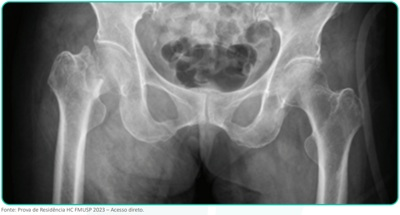
A Artroplastia total de quadril, suplementação de vitamina D, início de bisfosfonatos e anticoagulante.
B Artroplastia parcial de quadril, suplementação de vitamina D, início de bisfosfonatos e anticoagulante.
C Artroplastia total de quadril e anticoagulante.
D Artroplastia parcial de quadril e anticoagulante.
Questão 15 · Otorrinolaringologia · 4000194959João tem 10 anos e vem ao pronto-socorro com queixa de dor e di culdade para engolir, associada a febre alta e salivação excessiva. O pai relata que, há 1 semana, fez outra consulta no pronto atendimento, pois o paciente relatava dor de garganta e febre quando foi prescrito azitromicina. No momento, febre de 39 graus, baixa aceitação de dieta via oral, rigidez moderada de nuca. O exame físico e a tomogra a computadorizada estão apresentados a seguir: Com base no caso acima, assinale a alternativa correta em relação ao diagnóstico e ao tratamento:

A Amigdalite bacteriana resistente; iniciar amoxicilina-clavulanato, prednisona e retorno em 48 horas.
B Abscesso periamigdaliano/retrofaríngeo; realizar internação hospitalar, ceftriaxone IV e programar drenagem via transoral ou cervicotomia.
C Meningite pós-amigdalite; realizar internação hospitalar, punção lombar, ampicilina + oxacilina IV.
D Abscesso retrofaríngeo; realizar endoscopia digestiva alta, hemocultura e swab faríngeo.
Questão 16 · Psiquiatria · 4000194950Aposentada de 70 anos, viúva há 15 anos, comparece à UBS para consulta com o médico de família, após quase um ano de ausência. Tem em seu histórico: infarto agudo do miocárdio, obesidade grau 2, diabetes melito, hipertensão arterial, doença renal crônica grau 1, além de diversos episódios convulsivos sofridos antes dos 3 anos de idade e 2 episódios depressivos nos últimos 5 anos. Na avaliação, o médico nota um afeto entristecido, redução da motricidade, lenti cação da fala e aumento na latência das respostas, além de um discurso com conteúdo melancólico, pessimista e autodepreciativo. Também identi ca sonolência excessiva, aumento do apetite, ganho de 8 kg em relação ao último atendimento, e ouve queixas de sintomas dolorosos. Diante desse cenário, você suspeita de um episódio depressivo recorrente e decide iniciar a seguinte medicação:
A Mirtazapina.
B Amitriptilina.
C Bupropriona.
D Escitalopram.
Revisar: possível letra faltando em enunciado
Questão 17 · Psiquiatria · 4000194660Uma jovem de 22 anos, estudante de arquitetura, foi encontrada pelo pai desacordada dentro do banheiro de sua casa, tendo sido levada às pressas para o pronto-socorro mais próximo da residência da família. O pai da jovem, muito a ito, contou que a lha “sempre foi muito saudável”, mas que há alguns meses iniciou tratamento para depressão, com uso de uoxetina e diazepam, após ter recebido a notícia que só restavam alguns meses de vida para sua mãe. O genitor conta que sua esposa está recebendo cuidados paliativos em casa, explicando, de forma pesarosa, que ela havia “perdido a batalha contra o câncer de mama”, e que as intensas dores sofridas pela esposa geram um grande sofrimento e sensação de impotência em toda a família. Em uma breve avaliação inicial, o plantonista que recebe o caso observa os seguintes achados: hipotensão, bradipneia, bradicardia, resposta apenas aos estímulos dolorosos e miose bilateral. Diante deste cenário, o médico rapidamente desconfia de uma intoxicação exógena e solicita a aplicação de:
A flumazenil.
B N-acetilcisteína (NAC).
C naloxona.
D atropina.
Questão 18 · Ortopedia · 4000194654A respeito do trauma raquimedular, assinale a alternativa correta.
A Em um paciente com Glasgow 14, com suspeita de trauma raquimedular, deve-se proceder à solicitação de exames radiográficos, em detrimento da avaliação clínica da coluna.
B Pacientes com suspeita de trauma raquimedular que apresentam bradicardia e hipotensão devem ser tratados com reposição volêmica volumosa.
C A ausência de reflexo bulbocavernoso nas primeiras horas do trauma é indicativa de lesão completa da medula.
D A lesão centromedular é mais comum em pacientes jovens.
Questão 19 · Psiquiatria · 4000194621Segundo o relatório Suicide worldwide in 2019 — Global Health Estimates, publicado e m 2 0 2 1 pela Organização Mundial da Saúde (OMS), todos os anos, mais de 700 mil pessoas cometem suicídio no mundo. De acordo com estatísticas atuais, cerca de 80% dos suicídios ocorrem em países de baixa e média renda, como o Brasil. Em relação ao suicídio, assinale a alternativa correta.
A O suicídio está entre as 10 principais causa de morte entre a população de 15 a 29 anos.
B Estudos de autópsia psicológica apontam que cerca de 80% dos indivíduos que cometeram suicídio eram portadores de uma doença mental.
C Os homens realizam mais tentativas de suicídio, contudo as mulheres consumam mais o suicídio.
D O guia
Questão 20 · Síndrome do Esgotamento Prof issional Burnout · 4000194554Sobre a Síndrome de
A Trata-se de um quadro caracterizado por um estado de exaustão mental e perda da produtividade, especialmente no ambiente de trabalho.
B Médicos e agentes de segurança estão entre os profissionais mais acometidos.
C Ocorre especialmente em profissionais com empregos mal remunerados e com pouco contato interpessoal.
D Fatores predisponentes são um ambiente de trabalho desorganizado, com cobranças inadequadas e excessivas.
E Foi oficialmente reconhecida, descrita e catalogada pela CID-11.
Questão 21 · Otorrinolaringologia · 4000194524As infecções de vias aéreas superiores são de ocorrência muito comum na infância, sendo, na sua maioria, de etiologia viral e podendo evoluir para complicações bacterianas secundárias. Utilizando seu conhecimento sobre estas infecções, assinale a alternativa correta:
A A laringite viral é causada pelo vírus
B A rinossinusite viral apresenta espirros, prurido nasal, coriza e obstrução nasal, com palidez da mucosa septal e dos cornetos inferiores, ocorrendo de forma cíclica e frequentemente sem febre.
C O diagnóstico da otite média aguda é feito por meio da identificação do abaulamento da membrana timpânica associado aos achados da anamnese, devendo ser tratada com antibiótico em todos os casos para evitar mastoidite e complicações do SNC.
D Pacientes com febre, dispneia e estridor antecedidos por sintomas nasais que evoluíram com piora de intensidade, refratários à nebulização com adrenalina, devem ser manejados com internação hospitalar e antibioticoterapia venosa.
E Na traqueíte bacteriana, temos uma evolução em poucas horas de febre alta, estridor inspiratório, sialorreia, sinais de toxemia, ficando o paciente com hiperextensão cervical na posição do “tripé”.
Questão 22 · Otite Média Aguda · 4000194469Bruno, 4 anos de idade, é atendido na Clínica da Família. Os pais referem que há 3 dias ele iniciou com dor no ouvido direito e episódios de febre, sendo o último de 38,8°C. A otoscopia evidencia abaulamento da membrana timpânica direita com presença de otorreia purulenta, sem outras alterações. A principal hipótese diagnóstica e conduta terapêutica são, respectivamente:
A cerume impactado, sendo recomendada a realização do procedimento de lavagem de ouvido e orientação sobre sinais de alarme
B mastoidite, sendo recomendada administração da primeira dose de antibiótico e encaminhamento para avaliação na emergência
C otalgia inespecífica, sem sinais de infecção, sendo recomendada prescrição de analgésicos e reavaliação em 1 semana
D otite média aguda sem complicações, sendo recomendada prescrição de antibiótico e analgésicos via oral
Questão 23 · Resf riado ComumRinossinusite Viral · 4000194465Francisco, 7 meses de idade, apresenta tosse seca há 3 dias, com febre não aferida e obstrução nasal leve. Ao exame: bom estado geral, hidratado, corado, anictérico, acianótico, perfusão capilar periférica menor que 2 segundos. FC: 105 bpm, temperatura axilar: 37°C, FR: 42 irpm, ACV: RCR 2T BNF sem sopros ou ES, AR,: MVUA S/RA. Sem esforço respiratório. Abdome sem alterações. Diante do caso descrito, o diagnóstico provável é de:
A rinofaringite aguda
B rinite alérgica
C pneumonia
D sinusite
Questão 24 · Laringomalácia · 4000194382Recém-nascido a termo, do sexo feminino, com 23 dias de vida, apresenta di culdade em ganhar peso e tem estridor inspiratório, que piora com a amamentação, a posição supina e com o choro. O diagnóstico MAIS PROVÁVEL
A Bronquiolite viral aguda
B Doença do refluxo gastroesofágico
C Insuficiência cardíaca
D Laringomalácia congênita
Questão 25 · Calázio · Of talmologia · Patologias Palpebrais · 4000194328Uma paciente com 25 anos apresentou edema, rubor e dor em pálpebra superior direita, com resolução espontânea do quadro em 48 horas. No momento, apresenta nodulação de 0,3 cm, indolor, localizada na face interna do terço médio da pálpebra superior direita. Nega febre ou qualquer outro sintoma. Nesse caso, qual é o diagnóstico mais provável?
A Calázio.
B Hordéolo.
C Canaliculite.
D Dacriocistite.
Questão 26 · Anorexia Nervosa · Transtorno Alimentares · 4000194324Uma paciente com 22 anos foi atendida na atenção primária, acompanhada pelos pais, que estão preocupados com sua perda de peso. Eles contam que, desde os 14 anos, ela come muito pouco e que já esteve internada para “ser alimentada”. A paciente também refere ansiedade e palpitações que estão afetando o seu dia a dia. Os pais dizem que não sabem exatamente o quanto a paciente está comendo agora, mas que ela não provoca vômitos ou abusa de medicamentos. Ao exame físico, o índice de massa corporal da paciente é 14,8 kg/m² e sua pressão arterial está normal (100 × 60 mmHg), mas ela apresenta hipotensão postural assintomática (queda de 18 mmHg na diastólica), desidratação e frequência cardíaca de 42 batimentos por minuto. Diante dessa situação, o médico deve
A encaminhar a paciente para avaliação em hospital terciário para possível internação hospitalar.
B iniciar com topiramato para melhorar o transtorno alimentar e manter acompanhamento da paciente.
C iniciar com amitriptilina para melhorar o transtorno de ansiedade e manter acompanhamento da paciente.
D encaminhar a paciente para o ambulatório de atenção terciária para avaliação quanto à colocação de sonda nasoentérica.
Questão 27 · Otorrinolaringologia · Laringites · 4000194322Um lactente com 2 anos, previamente hígido, com história de um dia de febre, tosse e coriza, é atendido no pronto-socorro. A mãe conta que, desde a madrugada, ele apresenta obstrução nasal, sono agitado e cansaço. Ao exame de entrada, mostra-se em bom estado geral, corado, acianótico, agitado; à ausculta pulmonar, são notados murmúrios vesiculares diminuídos e simétricos, tiragem de fúrcula moderada e estridor leve ao repouso. Com base na principal hipótese diagnóstica para esse quadro clínico, a conduta mais adequada no momento é indicar
A salmeterol inalatório e claritromicina.
B salbutamol inalatório e metilprednisolona.
C dexametasona e nebulização com epinefrina.
D prednisolona e nebulização com soro fisiológico.
Questão 28 · Epif isiólise do Fêmur Proximal · 4000194292Um adolescente de 12 anos, pesando 85 kg e com índice de massa corpórea de 30 kg/m2, é atendido na emergência queixando-se de fortes dores no quadril direito e de impotência funcional do membro inferior direito. O pai informa ao médico de plantão que o menino é hipertenso, que realiza um tratamento para emagrecer e nega associação do problema na perna a trauma. Nesse caso, a hipótese diagnóstica mais provável é de
A epifisiólise femural.
B artrite séptica do quadril.
C artrite reumatoide juvenil.
D sinovite transitória do quadril.
Questão 29 · Abstinência de Álcool · 4000194289Um homem com 50 anos chega ao pronto-socorro após queda da própria altura e dor em pulso direito. Relata perda ponderal de 25 kg nos últimos dois anos, referindo hiporexia e má alimentação. Relata ingestão de bebidas destiladas diariamente há 10 anos, cerca de 500 a 800 ml/dia, nega tabagismo, doenças preexistentes, uso de medicamentos e de drogas ilícitas. O paciente apresenta-se em estado geral ruim, apático, alerta, orientado em espaço, pouco orientado em tempo; sua marcha é atáxica. Ao exame físico, registram-se índice de massa corporal de 18 kg/m2; frequência cardíaca de 100 batimentos por minuto; frequência respiratória de 16 incursões respiratórias por minuto; pressão arterial de 100 × 60 mmHg. Observam-se diplopia, nistagmo e estrabismo convergente bilateral, punho direito edemaciado, além de amnésia retrógrada e distorção ao relatar histórias passadas. Os resultados de seus exames de sangue apresentam: hemoglobina: 13,1 g/dL (valor de referência [VR]: 13-16); hematócrito: 38% (VR: 38-50); leucócitos: 8.890 /mL (VR: 4.000-10.000); plaquetas: 280.000/mL (VR: 150.000- 400.00); sódio: 140 mEq/L (VR: 135-145); potássio: 3,8 mg/dL (VR: 3,5-5,5); cálcio: 8,4 mg/dL (VR: 8,5–10,4); magnésio: 0,9 mg/dL (VR: 1,8-2,7); glicose: 68 mg/dL (VR: 70-99); TGO/AST: 70 U/L (VR: <40); TGP/ALT: 85 U/L (VR: < 40); vitamina B1: 15 mmol/L (VR: 60-120). No resultado da ressonância magnética plano axial T2, observam-se sinais hiperintensos na região do tecto e na substância cinzenta próxima ao aqueduto cerebral. Considerando-se esse quadro clínico e a suspeita diagnóstica da Síndrome de Wernick Korsako , quais seriam, respectivamente, o fator etiopatogênico dessa síndrome e a conduta terapêutica adequada para o paciente?
A Alcoolismo; hidratação com soro glicofisiológico a 10% + complexo B oral.
B Traumatismo cranioencefálico; internação na unidade de terapia intensiva (UTI).
C Traumatismo cranioencefálico; observação e hidratação com soro glicofisiológico a 10%.
D Alcoolismo; tiamina parenteral intravenosa ou intramuscular (500 mg, 2 a 3 vezes por dia, por 3 dias).
Questão 30 · Intoxicações Exógenas · 4000194287Um menino com 2 anos chega para atendimento no serviço de urgência com a mãe, que conta que ele ingeriu desinfetante há menos de uma hora. Ao exame, a criança apresenta-se consciente, irritada, chorosa, normotérmica, corada e hidratada, exalando um leve odor de desinfetante pela boca. Suas conjuntivas estão claras, as pupilas, isocóricas e fotorreativas; o ritmo cardíaco é regular em 2 tempos, sem sopros. Além disso, apresenta: perfusão periférica normal; frequência cardíaca de 120 batimentos por minuto; pressão arterial de 80 × 50 mmHg; frequência respiratória de 20 incursões por minuto, eupneica; murmúrio vesicular siológico sem ruídos adventícios. A conduta inicial no atendimento dessa criança é
A usar agentes neutralizantes ou substâncias diluentes, como leite e água.
B fazer lavagem gástrica e utilizar carvão ativado para adsorver a substância.
C induzir vômito para eliminar a maior quantidade possível da substância ingerida.
D examinar a mucosa oral e observar por 2 a 4 horas para verificar se permanece íntegra.
Questão 31 · Intoxicação por Metanol · 4000194133Paciente de 24 anos, trabalha como pintor de portões de ferro em funilaria, relata em consulta que não está enxergando, refere que no trabalho, geralmente faz pinturas em ambientes abertos e de máscara, porém há quatro dias, vem fazendo uma pintura em ambiente fechado, pois não consegue tirar o portão do local que está fixado. Você suspeita de intoxicação por metanol e, neste acaso, deverá instituir:
A Etanol
B Xileno
C Tolueno
D Bifosfato de cálcio
E Flumazenil
Questão 32 · Transtorno do Humor Bipolar THB · Diagnóstico do Transtorno do Humor Bipolar THB · 4000194124Um técnico de enfermagem de 22 anos de idade foi levado por seu pai à Unidade de pronto atendimento. Nas últimas 2 semanas o estudante tem cado progressivamente com agitação psicomotora, dormindo menos e falando rápido, às vezes difícil de entender. Há três dias começou a falar que descobriu a cura da COVID 19, tendo enviado várias mensagens eletrônicas para diferentes jornais e instituições públicas. Diz agora que aguarda a ligação dos presidentes de vários países para conversar sobre a sua descoberta. Quando questionado por seu pai sobre esses fatos, cou muito irritado e o agrediu sicamente. A família diz que o paciente sempre foi estudioso, trabalhador, carinhoso com os pais e é amigo do pai. Aos 20 anos de idade, apresentou quadro depressivo e foi tratado com medicamento, cujo nome os familiares não se recordam. Não há antecedentes familiares mórbidos relevantes. A principal hipótese diagnóstica, neste caso, é:
A Transtorno Depressivo Maior com sintomas psicóticos.
B Esquizofrenia Heberfrênica.
C Transtorno Afetivo Bipolar Tipo II.
D Esquizofrenia Paranóide.
E Transtorno Afetivo Bipolar Tipo I.
Revisar: possível letra faltando em enunciado
Questão 33 · Psiquiatria · 4000194110Uma senhora de 79 anos foi trazida ao ambulatório pela lha devido quadro de esquecimentos para fatos recentes, que teve início há 1 ano e 4 meses. Nos últimos 4 meses, houve acentuação do quadro, vindo a ocorrer um episódio em que, ao sair de casa, teve que ser trazida por vizinhos, pois não soube retornar. Apresenta dé cit de compreensão para realizar tarefas domésticas habituais como por exemplo fazer um chá. Para uma abordagem clínica inicial, devemos:
A avaliar a história clínica, comorbidades e aplicar o teste minimental e do relógio.
B solicitar de imediato uma angiorressonância cerebral com contraste.
C encaminhar para tratamento psiquiátrico por provável quadro de ansiedade.
D quadro clínico sugestivo de depressão e aplicar a escala de depressão geriátrica.
E investigar provável quadro de hipotireoidismo e solicitar TSH e T4 livre.
Questão 34 · Mononucleose · Mononucleose Inf ecciosa · 4000193976Uma adolescente, 11 anos, apresentou um quadro de erupção cutânea após uso de amoxicilina prescrita pelo seu médico, devido a um quadro de odinofagia com aumento das tonsilas palatinas com exsudato associado à hepatomegalia. Qual seria o provável diagnóstico e agente?
A Mononucleose infecciosa causada pelo Sars-COV 2.
B Mononucleose infecciosa causada pelo vírus Epstein-Barr.
C Amigdalite bacteriana causada pelo Streptococus epidermidis.
D Urticária crônica causada pela amoxicilina.
E Reação leucemoide, desencadeada pela amoxicilina, e quadro viral.
Questão 35 · Tabaco · Dependência de Tabaco · 4000193914A Organização Mundial da Saúde aponta que o tabaco mata mais de 8 milhões de pessoas por ano. Mais de 7 milhões dessas mortes resultam do uso direto desse produto, enquanto cerca de 1,2 milhão é o resultado de não-fumantes expostos ao fumo passivo. A OMS a rma ainda que cerca de 80% dos mais de um bilhão de fumantes do mundo vivem em países de baixa e média renda onde o peso das doenças e mortes relacionadas ao tabaco é maior (WHO, 2020). Nas unidades básicas de saúde é oferecido, gratuitamente, o tratamento para tabagista. As medicações vem com a orientação médica para cada paciente e assim são explicadas e distribuídas nos encontros para os pacientes. Pensando no tratamento do tabagismo, marque a alternativa correta.
A 10 ou mais cig./dia. 1º cigarro até 10 minutos após acordar. Teste de Fagerström ≥ 3. Tentaram sem sucesso parar somente com abordagens não medicamentosas.
B 20 ou mais cig./dia. 1º cigarro até 30 minutos após acordar. Teste de Fagerström ≥ 5. Tentaram sem sucesso parar somente com abordagens não medicamentosas.
C 15 ou mais cig./dia. 1º cigarro até 25 minutos após acordar. Teste de Fagerström ≥ 5. Tentaram sem sucesso parar somente com abordagens não medicamentosas.
D 20 ou mais cig./dia. 1º cigarro até 15 minutos após acordar. Teste de Fagerström ≥ 5. Tentaram sem sucesso parar somente com abordagens não medicamentosas.
E 10 ou mais cig./dia. 1º cigarro até 30 minutos após acordar. Teste de Fagerström ≥ 5. Tentaram sem sucesso parar somente com abordagens não medicamentosas.
Questão 36 · Tratamento da Esquizof renia · Esquizof renia · 4000193889Convenciona-se chamar de esquizofrenia refratária aqueles quadros que não respondem adequadamente ao tratamento medicamentoso após duas tentativas terapêuticas bem conduzidas, envolvendo, ao menos, 1 antipsicótico atípico. Assinale a alternativa que representa a medicação de escolha para os quadros esquizofrênicos refratários.
A Aripiprazol
B Carbamazepina
C Clozapina
D Clorpromazina
Questão 37 · Rede de Atenção Psicossocial RAPS · Rede de Atenção Psicossocial RAPS · 4000193657A população em situação de rua no Brasil cresceu 38% entre 2019 e 2022, quando atingiu 281.472 pessoas. A estimativa, que revela o impacto da pandemia da COVID-19 nesse segmento populacional, consta da publicação preliminar “Estimativa da População em Situação de Rua no Brasil (2012-2022)". Disponível em: <https://www.ipea.gov.br/portal>. Acesso em: dez. 2022. A estratégia Consultório na Rua foi instituída pela Política Nacional de Atenção Básica, em 2011, e visa ampliar o acesso da população em situação de rua aos serviços de saúde, ofertando, de maneira mais oportuna, atenção integral à saúde para esse grupo populacional, o qual se encontra em condições de vulnerabilidade e com os vínculos familiares interrompidos ou fragilizados. Disponível em: <https://bvsms.saude.gov.br/bvs/publicacoes>. Acesso em: dez. 2022. Quanto à atividade do Consultório de Rua, pode-se afirmar:
A A carga horária pode exigir trabalho noturno e aos fins de semana.
B Deve haver profissionais médicos, além dos demais profissionais, em todas as equipes.
C A equipe do Consultório de Rua não tem fixação a Unidades específicas de saúde.
D Mesmo com mobilidade, existe uma população e um território adstritos ao Consultório de Rua.
Questão 38 · Rede de Atenção Psicossocial RAPS · Rede de Atenção Psicossocial RAPS · 4000193656A população em situação de rua no Brasil cresceu 38% entre 2019 e 2022, quando atingiu 281.472 pessoas. A estimativa, que revela o impacto da pandemia da COVID-19 nesse segmento populacional, consta da publicação preliminar “Estimativa da População em Situação de Rua no Brasil (2012-2022)". Disponível em: <https://www.ipea.gov.br/portal>. Acesso em: dez. 2022. A estratégia Consultório na Rua foi instituída pela Política Nacional de Atenção Básica, em 2011, e visa ampliar o acesso da população em situação de rua aos serviços de saúde, ofertando, de maneira mais oportuna, atenção integral à saúde para esse grupo populacional, o qual se encontra em condições de vulnerabilidade e com os vínculos familiares interrompidos ou fragilizados. Disponível em: <https://bvsms.saude.gov.br/bvs/publicacoes>. Acesso em: dez. 2022. Considerando-se a clientela do Consultório de Rua, pode se dizer que
A a proporção de homens e de mulheres é semelhante, com pouca variação de gênero.
B a maioria dos moradores de rua não é alfabetizada, o que dificulta o trabalho.
C a população de idosos supera a de adultos jovens, entre os moradores de rua.
D o uso de drogas supera, apenas ligeiramente, o desemprego como causa para morar na rua.
Questão 39 · Rede de Atenção Psicossocial RAPS · 4000193655A população em situação de rua no Brasil cresceu 38% entre 2019 e 2022, quando atingiu 281.472 pessoas. A estimativa, que revela o impacto da pandemia da COVID-19 nesse segmento populacional, consta da publicação preliminar “Estimativa da População em Situação de Rua no Brasil (2012-2022)". Disponível em: <https://www.ipea.gov.br/portal>. Acesso em: dez. 2022. A estratégia Consultório na Rua foi instituída pela Política Nacional de Atenção Básica, em 2011, e visa ampliar o acesso da população em situação de rua aos serviços de saúde, ofertando, de maneira mais oportuna, atenção integral à saúde para esse grupo populacional, o qual se encontra em condições de vulnerabilidade e com os vínculos familiares interrompidos ou fragilizados. Disponível em: <https://bvsms.saude.gov.br/bvs/publicacoes>. Acesso em: dez. 2022. Indique a principal estratégia utilizada pelas equipes dos Consultórios de Rua:
A Aceitar a inexistência de vínculo entre pacientes e equipes.
B Trabalhar na perspectiva de redução de danos.
C Buscar a adesão dos pacientes às agendas de atendimento.
D Buscar a adesão dos pacientes aos serviços de apoio (abrigos etc).
Questão 40 · Paralisia Facial Perif érica · Paralisia f acial perif érica · 4000193654Mulher de 42 anos acorda com uma sensação de "dormência" facial à esquerda. Após cerca de 2 horas, ela desenvolve otalgia do lado esquerdo, hiperacusia e desconforto facial. O quadro seguiu-se com paralisia facial do lado esquerdo da face, com desvio da rima labial, fraqueza facial e assimetria progredindo para paralisia ácida completa no início da noite. Ao exame físico, a aparência de repouso da face esquerda demonstra ptose do supercílio, ssura palpebral alargada, apagamento do sulco nasolabial esquerdo e mau posicionamento inferior da comissura oral esquerda. Há completa ausência de movimento da sobrancelha, fechamento incompleto do olho com esforço total e perda de sorriso, rosnado e franzimento do lábio no lado afetado. Sem outras alterações no exame físico e a paciente não apresenta comorbidades ou faz uso de medicações. Ao comparecer ao serviço de pronto atendimento, a medicação que deve ser prescrita é a(o)
A prednisona.
B alteplase.
C heparina.
D ácido acetil salicílico.
E tenecteplase.
Questão 41 · Dependência de Tabaco · 4000193653Homem de 30 anos procura atendimento médico em ambulatório de atenção primária devido a tosse frequente há 6 meses. Relata apresentar episódios de infecção de vias aéreas superiores frequentes. Refere ser tabagista desde os 20 anos, 1 maço a cada 2 dias e fuma seu primeiro cigarro poucos minutos depois de acordar. Não apresenta outras queixas ou comorbidades e relata seu desejo de parar de fumar. Além de reforçar a decisão de abandonar o tabagismo, a conduta adequada com relação à cessação do tabagismo inclui
A encaminhar para a psiquiatria.
B utilizar vaporizador eletrônico.
C prescrever vareniclina.
D prescrever paroxetina.
E prescrever escitalopram.
Questão 42 · Insônia · Transtornos do Humor · Transtornos Ansiosos · 4000193651Paciente do sexo feminino, 45 anos, procura atendimento médico devido à di culdade de iniciar o sono. Ela fez tratamento para depressão no passado e está na perimenopausa. Ela relata que bebe sua última xícara de café às 21h, antes de se deitar às 22h, e ca vendo os minutos passarem no relógio por cerca de uma hora até dormir. Seu exame físico e exames laboratoriais estão normais. Além de orientar medidas de higiene do sono e técnicas de relaxamento, o médico pode considerar a prescrição de
A diltiazem.
B diazepam.
C difenidramina.
D zolpidem.
E zolendronato.
Revisar: possível letra faltando em enunciado
Questão 43 · Transtorno do Estresse PósTraumático TEPT · 4000193649Mulher, 30 anos, procura atendimento médico devido à tristeza, ao nervosismo, à di culdade de dormir e ao desinteresse por seus amigos nos últimos 4 meses. Relata que o quadro iniciou após ter sido estuprada por um antigo amigo após uma festa. Ela não se sente à vontade ao ser questionada mais a fundo sobre o ataque. A paciente informou o ocorrido somente a alguns de seus colegas, mas não formalizou denúncia. Ela relata ter pesadelos sobre o estupro, preocupações quanto à sua segurança e di culdades em relacionamentos íntimos com homens. Dentre as opções medicamentosas, o médico pode considerar a prescrição de
A venlafaxina.
B valproato de sódio.
C lamotrigina.
D tiagabina.
E zonisamida.
Questão 44 · Ortopedia Pediátrica · 4000193609Médico atende uma criança de 8 anos com queixa de dor lombar de forte intensidade, associada à artrite muito dolorosa em joelhos e dor em região anterior da tíbia, há 3 dias. Ao exame físico, apresenta palidez leve, ausência de adenomegalias, auscultas cardíaca e pulmonar sem alterações, abdômen sem massas ou visceromegalias palpáveis. Ela refere que a dor não melhora com analgésicos comuns e tem atrapalhado suas atividades diárias e o sono. A medicação contraindicada neste caso é
A dexametasona.
B naproxeno.
C analgésicos opioides.
D paracetamol.
E cetoprofeno.
Questão 45 · Transtornos Somáticos · Transtorno dos Sintomas Somáticos · 4000193524As técnicas de abordagem e o manejo dos pacientes com sintomas físicos sem explicação médica são fundamentados no método clínico centrado na pessoa. Quanto ao assunto, é correto afirmar:
A Na somatização mais grave, o usuário deve ser referenciado para um especialista em saúde mental.
B Na somatização mais grave, o usuário deve ser referenciado para um especialista em saúde mental.
C É aconselhável sempre pedir exames para provar ao paciente que ele não tem nada.
D Explicar para o usuário de forma objetiva que o seu sintoma é fruto de estar tentando fugir de algum conflito psíquico.
E A habilidade de comunicação e a utilização do método clínico centrado na pessoa podem facilitar a resolução dos casos.
Questão 46 · Psiquiatria Inf antil · 4000193520O desenvolvimento de comportamentos de proteção à saúde na adolescência pode ter um efeito positivo nas etapas seguintes da vida. Assinale a alternativa que aborda as estratégias utilizadas pelo médico de família e comunidade para aumentar a motivação do adolescente para evitar comportamentos de risco.
A Orientar sobre os comportamentos de risco e seus prejuízos decorrentes.
B Procurar identificar percepções e atitudes mediante comportamentos de risco e fazer abordagem de orientação a partir daí.
C Ter empatia, evitar o confronto, explorar os padrões de comportamento e os possíveis riscos associados a eles e os comportamentos de proteção.
D Impor todas as medidas necessárias.
E Oferecer preservativo e material educativo impresso.
Questão 47 · Tratamento da Depressão · Depressão · 4000193517Simone dos Santos, 40 anos de idade, vem à UBS para consulta de acompanhamento para depressão recorrente. Refere melhora dos sintomas após dois meses utilizando uoxetina 20 mg ao dia e sessões semanais de psicoterapia. Sem efeitos colaterais da medicação, ela relata fazer uso regularmente e de forma adequada. O próximo passo mais apropriado nesse caso é
A continuar com o plano atual e esperar mais tempo.
B aumentar a dose de fluoxetina para 40 mg/dia e continuar a psicoterapia.
C suspender a fluoxetina e iniciar paroxetina 10 mg/dia.
D continuar a fluoxetina e acrescentar bupropiona como terapia adjuvante.
E interromper a medicação e referenciar ao psiquiatra.
Questão 48 · Dependência de Tabaco · 4000190694Dependência definicotina é uma doença crônica, que pressupõe um manejo constante.
A Dentro desse quadro é possível prever como 6 o número de tentativas necessárias para que aquele indivíduo deixe definitivamente de fumar, bem como evitar que haja recaída.
B Dentro desse quadro não é possível prever o número de tentativas necessárias para que aquele indivíduo deixe definitivamente de fumar, bem como evitar que haja recaída.
C Dentro desse quadro é possível prever o número de tentativas necessárias para que aquele indivíduo deixe definitivamente de fumar, bem como evitar que haja recaída.
D Dentro desse quadro não é possível prever o número de tentativas necessárias para que aquele indivíduo deixe definitivamente de fumar, mas sim prever em 3 para evitar que haja recaída.
Questão 49 · Dependência de Tabaco · 4000190691Menor nível de dependência parece aumentar a chance de cessação do tabagismo, sendo assim:
A A presença de algum distúrbio psiquiátrico pode ser um fator complicador para cessação.
B A presença de algum distúrbio psiquiátrico nunca pode ser um fator complicador para cessação.
C A presença de algum distúrbio psiquiátrico pode ser um fator facilitador para cessação.
D A ausência de algum distúrbio psiquiátrico pode ser um fator complicador para cessação.
Questão 50 · Dependência de Tabaco · 4000190688O desfecho esperado é a cessação total do tabagismo, ou seja, interrupção do uso da substância nicotina em qualquer de suas formas. Sendo assim, pode-se afirmar que:
A A falha terapêutica não deve ser entendida como o não alcance da cessação do tabagismo ao final do tratamento.
B A falha terapêutica deve ser entendida como o alcance da cessação do tabagismo ao final do tratamento.
C A falha terapêutica deve ser entendida como o não alcance da cessação do tabagismo ao final do tratamento.
D A falha terapêutica deve ser entendida como o não alcance da cessação do tabagismo ao início do tratamento.
Questão 51 · Dependência de Tabaco · 4000190686Terapia de reposição definicotina combinada (CTRN), seja isolada ou em combinação, só deve ser iniciada na data em que o paciente deixar de fumar.
A A TRN deve ser usada de forma concomitante com o cigarro ou outros derivados de tabaco.
B A TRN não deve ser usada de forma concomitante com o cigarro ou outros derivados de tabaco.
C A TRN não deve ser usada de forma concomitante com o cigarro, mas pode com outros derivados de tabaco.
D A TRN deve ser sempre usada de forma concomitante com o cigarro ou outros derivados de tabaco.
Questão 52 · Mielomeningocele e def eitos de f echamento posterior do tubo neural · 4000190662Os disra smos espinhais ocultos são um grupo de afecções dorsais que existem abaixo de uma cobertura intacta de derme e epiderme. Como a pele e o tecido nervoso se originam do ectoderma, anomalias de ambos podem ocorrer simultaneamente. Em relação a esse tema, é correto afirmar que representa um estigma neurocutâneo
A mancha mongólica.
B sinus dérmicos.
C nevo auricular.
D pelos finos em região anal.
E ânus imperfurado.
Questão 53 · Fraturas do f êmur · Traumas do Joelho · Traumas da perna tornozelo e pé · 4000190606Um golpe direto na patela pode fraturá-la em dois ou mais fragmentos. As fraturas transversas da patela podem resultar de um golpe no joelho ou contração súbita do músculo quadríceps femoral. A figura abaixo representa uma radiogra a em per l do joelho após contusão, com estruturas representadas pelos números de I a VI. Assinale a alternativa com a correta associação.

A I: Fêmur, II: Tíbia, III: Fragmento proximal da patela, IV: Fragmento distal da patela, V: Tendão do M. quadríceps femoral, VI: Ligamento da patela.
B I: Tíbia, II: Fêmur, III: Fragmento proximal da patela, IV: Fragmento distal da patela, V: Ligamento da patela, VI: Tendão do M. quadríceps femoral.
C I: Tíbia, II: Fêmur, III: Fragmento proximal da patela, IV: Fragmento distal da patela, V: Tendão do M. quadríceps femoral, VI: Ligamento da patela.
D I: Fêmur, II: Tíbia, III: Fragmento proximal da patela, IV: Fragmento distal da patela, V: Ligamento da patela, VI: Tendão do M. quadríceps femoral.
Questão 54 · Síndrome Hipnossedativa · 4000190570Criança de 5 anos, feminino deu entrada na sala de emergência com rebaixamento do nível de consciência, muito sonolenta, com FR de 10 ipm e inspiração super cial. Sua mãe está em tratamento para ansiedade e relata ter encontrado uma caixa de lorazepam vazia ao lado da menina. Após a intubação para garantir vias aéreas e aquisição de acesso, indique qual medicação deveria ser utilizada.
A Naloxona
B Sugamadex
C N-acetilcisteína
D Flumazenil
Questão 55 · Transtornos Ansiosos · 4000190566Paciente de 16 anos, feminino, após isolamento por causa do COVID-19, voltou a frequentar a escola. Durante uma aula apresentou taquicardia, sensação de tontura e sudorese. Na consulta médica conta que está preocupada com seu futuro, sente medos irracionais e alterações de humor e apetite. Muitas vezes sente isso o dia todo e ca cansada no nal do dia, outras vezes tem a sensação de que não consegue controlar seus pensamentos. Diante da descrição do caso, assinale a provável hipótese diagnóstica.
A Transtorno de ansiedade.
B Transtorno depressivo.
C Transtorno alimentar.
D Transtorno obsessivo-compulsivo.
Revisar: possível letra faltando em enunciado
Questão 56 · Diagnóstico · 4000190564Criança de 8 anos, sexo feminino previamente hígida com vacinação completa, chega ao PS com febre de 39,2 °C, dor de garganta e dor abdominal há 2 dias. Nega tosse, coriza ou manchas na pele. Ao exame físico está em regular estado geral, febril, com gânglios broelásticos de até 1cm de diâmetro em região cervical bilateral. Avaliação de orofaringe e boca apresentada em duas imagens abaixo: Restante do exame físico sem alterações. Diante dos dados apresentados e da hipótese diagnóstica, assinale a alternativa com o tratamento correto.

A Imunoglobulina humana e AAS, pois trata-se de doença de Kawasaki confirmada pelos critérios clínicos.
B Corticoterapia sistêmica endovenosa, pois trata-se de doença de Behçet confirmado pelos critérios clínicos.
C Penicilina benzatina, pois trata-se de amigdalite estreptocócica pode ser confirmada por teste rápido ou cultura.
D Analgésicos e antitérmicos, pois trata-se de rubéola que poderá ser confirmada com a sorologia a partir do 4º dia da doença.
Questão 57 · Tratamento · 4000190537Primigesta de 15 anos com 20 semanas de idade gestacional pela DUM procura a unidade de pronto atendimento com queixa de mal-estar, febre, dor de garganta. Ao exame: PA 110x70mmHg FC: 80bpm, T: 38,5ºC, ausculta pulmonar com murmúrios vesiculares presentes e sem ruídos adventícios. Oroscopia: orofaringe hiperemiada, tonsilas palatinas com exsudato e criptas com pontos purulentos. Exame obstétrico normal e adequado para idade gestacional. Diante do quadro, assinale a alternativa com a hipótese diagnóstica e conduta.
A Amigdalite viral. Prescrever Paracetamol 500mg de 6 em 6 horas por 4 dias, pois na adolescência é baixa incidência de amigdalite bacteriana.
B Amigdalite bacteriana (provavelmente streptococica). Prescrever Amoxicilina 500mg de 8 em 8 horas por 7 dias, a fim de evitar complicações.
C Amigdalite bacteriana (provavelmente streptococica). Prescrever Ciprofloxacina 500mg de 8 em 8 horas por 7 dias, a fim de evitar complicações.
D Amigdalite viral. Prescrever Predinisona 10mg por dia por 7 dias, a fim de evitar complicações.
Questão 58 · Classif icação · 4000190521Paciente de 33 anos, masculino, foi vítima de colisão moto x mureta xa de proteção em baixa velocidade. Comparece à sala de emergência com dor, deformidade, crepitação, sangramento ativo e solução de continuidade puntiforme com menos de 1cm de extensão em terço médio da perna esquerda. Radiogra a evidencia fratura diafisária do terço médio da tíbia esquerda. Assinale a alternativa que indica o tipo correto de fratura e sua classificação por Gustillo Anderson.
A Fratura exposta. Classificação tipo 1.
B Fratura exposta. Classificação tipo 2.
C Fratura exposta. Classificação tipo 3.
D Fratura fechada. Sem classificação.
Questão 59 · Conduta · Diagnóstico · 4000190515Paciente de 30 anos, masculino, sofreu queda da motocicleta e foi resgatado pelo SAMU. No local, estava consciente, orientado, taquicárdico e hipotenso com deformidade de membro inferior a direita, suspeita para fratura do fêmur. A equipe de resgata aplicou 1000mL de SF 0,9%, o membro foi imobilizado e foi levado ao PS, onde chegou hemodinamicamente estável, em Glasgow 15. Realizada tomogra a de crânio e de coluna sem alterações e radiogra a de membro inferior que confirmou a fratura de fêmur. Após 48 horas evoluiu com desconforto respiratório e confusão mental acompanhado do surgimento de petéquias em conjuntiva ocular. Foi sedado, entubado e colocado em ventilação assistida. Diante do caso, assinale a alternativa correta com a conduta e hipótese diagnóstica.
A Realizar tomografia axial de crânio, hemograma e coagulograma por suspeita de embolia gordurosa.
B Realizar punção de alívio em segundo espaço intercostal e posterior radiografia de tórax para confirmação de pneumotórax.
C Realizar tomografia axial de crânio, pela suspeita de hematoma extradural com intervalo lúcido.
D Realizar tomografia axial de crânio, hemograma e coagulograma por suspeita de discrasia sanguínea.
Questão 60 · Queimaduras Químicas Oculares · 4000190512Paciente de 22 anos, feminino, estudante de engenharia química está estagiando em uma empresa de processamento de laticínios. Durante o estágio foi verificar o funcionamento de recipientes descartáveis quando um jato de uma substância alcalina atingiu seu olho direito. Diante do caso, assinale a alternativa que descreve a primeira atitude a ser adotada pela equipe de saúde local.
A Lavagem copiosa do olho com água-corrente.
B Aplicação de pomada anti-bacteriana.
C Oclusão com tampão de algodão.
D Aplicação de pomada com corticóide.
Questão 61 · Tratamento da Depressão · 4000190494Paciente feminina, 45 anos retorna no ambulatório de Clínica Médica, onde faz acompanhamento devido a obesidade e dislipidemia, em uso Atorvastatina 10mg por dia. Na última consulta, há 30 dias, foi iniciado tratamento para depressão com Amitriptilina 50mg à noite, além de recomendada a prática de atividade física, que ainda não começou. Hoje relata não ter notado qualquer melhora na disforia, mantendo anedonia, choro fácil, baixa energia e hipersonia com sono não reparador. Os exames laboratoriais e complementares estão todos dentro da faixa de normalidade e não há sintomas psicóticos associados. Diante desta evolução, assinale a alternativa com a melhor conduta a ser tomada.
A Aumentar a dose de Amitriptilina semanalmente com reavaliação breve, pois a dose ainda está muito abaixo do alvo terapêutico.
B Substituir a medicação para Clomipramina, pois não houve resposta com o tratamento inicial e deve ser tentada uma nova classe terapêutica.
C Associar Fluoxetina em dose baixa para otimizar o tratamento em dupla terapia e evitar agravamento do quadro depressivo.
D Cogitar teste terapêutico com lítio para excluir a possibilidade de transtorno bipolar, uma vez que não houve resposta terapêutica com tricíclico.
Questão 62 · Diagnóstico · 4000190493Paciente masculino de 15 anos, procura a UPA relatando dor de garganta e febre de 39°C há dois dias. À oroscopia, nota-se tonsilas palatinas aumentadas, com exsudato purulento bilateral e hiperemia difusa da orofaringe. Em relação à investigação do quadro apresentado, assinale a alternativa correta.
A Velocidade de hemossedimentação (VHS) e dosagem da proteína C reativa (PCR) são o padrão ouro para diferenciar entre infecção viral e bacteriana.
B Realizar dosagem de antiestreptolisina O (ASLO) nesta fase clínica permite evidenciar a presença da bactéria e direcionar o tratamento.
C A cultura de material obtido da orofaringe é o padrão ouro para a confirmação de infecção por Streptococcus pyogenes.
D Um resultado negativo ao realizar um teste rápido de ELISA confirma diagnóstico de mononucleose.
Questão 63 · Conjuntivite Viral · 4000190492Paciente masculino, 22 anos, procura a UPA referindo dor no olho direito há um dia, além de irritação local, fotofobia e secreção aquosa. Relata infecção de vias aéreas superiores há dois dias. Assinale a alternativa com a conduta mais adequada.
A Introduzir pomada ocular de Ciprofloxacino a cada seis horas, por cinco a sete dias e manter troca diária de roupa de cama e banho.
B Fazer limpeza da secreção local sempre que houver acúmulo e tratar com associação de antibiótico e corticosteroide em colírio.
C Aplicar compressas frias com soro fisiológico de hora em hora e reavaliação em um dia, sem necessidade de colírios.
D Prescrever colírio de corticosteroide para aplicação duas vezes ao dia e compressas mornas de soro fisiológico.
Questão 64 · Síndrome Narcótica · Intoxicação por Opioides · 4000190476Uma mulher de 40 anos de idade é levada à emergência por rebaixamento do nível de consciência. Foi submetida a histerectomia há 2 dias e prescrito oxicodona oral para alívio da dor. O familiar refere que ela usou o suprimento de 1 semana do medicamento num único dia. Ele nega crises convulsivas, comorbidades e uso de outras substâncias. Ao exame: afebril ao toque, pressão arterial 120 x 80 mmHg, frequência cardíaca de 70 bpm, frequência respiratória de 5 incursões por minuto, a saturação de O2 no sangue arterial é de 84% em ar ambiente. Resposta muito fraca a estímulos dolorosos, mas sem dé cits focais com movimentos preservados em todos os membros. Qual terapêutica abaixo é capaz de melhorar a alteração da consciência da paciente?
A Etanol.
B Piridoxina.
C Flumazenil.
D N acetilcisteína.
E Naloxona.
Questão 65 · Condutas e tratamento · 4000190466Mulher de 55 anos de idade vem apresentando dor de intensidade progressiva no ombro esquerdo há um mês. O histórico médico é significativo para obesidade e diabete tipo 2. Não há febre nem histórico de problemas em coluna cervical ou ombros. Ao exame físico: ombro direito normal; há dor intensa difusamente ao redor do ombro esquerdo à movimentação, associada à redução passiva e ativa dos movimentos em todos os planos; a força e a sensibilidade de ambos os braços são normais. Radiogra as simples do ombro esquerdo são normais. Além de analgésico e anti-inflamatório, a próxima conduta recomendada é
A injeção de corticosteroide na articulação glenoumeral.
B injeção de corticosteroide no espaço subacromial.
C ressonância magnética do ombro afetado.
D tomografia computadorizada do ombro afetado.
E encaminhamento para fisioterapia.
Questão 66 · Dif erenças Clínicas entre vertigem de origem central e perif érica · 4000190443Uma mulher de 60 anos, diabética, obesa, hipertensa e tabagista queixa-se de tontura. Os sintomas começaram subitamente há 12 horas e persistem apesar de uma boa noite de sono. A tontura é descrita como vertiginosa, constante e leve. Nega perda auditiva, zumbido, sensação de plenitude auricular e exantema. Não se observa sacada corretiva bilateralmente no teste de impulso da cabeça. A manobra de Dix-Hallpike exacerba a tontura. Não observamos nenhum nistagmo. Qual passo mais apropriado para o diagnóstico e tratamento desse caso?
A Ressonância nucelar magnética de cérebro.
B Teste calórico.
C Manobra de Epley.
D Iniciar betaistina.
E Iniciar prenisolona
Questão 67 · Tratamento · 4000190425Pré-escolar, sexo masculino, com 3 anos, apresenta quadro febril agudo (até 38 graus), com dor de gargan- ta e cefaleia há cerca de 48 horas. Refere coriza hia- lina e pouca tosse. Não apresenta vômito ou diarreia. Não apresenta doenças de base. No exame físico está em bom estado, corado, sem alterações de seus sinais vitais, com alguns gânglios broelásticos de até 0,5 cm em região cervical anterior bilateralmente. Oroscopia com edema e moderada hiperemia. Demais aspectos do exame físico sem alterações significativas. Assinale a alternativa que apresenta a conduta mais adequada.
A Iniciar antibiótico, não solicitando nenhum exame laboratorial.
B Solicitar prova rápida para o estreptococo e, mesmo que negativa, iniciar antibiótico.
C Solicitar prova rápida para o estreptococo e, se positiva, confirmar com a coleta da cultura de orofaringe.
D Solicitar prova rápida para o estreptococo e, se negativa, colher cultura de orofaringe com introdução de antibioticoterapia até a disponibilidade do resultado final.
E Prescrição de sintomáticos e acompanhamento clínico.
Questão 68 · Síndrome Anticolinérgica · 4000190362Mulher de 45 anos de idade é admitida na unidade de emergência após ter sido encontrada caída no banheiro de casa, próxima a diversos frascos vazios de um medicamento não identi cado. A paciente encontra-se sonolenta, com escala de coma de Glasgow de 10 (abertura ocular: 3; resposta verbal: 3 e resposta motora: 4), com pupilas midriáticas e mucosas secas. Apresenta pressão arterial de 80x50mmHg, frequência cardíaca de 115bpm, frequência respiratória de 14irpm, saturação de oxigênio de 96% em ar ambiente e temperatura axilar de 38,7°C. Seu ritmo cardíaco está regular. Os murmúrios vesiculares estão presentes em todo o tórax, sem ruídos adventícios. Os ruídos hidroaéreos estão diminuídos. Sem outras alterações. O eletrocardiograma realizado pode ser visto a seguir. Qual é a conduta que deve ser realizada neste momento?

A Bicarbonato de sódio
B Gluconato de cálcio
C Atropina
D Naloxona
Revisar: possível letra faltando em enunciado
Questão 69 · Diagnóstico · 4000190323Pré-adolescente do sexo masculino de 10 anos de idade é levado à emergência por odinofagia e febre, aferida em até 39°C ha 3 dias. Está em uso de cetoprofeno de 12/12 horas, sem melhora. Relata uso de amoxicilina há 2 meses para tratamento de otite média aguda. Ao exame clínico, apresenta-se em bom estado geral, corado, hidratado, sinais vitais estáveis. Linfonodos cervicais de cerca de 1cm, palpáveis em cadeias cervicais anteriores bilateralmente, sem sinais ogísticos. À oroscopia, notam-se tonsilas hipertro adas, hiperemiadas, com placas esbranquiçadas e petéquias em palato mole. Não apresenta lesões de pele. Otoscopia sem alterações. Restante do exame clínico sem alterações. Diante do exposto, qual é a conduta?
A Realizar strep test. Se negativo, está indicada a realização de cultura de orofaringe, e a antibioticoterapia pode ser introduzida após o seu resultado.
B Deve-se iniciar a antibioticoterapia com amoxicilina + clavulanato até o sétimo dia de doença, para evitar glomerulonefrite.
C Não há necessidade de realização de exame laboratorial para o diagnóstico, e o antibiótico de escolha neste caso é amoxicilina + clavulanato.
D A ausência de coriza ou tosse exclui a possibilidade de etiologia viral, logo deve-se prescrever penicilina benzatina no pronto-socorro.
Questão 70 · Estabilizadores do Humor · Tratamento do Transtorno do Humor Bipolar THB · 4000190313Paciente com transtorno bipolar bem controlado apresenta quadro de náuseas, diarreia e vômitos nos últimos 3 dias. Ao exame físico, nota-se um tremor grosseiro de extremidades; paciente parece confuso na entrevista. O teste sérico mais provável de ser anormal é
A lítio.
B leucograma.
C cálcio.
D tiroxina.
E creatinofosfoquinase.
Questão 71 · Diagnóstico · Apresentação Clínica · 4000190266Pietra, 3 anos, apresenta, há quatro dias, tosse que piora à noite, secreção e obstrução nasal. No dia em que iniciou febre e queda do estado geral, foi levada ao consultório pediátrico. Constatou-se que, ao exame físico, estava eupneica, com hiperemia de vestíbulos nasais e faringe, apresentando gotejamento pós-nasal. O diagnóstico provável e o meio de obtê-lo são, respectivamente?
A Rinite; raios-X cavum e seios da face.
B Rinossinusite aguda; raios-X dos seios da face.
C Rinite; anamnese e exame físico.
D Rinossinusite aguda; anamnese e exame físico.
E Rinite; teste alérgico.
Questão 72 · Laringite estridulosa · 4000190255Alberto, de 2 anos, com antecedente de atopia, é levado à unidade de pronto socorro pediátrico em uma madrugada bastante fria. A médica plantonista colhe informações de que o menor passou o dia bem, mas que, à noite, de repente, acordou com uma tosse rouca que chegou a assustar a criança. Ao exame, o paciente encontrava-se em bom estado geral, afebril, eupneico, orofaringe algo hiperemiada, ausculta pulmonar sem alterações e com certa melhora da tosse. Qual o provável diagnóstico e a conduta adequada?
A Laringotraqueobronquite; iniciar hidratação e epinefrina inalatória.
B Faringite bacteriana; tratar com amoxicilina.
C Laringite estridulosa; tranquilizar a família, hidratação e sintomáticos.
D Traqueíte bacteriana; administrar ceftriaxona.
E Asma brônquica; iniciar tratamento com corticoesteroides.
Questão 73 · Herpangina · 4000190210Lactente, quinze meses de idade, com quadro de febre, choro e 1 episódio de vômito. No exame físico, apresenta-se com hiperemia de orofaringe e pequenas úlceras nos pilares anteriores das amígdalas. Qual provável agente responsável?
A Vírus EBV.
B Vírus coxsackie A.
C S. pyogenes.
D Eritrovírus.
E Corynebacterium diphteriae.
Questão 74 · Tratamento · 4000190203Lactente de 5 meses, com febre (39º a 39,5º), irritabilidade e recusa alimentar. No exame físico estava em bom estado geral, eupneico, com hiperemia de orofaringe. A otoscopia apresentava abaulamento da membrana timpânica unilateral. Essa é a primeira vez que essa criança ca doente. Ainda não frequenta creche e não tem doenças de base. A conduta mais adequada é prescrever
A amoxicilina com clavulanato, dose de 90 mg/kg, por via oral.
B sulfato de polimixina, por via tópica.
C apenas antitérmico.
D amoxicilina, dose de 45mg/kg, por via oral.
E cefaclor, dose de 20 mg/kg, por via oral.
Revisar: possível letra faltando em enunciado
Questão 75 · Apresentação e Diagnóstico Clínicos · 4000189909A Manobra de Ortolani positiva é patognomônica de:
A Toxoplasmose congênita.
B Displasia de quadril.
C Artrogripose múltipla congênita.
D Artrite piogênica.
Questão 76 · Retinoblastoma · 4000189906ARC sexo feminino 2 anos de idade chega ao consultório a mãe refere estar apresentando desconforto e irritação (vermelhidão) nos olhos quando sai para brincar de dia no parque, à inspeção ocular, observa-se estrabismo e leucocoria. Entre as causas de alterações oculares, a principal hipótese diagnóstica para o caso é:
A Glaucoma.
B Catarata.
C Retinoblastoma.
D Conjuntivite.
Questão 77 · Teste do olhinho · Teste do Olhinho · 4000189753RN de 37 semanas e 1 dia, nascido de parto cesárea de forma eletiva, sem intercorrências no intra-parto, com pré-natal de baixo risco, contendo 7 consultas. Ao nascer, apresenta durante os testes de triagem neonatal leucocoria bilateral. Sobre o caso, assinale a alternativa correta:
A diante de pré-natal de baixo risco está descartada a hipótese de catarata congênita.
B o teste deve ser repetido antes de encaminhar ao especialista.
C a principal hipótese diagnóstica desse caso é glaucoma congênito.
D a principal causa de teste do olhinho alterado é retinoblastoma.
E para descartar causas malignas o encaminhamento deve ser precoce.
Questão 78 · Apresentação clínica · Diagnóstico · 4000189575Paciente feminino, 58 anos, diabética em uso de metformina, apresenta queixa de dor no ombro esquerdo há 3 meses, com piora progressiva nos últimos dias. Refere que a dor surge ao movimentar-se, principalmente ao executar movimentos com os braços acima do nível dos ombros, melhorando com repouso e com uso de anti-inflamatórios. Exame físico: arco de movimento ativo à esquerda limitado por dor, com teste de Neer e Hawkins positivos, teste de supinação e speed test negativos, rotações interna e externa relativamente preservados, testes de Cozen e Mill negativos.Qual o provável diagnóstico
A Síndrome do impacto.
B Tendinopatia de cabeça longa do bíceps.
C Epicondilite lateral.
D Bursite subacromial.
Questão 79 · Mielomeningocele e def eitos de f echamento posterior do tubo neural · 4000189466Os disra smos espinhais ocultos são um grupo de afecções dorsais que existem abaixo de uma cobertura intacta de derme e epiderme. Como a pele e o tecido nervoso se originam do ectoderma, anomalias de ambos podem ocorrer simultaneamente. Em relação a esse tema, é correto a rmar que representa um estigma neurocutâneo
A mancha mongólica.
B sinus dérmicos.
C nevo auricular.
D pelos finos em região anal.
E ânus imperfurado.
Questão 80 · Intoxicação por Hidrocarbonetos · Intoxicação por Agrotóxicos · 4000189431Quanto à intoxicação aguda, é INCORRETO afirmar:
A É a intoxicação decorrente de um único contato (dose única) ou múltiplos contatos (doses repetidas) com um agrotóxico (ou mistura de agrotóxicos) em um período de 24 horas.
B Os sintomas são subjetivos, o diagnóstico e nexo causal são difíceis de serem estabelecidos.
C Os efeitos podem surgir de imediato ou no decorrer de alguns dias, no máximo duas semanas, dependendo do princípio ativo.
D A depender da quantidade de produto absorvida, a intoxicação pode ocorrer de forma leve, moderada ou grave.
Questão 81 · Etiologia e Epidemiologia · 4000189403A otite média aguda trata-se da in amação do ouvido médio e de seus anexos, associada à presença de líquido na orelha média, com sinais e sintomas de início agudo, como dor e febre. NÃO é agente bacteriano frequentemente encontrados na otite média aguda:
A Streptococcus Pneumoniae.
B Escherichia Coli.
C Haemophilus Influenzae não tipável.
D Moraxella Catarrhalis.
Questão 82 · Transtorno Psicóticos · 4000189288Senhora, 73 anos, professora aposentada, faz trabalhos comunitários (reforço escolar para crianças carentes) e viúva. Há 1 ano sua lha vem notando que tem se esquecido com mais facilidade dos seus compromissos. Nas reuniões familiares, tornou-se um pouco repetitiva, contando as mesmas histórias e tendo maiores di culdades para encontrar a palavra que quer dizer. Nos últimos meses, tem se confundido ao pagar contas na mercearia e padaria, voltando para casa frequentemente com o troco errado. Certo dia, cou muito desorientada, confundindo os parentes, não sabia onde estava e dizia que havia bichos na parede e perto da cama. Passou a noite toda sem dormir e dizia que havia pessoas dentro da casa, mas não sabia quem eram, quando foi levada ao Hospital para avaliação. Qual hipótese diagnóstica melhor explica o quadro atual da paciente?
A Esquizofrenia
B Transtorno Delirante
C Depressão Maior
D Delirium
Questão 83 · Abordagem ao paciente em crise · Síndrome Narcótica · Medidas gerais · 4000189284Mulher, 24 anos, admitido na emergência após ingesta de uma cartela de uoxetina e de diazepam em tentativa de suicidio há 1 hora. Ao exame: PA: 130/80 mmhg, FC: 72 bpm, tempo de enchimento capilar preservado, glasgow 12, TAX: 36,7°C. A conduta mais adequada é:
A Monitorização hemodinâmica e observação
B Flumazenil
C Lavagem gástrica
D Administração de carvão ativado
Questão 84 · Intoxicação por Metais Pesados · 4000189231Inúmeros são os mecanismos pelos quais uma substância ou um elemento químico age no nível tóxico que podem auxiliar o clínico na predição de sinais e sintomas frente a uma intoxicação aguda ou crônica. Considerando tais mecanismos, está descrito CORRETAMENTE:
A Asfixiantes simples, por competição pela hemoglobina, como faz o CO.
B Asfixiantes químicos, por ocupação do espaço pelo O₂ na árvore traqueobrônquica alveolar.
C Inibições de enzimas possuidoras de grupos SH pelo chumbo, mercúrio e arsênio.
D Inibição da cadeia de formação da hemoglobina pelo gás sulfídrico.
Questão 85 · Tabaco · 4000189230Com relação ao tabagismo e seus riscos, é CORRETO afirmar:
A O tabagismo pode ser associado a complicações do diabetes, por meio de processos metabólicos, incluindo a homeostase da glicose, hiperinsulinemia e resistência à insulina.
B Os principais sintomas da abstinência definicotina são: fissura, bradicardia, diabetes, depressão, hipertensão, anedonia, dislipidemia, câncer e febre tifoide.
C O aumento do relaxamento vascular pelo monóxido de carbono é uma alteração cardiovascular provocada pelo tabagismo e que influencia na prevalência de infarto do miocárdio.
D O risco isolado de complicações obstétricas fica próximo ao de não fumantes se o tabagismo for interrompido até o final do primeiro trimestre da gestação.
Questão 86 · Diagnóstico · 4000189209Sobre o diagnóstico de rinite alérgica, é INCORRETO afirmar:
A Anamnese e exame físico, incluindo a observação da mucosa nasal, são essenciais para estabelecer o diagnóstico de rinite alérgica.
B Os exames complementares, como os testes cutâneos, podem ser realizados por método imunoenzimático ou imunofluorimétrico.
C O diagnóstico diferencial é feito com pólipos, fatores mecânicos, tumores, granulomatoses, alterações ciliares, rinorreia cérebro-espinhal, rinite idiopática, rinite eosinofílica, dentre outros.
D A rinite alérgica, em geral, é acompanhada por prurido ocular e de lacrimejamento, podendo ocorrer, também, prurido no conduto auditivo externo, palato e faringe.
Questão 87 · Faringites Virais · 4000189204Quanto à infecção das vias aéreas superiores, é CORRETO afirmar que:
A A rinossinusite aguda é uma doença infecciosa epidêmica aguda causada pelo vírus influenza tipos A e B, que se diferencia do resfriado comum pela sua maior repercussão sistêmica, não se limitando à mucosa da nasofaringe.
B A rinofaringe aguda é uma síndrome clínica benigna e autolimitada, causada pela inflamação aguda da mucosa do nariz, dos seios paranasais e da faringe, provocada principalmente por um amplo grupo de vírus.
C A faringoamigdalite aguda é uma doença que resulta da infecção de um ou mais seios paranasais, causada por agentes virais ou bacterianos.
D Otite média aguda recorrente é uma enfermidade que desenvolve processos inflamatórios nas vias respiratórias superiores, acometendo a faringe, os tecidos adjacentes e as amígdalas.
Questão 88 · Intoxicação por Estimulantes · Estimulantes · Dependência Química · 4000189203Paciente, 12 anos, sexo feminino, dá entrada no pronto socorro com tontura, dilatação pupilar, náuseas, febre, rubor facial, pais relatam que a lha apresentou crise de pânico narrando perseguição de animais gigantes. O provável agente responsável pelo quadro é:
A Fenciclidina.
B Anfetamina.
C Dietilamida do Ácido Lisérgico.
D Álcool.
Questão 89 · Apresentação Clínica · 4000189201Paciente, 6 anos, sexo masculino, apresenta rinorreia clara e sintomas alérgicos, olheiras, lacrimejamento, prurido no palato e ruga alérgica. Considerando o diagnóstico de rinite alérgica, as olheiras são decorrentes de:
A Infecção dos sulcos faciais.
B Hábito característico de esfregar o nariz.
C Hábito característico de esfregar os olhos.
D Edema na mucosa nasal.
Questão 90 · Diagnóstico · Faringite por Streptococcus pyogenes · 4000189178Uma mulher de 30 anos apresenta-se com quadro sugestivo de faringite estreptocócica (febre, exsudato tonsilar, linfonodomegalia e sem tosse) após ter sido exposta a alguém com sintomas semelhantes. O teste rápido para pesquisa de antígeno estreptocócico foi negativo. Qual seria o próximo passo MAIS APROPRIADO?
A Solicitar os títulos de antiestreptolisina O.
B Não há tratamento adicional, uma vez que a pesquisa para o antígeno antriestreptocócico foi negativo.
C Solicitar tomografia computadorizada da região cervical.
D Coletar cultura da orofaringe e iniciar tratamento antibiótico se houver crescimento bacteriano.
E Repetir o teste rápido para pesquisa do antígeno estreptocócico.
Questão 91 · Antipsicóticos · 4000189150Marque a alternativa que corresponde a três antipissicóticos atípicos.
A Haloperidol, Rispiridona e Aripiprazol.
B Levomepromazina, Rispiridona e Quetiapina.
C Clorpromazina, Levomepromazina e Quetiapina.
D Aloperidol, Olanzapina e Clorpromazina.
E Risperidona, Olanzapina e Aripiprazol.
Questão 92 · Semiologia Psiquiátrica · Psicopatologia e Exame do Estado Mental EEM · 4000189145José, 33 anos de idade, apresenta quadro de esquizofrenia. Em consulta psiquiátrica, relatou que ratos habitavam seu cérebro e conduziam seu pensamento. Pouco tempo depois, de forma inesperada, cou em siléncio. O pro ssional, então, perguntou a José por que ele parou de falar. E ele então respondeu: “falar, falar, falar... pensamento parou. Acho que meus roedores não me deixarão falar” (sic). A alternativa que apresenta corretamente as duas alterações de linguagem presentes no caso clínico acima é:
A Ecolalia e Neologismo.
B Bradifasia e Ecolalia.
C Perseveração Verbal e Logorreia.
D Taquifasia e Ecolalia.
E Neologismo e Perseveração Verbal.
Questão 93 · Psicopatologia e Exame do Estado Mental EEM · 4000189144Marque a alternativa abaixo onde a fala logorreica está presente.
A Esquizofrenia Paranóide.
B Transtorno Bipolar tipo I.
C Transtorno Obsessivo Compulsivo.
D Transtorno Bipolar tipo II.
E Esquizofrenia Ebefrênica.
Questão 94 · Psicopatologia e Exame do Estado Mental EEM · Esquizof renia · 4000189142Sobre os sintomas negativos da Esquizofrenia, informe se é Verdadeiro (V) ou Falso (F) para o que se a rma e assinale a alternativa que apresenta a sequência correta. ( ) Perdas de certas funções psíquicas e empobrecimento global da vida afetiva, cognitiva e social. ( ) Distanciamento e aplainamento afetivo ou afeto embotado. ( ) Distorção sobre o que é verdadeiro, como a presença de ideias deturpadas sobre a realidade. ( ) Alucinações, que são consideravelmente frequentes, mas também pode haver ilusões ou pseudoalucinações. A alternativa que apresenta a sequencia correta de cima para baixo é:
A V – F – V – V
B F – V – F – F
C F – F – V – V
D V – V – V – V
E V – V – F – F
Questão 95 · Psicopatologia e Exame do Estado Mental EEM · Transtorno Delirante Persistente · 4000189140Ana, 55 anos comparece a um serviço de atendimento em saúde mental a rmando que implantaram um chip em seu corpo, para controlar suas ações e seus pensamentos. Esta manifestação indica a presença de um delírio se:
A a crença do indivíduo em relação à veracidade de suas ideias permanece, mesmo diante da apresentação de argumentos lógicos ou dados objetivos.
B o conteúdo do delírio, inequivocamente, remete a formulação de juízos falsos e a situações improváveis de ocorrerem na realidade.
C a confiança que o indivíduo demonstra em relação ao seu julgamento foi sancionada e estimulada por um grupo restrito em seu ambiente social.
D a organização das ideias que sustentam o delírio não tem lógica, ficando vulnerável a qualquer questionamento de um interlocutor.
E a sua estrutura pode ser penetrada e abalada facilmente pela intervenção de profissionais técnica e teoricamente capacitados.
Questão 96 · Intoxicação por Metais Pesados · 4000189122O chumbo é um metal pesado, tóxico, encontrado naturalmente na crosta terrestre, muito difundido na natureza e de fácil extração. Quanto ao efeito do chumbo na saúde humana, é CORRETO afirmar:
A O chumbo afeta de maneira gradativa e irreversível, o desenvolvimento neurológico de crianças, causando um déficit cognitivo com diminuição do coeficiente de inteligência e dificuldades de aprendizagem, e até distúrbios de comportamento.
B A exposição ao chumbo provoca distúrbios neurológicos severos em adultos e paralisia cerebral em crianças nascidas de mães aparentemente sadias.
C O uso indiscriminado de chumbo resulta em altos níveis de poluição ambiental e intoxicação humana.
D O chumbo é responsável pelo maior número de intoxicações e mortes no Brasil.
Questão 97 · Exames complementares · Osteonecrose da Cabeça do Fêmur · 4000189089Mulher, 28 anos, avaliada por dor em região inguinal esquerda há três semanas, que piora à deambulação. Sem outras queixas. Antecedentes pessoais: lúpus eritematoso sistêmico com nefrite, tratada com pulsos de corticoide nos últimos dez anos e em uso de prednisona 10 mg como manutenção, associada à hidroxicloroquina. Exame físico: PA 120x78 mmHg, FC 80 bpm. Desconforto discreto em região inguinal esquerda com a movimentação da articulação coxofemoral. Restante do exame físico normal. Radiograma de quadril normal. Considerando a hipótese diagnostica de necrose avascular de cabeça de fêmur, é correto:
A O radiograma de quadril normal afasta a hipótese diagnóstica.
B A ressonância nuclear magnética de quadril identifica lesões incipientes.
C O exame padrão-ouro para diagnostico é a cintilografia com leucócitos marcados.
D A substituição da prednisona por prednisolona retarda a progressão da lesão.
Questão 98 · Otite Média Aguda · 4000188989Os agentes bacterianos mais frequentemente implicados na etiologia das otites médias agudas na infância são:
A Streptococcus pneumoniae, Haemophilus influenzae não tipável e a Moraxella catarrhalis.
B Streptococcus pyogenes do grupo A, Haemophilus influenzae tipo B e a Moraxella catarrhalis.
C Streptococcus pneumoniae, Haemophilus influenzae tipo B e o Mycoplasma pneumoniae.
D Streptococcus pneumoniae, Haemophilus influenzae tipo B e a Moraxella catarrhalis.
E Streptococcus pyogenes do grupo A, Haemophilus influenzae não tipável e o Mycoplasma pneumoniae.
Questão 99 · Intoxicação por Paracetamol Acetaminof eno · 4000188957Menino de 2 anos deu entrada no pronto-socorro após ter ingerido um frasco de paracetamol. O pediatra de plantão deverá estar atento para o risco de a criança apresentar:
A sinais de hepatotoxicidade.
B hemólise maciça.
C depressão respiratória.
D sintomas extrapiramidais.
Questão 100 · Ciclotimia · Transtornos do Humor · 4000188953Pacientes relata distúrbio do humor crônico e utuante, com muitos períodos de hipomania e de depressão menor. Apresentam di culdades conjugais devido à natureza imprevisível de suas mudanças de humor e a irritabilidade acentuada. Também é comum, nesses pacientes, o abuso de álcool e outras substâncias. Assinale o diagnóstico que corretamente se relaciona com a descrição sintomatológica apresentada.
A Transtorno distímico.
B Transtorno ciclotímico.
C Transtorno de Humor Bipolar tipo I.
D Transtorno de Humor Bipolar tipo II.
Questão 101 · Delirium Tremens · Estado Conf usional Agudo Delirium · 4000188948Sobre o tratamento da síndrome confusional aguda (delirium), é correto afirmar:
A Óculos e aparelhos auditivos devem ser retirados do alcance do paciente para evitar que ele se machuque com esses objetos.
B O uso de benzodiazepínicos está indicado nos casos de delirium tremens.
C O uso de benzodiazepínicos está indicado nos casos de delirium em idosos.
D As intervenções farmacológicas constituem a primeira etapa no manejo de um paciente com suspeita de delirium.
Questão 102 · Transtorno do Humor Bipolar THB · Transtornos do Humor · 4000188947Um estudante de biologia de 24 anos de idade é trazido por sua mãe e seu irmão ao pronto-socorro. Nas últimas duas semanas, o estudante tem cado progressivamente mais agitado, inquieto, dormindo menos e falando rápido, às vezes difícil de entender. Há dois dias começou a falar que descobriu a cura para a covid- 19, tendo enviado várias mensagens eletrônicas para diferentes jornais, instituições públicas e embaixadas. Diz agora que aguarda a ligação de ministros da saúde de vários países para conversar sobre sua descoberta. Quando questionado pelo irmão sobre esses fatos, cou muito irritado e tentou agredi-lo sicamente. A família diz que o paciente sempre foi estudioso, trabalhador, carinhoso com os pais e é amigo do irmão. Aos 20 anos de idade, apresentou quadro depressivo e foi tratado com medicamento, cujo nome os familiares não se recordam. Não há antecedentes familiares mórbidos relevantes. Qual é a principal hipótese diagnóstica?
A Transtorno Obsessivo Compulsivo.
B Esquizofrenia Hebefrênica.
C Transtorno Afetivo Bipolar.
D Transtorno de Personalidade.
Revisar: possível letra faltando em enunciado
Questão 103 · Blues do Puerpério · Transtornos do Humor · 4000188939Alguns transtornos psiquiátricos ocorrem no período pós-parto com importante impacto sobre a mulher, o bebê e pessoas próximas. Assinale a alternativa que corretamente descreve um desses transtornos.
A A psicose puerperal, que se caracteriza por um quadro delirante, é um evento raro e costuma ocorrer geralmente em torno do segundo ou terceiro mês pós-parto.
B A síndrome de tristeza pós-parto (também chamada de baby blues) é bastante comum (com incidência em até 75% das mulheres) e ocorre durante o período de 3 a 6 meses após o parto.
C Nenhuma evidência conclusiva indica que a síndrome de tristeza pós-parto leve a um episódio subsequente de depressão.
D Os dados indicam que um episódio de depressão pós-parto não aumenta o risco de recorrência para novos episódios de depressão durante a vida.
Questão 104 · Diagnóstico da Depressão · Depressão · 4000188931Sobre a capacidade cognitiva e a avaliação geriátrica de depressão, assinale a afirmativa correta.
A O Mini Mental (Mini Exame do Estado Mental) avalia se o paciente idoso está apresentando sinais sugestivos de depressão.
B O teste de Fluência Verbal tem por finalidade avaliar a capacidade de o idoso repetir palavras selecionadas no menor tempo possível.
C O teste do Relógio mede as funções executivas e habilidades visuo-especiais, podendo estar comprometidas na demência de Alzheimer.
D O MOCA (Montreal Cognitive Assessment) é o melhor instrumento para o diagnóstico de transtorno cognitivo.
Questão 105 · Tratamento · Diagnóstico · Etiologia e Epidemiologia · 4000188876Um lactente de 1 ano e 2 meses vem à consulta com rinorreia, irritabilidade e picos subfebris há 4 dias. Hoje apresentou piora do quadro febril (Tax = 39°C), recusa alimentar e prostração. Ao exame físico: secreção nasal espessa e amarelada, abaulamento e hiperemia das membranas timpânicas, com otorreia bilateral. Ausculta pulmonar normal. Trata-se do 2o episódio de otite nos últimos 6 meses, sendo tratado previamente com antibióticos. Permanece na creche durante O dia, mama deitado e os pais são tabagistas. Além das orientações quanto a creche, posição alimentar, tabagismo e antitérmicos, qual é a conduta imediata?
A antibioticoterapia
B antibioticoterapia e corticoide oral
C antibioticoterapia e descongestionante
D antibioticoterapia e anti-histamínico
Questão 106 · Resf riado ComumRinossinusite Viral · 4000188874Uma Criança de 14 meses apresenta febre de 37,8ºC há 24 horas, acompanhada de coriza aquosa, tosse seca e inapetência. Ao exame, apresenta hiperemia da mucosa nasal e faringea. O que seria adequado para esse caso?
A prescrever antibioticoterapia para prevenir alguma complicação bacteriana
B prescrever antibioticoterapia, pois a criança está iniciando um quadro de rinossinusite
C prescrever somente medicação sintomática, pois provavelmente se trata de quadro viral, e solicitar à mãe que retorne com a criança se o quadro piorar
D prescrever um antitussigeno
Questão 107 · Apresentação Clínica · LaringiteLaringotraqueíte viral crupe · 4000188870A obstrução infecciosa das vias aéreas superiores caracteriza-se clinicamente por estridor respiratório, e o estridor pode ser auscultado em qualquer fase da respiração. A abordagem terapêutica está fundamentada na avaliação clínica, e os exames subsidiários têm pouca importância e não devem retardar o tratamento. Não obstrução infecciosa das vias aéreas superiores, é correto afirmar que:
A a síndrome do Crupe é caracterizada por rouquidão, tosse ladrante, estridor predominante expiratório e a graus variados de desconforto respiratório
B o crupe é causado, principalmente, pelo Haemophilus influenzae do tipo B (Hib) e acomete, principalmente, crianças com mais de 5 anos
C a laringotraqueobronquite é a causa mais comum de obstrução das vias aéreas superiores em crianças, respondendo por 90% dos casos de estridor
D a supraglotite é uma infecção grave da epiglote e estruturas supraglóticas causada pelos adenovírus, com resultante obstrução da via aérea superior, de letalidade elevada
Questão 108 · Álcool · 4000188841Mesmo sendo considerado um importante problema de saúde pública, o alcoolismo costuma em seus estágios nais ser identi cado apenas quando já ocorreram grandes perdas e as chances de reabilitação do indivíduo são menores. O consumo de álcool é, em geral, socialmente aceito, o que provoca grande dificuldade na classificação do estado em que se encontram os usuários. A alternativa que define o padrão e as implicações do consumo de álcool é:
A a vulnerabilidade individual à dependência do álcool se desenvolve em função de fatores genéticos
B a definição de um bebedor-problema está associada às repercussões sociais, profissionais e familiares do uso do álcool
C a quantidade de doses de álcool que identifica uma mulher como bebedora excessiva é maior que a definida para os homens
D o uso nocivo é definido pelos fenômenos fisiológicos, comportamentais e cognitivos associados a prioridade no uso de bebidas alcoólicas pelos indivíduos.
Revisar: possível letra faltando em enunciado
Questão 109 · Osteonecrose da Cabeça do Fêmur · Tratamento · 4000188783Paciente, sexo feminino, 15 anos, portadora de Lúpus Eritematoso Sistêmico, em uso contínuo de prednisona. Vai em consulta com reumatologista que a acompanhada, queixando-se de dor em quadril esquerdo há 02 semanas. Considerando a hipótese diagnóstica, qual o melhor exame de imagem a ser solicitado?
A Ultrassonografia
B Tomografia
C Cintilografia
D Radiografia simples
E Ressonância Magnética
Questão 110 · Intoxicação por Opioides · 4000188776O abuso de medicações opioides continua sendo um grande desafio médico. Analise as a rmações a seguir e marque a que contenha sintomas característicos de intoxicação pelos opioides:
A pico hipertensivo e convulsão.
B diminuição da frequência cardíaca e pupilas mióticas.
C hipotensão e taquipneia.
D aumento dos ruídos hidroaéreos e midríase.
E hipertermia e taquicardia.
Questão 111 · Dependência de Tabaco · 4000188759João, 48 anos, internado na UTI no 3º dia após infarto agudo do miocárdio sem supradesnivelamento de segmento ST. No momento está sem dor ou dispneia. É obeso e tabagista (20 anos/maço), sem outras comorbidades. Interrompeu o tabagismo na internação e não sente falta, mostra-se motivado a persistir abstêmio após, a alta hospitalar. Entretanto, tem medo de ssuras quando voltar para sua rotina diária. Qual medicamento está indicado para a cessação do tabagismo para o João?
A Diazepam.
B Bupropiona.
C Goma definicotina.
D Nortriptilina.
E Adesivo nicotina.
Questão 112 · Resf riado ComumRinossinusite Viral · 4000188734Criança de 6 meses de idade é levada ao pronto socorro com quadro de tosse e coriza há 48 horas. Apresenta redução parcial da aceitação alimentar. Ao exame: Bom Estado Geral, eupnéica, afebril. Oroscopia e Otoscopia sem alterações. Ausculta pulmonar com roncos bilaterais difusos. Diante do quadro clínico a conduta inicial inclui:
A Amoxicilina
B Lavagem nasal com soro fisiológico
C Oseltamivir e lavagem nasal com soro fisiológico
D Soro Fisiológico nasal com vasoconstrictor
E Antihistamínico oral e corticóide se persistência da tosse por mais de 7 dias
Questão 113 · Joelho · Semiologia do joelho · 4000188691Sobre artropatias mecânicas ou inflamatórias, marque a alternativa CORRETA.
A A artralgia isoladamente não leva a um déficit de amplitude articular. É necessário que haja artrite, sinovite ou lesão tendínea.
B O repouso no leito é uma forma eficaz de recuperação em casos de déficit de amplitude articular.
C Um paciente com déficit de amplitude na articulação do joelho pode apresentar dor lombar ou na articulação do quadril ipislateral.
D O uso de órtese de joelhos deve ser prescrito para a recuperação de déficit de amplitude articular.
E O uso do ultrassom como método de aquecimento das partes moles deve ser evitado em casos de déficit de amplitude articular, pois há um aumento no risco de ruptura tendínea ao se mobilizar a articulação afetada.
Questão 114 · Apresentação clínica · Diagnóstico · 4000188689Mulher de 35 anos, sobrepeso, gestante de 30 semanas, refere sensação de parestesias em mãos e punhos bilaterais há 2 meses. Os sintomas pioram aos movimentos e também durante o sono, fazendo com que a paciente acorde várias vezes à noite. Nega dor em outras articulações. Nega outros sintomas. Sobre o exame físico da principal hipótese diagnóstica para este caso, assinale a alternativa CORRETA.
A Provável artrite reumatóide e nódulos de Herberden podem estar presentes.
B Teste de Filkenstein pode estar positivo indicando Tenossinovite de DeQuervain.
C Nódulos de Bouchard podem estar presentes indicando osteoartrite de mãos.
D Teste de Phalen pode estar presente indicando Síndrome do Túnel do Carpo.
E Desvio ulnar pode estar presente indicando Artrite Reumatóide.
Questão 115 · Tratamento da Depressão · Depressão · 4000188686Idosa, 75 anos, com antecedente de hipertensão arterial sistêmica, dislipidemia e osteopenia. Faz uso de enalapril 10mg 12/12h, hidroclorotiazida 25mg/dia, sinvastatina 20mg/dia, carbonato de cálcio 600mg/dia, colecalciferol 1000ui/dia. Chega em consulta 01/02/2023 12:21 com queixa de tristeza, choro fácil, irritabilidade e insônia há 2 meses. Qual a principal hipótese diagnóstica e o melhor tratamento farmacológico para essa idosa?
A Comprometimento cognitivo leve e anticolinesterásico.
B Depressão e inibidor seletivo da recaptação de serotonina.
C Doença de Alzheimer e anticolinesterásico.
D Distúrbio do sono e benzodiazepínico.
E Ansiedade e antidepressivo tricíclico.
Questão 116 · Hiponatremia Aguda · Antidepressivos · 4000188684Idoso, 83 anos, antecedente de Doença de Alzheimer moderada, hipertensão arterial sistêmica e dislipidemia. Faz uso de donepezila 10mg/dia, escitalopram10mg/dia, memantina 10mg 12/12h, hidroclorotiazida 25mg/dia, rosuvastatina 10mg/dia. Há 15 dias evoluindo com sonolência, náuseas, vômitos, piora cognitiva importante. De acordo com esse caso clínico, responda as questões 25 e 26. Qual a principal hipótese diagnóstica para o quadro clínico desse paciente?
A Crise hipertensiva.
B Acidente Vascular Encefálico.
C Hiponatremia.
D Progressão da Doença de Alzheimer.
E Depressão.
Questão 117 · Psiquiatria · Transtornos Relacionados a Traumas e Estressores · 4000188633Mulher de 31 anos em relacionamento heterossexual de 15 anos de duração informa 3 perdas gestacionais, transtornos alimentares e baixa autoestima. Relata ainda que sofreu violência sexual e doméstica na infância. A violência sexual contra mulheres na infância e adolescência resulta em consequências na saúde geral, reprodutiva e sexual das vítimas. Qual alternativa está INCORRETA sobre essas consequências?
A Estresse pós-traumático.
B Transtornos alimentares.
C Perdas gestacionais.
D Satisfação sexual.
E Risco cardiovascular.
Questão 118 · Apresentação Clínica · Diagnóstico · 4000188552Samuel, 6 anos, é levado a consulta pediátrica com queixa de espirros em salvas, prurido e obstrução nasal associados a lacrimejamento. A criança informa que os sintomas pioram à noite e que o início do quadro foi há cerca de 3 semanas. No exame físico: lábios abertos e ressecados, protusão de dentes superiores, mordida aberta e cruzada e obstrução nasal, sem outros achados. A conduta CORRETA para o caso é
A controle ambiental e prednisona oral.
B pesquisar e controlar desencadeantes e lavagem nasal com solução hipertônica a 3%.
C desloratadina e nafazolina.
D realizar fibronasoscopia e encaminhar para remoção das adenóides e amígdalas.
E pesquisar e controlar desencadeantes, desloratadina ou budesonida inalatória.
Questão 119 · Apresentação Clínica · 4000188551Maria Cristina, 8 anos, iniciou quadro respiratório há cerca de 3 semanas. Apresentava coriza hialina, obstrução nasal e tosse produtiva. Evoluiu com melhora parcial, contudo, há 7 dias, apresentou febre (Tax: 38,5°C) e piora da tosse, principalmente à noite, apatia e hiporexia. No exame físico: AR: MV+ AHT, sem ruídos adventícios. FR: 19 ipm. Sat.O2: 98% (ar ambiente). Assinale a alternativa CORRETA.
A Trata-se de uma sinusite aguda, e o principal agente é o pneumococo. Nenhum exame deve ser solicitado.
B Trata-se de uma pneumonia, e o principal agente é o pneumococo. Solicitar TC do tórax.
C Trata-se de rinite atópica em exarcerbação, e o adenovírus é o principal causador. Nenhum exame deve ser solicitado.
D Trata-se de uma amigdalite aguda, e uma cultura de orofaringe deve ser solicitada. O S. pyogenes é o principal agente causador.
E Trata-se de uma bronquiolite aguda, e o VSR é o principal agente envolvido. Solicitar o painel viral para confirmação diagnóstica.
Questão 120 · Hordéolo · 4000188548Quanto a celulite facial, especialmente a que compromete a região orbitária, marque o item no qual as complicações citadas, que podem ocorrer nesta localização, estão incorretas:
A Hordéolo e conjuntivite grave.
B Dor, perda da visão, restrição da motilidade extraocular, exoftalmia, proptose e diplopia.
C Trombose de seio cavernoso.
D Visão para cores pode estar reduzida, assim como pode haver constrição de campos visuais.
Questão 121 · Transtorno do Espectro Autista TEA · 4000188546Pré-escolar, 3 anos e 6 meses, masculino é levado por mãe ao ambulatório de pediatra com queixa que seu lho não olha nos olhos das pessoas, não consegue brincar com outas crianças e passa muitas horas agitando as mãos. Diante desse relato, o pediatra considera a possibilidade de transtorno do espectro autista. Para corroborar essa hipótese, durante a anamneses deve-se buscar informações sobre o(a):
A Atraso na linguagem falada ou dificuldade de iniciar uma conversação
B Uso de aminoglicosídeos no período neonatal
C Vacinação prévia com vacina tríplice viral
D História materna de gravidez indesejada
Questão 122 · Intoxicações Exógenas · 4000188527Menina, 3 anos é trazida ao pronto-socorro por ter ingerido, há cerca de 3 horas, alguns medicamentos de sua mãe, que tem hipertensão arterial, asma e diabete mellitus. A criança é admitida no hospital com saturação arterial de 97%, frequência cardíaca de 45 bpm, pressão arterial de 60x35 mmHg, frequência respiratória de 18 mpm e glicemia capilar de 250 g/dl. O mais provável medicamento envolvido na intoxicação desta criança é um:
A Diurético.
B Corticoide.
C Bloqueador do canal de cálcio.
D Hipoglicemiante oral.
Questão 123 · Outros tumores ósseos · 4000188361Paciente de 60 anos apresenta queixa de dor torácica anterior, progressiva, nos últimos seis meses. História de tabagismo de 100 maços/ano. Na TC do tórax foi evidenciada uma massa para esternal direita de 3 cm. Foi submetido à punção transtorácica que revelou uma neoplasia maligna. Dentre as opções abaixo, qual poderia ser o diagnóstico?
A Osteoma osteoide
B Osteocondroma
C Tumor desmoide
D Encondroma
E Plasmocitoma
Questão 124 · Dependência de Álcool · Álcool · 4000188335Assinale a característica que NÃO caracteriza a dependência química ao álcool.
A baixo desempenho social, profissional ou acadêmico.
B ausência de compulsão ou comportamento de busca.
C envolvimento com situações de violência doméstica.
D dificuldades para gerenciar as responsabilidades.
E diminuição do interesse em hobbies.
Questão 125 · Apresentação Clínica · Diagnóstico · 4000188323Assinale a opção que descreve o achado da membrana timpânica com maior especi cidade para o diagnóstico da otite média aguda na criança.
A hiperemia
B abaulamento
C opacidade
D vascularização
E descamação
Questão 126 · Retinoblastoma · 4000188320Assinale a opção que apresenta o achado clínico considerado como clássico do retinoblastoma na criança.
A estrabismo
B proptose
C anisocoria
D leucocoria
E sangramento
Questão 127 · Intoxicação por Betabloqueadores · Síndrome Hipnossedativa · Intoxicações Exógenas · 4000188288Uma jovem de 15 anos chega à emergência após ingerir vários comprimidos de clonazepam e propranolol. Encontra-se sonolenta, desorientada, bradicárdica, hipotensa e levemente cianótica. Entre as medidas gerais de suporte foram utilizados os antídotos:
A Bicarbonato de sódio e gluconato de cálcio
B Adrenalina e digoxina
C Atropina e insulina
D Flumazenil e glucagon
E Sulfato de magnésio e noradrenalina
Questão 128 · Dependência de Tabaco · 4000188227RFJ, sexo masculino, 52 anos, comparece à Unidade Básica de Saúde e solicita tratamento para tabagismo. Começou a fumar aos 17 anos. Desde então, associa o hábito com uso de bebidas alcoólicas, café, após refeições, trabalho, alegria e ansiedade. A rma que fumar sempre lhe proporcionou prazer e sensação de tranquilidade. Já tentou parar de fumar algumas vezes, sem sucesso. Há 10 dias apresentou Infarto Agudo do Miocárdio. Diz que depois desse "susto", sente-se pronto para parar de fumar. Ficou sem fumar durante a internação, mas ao ter alta e car sem acompanhamento, recaiu, pois, se sentia muito irritado, ansioso e não conseguia controlar a vontade de fumar. No teste de Fagerström sua pontuação foi igual a sete. No momento, voltou a fumar 20 cigarros ao dia. Não apresenta sintomas depressivos. Relata histórico de crises convulsivas. Neste momento, a conduta mais adequada para o médico que o atende é:
A Realizar entrevista motivacional e iniciar aconselhamento terapêutico estruturado/abordagem intensiva.
B Associar tratamento não medicamentoso e medicamentoso. Este último consistirá, preferencialmente, no uso de bupropiona.
C Iniciar imediatamente aconselhamento terapêutico estruturado/abordagem intensiva e Terapia de Reposição de Nicotina, através do uso de adesivo definicotina transdérmico.
D Realizar entrevista motivacional e iniciar abordagem mínima ou breve, que pode ser resumida no mnemônico PAAP (perguntar e avaliar, aconselhar e preparar).
E Iniciar tratamento farmacológico combinado, com prescrição de bupropiona e terapia de reposição definicotina (adesivo definicotina transdêrmico).
Questão 129 · Suicídio · 4000188224O suicídio é um importante problema de saúde pública no Brasil e no mundo. Estimase que quase 800 mil pessoas morram todos os anos vítimas de suicídio, o que representa uma morte a cada 40 segundos no mundo. Além disso, constitui uma relevante causa de mortes entre jovens de 15 a 29 anos de idade. Sobre este tema é correto afirmar:
A Estima-se que mais de 90% das vítimas de suicídio NÃO apresentam nenhum transtorno mental.
B Durante o atendimento em saúde, o assunto deve ser abordado de forma indireta, para não induzir o paciente à ideação suicida.
C O suicídio constitui a terceira causa de morte entre 15 e 29 anos, superados apenas pelos homicídios e acidentes de transporte.
D Abordar a ideação suicida geralmente é ineficiente, pois quando o paciente está decidido a cometê-lo, raramente é influenciado por alguém.
E Embora as tentativas de suicídio sejam mais comuns no sexo masculino, o suicídio completo é mais frequente no sexo feminino.
Questão 130 · Apresentação Clínica · 4000188216Flávia, 38 anos, relata que "tem muita alergia" e procura atendimento médico por tosse improdutiva há quase um mês. Este quadro foi acompanhado de episódios de prurido ocular, "irritação da garganta", voz anasalada, cefaleia, roncos à noite e "alteração dos cheiros". A causa mais provável de tosse neste paciente é:
A Gripe
B Resfriado
C Laringite
D Rinite
E Pneumonia
Questão 131 · Transtornos Ansiosos · 4000188191Os Transtornos de Ansiedade respondem pelo grupo das doenças psiquiátricas mais prevalentes na população urbana das grandes capitais do Brasil, conforme indicado por diversos estudos. Para o diagnóstico de tais patologias, é imperativo certi car-se de que o quadro clínico em questão não esteja sendo ocasionado por outras entidades ou pelo uso de fármacos. Sendo assim, assinale a alternativa que não apresenta uma possível causa secundária de ansiedade.
A Prednisona.
B Hipotireoidismo.
C Fluoxetina.
D Hiperparatireoidismo.
Questão 132 · Antidepressivos · 4000188189Mulher de 42 anos procura o seu médico de família e comunidade queixando-se de visão turva bilateralmente, de início recente e retenção urinária. Associa o surgimento dos sintomas com o início de um tratamento farmacológico, satisfatório, para a pro laxia das crises de migrânea. Não se recorda do nome da droga em uso. Assinale a alternativa que apresenta a medicação que é o mais provável agente causal deste quadro clínico.
A Mirtazapina.
B Propranolol.
C Atenolol.
D Amitriptilina.
Questão 133 · Faringites Bacterianas · 4000188186A dor de garganta apresenta-se na medicina de família e comunidade como um sintoma relevante pela sua frequência que é alta e suas consequências na incidência da febre reumática. Um grande desa o para o médico de família é decidir, após examinar uma criança, qual medicação deverá ser prescrita. Ana tem 9 anos, veio à unidade de saúde referindo dor de garganta aguda, que dói ao deglutir, e febre de 38,5°C. Refere ter apresentado os mesmos sintomas 3 vezes no último ano. Ao exame: tonsilas hiperemiadas e com exsudato, presença de linfonodos cervicais aumentados e dolorosos. Assinale a alternativa que apresenta a medicação mais indicada para o tratamento do problema de Ana.
A Penicilina cristalina.
B Penicilina benzatina.
C Amoxicilina.
D Analgésico.
Questão 134 · Dif erenças Clínicas entre vertigem de origem central e perif érica · 4000188183Dona Maria Angelina, de 77 anos, moradora da microárea Águas Puras, hipertensa e com síndrome demencial diagnosticada clinicamente há 1 ano, em uso regular de rivastigmina, captopril, hidroclorotiazida, sinvastatina e cinarizina prescritos por médico particular, vem, acompanhada da lha, para consulta com seu médico de família e comunidade, solicitada pela ACS Isamara, na USF Renascer, por ter iniciado quadro de tremor de repouso em mão e perna esquerdas, além de di culdade na marcha com desequilíbrio há 3 meses. Sendo assim, assinale a alternativa que apresenta a melhor conduta para este caso.
A Orientações ambientais para evitar queda e introduzir carbidopa e levodopa para Parkinson.
B Orientar psicoterapia e introduzir citalopram para ansiedade.
C Orientar cuidados gerais e suspender a cinarizina.
D Aguardar a evolução do quadro e encaminhar ao neurologista.
Questão 135 · Hemorragia Subconjuntival · 4000188179Mulher de 40 anos de idade, sem comorbidades, chega ansiosamente ao consultório para mostrar seu olho que amanheceu parcialmente coberto de uma cor vermelha intensa. Ficou assustada pois seu pai teve um AVC hemorrágico recentemente. Refere apenas desconforto leve no olho direito, sem outros sintomas. Ao exame, apresenta coleção difusa de sangue no olho direito, preservando a íris, com acuidade visual normal e reflexos pupilares presentes. Pressão arterial é de 155/95 mmHg. Qual a conduta a ser tomada?
A Prescrever anti-hipertensivo via oral e deixar a paciente em observação.
B Tranquilizar a paciente, pois trata-se de uma hemorragia subconjuntival com melhora espontânea.
C Orientar que se trata de uma conjuntivite viral aguda, prescrever compressas frias para alívio do desconforto e medidas de higiene.
D Iniciar o tratamento com colírio de beta-bloqueador para crise glaucomatosa aguda e encaminhar ao serviço de oftalmologia com urgência.
Questão 136 · Síndrome Compartimental Aguda · 4000188149Um homem de 32 anos cou com sua perna direita presa em baixo do seu carro, que está capotado, por aproximadamente 2 horas antes de ser retirado do local. Na chegada ao departamento de emergência, seu membro inferior direito está frio, mosqueado, com diminuição da sensibilidade e mobilidade. Apesar de os SSVV estarem normais, o pulso não é palpável abaixo da artéria femoral direita e os músculos da extremidade estão tensos e rígidos. Durante o manejo deste paciente, qual das a rmações abaixo são mais adequadas para promover chances de salvar o membro?
A Administrar drogas anticoagulantes
B Administrar terapia trombolítica
C Realizar consulta cirúrgica para fasciotomia do membro inferior direito
D Transferir o paciente para um centro e trauma que fica a 120 km de distância
Questão 137 · Intoxicação por Paracetamol Acetaminof eno · 4000188140Mãe comparece a UBS referindo que o filho de 2 anos ingeriu alguns comprimidos de paracetamol há 30 min. Você:
A Encaminha para o pronto socorro pelo risco de hepatotoxicidade
B Encaminha para o pronto socorro pelo risco de coma
C Encaminha para o pronto socorro pelo risco de hemólise maciça
D Encaminha para o pronto socorro pelo risco de depressão respiratória.
Questão 138 · Abscesso Periamigdaliano · 4000188123Você atende uma adolescente de 12 anos de idade com queixa de febre, odinofagia, disfagia e di culdade para abrir a boca. Ao exame você percebe abaulamento em amígdala direita com deslocamento da úvula. Informa ainda que está em uso de antiinflamatório. Você deve então:
A Realizar amigdalectomia de urgência
B Ressecção da úvula
C Realizar drenagem de abscesso e iniciar antibiótico
D Continua o tratamento com anti-inflamatório e observação
Questão 139 · Faringites · 4000188119Como fator de risco para infecção de vias aéreas superiores em crianças podemos as seguintes alternativas, sendo INCORRETO apenas:
A Uso de chupetas
B Irmãos em idade escolar
C Frequentar creche/escola
D Imunodeficiência humoral
Questão 140 · Quadro clínico da leucemia linf oide aguda LLA · Sarcoma de Ewing · 4000188118Nef roblastoma ou Tumor de Wilms Sobre oncologia pediátrica, assinale a alternativa CORRETA conforme as proposições. I. O tipo mais prevalente de câncer na infância é a leucemia, e a mais frequente dentre elas é a leucemia mielóide aguda (LMA). II. São fatores predisponentes para as leucemias: síndrome de Down, síndrome de Li-Fraumeni, exposição à radiação ionizante e ao benzeno. III. O osteossarcoma e o sarcoma de Ewing são os cânceres ósseos mais frequentes na infância e adolescência. IV. O retinoblastoma apresenta-se com a ausência da imagem vermelha, substituída por mancha branca (leucocoria), ao exame da retina, e a dor e o lacrimejamento são também sinais iniciais em todos os quadros. V. Tumor de Wilms é o tumor abdominal maligno mais comum na infância. VI. Na síndrome de Beckwith-Wiedman há maior incidência de tumores abdominais, principalmente do hepatoblastoma.
A I, IV e VI são verdadeiras
B I, IV e V são falsas
C II, III e IV são verdadeiras
D I, III e V são falsas
E IV, V e VI são falsas
Questão 141 · Intoxicação por Agrotóxicos · 4000188041O Brasil está entre os principais consumidores mundiais de agrotóxicos. A maior utilização dessas substâncias é na agricultura, especialmente nos sistemas de monocultura, em grandes extensões. Com base nesse assunto, responda as questões 85 e 86: Em relação aos agrotóxicos e sua ação, marque a alternativa INCORRETA:
A Inseticidas: possuem ação de combate a insetos, larvas e formigas.
B Fungicidas: combatem fungos.
C Fundgantes: ação de combate a insetos, bactérias.
D Acaricidas: ação de combate a áscaris.
E Nematicidas: ação de combate a nematoides.
Questão 142 · Agrotóxicos Piretróides · Agrotóxicos Organoclorados · 4000188040O Brasil está entre os principais consumidores mundiais de agrotóxicos. A maior utilização dessas substâncias é na agricultura, especialmente nos sistemas de monocultura, em grandes extensões. Com base nesse assunto, responda as questões 85 e 86: Entre os grupos pro ssionais que têm contato com os agrotóxicos, destacam-se os trabalhadores:
A Do setor agropecuário, saúde pública e limpeza urbana.
B Do setor agropecuário, setores de transporte e comércio de agrotóxicos.
C Da saúde pública, indústria de formulação e síntese.
D Da saúde pública, de firmas desintetizadoras.
E Do setor agropecuário, de firmas desintetizadoras.
Questão 143 · Intoxicação por Carbamatos e Organof osf orados · 4000188039Paciente de 16 anos, dá entrada no pronto socorro levado por sua mãe, após tentativa de autoextermínio. Ao exame, apresenta sudorese, sialorreia, PA aumentada, FC aumentada além de náuseas e vômitos. Realizada lavagem gástrica, onde se observou vários grânulos de "chumbinho". Podemos inferir que intoxicação foi causada por:
A Dinitrofenól
B Organofosforado
C Organoclorado
D Fenoxiacético
E Hexaclorobenzeno
Questão 144 · Síndrome Colinérgica · 4000188038Baseado caso clínico da questão anterior, qual seria o tratamento de escolha:
A Naloxona
B Acetilcisteína
C Atropina
D Flumazenil
E Piridoxina
Questão 145 · Intoxicação por Agrotóxicos · 4000188031A respeito da classificação toxicológica dos agrotóxicos, segundo a Anvisa, correlacione as cores segundo o potencial de risco: 1. Amarelo; 2. Azul; 3. Vermelho; 4. Verde. ( ) Extremamente tóxico; ( ) Altamente tóxico; ( ) Medianamente tóxico; ( ) Pouco tóxico. Assinale a ordem CORRETA:
A 1, 3, 2, 4
B 3, 1, 2, 4
C 3, 1, 4, 2
D 2, 3, 4, 1
E 3, 2, 1, 4
Questão 146 · Transtorno Factício imposto a outro · 4000187993Você é médico de família e comunidade na sua unidade de saúde há dois anos. Hoje, vai atender Eduardo, de cinco anos, que sempre é trazido pela sua mãe Vanessa. Ele tem um histórico de diversas consultas nos últimos dois anos, desde alergia de pele, dor de ouvido, febre sem foco específico, diarreia, entre outros. Na consulta de hoje, Vanessa está muito nervosa dizendo que há uma semana Eduardo anda muito sonolento, inapetente e não querendo mais brincar. Ao ser questionada, a mãe diz que não relaciona os sintomas com nada específico que esteja acontecendo. Ao exame, a criança está hipocorada e desidratada, pouco interativa, frequência cardíaca e respiratória normais, ausculta cardíaca e pulmonar sem alterações. Você já conhece Vanessa, sabe que ela é uma pessoa muito ansiosa e que tem um histórico de automedicar Eduardo a qualquer sinal de sintoma. A vinda da criança mais uma vez nesse mês te causa estranhamento e você começa a suspeitar de Síndrome de Munchausen por Procuração. Qual alternativa abaixo é mais adequada acerca dessa sua hipótese diagnóstica?
A Essa é uma doença psiquiátrica em que o paciente, de forma compulsiva e deliberada, inventa, simula ou causa sintomas de doenças sem que haja uma vantagem óbvia para essa atitude.
B Essa síndrome ocorre pela indução de sintomas, ou seja, não basta, por exemplo, a mãe mentir que a criança teve febre, - sendo que, no caso de Eduardo, é provável que se trate de um caso de desidratação por restrição da oferta de líquidos.
C É considerada uma forma de violência contra a criança, na qual o agressor, mais frequentemente a mãe, de forma compulsiva e deliberada, simula ou inventa uma doença na criança.
D Apesar de ser um diagnóstico difícil e, portanto, muitas vezes tardio, ele não traz morbimortalidade para a criança, visto que a mãe da criança é que precisa de acompanhamento psiquiátrico.
Questão 147 · Diagnóstico do Transtorno de Ansiedade Generalizada TAG · 4000187987Tratamento do Transtorno de Ansiedade Generalizada TAG Carla, 31 anos, natural do Pará, vendedora de loja, divorciada há 2 anos, vive com o lho de 3 anos em Florianópolis, há 5 anos. Procurou atendimento com desejo de realizar exames, pois há cerca de 6 meses vem sentindo insônia e irritabilidade, palpitações cardíacas, tremores. Conta que tem se sentido cansada e sobrecarregada, que ajuda nanceiramente a mãe no Pará e que o ex-marido não contribui no cuidado do lho. Está com medo pois o movimento na loja não anda bem e duas colegas foram demitidas. Sobre o caso a seguir, trata-se provavelmente de um:
A Transtorno de agorafobia e o uso de benzodiazepínicos deve ser considerado como primeira escolha por causa da insônia.
B Transtorno de estresse pós-traumático e medicamentos como tricíclicos estão indicadas como primeira linha.
C Transtorno de ansiedade generalizada e medidas não farmacológicas como psicoterapia, atividade física ou meditações estão indicadas.
D Transtorno depressivo e medicamentos como inibidores seletivos da recaptação de serotonina (ISRS) estão indicados para irritabilidade.
Questão 148 · Quadro clínico diagnóstico e sinais de alarme · 4000187977uzia, 59 anos, está na menopausa há cerca de 6 anos, não faz nenhuma atividade física atualmente e não faz uso de medicamentos contínuos prescritos; vem para consulta com seu médico de família relatando manutenção da sua dor lombar "de sempre". A rma que agora a dor piora ao virar na cama e melhora com uso de ibuprofeno ou prednisona anteriormente prescritos. Quais achados na anamnese ou exame físico indicariam realização de exame de imagem nesse momento?
A Relato de irradiação para coxa e exacerbação da dor a palpação de músculo piriforme, próximo a região sacral.
B Relato de piora noturna e exacerbação da dor a palpação de processos espinhosos, em região sacral.
C Relato de irradiação para região glútea e perda de cerca de 3 kg, nos últimos 4 anos sem dieta.
D Dor e desequilíbrio ao teste de Trendelenburg (tentativa de, em ortase, erguer do chão o pé do lado não doloroso).
Questão 149 · Síndrome do Túnel do Carpo · Diagnóstico · 4000187972Durante atendimento de demanda espontânea na Unidade de Saúde, o enfermeiro da sua equipe o chama para interconsulta. É uma paciente de 45 anos, tabagista e obesa, com quadro de dores no punho e na mão esquerda, do tipo queimação. Está preocupada pois nos últimos meses tem tido dormência nos dedos, principalmente durante o trabalho, em que passa horas no computador, além de estar perdendo a força. Tem alívio dos sintomas ao sacudir as mãos e refere que nota piora no período noturno. Tem feito uso de anti- inflamatórios e gelo, porém não apresenta melhora. Você decide realizar testes sensitivos e provocativos suspeitando de possível neuropatia. Com base no caso acima, assinale a alternativa correta.
A A principal hipótese é a síndrome do túnel do carpo. Correlacionando a história clínica com os achados de hipoalgesia do 2º dedo comparado ao 5º dedo, é possível confirmar o diagnóstico.
B A principal hipótese é a síndrome de Quervain. Correlacionando a história clínica com os achados de hipoalgesia do 5º dedo e teste de Finkelstein positivo, é possível confirmar o diagnóstico.
C A principal hipótese é a síndrome do túnel do carpo. Os testes sensitivos e provocativos têm pouco valor no diagnóstico das neuropatias, sendo necessário realizar ultrassonografia do punho para confirmação diagnóstica.
D A principal hipótese é a síndrome de Quervain. Os testes sensitivos e provocativos têm pouco valor no diagnóstico das neuropatias, sendo necessário realizar eletroneuromiografia do punho para confirmação diagnóstica.
Questão 150 · Quadro clínico diagnóstico e sinais de alarme · Dorsalgias Lombalgia · 4000187967Francisco, 41 anos, hipertenso, trabalha como auxiliar de pedreiro há cerca de 10 anos. Ele procura atendimento no meio do turno da tarde, alegando dor na coluna de forte intensidade que iniciou há 2 dias após fazer um esforço diferente do habitual. Diz que a dor "corre" para o glúteo e pernas e que nunca apresentou dor semelhante. Nega despertar pela dor, alterações urinárias, traumas, febre e perda de peso. Em casa, fez uso de anti-inflamatório não esteroidal (AINE) por conta própria com alívio parcial do quadro. Francisco se preocupa, pois, seu pai teve hérnia de disco e precisou passar por cirurgia. Tem medo que o mesmo aconteça com ele, pois não pode car afastado do trabalho por tempo prolongado, uma vez que é ele quem sustenta a casa. Apresenta dor a elevação dos membros inferiores referida em glúteo e sem demais alterações ao exame físico. Hoje, ele solicita um pedido para fazer uma ressonância magnética (RNM) e retornar ao trabalho assim que possível. Diz que fará a RNM na rede privada, pois sabe que pelo SUS irá demorar. Como médico(a) de família, além de orientar sobre a importância da ergonomia, a primeira escolha a ser feita é:
A Tranquilizar o paciente com relação a benignidade do quadro, prescrever AINE, solicitar RNM e dizer que não pode afastá-lo das atividades laborais até que traga o resultado do exame.
B Fornecer atestado médico por 15 dias, orientar que faça repouso absoluto para resolução completa do quadro, bem como uso de analgésico, solicitar a RNM e pedir retorno com o resultado do exame.
C Encaminhar ao hospital com urgência, fornecer atestado do dia, orientar alongamento e prescrever opioide via oral para casa, explicar que no hospital será avaliada a necessidade do exame de imagem.
D Fornecer atestado médico de acordo com o tempo pactuado com Francisco, orientar compressa morna no local da dor, bem como alongamento, uso de analgésico se necessário e desaconselhar a RNM nesse momento.
Questão 151 · Calázio · 4000187966Fabrícia, 42 anos, vem à consulta com queixa de prurido, sensação de queimação e ncadas nas pálpebras de ambos os olhos há uma semana, sendo que no olho direito também apresenta uma bolinha que começou a doer ontem. Percebe estar mais estressada, com piora das suas espinhas e de períodos de sensação abrupta de vermelhidão e calor na pele no último mês, desde quando sua mãe teve fratura de fêmur, cando acamada. Fabrícia é tabagista, faz uso de medroxiprogesterona injetável trimestral e tem alergia a penicilina. Ao exame físico, pupilas isofotorreagentes, movimentos extrínsecos oculares sem alterações; observam-se crostas na raiz dos cílios bilateralmente; nodulação em pálpebra de olho esquerdo dolorosa à palpação, com calor, rubor e edema; eritema facial com telangiectasias e pápulas-pustulosas. Com base no caso descrito, assinale a alternativa mais adequada:
A Trata-se de um caso de rosácea, doença dermatológica que não tem cura. A paciente deve ser orientada a evitar fatores agravantes como bebidas alcoólicas, exposição solar, vento e frio e aguardar resolução espontânea dos sintomas oftalmológicos.
B Para o quadro de hordéolo, deve-se prescrever compressas mornas por 5 a 10 minutos, 3 vezes ao dia, além de pomadas de associação de antibiótico e corticosteroide. Orientar que a resolução total desse sintoma deve ocorrer em três dias, caso contrário buscar urgência.
C A blefarite é comum em pacientes com rosácea, deve ser manejada com higiene palpebral com cotonete umedecido em xampu neutro. Após a resolução do quadro agudo, não há necessidade de manter a higiene, nem de desaconselhar a maquiagem dos olhos.
D Caso não haja drenagem espontânea, mesmo sem sinais significativos de inflamação aguda, é possível que permaneça um calázio, cisto de retenção crônica de material sebáceo, que pode ser tratado com cirurgia ambulatorial ou injeção de corticosteroide.
Questão 152 · Transtornos do Humor · Síndrome prémenstrual · 4000187938São opções de tratamento da síndrome pré-menstrual, EXCETO:
A Betabloqueadores.
B Espironolactona.
C Sertralina.
D Pregabalina.
Questão 153 · Displasia do Desenvolvimento do Quadril · 4000187911A displasia do desenvolvimento do quadril é uma condição caracterizada por uma anormalidade entre a cabeça femoral e a cavidade acetabular. Sua etiologia é multifatorial, envolvendo fatores genéticos e ambientais intrauterinos, sendo muito importante que se realize, ainda no berçário, as amplamente conhecidas manobras que testam a sua instabilidade. São fatores de risco para a displasia do desenvolvimento do quadril, EXCETO:
A História familiar positiva.
B Apresentação pélvica.
C Oligodramnia.
D Predomíno no sexo masculino.
Questão 154 · Sinovite Transitória do Quadril · 4000187906Escolar de 8 anos, masculino, iniciou há 3 dias dor em quadril à direita, irradiando para face medial da coxa e joelho; ao deambular apresenta claudicação, sem outros sintomas associados. Na análise da história patológica pregressa, refere quadro respiratório há 1 mês. Realizado hemograma e velocidade de hemossedimentação (VHS) normais e ultrassonogra a com presença de pequena quantidade de líquido em articulação coxo femoral direita. A hipótese diagnóstica mais provável é:
A Doença de Legg-Calvé-Perthes.
B Sinovite transitória do quadril.
C Epifisiolistese do fêmur.
D Artrite séptica do quadril.
Questão 155 · Rinossinusites · 4000187900Sobre “rinites”, é correto a rmar: (Araújo, E., Pereira AA., Magalhães AC. Rinte. EM: Duncan BB., Schmidt, MI., Giugliani, ERJ. Medicina ambulatorial: Condutas de atenção primária baseadas em evidências. 3a Edição. Artmed. 2004.)
A O aspecto da secreção nasal não fornece subsídios diagnósticos.
B A presença de respiração exclusivamente nasal, olheiras e um sulco horizontal no dorso do nariz é sugestiva de rinite alérgica.
C Na rinite viral, os vírus “rinovírus”, “influenza” e “parainfluenza”, são os mais comumente envolvidos.
D Na rinite ocupacional, para seu controle, o trabalhador deve fazer uso de anti-histamínico tópico.
E O uso de descongestionantes simpaticomiméticos deve ser indicado em casos de rinites eosinofílicas não alérgicas.
Questão 156 · Dif erenças Clínicas entre vertigem de origem central e perif érica · 4000187875Tonturas são queixas comuns nos diversos níveis de atendimento médico. Avalie as assertivas abaixo, associe as colunas e escolha a alternativa que contém a sequência correta: I. Vertigem; II. Pré-síncope; III. Desequilíbrio; IV. Tontura inespecífica. [ ] É a sensação de que o ambiente ou a própria pessoa está em movimento; [ ] Sensação de queda iminente que ocorre apenas quando a pessoa está em pé ou deambulando; [ ] Descrita com termos vagos como “cabeça pesada” ou “cabeça vazia”, na maioria das vezes causada por distúrbios psicogênicos; [ ] Descrita como sensação de redução da consciência (mas sem perda total), frequentemente associada com escurecimento visual e palidez. (Barbosa, EA., Gil Jr, LA. Tontura. EM: Nunes, MPT, et al. Clínica Médica – Grandes Temas da Prática. Atheneu. 2010.)
A IV, I, III, II
B III, II, IV, I
C II, I, III, IV
D I, III, IV, II
E Nenhuma das sequencias acima está correta.
Questão 157 · Características clínicas · 4000187661Adolescente, 13 anos, tem como queixa principal dor em ambos os joelhos, principalmente o direito, de forte intensidade com melhora ao repouso. Relata piora aos esforços e durante atividade física. Ao exame apresenta IMC 27Kg/m², Tanner G3P3, com dor à palpação na tuberosidade anterior da tíbia direita. O diagnóstico provável é:
A Dor de crescimento.
B Epifisiolise coxofemoral.
C Doença de Osgood-Schlatter.
D Osteocondroma.
Questão 158 · Blues do Puerpério · Depressão Puerperal · 4000187641Mulher, 22 anos, teve parto vaginal sem episiotomia há 7 dias. Referiu em consulta que tem apresentado insônia e choro constante, o que a tem deixado de mau humor e sem paciência com o recém-nascido. O médico que a atendeu informou que se trata de uma condição temporária, ocorrendo nos primeiros dias do puerpério, sendo resolvida de forma espontânea, na maioria das vezes. Porém, até essa fase passar, qual seria a conduta nesse caso?
A A separação imediata entre mãe e recém-nascido até melhora completa do quadro materno.
B Iniciar um tratamento medicamentoso para amenizar as queixas da paciente.
C Orientá-la que não há necessidade de tratamento medicamentoso, mas a ajuda familiar seria benéfica.
D Internação da puérpera em conjunto com o recém-nascido, para acolhimento e auxílio nos cuidados com a criança.
Questão 159 · Rede de Atenção Psicossocial RAPS · 4000187575A Rede de Atenção Psicossocial é o conjunto de equipamentos constituintes da assistência em Saúde Mental no Brasil. Ela é formada por sete componentes, sendo o de reabilitação psicossocial o único que não possui linha de nanciamento próprio, di cultando a consolidação dessa política pública. Entende-se reabilitação psicossocial como a soma de práticas e atitudes éticas visando o restabelecimento da cidadania do usuário, ancorados no tripé trabalho-moradia-direitos. Assinale a alternativa que contenha um exemplo de estratégia de reabilitação psicossocial, segundo o modelo da RAPS (2017):
A Unidade de acolhimento.
B Cooperativa de economia solidária.
C Programa de volta para casa.
D Oficina de dança.
Questão 160 · Abstinência de Álcool · 4000187574Homem, 42 anos, é levado ao pronto-socorro pelo SAMU após ter uma crise convulsiva em casa. Apresenta- se na admissão desorientado no tempo e espaço, com sinais de alucinações visuais (pede para tirar as pequenas aranhas em sua roupa), discurso persecutório, sudorético, inquieto, com tremores grosseiros de extremidades e sinais vitais evidenciam taquicardia e hipertensão arterial. Enfermeiros do SAMU informaram que paciente faz tratamento no CAPS AD. Assinale a alternativa que correlaciona a principal hipótese diagnóstica, uma conduta farmacológica correta e um exame laboratorial essencial a ser solicitado nessa situação:
A Síndrome de Wernicke - tiamina - glicemia.
B Síndrome de abstinência ao álcool - diazepam - GTT (gama glutamil transferase).
C Delirium tremens - diazepam - magnésio.
D Intoxicação alcoólica - tiamina - hemograma.
Questão 161 · Psiquiatria Inf antil · Transtorno do Espectro Autista TEA · 4000187573Um adolescente de 13 anos foi encaminhado para avaliação médica pela escola, pois ultimamente tem tido crises agressivas e ataques de raiva. Durante a consulta, o garoto faz pouco contato visual, mostra-se retraído, mas mantém bom nível de conversa, apesar da gagueira. Tem sofrido bullying desde que iniciou o 6o ano do ensino fundamental II, entrega para a médica o celular com várias mensagens negativas em relação ao seu jeito de ser. Mãe refere que ele falou as primeiras palavras com 14 meses de idade, mas frases completas apenas aos 3 anos, com muita di culdade em articular determinados fonemas. Tem uma coleção imensa de trens e trilhos, tudo o que envolve transporte ferroviário desperta muito interesse nele. É muito organizado e rígido com sua coleção. Qual foi a principal hipótese diagnóstica levantada?
A Transtorno de oposição desafiante.
B Transtorno disruptivo da regulação do humor.
C Transtorno do espectro obsessivo-compulsivo.
D Transtorno do espectro autista.
Questão 162 · Antipsicóticos · Antidepressivos · 4000187572Os fármacos que atuam no sistema nervoso central são comumente chamados de psicotrópicos ou drogas psicoativas. Tradicionalmente se dividem em drogas que deprimem, estimulam ou perturbam o sistema nervoso central, entretanto a indústria farmacêutica optou por dividi-los em algumas categorias como antidepressivos, ansiolíticos, hipnóticos-sedativos, estabilizadores de humor e psicoestimulantes. Essa classificação é incompleta, pois um antidepressivo pode ser usado para tratamento tanto da depressão quanto de ansiedade, TOC ou estresse pós-trauma. Assim, pensou-se em uma classificação baseada em neurociência que identi ca o sítio (neurotransmissor) e o modo de ação da droga. Uma droga que é "inibidor da recaptação de serotonina" e outra "antagonista dopaminérgico e serotoninérgico" tem como exemplos, respectivamente:
A Sertralina e olanzapina.
B Amitriptilina e haloperidol.
C Fluoxetina e bupropiona.
D Trazodona e aripiprazol.
Revisar: possível letra faltando em enunciado
Questão 163 · Fobias Específ icas · 4000187571H. 22 anos, homem cisgênero, vai ao médico porque vai fazer intercâmbio em Londres e está apavorado com a ideia de viajar de avião por tanto tempo. Relata que só de pensar nessa possibilidade desenvolve uma sensação imediata de desespero, acompanhada de taquicardia, aumento da FR e dor na barriga. Relata que sempre teve receio de situações com alturas, mas isso não atrapalhava a sua vida até iniciar a faculdade quando passou a ter mais compromissos e surgimento de oportunidades como essa de estudar fora. Refere que seu medo é do avião, pensa catastro camente que acontecerá um grave acidente. Assinale a alternativa contendo a principal hipótese diagnóstica e a conduta:
A Aerofobia - terapia comportamental de exposição.
B Acrofobia - sertralina.
C Agorafobia - terapia de exposição e prevenção de resposta.
D Sociofobia - risperidona.
Questão 164 · Síndrome Neuroléptica Maligna SNM · 4000187547Os critérios diagnósticos da síndrome neuroléptica maligna são baseados na presença de febre e rigidez muscular grave associada a, pelo menos, dois outros critérios. Sobre tais critérios, assinale a alternativa correta.
A Diaforese, tremor, labilidade de pressão arterial e alteração do nível de consciência.
B Alteração do nível de consciência, hiper-reflexia e pouca resposta a benzodiazepínicos.
C Crises epilépticas, CK sérica reduzida, bradicardia e tremor.
D Disfagia, incontinência, hipotensão grave e sialorreia.
Questão 165 · Síndrome do Desf iladeiro Torácico · 4000187526Essa síndrome é mais comum em mulheres de meia-idade e consiste na compressão da veia subclávia e dos nervos do plexo braquial. As regiões mais afetadas são o triângulo interescaleno (artéria e nervos), o espaço costoclavicular (veia) e a área subcoracoide (artéria, veia e nervos).
A Pectus escavatum.
B Síndrome da Veia Cava superior.
C Síndrome do desfiladeiro torácico.
D Síndrome da Subclávia aberrante.
Questão 166 · Dependência de Tabaco · 4000187501As combinações de adesivo + goma ou pastilha Nicotina podem ser feitas de acordo com o esquema de uso do adesivo, sendo:
A a goma, mas não a pastilha utilizada para o resgate da fissura ou em casos de consumo de até 5 cigarros/dia.
B a goma ou pastilha utilizada para o resgate da fissura, mas não em casos de consumo de até 5 cigarros/dia.
C a goma ou pastilha utilizada para o resgate da fissura ou em casos de consumo de até 50 cigarros/dia.
D a goma ou pastilha utilizada para o resgate da fissura ou em casos de consumo de até 5 cigarros/dia.
Questão 167 · Dependência de Tabaco · 4000187498Os tabagistas que fumam mais de 20 cigarros/dia, e que apresentam di culdade para reduzir o número de cigarros:
A Mas que estão motivados a parar de fumar, não são candidatos ao uso associado de adesivos.
B Mas que estão motivados a parar de fumar, são candidatos ao uso associado de adesivos.
C Mas que não estão motivados a parar de fumar, são candidatos ao uso associado de adesivos.
D Mas que estão motivados a parar de fumar, são proibidos do uso associado de adesivos.
Questão 168 · Dependência de Tabaco · 4000187496As reduções das doses associadas de adesivos definicotina devem ser paulatinas.
A Recomenda-se a retirada de 7 mg a cada semana, avaliadas pela intensidade dos sintomas de síndrome de abstinência.
B Recomenda-se a retirada de 7 mg a cada dia, avaliadas pela intensidade dos sintomas de síndrome de abstinência.
C Recomenda-se a retirada de 7 mg a cada semana, nunca avaliadas pela intensidade dos sintomas de síndrome de abstinência.
D Recomenda-se a retirada de 17 mg a cada semana, avaliadas pela intensidade dos sintomas de síndrome de abstinência.
Questão 169 · Antidepressivos · 4000187493Pacientes idosos podem ser mais sensíveis ao tratamento com cloridrato de bupropiona. Sendo correto que:
A O médico deve avaliar a necessidade e nesse caso, prescrever dose tripla diária matinal (após o desjejum) de 150 mg.
B O médico deve avaliar a necessidade e nesse caso, prescrever dose única diária matinal (após o desjejum) de 550 mg.
C O médico deve avaliar a necessidade e nesse caso, nunca prescrever dose única diária matinal (após o desjejum) de 150 mg.
D O médico deve avaliar a necessidade e nesse caso, prescrever dose única diária matinal (após o desjejum) de 150 mg.
Questão 170 · Dependência de Tabaco · 4000187491O uso de Adesivos de Nicotina Transdérmico pode ocorrer irritação na pele durante o uso (decorrente da cola).
A Esta reação pode ser minimizada com o uso de creme de corticoide no local onde o adesivo será aplicado, na noite anterior e no dia seguinte à aplicação.
B Esta reação pode ser piorada com o uso de creme de corticoide no local onde o adesivo será aplicado, na noite anterior e no dia seguinte à aplicação.
C Esta reação pode ser minimizada com o uso de creme de corticoide no local onde o adesivo será aplicado, na noite anterior e nunca no dia seguinte à aplicação.
D Esta reação não pode ser minimizada com o uso de creme de corticoide no local onde o adesivo será aplicado, na noite anterior e no dia seguinte à aplicação. Pela perda de disponibilidade.
Questão 171 · Dependência de Tabaco · 4000187488Terapia de Reposição de Nicotina (TRN) é bem tolerada nos pacientes cardiopatas crônicos estáveis, não aumentando a gravidade destas. Sobre isso, podemos afirmar que:
A primeiras duas semanas do evento, pelo risco aumentado de arritmias causado pelo estímulo adrenérgico da nicotina.
B Nos eventos agudos, como no infarto agudo do miocárdio (IAM), deve- se evitar a TRN nas primeiras duas semanas do evento, pelo risco reduzido de arritmias causado pelo estímulo adrenérgico da nicotina.
C Nos eventos agudos, como no infarto agudo do miocárdio (IAM), não é necessário evitar a TRN nas primeiras duas semanas do evento, pelo risco aumentado de arritmias causado pelo estímulo adrenérgico da nicotina.
D Nos eventos agudos, como no infarto agudo do miocárdio (IAM), deve- se evitar a TRN nos primeiros dois dias do eve
Questão 172 · Cessação do tabagismo · Tabaco · 4000187486Na prática clínica, há pacientes com eventos cardiovasculares agudos, que podem se bene ciar do uso antecipado da TRN na forma de adesivos definicotina.
A Para tanto, esses indivíduos devem ser avaliados pelo médico assistente quanto a presença de quadro clínico cardiovascular estável, principalmente quando existir risco real de tabagismo entre esses pacientes. Essa decisão deverá desconsiderar os riscos e benefícios do uso da TRN antes dos 15 dias após evento agudo.
B Para tanto, esses indivíduos devem ser avaliados pelo médico assistente quanto a presença de quadro clínico cardiovascular estável, principalmente quando existir risco real de tabagismo entre esses pacientes. Essa decisão deverá considerar os riscos e benefícios do uso da TRN antes dos 15 dias após evento agudo.
C Para tanto, esses indivíduos devem ser avaliados pelo médico assistente quanto a presença de quadro clínico cardiovascular estável, principalmente quando existir risco real de tabagismo entre esses pacientes. Essa decisão deverá considerar os riscos e benefícios do uso da TRN antes dos 5 dias após evento agudo.
D Para tanto, esses indivíduos não devem ser avaliados pelo médico assistente quanto a presença de quadro clínico cardiovascular estável, principalmente quando existir risco real de tabagismo entre esses pacientes. Essa decisão deverá considerar os riscos e benefícios do uso da TRN antes dos 15 dias após evento agudo.
Questão 173 · Linf adenite Reacional inf lamatória · 4000187471Menino de 5 anos de idade é levado pela mãe em consulta ambulatorial, em virtude do surgimento de "caroços" em região cervical há 7 dias. Refere que, há 10 dias, o paciente apresentou quadro de rinorreia, tosse seca e febre (37,9ºC). Apresentou resolução espontânea do quadro após 3 dias, período no qual notou o surgimento de um abaulamento em região cervical. Ao exame físico, apresentava apenas múltiplas formações nodulares, fusiformes, broelásticas, móveis, discretamente dolorosas, medindo até 1,0cm de diâmetro bilateralmente em região cervical. A imagem da inspeção cervical pode ser vista a seguir: Qual é a conduta que deve ser adotada neste momento?
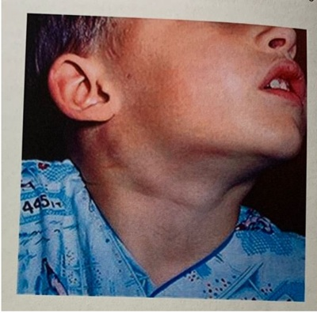
A Informar a mãe sobre o risco de tuberculose ganglionar, solicitar radiografia convencional de tórax e prova tuberculínica (PPD).
B Alertar a mãe sobre a possibilidade de malformações cervicais congênitas e realizar punção aspirativa com agulha fina do maior nódulo.
C Tranquilizar a mãe sobre provável quadro reacional benigno e informar não haver necessidade de exames complementares neste momento.
D Explicar sobre o risco de neoplasias hematológicas durante a infância e realizar biópsia excisional do maior nódulo.
Questão 174 · Transtorno de Pânico · 4000187442Mulher de 32 anos de idade comparece em consulta na Unidade Básica de Saúde queixando-se de crises recorrentes e intensas de taquicardia, sudorese, sensação de sufocamento, tremores, medo intenso de morrer e perder o controle. As crises são imotivadas e ocorrem subitamente há cerca de 6 meses. O quadro tem deixado a paciente apreensiva durante todo o dia. Tem receio de ter novas crises ao sair de casa ou ir para o trabalho. Relata também di culdade de iniciar o sono após o início das crises. Qual é a melhor conduta para esta paciente?
A Iniciar paroxetina 20mg, orientar medidas de relaxamento, indicar medidas comportamentais para manejo de crise e encaminhar à psicoterapia.
B Iniciar alprazolam 2mg quando tiver uma crise, orientar medidas de relaxamento, indicar medidas comportamentais para manejo de crise e encaminhar à psicoterapia.
C Iniciar zolpidem 10mg, orientar medidas de relaxamento, indicar medidas comportamentais para manejo de crise e encaminhar à psicoterapia.
D Iniciar buspirona 5mg, orientar medidas de relaxamento, indicar medidas comportamentais para manejo de crise e encaminhar à psicoterapia.
Questão 175 · Tratamento da Depressão · 4000187441Mulher de 68 anos de idade comparece em consulta na Unidade Básica de Saúde por tristeza intensa há 3 meses, associada a falta de prazer nas atividades, falta de energia e insônia inicial. Relata que não consegue mais trabalhar como antes, não tem vontade de sair de casa e têm pensamentos de inutilidade e desesperança com a vida. Tem antecedente de hipertensão arterial sistêmica, diabetes mellitus, dislipidemia e obesidade. Na avaliação, apresenta pressão arterial 186x112mmHg e índice de massa corporal 36,4kg/m². Trouxe exames complementares, evidenciando: hemoglobina glicada 9,6% (VR < 5,6%); colesterol total 256mg/dL; HDL 32mg/dL; LDL 178mg/dL e triglicerídeos 328. Qual é o tratamento medicamentoso de escolha para esta paciente?
A Clonazepam
B Venlafaxina
C Mirtazapina
D Citalopram
Questão 176 · Def inição e Características Clínicas · 4000187364Assinale a alternativa que apresente um exemplo de doença diagnosticada previamente com elevada morbidade e ameaçadora de sobrevida a longo prazo, mas para a qual se oferecem intervenções terapêuticas capazes de aliviar um sintoma e melhorar a qualidade de vida por algum tempo.
A Síndrome do coração esquerdo hipoplásico.
B Anencefalia.
C Displasia esquelética.
D Mielomeningocele extensa.
Questão 177 · Dependência de Tabaco · 4000187305Mulher de 32 anos de idade, com idade gestacional de 8 semanas, comparece para a primeira consulta de pré-natal. Teve uma gestação anterior, com parto normal e sem complicações, há 4 anos. Está assintomática no momento. Tem história de epilepsia desde a infância, bem controlada com uso de carbamazepina, e de tabagismo desde os 14 anos de idade, fumando cerca de uma carteira de cigarros por dia. Já tentou parar de fumar múltiplas vezes, sem sucesso. Não foram detectadas alterações durante o exame físico. Qual(is) estratégia(s) deve(m) ser adotada(s) para se obter a cessação do tabagismo na paciente neste momento?
A Estratégias comportamentais e prescrição de bupropiona 150mg duas vezes ao dia.
B Estratégias comportamentais isoladamente, uma vez que não há terapia medicamentosa segura durante a gestação.
C Estratégias comportamentais e prescrição de adesivo definicotina 21mg por dia.
D Estratégias comportamentais e troca do cigarro convencional por eletrônico com carga reduzida definicotina.
Questão 178 · Tratamento · 4000187287Criança do sexo masculino de 6 anos de idade, com síndrome de Down, é levada ao pronto-socorro por febre de 39°C e diminuição do apetite há 3 dias, evoluindo com dor em ouvido direito hoje. A mãe nega quadro semelhante prévio e relata que, há 1 semana, o paciente apresentou obstrução nasal, coriza e tosse não- produtiva. Nega alergias medicamentosas e nega uso recente de antibiótico. O calendário vacinal está atualizado. À otoscopia direita, nota-se membrana timpânica opaca com abaulamento. Qual é o tratamento de escolha?
A Clindamicina via oral por 10 dias.
B Azitromicina via oral por 5 dias.
C Cefuroxima via oral por 10 dias.
D Amoxicilina via oral por 5 a 7 dias.
Questão 179 · Retinoblastoma · 4000187269Sobre a principal causa de enucleação em crianças, assinale a alternativa correta.
A Trauma ocular
B Meduloepitelioma
C Astrocitoma pilocítico
D Retinoblastoma
Questão 180 · Obstrução Congênita do Ducto Nasolacrimal · 4000187268Sobre os recém-nascidos com dacrioestenose congênita é correto afirmar que:
A A maioria dos casos é resolvida espontaneamente.
B O uso de antibióticos tópicos deve ser evitado em caso de secreção purulenta em razão da alta taxa de resistência bacteriana induzida.
C A incidência de dacriocistites aguda é de aproximadamente 90%.
D As manobras de massagem devem ser evitadas pelo risco de rompimento do saco lacrimal.
Questão 181 · Hordéolo · Obstrução Congênita do Ducto Nasolacrimal · 4000187267Assinale a alternativa incorreta.
A O hordéolo é um processo infeccioso de pálpebra, com presença de nodulação aguda, dor e edema localizado.
B O calázio apresenta-se como inflamação focal secundaria a uma obstrução das glândulas de Meibomius ou de Zeiss.
C O tratamento recomendado é a aplicação de compressas mornas, três vezes ao dia, por 5 minutos, e massagem sobrea lesão; se houver drenagem de secreção, prescrever antibiótico tópico e lubrificante ocular.
D A maioria dos casos e dacrioestenose se resolve espontaneamente.
Questão 182 · Conjuntivite Bacteriana Aguda · Conjuntivite Alérgica · Conjuntivite Viral · 4000187266Com relação aos processos oculares infecciosos assinale a alternativa incorreta.
A A conjuntivite alérgica costuma apresentar secreção hialina.
B Presença de secreção purulenta grave pode ser observada em casos de conjuntivite bacteriana não gonocócica.
C Conjuntivites atópicas são autolimitadas, com duração de duas a três semanas.
D Nos casos de conjuntivite em que não há melhora ou até mesmo ocorre piora do quadro, é recomendada a avaliação com oftalmologista para investigação mais aprofundada.
Questão 183 · Queimaduras Químicas Oculares · 4000187265Qual é a medicação de uso oral prescrita nos casos de queimadura química ocular por substâncias alcalinas, utilizada para auxiliar na promoção da síntese de colágeno da córnea?
A Ácido ascórbico
B Medroxiprogesterona
C Azitromicina
D Doxiciclina
Questão 184 · Hemorragia Subconjuntival · 4000187264Com relação às causas de hiposfagma, assinale a alternativa incorreta.
A Aumento da pressão arterial
B Prurido ocular intenso
C Trauma confuso
D Diabetes melito
Questão 185 · Introdução aos Traumatismos Oculares · 4000187254Com relação à principal causa de lesão de canalículos lacrimais em crianças, assinale a alternativa correta.
A Acidente automobilístico
B Acidente com animais domésticos
C Automutilação
D Agressão familiar
Questão 186 · Apneia Obstrutiva do Sono na Inf ância · 4000187096Assinale a alternativa incorreta sobre a apneia obstrutiva do sono em crianças.
A Dependendo da gravidade da obstrução das vias aéreas, os padrões respiratórios podem ser classificados como ronco primário, síndrome da resistência das vias aéreas, hipoventilação obstrutiva e síndrome da apneia obstrutiva do sono.
B O aumento da resistência das vias aéreas durante o sono decorre de uma combinação entre hipertrofia dos tecidos moles, dismorfismos craniofaciais, fraqueza neuromuscular e/ou obesidade.
C É caracterizada por episódios recorrentes de obstrução completa das vias aéreas superiores que ocorrem durante o sono, resultando em hipoxemia e hipocapnia intermitentes, despertares recorrentes e ruptura do sono.
D A ecocardiografia é um exame complementar recomendado na síndrome da apneia obstrutiva do sono em razão de possíveis elevações arterial sistêmica e pulmonar.
Questão 187 · Diagnóstico da Depressão · Tratamento da Depressão · 4000187074Sobre Depressão marque a resposta ERRADA:
A Pode causar incapacidade.
B É um fator de risco reversível para Demência.
C Inibidores da receptação da serotonina é uma das classes de anti-depressivo mais utilizadas para tratar depressão.
D Sintomas cognitivos podem estar presentes na depressão.
E Clonazepan e lorazepan são as drogas de escolha para tratamento da depressão.
Questão 188 · Sarcoma de Kaposi · Sarcoma de Kaposi · 4000187064É neoplasia de partes moles de baixo grau, origina-se das células endoteliais de vasos linfáticos na pele. Sua incidência está aumentando, porque, com maior frequência, ele é observado nos pacientes com síndrome da imunodeficiência adquirida e outros estados de imunossupressão, como o transplante de órgãos.
A Sarcoma de Kaposi.
B Angiossarcoma.
C Dermatofibrossarcoma.
D Sarcoma de células de Merkel.
Questão 189 · Mielomeningocele e def eitos de f echamento posterior do tubo neural · 4000186969Assinale a alternativa que apresente um exemplo de doença diagnosticada previamente com elevada morbidade e ameaçadora de sobrevida a longo prazo, mas para a qual se oferecem intervenções terapêuticas capazes de aliviar um sintoma e melhorar a qualidade de vida por algum tempo.
A Síndrome do coração esquerdo hipoplásico.
B Anencefalia.
C Mielomeningocele extensa.
D Displasia esquelética.
Questão 190 · Sumário dos Tóxicos e Antídotos · Intoxicações Exógenas · 4000186935Os envenenamentos agudos, bem como doenças decorrentes deles, constituem-se um importante problema de saúde pública. Sobre este tema, correlacione as colunas e, em seguida, assinale a alternativa que apresenta a sequência CORRETA. INDICAÇÃO: 1. Envenenamento por organofosforados. 2. Intoxicação por acetaminofen. 3. Envenenamento por benzodiazepínicos. 4. Extrapiramidalismo medicamentoso. 5. Envenenamento por chumbo. ANTÍDOTO ( ) Flumazenil. ( ) Penicilamina. ( ) Pralidoxima. ( ) Difenidramina. ( ) N-acetilcisteína.
A 3/ 5/ 1/ 4/ 2
B 1/ 2/ 3/ 4/ 5
C 5/ 4/ 3/ 2/ 1
D 3/ 2/ 1/ 4/ 5
E 4/ 5/ 1/ 2/ 3
Questão 191 · Mononucleose · Diagnóstico · Apresentação Clínica · 4000186903Mãe leva à consulta menino de dois anos com febre alta há sete dias, prostrado e com inapetência. Ao exame físico encontra-se com edema palpebral, petéquias no palato, exsudato amigdaliano, linfoadenomegalia submandibular e cervical de consistência rme, hepatomegalia (fígado palpável a 3 cm do rebordo costal D) e esplenomegalia (baço a 2 cm do rebordo costal E). Qual o exame laboratorial mais indicado e a hipótese diagnóstica mais provável para confirmação do diagnóstico?
A Aspirado de medula óssea - Leucemia linfóide aguda.
B Sorologia para vírus Epstein Baar - Mononucleose infecciosa.
C Pesquisa de anticorpos heterófilos para EBV - Mononucleose infecciosa.
D Teste rápido para estreptococo do grupo A - Faringoamigdalite estreptocócica.
E Antiestreptolisina O - Faringoamigdalite estreptocócica.
Questão 192 · Dependência de Tabaco · 4000186829O tratamento farmacológico deve ser utilizado objetivando a complementação da terapia cognitivo- comportamental, tendo também como efeito o alívio dos sintomas da abstinência. Sendo correto que:
A Independentemente da idade, deixar de fumar pode reduzir a expectativa de vida, melhorar a saúde e a qualidade de vida. Aqueles idosos que decidem fazer uma tentativa têm elevada taxa de sucesso.
B Independentemente da idade, deixar de fumar nunca pode aumentar a expectativa de vida, melhorar a saúde e a qualidade de vida. Aqueles idosos que decidem fazer uma tentativa têm elevada taxa de sucesso.
C Independentemente da idade, deixar de fumar pode aumentar a expectativa de vida, melhorar a saúde e a qualidade de vida. Aqueles idosos que decidem fazer uma tentativa têm elevada taxa de sucesso.
D Independentemente da idade, deixar de fumar pode aumentar a expectativa de vida, melhorar a saúde e não a qualidade de vida. Aqueles idosos que decidem fazer uma tentativa têm elevada taxa de sucesso.
Questão 193 · Encef alopatia de WernickeKorsakof f · Quadro Clínico · Abstinência de Álcool · 4000186789O transtorno por uso do álcool é definido como di culdades repetidas relacionadas com o álcool em, pelo menos, duas de onze áreas de vida que se agrupam no mesmo período de 12 meses. No entanto, sabe-se que ainda que sem preencher esses critérios, o uso de álcool pode acarretar problemas graves. Sobre complicações neurológicas pelo uso do álcool, assinale a alternativa incorreta:
A A chamada síndrome de Wernick-Korsakoff está relacionada a deficiência de tiamina consequente ao abuso crônico de álcool, mas também em carência nutricional de outras etiologias.
B A encefalite de Werncick costuma manisfestar-se com nistagmo, ataxia, paralisia do olhar conjugado e confusão mental.
C Na psicose de Korsakoff o domínio da memória costuma estar afetado e o diagnóstico diferencial com outras causas de demência pode ser necessário.
D A reposição de tiamina não deve ser feita de rotina no paciente etilista com alterações neurológicas. Sendo utilizada apenas após sua dosagem sérica e confirmação diagnóstica.
E Sintomas de abstinência alcoólica incluem tremor nas mãos, ansiedade, insônia, taquicardia e sudorese, febre pode estar presente.
Questão 194 · Intoxicação por Carbamatos e Organof osf orados · 4000186782Na intoxicação aguda por carbamatos:
A Haverá inibição da colinesterase, resultando em síndrome colinérgica. O manejo inclui a administração de atropina.
B Haverá inibição da colinesterase, resultando em síndrome colinérgica. O manejo inclui a administração de naloxone.
C Haverá ativação de receptores GABA, resultando alteração do nível de consciência. O manejo inclui a administração de atropina.
D Haverá ativação de receptores GABA, resultando alteração do nível de consciência. O manejo inclui a administração de flumazenil.
E Haverá inibição da colinesterase, resultando em síndrome colinérgica. O manejo inclui a administração de flumazenil.
Questão 195 · Complicações · Otite Média Aguda · 4000186771Podemos dizer que a causa mais comum de perda auditiva adquirida em crianças é:
A Malformação congênita de um componente da audição.
B Perfuração traumática da membrana timpânica.
C Colesteatoma.
D Otite média.
E Osteosclerose.
Questão 196 · Diagnóstico da Anorexia Nervosa · Anorexia Nervosa · 4000186766Adolescente, sexo feminino, 15 anos, refere perda de 15 kg nos últimos seis meses e amenorréia. Apresenta vômitos, diarréia, dor abdominal e mal estar. Nega febre. Exame físico: palidez, caquexia, frequência cardíaca de 40 batimentos por minuto. Exames laboratoriais: potássio sérico de 3,0 mEq/L (VR: 3,5 - 5,1mEq/L), hematócrito de 30% (VR: 36 - 43%), velocidade de hemossedimentação de 3 mm/hora (VR: até 10 mm/hora) e colesterol total de 300 mg/dL. A hipótese diagnóstica mais provável?
A Bulimia.
B Doença inflamatória intestinal.
C Anorexia nervosa.
D Adenoma de hipófise.
E Doença de Addison.
Questão 197 · Abstinência de Tabaco · Tabaco · Dependência de Tabaco · 4000186732"A epidemia de tabaco é principal causa de morte, doença e empobrecimento. A epidemia de tabaco é uma das maiores ameaças à saúde pública que o mundo já enfrentou, sendo responsável pela morte de mais de 8 milhões de pessoas por ano. Mais de 7 milhões dessas mortes são resultado do uso direto do tabaco, enquanto mais de 1,2 milhão de mortes são resultados de não-fumantes expostos ao fumo passivo. Quase 80% dos mais de 1,1 bilhão de fumantes em todo o mundo vivem em países de baixa e média renda, onde a carga das doenças relacionadas ao tabaco e a morte é mais pesada. Os usuários de tabaco que morrem prematuramente privam suas famílias de renda, aumentam o custo dos cuidados de saúde e impedem o desenvolvimento econômico." (Organização Pan-Americana da Saúde) Com relação a farmacoterapia para abstinência do tabaco, assinale a alternativa correta:
A Terapia de reposição definicotina, vareniclina, vimpocetina, citisina, bupropiona e recentemente a vacina definicotina têm demonstrado eficácia como auxílios para parar de fumar. O tratamento farmacológico deve ser mantido por pelo menos 03 meses para obter resposta satisfatória reduzindo os sintomas de abstinência definicotina.
B O adesivo definicotina tem um padrão de liberação definicotina de ação prolongada e início lento, que produz um alívio relativamente constante de abstinência em 24 horas. A dosagem inicial do adesivo é determinada pelo horário do dia que o primeiro cigarro é fumado e não há relação com o peso do paciente.
C A vareniclina reduz os sintomas de abstinência definicotina agindo como um agonista parcial no receptor nicotínico alfa-4 beta-2. Ele bloqueia a ligação da nicotina ao receptor, interrompendo os efeitos de reforço da nicotina que levam à sua dependência. Entretanto o uso deste medicamento está associado ao risco aumentado de suicídio e aumento do risco cardiovascular.
D A bupropiona atua aumentando a liberação noradrenérgica e dopaminérgica do sistema nervoso central. Sendo esta uma droga eficaz para auxílio na abstinência do tabaco. Este medicamento deve ser usado com cautela e em algumas situações contraindicado em pacientes com distúrbio convulsivo ou predisposição a convulsões uma vez que reduz o limiar convulsivo.
E Não há evidência de aumento na eficácia da abstinência do tabaco com a associação da terapia de reposição definicotina com a vareniclina ou bupropiona. Sendo este último propenso a ocasionar aumento do risco de suicídio e desordens psiquiátricas com maior frequência quando associado a goma definicotina ou ao cigarro eletrônico.
Questão 198 · Mononucleose · Mononucleose Inf ecciosa · 4000186730Grupo populacional heterogêneo, caracterizado por sua condição de pobreza extrema, pela interrupção ou fragilidade dos vínculos familiares e pela falta de moradia convencional regular. São pessoas compelidas a habitar logradouros públicos (ruas, praças, cemitérios, etc.), áreas degradadas (galpões e prédios abandonados, ruínas, etc.) e, ocasionalmente, utilizar abrigos e albergues para pernoitar. (Ministério da Saúde) Enzo, 09 anos, vem em consulta na unidade de saúde com a sua mãe. Ela relata estar preocupada, pois hoje Enzo acordou com um "grossor na pele". À inspeção rápida, a pele está rosada, mas, ao toque, parece uma lixa na, espalhada pelo tronco todo. Sua temperatura axilar é 38ºC. À oroscopia, importante exsudato em tonsilas, cor acinzentada, com vermelhidão nas mucosas. Enzo apresenta estado geral regular, com queixa de cansaço. Na revisão da história clínica, a mãe refere que o menino iniciou com febre até 39ºC, há 06 dias, que persistiu até hoje. Há 03 dias, queixou-se de dor de garganta e ínguas no pescoço. Ontem, a mãe percebeu placas na garganta. Decidiu levá-lo à Unidade de Pronto-Atendimento, onde foi prescrita amoxicilina por 05 dias. Ela iniciou imediatamente o antibiótico. Diante do quadro clínico acima, qual é o provável diagnóstico?
A Escarlatina.
B Mononucleose infecciosa.
C Reação medicamentosa à amoxicilina.
D Eritema infeccioso.
E Exantema súbito.
Questão 199 · Manejo · Epistaxe · 4000186718Em caso de epistaxe, quais são os sinais de alerta para referenciamento a serviço especializado?
A Sangramento nasal persistente.
B Alterações de sinais vitais.
C Crianças menores de 2 anos.
D Indicação de hemotransfusões anteriores devido epistaxe prévia.
E Todas as alternativas.
Questão 200 · Transtorno Factício imposto a outro · Segurança das crianças e adolescentes · 4000186688Sobre o suporte às vítimas de violência doméstica na pediatria, é CORRETO afirmar que:
A A síndrome de Munchausen por procuração é uma doença de difícil controle, definida como forma de violência na qual a criança ou o adolescente são levados para cuidados médicos de forma insistente e em frequência acima do esperado.
B A notificação do diagnóstico ou suspeita de violência não é compulsória, e deve ser feita ou não segundo decisão da vítima juntamente ao médico responsável.
C Os pais e a família sempre são os melhores a cuidar de sua prole e, na consulta pediátrica, eles sempre falam a verdade e procurando o melhor para seus filhos.
D Todo ato sexual com adolescente ou criança menor de 16 anos é considerado crime de estupro pelo Código Penal Brasileiro.
Questão 201 · Anatomia da Pelve · Trauma Abdominal e Pélvico · 4000186654Mulher, 30 anos, sofreu acidente automobilístico (colisão entre dois carros), sendo diagnosticada fratura da pelve com instabilidade vertical. Este achado está relacionado à ruptura dos ligamentos
A íleo lombares.
B sacro tuberais.
C sacro ilíacos anteriores.
D sacro ilíacos posteriores.
Questão 202 · Transtorno de Oposição e Desaf io TOD · 4000186653Menino, 8 anos, foi trazido para avaliação pela mãe devido a sintomas de irritabilidade e negatividade. Queixas da escola incluíam comportamento desobediente e provocador em relação a guras de autoridade. O menino parecia carrancudo e irritado na entrevista, insistindo que seus problemas eram todos culpa de sua mãe. Os pais divorciaram-se quando ele tinha 3 anos. Ele não teve mais contato com o pai desde então. Qual é o diagnóstico mais provável do quadro relatado?
A Associação de transtorno de oposição desafiante com transtorno disruptivo da desregulação do humor.
B Comportamento normal e adaptativo esperado para o estágio do desenvolvimento.
C Transtorno de humor de início precoce.
D Transtorno de oposição desafiante.
Questão 203 · Abstinência de Álcool · 4000186629Homem, 40 anos, internou por fratura de fêmur devido à queda em casa. No terceiro dia de internação, apresentou tremor nas mãos, irritabilidade e aumento da PA. A esposa relatou que o marido ingeria vinho diariamente. Na noite daquele dia estava sudorético, apresentava fala desconexa e incoerente e parecia tentar pegar insetos no ar. No quarto dia, a irritabilidade aumentou, dando sinais de que entraria em agitação psicomotora. Apresentava enzimas hepáticas elevadas. Em relação ao caso, o diagnóstico mais provável é _______________, cujos sintomas devem ser tratados com _______________. Os _______________ devem ser evitados, pois aumentam o risco de _______________.
A delirium tremens - benzodiazepinicos - antipsicóticos - convulsões
B abstinência alcoólica - benzodiazepinicos - antipsicóticos - convulsões
C delirium tremens - antipsicóticos - benzodiazepinicos - depressão respiratória
D abstinência alcoólica - antipsicóticos - benzodiazepinicos - depressão respiratória
Questão 204 · Diagnóstico Radiográf ico · Síndromes Medulares · Metástases Ósseas · 4000186622Homem, 74 anos, foi diagnosticado com adenocarcinoma de próstata Gleason 8 (4+4) há três anos após identi car aumento de PSA em exames de rotina. Foi submetido à prostatectomia radical e o estadiamento patológico foi definido como pT3N0M0. O PSA, 60 dias após a cirurgia, foi 0,003ng/ml. Optou-se por realizar somente seguimento. Há dois meses, iniciou com dores na região dorsal e também na região pélvica. As dores tornaram-se progressivamente mais intensas, sendo prescrita analgesia. Sem melhora, procurou novo atendimento médico. Nessa ocasião, o PSA estava 48ng/ml e exames de imagem evidenciavam múltiplas lesões osteoblásticas, principalmente em esqueleto axial. Foi iniciado antagonista LHRH e, após duas semanas, o paciente já apresentava melhora das dores. Vem à consulta com seu oncologista trazendo novo PSA: 4,5ng/ml coletado há três dias. Entretanto, refere retorno da dor em região dorsal associada à fraqueza nas pernas e di culdade de caminhar, necessitando de auxílio. Em relação ao diagnóstico mais provável, a melhor conduta neste momento é
A realizar novos exames de estadiamento, incluindo cintilografia óssea e RM de pelve.
B associar novo agente hormonal, como abiraterona ou enzalutamida, para potencializar resposta obtida com castração.
C iniciar dexametasona e realizar exame de imagem em caráter de urgência considerando a possibilidade de compressão medular.
D manter terapia de privação androgênica, uma vez que o paciente está apresentando resposta de PSA, e orientar medicações analgésicas para controle de dor.
Questão 205 · Tratamento do TDAH · Transtorno do Déf icit de Atenção e Hiperatividade TDAH · 4000186617Adolescente masculino, 14 anos, é levado ao pediatra pela mãe, que está preocupada com as di culdades dele na escola. Apesar de ser considerado carinhoso, afetivo e muito inteligente, é irrequieto e tem di culdade em manter a atenção durante as aulas, interrompendo a professora, fazendo perguntas fora de contexto, indo ao banheiro várias vezes, batucando na mesa, mexendo os pés sem parar. Desce as escadas correndo e atropelando os colegas. Para passar de ano, necessitou de aulas de reforço. Perde celular e chave com frequência, o que o deixa frustrado e irrita os pais. Diante da principal hipótese diagnóstica, qual é o tratamento de primeira linha a ser indicado?
A Antidepressivos tricíclicos.
B Inibidores da recaptação de serotonina.
C Estimulantes do sistema nervoso central.
D Antipsicóticos de segunda geração em baixas doses.
Questão 206 · Tratamento · Quadro clínico · Fatores de risco · 4000186614Homem, 64 anos, consulta seu médico de família, queixando-se de dor na região anterior do quadril esquerdo, com início há 6 meses. Refere que sente dor ao car muito tempo sentado ou ao levantar-se dessa posição, ao realizar longas caminhadas e ao carregar peso. Informa também que, no passado, jogou futebol pro ssionalmente e dois irmãos seus apresentam o mesmo sintoma. Ao exame físico, não apresenta ponto gatilho nos músculos: tensor da fáscia lata, piriforme e glúteo mínimo; a rotação interna do quadril é restrita. Em relação ao caso, afirma-se: I. O uso de extrato de soja e abacate insaponificável está associado à redução de sintomas álgicos. II. Espera-se que, quando realizado o teste de FABERE, o paciente refira dor na sínfise pública. III. Os achados radiográ cos mais comuns são redução do espaço articular e presença de osteó tos femorais e acetabulares. Estão corretas as afirmativas
A I e II, apenas.
B I e III, apenas.
C II e III, apenas.
D I, II e III.
Revisar: possível letra faltando em enunciado
Questão 207 · Conjuntivites · Conjuntivite Alérgica · 4000186611Homem, 27 anos, engenheiro químico, consulta sua médica de família referindo que há 5 dias apresenta hiperemia conjuntival no olho esquerdo, com presença de lacrimejamento e secreção serosa, com lamentos de muco, além de prurido ocular associado. Nega diminuição da visão. Refere que os sintomas iniciaram após manusear produto com odor forte, no seu local de trabalho. Diante do quadro clínico acima, qual é a conduta a ser tomada?
A Compressa gelada de solução fisiológica 0,9% e, se não melhorar em 5 dias, referenciar ao oftalmologista.
B Compressa gelada com solução fisiológica 0,9% e colírio de cromoglicatodissódico.
C Limpeza com soro fisiológico 0,9% e colírio de prednisolona 1%.
D Limpeza com soro fisiológico 0,9% e colírio de ciprofloxina.
Questão 208 · Apresentação Clínica · Otite Externa · Diagnóstico e Tratamento · 4000186610Homem, 30 anos, HIV positivo, com CD4 + <200 células/mm³, atualmente sem uso de antiretroviral, vem à consulta com queixa de otalgia na orelha esquerda há 2 dias. Nega febre e outros sintomas associados. Refere que este quadro tem sido recorrente. Na otoscopia apresenta dor, hiperemia e edema do canal auditivo externo com presença de secreção azul-esverdeada; demais sem particularidades. Foi indicado o uso de antibiótico tópico. Em relação ao caso acima, afirma-se: I. O tratamento da infecção pelo HIV é essencial para a resolução do quadro. II. O Staphylococcus aureus é o agente causal mais frequente. III. o diagnóstico é otite externa circunscrita aguda. Está/Estão correta(s) a(s) afirmativa(s)
A I, apenas.
B I e III, apenas.
C II e III, apenas.
D I, II e III.
Questão 209 · Apresentação Clínica · Diagnóstico · 4000186579Menina, 1 ano e 4 meses, apresenta febre elevada, mal-estar, prostração e coriza há 4 dias. Mãe refere surgimento de exantema maculopapular na região retroauricular que se estendeu de forma craniocaudal, com manutenção da febre e acentuação dos sintomas gerais com rinorreia purulenta, olhos avermelhados e com secreção. Criança profundamente toxemiada. Calendário vacinal incompleto (menor não realizou as vacinas de 1 ano e nem as de 15 meses). A complicação bacteriana mais frequente nessa patologia é:
A otite.
B sinusite.
C piodermite.
D pneumonia.
Questão 210 · Tratamento · Apresentação Clínica · Diagnóstico · 4000186559Menina, 3 anos, frequenta creche. há 3 dias com congestão nasal, rinorreia hialina, espirros frequentes, odinofagia, tosse seca e otalgia intensa. Hoje iniciou quadro de febre alta não aferida e os olhos amanheceram com muita secreção purulenta. Mãe nega vômitos, diarreia, alergias e uso de antibióticos nos últimos 3 meses. Vacinação atualizada. Pai é asmático. Mãe tem diabetes. Ao exame físico: consciente, fácies de dor, eupneica. Olhos com abundante secreção amarela de consistência espessa. Frequência respiratória 25 irpm. Ausculta pulmonar: murmúrio vesicular siológico, ausência de estertores. Orofaringe: hipertro a de tonsilas grau 2/3 com hiperemia. Otoscopia: abaulamento da membrana timpânica bilateralmente. Ausculta cardíaca: bulhas normofonéticas, ausência de sopros. Abdome ácido, sem visceromegalias. De acordo com o quadro clínico acima, assinale a alternativa correta:
A Conjuntivite bacteriana e Otite Média Aguda. Iniciar antibioticoterapia oral imediatamente com Amoxicilina associada ao inibidor de betalactamase e reavaliar em 48 horas.
B Conjuntivite bacteriana e Otite Média Aguda com sinais de gravidade, deve ser iniciado Amoxicilina oral imediatamente e reavaliar após 48 horas de tratamento.
C Conjuntivite bacteriana e Otite Média Aguda de causa viral, utilizar colírio com antibiótico e analgésico. Se não houver melhora da otalgia em 48 horas, iniciar Amoxicilina.
D Conjuntivite bacteriana e Otite Média Aguda com efusão, necessita timpanocentese de alívio e cultura das secreções oculares e das orelhas médias.
Questão 211 · Lesão do ligamento cruzado anterior · 4000186554A rotura do ligamento cruzado anterior (LCA) do joelho:
A acomete principalmente indivíduos idosos sedentários.
B caracteriza-se pela estabilidade articular.
C a lesão é melhor evidenciada no exame de imagem de radiografia de joelho.
D na maioria das vezes é tratada cirurgicamente.
Questão 212 · Diagnóstico · Tratamento · Apresentação Clínica · 4000186521Paciente idoso, apresentando episódios de vertigem subjetiva, de menos de 1 minuto, quando muda a cabeça em certas posições, associados a náuseas e nistagmo. Algumas vezes teve desequilíbrio e já caiu uma vez. Nega zumbido e hipoacusia. Já fez Ressonância de crânio que foi normal para a idade. Sobre este caso, marque a alternativa CORRETA:
A A manobra de Dix-Hallpike, realizada no consultório, poderá desencadear nistagmo e aparecimento dos sintomas.
B Tratamento medicamentoso com antagonistas de canal de cálcio seletivos é a primeira escolha.
C Terapia com manobras de reposicionamento dos canais semicirculares costuma ser pouco eficaz nesses casos.
D Se não tratada, essa doença costuma progredir com perda auditiva, sobretudo para as faixas mais agudas de som.
Questão 213 · Rinossinusite Bacteriana Aguda · 4000186513Homem, 46 anos de idade evolui há 4 dias com febre (38,9ºC), tosse produtiva com expectoração purulenta, o quadro iniciou há 6 dias com rinorreia e mal-estar geral. Estava em uso apenas de dipirona para febre. Não procurou auxílio médico até a data de hoje. Nega doenças prévias, uso de antibióticos ou internações recentes. Ao exame físico: Consciente e orientado, hidratado, acianótico, anictérico. AC: ritmo cardíaco regular em 2 tempos sem sopros FC: 98 bpm PA: 110 x 70mmHg Ausculta pulmonar limpa FR: 18 ipm sem outras alterações no exame físico. O aparelho de RX está quebrado. Sobre o caso é correto afirmar:
A Trata-se de IVAS, pode ser tratado utilizando Amoxacilina+Clavulanato VO 12/12h associado a lavagem nasal com soro fisiológico.
B Está indicado uso de ceftriaxone com azitromicina EV em ambiente hospitalar e coleta de hemograma, ureia, creatinina, Na e K.
C Deverá aguardar o RX de tórax para definir o esquema antimicrobiano, além de realizar hemograma e hemocultura.
D O diagnóstico é de PAC e por apresentar CRB-65 (Escore simplificado de gravidade da PAC da British Thoracic Society) de 1, não necessita internação.
Questão 214 · Tratamento · Diagnóstico e Classif icação · 4000186468Durante uma sala de parto, pediatra dá suporte à um recém-nascido, lho de gestante que t eve acompanhamento pré-natal irregular. O recém-nascido apresenta uma tumefação dorsal mediana na altura da coluna lombar, de cor avermelhada, coberta por uma na membrana com extravasamento lento de líquido claro através de uma fenda na membrana. A equipe do hospital informa que o neurocirurgião só estará
A Transferir para unidade com neurocirurgião e realizar cirurgia imediata.
B Internar na UTI neonatal e solicitar parecer do neurologista.
C Internar em alojamento conjunto e aguardar parecer do neurocirurgião.
D Internar na UTI neonatal e solicitar ressonância magnética da coluna lombar.
E Internar na UTI neonatal e solicitar ultrassonografia da coluna lombar.
Questão 215 · Apresentação e Diagnóstico Clínicos · Métodos de Screening · 4000186407A manobra de Ortolani, realizada durante exame físico do recém-nascido, tem como objetivo diagnosticar qual patologia?
A Pé torto congênito.
B Pé plano.
C Joelhos valgos.
D Alteração do desenvolvimento do quadril.
E Joelhos varos.
Questão 216 · Dependência de Álcool · 4000186324J., sexo masculino, 50 anos de idade, etilista há cerca de 30 anos, chega a Unidade Básica de Saúde para avaliação de rotina. Quando questionado sobre o uso de álcool, relata que sabe das consequências negativas do etilismo, mas isso não o incomoda. Após o médico perguntar se deseja diminuir ou parar de beber, informa que não considera deixar a utilização de álcool. "Dr. eu sempre bebi, é uma das poucas coisas que me permite relaxar e estar com meus amigos. Se um dia eu quiser parar, eu consigo". Considerando o caso ilustrado, os princípios da entrevista motivacional e do modelo transteórico, qual é o estágio que o paciente se encontra em relação à bebida?
A Barganha.
B Contemplação.
C Determinação.
D Pré-contemplação.
Questão 217 · Diagnóstico · 4000186323J., 14 anos de idade, chega à Unidade Básica de Saúde para se consultar. Relata ao médico que tem apresentado dor de garganta, febre e dor pelo corpo há dois dias. Nega tosse e diarreia. Ao exame físico, apresenta temperatura de 39ºC, exsudato tonsilar e adenopatia cervical anterior dolorosa. Considerando o quadro clínico relatado e o Escore de Centor modificado, este paciente
A apresenta alta probabilidade para ter faringite estreptocócica.
B por apresentar probabilidade intermediária de se tratar de uma faringite viral, deve-se realizar espera permitida.
C por apresentar adenopatia cervical anterior dolorosa a probabilidade de se tratar de uma faringite viral é alta.
D por apresentar ausência de tosse diminui a pontuação no Escore de Centor e a probabilidade de se tratar de uma faringite estrepcocócica.
Questão 218 · Linf adenite Reacional inf lamatória · 4000186204A criança possui mais tecido linfoide que o adulto e apresenta resposta mais exacerbada aos antígenos externos, o que contribui para a incidência aumentada de linfadenomegalias na infância. Sobre as linfadenomegalias, é correto afirmar:
A O linfoma não Hodgkin cursa com linfadenomegalia localizada, volumosa e assimétrica em relação ao lado contra lateral.
B Os linfonodos dolorosos se devem à vasodilatação de liberação de bradicininas e são exclusivos de quadros infecciosos.
C Aumento dos linfonodos occipitais em crianças menores são sinais de alerta para doenças linfoproliferativas, como os linfomas.
D A adenopatia reacional é a causa mais comum de aumento do tamanho dos linfonodos e surge devido ao aumento das células intrínsecas do tecido linfoide.
Questão 219 · Diagnóstico do Autismo · 4000186190O transtorno do espectro autista (TEA) deve ser rastreado em todas as crianças entre 18 e 24 meses no intuito de identi car sinais e sintomas do transtorno, possibilitando a instauração de intervenções extremamente importantes, uma vez que a resposta é tão mais significativa quanto mais precocemente instituídas. Sobre o TEA, analise as assertivas abaixo. I. Um fator que contribui para seletividade alimentar no TEA é a sensibilidade sensorial. II. Crianças com TEA podem apresentar di culdades para organizar e processar informações e para estabelecer prioridades para a execução de tarefas. III. Os critérios diagnósticos do autismo incluem prejuízos persistentes na interação social, na comunicação verbal e não verbal, no repertório de interesses e atividades. IV. O tratamento deve ser focado no desenvolvimento de habilidades sociais e de motivações, ensinando habilidades de independência e autonomia. V. São comorbidades que podem ser associadas ao TEA: depressão, ansiedade, epilepsia, distúrbios específicos de linguagem e mutismo seletivo. Estão corretas as assertivas corretas
A III, IV e V, apenas.
B I, II, e III, apenas.
C I, II, e IV, apenas.
D I, II, III, IV e V.
Questão 220 · Diagnóstico da Depressão · 4000186179Paciente, 67 anos, sexo feminino, professora aposentada, é trazida primeira vez à consulta com MFC da Estratégia Saúde da Família (ESF), desde que se mudou para morar com o lho após falecimento do marido. Refere fazer tratamento para hipertensão (enalapril 20 mg ao dia) e osteoartrite (condroitina - glicosamina). Questionada sobre seu estado de humor, a paciente refere que já não vê graça na vida, pois não faz sentido viver com tantas dores. Além de medicação para dor, solicitou também para insônia. Mesmo bem acolhida pelo lho, a paciente referiu sentir-se sozinha. Mostrou-se emotiva e esboçou choro, pausando a fala. Sobre a depressão nos idosos, assinale a afirmativa correta.
A A relação do médico da APS com o paciente não influencia o tratamento.
B Os tricíclicos têm maior eficácia no tratamento da depressão em idosos do que os inibidores de recaptação de serotonina.
C É mais frequente nos homens e o terceiro fator mais associado ao suicídio no idoso.
D A Escala de Depressão Geriátrica (GDS) é um instrumento de triagem confiável e pode ser útil para a detecção dos sintomas de depressão nos idosos.
Questão 221 · Tratamento · Diagnóstico · 4000186154Você está na Unidade de Saúde e recebe um lactente, choroso, irritado e com febre. Ao examinálo confirma o diagnóstico de otite média aguda (OMA). Sobre o diagnóstico e manejo do quadro, assinale a alternativa CORRETA.
A Febre alta e otalgia de forte intensidade são indicativos do uso de antibióticos para o tratamento da OMA.
B A complicação mais comum da OMA é a meningite e ocorre especialmente nos casos optados por tratamento expectante.
C Em lactentes a otalgia é rara e deve ser pouco valorizada para o diagnóstico.
D A presença de abaulamento da membrana timpânica tem baixa especificidade para o diagnóstico em lactentes, uma vez que a febre pode acarretar o mesmo sinal clínico.
E O antibiótico de escolha para tratamento da OMA bilateral é a amoxicilina com clavulanato devido à alta resistência do Streptococcus pneumoniae neste sítio de infecção.
Questão 222 · Intoxicação por Carbamatos e Organof osf orados · 4000186091Você está de plantão quando admite um paciente de 54 anos por tentativa de suicídio. Ele fez uso de doses elevadas de veneno para ratos, o aldicarb, popularmente conhecido como “chumbinho”. Na admissão encontra-se com hipersecreção pulmonar, salivação excessiva, bradicardia e com pupilas mióticas. Qual seria o medicamento mais adequado para o seu tratamento?
A Atropina.
B Bicarbonato de Sódio.
C Flumazenil.
D Naloxona.
E Vitamina K.
Questão 223 · Entorse do tornozelo · 4000186074Entorses de tornozelo
A são comuns em traumas esportivos como basquete, vôlei e futebol.
B a eversão do pé é o mecanismo de trauma mais comum.
C o entorse com lesão completa ligamentar é o tipo mais comum.
D o ligamento lateral mais acometido pelo entorse é o talofibular posterior.
E o ligamento deltoide é o mais comumente afetado pelo entorse em inversão do pé.
Questão 224 · Fraturas do Úmero · 4000186073Nas fraturas supracondilianas do úmero em crianças, é CORRETO afirmar que
A são mais comuns em meninas na faixa etária próxima ao final do crescimento.
B o mecanismo de trauma mais comum é queda com o cotovelo em flexão.
C os tipos desviados (tipo III de Gartland) são considerados urgências cirúrgicas e podem levar à síndrome compartimental.
D o nervo ulnar é o mais comumente acometido nas fraturas tipo em extensão.
E é comum que mesmo as fraturas não desviadas (tipo I de Gartland) tenham indicação de tratamento cirúrgico.
Questão 225 · Imunoglobulina contra raiva · Indicações · Celulite · 4000185951Escolar, sexo masculino, 6 anos de idade, sem comorbidades, apresenta ferimento em face após mordida de cachorro. Trata-se de animal doméstico da família, refere estar vacinado adequadamente. Mãe tirou fotogra a do dia do acidente (imagem 1) há 3 dias, quando foi realizado primeiro atendimento médico, sendo realizada sutura e orientado apenas uso de analgésico (dipirona) se necessário. Hoje a criança retorna, pois mãe acha que houve piora da lesão, com edema e hiperemia palpebral, com muita di culdade de abrir o olho (imagem 2), além de febre de até 38,7ºC há 1 dia. Ao verificar a caderneta de vacinação, nota-se que ele recebeu 5 doses da vacina DPT, sendo a última dose administrada aos 4 anos de idade. Frente a evolução clínica do paciente, e levando em consideração as orientações de pro laxia de tétano e de raiva humana preconizadas pelo Ministério da Saúde, a conduta indicada no caso é: Imagem 1: primeiro atendimento Imagem 2: três dia depois do acidente
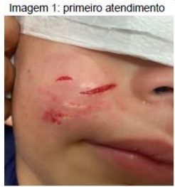

A Liberação para casa com cefalexina oral; reforço vacinal imediato para tétano; aplicar 5 doses de vacina antirrábica (dias 0, 3, 7, 14 e 28) associado a soro antirrábico.
B Abertura dos pontos para drenagem sem necessidade de antibiótico; uma dose de imunoglobulina ou soro antitetânico; observar possíveis sintomas do animal nos 10 dias seguintes ao acidente (considerar esquema profilático vacina antirrábica nos dias 0 e 3).
C Prescrição de antibiótico tópico (mupirocina); aplicação de vacina antitetânica e uma dose de imunoglobulina ou soro antitetânico; aplicar 5 doses de vacina antirrábica (dias 0, 3, 7, 14 e 28) associado a soro antirrábico.
D Aplicação de compressas frias, sem necessidade de antibioticoterapia; duas doses de vacina antitetânica com intervalo de 30 dias; observar possíveis sintomas do animal nos 10 dias seguintes ao acidente (considerar esquema profilático vacina antirrábica nos dias 0 e 3).
E Internação hospitalar com amoxicilina com clavulanato; sem necessidade de reforço vacinal ou qualquer outra medida para tétano; observar possíveis sintomas do animal nos 10 dias seguintes ao acidente (considerar esquema profilático vacina antirrábica nos dias 0 e 3).
Questão 226 · Antidepressivos · 4000185870Qual dos seguintes antidepressivos está associado à hipotensão postural?
A Duloxetina.
B Sertralina.
C Escitalopram.
D Bupropiona.
E Amitriptilina.
Questão 227 · Quadril Pediátrico Geral · Diagnóstico e Diagnósticos dif erenciais · Dor do Crescimento · 4000185839Menino de 4 anos de idade é trazido à consulta de puericultura na UBS com a queixa que tem acordado, à noite, agitado, com choro agudo e reclamando de dores nas pernas. Refere que sente dor na perna toda, sem localização exata. A mãe faz massagem local e compressas com água morna. No outro dia, a criança acorda bem, sem queixas e, principalmente, sem qualquer manifestação de dor. Nasceu de parto normal, a termo, AIG, não necessitando de observação e alta da unidade neonatal com a mãe. Com relação ao quadro de dor em membros inferiores dessa criança, pode-se dizer que
A se deve investigar artrite séptica de quadril, internando a criança para cultura de líquido articular para investigação.
B solicitar um hemograma para o diagnóstico de osteomielite.
C após realizar uma investigação clínica postural detalhada e de todo sistema músculoesquelético, pode-se atribuir inicialmente a dores do crescimento, mas é obrigatório o seguimento.
D os problemas de coluna nesta faixa etária são comuns pelo estirão do crescimento e podem ser a causa das dores nas pernas.
E se deve estimular a criança a fazer fisioterapia, sentar na posição em “W” em vez de sentar-se com as pernas cruzadas à frente do corpo.
Questão 228 · Suicídio · Abordagem ao paciente em crise · Medidas gerais · 4000185832Adolescente, 15 anos, gênero feminino, é trazida ao serviço de urgência pelos pais e acompanhada, também, pela professora do colégio. A professora relata que foi chamada pelas colegas, pois a paciente estava sentada sozinha, chorando muito, e não dizia às amigas o motivo do choro. Ao ser questionada pela professora em ambiente acolhedor, revelou que ingeriu cinco comprimidos, não identi cados, após briga pais. O rastreamento toxicológico foi negativo e o exame físico, normal. Qual é o curso da ação mais apropriado para este caso?
A Hospitalizar a adolescente em enfermaria, de preferência própria para sua faixa etária.
B Pedir avaliação psiquiátrica no prazo de 15 dias por se tratar de uma doença psiquiátrica.
C Obter consulta com serviço social para avaliação familiar.
D Organizar uma consulta com todos os envolvidos no caso, inclusive a namorada.
E Prescrever um antidepressivo e marcar consulta imediata com psiquiatra.
Questão 229 · Dependência de Tabaco · 4000185822Dos fatores listados a seguir, qual é o fator mais importante para determinar o sucesso de um programa de cessação do tabagismo em um indivíduo?
A A inclusão de um componente de tratamento psiquiátrico no programa.
B Conselho médico para parar de fumar.
C Consultas frequentes na UBS.
D O desejo do paciente de parar de fumar.
E O tratamento farmacológico em todos os casos.
Questão 230 · Dependência de Álcool · Álcool · 4000185816Homem de 26 anos é avaliado em unidade básica de saúde em consulta de rotina. Quando ele é questionado sobre o estilo de vida e é perguntado sobre sua ingestão de álcool, responde que é um “bebedor social”. Nesse sentido, constitui a conduta correta:
A aceitar o consumo social normal pelo valor nominal e seguir em frente para a próxima pergunta.
B parabenizá-lo por evitar problemas com álcool.
C pedir para ele definir muito especificamente como é o seu consumo social.
D perguntar se ele já bebeu sozinho.
E solicitar exames séricos para avaliar se há sinais de hepatotoxicidade.
Questão 231 · Tratamento do Burnout · Síndrome do Esgotamento Prof issional Burnout · 4000185815Síndrome de Burnout ou Síndrome do Esgotamento Prof issional A síndrome de Burnout é uma grande preocupação para os médicos, trabalhadores e para sociedade em geral. Em relação às intervenções relacionadas à condição, qual das seguintes a rmações é a mais adequada?
A Intervenções educacionais que abordam habilidades de comunicação e autoconfiança reduzem os sintomas da síndrome.
B Intervenções no local de trabalho, abordando padrões de carga de trabalho e turnos com reuniões para aprimorar o trabalho em equipe, reduzem o esgotamento.
C Programas de redução de estresse baseados em mindfulness (atenção plena) reduzem o esgotamento.
D Programas de exercícios incentivados com equipes para melhorar a responsabilidade reduzem o esgotamento.
E Sessões regulares de debriefing em pequenos grupos com exploração de mecanismos de enfrentamento reduzem o esgotamento.
Questão 232 · Etiologia e Epidemiologia · 4000185737A laringotraqueobronquite é a causa mais comum de obstrução de vias aéreas superiores em crianças, respondendo por 90% dos casos de estridor. Na laringotraqueobronquite é correto afirmar:
A A etiologia bacteriana é a mais comum, sendo os principais agentes o pneumococo e o Haemophylus.
B Acomete principalmente crianças com menos de um ano de idade, com predomínio do sexo feminino (3 vezes mais comum no sexo feminino).
C Quando a etiologia é viral, os principais agentes são os vírus parainfluenza (tipos 1, 2 e 3), influenza A e B e vírus respiratório sincicial.
D A etiologia viral é a mais comum, sendo os principais agentes os vírus adenovírus, pneumovírus e rinovírus.
Questão 233 · Abstinência de Tabaco · Tabaco · Dependência de Tabaco · 4000185702Sobre a abordagem clínica do tabagismo, assinale a alternativa INCORRETA:
A Todos os pacientes devem ser indagados sobre o consumo de produtos do tabaco, pois seu tratamento é custo-efetivo.
B Intervenções breves, que têm duração de cerca de 3 minutos, aumentam as taxas gerais de abstinência e podem ser realizadas por qualquer profissional de saúde treinado.
C O médico deve preparar o/a usuário/a que quer parar de fumar, para a alta possibilidade de ganho de peso.
D Apenas os/as fumantes com alta carga tabágica e motivados/as para abandonar o cigarro devem ser sensibilizados/as e orientados/as a parar de fumar.
E O teste de Fagertröm auxilia na avaliação do grau de dependência à nicotina, ajudando na decisão em incluir ou não medicamentos no tratamento.
Questão 234 · Diagnóstico do Autismo · Transtorno do Espectro Autista TEA · 4000185509Sinais precoces de Transtorno do Espectro Autista (TEA) podem ser observados desde os primeiros meses de vida e devem ser investigados durante as consultas de puericultura. Todo contato com a criança deve ser visto como um momento interventivo, de avaliação e acompanhamento de seu desenvolvimento. Qual dos eventos abaixo NÃO pode ser considerado sinal precoce sugestivo de alteração no desenvolvimento neuropsicomotor:
A Ansiedade de separação e indiferença quando os pais se ausentam
B Atraso em adquirir o sorriso social
C Irritabilidade quando ninado no colo
D Preferência por dormir sozinho no berço
Questão 235 · Doença degenerativa discal e hérnia discal · 4000185486Mulher de 29 anos queixa-se de lombalgia esquerda iniciada no dia anterior, após a realização de exercícios físicos intensos. Relata que a dor irradia pela região lateral da coxa esquerda até o pé e apresenta intensidade 4/10. Nega outros sintomas, incluindo febre, anormalidades intestinais ou urinárias. Nega comorbidades conhecidas. Ao exame físico, o teste de elevação da perna esquerda reproduz a dor do mesmo lado, e o teste com a perna direita não desencadeia nenhuma dor. O exame neurológico não apresenta anormalidades. Assinale a alternativa que apresente a causa MAIS PROVÁVEL do quadro clínico apresentado por essa paciente e a conduta MAIS ADEQUADA:
A Estenose do canal vertebral; nenhuma propedêutica de imagem
B Estenose do canal vertebral; VHS e ressonância magnética da coluna lombar
C Hérnia discal; nenhuma propedêutica de imagem
D Hérnia discal; ressonância magnética da coluna lombar
Questão 236 · Diagnóstico do Transtorno de Pânico · Ataque de Pânico · Tratamento do Transtorno de Pânico · 4000185443Mulher, 47 anos, apresenta episódios de palpitações, sudorese, dispneia, tremores e medo imotivado, que ocorrem subitamente, em crises. Refere que já foi ao pronto atendimento diversas vezes nos últimos anos, onde realizou exames séricos, eletrocardiograma e marcadores cardíacos, sempre com resultados normais. Assinale a alternativa que contém, correta e respectivamente, o diagnóstico e conduta inicial.
A Depressão – sertralina 50 mg e reavaliar em 4 a 6 semanas.
B Depressão – fluoxetina 20 mg e reavaliar em 2 semanas.
C Transtorno de pânico – venlafaxina XR 37,5 mg e reavaliar em 4 a 6 semanas.
D Transtorno de pânico – amitriptilina 100 mg e reavaliar em 8 semanas.
E Síndrome conversiva – encaminhar para psicoterapia.
Questão 237 · Mononucleose · Mononucleose Inf ecciosa · 4000185408Adolescente de 14 anos, previamente hígida, está em uso de amoxicilina há 4 dias devido a quadro de amigdalite. Retorna ao pronto-socorro por persistência da febre, prostração e aparecimento de edema palpebral e manchas na pele. Ao exame físico, está em regular estado geral, apresentando edema palpebral discreto, adenomegalia cervical bilateral, orofaringe hiperemiada com exsudato em amígdalas, esplenomegalia discreta e rash cutâneo. De acordo com a principal hipótese diagnóstica, a conduta indicada é
A prescrever anti-histamínico e trocar a amoxicilina para macrolídeo, pois está apresentando reação alérgica ao antibiótico.
B fazer dose de penicilina benzatina, pois o quadro é compatível com escarlatina.
C substituir o antibiótico para cefalosporina de segunda geração, para ampliar a cobertura para agente produtor de beta-lactamase.
D fazer teste rápido e colher cultura de orofaringe para definir o antimicrobiano a ser prescrito.
E suspender o antibiótico e solicitar sorologia para Epstein-Barr.
Questão 238 · Síndrome Narcótica · 4000185397Menino de 2 anos está em atendimento na sala de emergência devido a quadro agudo de palidez e sonolência, sendo identi cados: hipotermia, hipotensão, depressão respiratória, bradicardia, miose e hiporreflexia. Esse quadro é sugestivo de
A maus tratos.
B sepse.
C intoxicação aguda por opiáceo.
D meningoencefalite aguda.
E traumatismo craniano.
Questão 239 · Tabaco · 4000185371A Convenção-Quadro da OMS para o Controle do Tabaco (CQCT), primeiro tratado internacional de saúde pública da história da humanidade, tem como objetivo proteger as gerações presentes e futuras das devastadoras consequências sanitárias, sociais, ambientais e econômicas geradas pelo consumo e pela exposição à fumaça do tabaco. Assinale a alternativa correta sobre o tabagismo.
A Entre os diversos recursos utilizados para o controle do tabaco no Brasil está a divulgação do uso do cigarro eletrônico.
B Proibição da venda de produtos de tabaco a menores de idade e do uso de descritores light, suave, leve fazem parte da legislação que visa ao controle do tabagismo.
C A dimiuição do preço do cigarro acaba redundando na piora da qualidade do cigarro, o que aumenta o risco para a saúde.
D O aumento do preço do cigarro tem pouco impacto no tabagismo, pois os maiores consumidores são os mais ricos e os mais jovens.
E Os estudos recentes mostram que o fumante passivo pode sofrer reações alérgicas, mas não tem risco aumentado para doenças mais graves.
Questão 240 · Centro de Atenção Psicossocial CAPS · 4000185370A Rede de Atenção Psicossocial tem como nalidade a criação, ampliação e articulação de pontos de atenção à saúde para pessoas com sofrimento ou transtorno mental e com necessidades decorrentes do uso de crack, álcool e outras drogas, no âmbito do SUS. Assinale a alternativa que apresenta objetivos específicos da Rede de Atenção Psicossocial.
A Reduzir danos provocados pelo consumo de crack, álcool e outras drogas e produzir e ofertar informações sobre direitos das pessoas, medidas de prevenção e cuidado e os serviços disponíveis na rede.
B Promover cuidados em saúde especialmente para grupos mais vulneráveis (crianças, adolescentes e jovens, pessoas em situação de rua e populações indígenas) e eliminar a dependência de crack, álcool e outras drogas.
C Fornecer conhecimento sobre os efeitos nocivos do crack, álcool e outras drogas para grupos mais vulneráveis a fim de que não se tornem dependentes e promover mecanismos de formação permanente aos profissionais de saúde.
D Instituir bônus e benefícios para os dependentes de crack, álcool e outras drogas que abandonem o hábito e monitorar e avaliar a qualidade dos serviços por meio de indicadores de efetividade e resolutividade da atenção.
E Promover a reabilitação e a reinserção das pessoas com necessidades decorrentes do uso de crack, álcool e outras drogas na sociedade, por meio do acesso a informações, e oferecer mecanismos de formação permanente aos profissionais de saúde.
Questão 241 · Rede de Atenção Psicossocial RAPS · 4000185369Relaciona-se com o conceito de clínica ampliada:
A rigor do diagnóstico médico para que o plano terapêutico seja instituído de forma adequada.
B acesso a exames complementares de alta complexidade para que o diagnóstico seja feito de forma precisa.
C acesso a hospitais precocemente para que pacientes com quadros clínico graves tenham tratamento preciso e possam se recuperar.
D acesso às mais diversas especialidades para que o quadro clínico seja bem caracterizado, e o tratamento seja abrangente.
E abordagem de cada caso de maneira a considerar os diversos elementos que compõem e interferem no quadro clínico e terapêutico, incluindo questões sociais.
Questão 242 · Tratamento · 4000185263Um paciente de 10 anos de idade foi levado a uma consulta com queixa de tosse e coriza hialina há 5 dias, sem febre ou demais queixas. Seu exame físico revelou o seguinte: bom estado geral, corado, hidratado, afebril, ativo e reativo; bulhas rítmicas e normofonéticas em 2 tempos, sem sopro audível; murmúrios vesiculares positivos bilateralmente sem ruído adventício, sem sinais de desconforto; abdome ácido, indolor, com ruídos hidroaéreos presentes; tempo de enchimento capilar de 2 segundos; orofaringe sem alterações; otoscopia sem alterações. Assinale a alternativa que apresenta a conduta que deve ser tomada nesse caso hipotético
A alta com lavagem nasal, orientar aumento de ingesta hídrica e orientações de sinais de alarme
B solicitar radiografia de tórax
C solicitar radiografia de seios da face
D alta com anti-histamínico e corticoide oral
E alta com salbutamol e prednisolona
Questão 243 · Sumário dos Tóxicos e Antídotos · Intoxicações Exógenas · 4000185218Quanto à intoxicação exógena, considere as seguintes possibilidades de quadros clínicos, agentes causadores e medidas de tratamento específicas. A partir dessas informações, assinale a alternativa que apresenta a correlação mais adequada entre o quadro clínico, o agente causador e a medida de tratamento.
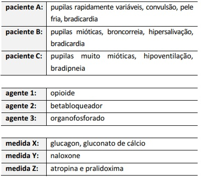
A A-1-X; B-2-Y; C-3-Z
B A-2-X; B-3-Z; C-1-Y
C A-3-Z; B-1-Y; C-2-X
D A-1-Z; B-2-X; C-3-Y
E A-2-Y; B-1-X; C-3-Z
Questão 244 · Psiquiatria Inf antil · Def iciência Intelectual · 4000184779Menino, 8 anos, sem nenhuma intercorrência perinatal e neonatal, que concluiu apenas o ensino fundamental I, é encaminhado para avaliação de di culdade de aprendizagem. No relato escolar consta di culdade de reconhecimento das letras do alfabeto, de realizar a soma mesmo com a ajuda de recursos concretos e vocabulário pobre, aquém do que seria esperado para idade. A mãe refere que o lho tem di culdades d e higienizar-se, vestir-se, não conhece dinheiro e não sabe identi car as horas no relógio de ponteiro. E x a m e físico: face alongada; orelhas grandes e antevertidas; mandíbula proeminente; palato arqueado; hiperextensibilidade de articulações e macroorquidia. A principal hipótese diagnostica é síndrome:
A de
B de
C de
D do X-Frágil.
Questão 245 · Etiologia e Epidemiologia · 4000184778Menina, 3 anos, iniciou, há 4 dias, febre baixa, tosse e rinorreia. Há 24 horas, houve piora da tosse, que assumiu característica “ladrante”, associada a rouquidão e estridor inspiratório. Exame físico: febril (Tax = 37,8ºC); FR = 34irpm; FC = 100bpm; PAS = 80x50mmHg; SpO₂ = 98% em ar ambiente; orofaringe com hiperemia e petéquias em palato mole, sem exsudato; mucosa nasal com hiperemia. Otoscopia, auscult a respiratória e cardíaca normais. Pode-se a rmar que a hipótese diagnóstica e o agente etiológico mais prováveis, respectivamente, são:
A laringotraqueíte / vírus parainfluenza tipos 1, 2 e 3.
B epiglotite /
C laringotraqueobronquite /
D crupe espasmódico / reação alérgica a antígenos virais.
Questão 246 · Apresentação Clínica · 4000184731Criança de 3 anos e 6 meses da entrada na emergência pediátrica com quadro de insu ciência respiratória. Mãe relata que apresenta tosse seca e coriza há 1 semana, acompanhada de febre que chegou aos 39° nos últimos dias. Há 2 dias percebe estridor quando criança ca mais irritada, sendo que na admissão hospitalar o estridor está intenso. Criança rapidamente evolui para colapso circulatório com necessidade de intubação e transferência para UTI. Durante intubação notou-se faringe com secreção purulenta e necessidade de cânula orotraqueal menor que a calculada para idade. Qual das alternativas mostra a principal hipótese diagnóstica?
A Supraglotite
B Crupe viral
C Traqueíte bacteriana
D Crupe espasmódico
Revisar: possível letra faltando em enunciado
Questão 247 · Pediatria · Faringites Bacterianas · 4000184726Com relação à amigdalite bacteriana, é correto afirmar:
A O tratamento preferencial é com antibióticos beta-lactâmicos.
B Ocorre com mais frequência em crianças de 1 a 3 anos de idade.
C O período de incubação para febre reumática pós-amigdalite é entre 4 a 5 semanas.
D O Streptococcus -hemolítico do grupo B e o Staphylococcus aureus são os principais agentes etiológicos.
Questão 248 · Encef alopatia de WernickeKorsakof f · Transtorno Alimentares · 4000184680Paciente de 18 anos, gênero feminino, é admitida em unidade de emergência por quadro de discurso inapropriado e agitação psicomotora iniciados há 3 horas. Ao exame físico encontra-se hipocorada ++/4, desidratada +/+, FC=100bpm (ritmo sinusal), altura=160cm, peso=35kg (IMC=13,6), desorientada no tempo e espaço, com marcha atáxica e nistagmo horizontal. Realiza acompanhamento ambulatorial com psiquiatra por depressão grave inclusive com comportamento anorético em uso irregular de sertralina. Diante deste caso, como devemos tratar a paciente?
A Tiamina EV
B Diazepam EV
C Haloperidol IM
D Cianocobalamina IM
Questão 249 · Transtorno Factício Munchhausen · Transtorno Factício imposto a outro · 4000184637Mãe comparece a pronto atendimento com criança de 3 anos com relato de cefaleia intensa e perda de consciência. Em consulta rápida em prontuário digital da unidade são constatadas 15 avaliações no PA nos últimos 6 meses, por diversos motivos ("palpitação", "boca roxa", "dor no peito", "olhar parado", "sonolência excessiva", "dor de barriga intensa", "vômitos com sangue", "fezes esbranquiçadas "urina laranja", dentre outras). Ao exame físico não são identi cadas alterações, no momento criança em bom estado geral, s e m queixas. Mãe traz consigo diversos exames, dentre eles ecocardiograma, holter. tomogra a computadorizada de crânio, eletroencefalograma, tomogra a computadorizada de abdome, endoscopia digestiva alta, e vários exames laboratoriais, todos sem alterações. A acompanhante exige a internação para realização de "mais exames e avaliar cirurgia". Sobre o quadro descrito, é CORRETO a rmar que:
A Deve-se suspeitar de síndrome de Müncchausen por procuração e considerar notificar conselho tutelar e SINAN.
B Deve-se suspeitar de violência física e psíquica e realizar boletim de ocorrência.
C Deve-se suspeitar de violência sexual, com provável quadro de somatização, e acionar a psicologia.
D Deve-se suspeitar de tumor do sistema nervoso central e repetir exames de imagem e acionar neurocirurgia.
Questão 250 · Introdução aos Traumatismos Oculares · 4000184600O tracoma é considerado a principal causa de cegueira evitável do mundo. Sobre suas formas de transmissão, analise as afirmativas a seguir: I - A principal forma de transmissão é a direta, de olho a olho, ou indireta, através de objetos contaminados. II - Alguns insetos como a mosca doméstica podem atuar como vetores mecânicos. III - A transmissão só ocorre na fase inflamatória da doença. Estão CORRETAS as afirmativas:
A II e III apenas.
B I e III apenas.
C I e II apenas.
D I, II e III.
Questão 251 · Fraturas da Coluna Vertebral · 4000184512A fratura do enforcado
A consiste na fratura do áxis.
B é uma lesão de bom prognóstico.
C é uma lesão de péssimo prognóstico.
D evolui, quase sempre, com paraplegia.
E é a fratura da
Questão 253 · Doença de Menière · 4000184381Mulher, 51a, procura Unidade Básica de Saúde para avaliação de tontura. Refere que há um ano teve episódio de perda auditiva esquerda, associado a zumbido. Nos últimos três meses, vem apresentado sensação de ambiente girando, com duração de 20 minutos a 5 horas, associada a náuseas e vômitos. Nega outras doenças ou uso de medicações. Traz exame de ressonância magnética de encéfalo, realizada há dois meses, sem anormalidades. Exame físico: T=36,5ºC; PA=124x88mmHg; FC=82bpm; FR=16irpm. A manobra de Dix Hallpike no lado esquerdo induziu tontura, sem nistagmo.
A Vertigem posicional paroxística benigna.
B Neurite vestibular.
C Acidente vascular vertebrobasilar.
D Doença de Menière.
Questão 254 · Tabaco · Dependência de Tabaco · 4000184375Homem, 20a, procura a Unidade Básica de Saúde para orientação sobre o uso de cigarro eletrônico. Após falecimento do avô por câncer de pulmão, e sabendo dos riscos da exposição ao tabaco, ele quer saber sobre a segurança desse novo dispositivo. ELETRÔNICO É:
A Pode ser usado com segurança em até 5mg definicotina por dia.
B Não existe tipo ou quantidade considerada segura.
C Pode ser usado com segurança em até 2mg definicotina por dia.
D As unidades sem nicotina são consideradas seguras.
Questão 255 · Contratura Isquêmica de Volkmann · 4000184351Adolescente, 12a, é trazido ao Pronto Socorro referindo dor em cotovelo direito após ter caído de uma árvore, há uma hora. Exame físico: corado; consciente; orientado; hidratado; fácies de dor. FC=112bpm, FR=21irpm, PA=126x82mmHg. Deformidade em cotovelo direito, doloroso à palpação, e pulsos radiais presentes. Restante sem alterações. Radiograma de cotovelo direito. UMA DE COMPARTIMENTO QUE, SE NÃO CONDUZIDA PRECOCEMENTE, PODE LEVAR À:
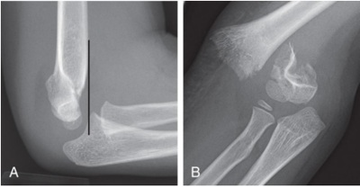
A Choque neurogênico.
B Lesão de Baumann.
C Lesão dos nervos ulnar, mediano e braquial.
D Contratura isquêmica de Volkmann.
Questão 256 · Mastoidite · 4000184345Menina, 15m, é trazida para avaliação médica com história de coriza e dor no ouvido direito há oito dias. Refere febre há três dias, prostração, inapetência, dor e aumento de volume retroauricular. Exame físico: bom estado geral; T=38,2oC; FR=42irpm; FC=137bpm. Cabeça: O TRATAMENTO É PRESCREVER:
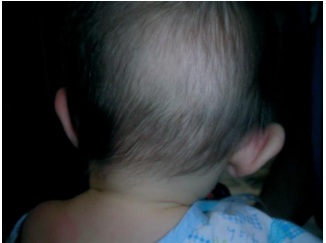
A Cefazolina e amicacina intravenosa.
B Ciprofloxacina tópica.
C Azitromicina via oral.
D Oxacilina e ceftriaxona intravenosa.
Questão 257 · Audiologia · 4000184319Perda Auditiva induzida por Ruído PAIR ou Perda Auditiva induzida por níveis de Pressão Sonora Elevados PAINPSE EM RELAÇÃO À PERDA AUDITIVA INDUZIDA POR RUÍDO, É CORRETO AFIRMAR QUE É:
A Do tipo misto, acometendo a orelha mais exposta, e irreversível.
B Condutiva, unilateral e reversível quando cessada a exposição.
C Do tipo misto, bilateral e reversível quando cessada a exposição.
D Neurossensorial, geralmente bilateral, irreversível e progressiva.
Questão 258 · Intoxicações Exógenas · 4000184313Homem, 35a, procura Unidade Básica de Saúde com queixa de tontura, dor de cabec Trabalha diariamente na horta perto da sua casa. Colega de trabalho apresenta sintomas semelhantes. CONDUTA É:
A Realizar notificação de intoxicação crônica por hidrocarboneto e afastar do trabalho.
B Receitar sintomáticos, afastar o paciente e encaminhar ao neurologista.
C Solicitar dosagem de eletrólitos, prescrever hidratação endovenosa e medidas para tratamento de insolação.
D Solicitar exames complementares, afastar o paciente e investigar condições de trabalho e produtos usados.
Questão 259 · Outros tumores ósseos · 4000184311Adolescente, 15a, procura médico de família muito preocupada com aumento de volume localizado no terço proximal da região tibial direita há cerca de quatro anos. Nega dor no local e limitação de atividades físicas. Traz exames que confirmam o diagnóstico de osteocondroma.
A Encaminhar para ressecção do tumor, pelo risco elevado de degeneração sarcomatosa para condrossarcoma.
B Realizar acompanhamento clínico e radiológico, sem necessidade de ressecção.
C Solicitar cintilografia óssea, para diferenciar entre tumor ósseo benigno e maligno.
D Encaminhar para radioterapia, pelo risco elevado de degeneração sarcomatosa para condrossarcoma.
Questão 260 · Transtorno do Déf icit de Atenção e Hiperatividade TDAH · 4000184241Um paciente de 6 anos é levado ao pronto atendimento sendo relatado quadro febril pela manhã (38,9°C) e apatia. Foi administrado antitérmico com melhora da temperatura. Durante o dia, voltou a ter febre e apresentou alguns vômitos e cefaleia. No momento da consulta, se encontra febril, prostrado e com falas desconexas. O restante do exame, sem particularidades, tendo sido aventada a hipótese de encefalite. Em relação ao caso clínico descrito e aos conhecimentos médicos relacionados, julgue o item a seguir. Cerca da metade das crianças que tiverem encefalite poderão evoluir com transtorno do dé cit de atenção com hiperatividade.
A Certo.
B Errado.
Questão 261 · Fraturas do f êmur proximal · 4000184146Homem, 75 anos, foi trazido ao Serviço de Emergência pelos familiares após encontrá-lo caído ao lado de sua cama. Tem hipertensão arterial sistêmica e obesidade. Lúcido, o paciente refere que caiu sobre o quadril direito após tropeçar no tapete ao lado da cama; desde então não consegue deambular. Nega trauma encefálico. Previamente deambulador social, conseguia realizar apenas atividades básicas diárias sozinho. Atendimento inicial já realizado e solicitada a radiografia abaixo. Qual é o achado clínico compatível com a história e com o achado radiológico apresentados?
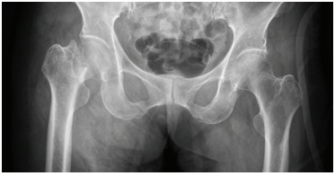
A Membro inferior encurtado com rotação interna.
B Membro inferior encurtado com rotação externa.
C Membros inferiores simétricos com rotação interna do direito.
D Membros inferiores simétricos com rotação externa do direito.
Questão 262 · Tumores ósseos · Avaliação por Imagem de Tumores Ósseos · 4000184145Homem, 17 anos, refere contusão do joelho há 1 mês, durante prática esportiva. Relata que, desde então, a dor no joelho persiste, sem melhoras com aplicação de gelo e com uso de anti-inflamatórios. A radiografia é apresentada. Considerando a hipótese diagnóstica, assinale a alternativa correta.
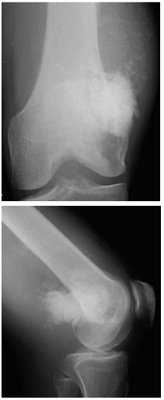
A Corpo estranho.
B Abscesso.
C Hematoma.
D Neoplasia.
Questão 264 · Intoxicações Exógenas · Síndrome Colinérgica · 4000184116Homem, 55 anos, é trazido ao pronto-socorro após ingerir grande quantidade de uma substância que causou quadro de sudorese profusa, bradicardia, miose, hipotensão e broncorreia. Qual é a substância que apresentaria efeito similar quando ingerida em grande quantidade?
A Loperamida.
B Rivsastigmina.
C Escopolamina.
D Imipramina.
Questão 265 · Bursites · 4000184109Mulher de 62 anos trabalha cuidando da casa e de dois netos. Há 12 horas notou aumento de volume em região anterior de joelho direito, com dor e calor. Relata febre baixa não aferida. Nega dor em outras articulações ou di culdade para deambular, mas relata di culdade para etir o joelho. Fez atividade doméstica mais intensa nos últimos dias. Nega uso de qualquer tipo de medicamentos ou comorbidades prévias relevantes. Foto do exame clínico articular apresentada. Qual a principal hipótese diagnóstica?
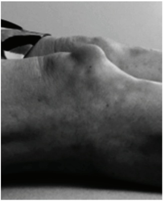
A Fratura patelar.
B Subluxação patelar.
C Artrite.
D Bursite pré-patelar.
Questão 266 · Transtorno do Humor Bipolar THB · 4000184106Paciente masculino, 20 anos, estudante do 2º ano do curso de economia, é levado ao pronto- socorro psiquiátrico após uma mudança de comportamento nos últimos sete dias. De acordo com os familiares, começou a car progressivamente mais agitado, querendo fazer várias coisas ao mesmo tempo; houve aumento na velocidade da fala, por vezes elaborando frases sem nexo; houve diminuição do sono; e estava alimentando-se muito mal e em pouca quantidade. Relatam também que, há uns quatro meses, o paciente cou muito triste com o falecimento da avó, pois eram muito próximos. Chorou muito e, por semanas, não queria sair do quarto, tendo emagrecido 6 kg. O paciente sempre teve boa saúde e é responsável, bom aluno e sociável. Não tem história prévia de transtorno mental. Antecedentes familiares: mãe, 44 anos, teve depressão depois do nascimento do último lho – que durou mais de um ano, mas “foi passando aos poucos, sem tratamento”; tio materno bebia bastante e cometeu suicídio aos 40 anos de idade. Qual a hipótese diagnóstica provável para o caso descrito acima?
A Transtorno de personalidade
B Transtorno depressivo reativo.
C Transtorno bipolar.
D Intoxicação por estimulantes.
Questão 268 · Faringite por Streptococcus pyogenes · Faringites · Faringites Bacterianas · 4000183953Escolar, 9 anos, sexo feminino, com quadro de febre de 38,5 ºC, dor de garganta e dor abdominal há 2 dias. Ao exame físico, encontra-se em bom estado geral, temperatura de 39 ºC, com hiperemia de orofaringe, petéquias em palato, pontos esbranquiçados em amigdalas bilateralmente e linfonodos palpáveis em região cervical anterior, sem outras alterações. Diante da principal hipótese diagnóstica, qual a conduta correta?
A Amoxicilina via oral por 10 dias.
B Analgésicos e antitérmicos para dor e febre.
C Prednisolona via oral por 5 dias.
D Solicitar hemograma e painel viral.
Questão 269 · Tratamento da Depressão · Depressão · 4000183931Valéria, 21 anos, desempregada, solteira, relata quadro de angústia e tristeza diária iniciado há 5 meses, após o falecimento de seus pais devido à COVID-19. Refere falta de vontade para realizar suas atividades diárias, crises de choro, sono excessivo, falta de perspectiva para o futuro. Relata que tem vontade de sumir, mas nega pensamentos de morte ou de autoagressão. Apresenta rede de apoio fragilizada, já que seus familiares moram em outro estado. Nesse caso, a melhor conduta é iniciar
A fluoxetina 20 mg e encaminhar para o psicólogo.
B lítio 300 mg, duas vezes ao dia, e encaminhar para o CAPS.
C amitriptilina 25 mg e encaminhar para o psiquiatra.
D práticas integrativas e complementares.
Questão 270 · Lombalgia · 4000183903Homem de 30 anos apresenta, há 5 dias, dor em região lombar à direita, sem irradiação para membros inferiores ou outros sintomas, após empurrar móveis e carregar alguns objetos durante reforma em seu apartamento. Refere sintomas semelhantes em outra ocasião anterior. No exame físico da coluna, o paciente apresenta discreta contratura paravertebral lombar à direita. Relata ainda dor à exão e discreta limitação desse movimento da coluna lombar. O exame neurológico dos membros inferiores é normal. O diagnóstico mais provável desse paciente é
A osteoartrite e deve ser feito com base em radiografia de coluna lombar.
B hérnia discal lombar e deve ser feito com base em ressonância nuclear magnética.
C lombalgia mecânica comum e deve ser feito com base na história clínica/exame físico.
D espondilite anquilosante e deve ser feito com base em tomografia computadorizada.
Questão 271 · Otorrinolaringologia · 4000183900Paciente do sexo masculino, 55 anos, observou, há três meses, linfonodomegalia cervical. Realizou tomogra a computadorizada de pescoço que evidenciou lesão in ltrativa em base de língua, com realce pelo contraste, medindo 3,0 cm, além de múltiplas linfonodomegalias cervicais bilaterais. A biópsia de linfonodo cervical revelou carcinoma de células escamosas com positividade para p16 no estudo imunoistoquímico. Esse diagnóstico está associado à infecção por
A HPV – papilomavírus humano.
B HTLV – vírus T-Linfotrópico humano.
C EBV – vírus Epstein-Barr.
D HIV – vírus da imunodeficiência humana.
Questão 272 · Pioartrite · 4000183867Criança de 2 anos de idade, 36 horas após queda de mesmo nível em que caiu sentada, apresenta febre alta e recusa a deambular. Ao exame de entrada no serviço de pronto atendimento, encontra-se febril (39,1°C), irritada, taquicárdica, com discreto sopro sistólico em bordo esternal esquerdo e dor importante com limitação de movimentos da articulação coxo-femural esquerda. Nesse caso, a primeira hipótese a ser considerada e o exame mais apropriado para a confirmação diagnóstica são, respectivamente,
A artrite reativa, ultrassonografia de coxofemoral.
B artrite traumática, tomografia computadorizada de pélvis.
C artrite reumática, ecocardiograma com doppler.
D artrite séptica, exame do líquido sinovial.
Questão 273 · Sumário dos Tóxicos e Antídotos · Intoxicação por Opioides · 4000183829Criança de 2 anos foi passar a tarde na casa da avó, quando voltou para casa estava muito hipoativa e sonolenta. Deu entrada no pronto atendimento com rebaixamento de nível de consciência, hipoventilação, bradicardia, hipotermia e pupilas puntiformes. Feita a hipótese de intoxicação exógena, perguntou-se sobre os remédios que a avó tem em casa e foi referido analgésicos comuns e remédio para pressão que estavam no armário do banheiro e xarope para tosse que estava na mesa da cozinha. Não lembrava o nome de nenhum dos medicamentos. Baseado na apresentação clínica e hipótese diagnóstica o antídoto a ser administrado é:
A Naloxone.
B N-acetilcisteina.
C Flumazenil.
D Atropina.
Questão 274 · Faringites Virais · 4000183827Lactente de um ano apresenta quadro de febre alta 39° C, há 48 horas, sem história de coriza ou tosse. Ao exame apresenta orofaringe hiperemiada e úlceras no palato mole e lojas amigdalianas. O tratamento a ser empregado será de:
A Aciclovir.
B Penicilina benzatina.
C Azitromicina.
D Sintomáticos.
Questão 275 · Apresentação Clínica · 4000183826Adolescente do sexo masculino, 15 anos de idade, apresenta há 15 dias febre aferida de 38 a 38,6° C, mal estar, fadiga, mialgia e adinamia. Apresenta no exame hiperemia de orofaringe com discreto exsudato, linfadenopatia e hepatoesplenomegalia. Os exames revelam: Leucócitos 18.200/ml3, linfócitos 62%, linfócitos atípicos 16%. A sorologia para citomegalovírus foi negativa. A hipótese diagnostica mais provável é:
A Leucemia aguda.
B Mononucleose infecciosa.
C Parvovirose.
D Rubéola.
Questão 276 · Centro de Atenção Psicossocial CAPS · 4000183768“A Rede de Atenção Psicossocial (RAPS) de Curitiba encontra-se em momento de expansão e quali cação, a RAPS composta por Atenção Primária - Unidades de Saúde, Atenção Especializada - APS, e Urgências – UPAs e SAMU, tem ampliado a assistência ao paciente com transtorno mental e/ou usuário de substância psicoativa”. Considerando os temas abordados nesta apresentação a secretaria municipal de saúde de Curitiba, assinale a alternativa
A Os Centros de Atenção Psicossocial (CAPS) são serviços de saúde de caráter aberto e comunitário.
B O CAPS AD (álcool de drogas) faz o atendimento para transtornos mentais graves e persistentes, inclusive pelo uso de substâncias psicoativas, para pessoas em todas as faixas etárias.
C As Unidades de Atenção Especializada, que incluem os CAPS, só podem atender pessoas referenciadas pela Atenção Básica, a porta de entrada do Sistema Único de Saúde.
D As equipes multiprofissionais que atuam CAPS são compostas por: médico (a) psiquiatra, psicólogo, enfermeiro (a), técnico (a) e/ou auxiliar de enfermagem e agente comunitário de saúde.
Questão 277 · Dependência de Álcool · Ref orma Psiquiátrica e Psiquiatria Social · Dependência Química · 4000183693O alcoolismo pode causar grandes danos por causa do comportamento violento que provoca nos indivíduos. Constatou-se a presença de álcool no agressor, na vítima ou em ambos em até 66% dos casos de homicídio e de agressões severas, e em até 50% dos casos de estupro e de atentado ao pudor. Acerca desse assunto, assinale a alternativa que apresenta estratégias utilizadas para redução de danos nesse contexto.
A Isolamento social e familiar como método punitivo.
B Discussões sociais, expondo o dependente para que reconheça os danos causados.
C Internação compulsória até a desintoxicação.
D Não colocar a abstinência como o único objetivo a ser almejado, propondo ao usuário possibilidades para melhorar a qualidade de vida dele.
E Ofertar benzodiazepínicos até conseguir iniciar tratamento específico.
Questão 278 · Mastoidite · Pediatria · 4000183623Pré-escolar de três anos com otalgia há cinco dias, com saída de secreção amarelada pelo orelha. Atualmente em tratamento com antibiótico tópico, retorna à emergência com dor latejante e persistente no ouvido, piora da hipoacusia e febre alta. Ao exame físico está irritada, com secreção amarelada no ouvido e protuberância atrás da orelha, muito semelhante a um caroço (foto abaixo). Entre as seguintes hipóteses diagnósticas, a mais provável é:
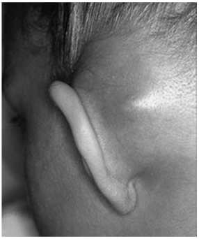
A furúnculo retroauricular.
B abcesso retroauricular.
C linfadenite retroauricular.
D celulite do pavilhão auricular.
E mastoidite aguda.
Questão 279 · Patologias Auditivas · Pediatria · 4000183622FLP, 12 anos, sexo masculino, tem brigado muito com a família por causa do volume da televisão e do aparelho de som, que sempre deixa muito alto. Na escola tem apresentado piora do rendimento escolar, diminuição da atenção e concentração e irritabilidade. Os professores referem que está distraído e tem di culdade de se relacionar com os colegas, preferindo permanecer mais isolado. Entre as opções abaixo, a melhor é:
A encaminhá-lo para avaliação neuropsicológica.
B encaminhá-lo para avaliação audiológica.
C iniciar metilfenidato.
D iniciar antidepressivo inibidor seletivo da recaptação de serotonina.
E dosagem de hormônios tireoidianos.
Questão 280 · Diagnóstico · Psiquiatria · 4000183609Para o correto diagnóstico de transtorno disfórico pré-menstrual, é necessária a presença de 5 ou mais sintomas somáticos e/ou emocionais, na maioria dos ciclos menstruais, na última semana da fase lútea,
A em mulheres com menos de 45 anos de idade.
B incluindo pelo menos um dos seguintes: humor deprimido, ansiedade, irritabilidade ou raiva.
C que melhoram acentuadamente no final da fase ovulatória.
D associados a diminuição importante dos valores da relação FSH/LH.
E em mulheres que não utilizam anticoncepcionais hormonais.
Questão 281 · Tabaco · Dependência de Tabaco · 4000183414Um paciente de 50 anos procura o médico preocupado porque seu irmão apresentou um infarto do miocárdio recente. Ele não apresenta comorbidades, como diabetes, hipertensão ou dislipidemia, mas fuma há mais de 20 anos. Sobre o tratamento de cessação do tabagismo, assinale a alternativa CORRETA.
A A terapia de reposição definicotina deve ser prescrita para todos os pacientes que demonstrem vontade de parar de fumar.
B A dose definicotina a ser reposta independe do número de cigarros fumados ao dia.
C O intervalo de tempo até fumar o primeiro cigarro quando a pessoa desperta pela manhã é uma informação importante para a programação do tratamento para cessação do tabagismo.
D A depender do padrão de consumo de tabaco, deve-se escolher a via de reposição da nicotina, devendo-se evitar o uso concomitante por via oral e transdérmica devido ao maior risco de toxicidade.
E reposição definicotina deve ser suspensa após 60 dias para evitar os efeitos colaterais.
Questão 282 · Transtornos Somáticos · Transtorno dos Sintomas Somáticos · 4000183399Considerando a apresentação das demandas de saúde mental na atenção primária, assinale a alternativa correta.
A É comum que os pacientes relatem claramente suas queixas psíquicas.
B Aproximadamente um terço dos sintomas relatados pelos pacientes permanecerão sem explicação médica mesmo após investigação adequada, apresentando importante associação com sofrimento mental.
C É imprescindível descartar primeira e exaustivamente todas as possibilidades orgânicas para apenas posteriormente pensar nos aspectos psicossociais.
D Devem ser prontamente encaminhadas para avaliação na atenção especializada.
Questão 283 · Fobia Social ou Transtorno de Ansiedade Social · 4000183398– Para pacientes com presença de sintomas físicos e ansiedade de desempenho antes de apresentações em público, pode-se orientar como forma de enfrentamento:
A Uso imediato de benzodiazepínico, independentemente da intensidade dos sintomas e idade do paciente.
B Respiração diafragmática e relaxamento muscular.
C Afastamento dessas situações.
D Introdução de antipsicóticos contínuos em baixas doses.
Questão 284 · Antidepressivos · 4000183395Em relação à disfunção sexual associada ao uso de Inibidores Seletivos da Recaptação da Serotonina (ISRS): I. Causam anorgasmia em mulheres e aumentam a latência para ejaculação em homens. II. Causam redução da libido em homens, mas raramente afeta a libido em mulheres. III. A prevalência pode chegar a 50% dos casos e deve ser prontamente manejado. Quais estão corretas?
A Apenas I e II.
B Apenas I e III.
C Apenas II e III.
D I, II e III
Questão 285 · Psiquiatria Inf antil · Diagnóstico do Autismo · Transtorno do Espectro Autista TEA · 4000183379Menino de 10 anos apresenta di culdades na escola, com muita di culdade na socialização, di culdades motoras, baixa tolerância à frustração, tendo bastante di culdade em entender as solicitações da professora, não interagindo bem com os colegas, com relatos de sofrer bullying por seu jeito estranho. Apresenta habilidades com números, bastante perfeccionista, apaga muitas vezes suas escritas e chora se não cam como gostaria. Em relação ao caso descrito, assinale a alternativa correta.
A Necessita de avaliação especializada multidisciplinar, sala de recursos, além de treinamento de habilidades sociais.
B É um quadro bastante típico nessa faixa etária, sendo a conduta adequada no manejo do caso o afastamento de suas atividades escolares.
C É um quadro clássico de superdotação, altas habilidades e necessita de avaliação psiquiátrica
D Seus comportamentos acontecem por falta de limites, não necessitando avaliações especializadas.
Questão 286 · Psiquiatria Inf antil · Transtornos Ansiosos · 4000183378Sobre transtornos ansiosos na infância e na adolescência, analise as assertivas abaixo: I. São pouco comuns e facilmente identificáveis. II. O transtorno de ansiedade de separação e fobias específicas comumente se desenvolvem na infância. III. Considerando o impacto social na funcionalidade e desenvolvimento de outros transtornos mentais, a Atenção Básica tem papel central no reconhecimento precoce desses quadros. Quais estão corretas?
A Apenas I.
B Apenas II.
C Apenas II e III.
D I, II e III.
Questão 287 · Of talmologia · 4000183363Ao examinar um recém-nascido a termo do sexo masculino, percebe-se que ele apresenta diâmetro corneano do olho direito aumentado, ausência de reflexo vermelho ipsilateral e epífora sem secreção. O provável diagnóstico é:
A Dacriocistite.
B Retinoblastoma.
C Glaucoma congênito.
D Conjuntivite gonocócica.
Questão 288 · Transtorno do Humor Bipolar THB · Diagnóstico do Transtorno do Humor Bipolar THB · 4000183359Transtorno do Humor Bipolar Tipo 1 Mulher de 30 anos procurou atendimento na UBS por insistência da família. Iniciou o uso de uoxetina 20 mg/dia há três semanas por sentir-se muito triste, com redução do apetite e isolamento social. Nos últimos dias, apresentou sensação de “estar ligada na tomada”, reduziu a necessidade de sono, realizou gastos abusivos e apresentou comportamento sexual de risco. A conduta mais adequada nesse caso é:
A Aumentar a dose do antidepressivo de forma gradual e iniciar um benzodiazepínico à noite.
B Trocar para um antidepressivo dual.
C Trocar por um antidepressivo com perfil mais sedativo.
D Suspender gradualmente o antidepressivo e iniciar um estabilizador do humor.
Questão 289 · Psiquiatria Inf antil · Psiquiatria · 4000183319Analise as assertivas abaixo referentes à vulnerabilidade e ao adoecimento mental: I. Cerca de 75% dos transtornos mentais diagnosticados na vida adulta iniciam antes dos 24 anos. II. A maioria dos transtornos mentais tem suas raízes na infância, podendo o ambiente abrandar ou agravar a expressão do adoecimento. III. É provável que a genética e o ambiente, em suas múltiplas possibilidades de apresentações e associações, sejam corresponsáveis pela saúde mental de um indivíduo. Quais estão corretas?
A Apenas I.
B Apenas I e III.
C Apenas II e III.
D I, II e III.
Questão 290 · Transtornos do Humor · Psiquiatria · 4000183318nalise as assertivas abaixo referentes à saúde mental: I. O sofrimento mental é uma linha contínua que vai desde manifestações normais da vida, como a tristeza, até extremos de anedonia, desânimo e tentativas de suicídio. II. A intensidade do sofrimento, o prejuízo provocado e a persistência dos sintomas são considerados, porém não necessariamente diferenciam o normal do patológico. III. A divisão dos diagnósticos em categorias, com separações estabelecidas, é compatível com as queixas apresentadas pelos pacientes. Quais estão corretas?
A Apenas I e II.
B Apenas I e III.
C Apenas II e III.
D I, II e III.
Questão 291 · Intoxicações Exógenas · 4000183288Uma mulher de 56 anos de idade foi levada inconsciente ao hospital pelo SAMU. Na entrada, apresentava-se sonolenta, e seus dados eram os seguintes: frequência cardíaca de 40 bpm; pressão arterial de 100 mmHg x 55 mmHg; saturação de 97%; pupilas mióticas pouco fotorreagentes. O restante do exame físico resultou normal. Durante seu tratamento, a paciente evoluiu com FC de 120 bpm, ausculta com estertores crepitantes bilaterais difusos e saturação de 85%. Assinale a alternativa que apresenta, respectivamente, o quadro provavelmente associado a esse caso clínico e a medicação indicada.
A síndrome anticolinérgica; atropina
B edema pulmonar cardiogênico; flumazenil
C edema pulmonar hipertensivo; dexametasona
D edema pulmonar cardiogênico; adrenalina
E edema pulmonar não cardiogênico; naloxona
Questão 292 · Lesão meniscal · 4000183277Entre pacientes com lesão traumática de menisco dos joelhos, o paciente ideal para a realização de uma sutura meniscal será um paciente jovem com lesão
A longitudinal na zona vermelha-vermelha, procedendo-se à reconstrução do ligamento cruzado anterior associada no mesmo ato cirúrgico.
B longitudinal na zona branca-branca, sem reconstrução do ligamento cruzado anterior associada no mesmo ato cirúrgico.
C radial na zona branca-branca, sem reconstrução do ligamento cruzado anterior associada no mesmo ato cirúrgico.
D radial na zona branca-branca, procedendo-se à reconstrução do ligamento cruzado anterior associada no mesmo ato cirúrgico.
E horizontal na zona vermelha-vermelha, sem reconstrução do ligamento cruzado anterior associada no mesmo ato cirúrgico.
Questão 293 · Princípios de Diagnóstico e Tratamento de Fraturas · 4000183276No tratamento cirúrgico de fraturas dos ossos do antebraço em adultos, o cirurgião deve realizar redução
A anatômica e, sempre que possível, compressão interfragmentária com estabilidade absoluta, já que o tratamento das fraturas de antebraço segue os mesmos princípios do tratamento das fraturas articulares.
B anatômica e, sempre que possível, estabilidade relativa com uso de tutor interno, já que o tratamento das fraturas de antebraço segue os mesmos princípios básicos das demais fraturas diafisárias.
C funcional e, sempre que possível, compressão interfragmentária com estabilidade absoluta, já que o tratamento das fraturas de antebraço segue os mesmos princípios do tratamento das fraturas articulares.
D funcional e, sempre que possível, estabilidade relativa com uso de tutor interno, já que o tratamento das fraturas de antebraço segue os mesmos princípios básicos das demais fraturas diafisárias.
E funcional e, sempre que possível, estabilidade relativa com uso de imobilização gessada, já que o tratamento das fraturas de antebraço segue os mesmos princípios básicos das demais fraturas diafisárias.
Questão 294 · Síndrome Adrenérgica · 4000183241Um menino de dois anos de idade, previamente hígido, foi levado ao pronto-socorro infantil com histórico de sonolência súbita. O pai relatou que o menino estava tratando um quadro de infecção de vias aéreas superiores com lavagem nasal e inalação com soro siológico havia três dias. No presente dia, pela manhã, o pai não havia achado o soro fisiológico para realizar a lavagem nasal, então usou a medicação que ele utilizava normalmente para “descongestionar o nariz”. Entre as alternativas a seguir, assinale aquela que apresenta a provável causa da intoxicação exógena no caso clínico acima e o seu tratamento adequado, respectivamente
A morfina — naloxona
B nafazolina — naloxona
C nafazolina — medidas de suporte
D morfina — medidas de suporte
E morfina — flumazenil
Questão 295 · Pediatria · Sinovite Transitória do Quadril · 4000183240Com relação à sinovite transitória do quadril na infância, assinale a alternativa correta.
A A maioria dos casos ocorre na faixa etária de três a oito anos, com pico em torno dos seis anos. Está estabelecido que a sinovite transitória é a causa da doença de Legg-Calvé-Perthes.
B A maioria dos casos ocorre na faixa etária de três a oito anos, com pico em torno dos seis anos. A sinovite transitória é considerada a causa mais comum de dor no quadril e de claudicação não traumática na infância.
C A maioria dos casos ocorre na faixa etária de oito a doze anos, com pico em torno dos dez anos. Em relação a trauma e à sinovite transitória, a literatura sugere, majoritariamente, que o trauma seria a causa da sinovite.
D A maioria dos casos ocorre na faixa etária de oito a doze anos, com pico em torno dos dez anos. É fundamental a artrocentese para o diagnóstico diferencial com quadro infeccioso.
E A maioria dos casos ocorre na faixa etária de oito a doze anos, com pico em torno dos dez anos. A dor costuma ser crônica ou crônica agudizada, compondo diagnóstico diferencial com epifisiólise femoral proximal.
Questão 296 · Tratamento da Depressão · Antidepressivos · 4000183213Nathalia, de 35 anos de idade, buscou a UBS com a demanda de cessar o uso de uoxetina para depressão. A paciente relatou estar se sentindo muito bem, “sem sintomas” (sic). Iniciara o uso de inibidor seletivo da recaptação de serotonina (ISRS) havia quatro meses, mantendo a dose de 20 mg por dia durante todo esse tempo. Com relação à solicitação de Nathalia no caso hipotético acima, a conduta inicial correta consiste em
A fazer diagnóstico diferencial com ansiedade; se for compatível, deve-se trocar a medicação por ansiolítico e reavaliar a paciente em duas semanas.
B parabenizar a paciente pelo sucesso no tratamento e iniciar a retirada gradual do medicamento, na medida de um quarto de dose, quinzenalmente.
C reavaliar o diagnóstico, pois é improvável a melhora tão rápida. Em caso de erro, deve-se cessar o uso do medicamento de maneira gradual.
D reavaliar o diagnóstico e, na vigência de melhora, considerar a retirada após seis meses, contados do esbatimento dos sintomas.
E fazer diagnóstico diferencial com transtorno afetivo bipolar, pois a euforia da paciente pode configurar virada maníaca causada pelo ISRS.
Questão 297 · Of talmologia · 4000183161Homem, 40 anos de idade, procura PS com quadro de hiperemia, dor e edema palpebrais à esquerda há 2 dias. Nega piora da acuidade visual e doenças pregressas. Ao exame oftalmológico: acuidade visual de 20/20 em ambos olhos, reflexos pupilares isofotorreagentes, limitação à adução do olho direito e disco óptico sem edema. Qual é a conduta inicial mais adequada?
A Hemograma e antibioticoterapia oral.
B Tomografia de órbitas com contraste e antibioticoterapia venosa.
C Dosagem de TSH e T4L, e descompressão orbitária.
D Provas reumatológicas e pulsoterapia.
Questão 298 · Of talmologia · 4000183160Mulher, 75 anos de idade, relata preocupação com riscos de efeitos colaterais oculares da polifarmácia após ler uma publicação na Internet. Exame físico: visando avaliar a profundidade da câmara anterior, observa-se região de penumbra sobre a parte nasal da íris após incidência de luz paralela ao rosto da paciente. Qual das seguintes medicações presentes na prescrição da paciente tem menor risco de precipitar glaucoma de ângulo fechado?
A Escitalopram.
B Clonazepam.
C Ipratrópio.
D Atorvastatina.
Questão 299 · Fraturas do f êmur proximal · 4000183121Mulher, 78 anos de idade, sofreu queda ao solo sem desnível. Apresenta-se consciente, hemodinamicamente estável e com vias aéreas pérvias. É trazida ao Pronto-socorro sobre uma maca por incapacidade para deambular por dor. Após realização da radiogra a de pelve, constatou-se uma fratura desviada e instável do colo do fêmur direito. Assinale a alternativa que descreve CORRETAMENTE a deformidade clínica do membro que essa paciente tipicamente apresenta e os músculos que contribuem para o desvio desta fratura.
A Encurtamento com rotação lateral. Músculos tensor da fáscia lata e quadríceps femural.
B Encurtamento com rotação medial. Músculos glúteo médio e iliopsoas.
C Encurtamento com rotação lateral. Músculos glúteo médio e iliopsoas.
D Encurtamento com rotação medial. Músculos tensor da fáscia lata e quadríceps femural.
Questão 300 · Osteossarcoma · 4000183119Menino, 14 anos de idade, apresenta dor leve no joelho direito, mais frequente à noite. Refere um trauma leve no local há 03 meses. Nega febre, mas observa calor local. Ao exame físico, apresenta-se em bom estado geral, deambula sem alteração de marcha. O joelho encontra-se edemaciado sem rubor, sem dor a palpação de proeminências ósseas. Arco de movimento 0 a 110˚ de exão. Testes de Appley e McMurray negativos. Exames complementares apresentam-se alterados: níveis séricos elevados de Fosfatase Alcalina e na radiografia do joelho, esclerose difusa na metáfise distal do fêmur. Qual é o diagnóstico mais provável?
A Osteomielite.
B Osteossarcoma.
C Lesão do menisco.
D Doença de Osgood-Schlatter.
Questão 301 · Apresentação clínica · 4000183080Mulher, 54 anos, com ombro doloroso à direita e suspeita clínica de lesão do manguito rotador. Ao exame, ombro direito com dor e importante limitação para rotação interna. O músculo mais provavelmente comprometido é:
A Redondo menor
B Supraespinhal
C Infraespinhal
D Subescapular
Questão 302 · Tratamento · 4000183031Clara, 8 meses, começou a frequentar a creche no 6º mês de vida, ao termino da Licença Maternidade de sua mãe. Há 7 dias, iniciou um quadro de coriza que inicialmente era hialina, evoluindo no 3º dia para esverdeada, tosse, irritabilidade, febre que durou cerca de 3 dias e posteriormente cedeu, persiste ainda tosse, coriza e inapetência. Ao exame, apresenta membrana timpânica direita abaulada e intensa hiperemia. Sem outras alterações. Qual seria a melhor conduta:
A Prescrever SULFAMETOXAZOL + TRIMETOPRINA pela facilidade da posologia.
B Prescrever PENICILINA BENZATINA devido à melhor aderência ao tratamento.
C Encaminhar ao Pronto Socorro para realizar raio x de seios da face.
D Prescrever AMOXACILINA imediatamente devido à baixa idade.
Questão 303 · Diagnóstico do Autismo · Transtorno do Espectro Autista TEA · 4000183023Pré escolar de dois anos é levado a consulta por seus pais, por apresentar atraso de linguagem; perda do uso da fala, uso de palavras isoladas, reação ausente ou tardia quando chamam seu nome, ausência de interesse social, brinca fazendo movimentos estereotipados, evita contatos físicos e visuais. Nasceu de parto prematuro 32 semanas, permaneceu UTI neonatal por 6 semanas, devido sepse tardia, sem necessidade de ventilação mecânica. Exame físico normal, hipótese diagnostica provável é:
A Carência Afetiva
B Autismo
C Esquizofrenia
D Surdez sensório neural
Questão 304 · Mielomeningocele e def eitos de f echamento posterior do tubo neural · 4000182982Menina de 8 anos, apresenta dor nos membros inferiores e di culdade de marcha há 8 meses. Eventualmente, também apresenta escapes urinários. AP: nascida com meningocele e operada no primeiro dia de vida, sem intercorrências, com bom desenvolvimento neuropsicomotor. A hipótese diagnóstica atual é:
A hidrocefalia.
B síndrome da medula presa.
C síndrome de Chiari II.
D espondilite anquilosante.
Questão 305 · Of talmologia · 4000182981Menino de 8 anos refere que bateu algo no olho esquerdo em um arame e sentiu correr uma “água quente”. Exame ocular: não realizado devido ao blefaro-espasmo à esquerda. A conduta a ser realizada para encaminhar o paciente é:
A Jejum, colírio e pomada de antibiótico, curativo compressivo e estudo da profilaxia antitetânica.
B Jejum, curativo oclusivo, repouso e avaliar profilaxia antitetânica.
C Dieta livre, pois provavelmente trata-se de abrasão corneana superficial.
D Jejum, colírio de antibiótico de hora em hora sem necessidade de curativo, avaliar profilaxia antitetânica.
Questão 306 · Of talmologia · 4000182898A manifestação ocular observada na imagem é característica de uma enfermidade osteometabólica com graves repercussões ortopédicas. A doença em questão é o(a):
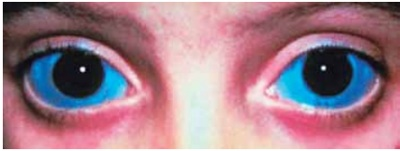
A raquitismo hipofosfatêmico.
B síndrome de Morquio.
C osteogênese imperfeita.
D osteodristrofia renal.
Questão 307 · Antipsicóticos · Discinesia Tardia · 4000182864Paciente feminina, de 64 anos, com diagnóstico de transtorno de humor bipolar de longa data, veio à consulta por quadro de movimentos coreiformes e distônicos, envolvendo principalmente a face e a língua. Atualmente faz uso de olanzapina (10 mg/dia). Diante do diagnóstico de discinesia tardia, assinale a assertiva correta.
A É mais comum ocorrer em homens jovens.
B A grande maioria dos casos melhora após 3 meses da interrupção do fármaco potencialmente implicado.
C A suspensão abrupta do fármaco potencialmente implicado deve ser evitada pelo risco de piora dos sintomas.
D Levodopa é a principal abordagem terapêutica.
Questão 308 · Lombalgia · 4000182848Paciente masculino, de 27 anos, veio à consulta queixando-se de lombalgia, iniciada há 3 dias, sem melhora com o uso de paracetamol. Negou comorbidades. Ao exame físico, foram constatados reflexos, força e sensibilidade preservados nas 4 extremidades, com dor à palpação paravertebral bilateral em região lombar, mas sem dor à palpação de processos espinhosos. Sinal de Lasègue estava negativo bilateralmente. Qual a conduta mais adequada?
A Indicar repouso absoluto.
B Aumentar a dose de paracetamol.
C Prescrever anti-inflamatório não esteroidal.
D Realizar infiltração para-espinhal.
Questão 309 · Neurologia · Lombalgia · 4000182845Paciente feminina, de 63 anos, procurou a Emergência por quadro de dor lombar de forte intensidade, iniciada há 2 dias, com piora progressiva, evoluindo para parestesias nos membros inferiores. Informou ter 1 nódulo na mama esquerda, que vinha crescendo há mais de 2 anos sem investigação, e 1 nódulo na axila esquerda, surgido há 3 meses. Ao exame físico, encontrava-se em regular estado geral, com mucosas úmidas e coradas, fácies de dor e di culdade de deambulação (pela dor lombar). As auscultas cardíaca e pulmonar não revelaram alterações, e o exame neurológico mostrou força preservada nos membros inferiores. Diante do quadro clínico, qual a conduta mais adequada?
A Fazer biópsia do nódulo da mama esquerda com urgência, pois, sem o diagnóstico de uma possível neoplasia maligna de mama, não há como definir os demais problemas e tratamentos para a paciente.
B Prescrever corticosteroide sistêmico e analgésico e encaminhar a paciente para investigação adicional em serviço especializado da instituição.
C Tratar a dor da paciente e solicitar tomografia computadorizada ou ressonância magnética da coluna lombossacra para diagnóstico de possível compressão medular, uma vez que há urgência em iniciar o tratamento caso seja esse o problema (possivelmente causado por metástase óssea).
D Iniciar tratamento empírico para uma provável neoplasia metastática de mama, enquanto são solicitados exames de estadiamento e biópsia.
Questão 310 · Fratura das f alanges · 4000182823Assinale a assertiva correta sobre a cirurgia da unha.
A Quando há fratura da falange distal associada a um hematoma subungueal, ela é considerada uma fratura exposta.
B O tratamento do hematoma subungueal costuma ser conservador
C A drenagem de um hematoma subungueal por perfuração geralmente está contraindicada.
D O uso de antirretrovirais previne paroníquia em pacientes com vírus da imunodeficiência humana.
Questão 311 · Diagnóstico do TDAH · Transtorno do Déf icit de Atenção e Hiperatividade TDAH · 4000182781Após o período de isolamento em razão da pandemia por covid-19, registrou-se aumento no número de crianças e adolescentes com queixas atencionais nos consultórios pediátricos. Sabe-se que o transtorno de dé cit de atenção e hiperatividade (TDAH) é prevalente e que o diagnóstico é clínico, havendo critérios essenciais para seu correto reconhecimento. Assinale a alternativa que contempla o critério que necessariamente deverá ser identificado.
A Início dos sintomas até os 10 anos
B Associação de desatenção e hiperatividade/impulsividade
C Resposta ao tratamento farmacológico com metilfenidato
D Existência de sintomas em mais de um ambiente
Questão 312 · Of talmologia · 4000182774Assinale a alternativa que preenche, correta e respectivamente, as lacunas do parágrafo abaixo. O teste do reflexo vermelho (TRV) é exame simples, rápido, indolor e de baixo custo. Segundo a Sociedade Brasileira de Pediatria e a Sociedade Brasileira de Oftalmologia Pediátrica, o TRV deve ser realizado .......... de vida e repetido pelo menos .......... ao ano durante as consultas de puericultura nos primeiros .......... da criança.
A nas primeiras 24 horas – 1 vez – 2 anos
B nas primeiras 24 horas – 2 vezes – 2 anos
C nas primeiras 72 horas – 3 vezes – 3 anos
D na primeira semana – 2 vezes – 5 anos
Questão 313 · Diagnóstico da Depressão · Depressão · 4000182768Paciente, de 36 anos, consulta em ambulatório, referindo um quadro de muita dor em região lombo-sacra que a tem impedido de realizar diversas atividades habituais, diminuindo, assim, de forma importante, sua qualidade de vida. No decorrer da consulta, paciente conta que tem se sentido extremamente triste, sensível, com episódios de choro, intercalados por episódios de raiva intensa. Conta, ainda, que tem lhe ocorrido a ideia de tirar a própria vida. Relata que tudo iniciou quando, há cerca de um mês, foi prescrita, em outro serviço, uma medicação para o seu quadro de dor. Assinalar a medicação, entre as descritas abaixo, relacionada ao presente quadro:
A Paracetamol.
B Dexametasona.
C Diazepam.
D Ácido acetilsalicílico.
Questão 314 · Princípios da Cirurgia Oncológica · Psiquiatria · 4000182767Quando uma pessoa toma conhecimento de que é portadora de câncer, várias reações psicológicas surgem. Entre essas reações, são comuns o medo da morte, o medo de des guramento e de incapacidade, medo de abandono e perda da autonomia, negação, ansiedade, raiva e culpa. Aproximadamente, metade dos pacientes com câncer apresenta transtornos mentais. Considerando-se o exposto, assinalar a alternativa que apresenta o transtorno mais comum nesse caso:
A Transtorno de adaptação.
B Transtorno depressivo.
C Delirium.
D Transtorno de ansiedade social.
Questão 315 · Subtipos da Depressão · 4000182748Os conceitos de síndrome da tristeza pós-parto (STPP) ou muitas vezes, confundidos. Considerando-se o exposto, assinalar a alternativa CORRETA:
A A incidência de STPP é de cerca de 10 a 15% e de DPP 30 a 75% nas mulheres que dão à luz.
B O momento de início da STPP é nos 3 a 6 meses após o parto e da DPP é nos 3 a 5 dias após o parto.
C Na STTP, há forte associação com história de transtorno de humor, enquanto que não há essa associação na DPP.
D A anedonia não é um sintoma frequente na STPP e é frequente na DPP.
Questão 316 · Diagnóstico · Transtornos do Humor · 4000182747O transtorno disfórico pré-menstrual (TDPM) é desencadeado pela oscilação dos níveis de esteroides sexuais que acompanham um ciclo menstrual ovulatório e ocorre cerca de uma semana antes do início da menstruação. São critérios diagnósticos CORRETOS para o TDPM:
A Depressão – irritabilidade – fogachos.
B Irritabilidade – sensibilidade nos seios – pensamentos acelerados.
C Retraimento social – dilatação abdominal – fotofobia.
D Ansiedade – retraimento social – cefaleia.
Questão 317 · Abstinência de Álcool · 4000182728Paciente do sexo masculino, de 35 anos, no pósoperatório imediato de cirurgia de hérnia inguinal, inicia com quadro de tremor de mãos acentuado de repouso, sua língua e pálpebras estavam trêmulas, apresentando leve agitação. Estava orientado, sem prejuízo na memória. Diante desse quadro, assinalar a alternativa que apresenta a hipótese diagnóstica mais provável:
A Quadro infeccioso pós-operatório.
B Delirium
C Transtorno do pânico.
D Abstinência de álcool.
Questão 318 · Estabilizadores do Humor · Tratamento do Transtorno do Humor Bipolar THB · 4000182705Paciente do sexo masculino, de 46 anos, é atendido em um Centro de Atenção Psicossocial (CAPS) e tem um diagnóstico de transtorno de humor bipolar tipo I. Por isso, vem em uso, há vários anos, de carbonato de lítio, com ótima resposta estabilizadora do humor. Sobre o lítio, é
A Essa medicação controla a mania aguda e impede a recorrência na grande maioria das pessoas com transtorno bipolar tipo I.
B Em pessoas tratadas com esse fármaco, dosagens de TSH devem ser medidas a cada intervalo de 6 a 12 meses.
C O lítio é um fármaco seguro e eficaz para idosos.
D O lítio é excretado pela via hepática.
Questão 319 · Transtornos de Personalidade · Transtorno de Personalidade Borderline · 4000182704Paciente do sexo feminino, de 21 anos, é trazida pela sua mãe à consulta em uma Unidade Básica de Saúde (UBS). A mãe da paciente se diz extremamente preocupada com a lha; conta que esta teve relacionamentos extremamente conturbados com três namorados, e nos três relacionamentos apresentou intenso medo de ser abandonada e que estas relações haviam sido intensas e instáveis, com muitas brigas e agressões. Relata, ainda, que, quando a lha termina os namoros, costuma se automutilar com objetos cortantes em seus pulsos. A menina chora durante a consulta e diz sentir um vazio crônico e, ao mesmo tempo, uma raiva intensa. Culpa os namorados e a mãe de não a compreenderem. Diante desse quadro, a hipótese diagnóstica CORRETA é:
A Transtorno depressivo maior.
B Transtorno de personalidade narcisista.
C Transtorno de personalidade borderline.
D Transtorno de personalidade histriônica.
Questão 320 · Transtorno do Espectro Autista TEA · 4000182688O transtorno do espectro autista (TEA) é um grupo de síndromes neuroevolutivas que se caracteriza por uma ampla gama de problemas na comunicação social e por comportamentos restritos e repetitivos. Sobre o TEA, assinalar a alternativa CORRETA:
A O TEA é diagnosticado com uma frequência quatro vezes maior em meninas do que em meninos.
B Inúmeras síndromes com causas genéticas incluem o TEA como parte de um fenótipo mais amplo.
C A idade paterna e materna avançada no momento do nascimento do bebê não está entre os fatores pré-natais mais significativamente associados a esse transtorno.
D A hiperatividade e a desatenção são comportamentos raros em crianças com esse transtorno.
Questão 321 · Diagnóstico do TDAH · Transtorno do Déf icit de Atenção e Hiperatividade TDAH · 4000182687O transtorno de dé cit de atenção/hiperatividade (TDAH) é uma condição neuropsiquiátrica que afeta préescolares, crianças, adolescentes e adultos em todo o mundo e apresenta como características uma diminuição na atenção e um padrão de impulsividade e hiperatividade aumentadas. Sobre o TDAH, assinalar a alternativa CORRETA:
A Os dados, até o momento, sugerem que esse é um transtorno basicamente ambiental, com pouca influência de fatores genéticos.
B O curso desse transtorno é variável, mas raramente os sintomas persistem na adolescência.
C As taxas de incidência desse transtorno são mais elevadas em crianças com nascimento prematuro cujas mães tiveram infecções durante a gestação.
D As anfetaminas, consideradas medicações de primeira escolha para esse transtorno, são agonistas serotoninérgicos.
Questão 322 · Alinhamento dos Joelhos · 4000182615Menina, 4 anos de idade, saudável, brinca e participa das atividades da escola, mas tem os joelhos muito juntos, a mãe informa que ela também tinha as pernas tortas e que para torná-las alinhadas usou tênis ortopédicos. Nega dor ou claudicação. Ao exame, os membros são simétricos e a distância intermaleolar é de 6 cm. A conduta indicada para o quadro é
A encaminhar ao ortopedista para avaliação e tratamento.
B encaminhar ao ortopedista se a relação entre o eixo transmaleolar e o eixo bicondilar tiver rotação da tíbia maior que 10 graus.
C realizar radiografia de coluna, pelve e membros inferiores.
D recomendar a prática de natação para fortalecimento muscular.
E orientação dos pais e observação porque trata-se do desenvolvimento normal da criança.
Questão 323 · Abstinência de Álcool · 4000182586Paciente apresenta síndrome de abstinência alcoólica. É correto afirmar que
A os neurolépticos devem ser evitados por aumentarem a limiar convulsivo.
B a principal classe de medicamentos para o controle de sintomas é a dos benzodiazepínicos.
C betabloqueadores devem ser utilizados de rotina, especialmente nos casos de
D nos casos de suspeita de Wernecke-Korsakoff a reposição de magnésio é tão obrigatória quanto a da tiamina.
E anticonvulsivantes devem ser introduzidos nas primeiras 24 horas, a fim de se garantir um maior limiar ante alucinação.
Questão 324 · Sumário dos Tóxicos e Antídotos · Intoxicações Exógenas · 4000182573Em relação aos quadros de intoxicação exógena, assinale a alternativa correta.
A O diagnóstico da intoxicação por opioide é feito por meio de dosagem na urina, que apresenta boa correlação com a gravidade dos sintomas.
B A alcalinização da urina com bicarbonato de sódio está indicada em casos graves de intoxicação por benzodiazepínicos.
C A intoxicação pelo etilenoglicol, rotineiramente, inicia-se com acidose metabólica com ânion gap diminuído, hiperventilação e edema agudo de pulmão.
D O glucagon é o tratamento inicial de escolha no paciente intoxicado com betabloqueador, apresentando bradicardia e hipotensão sintomáticos.
E Haloperidol é a droga de escolha para o controle da agitação e sintomas adrenérgicos nos quadros de intoxicação aguda por cocaína.
Questão 325 · Tratamento · Otite Média Aguda · 4000182564Lactente, sexo masculino, 7 meses de idade é levado ao Pronto-socorro com quadro de febre baixa (38 ºC) há dois dias e coriza hialina. Não está aceitando alimentação e está choroso. Regular aceitação de líquidos. Ao exame: hidratado, eupneico, com temperatura de 38 ºC. Não há hiperemia em orofaringe posterior e tonsilas. A otoscopia evidencia, bilateralmente, hiperemia da membrana timpânica com abaulamento bilateral e reflexo luminoso presente. A ausculta pulmonar é normal e o exame físico restante não mostra outros achados anormais. Com base na principal hipótese diagnóstica, a conduta para esse caso é o uso de
A analgésico/antipirético, apenas.
B amoxicilina.
C prednisolona.
D ceftriaxone.
E penicilina benzatina.
Questão 326 · Resumo das Toxíndromes · Intoxicações Exógenas · 4000182498São considerados medicamentos que causam quadro de intoxicação com alteração pupilar tipo midríase:
A opioides.
B anticolinérgicos.
C colinérgicos
D carbamatos.
E fenotiazidas.
Questão 327 · Abstinência de Álcool · 4000182493O tratamento da abstinência alcoólica em pacientes com pontuação maior que 8-10 na escala CIWA-Ar ( Clinical Institute Withdrawal
A haloperidol, 1-5 mg via endovenosa, a cada 10 minutos.
B propofol, 1 mg/kg via endovenosa e de forma contínua.
C fenobarbital, 130-260 mg via endovenosa, a cada 15 minutos.
D lorazepam, 2-4 mg via endovenosa, a cada hora.
E diazepam, 10-20 mg via oral, a cada hora.
Questão 328 · Sumário dos Tóxicos e Antídotos · 4000182423Menino, 2 anos de idade, é levado à UPA com relato de sonolência, naúseas e vômitos há 50 minutos. Após inicio do quadro, foi constatado que o menor ingeriu bolinhas de naftalina. A genitora informa ter colocado o produto, há dois dias, na gaveta que se encontrava aberta; que as bolinhas estavam em um pacote com 5 unidades, de menos de 1cm de diâmetro, e que 3 delas foram encontradas. Ao exame, criança hipoativa, hidratada, eupneica, corada, afebril. Observa-se hipersalivação. Sem outros achados anormais no momento. No caso de ocorrer a complicação, considere as opções abaixo e indique a conduta adequada:
A Administrar carvão ativado.
B Fazer lavagem gástrica.
C Administrar azul de metileno.
D Administrar atropina.
Questão 329 · Intoxicações Exógenas · 4000182422Menino, 2 anos de idade, é levado à UPA com relato de sonolência, naúseas e vômitos há 50 minutos. Após inicio do quadro, foi constatado que o menor ingeriu bolinhas de naftalina. A genitora informa ter colocado o produto, há dois dias, na gaveta que se encontrava aberta; que as bolinhas estavam em um pacote com 5 unidades, de menos de 1cm de diâmetro, e que 3 delas foram encontradas. Ao exame, criança hipoativa, hidratada, eupneica, corada, afebril. Observa-se hipersalivação. Sem outros achados anormais no momento. O paciente, em questão, pode apresentar complicação decorrente de:
A Lesões cáusticas pela acidez.
B Lesões cáusticas pela alcalinidade.
C Síndrome hipercolinérgica.
D Metahemoglobinemia com cianose.
Questão 330 · Intoxicações Exógenas · 4000182421Menino, 2 anos de idade, é levado à UPA com relato de sonolência, naúseas e vômitos há 50 minutos. Após inicio do quadro, foi constatado que o menor ingeriu bolinhas de naftalina. A genitora informa ter colocado o produto, há dois dias, na gaveta que se encontrava aberta; que as bolinhas estavam em um pacote com 5 unidades, de menos de 1cm de diâmetro, e que 3 delas foram encontradas. Ao exame, criança hipoativa, hidratada, eupneica, corada, afebril. Observa-se hipersalivação. Sem outros achados anormais no momento. Considerando o potencial tóxico do produto, e que a criança permaneceu por 8 horas em observação, sem sintomas, indique a conduta correta:
A Manter internado por mais 12 horas, verificando sintomas respiratórios.
B Manter internado por mais 48 horas, verificando sintomas neurológicos.
C Conceder alta, com retorno, após 5 dias, para realizar Hemograma e Sumário de Urina.
D Conceder alta com observação domiciliar, por 5 a 7 dias, e retorno se tiver sintomas.
Questão 331 · Mielomeningocele e def eitos de f echamento posterior do tubo neural · 4000182405Paciente, sexo feminino, nascida há 12 horas, apresentou, durante ultrassonogra a morfológica pré-natal, abaulamento em coluna vertebral lombar. Após o nascimento, foi identi cada presença de protrusão sacular em região lombar medindo cerca de 10cm, coberta por membrana na e avermelhada. A paciente também apresentava diminuição da mobilidade dos membros inferiores e retenção urinária. Indique a conduta cirúrgica mais adequada para essa paciente, caso não seja possível o fechamento primário do defeito cutâneo.
A Deixar a área fechar por segunda intenção.
B Realizar enxerto de pele total.
C Confeccionar retalho local fasciocutâneo.
D Realizar colocação de expansor tecidual.
Questão 332 · Mielomeningocele e def eitos de f echamento posterior do tubo neural · 4000182404Paciente, sexo feminino, nascida há 12 horas, apresentou, durante ultrassonogra a morfológica pré-natal, abaulamento em coluna vertebral lombar. Após o nascimento, foi identi cada presença de protrusão sacular em região lombar medindo cerca de 10cm, coberta por membrana na e avermelhada. A paciente também apresentava diminuição da mobilidade dos membros inferiores e retenção urinária. Indique o principal fator de risco para o surgimento da alteração encontrada na paciente.
A Trissomia cromossomial.
B Obesidade.
C Diabetes mellitus.
D Deficiência de ácido fólico.
Questão 333 · Mielomeningocele e def eitos de f echamento posterior do tubo neural · 4000182403Paciente, sexo feminino, nascida há 12 horas, apresentou, durante ultrassonogra a morfológica pré-natal, abaulamento em coluna vertebral lombar. Após o nascimento, foi identi cada presença de protrusão sacular em região lombar medindo cerca de 10cm, coberta por membrana na e avermelhada. A paciente também apresentava diminuição da mobilidade dos membros inferiores e retenção urinária. Determine a principal suspeita diagnóstica para o quadro clínico da paciente.
A Distúrbio de segmentação vertebral.
B Agenesia segmentar da coluna lombar.
C Mielomeningocele.
D Meningioma lombar.
Questão 334 · Pediatria · Tratamento · 4000182366Criança do sexo masculino de 8 anos de idade comparece em consulta de seguimento ambulatorial para asma e rinite alérgica. Sua mãe refere que nos últimos 3 meses o paciente apresenta quadro intermitente de coriza, espirros ao acordar e obstrução nasal. Estes episódios ocorrem cerca de 2 vezes por semana, em média, em duas das quatro semanas de cada mês. Nestes períodos, mantém bom controle dos sintomas da asma com o uso de formoterol e budesonida em dose baixa, conseguindo ir para a escola, fazer esportes e sem apresentar alterações de sono. Adicionalmente, continua fazendo lavagem nasal com soro siológico, mas não está em uso de medicação nasal. Dois meses após a primeira consulta, o paciente comparece em consulta de retorno apresentando quadro de coriza, prurido nasal e espirros no período. Os sintomas caram mais intensos nas últimas 5 semanas, manifestando-se cerca de 5 vezes por semana, além de di culdade para dormir por obstrução nasal. Mantém o tratamento da asma como orientado, com sintomas controlados. Qual é o tratamento para a rinite alérgica que deve ser iniciado neste momento, considerando a classificação na consulta atual?
A Corticoide sistêmico por via oral por 10 dias.
B Antileucotrieno por via oral diariamente.
C Anti-histamínico por via oral por 10 dias.
D Descongestionante nasal por tópica nasal diariamente.
E Corticoide por via tópica nasal diariamente.
Questão 335 · Pediatria · Classif icação · 4000182365Criança do sexo masculino de 8 anos de idade comparece em consulta de seguimento ambulatorial para asma e rinite alérgica. Sua mãe refere que nos últimos 3 meses o paciente apresenta quadro intermitente de coriza, espirros ao acordar e obstrução nasal. Estes episódios ocorrem cerca de 2 vezes por semana, em média, em duas das quatro semanas de cada mês. Nestes períodos, mantém bom controle dos sintomas da asma com o uso de formoterol e budesonida em dose baixa, conseguindo ir para a escola, fazer esportes e sem apresentar alterações de sono. Adicionalmente, continua fazendo lavagem nasal com soro siológico, mas não está em uso de medicação nasal. Qual é a classificação da rinite alérgica apresentada pelo paciente?
A Persistente leve
B Persistente moderada/grave
C Intermitente moderada/grave
D Intermitente leve
E Intermitente controlada
Questão 336 · Diagnóstico da Depressão · Depressão · 4000182323As perdas funcionais e psicossociais que acompanham o envelhecimento podem frequentemente resultar em depressão. No idoso, a depressão pode estar associada a outras doenças, por isso deve-se fazer diagnóstico diferencial com nosologias preexistentes ou situações desencadeadoras. As situações que podem mimetizar condições psiquiátricas são:
A hipertensão arterial e hipoacusia
B hipercaliemia e hipertrofia ventricular
C hiperparatireoidismo e hipotireoidismo
D doença de Alzheimer e diabetes
Questão 337 · Abstinência de Álcool · 4000182314No Brasil, o uso de álcool é o 4º fator de risco para mortes prematuras e incapacidades. A síndrome de privação ou de abstinência é esperada no caso dos transtornos moderados a graves, com intensidades variáveis, toda vez que a alcoolemia cai. Nesse caso, deve ser realizado o manejo da síndrome de abstinência, que inclui:
A doses de vitamina B1 de 100 a 300mg/dia IM por 3 a 5 dias
B altas doses de glicose hipertônica por via parenteral
C fenitoína parenteral para prevenir crises convulsivas
D clorpromazina para controle da agitação
Questão 338 · Diagnóstico da Anorexia Nervosa · Anorexia Nervosa · 4000182307Adolescente de 15 anos, sexo feminino, comparece ao ambulatório de pediatria, pois deseja um “atestado para frequentar academia”. Paciente relata que realiza exercícios físicos há dez meses, correndo cerca de 20km por dia, além de dieta restritiva para emagrecer baseada em sopas e água. No momento, pesa 39kg e tem 160cm de altura, com IMC de 15,2kg/m² (abaixo do z escore -3), porém sente-se “inchada” e refere incômodo com suas dobras cutâneas, em quadril e região abdominal. Nesse tipo de distúrbio alimentar apresentado pela paciente, é correto afirmar que:
A suicídio é uma das principais causas de morte
B amenorreia e anovulação são alterações irreversíveis
C taquicardia sinusal é o achado eletrocardiográfico mais comum
D hipercalemia e alcalose hipoclorêmica são alterações metabólicas comuns em caso de vômitos
Questão 339 · Vertigem Posicional Paroxística Benigna VPPB · 4000182248Mulher de 63 anos procurou a unidade básica de saúde, com queixa de episódios recorrentes de vertigem iniciados há três meses. A paciente relatou que esses episódios eram mais frequentes pela manhã, ao levantar-se, e negou quaisquer outros sintomas associados. Ao exame neurológico, apresentou nistagmo horizontal bilateral. O teste de Weber não evidenciou lateralização e o teste de Rinne mostrou tempo de condução aérea superior à óssea. Nesse caso, o exame mais indicado para diagnóstico etiológico da vertigem é:
A manobra de Dix-Hallpike
B ressonância magnética
C audiometria
D otoscopia
Questão 340 · Doença degenerativa discal e hérnia discal · 4000182187Homem de 32 anos, sem comorbidades prévias, queixa se de lombalgia de início súbito com irradiação para membro inferior esquerdo há 7 dias, contínua, melhora parcial com analgésicos. Ao exame físico, além de dor no membro citado (principalmente quando elevado em posição reta acima de 40 graus), apresenta outra nítida alteração semiológica ipsilateral. Realizou o exame de ressonância magnética em anexo. Qual a alteração vista no exame neurológico?
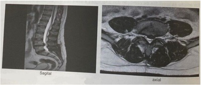
A Hipoestesia na face posterior da coxa.
B Paresia da extensão do hálux.
C Pé caído.
D Hiporreflexia do aquileu.
Questão 341 · Faringite por Streptococcus pyogenes · Inf ectologia · Faringites Bacterianas · 4000182164Mulher, 18 anos, procura atendimento médico devido a febre e dor de garganta há 2 dias. Teve reação ana lática aos 10 anos após uso de penicilina benzatina. Exame físico: edema e exsudato puntiforme nas tonsilas palatinas, associados a petéquias no palato. Dois linfonodos palpáveis e dolorosos em cadeia submandibular à direita com cerca de 2 cm de diâmetro. Qual é o tratamento mais adequado?
A Cefuroxima.
B Ampicilina.
C Azitromicina.
D Amoxicilina.
Questão 342 · Of talmologia · 4000182162Homem, 74 anos, relata que há dois anos vem notando faixa esbranquiçada no olho. Ao exame: presença de arco opaco esbranquiçado na junção esclerocorneal, na periferia da íris bilateral (Figura). Qual a conduta mais adequada em relação à alteração ocular mostrada?
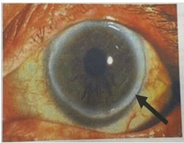
A Não prosseguir com investigação.
B Avaliação com lâmpada de fenda.
C Realização de topografia corneana.
D Prescrição de lágrima artificial.
Questão 343 · Lombalgia · 4000182141Paciente de 34 anos de idade, sexo masculino, trabalha como pedreiro, sem doenças prévias, não faz uso de medicamentos de rotina. Chega à unidade de saúde da família com queixa de dor lombar de forte intensidade há 21 dias. A dor surgiu após esforço físico intenso em seu serviço. A dor está incomodando-o muito, impedindo de trabalhar normalmente nos últimos dias. Está fazendo uso de analgésicos comuns e anti- inflamatórios orais diariamente desde o início do quadro, com pouca melhora. A dor piora aos esforços e melhora com o repouso. A dor não irradia para os membros inferiores, nega perda de força ou formigamentos nos MMII, nega febre, dores noturnas. Sem queixas urinárias, gastrintestinais. EF: realizado exame físico completo, tendo como alteração apenas a dor lombar à mobilidade da coluna, dores à palpação da musculatura paravertebral lombar, sem dé cit neurológico nos membros, sem outras alterações dignas de nota. Qual a abordagem mais adequada para diagnóstico do paciente neste momento?
A Não há indicação de exames de imagem neste momento.
B Solicitar radiografia simples da coluna lombar.
C Solicitar tomografia computadorizada coluna lombar.
D Solicitar ressonância nuclear magnética da coluna lombar.
Questão 344 · Diagnóstico da Depressão · Depressão · 4000182136Mulher de 75 anos vem à consulta de saúde acompanhada da lha que refere que sua mãe está apresentando muitos esquecimentos, há aproximadamente 6 meses. Paciente é hipertensa, diabética e faz uso de losartana 50 mg 1 comprimido ao dia e glifage XR 500 mg 2 comprimidos ao dia. Paciente estudou até a 8° série do ensino médio. Ao exame clínico: PA: 120 x 80 mmHg, FC: 71 bpm, FR:16 ipm Peso: 60 Kg, Alt: 1.65 m, IMC: 22, saturação de O₂: 98% dextro: 110 mg/dl. Exames laboratoriais: vitamina B12: 400 (VR: 210-980 pg/ml), TSH: 2.80 (VR: 0.3-4.8), MEEM: 28 pontos. GDS (Escala de Depressão Geriátrica) 8. De acordo com o quadro descrito acima, qual o diagnóstico mais provável?
A Hipotireoidismo.
B Síndrome demencial.
C Transtorno depressivo.
D Hipovitaminose de B12.
Questão 345 · Síndrome Narcótica · Intoxicações Exógenas · 4000182112Um pré-escolar de 4 anos e 12 kg foi submetido a cirurgia abdominal de baixa complexidade com anestesia geral, sem intercorrências. Ao nal do procedimento, recebeu uma dose adicional endovenosa de fentanil e cetoprofeno para analgesia. Veio direto para enfermaria pediátrica, 1 hora após o nal da cirurgia. Após 30 minutos, você é chamado para avaliar a criança, pois a mãe diz que ela não acorda. Ao exame físico: corada, hidratada, acianótica, anictérica e afebril. Frequência cardíaca 110 bpm, frequência respiratória 10 irpm, pressão arterial 95 x 55 mmHg, saturação periférica de oxigênio 90% em ar ambiente. Ausculta respiratória mostra murmurio vesicular simétrico, sem ruídos adventícios. Ausculta cardíaca revela ritmo regular, duas bulhas normofonéticas, sem sopros, pulsos centrais e periféricos fortes, tempo de enchimento capilar 2 segundos. Abdome sem anormalidades. Pupilas mióticas e isocóricas. Com base no quadro clinico acima, qual o tratamento farmacológico imediato mais adequado para esta situação clínica?
A Haloperidol.
B Flumazenil.
C Glicose.
D Naloxona.
Questão 346 · Diagnóstico do Autismo · Transtorno do Espectro Autista TEA · 4000182109Uma criança de quatro anos com de ciência intelectual e diagnóstico de síndrome de Down é avaliada por atraso de falo. Apresenta dé cit de comunicação, socialização, estereotipias motoras e hipersensibilidade aos estímulos auditivos e táteis. Qual a provável comorbidade dessa criança?
A Transtorno do movimento estereotipado.
B Apraxia de fala na infância.
C Transtorno do espectro autista.
D Déficit de atenção e hiperatividade
Questão 347 · Outros tumores ósseos · Cirurgia · Diagnóstico dif erencial de tumores baseado na clínica · 4000181951O tumor ósseo maligno primário mais comum da mão é:
A rabdossarcoma.
B osteosarcoma.
C condrossarcoma.
D sarcoma osteogenico.
E sarcoma de Ewing.
Questão 348 · Desenvolvimento Ortopédico da Criança · Cirurgia · 4000181944O dedo em gatilho congênito é mais comum no dedo :
A Polegar.
B Indicador.
C Médio.
D Anular
E Minimo.
Questão 349 · Sindactilia · Cirurgia · 4000181941No tratamento cirúrgico da sindactilia simples e completa entre os dedos médio e anular , a idade ideal para cirurgia da criança deve ser preferencialmente em torno de
A 6 meses de vida.
B 6 a 12 meses de vida.
C 12 a 18 meses de vida.
D 18 a 24 meses de vida.
E 48 a 60 meses de vida.
Questão 350 · Desenvolvimento Ortopédico da Criança · Cirurgia · 4000181940Na mão torta radial , o radio hipoplásico corresponde à classificação de BAYNE do tipo :
A I.
B II.
C III.
D IV.
E V.
Questão 351 · Lesões tendíneas da mão · Cirurgia · 4000181939A tendinite calcárea do punho acomente com maior frequência o tendão do :
A Braquiorradial.
B Flexor radial do punho.
C Flexores superficiais dos dedos.
D Extensor ulnar do carpo.
E Flexor ulnar do carpo.
Questão 352 · Lesões tendíneas da mão · Cirurgia · 4000181938Na cirurgia da oponentoplastia, a técnica cirúrgica que utiliza o abdutor do do dedo mínimo é descrita por :
A BURKHALTER.
B CAMITZ.
C BUNNELL.
D HUBER.
E OMER.
Questão 353 · Epidemiologia e f isiopatologia · Cirurgia · 4000181937O sítio de compressão mais comum na síndrome do desfiladeiro torácico é o :
A Espaço subcoracoide.
B Espaço costoclavicular.
C Trígono dos escalenos.
D Espaço peitoral menor.
E Espaço peitoral maior.
Questão 354 · Lesões tendíneas da mão · Cirurgia · 4000181936O sinal radiográfico da imagem da gaivota está presente na lesão completa do ligamento :
A Radioescafocapitato.
B Semilunopiramidal.
C Radio-ulnar.
D Escafo-semilunar.
E Ulnocarpal.
Questão 355 · Lesões tendíneas da mão · Síndromes Compressivas dos Membros Superiores · Cirurgia · 4000181935Ao exame físico de paciente com sinal de EGAWA e DUCHENNE positivos sem alteração sensitiva, o sítio de compressão do nervo acometido é no canal de :
A Zona I do canal de GUYON.
B Zona II do canal de GUYON.
C Zona III do canal de GUYON.
D Zona IV do canal de GUYON.
E No túnel cubital.
Questão 356 · Síndromes Compressivas dos Membros Superiores · Cirurgia · 4000181934O ligamento de STRUTHERS causa compressão do nervo :
A Ulnar.
B Radial.
C Interósseo anterior.
D Mediano.
E Interósseo posterior.
Questão 357 · Cirurgia · Fraturas e luxações do escaf oide e do carpo · 4000181933São fatores de risco para a doença de KIENBOCK a forma do semilunar classificada como :
A I de ZAPICO e I de VIEGAS.
B I de ZAPICO e II de VIEGAS.
C II de ZAPICO e I de VIEGAS.
D II de ZAPICO e II de VIEGAS.
E III de ZAPICO e III de VIEGAS.
Questão 358 · Semiologia da mão · 4000181932O exame de imagem “padrão ouro” para controle de consolidação óssea no pós operatório da pseudartrose do escafoide é
A Radiografias seriadas.
B Radiografias sob estresse.
C Tomografia computadorizada.
D Ressonância magnética.
E Artro-ressonancia magnética.
Questão 359 · Patologias da Mão · Cirurgia · 4000181931A técnica cirurgica para o tratamento da necrose do polo proximal associada à pseudartrose do escafóide que utiliza o pedículo baseado na capsula dorsal é descrita por:
A Matholin
B Zaidenberg
C Higgins.
D Sotereanos.
E Berger.
Questão 360 · Fraturas e f raturasluxações dos ossos do antebraço · Fratura do rádio distal · 4000181930Na fratura desviada marginal volar do radio , o ângulo “tear drop” encontra-se com medição de :
A 30 graus.
B 50 graus.
C 60 graus.
D 70 graus.
E 80 graus.
Questão 361 · Fraturas e f raturasluxações dos ossos do antebraço · 4000181929A lesão aguda parcial da borda ulnar justa estiloide da brocartilagem triangular é classificada por PALMER como classe :
A 1A.
B 1B.
C 2A.
D 2B.
E 1C.
Questão 362 · Anatomia óssea · Músculos e Inervação · 4000181928Em relação à biomecânica do punho e da articulação radio-ulnar distal, um encurtamento de ulna de 2,5 mm provoca uma transmissão de carga de força transmitida para ulna em torno de :
A 4%.
B 8%.
C 12%.
D 16%.
E 20%.
Questão 363 · Fraturas e luxações do escaf oide e do carpo · 4000181927Em relação aos estágios da Instabilidade escafossemilunar descrita por GARGIAELIAS , a dissociação escafossemilunar com subluxação rotatória do escafóide redutível e cartilagem integra corresponde ao estágio :
A II.
B III.
C IV.
D V.
E VI
Questão 364 · Anatomia óssea · Fraturas e luxações do escaf oide e do carpo · Músculos e Inervação · 4000181926Em relação aos estágios de MAYFIELD na instabilidade carpal . a presença da deformidade em VISI corresponde ao estágio :
A 0.
B I.
C II.
D III.
E IV.
Questão 365 · Anatomia óssea · Fraturas e luxações do escaf oide e do carpo · 4000181925Em relação ao pós-operatório da artrodese escafocapitato, é correto afirmar :
A o arco de movimento é de aproximadamente 30% do lado oposto.
B a força de preensão é de aproximadamente 50% do lado oposto.
C a taxa de não-consolidação é aproximadamente 40% do lado oposto.
D Liberação para prática esportiva em até 2 meses.
E o arco de movimento é de aproximadamente 60% do lado oposto
Questão 366 · Fraturas e luxações do escaf oide e do carpo · 4000181924A técnica de artroplastia trapeziometacarpiana do polegar que reconstrói o ligamento obliquo anterior e intermetacarpiano utilizando o abdutor longo do polegar é descrita por:
A GERVIS.
B KUHNS.
C BURTON E PELLEGRINI.
D ZANCOLLI.
E THOMPSON.
Questão 367 · Fratura das f alanges · 4000181923A estrutura interposta no foco da fratura de SEYMOUR na criança é :
A placa volar.
B tendão extensor.
C tendão flexor.
D matriz germinativa.
E placa ungueal.
Questão 368 · Patologias da Mão · 4000181922Em relação ao tratamento cirúrgico da contratura em exão da articulação interfalangiana proximal, as estruturas que devem ser liberadas são :
A Ligamento checkrein e ligamento colateral acessório
B Capsula articular, ligamento checkrein e colateral acessório.
C Capsula articular , ligamento colateral e colateral acessório.
D Ligamento colateral e colateral acessorio.
E Capsula articular, ligamento checkrein e ligamento colatera
Questão 369 · Lesões tendíneas da mão · 4000181920A complicação mais comum do reparo cirúrgico da lesão aguda do ligamento colateral ulnar do polegar é :
A neuropraxia do ramo sensitivo radial.
B rigidez articular.
C Instabilidade.
D dedo em gatilho.
E ruptura precoce do reparo cirúrgico.
Questão 370 · Lesões tendíneas da mão · 4000181919A técnica de escolha para a sutura tendinosa exora quando os cotos da lesão apresentam diâmetro diferente é :
A BUNNELL.
B KESSLER MODIFICADO.
C TAJIMA.
D KLEINERT.
E PULVERTAFT
Questão 371 · Fratura dos metacarpos · Cirurgia · 4000181918A grande maioria das fraturas da cabeça do metacarpiano na criança encontramse descritas como Salter- Harris do tipo :
A I.
B II.
C III.
D IV.
E V.
Questão 372 · Lesões tendíneas da mão · 4000181917Após a ruptura de uma tenorra a primária de exor , o intervalo de tempo máximo ideal para realizar um novo reparo é em até :
A 1 semana.
B 2 semanas.
C 3 semanas.
D 4 semanas.
E 6 semanas.
Questão 373 · Lesões tendíneas da mão · 4000181916O intervalo mínimo de tempo indicado para se realizar uma tenólise dos tendões exores após tenorra a é de :
A 3 meses.
B 4 meses.
C 7 meses.
D 9 meses.
E 12 meses.
Questão 374 · Testes Especiais · 4000181915O teste de BOYES é realizado para a avaliação da deformidade em :
A botoeira aguda.
B pescoço de cisne aguda.
C botoeira crônica.
D pescoço de cisne crônica.
E martelo articular.
Questão 375 · Preceitos Básicos em Técnica Operatória · Fraturas e f raturasluxações dos ossos do antebraço · 4000181914Cirurgia A técnica cirúrgica preferencial de DOYLE para reparo do mecanismo extensor é realizada preferencialmente na zona :
A I.
B II.
C III.
D IV.
E V.
Questão 376 · Epidemiologia e f isiopatologia · 4000181909A patologia abaixo que não é um fator de risco para o desenvolvimento da enfermidade de DUPUYTREN é :
A Diabetes.
B Hiperlipidemia.
C Alcoolismo.
D Psoríase.
E Artrite reumatóide.
Questão 377 · Músculos e Inervação · 4000181908Em relação à anatomia vascular do punho, a artéria que percorre seu trajeto adjacente ao nervo interósseo posterior corresponde ao ramo da artéria :
A dorsal metacárpica do polegar.
B do segundo compartimento extensor
C do terceiro compartimento extensor.
D do quarto compartimento extensor.
E do quinto compartimento extensor.
Questão 378 · Desenvolvimento Ortopédico da Criança · Conceitos do Desenvolvimento Ortopédico Pediátrico · 4000181907A camptodactilia é mais frequentemente encontrada associada à :
A Paralisia cerebral.
B Artrogripose.
C Mielomeningocele.
D Mão torta ulnar.
E Paralisia obstétrica.
Questão 379 · Manif estações articulares · Lesões tendíneas da mão · 4000181905Na artrodese total do punho, em paciente portador de artrite reumatóide com quadro de translocação ulnar do punho , para facilitar o realinhamento cirúrgico do punho está indicada a associação com :
A a carpectomia proximal.
B a técnica de ATLAS.
C a técnica de DARRACH.
D a estiloidectomia radial.
E a transposição tendinosa do flexor radial.
Questão 380 · Abscesso Periamigdaliano · Pediatria · 4000181893Paula tem quatro anos e, há três meses, iniciou quadros recorrentes de febre de 40oC, odinofagia, linfonodomegalia cervical dolorosa e dor abdominal. Os episódios costumam durar cinco dias e recorrem a cada duas semanas com resolução espontânea. Nos períodos de remissão, Paula ca totalmente assintomática. A mãe de Paula diz que os antibióticos não encurtam o período de duração da doença, mas que decidiu por conta própria, dar corticoide para a lha e que observou melhora quase imediata. O diagnóstico mais provável é:
A Febre Familiar do Mediterrâneo.
B Sarcoidose.
C Tuberculose.
D Doença de Kikuchi.
E PFAPA.
Revisar: possível letra faltando em enunciado
Questão 381 · Anatomia muscular e inervação · Epidemiologia e f isiopatologia · 4000181871A lesão do manguito rotador é umas das principais causas de dor no ombro. Os músculos que formam este grupo são:
A Infraespinhal, redondo maior e supraescapular.
B Supraespinhal, infraespinhal, subescapular e redondo menor.
C Supraespinhal, redondo menor, redondo maior e deltoide.
D Deltoide, bíceps e supraespinhal.
E Supraespinhal, infraepsinhal, subescapular e redondo maior.
Questão 382 · Intoxicações Exógenas · 4000181857A “crise dos opioides”, muito citada na literatura estadunidense, decorre do uso abusivo e indevido desta classe de drogas. Com casos de intoxicação cada vez mais frequentes, cabe ao pro ssional de saúde estar apto a reconhecer as manifestações inerentes ao quadro. O melhor preditor da toxicidade por opioides é:
A Miose.
B Frequência respiratória < 12irpm.
C Confusão mental.
D Frequência cardíaca < 60bpm.
E Peristalse débil.
Questão 383 · Transtornos Conversivos · 4000181823Trata-se de um transtorno constituído por sintomas que afetam funções motoras/sensoriais voluntárias, sugerindo etiologia neurológica, embora seja causado por fatores psicológicos. Costuma ser precedido por forte estresse emocional, apesar de não haver intencionalidade na produção de sintomas. Historicamente, já foi chamado de “Histeria”, termo em desuso hoje. A nomenclatura atual desse transtorno é
A Transtorno de Sintomas Somáticos.
B Transtorno Hipocondríaco.
C Transtorno Factício.
D Transtorno Conversivo.
Questão 384 · Subtipos da Depressão · 4000181822Leia o caso clínico. Paciente masculino, adulto jovem, sem antecedentes patológicos ou psiquiátricos prévios, apresentando, há vinte dias, sentimento de vazio emocional a maior parte do tempo, anedonia, hipersonia, sensação de fraqueza muscular e aumento do apetite. Relata estar bastante sensível a frustrações e eventos cotidianos interpretados como adversos, embora note amenização dos sintomas quando recebe notícias positivas. O diagnóstico mais provável é o de
A Transtorno Depressivo Maior com características mistas.
B Transtorno Depressivo Maior com características atípicas.
C Transtorno Depressivo Maior com características melancólicas.
D Transtorno de Ajustamento com humor deprimido.
Questão 385 · Etiologia e Epidemiologia · 4000181814Qual é o tipo de rinite mais comum em crianças com idade pré-escolar?
A Infecciosa.
B Idiopática.
C Alérgica.
D Não infecciosa e não alérgica.
Questão 386 · Diagnóstico · 4000181806A sinusite pode ser confundida com asma em crianças e em adolescentes. Para se fazer o diagnóstico diferencial entre elas, é de suma importância que se faça
A tomografia computadorizada de tórax, de alta resolução.
B tomografia computadorizada de seios da face.
C radiografia de seios da face.
D ressonância nuclear magnética de tórax.
Questão 387 · Osteomielite · 4000181799Em um caso de osteomielite hematogênica ocorrendo no fêmur distal de uma criança de 3 anos, a infecção teria início mais provável na
A fise.
B epífise.
C diáfise.
D metáfise.
Questão 388 · Fraturas supracondilianas do úmero · 4000181764As fraturas supracondilares do úmero são mais frequentes no sexo masculino, mais comuns no lado esquerdo, e ocorrem, geralmente,
A na primeira década de vida.
B em pessoas com maturidade esquelética.
C nos idosos, com osteoporose estabelecida.
D após acidentes automotores.
Questão 389 · Coluna Pediátrica · 4000181763As malformações da coluna cervical podem ocorrer de forma isolada ou associada a outras malformações e costumam ser encontradas na
A espondilolistese da coluna lombar.
B comunicação interatrial.
C síndrome de Klippel-Feil.
D fibrodisplasia ossificante progressiva.
Questão 390 · Psicof ármacos nas Emergências Psiquiátricas · Centro de Atenção Psicossocial CAPS · 4000181748Mulher de 30 anos apresenta crise de agitação intensa, nervosismo, choro e fala incoerente há 2 horas. Faz consultas com psicólogo por sintomas depressivos e ansiosos, há 2 meses. É levada à UBS por vizinha que a encontrou quebrando objetos dentro de casa e sabe que ela toma remédio para depressão. Paciente encontra-se agitada e ao entrar na sala de acolhimento começou a gritar e se arranhar e a falar de modo desconexo. Em relação à rede de atenção à saúde, entre as seguintes condutas, a melhor para essa paciente é
A aguardar familiares para obter anamnese qualificada.
B chamar o Serviço de Atendimento Móvel de Urgência (SAMU) para encaminhá-la ao pronto- socorro.
C entrar em contato urgente com psiquiatra matriciado da UBS.
D encaminhá-la ao Centro de Atenção Psicossocial (CAPS) junto com um responsável.
Questão 391 · Transtornos Somáticos · Método Clínico Centrado na Pessoa · Psiquiatria · 4000181745Fábio, 19 anos, homem transgênero, negro, estudante cotista de administração em uma faculdade particular. Acompanhado pela mãe, vai à consulta em UBS com Médico de Família e Comunidade (MFC) por queixa de dor abdominal intensa em crises, há 6 meses. Procurou a emergência 3 vezes neste período e foi medicado com soro e analgésicos endovenosos com melhora parcial dos sintomas. Refere dor em pontada em regiões diferentes do abdome, acompanhadas de náuseas. Nega febre, vômitos, alterações urinárias. Realizou exames de sangue, ultrassom abdominal e exames de urina sem alterações. Está muito preocupado, com medo de ter alguma doença grave. Sente-se culpado porque sua mãe está preocupada e perde o sono por isso. Não tem histórico pessoal de doenças, seus pais são vivos e saudáveis e não tem irmãos. O médico de família investiga alimentação, hábitos, prática de exercícios físicos e percebe que desde que começou a faculdade, há 9 meses, parou de ter hábitos saudáveis, embora praticasse corrida e futebol antes. O paciente considera que deveria estar feliz na faculdade, que era um sonho realizado poder estudar, mas tem se sentido rejeitado pelos colegas e não sabe se vai conseguir continuar, refere tristeza maior parte do tempo. Exame físico normal. Entre os seguintes planos de tratamento e seguimento o melhor a ser oferecido pelo MFC é:
A Explicar ao paciente que seus sintomas são característicos de transtorno mental causado pelas alterações em sua vida. Prescrever antidepressivo e encaminhar o paciente para seguimento com o psiquiatra da UBS.
B Utilizar o método clínico centrado na pessoa para compreender os sentimentos relacionados ao sofrimento do paciente e prejuízo em suas funções. Prescrever analgésico. Seguir com equipe multiprofissional na UBS.
C Repetir os exames laboratoriais e solicitar novos exames de imagem caso aparecerem sinais de alerta com o objetivo de avaliar surgimento de lesões e para tranquilizar o paciente. Seguir com equipe multiprofissional na UBS.
D Explicar para o paciente e à sua mãe que a ausência de alterações no exame físico e nos exames suplementares indicam ausência de doenças físicas. Prescrever analgésicos e encaminhar para avaliação com psiquiatra.
Questão 392 · Apresentação Clínica · 4000181710Na consulta de rotina de um lactente de 40 dias de vida, o médico nota que a criança apresenta estridor inspiratório ao choro. A mãe realizou adequadamente o seguimento pré-natal e não apresentou intercorrências relevantes. Nasceu a termo, de parto vaginal, Boletim de Apgar 9-10, pesando 3.100 g e medindo 51 cm; evoluiu sem intercorrências e recebeu alta da maternidade no 2o dia de vida. Atualmente está em aleitamento materno exclusivo, com peso atual de 4.100 g; não apresenta queixas e o restante do exame clínico está normal. Dentre as hipóteses diagnósticas seguintes, a mais provável neste caso é
A estenose subglótica.
B laringomalácia.
C paralisia de corda vocal.
D hemangioma subglótico.
Questão 393 · Abscesso Cervical · Cirurgia · 4000181700Homem de 54 anos procura o pronto-socorro por dor no pescoço há 6 dias, associada a febre diária e prostração. Tem antecedentes de etilismo, 1/2 garrafa de destilado por dia, e de tabagismo, 1 maço/dia há muitos anos. Nega outras morbidades. Ao exame físico, nota-se abaulamento em zona II do pescoço, à direita, com aumento de temperatura, hiperemia e muita dor à palpação. A tomogra a evidencia coleção de cerca de 50 mL de líquido espesso em região medial ao músculo esternocleidomastoideo, anteriormente aos vasos cervicais; tem en sema de subcutâneo associado. Pulso: 110 bpm, PA: 110 × 80 mmHg. Além de precisar ser internado e receber antibioticoterapia intravenosa, este paciente deve ser tratado com drenagem
A e desbridamento amplo em centro cirúrgico, por cervicotomia direita; na sequência, fazer mediastinoscopia.
B e desbridamento amplo em centro cirúrgico, por cervicotomia direita e avaliação odontológica.
C guiada por método de imagem (radiologia intervencionista), seguida por mediastinoscopia.
D imediata, aberta, à beira do leito, com revisão posterior em centro cirúrgico.
Questão 394 · Diagnóstico · 4000181689Homem, 62 anos de idade, é levado a um pronto atendimento com queixa de tontura e sensação de que o ambiente está girando. Refere ter tido náusea e nega traumatismo cranioencefálico. A manobra clínica que deve ser realizada para confirmação da principal hipótese diagnóstica para este paciente, dentre as abaixo, é manobra de
A DIX-Hallpike sem componente rotatório do nistagmo.
B DIX-Hallpike com componente rotatório do nistagmo batendo para a orelha de baixo.
C Epley sem componente rotatório do nistagmo.
D Epley com componente rotatório do nistagmo batendo para a orelha de baixo.
Questão 395 · Intoxicações Exógenas · 4000181688Uma mulher de 23 anos de idade foi encaminhada para a UTI, após tentativa de suicídio, com quadro de agitação, delirium, em midríase, hipertérmica, taquicárdica, hipertensa, pele seca, quente e avermelhada. As mucosas estão secas. A causa mais provável pela sintomatologia de intoxicação exógena da paciente, dentre as substâncias abaixo, é
A tramadol.
B diazepam.
C aldicarb (”chumbinho”).
D imipramina.
Questão 396 · Sistema de Inf ormação de Agravos de Notif icação SINAN · 4000181677Intoxicação por Carbamatos e Organof osf orados Paulo, 41 anos, é trabalhador rural e procura atendimento com queixa de sudorese, sialorreia e vômitos. Relata ter trabalhado aplicando Folidol na sua lavoura. Ao exame, apresenta miose e confusão mental. Qual é o provável diagnóstico e o órgão a ser notificado?
A Saturnismo / SINAN.
B Intoxicação por organofosforado / SINASC.
C Intoxicação por organofosforado / SINAN.
D Intoxicação por cromo / SINASC.
E Saturnismo / SISVAN.
Questão 397 · Intoxicação por Metais Pesados · 4000181673L.B.C., 53 anos, sexo feminino, casada, trabalha há anos em fábrica de lâmpadas uorescentes, procura UPA com queixa de fadiga, perda de peso, perda de apetite, sialorreia, afrouxamento dos dentes, irritabilidade e tremores. Diante do exposto, pode-se afirmar que se trata de intoxicação exógena por
A cromo.
B chumbo.
C benzeno.
D solventes orgânicos.
E mercúrio.
Questão 398 · Diagnóstico do TDAH · Transtorno do Déf icit de Atenção e Hiperatividade TDAH · 4000181667Os pais levam Miguel de 8 anos para consulta, pois a diretora da escola disse que ele é desatento e tem dificuldade em aprender. A conduta inicial do médico da Atenção Primária nessa situação deve ser
A encaminhar Miguel ao neuropediatra.
B avaliar os ambientes familiar e escolar da criança.
C solicitar avaliação adicional tanto auditiva como visual.
D realizar testes de aptidão intelectual.
E solicitar eletroencefalograma.
Questão 399 · Psicof armacologia · Estabilizadores do Humor · 4000181663Dona Elisa, 50 anos, portadora de transtorno bipolar, retornou para consulta na UBS com exames laboratoriais relacionados à tireoide alterados após iniciar uso de medicamento. Nesse caso, o médico da família deve então reavaliar o uso de
A carbonato de lítio.
B carbamazepina.
C divalproato de sódio.
D fumarato de quetiapina.
E haloperidol.
Questão 400 · Linf omas · Retinoblastoma · Classif icação dos Tumores do Sistema Nervoso Central · 4000181639Sobre a predominância das neoplasias em pediatria de acordo com a idade e o sítio primário, assinale a alternativa correta.
A Entre os linfomas, tanto o de Hodgkin quanto o de não Hodgkin são bastante predominantes em menores de 1 ano.
B Entre as leucemias, a mieloide crônica juvenil é a mais predominante na adolescência e é rara em menores de 3 anos.
C Das neoplasias de sistema nervoso central, o astrocitoma cerebelar está entre as mais predominantes em maiores de 3 anos.
D Das neoplasias com sítio primário em cabeça e pescoço, as mais predominantes em todas as faixas etárias são o sarcoma de partes moles e o linfoma.
E O neuroblastoma e o tumor de Wilms são as neoplasias de sítio abdominal mais predominantes em adolescentes.
Questão 401 · Cataratas Secundárias · Pediatria · 4000181635Das opções a seguir, qual cita uma das causas metabólicas mais frequentes de catarata na população pediátrica?
A Hipercalcemia.
B Hipoandrogenismo.
C Hipertireoidismo.
D Hiponatremia.
E Hipoglicemia.
Questão 402 · Etiologia e Epidemiologia · 4000181632Assinale a alternativa INCORRETA sobre otite média aguda (OMA).
A O tabagismo passivo é um fator de risco de reconhecida importância, e o aleitamento materno é um fator de proteção.
B Síndrome de Down é um fator de proteção pelas diferenças de anatomia das vias aéreas superiores.
C As creches e os berçários representam um fator de risco considerável no desenvolvimento da OMA.
D A ocorrência do primeiro episódio antes dos 6 meses é um fator de risco importante para a recorrência das OMAs.
E A tuba auditiva ventila a orelha média, sua luz é virtual e, na criança, é mais curta e mais horizontalizada, o que facilita a progressão de microrganismos da rinofaringe para a orelha média.
Questão 403 · Transtorno de Compulsão Alimentar TCA · Transtorno Alimentares · 4000181631Os pais de uma adolescente relatam ao seu pediatra, na ausência da paciente, que estão percebendo que ela tem mudado o comportamento alimentar. Viram, por diversas vezes, que estava comendo escondida, muito rapidamente e em grandes quantidades. Referem que ela tem vergonha quando é vista nessa situação, que demonstra tristeza após alimentarse e que, muito frequentemente, come até se sentir desconfortável. Das seguintes condições, qual é a mais provável, baseando-se apenas no relato dos pais?
A Anorexia nervosa.
B Bulimia.
C Transtorno alimentar restritivo evitativo.
D Compulsão alimentar.
E Ortorexia.
Questão 404 · Fratura exposta · 4000181584Um paciente, 20 anos, teve uma fratura exposta de tíbia grau I de Gustillo-Anderson. Qual seria a forma mais correta de realizar o primeiro atendimento hospitalar desse paciente?
A Profilaxia com Ceftriaxona e vacina antitetânica seguida de lavagem e desbridamento cirúrgico.
B Iniciar antibiótico de forma terapêutica com Ciprofloxacino, realizar vacina antirrábica e seguir com lavagem e redução local da fratura.
C Redução da fratura após analgesia, lavagem e antibioticoterapia profilática com Vancomicina durante a indução anestésica.
D Profilaxia com Cefalotina e vacina antitetânica seguida de lavagem e desbridamento cirúrgico / redução da fratura.
E Analgesia, profilaxia com vacina antitetânica e Ciprofloxacino e redução imediata da fratura seguidas de lavagem e desbridamento cirúrgico.
Questão 405 · Transtornos Somáticos · Transtorno dos Sintomas Somáticos · 4000181571A respeito de sintomas clinicamente inexplicados, podemos afirmar que I. as influências genéticas são consideradas irrelevantes como causas desse quadro, diferentemente de experiências traumáticas. II. como regra é indicado que se solicitem exames complementares com o objetivo de tranquilizar o paciente. III. a maioria deles tem alto risco de croni cação, sendo boa prática que se busque precocemente avaliação psiquiátrica. IV. esses sintomas se perpetuam por processos de sensibilização, foco seletivo de atenção no corpo, ideias sobre causas dos sintomas e mudanças de comportamento. Assinale a alternativa com as assertivas corretas
A I e II apenas.
B I e IV apenas.
C II e III apenas.
D I, II e III apenas.
E I, II, III e IV.
Questão 406 · Tratamento · 4000181491Para o diagnóstico de otite média aguda é necessário uma história de início agudo de sinais e sintomas, presença de efusão na orelha média, com sinais e sintomas de in amação da orelha média. Sobre o tratamento desta situação, analise as assertivas abaixo. I. – Em crianças com idade acima de 24 meses, sem sinais ou sintomas graves, pode-se seguramente acompanhar a evolução do paciente, sem utilizar antibióticos. II. – Em crianças entre 6 e 23 meses de idade com otite bilateral, sem sinais ou sintomas graves, a recomendação é iniciar tratamento com antibióticos. III. – Caso se decida iniciar tratamento com um antimicrobiano a recomendação é a amoxicilina sem clavulanato. Sobre esta situação selecione a opção correta.
A As afirmativas I e II são verdadeiras. A afirmativa III é falsa.
B As afirmativas I e III são verdadeiras. A afirmativa II é falsa.
C As afirmativas II e III são verdadeiras. A afirmativa I é falsa.
D As afirmativas I, II e III são verdadeiras.
E As afirmativas I, II e III são falsas.
Questão 407 · Ortopedia · Apresentação Clínica · 4000181489Os maus tratos de crianças é um problema disseminado em todo o mundo, com consequências sociais e de saúde física e mental a curto e longo prazo para a criança, a família e a sociedade em geral. Em relação ao abuso físico de crianças, analise as assertivas abaixo. I. – O trauma abdominal abusivo tem alta morbidade e geralmente acompanha-se de hematoma visível da parede abdominal. II. – Hematomas subdurais extensos sugerem fortemente um traumatismo craniano abusivo. III – Queimaduras com delineação clara entre a pele queimada e a saudável, com ausência de respingos, falam fortemente a favor de queimadura intencional. Sobre esta situação selecione a opção correta.
A As afirmativas I e II são verdadeiras. A afirmativa III é falsa.
B As afirmativas I e III são verdadeiras. A afirmativa II é falsa.
C As afirmativas II e III são verdadeiras. A afirmativa I é falsa.
D As afirmativas I, II e III são verdadeiras.
E As afirmativas I, II e III são falsas.
Questão 408 · Subtipos da Depressão · 4000181416AZN, 17 anos, G1P0A0, com consultas de pré-natal irregulares, comparece no segundo trimestre de gravidez ao ambulatório, referindo adinamia, insônia e irritabilidade. Sua acompanhante informa que ela apresenta, em casa, comportamento pessimista e choro fácil. Sobre depressão e ansiedade no ciclo gravídico puerperal, é correto afirmar:
A Idade materna precoce, quadro depressivo antenatal, tabagismo, uso de AINE no terceiro trimestre da gestação e histórico de abuso físico ou emocional estão associados a um maior número de casos de depressão pós-parto.
B Pacientes que apresentaram depressão puerperal em gestação prévia, e encontram-se com “blues puerperal” nessa gravidez, apresentam risco aumentado de evoluir para depressão grave, podendo, inclusive, incorrerem na prática de suicídio e infanticídio
C Os transtornos de ansiedade são três vezes mais frequentes em mulheres grávidas em relação às não grávidas, e estão associados a uma alta taxa de abortamentos provocados, quando seu início ocorre antes da décima segunda semana de gestação.
D A presença de distúrbios do humor, no ciclo gravídico puerperal, é determinada pelas alterações hormonais próprias da gestação. Desta forma, não devem ser utilizadas terapias comportamentais ou medicamentosas, salvo em casos de ideação suicida.
Questão 409 · Introdução e Conceitos Fundamentais · 4000181406Durante atendimento médico em demanda programada para pessoas que desejam cessar o tabagismo, você atende Paulo, de 40 anos. Em sua abordagem baseada na Entrevista Motivacional, você identi ca que Paulo se encontra no estágio da Preparação. Assinale a alternativa com a intervenção adequada.
A Ajudar a perceber os gatilhos para prevenir recaídas.
B Aumentar a percepção sobre riscos de manter o comportamento atual.
C Tirar dúvidas e ajudar na escolha de melhor estratégia em busca da mudança.
D Desfazer a ambivalência evocando riscos de não mudar e elencando motivos para mudar.
Revisar: possível letra faltando em enunciado
Questão 410 · Antidepressivos · 4000181405Seu Edinaílson, de 60 anos, é trazido para consulta por seus dois lhos: Edberto e Ednardo. Ele vem em cadeira de rodas, mas está com punhos e tornozelos contidos. Segue o relato dos lhos - Papai sempre foi um mecânico de referência aqui no bairro, mas tem dois anos que as coisas desandaram. A gente foi vendo ele car cada vez mais magro e não entendia o que estava acontecendo. Depois, o salário começou a diminuir, mas quando a gente perguntava, ele cava muito irritado. Levamos numa clínica popular, onde ele fez uma bateria de exames para diabetes, pressão, hepatite e até sí lis e HIV, mas nunca deu nada. Ele começou a perder o prazo dos serviços e começou a fazer os serviços pela metade, mas o pior foi que ele começou a destratar todo mundo. Ele sempre foi uma pessoa calma, mas começou a falar palavrão e querer bater nos outros. A gente só foi saber disso depois de um ano, porque ele chegou em casa machucado porque tinha se envolvido em briga. A gente foi na o cina e o dono falou que ele não tinha mais condições de trabalhar. Ele disse que papai começou a urinar no chão do banheiro, que não comia mais e que não se vestia mais direito. Levamos ele para cuidar em casa, mas ele estava muito teimoso e briguento. Não queria comer, não queria tomar banho e não queria se vestir. Estamos levando do jeito que dá, mas quando ele começou a se urinar e se sujar, a gente viu que precisava vir pedir ajuda de novo. Ele não está mais sabendo mexer em dinheiro, não toma mais banho sem ajuda e agora começou a engasgar com a comida. Ele consegue andar e tem força, mas a gente teve que amarrar ele nessa cadeira, porque ele ca querendo pegar nas mulheres, é horrível. Ele lembra da gente, lembra da nossa mãe, lembra dos irmãos, mas a gente não reconhece mais ele. Os lhos trouxeram exames laboratoriais recentes. Não havia alteração endócrino-metabólica significativa, nem hidroeletrolítica ou autoimune. Os exames de rastreamento de ISTs (HIV, sí lis e hepatites) também estavam sem alterações significativas. Ao se aproximar para realizar o exame físico de Seu Edinaílson, ele se mostrava calmo, mas pouco cooperativo. Ele soube dizer o nome completo e reconheceu os lhos. Estava desorientado em espaço. O exame físico não revelou alterações clínicas significantes. O manejo farmacológico de sintomas neurocognitivos e comportamentais nas síndromes demenciais se dá geralmente com antidepressivos e antipsicóticos. No entanto, é preciso atenção ao uso de psicofármacos em idosos devido a potenciais efeitos adversos. Considerando o quadro clínico de Seu Edinaílson, assinale a alternativa que traz uma opção de tratamento antidepressivo adequado em idosos.
A Diazepam.
B Trazodona.
C Amitriptilina.
D Tranilcipromina.
Revisar: possível letra faltando em enunciado
Questão 411 · Dependência Química · 4000181381Os pais de um adolescente de 13 anos de idade estão preocupados com a possibilidade de seu lho ter a oportunidade de consumir cigarros e álcool precocemente. Assinale a alternativa em relação a esse tema.
A Dificuldades para resolver tarefas, falta de afeto, depressão, desempenho escolar fraco são fatores que não alcançam significância para risco de uso de tabaco.
B As crianças cujos pais mantêm o ambiente de casa livre do tabaco são menos prováveis de se tornarem fumantes, independentemente se o pai ou a mãe é fumante
C Não faz sentido se preocupar com os amigos do filho que fumam pois seu filho não tem maior probabilidade de sofrer essa influência e iniciar o consumo de cigarros nos anos seguintes.
D Resultados de programas de alta qualidade com duração média de 12 meses de acompanhamento, mostraram que não houve aumento de não fumantes nos grupos de intervenção comparados aos de controles.
Questão 412 · Pediatria · Complicações · 4000181373Adolescente, 12 anos, iniciou quadro de tosse produtiva e descarga nasal amarelada há 2 semanas, evoluindo há 24 horas com febre, cefaleia intensa, vômitos, proptose, dor e edema periorbitário à direita, associado a oftalmoparesia ipsilateral. Qual é a principal hipótese diagnóstica?
A Meningite.
B Pseudotumor cerebral.
C Leucemia mieloide aguda.
D Trombose de seio cavernoso.
Questão 413 · Abstinência de Álcool · 4000181354Paciente masculino, 45 anos, é trazido por familiares para serviço de Emergência apresentando desorientação temporal e espacial. Refere não ter se alimentado hoje devido a náusea, associada a cefaleia de intensidade moderada. Irmã informa que o paciente é alcoolista, ingere aproximadamente um litro de aguardente por dia há alguns anos, mas que parou de beber há dois dias. Também iniciou com sintomas persecutórios, nas últimas horas, quando cou repetindo que alguém queria invadir sua casa para lhe fazer mal. Esses sintomas são inéditos. Ao exame: Pressão arterial: 170x100 mmHg; FC: 110 bpm; tremor grosseiro em mãos e sudorese, sem outras alterações. Ansioso, relata que vê formigas em seus braços, inclusive tenta matá-las, embora não haja formiga ou qualquer outra alteração em sua pele. Qual a conduta inicial a ser adotada?
A Solicitar tomografia de crânio sem contraste.
B Iniciar uso de anti-hipertensivo e manter observação até controle pressórico.
C Prescrever haloperidol para uso domiciliar e orientar retorno breve para reavaliação.
D Iniciar uso de benzodiazepínico e manter em observação até melhor controle dos sintomas.
Questão 414 · Of talmologia · Queimaduras Químicas Oculares · 4000181346Um funcionário da indústria petroquímica sofre acidente de trabalho com vazamento de alcali líquido em seu olho esquerdo. O funcionário é encaminhado para o médico plantonista da empresa referindo dor local intensa e borramento visual. Qual conduta determina melhor impacto no prognóstico dessa lesão?
A Colírio a base de corticoide e antibiótico.
B Lavagem exaustiva com soro fisiológico.
C Encaminhar a uma emergência oftalmológica.
D Pomada anti-inflamatória e uso de lente isolante.
Questão 415 · Depressão · Tabaco · 4000181311Uma mulher de 42 anos apresenta quadro de depressão associada à morte de sua lha de 15 anos há 1 ano. É acompanhada pela equipe de saúde de uma UBS, que identi ca vários aspectos de sua vida que interferem em sua saúde, entre os quais o fato de que ela é tabagista há 20 anos, tem di culdades nanceiras e tem um filho adolescente usuário de drogas. Em decorrência disso,
A é fundamental que a equipe de saúde invista na cessação tabágica da paciente estabelecendo metas por períodos definidos conjuntamente.
B a equipe de saúde deve analisar junto com a paciente suas necessidades, levando em conta sua história e condições de vida.
C provavelmente, a paciente se beneficiaria com a estratégia de criação de tarefas e cronogramas para o combate à depressão.
D a equipe de saúde deve estabelecer quais são as prioridades da paciente e cumprir as etapas necessárias para auxiliar a paciente.
E a equipe de saúde deve estabelecer o que está ao seu alcance, restringindo-se ao tratamento medicamentoso da depressão e à cessação tabágica.
Revisar: possível letra faltando em enunciado
Questão 416 · Pediatria · LaringiteLaringotraqueíte viral crupe · 4000181298Lactente do sexo masculino, com 18 meses de idade e história de tosse e coriza há 3 dias evoluindo com rouquidão e “barulho” ao respirar, segundo a mãe, quando chora e se agita. No exame físico encontra-se em bom estado geral, acianótico, sat O2 96% em ar ambiente, Glasgow 15, leve estridor inspiratório durante o repouso com evidente piora durante choro, MV + bilateral simétrico com alguns raros sibilos, leve retração subdiafragmática e restante do exame físico sem alterações. Diante do quadro, qual o diagnóstico mais provável?
A Epiglotite.
B Laringite viral.
C Bronquiolite.
D Laringite espasmódica.
E Laringomalácia associada à infecção viral de vias aéreas superiores.
Questão 417 · Pediatria · Mononucleose Inf ecciosa · 4000181294Um adolescente do sexo feminino, com 14 anos, apresenta- se com diminuição do apetite, aumento de linfonodos cervicais, febre baixa e astenia há 5 dias. Iniciou uso de amoxicilina por apresentar também dor de garganta e discreto exsudato em orofaringe, mas, após 72 horas de uso, não apresentou melhora clínica. Além do mal-estar, apresentou edema palpebral no início do quadro e erupções maculares em tórax e face de aparecimento há cerca de 2 dias. Assinale a melhor conduta.
A Trocar o antibiótico para cefuroxima por via oral.
B Suspender a amoxicilina e aplicar uma dose de ceftriaxone.
C Realizar uma dose de prednisolona por via oral, mantendo a amoxicilina.
D Suspender o antibiótico e administrar analgésicos sintomáticos e repouso.
E Manter a amoxicilina e realizar duas doses diárias de hidroxizina por 3 dias.
Questão 418 · Síndrome Anticolinérgica · 4000181260Jovem, 21 anos, é admitido no pronto atendimento com suspeita de intoxicação exógena por droga anticolinérgica. Acompanhantes que o trouxeram referem que estavam em uma festa tomando chá alucinógeno. Assinale a alternativa que apresenta o quadro clínico mais compatível.
A Midríase, hipertensão, taquicardia, hipertermia, hiperemia cutânea e mucosas secas.
B Midríase, hipertensão, bradicardia, hipotermia, hiperemia cutânea e hipersecreção.
C Miose, hipotensão, bradicardia, hipertermia, palidez cutânea e hipersecreção.
D Miose, hipertensão, taquicardia, hipertermia, hiperemia cutânea e hipersecreção.
E Midríase, hipotensão, bradicardia, hipotermia, palidez cutânea e mucosas secas.
Questão 419 · Síndrome Serotoninérgica · Antidepressivos · 4000181257Mulher, 54 anos, tem diagnóstico de depressão e faz uso de uoxetina 60 mg/dia há 15 anos. Após consulta com endocrinologista, é associada sibutramina. Uma semana após início do tratamento medicamentoso, cursa com quadro de dor abdominal difusa, inquietação, febre e hipertensão arterial. Considerando a associação medicamentosa, o diagnóstico mais provável é de
A pseudocrise hipertensiva.
B síndrome serotoninérgica.
C colecistite aguda.
D úlcera péptica.
E nefrolitíase obstrutiva.
Questão 420 · Apresentação Clínica · 4000181253Homem, 25 anos, previamente hígido, procura atendimento médico com queixa de febre baixa, tosse seca, mal-estar geral e mialgia há duas semanas. Notou aumento de linfonodos cervicais posteriores, com dor à palpação. Exame físico: regular estado geral, corado, hidratado, acianótico, T = 37,3 ºC, presença de esplenomegalia à palpação abdominal; auscultas pulmonar e cardíaca normais. Exames laboratoriais: hemograma com linfocitose acentuada, hemoglobina e plaquetas normais. A avaliação do esfregaço do sangue periférico revela grande quantidade de linfócitos atípicos. A principal hipótese diagnóstica é de
A linfoma de Hodgkin.
B leucemia linfoide aguda.
C infecção aguda pelo HIV.
D toxoplasmose.
E infecção pelo vírus Epstein Barr.
Questão 421 · Dor do Crescimento · Pediatria · 4000181166Criança masculina, 6 anos de idade, comparece em consulta de rotina com queixa de dor em região anterior de coxas durante a noite, há alguns meses, que necessita de analgésicos para melhora. Ao exame físico, encontra-se uma criança eutrófica que aponta a região anterior de coxa bilateral como local da dor. Considerando esse quadro, assinale a alternativa que apresenta, corretamente, o diagnóstico e a conduta para esse caso.
A Dor do crescimento e a conduta é observação clínica.
B Hipermobilidade articular e a conduta é manter analgésicos.
C Miopatia e a conduta é indicar fisioterapia.
D Miosite e a conduta é prescrever anti-inflamatório.
E Osteocondrite e a conduta é encaminhar para ortopedia.
Questão 422 · Antidepressivos · 4000181134A maior parte dos antidepressivos disponíveis têm em seu mecanismo de ação o bloqueio de recaptura de monoaminas (serotonina, noradrenalina e dopamina) ou ação em um ou mais dos receptores desses mesmos neurotransmissores. Recentemente, foi aprovada pelas agências regulatórias FDA e ANVISA uma medicação para o uso em quadros de depressão refratária que não tem esses mesmos mecanismos de ação e também mostrou ter efeito rápido (dentro de horas) ao contrário dos antidepressivos tradicionais. Assinale a alternativa que apresenta, corretamente, essa medicação.
A Agomelatina.
B Brexpiprazol.
C Escetamina.
D Mirtazapina.
E Vortioxetina.
Questão 423 · Intoxicação por Hipnossedativos · 4000181124A dexmedetomedina é um sedativo com ação analgésica, frequentemente utilizado no ambiente de terapia intensiva. Essa medicação possui um efeito alfa2 agonista e seu uso pode ser suspenso devido a efeitos colaterais. Assinale a alternativa que apresenta, corretamente, os efeitos colaterais mais frequentes associados ao uso da dexmedetomedina.
A Bradicardia e hipoglicemia.
B Bradicardia e hipotensão.
C Taquicardia e hipotensão.
D Taquicardia e miose.
E Hipotensão e miose.
Questão 424 · Diagnóstico da Depressão · Depressão · 4000181003Uma paciente de 30 anos de idade, levada à avaliação médica por familiares que relatam tristeza, angústia, desânimo, falta ao trabalho, descuido com a higiene pessoal e labilidade emocional (choro fácil e pensamentos de autoextermínio). Acerca desse caso, assinale a alternativa que indica a hipótese diagnóstica.
A Depressão moderada/grave
B Transtorno psicótico
C Depressão leve
D Enlutamento por perda familiar
E Esquizofrenia
Questão 425 · Inf ectologia · Faringites Bacterianas · 4000180998Qual o agente bacteriano mais frequente na amigdalite bacteriana?
A Streptococcus viridans.
B Haemophilus influenzae.
C Streptococcus pneumoniae
D Streptococcus beta hemolítico.
E Staphylococcus aureus.
Questão 426 · Of talmologia · Hordéolo · 4000180996Apesar dos sintomas parecidos, hordéolo (terçol) e calázio são problemas oculares diferentes e exigem cuidados distintos. Considere um paciente de 10 anos de idade com quadro de hiperemia palpebral importante, edema palpebral, dor na pálpebra de início súbito e sensibilidade à luz, apresentando, na biomicroscopia edema, vermelhidão, calor local e ponto de utuação purulento. Com base nesse caso, assinale a alternativa que indica a hipótese diagnóstica ao avaliarmos essa criança
A Hordéolo.
B Conjuntivite bacteriana.
C Calázio.
D Conjuntivite viral.
E Blefarite.
Questão 427 · Introdução e Conceitos Fundamentais · 4000180977Assinale a alternativa que corresponde a uma droga estimulante do sistema nervoso central.
A Álcool
B Cocaína
C Benzodiazepínicos
D THC (maconha)
E LSD-25
Questão 428 · Opioides · Síndrome Narcótica · Intoxicação por Opioides · 4000193790Na sala de emergência do pronto socorro você encontra um paciente trazido pelo serviço de resgate inconsciente, com pupilas mióticas não-reagentes, frequência respiratória de 8 incursões por minuto, frequência cardíaca de 55 batimentos por minuto. Há restos de vômito em suas roupas. Você descon a de intoxicação por:
A heroína.
B flunitrazepam (boa noite, Cinderela)
C cocaína
D LSD
Questão 429 · Retinoblastoma · 4000193743Família busca atendimento médico preocupada que seu lho recém-nascido possa apresentar o mesmo tipo de câncer que o irmão mais velho desenvolveu. Considerando a possibilidade de etiologia genética, dentre as alternativas abaixo, qual o tumor que o irmão mais velho deve ter apresentado?
A Retinoblastoma.
B Neuroblastoma.
C Craniofaringeoma.
D Tumor de Wilms.
Questão 430 · Tratamento · 4000193739Menina com 18 meses de vida apresentou há 5 dias quadro de febre diária (38,5°C), tosse, obstrução nasal e coriza. Procurou atendimento há 4 dias, foi diagnosticada como síndrome gripal por in uenza e recebeu orientação para iniciar fosfato de oseltamivir. Retorna hoje em uso da medicação prescrita, porém mantendo quadro febril, com piora do estado geral e baixa aceitação alimentar há 2 dias. A mãe da criança notou coriza purulenta, principalmente na narina do lado direito. Além de investigação para o quadro, qual conduta deve ser considerada para essa criança?
A Tratar empiricamente co-infecção bacteriana.
B Associar corticosteroides.
C Associar imunoglobulinas.
D Dobrar a dose de fosfato de oseltamivir.
Revisar: possível letra faltando em alt A
Questão 431 · Transtornos do Humor · Síndrome do Esgotamento Prof issional Burnout · 4000193726Enfermeira, 42 anos, trabalha em dois hospitais. Vem apresentando sintomas de fadiga, diminuição de interesse pelo trabalho, di culdade de concentração, autodepreciação, exaustão emocional. Refere grande demanda de trabalho durante a pandemia. Qual é o diagnóstico mais provável?
A Síndrome de Burnout.
B Depressão.
C Transtorno ciclo sono – vigila.
D Fibromialgia.
Questão 432 · Intoxicação por Metais Pesados · 4000193725Homem 55 anos que trabalha com soldas de circuitos elétricos procurou unidade sanitária com dor abdominal Periumbilical acompanhado de cólicas. Refere dor muscular em membros inferiores o hemograma mostra anemia hipocrômica. O quadro é sugestivo de intoxicação por:
A Mercúrio.
B Chumbo.
C Tolueno.
D Asbesto.
Questão 433 · Intoxicação por Metais Pesados · 4000193724A intoxicação que se caracteriza por hálito e suor com odor de alho é:
A Alumínio.
B Chumbo.
C Cromo.
D Arsênio.
Questão 434 · Diagnóstico do Autismo · Transtorno do Espectro Autista TEA · 4000193540São sinais sugestivos do Transtorno do Espectro do Autismo (TEA) no primeiro ano de vida:
A Irritabilidade no colo e pouca responsividade no momento da amamentação; Não aceitar o toque; Baixa atenção à face humana (preferência por objetos).
B Humor deprimido na maioria dos dias, quase todos os dias; Perda ou ganho de peso acentuado sem estar em dieta; Capacidade diminuída de pensar ou concentrar-se ou indecisão, quase todos os dias.
C Leitura de palavras de forma imprecisa ou lenta e com esforço; Dificuldade em escrever ortograficamente.
D Reflexo de Moro diminuído; Hipotonia; Hiperflexibilidade das articulações.
E Alucinações; Delírios (falsas convicções que geralmente implicam em interpretação incorreta das percepções ou das experiências); Paranoia, frequentemente temendo que as outras pessoas estão querendo prejudicá-las ou estão controlando seus pensamentos.
Questão 435 · Quadro clínico diagnóstico e sinais de alarme · 4000193511Mais de 80% das pessoas apresentará dor nas costas significativa em algum momento de sua vida. Marque a alternativa que indique a presença de uma causa estrutural importante:
A Ausência de história de traumatismo.
B Idade inferior a 70 anos.
C Presença de déficit neurológico não-progressivo.
D Dor à palpação/percussão sobre a linha média da coluna.
E História negativa de uso prévio de glicocorticoides e drogas intravenosas.
Questão 436 · Classif icação · 4000193452Paciente de 29 anos de idade, vítima de acidente motociclístico, deu entrada com queixa de dor e deformidade em perna esquerda. Ao exame: ferimento 2cm face anterior perna esquerda com sangramento local, dor e crepitação a palpação, baixa contaminação da ferida, pequena lesão de partes moles, sem dé cit neurovascular distal no membro acometido. Raio-X com fratura dia sária de tíbia de traço multifragmentar (cominutiva). De acordo com Gustillo e Anderson, você classificaria como fratura exposta de tíbia grau:
A I
B II
C III a
D III b
Questão 437 · Outros tumores ósseos · 4000193196Qual o tumor esquelético caracteriza-se por uma proliferação benigna da cartilagem hialina presente, geralmente em ossos longos e, frequentemente, inicia-se na metáfise com extensão no inferior da diáfise?
A Osteossarcoma.
B Encondroma.
C Displasia fibrosa.
D Condrossarcoma.
Questão 438 · Diagnóstico do Transtorno de Ansiedade Generalizada TAG · 4000193142Transtorno de Ansiedade Generalizada TAG São características do Transtorno de Ansiedade Generalizada a presença de ansiedade e preocupação excessivas, acerca de diversos eventos ou atividades. Para se preencher os critérios diagnósticos para está doença em adultos, a ansiedade e a preocupação excessivas devem ocorrer na maioria dos dias, por pelo menos seis meses, e estar associadas a pelo menos três outros sintomas. Assinale a alternativa que apresenta os sintomas que devem estar associados à ansiedade e preocupação excessivas para se preencher os critérios diagnósticos para Transtorno de Ansiedade Generalizada no adulto.
A Dificuldade em concentrar-se, fatigabilidade e perda ou ganho significativo de peso.
B Tensão muscular, medo acentuado acerca de um objeto ou situação e humor deprimido.
C Inquietação, fatigabilidade e irritabilidade.
D Perturbação do sono, agorafobia e dor ou desconforto torácico.
Questão 439 · Anatomia óssea e ligamentar do joelho · Lesão do ligamento cruzado posterior · 4000193139"Com o paciente em posição supina e a perna a ser examinada ao lado do examinador, deve-se exionar o quadril a 45º e o joelho a 90º, empurrando a tíbia proximal no sentido anteroposterior e observar se ocorre deslocamento excessivo da tíbia posteriormente." De acordo com a descrição, assinale a alternativa correta com relação ao nome do exame e qual estrutura do joelho está sendo avaliada.
A Teste da gaveta anterior/ ligamento cruzado anterior.
B Teste de Pivot/ menisco medial.
C Teste da gaveta posterior/ ligamento cruzado posterior.
D Teste da gaveta posterior/ ligamento cruzado anterior.
Questão 440 · Conjuntivite por Clamídia em Adulto · Tratamento específ ico · Características gerais · 4000193137Paciente, 35 anos, sexo masculino, comparece à consulta, em uma Unidade Básica de Saúde, relatando secreção uretral profusa e purulenta, acompanhado de disúria. O paciente relata que iniciou os sintomas há seis dias após ter mantido relação sexual desprotegida. Nega febre ou outras queixas. Diante do quadro, o médico optou por adotar a abordagem sindrômica do corrimento uretral. Em relação à abordagem sindrômica do corrimento uretral, assinale a alternativa que apresenta o tratamento correto.
A Penicilina benzatina, 2.400.000 UI, via IM, dose única + Ceftriaxona, 250mg, via IM, dose única + Secnidazol, 2g, VO, dose única.
B Ceftriaxona, 250mg, via IM, dose única + Azitromicina, 1g, VO, dose única + Metronidazol, 2g, VO, dose única.
C Penicilina benzatina, 2.400.000 UI, via IM, dose única + Doxiciclina, 100mg, VO, 12/12h, por 7 dias + Metronidazol, 2g, VO, dose única.
D Tetraciclina, 500mg, VO, 6/6h, por 7 dias + Azitromicina, 1g, VO, dose única + Secnidazol, 2g, VO, dose única.
Questão 441 · Diagnóstico do Autismo · Transtorno do Espectro Autista TEA · 4000193119Pré-escolar com 2 anos e 6 meses, fala cerca de 10 palavras, não forma frases. Não sabe as cores e não saiu das fraldas. Corre e sobe degraus apoiado. Não brinca de faz-deconta. Socialização ruim percebida tanto em casa como na creche, e percebe que a socialização está piorando com a idade. Não responde quando é chamado pelo nome. Qual hipótese mais provável?
A Transtorno do espectro autista.
B Deficiência intelectual.
C Déficit de atenção.
D Desenvolvimento normal para idade.
Questão 442 · Transtornos Somáticos · Transtorno dos Sintomas Somáticos · 4000193108Elizabete, 50 anos, Índice de Massa Corporal (IMC) 25, auxiliar de limpeza, nega comorbidades ou uso de medicamentos contínuos, veio à consulta pela 20ª vez em 12 meses. Ao mesmo tempo, recorreu várias vezes a especialistas do serviço privado. Já fez todos os exames possíveis, mas continua a vir ao seu médico de família e comunidade. Não apresenta alterações ao exame físico. Queixa de "sensação de que está tudo trancado ao puxar o ar". Nega problemas pessoais ou possibilidade de sofrer de ansiedade. Procura desesperadamente doenças físicas que expliquem o seu sintoma. Sobre esse caso é correto afirmar:
A O número elevado de consultas que a paciente teve em relação a um padrão de referência deve ser visto como um problema em si.
B Para além da paciente e da sua família, existe o contexto social, cultural e comunitário em que ela está envolvida. Não há de se considerar outras características ao avaliar o motivo da recorrência frequente à consulta.
C O envolvimento de outros profissionais da equipe multiprofissional de saúde da família provavelmente não modificaria a alta frequência de consultas.
D Se o médico realizar um diagnóstico e tranquilizar a paciente, efeitos diversos e paradoxais podem ocorrer.
Questão 443 · Dependência de Tabaco · 4000193102Gilberto é residente de MFC e gostaria de iniciar em sua unidade de saúde um grupo de apoio para cessação do tabaco. Ele e seu preceptor estão na fase de planejamento do grupo. Em relação ao referencial teórico, utilizarão ferramentas como o feedback e os reforços dos próprios participantes, e as atividades terão como objetivo organizar, orientar os membros, monitorar comportamentos elencados como problemas pelos participantes, avaliar o 4 progresso e planejar procedimentos específicos de mudança e manutenção para mudanças de comportamento. Em relação ao referencial teóricotécnico escolhido por Gilberto e seu preceptor, podemos classificá-lo como:
A Terapia cognitivo-comportamental de grupo.
B Grupanálise.
C Terapia interacional (interpessoal) de grupo.
D Terapia sistêmica.
Questão 444 · Transtornos Somáticos · Transtorno dos Sintomas Somáticos · 4000193087Dona Ivonete, de 53 anos, vem com frequência ao centro de saúde queixando-se de dores no corpo todo, cansaço, dores de cabeça frequentes e parece que dorme, mas não descansa. Ela refere gostar de se consultar, pois sente que a médica lhe escuta. Entretanto, não tem apresentado melhora da queixa com o passar das consultas. Já fez uso de amitriptilina, porém não se adaptou devido a sonolência. Fez uso de sertralina, porém apresentou tosse seca, que, segundo ela, melhorou quando parou de tomar o medicamento. Ao testar os "tender points" apresentou dor em 14/18. Sobre o caso de dona Ivonete, é correto afirmar que:
A Trata-se de paciente poliqueixosa e hiperfrequentadora e por isso deve ser esclarecido que não tem doenças físicas, mas um problema psicológico e encaminhá-la à psicoterapia.
B A paciente tem diagnóstico de fibromialgia, por isso deve-se recomendar realização de exercícios físicos aeróbicos e encaminhar para seguimento com a reumatologia.
C A médica não deve focar apenas na melhora dos sintomas, mas oferecer escuta, orientá-la sobre a relação entre seus sintomas e sofrimento emocional e estimular a realização de exercícios físicos aeróbicos.
D Por tratar-se de um caso de somatização verdadeira, a paciente deve ser encaminhada à equipe de apoio à saúde da família, especialmente à psiquiatria e psicologia para acompanhamento conjunto.
Questão 445 · Esquizof renia · 4000193074Com base na 5ª edição do manual diagnostico e estatístico de transtornos mentais (DSM-5) assinale a resposta correta referente ao diagnóstico de esquizofrenia:
A O uso de substâncias ou outra condição médica que explicariam os sintomas é um fator excludente do diagnóstico.
B Se o paciente apresentar alucinações por mais de 24 horas já pode ser diagnosticado com esquizofrenia.
C Pelo menos um dos sintomas não deve ser: delírios, alucinações ou discurso desorganizado.
D Devem ocorrer episódios depressivos maiores ou maníacos concomitantes com os sintomas da fase ativa ou se ocorrerem sua duração total foi breve em relação aos períodos ativo e residual da doença.
Questão 446 · Psicopatologia e Exame do Estado Mental EEM · 4000193072O transtorno de percepção onde o paciente tem uma percepção sensorial falsa que ocorre na transição entre o sono e a vigília é chamada de:
A Alucinação hipnopompica.
B Alucinação hipnagógica.
C Alucinação somática.
D Alucinação tátil.
Questão 447 · Psiquiatria Inf antil · Transtorno Alimentares · 4000193071Assinale o distúrbio neuropsiquiátrico caracterizado por hipersonolência, megafagia e alterações comportamentais: perda da inibição sexual, alucinações visuais e auditivas , ilusões que acomete principalmente adolescentes do sexo masculino.
A Síndrome de Kleine-Levin.
B Síndrome de Cotard.
C Síndrome de Korsakoff.
D Síndrome de Ganser.
Questão 448 · Estabilizadores do Humor · 4000193070Interação com qual medicamento aumenta o nível sérico de lamotrigina?
A Carbamazepina
B Associação de etinilestradiol/levonorgestrel
C Lítio
D Valproato
Questão 449 · Transtornos do Humor · 4000193069Um estudante de 26 anos de idade é trazido por sua irmã a emergência. Nas ultimas duas semanas, o estudante tem cado progressivamente inquieto, agitado, dormindo menos e falando rápido. Há dois dias começou falar que tinha o poder de curar as pessoas apenas pelo pensamento, que iria abrir um hospital para receber pessoas de todo mundo. Quando questionado pela irmã sobre seu poder cou irritado e tentou agredi-la. A irmã diz que o paciente sempre foi estudioso, trabalhador e carinhoso com amigos e família. Há cerca de 6 anos apresentou quadro depressivo e foi tratado com medicamento, cujo nome irmã não recorda. Qual a principal hipótese diagnostica para o paciente acima?
A Transtorno Obsessivo Compulsivo.
B Esquizofrenia Hebefrênica.
C Transtorno Afetivo Bipolar.
D Transtorno de Personalidade.
Revisar: possível letra faltando em enunciado
Questão 450 · Antidepressivos · Depressão · 4000193060Marcia, 42 anos, chega à consulta referindo estar se sentindo muito desanimada, cansada e com di culdade para dormir. Diz que tem se incomodado muito com a sua falta de libido. Está casada há 10 anos e nega con itos no relacionamento. Está em uso de uoxetina 40 mg há cerca de 9 meses. Sobre o caso de Marcia, pode-se afirmar que:
A O tratamento com inibidores seletivos da recaptação de serotonina leva a redução de libido em cerca de 10% das pacientes.
B Seria indicada a troca de fluoxetina por bupropiona, que é um antidepressivo com menor prejuízo à função sexual.
C O uso de isoflavona apresenta evidência científica de melhora na queixa de redução de libido, sendo uma opção terapêutica para o caso.
D Está indicada prescrição de benzodizepinícos para tratamento da insônia, já que não apresenta efeito adverso sobre a função sexual.
Questão 451 · Abstinência de Álcool · Outros · 4000192986Sobre o caso clínico: paciente de 46 anos, reside em situação de rua, etilista, consumo diário de mais de 1 litro de destilado diariamente, comparece ao departamento de emergência com relato do SAMU de ter sido encontrado em via pública após 1 episódio de crise convulsiva. Na admissão, foi notado quadro de confusão mental, alucinações visuais, sudorese e agitação psicomotora. Marque a alternativa INCORRETA:
A A base do tratamento da crise de abstinência alcoólica são os benzodiazepínicos.
B A deficiência vitamínica mais comum, nesta situação, é a de vitamina C, e está indicada a sua reposição em altas doses.
C É comum a ocorrência de crises convulsivas nas primeiras 24 horas da crise de abstinência alcoólica.
D Achados laboratoriais como aumento de Gama-GT, plaquetopenia e macrocitose auxiliam na suspeição de etilismo ativo nos pacientes que se apresentam na emergência.
Questão 452 · Tratamento da Esquizof renia · 4000192961Vinicius, 23 anos vem a consulta acompanhado de seu pai Marcos, que relata que o filho esteve internado em instituição psiquiátrica por 30 dias e teve alta há 1 semana. Há 8 meses os pais perceberam que Vinicius passou a car muito tempo sozinho em seu quarto, não queria se alimentar direito, tão pouco tomar banho ou trocar de roupa. Rompeu relacionamento com sua namorada e disse aos pais que ela o ameaçava de morte e, estava de conluio com seu vizinho para sequestrá-lo. Há aproximadamente 40 dias disse ter escutado comandos claros para que se matasse, quando então pulou da janela do 2º andar do seu prédio, fraturando a tíbia direita. Após descartado outros possíveis traumatismos, foi transferido para unidade psiquiátrica, onde permaneceu por 30 dias. A conduta mais adequada frente ao caso acima é:
A Confirmar o diagnóstico de esquizofrenia pois não há necessidade de investigação laboratorial.
B Questionar sobre o conteúdo do discurso delirante de Vinicius para convencê-lo da sua inveracidade.
C Se o tratamento estiver adequado, orientar a família que se Vinicius mantiver boa adesão, não terá recaídas.
D Se não houver adesão ao tratamento deve-se avaliar a possibilidade de administração de antipsicótico de depósito.
Questão 453 · Morte e Luto · Luto · Fases do Luto · 4000192958Você é residente de Medicina e Família e Comunidade (MFC) do primeiro ano e acompanha há 1 ano a família Rodrigues no processo de adoecimento da matriarca e, agora, falecimento. A Sra. Antônia já vinha há algum tempo lidando com uma Doença Pulmonar Obstrutiva Crônica (DPOC) grave, com recorrentes exacerbações e importantes limitações funcionais. Recebeu alta da última internação para acompanhamento do m da sua vida em sua casa, junto da família. A sua equipe já havia feito algumas visitas domiciliares e tinha um bom vínculo com os Rodrigues. Você vinha abordando com Jurema, a principal cuidadora e a lha mais velha da Sra. Antônia, a possibilidade de óbito de sua mãe, o que de fato veio a ocorrer na noite passada. Agora Jurema vem ao posto de saúde, acompanhada da bisneta de Antônia, Joana (7 anos), solicitando o atestado de óbito. Jurema conta sobre os últimos momentos da mãe e como estão os preparativos funerais. Além disso, aponta para Joana e, falando em voz baixa, refere preocupação em expor o ocorrido para a bisneta, que tinha uma ótima relação com a bisavó. Sobre esse caso, é possível afirmar:
A O fato de ter sido a principal cuidadora pode dificultar o processo de readaptação de Jurema, devendo-se atentar a essa variável, já que cerca de 10% das pessoas podem desenvolver luto complicado ou prolongado.
B O luto é um processo fisiológico e tem duração de 12 meses. Caso o processo de luto de Jurema se estenda para além desse período, será um luto complicado que deverá ter avaliação profissional.
C Em geral, a declaração de óbito é fornecida por meio da avaliação presencial do corpo pelo médico. Nesse caso, porém, como o caso já era acompanhado pela equipe, o documento pode ser emitido com base no relato de Jurema.
D Ao abordar a morte da bisavó com Joana, deve-se evitar usar termos agressivos ou diretos, preferindo metáforas para descrever o ocorrido, facilitando assim seu entendimento.
Questão 454 · Dependência de Álcool · Dependência Química · 4000192957Elson, 21 anos, chega à unidade acompanhado de sua mãe Tereza. Fala pouco, quando questionado sobre o motivo da consulta refere que só veio por insistência de sua mãe, mas como já está no posto deseja uma medicação para sua dor em queimação em região epigástrica. Tereza conta que, no último ano, o lho tem mudado de comportamento e ela está muito preocupada. Ele estava trabalhando como auxiliar de pedreiro com um amigo da igreja e ele relatou a ela, que o lho tem chegado atrasado na obra e seu rendimento no trabalho tem diminuído. Além disso, tem cado mais impaciente com seus irmãos mais novos e isso tem gerado con itos com seu padrasto. Reside com sua mãe, padrasto e três irmãos mais novos de 10, 12 e 15 anos. O pai saiu de casa quando tinha 5 anos e nunca mais retornou e perderam contato desde então. Tereza fala que "foi melhor assim, pois o pai de Elson bebia demais e quando estava alcoolizado tornava-se muito agressivo com eles". Tereza teme que o lho tenha o mesmo problema que o pai e por isso o trouxe à consulta. Elson refere que faz uso de álcool diariamente e cocaína inalada aos nais de semana, quando ingere maior quantidade de álcool. Durante a semana, ingere cerca de 2-4 latas de cerveja no nal do dia para relaxar após o trabalho e aos nais de semana ingere destilados e cerca de uma caixa de cerveja ao dia até domingo. Ao exame físico: apresenta apenas a pressão arterial alterada (150 x 80 mmHg). Abdome sem alterações. Sobre o caso acima, podemos dizer que:
A A abordagem de redução de danos pode ser ofertada ao Elson. Nesta abordagem entende-se que a abstinência total é impossível e por isso aceita todo um espectro de outras possibilidades, ampliando o diálogo e facilitando o vínculo.
B Os padrões de uso experimental, recreacional, abusivo e de dependência tendem a ocorrer em um continuum e geralmente, os usuários transitam entre eles, podendo retornar a um padrão anterior de consumo ou progredir em direção à dependência.
C O histórico familiar de uso de álcool trazido como preocupação pela mãe de Elson é relevante na condução do caso, pois reforça a caracterização do caso como dependência de álcool.
D A internação de curto prazo para desintoxicação é essencial para a abordagem terapêutica de Elson, uma vez que se trata de um caso de dependência de álcool com risco de complicações adicionais devido ao uso de cocaína.
Revisar: possível letra faltando em enunciado
Questão 455 · Introdução e Conceitos Fundamentais · Dependência de Tabaco · 4000192955Sr. Raimundo, 65 anos, vem para sua primeira consulta. Quando questionado quanto a hábitos de vida, declara que fuma há 45 anos, consumindo atualmente dois maços de cigarro por dia. Tentou parar de fumar há 1 ano, mas apresentou sinais e sintomas de ansiedade e irritabilidade, recaindo nas primeiras 24 horas. Gostaria de parar de fumar definitivamente nos próximos 30 dias. Nas últimas 48 horas tentou diminuir 2 cigarros por dia e decidiu procurar ajuda. Considerando os estágios de mudança de comportamento sugeridos no Modelo Transteórico de Prochaska e cols., qual seria o estágio em que melhor se enquadraria o paciente acima, nesse momento?
A Ação
B Preparação
C Contemplação
D Pré-contemplação
Questão 456 · Quadro clínico diagnóstico e sinais de alarme · Doenças do Quadril · 4000192946Sr. Jonas, 66 anos, metalúrgico aposentado, divorciado, tabagista 30 anos/maço, diabético em uso de metformina 850mg duas vezes ao dia. Procura atendimento no Centro de Saúde devido a queixa crônica de dor em região antero-lateral direita de quadril. Refere que esta dor surgiu espontaneamente há aproximadamente dois anos, quando começou a usar analgésicos simples e compressa quente local com melhora do quadro. Porém, no último mês, sentiu intensa piora, fato que o fez aumentar a quantidade de anti- inflamatórios e começar a usar opioides por conta própria, sem melhora significativa. Refere que a dor antes surgia em dias em que se esforçava mais ou andava muito, porém atualmente a dor vem constante, sem relação com postura ou movimento, inclusive acordando-o no meio da noite com a referida dor. Não soube dizer se vem perdendo peso e nega ter tido febre ou sudorese noturna. O exame físico evidenciou alteração na marcha, com sinal de Trendelenburg positivo, dor à movimentação ativa e passiva do membro inferior direito, mais evidente em região de trocânter direito onde a palpação, além da dor, evidenciou pequena massa palpável com retração da pele, sem calor ou edema local. Na anamnese, identi cam-se sinais de alerta vermelho que sugerem referenciamento imediato para o nível secundário. Assinale a alternativa que indica apenas tais sinais:
A Dor sem relação com postura ou movimento, dor noturna, idade maior que 50 anos, massa palpável.
B Sexo masculino, dor noturna, dor intensa apesar de tratamento conservador, massa palpável.
C Dor sem relação com postura ou movimento, dor noturna, dor intensa apesar de tratamento conservador, sinal de Trendelenburg positivo.
D Dor sem relação com postura ou movimento, dor noturna, dor intensa apesar de tratamento conservador, massa palpável.
Questão 457 · Manejo · 4000192938Noah, 1 ano e 8 meses, comparece ao Centro de Saúde trazido por sua mãe Letícia, com queixa de epistaxe. Ela relata ser o segundo episódio em uma semana, com sangramento vermelho-vivo, que chegou a sujar toda a parte da frente da camiseta. Nega antecedentes patológicos. Ao exame clínico, a criança está consciente, sinais vitais normais e à rinoscopia di culdade de visualizar narinas pela presença de coágulos, mas sem sangramento ativo. Assinale a alternativa correta em relação à conduta
A Encaminhar para avaliação em serviço especializado.
B Remover coágulos para identificar origem do sangramento.
C Aplicar antisséptico local e tamponar com chumaço de algodão.
D Tranquilizar, orientar sinais de alarme e liberar.
Questão 458 · Síndromes compressivas dos membros inf eriores · 4000192932Ao chamar Sra. Edileusa, o médico de família e comunidade observa sua claudicação durante a aproximação. Com a ajuda do marido, ela tem di culdade para sustentar o pé direito no chão. Aos 38 anos, durante evento religioso, que passou longas horas em pé e usando sapato de salto alto, relata piora da dor que já sentia há alguns meses, na região dos metatarsos. Seu esposo conta que passa muito tempo de pé, parada, cozinhando em restaurante, geralmente com sapato de salto alto, e que reclama do trabalho e do peso. No exame, o médico observa que a paciente tem um evidente sobrepeso, e há dor à palpação na região entre o segundo e terceiro metatarso e em espaços intermetatarsais plantares, irradiada para dedos e associada a parestesias. Na manobra de Tinel, com percussão da região plantar, entre o segundo e terceiro metatarso, ocorre o desencadeamento de dor em choque. Assinale a alternativa correta que descreve o tratamento padrão-ouro da enfermidade suspeita no caso clínico:
A Modificação de hábitos de vida e uso de calçados adequados.
B Analgésicos, anti-inflamatórios e infiltrações com corticoides por longo prazo.
C Tratamento cirúrgico com neurectomia do trajeto degenerado.
D Acupuntura e alongamentos de fáscia plantar e tríceps sural.
Questão 459 · Introdução · Conjuntiva · 4000192931Jonas vem à consulta de demanda espontânea hoje. É um paciente de 24 anos, hígido e não usa medicações. Mostra-se preocupado, pois após trabalhar em frente ao computador foi cando com o olho vermelho. Conta que geralmente tem uma sensação de ardor nos olhos que piora no inverno. Nega secreção ocular, nega dor nos olhos, nega prurido, mas relata algum embaçamento visual que melhora ao piscar bastante. Assinale a alternativa mais adequado perante o caso:
A Referenciar para a emergência oftalmológica.
B Orientar sobre a benignidade do quadro e prescrever colírio lubrificante.
C Afastar do trabalho devido a quadro típico de conjuntivite viral.
D Prescrever tobramicina colírio e afastar do trabalho.
Questão 460 · Osteomielite · Osteomielite · 4000192930Osteomielite é uma afecção cujo desfecho é altamente dependente do diagnóstico precoce. Sobre esse tema, é correto afirmar:
A O agente etiológico mais comum é Staphilococcus epidermidis.
B Não se deve atrasar o início da antibioticoterapia via oral, em função dos exames complementares.
C Hemograma, velocidade de hemossedimentação, proteína C reativa e radiografia simples são os primeiros exames a serem solicitados.
D O curso insidioso da osteomielite subaguda ocorre em função de hospedeiros com resistência imunológica comprometida.
Questão 461 · Síndrome Anticolinérgica · 4000192927Mulher de 56 anos, em acompanhamento ambulatorial por transtorno depressivo e epilepsia, vem trazida por colegas do trabalho, após ter sido encontrada caída no banheiro da empresa. À entrada na sala de emergência, apresentou crise convulsiva tônico-clônica generalizada. Ao exame físico, apresentava pele seca e quente, PA 180 x 88 mmHg, frequência cardíaca 130 bpm. Glicemia capilar 134 mg/dL. Eletrocardiograma com alargamento de QRS. Assinale a alternativa que apresenta, correta e respectivamente, a hipótese e a conduta adequada.
A Intoxicação por fenobarbital. Lavagem gástrica e hemodiálise.
B Intoxicação por benzodiazepínicos. Flumazenil.
C Síndrome serotoninérgica. Hemodiálise.
D Intoxicação por fenitoína. Lavagem gástrica e alcalinização sérica.
E Intoxicação por antidepressivo tricíclico. Lavagem gástrica e alcalinização sérica.
Questão 462 · Tratamento da Depressão · Antidepressivos · 4000192824Mulher de 75 anos avaliada por geriatra 6 meses atrás levada pela lha por não conseguir manter a rotina cotidiana de cuidar da casa, além de apresentar períodos de agitação e ansiedade. Filha ainda relatava que a mãe perdera peso e parecia apática e que por vezes chorava sem motivo. Em exame de mini-mental realizado nessa ocasião, paciente pontuou 17, apesar de possuir ensino médio completo. Geriatra iniciou um medicamento e após 3 meses paciente havia melhorado e novo mini mental em consulta fora de 27. Paciente é trazida à emergência, pois há 3 dias vem com sonolência progressiva e há 2 horas apresentou 1 crise convulsiva. Sem dé cit neurológico focal ao exame físico. Na avaliação inicial a tomogra a de crânio não apresenta alterações e o sódio sérico é de 120 mEq/L. Qual o provável diagnóstico e o provável medicamento prescrito?
A Transtorno de ansiedade generalizado / benzodiazepínico
B Doença de Alzheimer / anticolinesterásico
C Hipotireoidismo / levotiroxina
D Demência vascular / inibidor direto da trombina
E Depressão maior / inibidor da receptação de serotonina
Questão 463 · Suicídio · Mitos e verdades sobre o suicídio · 4000192797Adolescente,15 anos, sexo masculino, vem à consulta com queixas de cefaleia e dor abdominal esporádicas. Durante a consulta, observam-se algumas lesões no antebraço do paciente, cicatrizadas. Perguntado o motivo das cicatrizes, ele refere serem machucados sem importância, mas, durante a consulta, expressa o desejo de se machucar para afastar pensamentos de tristeza. Sobre este fato, assinale a alternativa correta.
A A autolesão na adolescência deve ser considerada uma manifestação da adolescência normal e não se deve enfatizar esse comportamento para evitar a repetição dele.
B Não há motivos para preocupação, pois o suicídio entre meninos é menor que entre meninas.
C O suicídio está aumentando na adolescência devido à maior vulnerabilidade desse grupo etário aos fatores de risco e necessita de manejo adequado.
D Não precisa se preocupar com esse caso, pois “Quem fala não comete suicídio”.
E Não se deve encaminhar esse paciente ao psicólogo, pois abordar na consulta pediátrica esse tema de maneira direta, como falar sobre suicídio, aumenta o número de casos.
Questão 464 · Caracterísitcas Gerais das Faringites Virais · 4000192754Dentre os dados abaixo, qual o mais importante para o diagnóstico da faringoamigdalite viral em uma criança?
A idade < 3 anos
B febre alta (39 a 40ºC)
C presença de dor abdominal e vômitos
D adenomegalia cervical dolorosa
E presença de exsudato na orofaringe
Questão 465 · Apresentação Clínica · 4000192748Hemorragia, cistite, conjuntivite, pneumonia e diarreia. Todos estes sintomas têm demonstrado relação com infecção provocada por qual agente etiológico?
A vírus sincicial respiratório
B rinovírus
C herpes vírus
D vírus parainfluenza
E adenovírus
Questão 466 · Intoxicação por Metais Pesados · 4000192720Em relação à epidemiologia ambiental e ocupacional, o mais sensível indicador do efeito causado pela exposição à determinada substância é a presença de alterações na função neurocomportamental desenvolvidas em baixos níveis sanguíneos dessa substância. Mais provavelmente, a descrição deve-se a qual exposição?
A Benzeno.
B Chumbo.
C Hidrocarbonetos policíclicos aromáticos.
D Inseticida carbamato.
E Tricloroetileno.
Questão 467 · Psicof armacologia · 4000192698Assinale a alternativa que apresenta o fármaco que não é recomendado para tratamento da hiperatividade simpática paroxística.
A Dexmedetomidina.
B Haloperidol.
C Baclofeno.
D Midazolan.
Questão 468 · Rinossinusite Crônica · Diagnóstico · 4000192697Considerando o diagnóstico e manifestações clínicas da Sinusite Aguda em pediatria, assinale a alternativa correta.
A IVAS virais, sinusite crônica e rinite alérgica integram o diagnóstico diferencial da sinusite aguda.
B O exame de imagem é indicado na sinusite aguda apenas quando houver suspeita de complicações intracranianas ou para esclarecer a natureza da enfermidade.
C Queixas de cefaleia e dor facial (no seio da face afetado ou nos dentes) são bastante comuns em adolescentes e crianças.
D A cultura de aspirado do seio da face é um método utilizado como rotina para o diagnóstico.
Questão 469 · Dependência de Tabaco · 4000192662Cabe ressaltar que o formato do aconselhamento estruturado/abordagem intensiva para a cessação total do tabagismo deve considerar, preferencialmente, a disponibilidade e viabilidade dos indivíduos, dos profissionais e dos serviços de saúde. Esse tratamento deve ser baseado na terapia cognitivo-comportamental e realizado em sessões periódicas, de preferência em grupo de apoio, podendo também ser individual. Indique o item correto:
A Consiste em fornecer informações sobre os riscos do tabagismo e os benefícios de parar de fumar, e no estímulo ao autocontrole ou auto manejo para que os indivíduos possam administrar o ciclo da dependência.
B Consiste em não fornecer informações sobre os riscos do tabagismo e os benefícios de parar de fumar, e no estímulo ao autocontrole ou auto manejo para que os indivíduos possam administrar o ciclo da dependência.
C Consiste em fornecer informações sobre os riscos do tabagismo e não os benefícios de parar de fumar, e no estímulo ao autocontrole ou auto manejo para que os indivíduos possam administrar o ciclo da dependência.
D Consiste em fornecer informações sobre os riscos do tabagismo e os benefícios de parar de fumar, e no estímulo ao autocontrole não no auto manejo para que os indivíduos possam administrar o ciclo da dependência.
Questão 470 · Intoxicações Exógenas · 4000192659Correlacione: I - Benzeno; II - Organofosforado; III - Piretróides; IV - Carbamatos; ( ) Leucemia; ( ) Alergia; ( ) Parkinsonismo; ( ) Comprometimento sistema nervoso autônomo; Assinale a sequência correta:
A I – II – III – IV
B I – III – IV – II
C II – I – IV – III
D IV – II – III – I
E III – I – II – IV
Questão 471 · Dependência de Tabaco · 4000192656Todos os indivíduos em tratamento para a cessação do tabagismo devem receber aconselhamento terapêutico estruturado/abordagem intensiva. Indique o item correto:
A O aconselhamento terapêutico da dependência à nicotina envolve intervenção não farmacológica que visa o entendimento do problema e a melhora no manejo dos sintomas de abstinência.
B O aconselhamento terapêutico da dependência à nicotina não envolve intervenção não farmacológica que visa o entendimento do problema e a melhora no manejo dos sintomas de abstinência.
C O aconselhamento terapêutico da dependência à nicotina envolve intervenção não farmacológica que visa o entendimento do problema e não a melhora no manejo dos sintomas de abstinência.
D O aconselhamento terapêutico da dependência à nicotina envolve intervenção farmacológica que visa o entendimento do problema e a melhora no manejo dos sintomas de abstinência.
Questão 472 · Depressão · 4000192641A depressão é uma das comorbidades mais frequentemente observadas em indivíduos com diabetes. Sendo adequado o item:
A Em termos gerais, a prevalência de transtorno depressivo maior associado à doença pode ser cerca de duas ou três vezes maior do que aquela observada na população em geral.
B Em termos gerais, a prevalência de transtorno depressivo maior associado à doença pode ser cerca de duas ou três vezes menor do que aquela observada na população em geral.
C Em termos gerais, a prevalência de transtorno depressivo maior associado à doença pode ser cerca de vinte vezes maior do que aquela observada na população em geral.
D Em termos gerais, a prevalência de transtorno depressivo maior não associado à doença pode ser cerca de duas ou três vezes maior do que aquela observada na população em geral.
Questão 473 · Transtornos do Humor · 4000192559Mulher de 20 anos de idade chega ao serviço de emergência informando ter sido agredida por pessoa no ônibus. O contato inicial é difícil, pois a paciente está agitada, preocupada e falando rapidamente. Ela informa que o agressor a estava perseguindo desde o ponto de embarque. A paciente recebeu notícia sobre uma herança há quatro dias, e desde então não consegue dormir. Há três dias, pediu demissão do emprego de faxineira por achar que sua "patroa estava roubando seu dinheiro para pagar contas da casa". Nos últimos dois dias, com a expectativa de receber o dinheiro, gastou cerca de 2 mil reais em vários pares de sapatos de 3 lojas diferentes. Qual é a principal hipótese diagnóstica para o caso?
A Transtorno de personalidade borderline.
B Reação aguda ao estresse.
C Síndrome do pânico.
D Mania com sintomas psicóticos.
E Transtorno conversivo.
Questão 474 · Transtorno do Déf icit de Atenção e Hiperatividade TDAH · 4000192538José, 11 anos, vem à consulta com o pediatra por di culdades de relacionamento social na família e na escola. Mostra um desempenho escolar errático com alguns bons resultados mesclados com resultados ruins. A família recebe bilhetes da escola, quase diariamente, com queixas de que o paciente atrapalha o andamento da aula com piadas, conversas ou discussões. Segundo a mãe, o lho é bastante inteligente, mas vem deteriorando o seu desempenho ao longo dos anos com piora acentuada nas últimas séries do ensino fundamental. Não consegue se concentrar nos trabalhos e termina as tarefas muito rápido, com uma qualidade baixa. Frequentemente, perde o material necessário para fazer as lições de casa. De acordo com a família, isso sempre aconteceu, mas nos últimos anos os sintomas têm ficado mais significativos. Com base nessa história, o diagnóstico mais provável é:
A Transtorno do déficit de atenção e hiperatividade.
B Transtorno opositor-desafiador.
C Transtorno de humor bipolar.
D Distúrbio de conduta.
E Distimia.
Questão 475 · Etiologia e Prevenção · 4000192479Constitui fator de risco para defeitos do tubo neural fetal, exceto:
A Diabetes pré-gestacional insulino-dependente;
B Uso de metotrexato;
C Epilepsia com uso de carbamazepina;
D Hipertensão em uso de metildopa.
Questão 476 · Tratamento · 4000192472Em uma sala de parto, ao assistir um recém-nascido de gestante com assistência prénatal irregular, você percebe que o recém-nascido apresenta uma tumefação dorsal mediana na altura da coluna lombar, de cor avermelhada, coberta por uma na membrana com extravasamento lento de líquido claro através de uma fenda na membrana. A equipe do hospital informa que o neurocirurgião só estará disponível dentro de três dias. A conduta neste caso deverá ser:
A Internar na UTI neonatal e solicitar parecer do neurologista.
B Transferir para unidade com neurocirurgião e realizar cirurgia imediata.
C Internar em alojamento conjunto e aguardar parecer do neurocirurgião.
D Internar na UTI neonatal e solicitar ressonância magnética da coluna lombar.
Questão 477 · Apresentação Clínica · 4000192469Lactente de 2 meses vem apresentando desde a segunda semana de vida estridor inspiratório, com piora progressiva, sem cianose e com ganho ponderal satisfatório. Qual o diagnóstico mais provável?
A Laringomalácia;
B Estenose subglótica;
C Hemangioma de laringe;
D Paralisia de cordas vocais.
Questão 478 · Complicações Gastrointestinais · Transtorno Alimentares · 4000192450Mulher, 33 anos de idade, foi submetida a gastroplastia em Y de Roux para tratamento de obesidade mórbida, há 2 meses. Procura o serviço de urgência com queixa de disfagia, regurgitação de alimentos sólidos, há 1 mês, com piora progressiva. Ao exame físico: bom estado geral, desidratada, corada, abdome flácido e indolor à palpação. Qual é a principal hipótese diagnóstica?
A Estenose da gastroenteroanastomose.
B Transtorno alimentar (bulimia).
C Hérnia interna.
D Estenose da enteroentero anastomose.
E Fístula enterobiliar.
Questão 479 · Dorsalgias Lombalgia · Lombalgia · 4000192441João Pedro tem 46 anos e trabalha como carpinteiro numa construtora. Chega à Unidade Básica de Saúde com dor lombar há dois dias de moderada intensidade, sem irradiação para outras partes do corpo. Refere que já teve quadro semelhante há cinco meses. Nega outros sintomas ou traumas no dorso. Ao exame físico, apresenta pressão arterial de 130 x 90 mmHg com ausculta cardíaca e pulmonar normais. Abdome e membros sem alterações e manobra de Laségue negativa. Considerando a abordagem de dor lombar apresentada no Tratado de Medicina de Família e comunidade, avalie as alternativas abaixo e assinale a afirmativa que apresenta a conduta mais adequada ao caso:
A Neste caso, deve-se prescrever anti-inflamatório ou paracetamol, podendo-se associar um relaxante muscular. A idade superior a 40 anos torna necessária a solicitação de radiografia da coluna lombar. Por fim, deve ser emitido atestado para que o paciente fique em repouso no leito para melhor recuperação.
B Neste caso, deve-se prescrever anti-inflamatório ou paracetamol, podendo-se associar um relaxante muscular. A idade superior a 40 anos torna necessária a solicitação de radiografia da coluna lombar. Por fim, deve ser emitido atestado para que o paciente fique afastado de suas atividades laborais para evitar sobrecarga na coluna lombar. Não é necessária restrição ao leito.
C Neste caso, deve-se prescrever anti-inflamatório ou paracetamol, podendo-se associar amitriptilina. Não é necessário solicitar radiografia neste momento. Por fim, deve ser emitido atestado para que o paciente fique afastado de suas atividades laborais para evitar sobrecarga na coluna lombar. Não é necessária restrição ao leito.
D Neste caso, deve-se prescrever anti-inflamatório ou paracetamol, podendo-se associar um relaxante muscular. Não é necessário solicitar radiografia neste momento. Por fim, deve ser emitido atestado para que o paciente fique afastado de suas atividades laborais para evitar sobrecarga na coluna lombar. Não é necessária restrição ao leito.
E Neste caso, deve-se prescrever um relaxante muscular, restringido o uso de antiinflamatório apenas nos casos refratários. Não é necessário solicitar radiografia neste momento. Por fim, deve ser emitido atestado para que o paciente fique em repouso no leito para melhor recuperação.
Questão 480 · Depressão · 4000192439Antonela parecia cada vez pior. A morte do seu lho foi desoladora. Apesar de estar tentando cuidar melhor das crianças, a cada ida ao posto, sua tristeza cava mais aparente. Numa das vezes, Antonela não aguentou e começou a chorar. O médico, então, percebe que é hora de avaliar melhor a situação. Ao longo da conversa, Antonela explicita suas di culdades e confessa: "Antes de ontem, comprei um pouco de chumbinho (veneno de rato, altamente tóxico). Mandei os meninos para a casa da vizinha e já olhei um lugar mais afastado, perto do açude para que ninguém me veja. Doutor, eu moro só com os meninos... não existe ninguém por mim... Não vejo a hora disso acabar..." Diante deste contexto, assinale a alternativa que demonstra a conduta mais adequada ao caso:
A Em geral, pacientes com depressão, que comunicam o desejo de morrer, têm um traço de histeria associado. A conduta correta é tratar a depressão com um inibidor de recaptação da serotonina e marcar retorno para sete dias.
B O diagnóstico é de depressão com sintomas psicóticos, sendo necessário o uso de antidepressivo associado a um antipsicótico (Risperidona). Deve-se marcar retorno em dois dias.
C Pacientes que choram em consulta indicam a necessidade de uso de benzodiazepínico. É necessário marcar um retorno em sete dias para a reavaliação.
D O diagnóstico provável é de depressão e existe risco real de suicídio. A ausência de suporte social e o plano elaborado para a tentativa de suicídio indicam a necessidade de avaliação psiquiátrica de urgência.
E O diagnóstico é de depressão maior. No caso deve ser prescrito fluoxetina associado a benzodiazepínico para melhoria dos sintomas.
Questão 481 · Transtorno ObsessivoCompulsivo TOC · 4000192427Adolescente, 12 anos, encaminhada pela psicóloga de sua escola com queixa de arrancar os cabelos. Os pais contam que, sem nenhum desencadeante ambiental, há sete meses a menina começou a arrancar os de cabelo, apresentando extensas áreas de alopecia em todo o couro cabeludo. A menina refere sentir uma necessidade urgente e incontrolável de arrancar os cabelos, seguida de alívio momentâneo. A mãe nota que e la arranca mais cabelos quando ca ansiosa por algum motivo. Também relata que a lha engole os pedacinhos da raíz dos cabelos, bem como aparenta escoriações próximas das unhas das mãos. Relaciona-se bem com seus amigos e, embora não deixe de frequentar a escola, ca mais isolada do que o habitual, pois incomoda-se com as perguntas a respeito de seu cabelo. Nega, porém, sintomas gastrintestinais. A família nega qualquer di culdade de relacionamento em casa ou em outros contextos sociais. Em relação ao caso, qual é o transtorno mais provável?
A De escoriação
B Tricotilomania
C Dismórfico corporal
D Obsessivo-compulsivo
Revisar: possível letra faltando em enunciado
Questão 482 · Transtorno do Humor Bipolar THB · Diagnóstico do Transtorno do Humor Bipolar THB · 4000192401Tratamento do Transtorno do Humor Bipolar THB Homem, 44 anos, iniciou com sintomas gripais e testou positivo para COVID-19. O médico prescreveu corticoide no oitavo dia. O paciente evoluiu bem dos sintomas; entretanto, a família percebeu alteração de comportamento, como euforia, gastos acima do habitual e diminuição do sono. Além disso, envolveu-se em terapias alternativas de cunho místico, fora de seu contexto cultural. Havia usado o corticoide sete dias além do que foi prescrito. Tem história de transtorno bipolar tipo I na família materna em dois tios irmãos de sua mãe e um deles cometeu suicídio há 10 anos. O paciente, apesar de eufórico e taquilálico, estava cordial e cooperativo. Foi prescrito haloperidol 5 mg/dia via oral e resguardo em casa sob supervisão da família. Após 15 dias, estava em remissão dos sintomas. Em relação ao caso clínico, afirma-se: I. O diagnóstico é de transtorno afetivo bipolar I induzido pelo uso de corticoide e justi cado por sua história familiar. II. A prescrição de lítio está indicada para prevenir novos surtos, já que, a cada surto, o paciente sofre danos neuronais e consequente prejuízo neuropsiquiátrico progressivo. III. O quadro maníaco foi induzido provavelmente pelo corticoide, e o paciente deve ser mantido em acompanhamento psiquiátrico para que seja observada a evolução na linha do tempo. Está/Estão correta(s) apenas a(s) alternativa(s)
A I.
B III.
C I e II.
D II e II.
Revisar: possível letra faltando em enunciado
Questão 483 · Dependência de Tabaco · 4000192390A primeira consulta de gestante de 23 anos, em situação de rua, foi realizada com 14 semanas. Nessa consulta verifica-se que ela fuma 4 cigarros por dia, o primeiro no período da tarde. A paciente a rma que até gostaria de parar de fumar, mas que não consegue, pois já tentou outras vezes e não conseguiu. Qual é a primeira abordagem recomendada pelo Ministério da Saúde para esse tipo de situação?
A Avaliar o nível de dependência pelo escore de Fagerstrõm e notificar a assistência social.
B Orientar sobre os riscos e encaminhar para grupo de apoio da unidade básica de saúde.
C Desaconselhar a cessação do cigarro pelo risco de sintomas de abstinência.
D Registrar a dificuldade da cessação do tabagismo e encaminhá-la para o pré-natal de alto risco.
E Verificar como foram as tentativas anteriores e orientar estratégias de tratamento durante a gestação.
Questão 484 · Transtorno ObsessivoCompulsivo TOC · 4000192386Homem, 25 anos, trazido por familiares à consulta na atenção primária por apresentar, desde o início da pandemia, mudanças no comportamento, com prejuízo funcional expressivo. Familiares contam que ele apresenta comportamento excessivo de limpeza e preocupações com a higiene, lavando as mãos centenas de vezes ao dia, tomando vários banhos e guardando suas roupas em sacos plásticos. Usa cerca de ½ litro de álcool gel para se higienizar todos os dias e apresenta lesões de pele devido ao comportamento de esfregar as mãos a cada lavagem. Paciente refere medo intenso de ser contaminado pelo vírus da COVID e, mesmo estando sozinho, permanece com o uso de 2 máscaras e face shield em casa, não saindo nem mesmo para o seu pátio, que é amplo e arejado. Entende que seus comportamentos são exagerados, mas não c onse gue controlá-los, apesar de estar sofrendo intensamente com eles. Sobre a principal hipótese diagnóstica do caso clínico, afirma-se: I. Os sintomas caracterizam um quadro típico de mania, com pensamentos obsessivos de contaminação e rituais de limpeza. II. Os inibidores seletivos da recaptação da serotonina são considerados a primeira linha de tratamento medicamentoso. III. As psicoterapias psicodinâmicas são consideradas intervenções não medicamentosas de primeira linha para casos como esse. Está/Estão correta(s) apenas a(s) afirmativa(s)
A I.
B II.
C I e III.
D II e III.
Questão 485 · Depressão · 4000192375Mulher, 50 anos, vem à consulta solicitando medicação para dormir, pois há seis semanas apresenta di culdade para iniciar o sono e sonolência durante o dia. Nega sintomas depressivos e refere que suas irmãs já tiveram problemas com o sono. História de arritmia cardíaca. Exame físico normal. Fez medidas de higiene de sono, sem sucesso. Em relação ao quadro clínico dessa paciente, qual é o tratamento medicamentoso a ser proposto?
A Anti-histamínicos
B Antidepressivos tricíclicos
C Hipnóticos de meia-vida média/prolongada
D Agonistas dos receptores dos benzodiazepínicos
Questão 486 · Diagnóstico do Autismo · Transtorno do Espectro Autista TEA · 4000192343Sobre o Transtorno do Espectro Autista, assinale a alternativa correta:
A A herdabilidade é alta, sendo estimada em torno de 90%.
B É mais prevalente no sexo feminino.
C Uma porcentagem muito pequena dos pacientes autistas apresenta déficit cognitivo, geralmente em torno de 5%.
D Uma das características principais é ocorrência de estigmas físicos faciais, como micrognatia e ponte nasal achatada.
E A ocorrência de estereotipias motoras é incomum.
Questão 487 · Transtorno do Déf icit de Atenção e Hiperatividade TDAH · 4000192335Considere as afirmativas sobre o Transtorno de Déficit de Atenção e Hiperatividade: I. É uma patologia de alta prevalência entre crianças e adolescentes, em torno de 6%. II. Seu quadro persiste na vida adulta, principalmente a presença dos sintomas de desatenção, uma vez que há melhora dos sintomas de hiperatividade. III. Existem diferentes fatores que in uenciam em sua ocorrência e gravidade, como fatores genéticos, neurobiológicos e ambientais. IV. É importante o uso de medicação psicoestimulante para o controle dos sintomas de hiperatividade, impulsividade e desatenção, associado a uma abordagem cognitivo-comportamental, orientação aos pais e professores e acompanhamento psicopedagógico. Esta correto o que se afirma em:
A I, apenas.
B I e II, apenas.
C I, II, III e IV.
D II e III, apenas.
E III e IV, apenas.
Questão 488 · Diagnóstico · 4000192279Lactente de cinco semanas foi encaminhado ao ambulatório por apresentar estridor persistente desde o nascimento, com piora há dois dias, por quadro respiratório viral. O estridor desaparece eventualmente quando a criança está dormindo de “barriga para baixo”. Qual exame complementar deve ser solicitado?
A Endoscopia digestiva alta.
B Videofibronasolaringoscopia.
C Ressonância magnética de cabeça e pescoço.
D Radiografia lateral de pescoço.
Questão 489 · Tratamento · 4000192270Lactente de quinze meses foi levada à emergência com quadro de tosse, coriza e febre baixa iniciados há três dias. Evoluiu com irritabilidade, mantendo tosse produtiva, febre e coriza. Exame físico: bom estado geral; ativa; hidratada; FR: 32 irpm; FC 104 bpm; sem tiragem; roncos de transmissão difusos e leves; hiperemia de orofaringe; otoscopia com tímpano hiperemiado, translúcido e com movimentos. A conduta indicada é:
A Amoxicilina.
B Descongestionante sistêmico.
C Soro fisiológico nasal.
D Descongestionante tópico.
Questão 490 · Intoxicação por Paracetamol Acetaminof eno · 4000192261Menino de 2 anos deu entrada no pronto-socorro após ter ingerido um frasco de paracetamol. O pediatra de plantão deverá estar atento para o risco de a criança apresentar:
A Sinais de hepatotoxicidade.
B Hemólise maciça.
C Depressão respiratória.
D Coma.
E Sintomas de liberação extrapiramidal.
Questão 491 · Transtorno Factício Munchhausen · 4000192259É característica da síndrome de Munchausen:
A Deixar sequelas físicas e psíquicas, com a criança assumindo o papel de doente, frágil e dependente de seu agressor.
B Agressor com psicopatologia diagnosticada, compulsivo, que utiliza a criança para seus rituais sadomasoquistas.
C Forma de autoagressão, com a simulação de doença para obtenção de vantagens financeiras, como salário por invalidez.
D Classificada como transtorno somatoforme, em que a criança simula a doença para chamar a atenção dos pais e do meio médico.
E Todas as questões acima.
Questão 492 · Dependência Química · Introdução e Conceitos Fundamentais · 4000192157Na entrevista motivacional com um dependente químico, tão importante quanto entender como a dependência se manifesta nesse indivíduo, é compreender sua motivação para a mudança, já que essa compreensão pode auxiliar no planejamento terapêutico de cuidados a este paciente. Se nesta avaliação for evidenciado que o sujeito percebe um problema em relação ao seu uso de substâncias, mas está ambivalente para promover mudança, com um discurso como: "Talvez fosse melhor para a minha saúde se eu usasse menos, embora eu não ache que use demais", entende-se que se encontra no estágio de prontidão para a mudança conhecido como:
A Pré contemplação.
B Recaída.
C Ação.
D Contemplação.
Questão 493 · Transtorno de Ansiedade Generalizada TAG · 4000192149Paciente, 68 anos, gênero feminino, obesa, enfisematosa em Reabilitação Pulmonar. Tem artroplastia total de quadril direito, por isso é claudicante e as vezes sente dores no local. Também é hipertensa, diagnóstico recente em uso de Losartana 50mg 1 comprimido de manhã. Sofre de ansiedade generalizada mas sempre posterga o tratamento. Veio a consulta para avaliação geral de sua saúde, queixa-se de incontinência urinária, dispnéia aos mínimos esforços e dificuldade para perder peso. Mediante o exposto, qual seria sua primeira abordagem a essa paciente?
A Detalhar sobre suas queixas para melhor descrever na ficha de encaminhamento para Urologista, Pneumologista e Endocrinologista e assim evitar que o referenciamento sofra entraves.
B Dar tempo inicial de aproximadamente um minuto para que a paciente esgote suas queixas e você dando sinais de que está na escuta ativa.
C Anotar no prontuário as queixas detalhadamente e seguir com o exame físico e em seguida solicitar check up geral.
D Prescrever Citalopran para tratamento da ansiedade e assim auxiliar a paciente a perder peso, prescrever Alenia 12/400mcg.
Questão 494 · Retinopatia Diabética · Rastreio da retinopatia diabética · 4000192144Paciente de 55 anos, sexo masculino, vem ao ambulatório de medicina interna com queixa de edema de membros inferiores mais proeminente há 5 meses. Refere que faz acompanhamento médico irregular. É diabético de longa data e já teve seguimento regular "no passado" mas continuou apenas mantendo a receita médica nos últimos 8 anos. Refere também que há 1 ano apresentou di culdade visual tendo necessidade de atendimento pelo oftalmologista e que acabou necessitando realizar um procedimento que não sabe relatar. Atualmente refere apresentar di culdade visual e que a visão nunca melhorara totalmente. Ao exame físico, você percebe paciente descorado e PA 150/90 mmHg em ambos membros superiores. Em relação a manifestação oftalmológica descrita a causa mais provável é:
A Retinopatia secundária a amiloidose.
B Retinopatia hipertensiva.
C Retinopatia diabética.
D Degeneração macular idiopática.
Questão 495 · Osteomielite · Osteomielite · 4000192137Osteomielite, uma infecção do osso, é causada mais comumente por bactérias piogênicas e microbactérias. Uma abordagem útil para avaliação e planejamento do tratamento casos são classificados baseados em agentes causais, via de acesso dos agentes, duração da infecção, localização anatômica e fatores locais ou sistêmicos do hospedeiro que se relacionam com a patogênese e desfechos. Considerando a temática da osteomielite e sua importância na prática clínica em oncologia, resposta as questões abaixo. Sobre a patogênese da osteomielite podemos afirmar que:
A Microorganismos tem como porta de entrada a via hematogênica, infecções de contiguidade e ferida penetrante.
B Trauma, isquemia e corpo estranho aumentam a suscetibilidade óssea a invasão microbiana expondo sítios e seus tecidos.
C Fagocitose, na tentativa de conter o processo libera enzimas que podem lesar as estruturas ósseas.
D Todas afirmativas são verdadeiras.
Questão 496 · Osteomielite · Osteomielite · 4000192136Osteomielite, uma infecção do osso, é causada mais comumente por bactérias piogênicas e microbactérias. Uma abordagem útil para avaliação e planejamento do tratamento casos são classificados baseados em agentes causais, via de acesso dos agentes, duração da infecção, localização anatômica e fatores locais ou sistêmicos do hospedeiro que se relacionam com a patogênese e desfechos. Considerando a temática da osteomielite e sua importância na prática clínica em oncologia, resposta as questões abaixo. Osteomielite hematogênica é uma importante causa com desfechos imprevisíveis e potencialmente greves. Neste contexto é correto afirmar que:
A A osteomielite hematogênica aguda geralmente envolve único osso, preferencialmente longo na juventude e nas diáfises na vida adulta.
B Osteomielite vertebral é o sitio hematogênico mais comum na vida adulta e cujo sintoma clinico mais comum é dor nas costas ou pescoço.
C Achados laboratoriais nas fases iniciais da osteomielite são pouco expressivos como leve aumento de série branca, anemia e elevação de VHS e PCR. Culturas positivas de 20 a 50%.
D Todas afirmativas são verdadeiras.
Questão 497 · Osteomielite · Osteomielite · 4000192135Osteomielite, uma infecção do osso, é causada mais comumente por bactérias piogênicas e microbactérias. Uma abordagem útil para avaliação e planejamento do tratamento casos são classificados baseados em agentes causais, via de acesso dos agentes, duração da infecção, localização anatômica e fatores locais ou sistêmicos do hospedeiro que se relacionam com a patogênese e desfechos. Considerando a temática da osteomielite e sua importância na prática clínica em oncologia, resposta as questões abaixo. Sobre o diagnóstico de osteomielite considere a melhor resposta:
A O diagnóstico precoce de doença aguda é fundamental para prevenir necrose óssea.
B Abordagem diagnóstica inicial pode ser com Rx simples que, embora não detecte doença precoce, é prático e acessível.
C Amostra para estudo microbiológico do sitio suspeito deve ser sempre buscada antes do inicio de antibioticoterapia.
D Todas afirmativas são verdadeiras
Questão 498 · Transtornos do Humor · Depressão · 4000192092Você é residente em uma equipe de saúde da família e conhece Rafaela, 30 anos, desde que ela acompanhava seu pai, que esteve acamado por um AVC e faleceu há seis meses. Rafaela sempre pareceu muito forte, ágil, decidida. Dessa vez chega abatida: "Preciso muito de ajuda, não me sinto bem, já faz mais de um mês, mas agora piorou, tô desanimada, não consigo mais fazer minhas coisas, sinto que não vou dar conta. Se pudesse me en ava embaixo da cama e não saía mais”. Você a ouve atentamente, sem interromper, demonstrando interesse pela narrativa dela. Rafaela continua: "Ando muito irritada, ansiosa, brigo com todo mundo, meu marido já não me aguenta, no trabalho também não. A noite co pensando num monte de coisas e não consigo dormir. Será que é depressão?". Rafaela avança, "Mas acho que pode ser do cansaço também, pois não parei mais desde que meu pai cou doente; cuidar dele, das crianças, trabalhar fora e, agora (começa a chorar), o Rogério (o marido) desempregado". Qual a conduta adequada na situação?
A Acolher o sofrimento psíquico da paciente e evitar, no momento, tratamento medicamentoso podendo-se ofertar novas consultas em breve para escuta e estimular atividades prazerosas.
B Por se tratar de episódio depressivo maior deve ser prescrita uma combinação de antidepressivo e benzodiazepínico.
C Explicar que se trata de episódio depressivo leve e que deve ser prescrito apenas um antidepressivo que a longo prazo poderá minimizar a insônia.
D Por se tratar de sofrimento psíquico sem sinais de alarme merece ser medicado apenas com benzodiazepínicos para combater a insônia.
Revisar: possível letra faltando em enunciado
Questão 499 · Ref orma Psiquiátrica e Psiquiatria Social · Rede de Atenção Psicossocial RAPS · 4000192083As morbidades mentais comuns têm um impacto significativo na saúde da população, seja como fator de risco, seja piorando a aderência ao tratamento, ou ainda piorando o prognóstico. Uma equipe de saúde da família por vezes conta com o Núcleo de Apoio à saúde da Família (NASF) para organizar o cuidado de pacientes que apresentam sofrimento mental comum. Como o NASF pode atuar nesses casos?
A Interconsulta, referenciar paciente para um ambulatório de psiquiatria, retornar ao acompanhamento na unidade após alta do psiquiatra.
B Encaminhamento do médico para atendimento no NASF, contrarreferência com as informações relevantes para continuidade do cuidado através da equipe de Saúde da Família.
C Discussão de casos, interconsulta e intervenções no território e na saúde de grupos populacionais e da coletividade.
D Encaminhamento do médico para atendimento e acompanhamento no NASF, retornar ao acompanhamento na unidade após o tratamento concluído.
Questão 500 · Cataratas Secundárias · Complicações · Ceratocone · 4000192062Assinale a alternativa correta sobre a dermatite atópica em crianças.
A A sensibilização não IgE mediada a alimentos e por alérgenos inaláveis do ambiente deve ser procurada insistentemente.
B A IgE é responsável só em parte pela doença.
C O defeito de barreira cutânea é de mecanismo imunológico.
D O ceratocone e a catarata são complicações.
Questão 501 · Transtornos Conversivos · 4000192061Assinale a alternativa incorreta sobre as Crises Não Epilépticas Psicogênicas (CNEP).
A Os sintomas são facilmente distinguíveis das crises epilépticas.
B Os sintomas motores são mais comuns em adolescentes.
C As CNEPs são geralmente desencadeadas por dificuldades interpessoais ou escolares.
D O registro dos episódios por meio de um vídeo EEG é importante para o diagnóstico.
Questão 502 · Retinopatia da prematuridade · Retinopatia da Prematuridade · 4000192047Sobre o tratamento da Retinopatia da Prematuridade (ROP), assinale a alternativa correta.
A A terapia antiangiogênica é uma opção nos casos de falha do tratamento com laser ou quando sabidamente os resultados tendem a ser ruins com o tratamento isolado com laserterapia.
B O paciente está definitivamente curado quando a doença regride após o tratamento com a injeção de antiangiogênico.
C A injeção de antiangiogênico é a terapia de escolha.
D O uso de antiangiogênico em prematuros tem poucos efeitos deletérios.
Questão 503 · Etiologia e Epidemiologia · 4000192043A otite média aguda (OMA) é definida como a presença de líquido (efusão) preenchendo a cavidade da orelha média sob pressão, com início abrupto dos sinais e sintomas causados pela in amação dessa região. A OMA ocorre mais frequentemente como consequência de uma IVAS que causa in amação/ disfunção da tuba auditiva. Qual é o vírus mais frequentemente associado à otite média aguda na infância?
A adenovírus.
B vírus sincicial respiratório.
C rinovírus.
D parainfluenza I.
Questão 504 · Transtorno Factício Munchhausen · 4000192042Qual seria a definição da Síndrome de Münchausen em pediatria?
A Síndrome definida como transtorno induzido pelo responsável da criança, geralmente os pais, caracterizado pela apresentação frequente ao tratamento hospitalar de uma doença aparentemente aguda, que o responsável explica com uma história plausível e dramática, mas completamente falsa, tendo como consequência exames e tratamentos desnecessários e dolorosos.
B Síndrome caracterizada por atraso no crescimento e deficiência mental; alterações comportamentais (transtorno do espectro autista, hiperatividade, autoagressão e perturbações do sono) e anomalias estruturais do cérebro (hipoplasia ou ausência de corpo caloso, holoprosencefalia e microcefalia).
C Síndrome caracterizada por Macrocefalia, deficiência intelectual moderada a grave, transtorno do espectro autista em 60% dos afetados e fronte proeminente.
D Síndrome praticada por aqueles que detêm a guarda temporária da criança ou adolescente, seja para fins educacionais, de saúde, guarda, lazer ou abrigamento.
Questão 505 · Mononucleose · Diagnóstico · 4000192039Assinale a alternativa que contém um achado sugestivo, mas não patognomônico, de Mononucleose Infecciosa.
A Faringoamigdalite.
B Atipia linfocitária.
C Leucocitose.
D Exantema.
Questão 506 · Dependência de Tabaco · 4000191985A etapa de avaliação é o momento em que será possível conhecer a história tabagística (idade de iniciação, tentativas para deixar de fumar), histórico patológico (doenças tabaco-relacionadas ou não), avaliação do grau de dependência da nicotina (Teste de Fagerström), estágios de motivação para cessação do tabagismo. Sendo correto que:
A Essa avaliação inicial não permitirá ao profissional definir se além da abordagem cognitivo comportamental o paciente necessitará de medicação e qual tipo.
B Essa avaliação inicial permitirá ao profissional definir se além da abordagem cognitivo comportamental o paciente necessitará de medicação e qual tipo.
C Essa avaliação inicial permitirá ao profissional definir se além da abordagem cognitivo comportamental o paciente necessitará de medicação e não qual tipo.
D Essa avaliação inicial nunca auxilia o profissional definir se além da abordagem cognitivo comportamental o paciente necessitará de medicação e qual tipo.
Questão 507 · Dependência de Tabaco · 4000191978O tratamento para cessação do tabagismo no SUS consiste no aconselhamento terapêutico estruturado/abordagem intensiva, acompanhado e pelo tratamento farmacológico. Sendo correto o item:
A Composto dos seguintes medicamentos: terapia de reposição definicotina (adesivo, goma e pastilha) isolada ou em combinação; e cloridrato de bupropiona.
B Composto dos seguintes medicamentos: terapia de reposição definicotina (adesivo, goma e pastilha) isolada ou em combinação; e nunca cloridrato de bupropiona.
C Composto dos seguintes medicamentos: terapia de reposição definicotina (adesivo, goma e não a pastilha) isolada ou em combinação; e cloridrato de bupropiona.
D Composto dos seguintes medicamentos: terapia de reposição definicotina (adesivo, goma e pastilha) isolada , vetada em combinação; e cloridrato de bupropiona.
Questão 508 · Cerume · 4000191974Homem, 56 anos, refere hipoacusia súbita, bilateral, maior à direita após banho de mar, associada à zumbido. Nega otalgia. A suspeita diagnóstica é _______________ e a conduta correspondente é _______________. A alternativa que preenche, correta e sequencialmente, as lacunas do trecho acima é
A otite externa / antibiótico tópico
B otite externa / antibiótico oral + tópico
C otite média / antibiótico oral + corticoide
D cerumen / lavagem de ouvido com soro gelado
E cerumen / uso de emoliante local e posterior remoção
Questão 509 · Dependência de Tabaco · 4000191958A partir das respostas às perguntas direcionadas recomenda-se aconselhar o fumante a parar de fumar, adaptando as mensagens ao per l do fumante levando em consideração idade, existência de doenças associadas ao tabagismo, etc. Sendo correto que:
A A conduta não deve estar de acordo com o interesse do fumante em deixar de fumar, ou não, no momento da consulta.
B A conduta nunca deve estar de acordo com o interesse do fumante em deixar de fumar, no momento da consulta.
C A conduta deve estar de acordo com o interesse do fumante em deixar de fumar, ou não, no momento da consulta.
D A conduta deve estar de acordo com o interesse do fumante em deixar de fumar, ou não, fora da consulta.
Questão 510 · Apresentação Clínica · 4000191939Das alternativas apresentadas abaixo, assinale a incorreta em relação à patogênese e manifestações clínicas da Otite Média Aguda (OMA).
A A obstrução tubária de caráter intraluminal é caracterizada por edema inflamatório da mucosa tubária, mais comumente causado por infecção aguda das vias aéreas.
B A maioria dos episódios de OMA é iniciado em casos de IVAS de origem viral ou bacteriana, mas a OMA também pode se desenvolver na ausência dessa infecção.
C A obstrução tubária de caráter extraluminal inclui tecido linfoide nasofaríngeo hipertrofiado ou tumor.
D Febre, anorexia, diarreia e otorréia purulenta são sinais sistêmicos da OMA.
Questão 511 · Tratamento · 4000191882Pré-escolar, sexo masculino, 3 anos de idade, é levado ao serviço de emergência por quadro de tosse e cansaço iniciados hoje, com piora progressiva. Refere também coriza e febre de até 38°C. Sem outras queixas. Trata-se de criança previamente hígida, sem internações ou cirurgias prévias. Ao exame clínico, criança em regular estado geral, agitado, ausculta pulmonar reduzida globalmente, com estridor inspiratório audível sem estetoscópio, com presença de tiragem de fúrcula intensa. Frequência respiratória de 50 irpm, saturação de 90% em ar ambiente, frequência cardíaca de 146 bpm. Restante do exame clínico sem alterações significativas. A conduta indicada neste momento é:
A Ofertar oxigênio em cateter nasal, administrar prednisolona oral e ciclo de inalações com salbutamol e ipatrópio (3 vezes).
B Administrar analgesia, sedação e bloqueador neuromuscular para proceder a intubação orotraqueal (sequência rápida de intubação).
C Ofertar oxigênio com máscara de venturi 50%, administrar soro fisiológico 20 ml/kg e iniciar ceftriaxone parenteral.
D Realizar inalação com epinefrina e oxigênio em máscara não reinalante, administrar dexametasona parenteral.
E Encaminhamento imediato para serviço de emergência com broncoscopia para a retirada do corpo estranho.
Questão 512 · Tratamento da Depressão · Antidepressivos · 4000191869Mulher de 47 anos de idade está em acompanhamento ambulatorial por depressão maior unipolar. Sem outras comorbidades. Iniciou uso de Sertralina 25 mg por dia há 8 semanas com melhora de > 50% dos sintomas referidos de anedonia, baixa energia, tristeza e sonolência excessiva. Queixa-se, porém, de queda importante da libido e di culdade excessiva em atingir orgasmo. Ao exame clínico apresenta Pressão Arterial 132x88 mmHg, frequência cardíaca 72 bpm, IMC = 33 kg/m² . Qual a melhor alternativa terapêutica?
A Associação de bupropiona.
B Substituição da medicação por mirtazapina.
C Associação de nortriptilina.
D Substituição da medicação por citalopran;
E Redução da dose da sertralina em 50%.
Questão 513 · Intoxicação por Opioides · 4000191843Mulher de 68 anos de idade, neoplasia avançada de pâncreas, usuária de bomba de infusão contínua de mor na para tratamento de dor crônica é encontrada com rebaixamento do nível de consciência, hipoativa, frequência respiratória de 8 rpm, SATa 2 86%, frequência cardíaca 60 bpm, glicemia capilar de 220 mg/dL. Assinale a alternativa que contenha a medicação mais adequada para ser administrada imediatamente neste paciente:
A Flumazenil
B Naloxone
C Atropina
D Insulina
Questão 514 · Avaliação clínica e radiográf ica · Características clínicas · Doença de OsgoodSchlatter · 4000191816Menino, 12 anos de idade, procurou o atendimento na Unidade Básica de Saúde, queixando-se de dor e leve aumento de volume na região infrapatelar direita. O adolescente relatou prática intensa de esportes, principalmente futebol. A Radiografia demonstrou fragmentação do tubérculo tibial. A principal hipótese diagnóstica seria
A Doença de Osgood-Schlatter
B Tumor ósseo
C Doença de Server
D Doença de Legg Calvé Perthes
Questão 515 · Etiologia e Epidemiologia · 4000191810Paciente de 10 anos evolui após um quadro de resfriado, sem apresentar nenhuma comorbidade, para uma rinossinusite aguda bacteriana, para efetuar um tratamento adequado é necessário saber epidemiologicamente qual é o principal microrganismo envolvido no quadro. Dos relacionados abaixo seria o de maior prevalência?
A N. meningites.
B S. aurius.
C S. pneumoniae.
D M. catarrhalis
Questão 516 · Ref orma Psiquiátrica e Psiquiatria Social · Lei 10216 de 6 de abril de 2001 Lei Antimanicomial · 4000191776Psicopatologia e Exame do Estado Mental EEM A lei 10.216 de 06 de abril de 2011, que redireciona o modelo de saúde mental para a comunidade, estabelece a existência de três modalidades de internação psiquiátricas: voluntária, involuntária e compulsória. De acordo com o caso a seguir, assinale a alternativa correta quanto à modalidade de internação psiquiátrica. "J., 32 anos, procura o pronto-socorro para pedir uma internação para o médico, pois vê como única saída para despistar os membros do PCC que o estão perseguindo, diz que o chefão do PCC instalou câmeras em sua residência e tem percebido uma movimentação diferente na rua, entende que é um sinal para atacá-lo; relata ainda ao médico que faz tratamento para esquizofrenia no CAPS da região e segue em acompanhamento há 10 anos; o médico assinala que paciente apresenta um pensamento com conteúdo persecutório com juízo crítico prejudicado, mas crítica parcial em relação a doença".
A Internação compulsória;
B Internação voluntária;
C Internação involuntária;
D Internação domiciliar;
Questão 517 · Rede de Atenção Psicossocial RAPS · 4000191775A Rede de Atenção Psicossocial (RAPS) foi criada pela portaria 3.088 de 23 de dezembro de 2011 e reformulada pela portaria 3.588 de 21 de dezembro de 2017. A RAPS faz parte do modelo de Política de Saúde Mental ainda vigente e é baseada em ações comunitárias e abertas, sendo formada por sete componentes de atenção à saúde mental: atenção básica, atenção psicossocial, atenção de urgência e emergência, atenção residencial de caráter transitório, atenção hospitalar, estratégia de desinstitucionalização e estratégia de reabilitação psicossocial. Entre os equipamentos listados na imagem abaixo, podemos afirmar que:
A O Serviço Residencial Terapêutico (SRT) faz parte da estratégia de desinstitucionalização.
B Os Centros de Atenção Psicossociais são a parte central do modelo da RAPS e só recebem usuários encaminhados de outros equipamentos.
C As Unidades de Acolhimento são equipamentos de moradia assistida permanente para pessoas em vulnerabilidade.
D A urgência e emergência inclui UPAs, SAMU e UBS como únicas portas de entrada para assistência em saúde mental.
Questão 518 · Estabilizadores do Humor · Tratamento do Transtorno do Humor Bipolar THB · 4000191774O uso do carbonato de lítio é fundamental para o tratamento do Transtorno Afetivo Bipolar, sendo o estabilizador de humor de primeira escolha para grande parte dos quadros, entretanto seu efeito terapêutico é muito próximo à sua toxicidade e o médico deve car atento a determinadas condições para evitar iatrogenias. Quais dados da história clínica representam maior risco do desenvolvimento de uma intoxicação aguda?
A nefropatia e uso de tiazídicos.
B hipertireoidismo e uso de corticóides.
C doença de Parkinson e uso de AINEs.
D hipertensão arterial sistêmica e uso de opióides.
Questão 519 · Diagnóstico do Autismo · Transtorno do Espectro Autista TEA · 4000191773L.C.D, 4 anos, sexo masculino, foi encaminhado ao serviço de saúde mental pela professora do ensino infantil da escola que frequenta há 1 ano. Há relato de pouco interesse pelas atividades coletivas e não interage com os colegas, além de ter uma rigidez no comportamento, por exemplo, só segue o mesmo caminho até o parquinho, não muda de brincadeira e permanece por muito tempo em brinquedos giratórios, além disso manifesta seletividade alimentar, só comendo grãos de arroz branco separados do feijão e carne sem molho por cima. Assinale a alternativa que representa a principal hipótese diagnóstica neste caso, segundo as classificações atuais do DSM-V:
A Esquizofrenia infantil
B Síndrome de Asperger
C Transtorno do Espectro Autista
D Deficiência intelectual
Questão 520 · Transtorno de Ansiedade Generalizada TAG · 4000191771W.M.K, 56 anos, apresenta queixa de preocupação excessiva e angústia associada à bromialgia. Tem antecedentes de DM2 (em uso de metformina), HAS (em uso de losartana) e no traçado do ECG notou-se aumento do complexo QRS e outras alterações da condução cardíaca vista em V1. Assinale a alternativa correta em relação ao fármaco que deve ser prescrito para manejo das dores crônicas e sintomas ansiosos desse paciente:
A pregabalina
B amitriptilina
C carbamazepina
D risperidona
Questão 521 · Suicídio · Diagnóstico da Depressão · Tratamento da Depressão · 4000191770M.K.L; 30 anos, desempregado, há 4 semanas com história de perda de interesse por tudo, associado a tristeza maior parte do tempo e estreitamento dos relacionamentos sociais. Além disso, tem cado na cama o dia todo, sem fazer sua higiene pessoal, sem vontade de comer, resultando em emagrecimento de 4 kg nesse período. Não há história de uso de substâncias psicoativas e nega adoecimentos mentais prévios. A partir desse fragmento, assinale a alternativa que representa uma situação ou sintoma fundamental para mudança de conduta nesse atendimento:
A ideação suicida
B anedonia
C disfunção sexual
D choro fácil
Revisar: possível letra faltando em enunciado
Questão 522 · Dependência de Álcool · Abstinência de Álcool · 4000191769Homem de 51 anos é levado ao pronto-socorro por familiares que relatam início súbito de um quadro de confusão mental, lenti cação motora e di culdade em mover os olhos para a mesma direção. Irmão diz que ele faz uso de álcool em grande quantidade, bebe logo ao acordar, chega a consumir 3 garrafas de "barrigudinha" por dia. Essa manhã não se alimentou e nem bebeu doses de destilados, estava estranho e notaram essa confusão mental. Ao EF se apresenta com PA 120 X 85 mmHg, FC 87, FR 18, T 36,8 graus, anictérico, acianótico, sem sudorese e tremores grosseiros de extremidades. Assinale a alternativa que contenha a principal hipótese diagnóstica e a conduta apropriada:
A Síndrome de Korsakoff - tiamina via oral
B Delirium Tremens - diazepam endovenoso
C Síndrome de abstinência alcoólica - diazepam via oral
D Encefalopatia de Wernicke - tiamina endovenoso
Questão 523 · Hipnossedativos · 4000191768J.M.F., sexo masculino, 46 anos vem a consulta referindo insônia há 1 semana. Relata ter antecedente de TAG (ansiedade generalizada) e está em uso de clonazepam há cerca de 3 anos. Refere ter feito uso de 2 antidepressivos sucessivamente, o primeiro sertralina até 150 mg sem sucesso e segundo venlafaxina até 225mg por dia com melhora importante. Também tomava clonazepam 0,5mg em associação; o médico optou por descontinuar a venlafaxina já que estava melhor, entretanto paciente achou mais prudente pedir ao médico que deixasse o clonazepam 0,5mg à noite. Com o tempo percebeu que não conseguia dormir sem o medicamento e foi aumentando em doses até alcançar a atual de 4 mg por noite. Como seu médico não quis mais prescrever, passou a obter receitas em pronto-socorros. Há 1 semana interrompeu abruptamente o clonazepam, evoluindo irritado, retorno dos sintomas ansiosos de 3 anos atrás, taquicardia, sudorese e piora da insônia ("não pregava mais os olhos"). Assinale os fenômenos farmacológicos referidos nesse caso:
A Rebote e síndrome de descontinuidade
B Tolerância e abstinência
C Tolerância e síndrome de descontinuidade
D Efeito paradoxal e abstinência
Questão 524 · Intoxicação por Estimulantes · Estimulantes · 4000191767Homem de 25 anos é levado ao PS pelo SAMU após ter sido resgatado em sua residência onde quebrou vários objetos e cou confuso. No atendimento, permanece agitado, taquicárdico, PA 150 x 100 mmHg, T 37,9 e pupilas midriáticas. Assinale a alternativa que contenha a principal hipótese diagnóstica e conduta imediata:
A Intoxicação por opióide - naloxona EV.
B Intoxicação alcoólica - diazepam EV.
C Intoxicação por cocaína - haloperidol IM.
D Intoxicação por organofosforado - atropina EV.
Questão 525 · Suicídio · 4000191766As pessoas experimentam, em diversos momentos da vida, um desejo de morrer que pode estar associado ou não ao desejo de se matar. O suicídio é um assunto complexo envolvendo tantos tabus sociais quanto causas multifatoriais, entretanto é um relevante problema de saúde pública o qual o médico deve se voltar. Espera-se que saibam avaliar corretamente o risco de suicídio em situações de emergência médica para que o desfecho seja positivo a médio e longo prazos. A decisão de tentar o ato suicida é mediada por fatores precipitantes e predisponentes, envolvendo fatores biológicos, psicológicos e sociais. Em relação a esses fatores, assinale a alternativa correta
A Entre os fatores precipitantes podemos citar: desilusão amorosa, conflitos relacionais, vergonha, perdas recentes e fácil acesso a meio letal.
B Os fatores predisponentes são compreendidos como aqueles gatilhos, ou seja, relacionados aos eventos graves de vida atuais e o uso de substâncias.
C Os principais fatores predisponentes ao suicídio são: transtornos mentais, isolamento social, uso agudo de substâncias e perda de emprego.
D Os fatores precipitantes são entendidos como aqueles que estruturam o psiquismo do indivíduo a longo prazo e o torna o comportamento vulnerável.
Questão 526 · Intoxicação por Álcool · 4000191765Rapaz de 21 anos está em quadro de agitação psicomotora intensa, apresenta hálito etílico, fala pastosa, FC 120 bpm, FR 18 rpm, PA 140 x 100 mmHg e temperatura corporal normal. Essa é uma cena frequente em pronto-socorros e unidades de pronto atendimento e deve o clínico geral estar preparado para identi car e manejar esses casos de agitação psicomotora para evitar maiores danos ou iatrogenias. Diante de uma situação como essa, muitas vezes tem que se realizar a contenção mecânica, mas antes dela deve ser feito, obrigatoriamente, a contenção química. Assinale a alternativa que contenha o fármaco mais adequado diante da situação apresentada:
A midazolam IM
B diazepam IM
C haloperidol IM
D clorpromazina IM
Questão 527 · Transtornos de Personalidade · Transtorno de Personalidade Esquizoide · 4000191764L.J.F., 20 anos, é trazida para avaliação ambulatorial pelos pais. Relatam que a lha é, desde sua infância, uma pessoa de poucos amigos e interesses. Tais comportamentos se intensi caram na adolescência e, atualmente, L. passa a maior parte do tempo em seu quarto, lendo ou usando o computador. Não manteve contato com os amigos de infância e não tem interesse em fazer novos amigos. Nunca teve um relacionamento íntimo e parece não ter interesse sexual. Os pais de L. estão bastante preocupados já há muito tempo, mas não buscaram auxílio profissional porque a filha constantemente recusava ida ao psiquiatra. Ao contato, L. não se mostra incomodada com a situação, demonstrando frieza emocional e distanciamento afetivo. Qual a principal hipótese diagnóstica para o caso?
A Transtorno de personalidade de esquiva.
B Transtorno de personalidade antissocial.
C Transtorno de personalidade borderline.
D Transtorno de personalidade esquizóide.
Questão 528 · Complicações · Complicações · Diagnóstico da Depressão · 4000191762Paciente N., 27 anos de idade, sexo feminino, fez tratamento para quadro de ansiedade por 5 anos, com estabilidade do quadro com doses baixas de antidepressivos e psicoterapia. Após realizar cirurgia bariátrica apresentou grande piora do quadro de ansiedade, sendo necessário voltar ao acompanhamento psiquiátrico e psicológico frequente, com mudança na dose e posologia dos medicamentos e associação de outras classes de medicamentos psiquiátricos. Sobre o caso em questão, responda: Sobre as alterações na absorção de nutrientes que a cirurgia bariátrica proporciona, julgue as afirmações e assinale a alternativa correta: I - A di culdade de absorção de Ferro e Ácido Fólico pode causar quadros de anemia com sintomas muito parecidos aos quadros depressivos: II - A di culdade de absorção de substâncias como Triptofano e Tirosina não tem efeito sobre o humor dos pacientes. III - Pacientes submetidos a cirurgia bariátrica apresentam sintomas psiquiátricos exclusivamente por questões psicológicas (readequação ao próprio corpo).
A V - V - V
B V - F - F
C V - V - F
D F - F - F
Questão 529 · Opioides · 4000191759Atualmente nos Estados Unidos ocorre uma preocupante epidemia no consumo de drogas, especialmente de opióides. Durante a pandemia do coronavírus o consumo se intensi cou, com estimativa de que mais de 93 mil pessoas faleceram por overdose em 2020 e mais de 500 mil pessoas faleceram nos últimos 20 anos (dado da Folha de São Paulo, 21 de Julho de 2021). Os opióides são medicamentos muito utilizados na prática médica em diferentes cenários, tanto para controle da dor como em cirurgias - contudo, também são utilizados como droga de abuso. Os opióides são derivados da:
A Passiflora incarnata
B Papaver somniferum
C Cannabis sativa
D Atropa belladonna
Questão 530 · Transtorno do Humor Bipolar THB · Transtornos do Humor · 4000191758Durante o atendimento de uma pessoa com sintomas depressivos, é importante que até mesmo o médico generalista, na atenção básica, cogite a possibilidade de se tratar de um transtorno bipolar do humor, a m de evitar uma prescrição de alto risco iatrogênico. São características mais comuns na depressão bipolar:
A choro fácil, insônia inicial e ideação suicida
B insônia terminal, anedonia e redução do apetite
C retardo psicomotor, aumento do apetite e alucinações
D fadiga, ideias de culpa e pouca noção de morbidade
Questão 531 · Transtorno Psicóticos · 4000191757Um homem de 47 anos foi trazido ao Pronto Socorro pelos familiares. Ele conta sofrer "ameaças veladas" de sua irmã por meio de mensagens cifradas que ela digita no microondas, o que o entristece muito. Nos últimos meses, ele se manteve restrito ao seu quarto e diminuiu a ingesta alimentar. A rma ser muito "cismado" e que algumas pessoas o acusam de ter causado o acidente de avião com o time da Chapecoense. Antecedente de internação psiquiátrica aos 25 anos e tratamento psiquiátrico irregular desde então. Refere primeiro uso de cannabis aos 24 anos, abstinente há 6 meses, nega consumo de outras substâncias. Ao exame do estado mental, autocuidado prejudicado, pensamento organizado, delírios persecutórios, hipobulia, humor apático e embotamento afetivo. Qual a hipótese diagnóstica ?
A Depressão psicótica.
B Transtorno delirante.
C Esquizofrenia.
D Transtorno psicótico induzido por cannabis.
Questão 532 · Síndrome Extrapiraminal SEP · 4000191756MSJ, 21 anos, solteiro, masculino, ensino médio completo (repetiu por 2X), mora com pais e irmão caçula. Atualmente trabalha como atendente de telemarketing. Há cerca de 1 mês vêm apresentando mudança do comportamento habitual: mais isolado, não ca mais com familiares, apenas em seu quarto sozinho e até mesmo sair com os amigos já não o interessa mais. Familiares notaram que "estava muito quieto ultimamente". Sua mãe notou que está a todo tempo "descon ado", até chegou a brigar com colegas no trabalho, pois dizia que "estavam falando mal dele". Há duas semanas deixou de se alimentar no refeitório da empresa, passando a comer apenas alimentos industrializados, por achar que "alguém" poderia estar envenenando sua comida por lá. Há 10 dias a mãe o percebeu "falando sozinho" e o levou ao médico. Foi receitada uma medicação que a mãe passou a dar escondido, mas garantiu que ele tomara diariamente. Entretanto, há 3 dias ela parou de dar a medicação, pois MSJ começou a apresentar inquietação mexendo continuamente mãos e pés, dizendo "não conseguir ficar parado", e com alguns espasmos musculares. Em vista do quadro clínico de MSJ, e efeitos colaterais apresentados, qual foi a medicação mais provavelmente receitada pelo médico?
A Metilfenidato.
B Sertralina.
C Haloperidol.
D Olanzapina.
Revisar: possível letra faltando em enunciado
Questão 533 · Antidepressivos · 4000191755Para pacientes com epilepsia e quadro depressivo, qual das medicações abaixo deve ser evitada ?
A Paroxetina
B Escitalopram
C Bupropiona
D Desvenlafaxina
Questão 534 · Álcool · Abstinência de Álcool · 4000191753J.P.A, é morador de rua há 10 anos, chega trazido por amigos à Unidade de Pronto Atendimento (UPA) por ter cado confuso e com di culdade de deambulação há 2 dias. Em seu exame inicial apresenta nistagmo, confusão mental e ataxia. A melhor conduta é:
A Investigar Hidrocefalia de Pressão Normal.
B Repor B1
C Dosar vitaminas
D Introduzir haloperidol em dose baixa.
Revisar: possível letra faltando em enunciado
Questão 535 · Intoxicações Exógenas · 4000191688Rodrigo traz a lha de três anos para avaliação médica na demanda espontânea, pois encontrou a criança brincando com a planta Dieffenbachia (comigo-ninguém-pode) há cerca de 30 minutos e está preocupado se pode ter algum problema. Em relação ao caso apresentado, assinale a alternativa correta:
A Todo caso de intoxicação por plantas deve ser notificado ao Centro de Informação e Assistência Toxicológica.
B A Dieffenbachia (Comigo-ninguém-pode) é a principal causa de intoxicações por plantas, principalmente até os três anos de idade.
C Plantas com princípios ativos parecidos desencadeiam manifestações clínicas semelhantes, nesse caso, o contato com glicosídeos cianogênico é a maior preocupação.
D Caso tenha ocorrido ingestão acidental, estimular o vômito e/ou realizar a lavagem gástrica com Carvão Ativado minimiza a absorção da toxina.
E A Dieffenbachia (Comigo-ninguém-pode)não causa nenhuma preocupação.
Questão 536 · Intoxicação por Paracetamol Acetaminof eno · 4000191679Mulher, 42 anos, portadora de depressão, é admitida no pronto-atendimento com icterícia e lenti cação psicomotora, com relato de ingesta de 45 comprimidos de paracetamol 750 mg, após briga com o namorado. Exames laboratoriais: TGO = 9650 U/L (VR: 0-35); TGP = 11850 U/L (VR: 0-35); bilirrubinas totais = 3,5 mg/dL (VR: 0,3- 1,2); tempo de protrombina normal. Além das medidas de suporte, está indicado(a)
A bicarbonato de sódio.
B N-acetilcisteína.
C dantroleno.
D naloxona.
Questão 537 · Transtorno de Pânico · Diagnóstico do Transtorno de Pânico · Ataque de Pânico · 4000191677Mulher, 44 anos, relata crises com palpitações, sudorese, dispneia, tremores e medo imotivado, que ocorrem subitamente. Refere que já foi ao pronto-atendimento 4 vezes nos últimos seis anos, onde realizou exames séricos, eletrocardiograma e marcadores de necrose miocárdica, que se mostraram sempre normais. Assinale a alternativa que contém, respectivamente, o diagnóstico e a conduta inicial.
A Depressão – sertralina 50 mg e reavaliar em 4 a 6 semanas
B Depressão – fluoxetina 20 mg e reavaliar em 2 semanas.
C Transtorno de pânico – venlafaxina XR 37,5 mg e reavaliar em 4 a 6 semanas.
D Transtorno de pânico – amitriptilina 100 mg e reavaliar em 8 semanas.
Questão 538 · Resumo das Toxíndromes · 4000191606Uma criança de 3 anos é trazida ao pronto-socorro por ter ingerido, há cerca de 3 horas, alguns medicamentos de sua avó, que tem hipertensão arterial, asma e diabete mellitus. A criança é admitida no hospital com saturação arterial de 97%, frequência cardíaca de 45 bpm, pressão arterial de 60x35 mmHg, frequência respiratória de 18 mpm e glicemia capilar de 250 g/di. O mais provável medicamento envolvido na intoxicação desta criança é um:
A Diurético.
B Corticoide.
C Bloqueador do canal de cálcio.
D Inibidor da monoamina oxidase.
E Hipoglicemiante oral.
Questão 539 · Dependência de Tabaco · 4000191520No que tange a cessação do tabagismo, a partir da publicação das Portarias GM/MS nº 1.035/04 e SAS/MS no 442/04, o acesso ao tratamento foi ampliado à atenção primária à saúde (APS) e à média complexidade, houve a aprovação do Plano para Implantação da Abordagem e Tratamento do Tabagismo no SUS. Podemos indicar como CORRETO quanto a dependência química o item:
A A nicotina, substância encontrada no tabaco, é classificada como psicoativa, mas não atua estimulando o sistema nervoso central (sistema mesolímbico), que está relacionado a motivação, sexualidade, atenção, prazer e recompensa.
B A nicotina, substância encontrada no tabaco, é classificada como psicoativa e atua estimulando o sistema nervoso central (sistema mesolímbico), que está relacionado a motivação, sexualidade, atenção, prazer e recompensa.
C A nicotina, substância encontrada no tabaco, é classificada como psicoativa e atua inibindo o sistema nervoso central (sistema mesolímbico), que está relacionado a motivação, sexualidade, atenção, prazer e recompensa.
D A nicotina, substância encontrada no tabaco, é classificada como psicoativa e atua estimulando o sistema nervoso central (sistema mesolímbico), que está relacionado a inibição, sexualidade, atenção, prazer e não recompensa.
Questão 540 · Tabaco · Introdução e Conceitos Fundamentais · 4000191515Poucos segundos após a tragada do produto, a nicotina atinge o sistema de recompensa estimulando a liberação de neurotransmissores, como a dopamina, responsável pela sensação de prazer, melhora da cognição, promoção de maior controle de estímulos e emoções negativas, redução de ansiedade e apetite. Podemos aceitar como CORRETO que:
A O risco de dependência não está diretamente relacionado à rapidez com a qual a substância produz seu pico de ação.
B O risco de dependência está diretamente relacionado à rapidez com a qual a substância produz seu platô de ação.
C O risco de dependência está diretamente relacionado à rapidez com a qual a substância produz seu pico de ação.
D O risco de dependência está inversamente relacionado à rapidez com a qual a substância produz seu pico de ação.
Questão 541 · Tabaco · Dependência de Tabaco · 4000191503Para avaliar o grau de dependência à nicotina pode ser usado o Teste de Fagerström. Está CORRETO o item:
A Composto de dez perguntas, com escore variando de zero a dez, ele indica que o tabagista poderá experimentar sintomas desconfortáveis da síndrome de abstinência, quando o resultado encontrado for acima de 6 pontos.
B Composto de seis perguntas, com escore variando de zero a dez, ele não indica que o tabagista poderá experimentar sintomas desconfortáveis da síndrome de abstinência, quando o resultado encontrado for acima de 6 pontos.
C Composto de seis perguntas, com escore variando de zero a dez, ele indica que o tabagista poderá experimentar sintomas desconfortáveis da síndrome de abstinência, quando o resultado encontrado for acima de 6 pontos.
D Composto de seis perguntas, com escore variando de zero a dez, ele indica que o tabagista poderá experimentar sintomas desconfortáveis da síndrome de abstinência, quando o resultado encontrado for acima de 9 pontos.
Questão 542 · Dependência Química · Introdução e Conceitos Fundamentais · 4000191480São considerados como dependentes, indivíduos que tenham apresentado no ano anterior, critérios a seguir descritos, indique o item ERRADO:
A Desejo forte e compulsivo para consumir a substância (fissura ou craving).
B Dificuldade para controlar o uso (início, término e níveis de consumo).
C Estado de abstinência não fisiológica diante da suspensão ou redução.
D Síndrome de abstinência, consumo da mesma substância ou similar, com a intenção de aliviar ou evitar sintomas de abstinência (reforço negativo).
Questão 543 · Apresentação Clínica · Diagnóstico · 4000191453Menina de 3 semanas de vida vem com história de febre não aferida, irritabilidade e di culdade para mamar há 2 dias. Ao exame, está em regular estado geral, cora- da, com temperatura de 39 ºC, frequência cardíaca de 140 bpm, frequência respiratória de 68 ipm, com presença de membrana timpânica direita hiperemiada e abaulada. Restante do exame físico sem alterações. De acordo com a principal hipótese diagnóstica, o procedimento deve ser:
A internar, colher líquor, hemograma, hemocultura e iniciar antibiótico parenteral.
B prescrever amoxicilina, orientar sinais de alerta e retorno se necessário.
C iniciar ceftriaxone intramuscular e orientar retornos diários para receber a medicação e reavaliação clínica.
D abaixar a temperatura e reavaliar a criança para definir a conduta.
Questão 544 · Complicações · 4000191443Menino de 5 anos apresenta episódios de sinusites de repetição, sendo o último tratado com amoxicilina há 6 semanas. Há 10 dias, vem evoluindo com queixa de febre intermitente e cefaleia, com piora progressiva. É levado ao pronto-socorro devido à piora do quadro há 1 dia, com aparecimento de vômitos e queda do estado geral. Ao exame físico, está em regular estado geral, hidratado, letárgico, com temperatura de 37,5 ºC, frequência cardíaca de 80 bpm, frequência respiratória de 20 ipm, pressão arterial de 110 x 65 mmHg, apresentando rigidez de nuca. Restante do exame sem alterações. O exame inicial a ser solicitado é:
A líquor.
B radiografia de seios da face.
C tomografia de crânio.
D dosagem de eletrólitos séricos.
Questão 545 · Fraturas e f raturasluxações dos ossos do antebraço · Fratura do rádio distal · 4000191331Fraturas luxações e lesões tendíneas do antebraço punho e mão É a fratura da extremidade distal do rádio que apresenta traço intra-articular com subluxação do carpo acompanhando o desvio do fragmento articular, que pode ser volar ou dorsal. O mecanismo de lesão é por cisalhamento, geralmente proveniente de uma queda sobre o punho dorsi etido com o antebraço xo em pronação
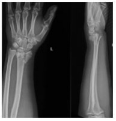
A Fratura de Colles.
B Fratura de Spiegel.
C Fratura de Barton.
D Fratura de Hutchinson.
Questão 546 · Retinoblastoma · 4000191316Qual doença oftalmológica infantil tem seu diagnóstico mais frequente entre 18 e 24 meses?
A Catarata infantil.
B Retinoblastoma.
C Estrabismo.
D Retinopatia diabética.
Questão 547 · Introdução · Psiquiatria Inf antil · 4000191311Assinale a alternativa incorreta em relação à Alienação Parental.
A Se refere apenas contra o(a) genitor(a).
B Seu objetivo maior é o de promover uma ruptura afetiva entre a criança ou o adolescente e o outro genitor.
C Os casos de alienação parental, falsa denúncia e implantação de falsas memórias são muito complexos e exigem cautela por parte da equipe interdisciplinar.
D É forma de abuso psicológico e, muitas vezes, vem acompanhada de negligencia e de abuso sexual indireto.
Questão 548 · Síndrome Colinérgica · 4000191291Homem de 54 anos, é admitido após ter sido encontrado desacordado há cerca de uma hora, teve vômitos durante o transporte. Família negou antecedentes pessoais, com exceção da depressão. Ao exame clínico, em mau estado geral, sialorreia e broncorreia intensa, FC=64 bpm, FR=33 ipm, SatO2 em ar ambiente=81%, PA=100x64 mmHg, T=36,1o C, Glicemia capilar=94 mg/dL. Ausculta pulmonar com roncos difusos. Abdômen com ruídos hidroaéreos aumentados. Escala de coma de Glasgow=6, pupilas mióticas, isocóricas, sem dé cits focais. Presença de fasciculação em musculatura de membros. Realizada intubação orotraqueal e estabilização na sala de emergência. Assinale a alternativa com a provável síndrome e tratamento a ser instituído:
A Síndrome anticolinérgica; fisostigmina.
B Síndrome anticolinérgica; atropina.
C Síndrome colinérgica; fisostigmina.
D Síndrome colinérgica; atropina.
Questão 549 · Dependência Química · Introdução e Conceitos Fundamentais · Dependência de Tabaco · 4000191161Homem de 50 anos em consulta periódica de rotina na unidade básica de saúde, possui diagnóstico de hipertensão, controlada com hidroclorotiazida 25 mg por dia. É tabagista de 1 maço por dia desde os 20 anos. Relata vontade de cessar o tabagismo, tendo reduzido espontaneamente para meio maço de cigarros por dia, porém, relata di culdade de reduzir além disso. Apresenta escore de Fagerström de 8 pontos. Refere ainda estar divorciado e tendo relações sexuais desprotegidas com três parceiras no último ano. IMC = 26 kg/m². Em relação ao tabagismo assinale a CORRETA.
A Encontra-se em fase de preparação para mudança do hábito, estando indicada, além do aconselhamento, medicação adjuvante para cessação do tabagismo, como vareniclina ou adesivo definicotina.
B Encontra-se em fase de ação para mudança do hábito, estando indicada, além do aconselhamento, medicação adjuvante para cessação do tabagismo, como fluoxetina ou nortriptilina
C Encontra-se em fase de contemplação para mudança do hábito, estando indicada maior redução do número de cigarros ao dia antes da introdução de medicação adjuvante para cessação do tabagismo
D O escore de Fagerström indica baixa dependência da nicotina, estando indicada terapia cognitivo- comportamental para auxiliar na fase final de mudança de hábito.
Questão 550 · Diagnóstico · 4000191065Para o diagnóstico clínico da síndrome do des ladeiro torácico (Thoracic Outlet Syndrome – TOS), patologia que acomete geralmente mulheres na meia idade, algumas manobras clínicas podem ser empregadas, como o teste de
A percussão dígito digital do trapézio (Chvostek).
B extensão do membro superior (Blumberg).
C abdução do membro superior (Lapinski).
D escaleno (Adson).
E extensão da mão ipsilateral à lesão (Tinel).
Questão 551 · Antidepressivos · 4000191050Mulher, 87 anos, viúva, comparece em consulta ambulatorial, trazida por um dos lhos, por apatia há seis semanas. Frequentava sempre a igreja, bazares de amigas e costumava andar no parque nos nais de semana, porém, nesse período, não quer mais sair de casa. O apetite está reduzido, perdeu 4 kg e também está com di culdade para dormir. Tem antecedentes de hipertensão arterial, constipação crônica e quedas frequentes. A opção correta de tratamento para essa paciente é
A bupropiona.
B mirtazapina.
C amitriptilina.
D bromazepam.
E fluoxetina.
Questão 552 · Transtorno do Espectro Autista TEA · 4000191008Sobre o Transtorno do Espectro Autista (TEA) em crianças e adolescentes, assinale a alternativa correta.
A Aspectos específicos da comunicação da criança autista incluem o atraso na aquisição da fala, anormalidade na prosódia e disabstração.
B A grande dificuldade diagnóstica se dá pela instalação tardia dos sintomas, frequentemente após os 10 anos de idade, momento em que a abstração facilita a expressão clínica do quadro.
C Existe um diagnóstico diferencial difícil com o transtorno do déficit de atenção e hiperatividade pela dificuldade de foco, interesses amplos e efêmeros e transições comportamentais rápidas e fugazes.
D Embora a criança tenha dificuldade nos comportamentos comunicativos não verbais (linguagem corporal e olhar), há facilidade do indivíduo comprometido em estabelecer relacionamentos imaginativos com outras crianças de menor idade, com uma rica comunicação verbal fantasiosa.
E A doença apresenta-se com diferentes graus de comprometimento em cada sujeito, mas com nítida prevalência no sexo feminino.
Questão 553 · Apresentação Clínica · Diagnóstico e Tratamento · 4000191007Adolescente, sexo masculino, 10 anos, relata otalgia em orelha direita há 2 dias. Esteve de férias no litoral nas últimas duas semanas. Nega sintomas nasais, tosse ou febre. No exame físico, apresenta bom estado geral, com bastante dor à mobilização da orelha, hiperemia, edema do conduto auditivo externo, com secreção e debris sobre a membrana timpânica direita. A hipótese diagnóstica mais provável e o tratamento adequado são, respectivamente,
A otite externa aguda; antibiótico tópico.
B otite externa aguda; antibióticos tópico e sistêmico associados e anti-inflamatório não hormonal.
C otite média aguda; antibiótico sistêmico e anti-inflamatório não hormonal.
D otite média aguda; antibiótico sistêmico e corticoterapia oral.
E mastoidite aguda; tomografia de mastoide e antibiótico parenteral.
Questão 554 · Linf adenite Reacional inf lamatória · 4000191006Pré-escolar, de 2 anos e 4 meses, apresenta coriza, dor de garganta e tosse há 4 dias. Houve febre nos dois dias iniciais do quadro. No exame físico, existe um linfonodo palpável de 1,5 cm na cadeia cervical anterior direita que é fibroelástico, móvel e levemente doloroso. Não há eritema ou calor local. O restante dos achados é normal. A conduta mais apropriada no manejo desse paciente é:
A radiografia de tórax.
B aspiração com agulha fina do linfonodo.
C sorologia para mononucleose.
D acompanhamento clínico, sem exames.
E ultrassonografia da região cervical.
Questão 555 · Sumário dos Tóxicos e Antídotos · 4000190935Assinale a alternativa que contém a correta relação entre antídoto e tóxico.
A Oxigênio e cianeto.
B Monóxido de carbono e hidroxicobalamina.
C Etanol e etilenoglicol.
D Metanol e etilenoglicol.
E Organofosforado e epinefrina.
Questão 556 · Transtorno do Estresse PósTraumático TEPT · 4000190902Uma bancária trabalha em uma agência que foi assaltada 4 vezes e na última dessas vezes, ela foi diretamente ameaçada por um dos assaltantes, que empunhou uma arma em sua direção. Dez dias depois, a bancária começou a sonhar com o assalto, passando a acordar durante a noite e muitas vezes se pega tendo a mesma sensação de medo e ansiedade que teve quando foi ameaçada. Começa a ter di culdade para entrar na agência, sentindo-se mais ansiosa. Procura um psiquiatra do plano de saúde privado, que faz diagnóstico de transtorno de estresse. Após 3 semanas, os sintomas se intensi cam e ela não se sente mais em condições de trabalhar. Procura ajuda no Centro de Referência em Saúde do Trabalhador (CEREST) do município, que faz o diagnóstico de transtorno de estresse pós-traumático relacionado aos assaltos, indicando afastamento do trabalho para recuperação. Assinale a alternativa correta.
A O diagnóstico é pouco provável, pois os sintomas começaram dez dias após o assalto, e o quadro clínico deve ser decorrente de questões pessoais não reveladas.
B O diagnóstico é plausível, e caso a empresa concorde, deve ser emitida a Comunicação de Acidente do Trabalho (CAT).
C O diagnóstico é plausível, o caso deve ser notificado no Sistema de Informação de Agravos de Notificação (SINAN), e deve ser solicitada a emissão de CAT à empresa.
D Embora o caso seja compatível com a clínica e a situação, neste caso, a emissão da CAT é facultativa, pois o assalto não é de responsabilidade da empresa.
E O caso deve ser notificado ao SINAN como transtorno mental relacionado ao trabalho, mas a emissão de CAT é facultativa, pois não se trata de um diagnóstico consensual.
Questão 557 · Álcool · Introdução e Conceitos Fundamentais · 4000190822Dona América, mulher de 68 anos de idade, negra, viúva, mora com o lho mais novo, Jurandir (35 anos de idade) em um bairro da periferia da cidade. Há 5 meses iniciou quadro de tosse, dispneia aos moderados esforços e edema em membros inferiores, tendo sido diagnosticada com insu ciência cardíaca. Apresenta antecedente de hipertensão arterial sistêmica e diabetes mellitus tipo II Em uso de losartana 100mg/dia, carvedilol 12,5mg 12/12 horas, furosemida 20mg pela manhã, metformina 850mg 3 vezes ao dia e Insulina NPH 12UI antes de dormir. A Agente Comunitária de Saúde (ACS), Júlia, responsável pela microárea onde mora a dona América, conta que, por piora da doença, nos últimos 3 meses ela não conseguiu buscar remédios na UBS. Fica mais tempo deitada ou sentada em casa, e depende do lho para fazer sua comida e cuidar de suas contas, mas nem sempre consegue contar com ele, que tem tido problemas com bebida. Jurandir esteve em consulta com a médica da equipe de ESF. Relata etilismo há 12 anos, que piorou após a morte do pai há 2 anos. Ingere cerca de meio litro de destilado por dia. Tem vontade de parar de beber para poder cuidar melhor de sua mãe, mas diz que o corpo reage mal quando para. Para além de acompanhamento na UBS, qual outro serviço da Rede de Atenção Psicossocial pode ser considerado para o cuidado de Jurandir?
A Núcleo de Apoio da Saúde da Família
B Centro de Referência Especializado de Assistência Social
C Serviço Residencial Terapêutico
D Centro de Atenção Psicossocial Álcool e Drogas
Questão 558 · Diagnóstico do Autismo · Transtorno do Espectro Autista TEA · 4000190777Menino de 3 anos de idade está em consulta de puericultura. A mãe queixa-se que o lho demorou a falar, com as primeiras palavras aos 2 anos de idade, depois desapareceu as palavras e hoje só fala "mama". Queixa-se também que o lho não atende ao chamado pelo nome, não olha nos olhos, não se interessa pelas crianças da creche e que tem seletividade alimentar (só come comidas crocantes). Recentemente começou a fazer movimentos de balançar as mãos e girar no próprio eixo quando está feliz, além de en leirar seus brinquedos. A criança é saudável, nascida a termo. A mãe nega doenças crônicas, histórico prévio de infecção de ouvido e de crises convulsivas. Seu desenvolvimento motor grosso e no é adequado. Ao exame clínico, não apresenta alterações significativas, com perimetro cefálico, peso e estatura entro o Z escore 0 e +1. De acordo com as informações, qual é a principal hipótese diagnóstica?
A Síndrome de Rett
B Síndrome de Asperger
C Transtorno do espectro autista
D Transtorno específico do desenvolvimento da linguagem
Questão 559 · Tratamento do Austismo · 4000190776Menino de 3 anos de idade está em consulta de puericultura. A mãe queixa-se que o lho demorou a falar, com as primeiras palavras aos 2 anos de idade, depois desapareceu as palavras e hoje só fala "mama". Queixa-se também que o lho não atende ao chamado pelo nome, não olha nos olhos, não se interessa pelas crianças da creche e que tem seletividade alimentar (só come comidas crocantes). Recentemente começou a fazer movimentos de balançar as mãos e girar no próprio eixo quando está feliz, além de en leirar seus brinquedos. A criança é saudável, nascida a termo. A mãe nega doenças crônicas, histórico prévio de infecção de ouvido e de crises convulsivas. Seu desenvolvimento motor grosso e no é adequado. Ao exame clínico, não apresenta alterações significativas, com perimetro cefálico, peso e estatura entro o Z escore 0 e +1. A pediatra recomendou estimular linguagem em casa, aumentar brincadeiras e reduzir tempo de tela. O paciente retorna após 2 meses. Os pais mantém as queixas. Qual é a conduta neste caso?
A Solicitar cariótipo, exoma, pesquisa de X-frágil e encaminhar para geneticista em caráter de urgência.
B Solicitar tomografia de crânio, eletroencefalograma e encaminhar para neurologista infantil.
C Solicitar avaliação auditiva e encaminhar para terapias de intervenção precoce.
D Solicitar relatório escolar, manter atividades de estimulação em casa e retornar em 2 meses.
Questão 560 · Dependência de Tabaco · 4000190767Em relação aos tabagistas que fumam mais de 20 cigarros/dia, podemos afirmar:
A Apresentam dificuldade para aumentar o número de cigarros, mas que estão motivados a parar de fumar, são candidatos ao uso associado de adesivos.
B Apresentam dificuldade para reduzir o número de cigarros, mas que não estão motivados a parar de fumar, são candidatos ao uso associado de adesivos.
C Apresentam dificuldade para reduzir o número de cigarros, mas que estão motivados a parar de fumar, não são candidatos ao uso associado de adesivos.
D Apresentam dificuldade para reduzir o número de cigarros, mas que estão motivados a parar de fumar, são candidatos ao uso associado de adesivos.
Questão 561 · Dependência de Tabaco · 4000190764Independentemente da carga tabágica (número de cigarros/dia ou anos de tabagismo) e do grau de dependência à nicotina, pode-se considerar correto que:
A Farmacoterapia deve ser utilizada em pacientes que apresentem contraindicações clínicas ou por aqueles que optarem pelo não uso de medicamentos, mesmo após receberem esclarecimento adequado por parte do profissional de saúde que os acompanham.
B Farmacoterapia não deve ser utilizada em pacientes que apresentem as indicações clínicas ou por aqueles que optarem pelo uso de medicamentos, mesmo após receberem esclarecimento adequado por parte do profissional de saúde que os acompanham.
C Farmacoterapia não deve ser utilizada em pacientes que apresentem contraindicações clínicas ou por aqueles que optarem pelo não uso de medicamentos, exceto após receberem esclarecimento adequado por parte do profissional de saúde que os acompanham.
D Farmacoterapia não deve ser utilizada em pacientes que apresentem contraindicações clínicas ou por aqueles que optarem pelo não uso de medicamentos, mesmo após receberem esclarecimento adequado por parte do profissional de saúde que os acompanham.
Questão 562 · Rede de Atenção Psicossocial RAPS · 4000190039Com relação à Rede de Atenção Psicossocial (RAPS), assinale a alternativa correta.
A Pessoas com transtornos mentais só podem ser atendidas pelas equipes de saúde da família se estiverem em situação de pobreza.
B Um dos objetivos da RAPS é a prevenção do consumo e da dependência de crack, álcool e outras drogas, com base na negociação e oferecimento de albergues.
C Duas das diretrizes para o funcionamento da RAPS são: combate a estigmas e preconceitos e desenvolvimento de estratégias de redução de danos.
D Alguns dos pontos de atenção psicossocial são os consultórios na rua, os centros de convivência e os hospitais psiquiátricos.
E Dentre os pontos de atenção de urgência e emergência da RAPS, deixou de fazer parte o SAMU 192.
Questão 563 · Nova Política Nacional de Saúde Mental · 4000190032Assinale a alternativa correta no que se refere à redução de danos sociais e à saúde, decorrentes do uso de produtos, substâncias ou drogas que causem dependência.
A Em todas as ações de redução de danos, sejam relacionadas à prevenção, ao diagnóstico e ao tratamento, a identidade e a liberdade da decisão do usuário ou dependente não precisam ser mantidas sob sigilo, a fim de que haja maior motivação para seguir adiante.
B As ações de redução de danos devem ser desenvolvidas em consonância com a promoção dos direitos humanos, tendo especialmente em conta o respeito a condutas padronizadas para que todos os usuários sejam assistidos da mesma maneira.
C A política de redução de danos vem sendo abandonada por ter se mostrado pouco útil para que as pessoas se sintam motivadas a abandonar o uso de drogas e retomem um estilo de vida saudável.
D A redução de danos desenvolve-se por ações de saúde dirigidas a usuários que não podem, não conseguem ou não querem interromper o referido uso, tendo como objetivo reduzir os riscos associados sem, necessariamente, intervir na oferta ou no consumo.
E A redução de danos deve pautar-se prioritariamente no fornecimento de informações sobre os males que o uso de produtos, substâncias ou drogas que causem dependência podem produzir no organismo, comprometendo a funcionalidade a médio prazo.
Questão 564 · Dependência de Tabaco · 4000190031A Organização Mundial da Saúde (OMS) aponta que o tabaco mata mais de 8 milhões de pessoas por ano. Mais de 7 milhões dessas mortes resultam do uso direto desse produto, enquanto cerca de 1,2 milhão é o resultado de não fumantes expostos ao fumo passivo. A OMS a rma, ainda, que cerca de 80% dos mais de um bilhão de fumantes do mundo vivem em países de baixa e média renda, nos quais o peso das doenças e mortes relacionadas ao tabaco é maior. Assinale a alternativa correta quanto ao tema.
A O tabagismo é uma doença que contribui para o desenvolvimento de vários tipos de câncer, dentre os quais os de bexiga, traqueia, brônquios e pulmão.
B Apenas o tabaco fumado na forma de cigarro causa câncer de pulmão e contribui para a ocorrência de acidentes cerebrovasculares.
C Está comprovado que a leucemia mieloide aguda e o câncer de esôfago não têm relação com o tabagismo.
D O tabagismo foi excluído do grupo de transtornos mentais e comportamentais em razão do uso de substância psicoativa.
E O tabagismo costuma causar câncer de pulmão, principalmente na população jovem.
Questão 565 · Centro de Atenção Psicossocial CAPS · 4000190027Assinale a alternativa correta em relação aos Centros de Atenção Psicossocial (CAPS).
A As pessoas com necessidades decorrentes do uso de álcool são minoritárias nos atendimentos dos CAPS AD.
B O atendimento nos CAPS é restrito a crianças, adolescentes e adultos de até 28 anos de idade.
C Pessoas com necessidades decorrentes do uso de crack, álcool e outras drogas exigem internação para melhor resultado.
D As modalidades dos CAPS são definidas de acordo com o número de habitantes de municípios ou regiões.
E Os CAPS foram concebidos de forma a restringir o atendimento especificamente às pessoas com transtornos mentais leves.
Questão 566 · Intoxicações Exógenas · 4000190014Assinale a alternativa correta no que se refere à intoxicação exógena.
A O caso suspeito de intoxicação exógena inclui todo aquele indivíduo que, tendo sido exposto a substâncias químicas, apresenta sinais e sintomas de intoxicação, excluídos medicamentos.
B Os casos de intoxicação exógena, após comprovados, devem ser notificados em ficha específica no SINAN, exceto em caso de tentativa de suicídio e violência/homicídio.
C A ficha de investigação de intoxicação inclui, dentre outros campos, os que se referem a dados da ocupação, à situação no mercado de trabalho e à relação com o trabalho.
D Alterações laboratoriais compatíveis com intoxicação exógena são importantes no atendimento clínico, mas não são consideradas para a notificação de suspeita de caso.
E As notificações compulsórias de intoxicação exógena excluem a população de crianças com menos de um ano de idade.
Questão 567 · Sarcoma de Kaposi · Sarcoma de Kaposi · 4000189989Dentre as neoplasias a seguir, aquela que é uma doença indicativa de AIDS é:
A carcinoma hepatocelular.
B adenocarcinoma de pâncreas.
C sarcoma de Kaposi.
D leucemia mieloide aguda tipo M3.
E adenocarcinoma de cólon.
Questão 568 · Psicof armacologia · 4000189988Das seguintes medicações de ação no sistema nervoso central, aquela que é considerada mais segura para uso em idosos é:
A amitriptilina.
B diazepam.
C clorpromazina.
D sertralina.
E haloperidol.
Questão 569 · Catarata Congênita · Teste do Olhinho · Catarata congênita · 4000189933O teste do reflexo vermelho deve ser realizado antes da alta da maternidade e repetido nas avaliações pediátricas nos 3 primeiros anos de idade. O exame no período ideal para a cirurgia de catarata congênita é o que identifica imagem anormal com a idade de
A 2 meses.
B 4 meses.
C 6 meses.
D 12 meses.
E 24 meses.
Questão 570 · Síndrome Narcótica · 4000189927Menina, 3 anos de idade, é trazida à emergência com quadro de rebaixamento do nível de consciência, movi- mentos respiratórios irregulares e miose. A saturação de oxigênio é de 89%, FR = 14 mrm, FC = 118 bpm. Os pais trouxeram frasco vazio de xarope sedativo da tosse, com codeína e homatropina. Estava com o conteúdo pela metade, e as roupas da criança estavam com várias manchas do medicamento. Foi iniciado suporte ventilatório e oxigenioterapia e administrado(a)
A N-acetilcisteina.
B naloxone.
C flumazenil.
D atropina.
E hipossulfito de sódio.
Questão 571 · Etiologia e Epidemiologia · 4000189848Assinale a alternativa que apresenta CORRETAMENTE o principal agente infeccioso das rinossinusites.
A Pneumococo.
B Fungos.
C Haemophilus.
D Vírus.
Questão 572 · Conjuntivite Neonatal · 4000189748Em relação às conjuntivites neonatais, é CORRETO afirmar que:
A As conjuntivites causadas por Chlamydia trachomatis nos recém-nascidos não evoluem com formação de folículos.
B As infecções por Haemophilus influenzae são mais frequentes do que as causadas por Streptococcus viridans
C A bactéria diplococo Gram-positiva mais frequentemente associada à conjuntivite neonatal é a Neisseria gonorrhoeae.
D O método de Credé, utilizado na profilaxia da oftalmia neonatal, é realizado com instilação do nitrato de prata a 10% nos olhos do recém- nascido, até 1 hora após o parto.
Questão 573 · Toxicidade e Dose Letal · Maculopatia por cloroquina · Cloroquina · 4000189677Apesar de classicamente bem toleradas, a cloroquina e a hidroxicloroquina:
A Nunca podem induzir graves efeitos colaterais tais como aumentar o intervalo QT, induzir hipoglicemia, retinopatia e distúrbios neuropsiquiátricos.
B Podem induzir graves efeitos colaterais tais como reduzir o intervalo QT, induzir hipoglicemia, retinopatia e distúrbios neuropsiquiátricos.
C Podem induzir graves efeitos colaterais tais como aumentar o intervalo QT, induzir hipoglicemia, retinopatia e distúrbios neuropsiquiátricos.
D Podem induzir graves efeitos colaterais tais como aumentar o intervalo QT, induzir hipoglicemia, retinopatia e nunca distúrbios neuropsiquiátricos.
Questão 574 · Tratamento da Depressão · 4000189592Exercício físico realizado de maneira sistemática melhora a qualidade do sono, a função cognitiva e a memória de curto prazo, também:
A Diminui o grau de depressão, mas não atrasa o aparecimento de demência, reduz risco de câncer de cólon, mama, próstata e reto, aumenta a densidade óssea e diminui o aparecimento de fraturas de fêmur e vértebras.
B Diminui o grau de depressão, reduz ou atrasa o aparecimento de demência, reduz risco de câncer de cólon, mama, próstata e reto, aumenta a densidade óssea e aumenta o aparecimento de fraturas de fêmur e vértebras.
C Diminui o grau de depressão, reduz ou atrasa o aparecimento de demência, reduz risco de câncer de cólon, mama, próstata e reto, aumenta a densidade óssea e diminui o aparecimento de fraturas de fêmur e não vértebras.
D Diminui o grau de depressão, reduz ou atrasa o aparecimento de demência, reduz risco de câncer de cólon, mama, próstata e reto, aumenta a densidade óssea e diminui o aparecimento de fraturas de fêmur e vértebras.
Questão 575 · Diagnóstico do Autismo · Transtorno do Espectro Autista TEA · 4000189568Lactente de 24 meses de idade, sexo masculino, é trazido à consulta pela mãe com a queixa de que a criança, que já falava algumas palavras desde os 13 meses, deixou de falar. Você percebe que a criança não faz contato olho a olho e não responde a pequenos comandos, como para buscar algum brinquedo. Além disso, não brinca de maneira habitual com seus brinquedos. A hipótese diagnóstica mais provável é
A retardo mental, consequência de doença metabólica.
B autismo.
C surdez congênita.
D paralisia cerebral, sequela de anoxia de parto.
E variação do desenvolvimento normal para a idade.
Questão 576 · Tratamento · 4000189564Bebê do sexo masculino, com 15 meses de idade, apresenta febre de 39 graus, irritabilidade e choro constante há 48 horas. Leva sua mão ao ouvido quando chora. No exame físico, estava eupneico, com hiperemia de orofaringe e, na otoscopia, apresentou abaulamento da membrana timpânica bilateral. Essa é a primeira vez que essa criança fica doente. Ainda não frequenta creche e não tem doenças de base. Além de prescrever antitérmicos, qual a conduta mais adequada?
A Não dar antibióticos se a criança puder ser acompanhada ambulatorialmente.
B Aplicar ciprofloxacino e hidrocortisona, na forma de gotas otológicas (uso tópico).
C Prescrever amoxicilina, na dose padrão de 45 mg/kg, por via oral.
D Prescrever amoxicilina, dose “dobrada” de 90 mg/kg, por via oral.
E Prescrever amoxicilina, dose “dobrada” de 90 mg/kg associada ao clavulanato, por via oral.
Questão 577 · Faringites Bacterianas · 4000189562Escolar, com 8 anos de idade, chega ao pronto-socorro com queixa de dor de garganta e febre há 48 horas. Apresenta discreta dor abdominal e um episódio de vômito. Não apresenta tosse. No exame físico, apresenta-se afebril (medicado há 1 hora), eupneico e hidratado. Na oroscopia, apresenta hiperemia intensa, com algumas petéquias no palato e presença de exsudato purulento bilateralmente (na forma de pontos em um lado e placas, do outro). Em relação à conduta mais adequada diante da hipótese desse escolar, é correto afirmar que
A aplicação de penicilina benzatina por via intramuscular não é atualmente uma opção terapêutica.
B dose única diária de amoxicilina pode ser prescrita para o tratamento dessa condição.
C testes rápidos para identificação da etiologia estreptocócica não se justificam diante de quadros clínicos tão característicos de amigdalite purulenta, como na situação apresentada.
D antibióticos devem ser evitados nessa situação, na qual a possibilidade de infecção pelo vírus EBV é grande.
E não deve haver preocupação do pediatra sobre a transmissibilidade do agente envolvido nessa situação; “afastamento escolar” é desnecessário.
Questão 578 · Tratamento · 4000189553Pré-escolar, sexo masculino, com 3 anos de idade comparece à Unidade Básica de Saúde com queixa de tosse e di culdade para respirar há 3 dias. A mãe refere febre baixa apenas no início do quadro. Tem boa aceitação hídrica, embora tenha recusado algumas refeições. No exame físico, tem frequência respiratória de 50 movimentos/minuto, sem tiragem subcostal ou intercostal, sem expiração prolongada. Ausculta sem sibilos ou estertores, apenas alguns roncos. Não há acesso a radiografias nessa Unidade. Qual é a conduta mais adequada nessa situação?
A Orientação de antitérmicos e hidratação oral, com retorno à UBS em 48h para reavaliação.
B Solicitação de hemograma e dosagem de proteína C reativa em laboratório de referência.
C Encaminhamento imediato ao hospital, para internação.
D Prescrição de amoxicilina, por via oral e acompanhamento ambulatorial.
E Prescrição de cefriaxone, por via intramuscular, e encaminhamento para hospital.
Questão 579 · Diagnóstico · Apresentação clínica · 4000186280Mulher, 55 anos, costureira, procurou UBS queixando-se de dor na face radial do punho esquerdo há 8 meses. Ao exame físico, foi realizado teste de Finkelstein com resultado positivo, observando dor e limitação na movimentação da musculatura do polegar da mão direita. Esses achados são sugestivos de qual diagnóstico?
A Tenossinovite de De Quervain
B Artrite reumatoide
C Síndrome do túnel do carpo
D Cisto sinovial
Questão 581 · Transtorno de Compulsão Alimentar TCA · Amenorreia secundária de causa hipotalâmica · 4000185009Adolescente de 16 anos de idade, em amenorreia há seis meses, apresenta histórico de distúrbio de autoimagem, compulsão alimentar episódica seguida de vômitos autoinduzidos, que ocorre em média três a quatro vezes por semana. Apresenta IMC de 19 kg/m² , FSH = 5,0 UI/L, LH = 8,0 UI/L, Prolactina e TSH normais e elevação discreta dos níveis de cortisol. Além da abordagem multidisciplinar, o tratamento medicamentoso dessa paciente deverá incluir:
A Terapia de reposição hormonal.
B Benzodiazepínicos.
C Pílula de progestagênio isolado.
D Inibidores da recaptação de serotonina.
Questão 582 · Ref orma Psiquiátrica e Psiquiatria Social · Centro de Atenção Psicossocial CAPS · 4000181471De acordo com as atuais normativas técnicas, éticas e legais que pautam o manejo dos pacientes com doenças mentais, assinale a alternativa correta:
A É possível realizar uma internação psiquiátrica em um CAPS 3.
B É direito do paciente com doença mental ser internado, preferencialmente, em hospitais especializados (psiquiátricos).
C Após criteriosa avaliação psiquiátrica, é possível indicar internação compulsória em um hospital geral.
D É direito de todos os pacientes com doença mental o tratamento no CAPS.
E Não há nenhuma modalidade de internação psiquiátrica no âmbito do espaço físico dos CAPS.
Questão 583 · Otorrinolaringologia · 4000181464Menina de 6 anos retorna ao pronto-socorro após uma semana, com piora de dispneia, início de febre alta, tosse rouca e fazendo ruído ao respirar. O pai relata que a trouxe, há 5 dias, com sintomas parecidos e que ela melhorou com uma nebulização e injeção. Ao exame: temp. 39 graus, tiragem intercostal, estridor bifásico, Sat. 92%, AP: MV diminuído com roncos, orofaringe com hiperemia e secreção espessa, rinoscopia com hiperemia mucosa e otoscopia com hiperemia de membrana timpânica. Foi realizada nebulização com epinefrina sem melhora dos sintomas. Em relação ao quadro acima, assinale a conduta correta.
A Realizar internação hospitalar na UTI, iniciar antibioticoterapia empírica para S. aureus e monitorização sem obrigatoriedade de intubação orotraqueal.
B Repetir dois novos ciclos de nebulização com epinefrina, dexametasona IM ou IV e observar por 4 a 6 horas no pronto-socorro.
C Fazer nebulização com salbutamol e ipratrópio, dexametasona IM ou IV e alta com prescrição de amoxicilina-clavulanato.
D Realizar intubação orotraqueal precoce, internação hospitalar na UTI e antibioticoterapia empírica para H. influenzae tipo B.
E Internação hospitalar mantendo nebulização com salbutamol e ipratróprio, dexametasona IV e antibioticoterapia sistêmica empírica para S. pneumoniae.
Questão 584 · Ortopedia · 4000181447Paciente de 5 anos, apresenta dor no quadril direito há dois dias, associada à di culdade de pôr o pé no chão. Não apresenta febre, consegue brincar normalmente ao longo do dia, sendo a dor pior apenas ao despertar e ao nal do dia. Há duas semanas, teve uma infecção de vias aéreas superiores por adenovírus. Ao exame físico, não apresenta restrição de movimentos, mas apenas incômodo aos extremos de movimento da amplitude máxima do quadril direito. Qual é o melhor exame para se excluir o maior número de possíveis diagnósticos diferenciais desse paciente?
A Hemograma, PCR e VHS
B Radiografia da bacia
C Ultrassonografia do quadril
D Ressonância magnética do quadril
E Punção articular
Questão 585 · Síndrome do Túnel do Carpo · 4000181110A síndrome do túnel do carpo (STC) é uma condição clínica muito frequentemente identi cada na Atenção Primária à Saúde (APS) e na prática do médico generalista. Quanto a esse tema, assinale a alternativa correta.
A A STC desenvolve-se a partir da compressão do nervo radial, por múltiplos mecanismos, no trajeto que percorre no punho, em que há um estreitamento anatômico — o túnel do carpo.
B A STC é uma neuropatia rara nos dias de hoje.
C Teste de Durkan (compressão carpal) — É hiperflexão dos punhos, com os dorsos das mãos juntos frente a frente por um minuto; alternativamente, pode ser realizado o Teste de Durkan invertido, em que há hiperextensão dos punhos, com as palmas das mãos juntas.
D Teste de Phalen é a percussão repetidamente na superfície volar, na área do ligamento carpal transverso (acima do túnel do carpo).
E A apresentação típica da STC ocorre com sintomas de dor e parestesias na mão (comumente dormência e formigamento), na área inervada pelo nervo mediano — primeiro, segundo e terceiro dedos e aspecto radial do quarto dedo.
Questão 586 · Of talmologia · Retinopatia da prematuridade · 4000181109Qualquer alteração visual ocorrida durante os primeiros cinco anos de idade e que não tenha sido corrigida pode acarretar prejuízos à visão para o resto da vida. Em relação às doenças oftalmológicas, assinale a alternativa correta.
A O primeiro teste ocular a que o recém-nascido deve ser submetido, logo após o nascimento, é o teste da vitamina K.
B A retinopatia da prematuridade é mais frequente em bebês com menos de 32 semanas ou menos de 1.500g. Toda criança nessa situação deve ser encaminhada para exame de fundo de olho com 4 a 6 semanas de vida.
C A oftalmia neonatal (em latim,
D O hordéolo externo é uma inflamação lipogranulomatosa secundária à retenção do sebo, causada pela obstrução do ducto da glândula de meibômio.
E O tratamento do hordéolo e do calázio consiste na aplicação de colírios com antibióticos.
Questão 587 · Intoxicações Exógenas · Síndrome Colinérgica · 4000180499Paciente de 46 anos de idade, agricultor, é levado por familiares para a emergência após ser encontrado desacordado em um galpão próximo à plantação onde trabalha. Durante a avaliação, o paciente encontra-se confuso, desorientado em tempo e espaço e suas vestes estão úmidas. Observa-se uma respiração ruidosa, espasmos musculares e miose. Diante desse cenário, quais são: o provável diagnóstico e o antídoto a ser administrado?
A Intoxicação por carbamato – administrar naloxona.
B Intoxicação por organofosforado – administrar atropina.
C Intoxicação por tricíclico – administrar pralidoxima.
D Intoxicação por organofosforado – administrar n-acetilcisteína.
Questão 588 · Otorrinolaringologia · 4000180498Rafael é um lactente de 1 ano que deu entrada no pronto-socorro com relato de dispneia e ruído à inspiração. A mãe relata que iniciou quadro de obstrução nasal, coriza e secreção espessa há 4 dias de cor amarelada, associada a febre de 38 graus, tosse e rouquidão. Ao exame: orofaringe com hiperemia e gotejamento pós nasal, rinoscopia com hiperemia mucosa e secreção amarelada, temp. 38 graus, Sat O2 95%, AP: MV + com roncos de transmissão e levemente diminuído, apresenta estridor inspiratório ao choro e durante movimentações sem apresentar os sintomas em repouso sem retração intercostal. Nega episódios prévios. Em relação a esse caso, assinale a alternativa que indica os prováveis diagnóstico e tratamento.
A Rinossinusite bacteriana aguda, com indicação de amoxicilina 90 mg/kg/dia, lavagem nasal com solução salina, prednisona e antitérmico.
B Laringomalácia, com indicação de lavagem nasal com solução salina, nebulização com salbutamol, prednisona e encaminhar para avaliação especializada.
C Laringite viral leve, lavagem nasal com solução salina, dexametasona via oral, antitérmico e alta após observação no pronto socorro por 4 a 6 horas.
D Bronquiolite viral, nebulização com salbutamol, prednisona, lavagem com soro e antitérmico.
Questão 589 · Ortopedia · 4000180478Marcelo, 52 anos, apresenta dor na região lombar há dois meses e perda de força de membro inferior direito há dois dias. Trabalha como pedreiro e tem histórico de obesidade, pressão alta e diabetes tipo II. Refere que, há cinco dias, caiu sentado da escada enquanto carregava um saco de cimento na cabeça. Ao exame físico, apresenta Lasègue positivo à direita e força motora grau II. para dorsi exão do pé e grau III. para flexão plantar. Qual não é um sinal de alarme para esse paciente?
A Persistência da dor.
B Déficit neurológico.
C Obesidade.
D Idade.
Questão 590 · Síndrome Extrapiraminal SEP · 4000180451Paciente masculino de 20 anos é atendido na UBS devido um quadro de “inquietação e angústia”, que se iniciou há 3 semanas. O jovem relata que essa estranha sensação começou após um médico plantonista da UPA prescrever risperidona 2 mg para o tratamento de insônia. Diante desse quadro, o provável diagnóstico é:
A Acatisia.
B Distonia aguda.
C Síndrome neuroléptica maligna.
D Discinesia tardia.
E Distimia.
Questão 591 · Otorrinolaringologia · 4000180449Um jovem de 18 anos vem ao pronto-socorro com queixa de dor de garganta e febre há 3 dias. Relata ainda obstrução nasal, cefaleia e desconforto cervical. Ao exame: temp. 39 graus, orofaringe com hipertro a de tonsilas e exsudato branco acinzentado, linfonodomegalia cervical anterior e posterior, edema palpebral, otoscopia com hiperemia da membrana timpânica. Em relação ao caso descrito, assinale a alternativa correta:
A O hemograma deve apresentar uma linfocitose com linfócitos atípicos
B Para confirmação diagnóstica, devemos realizar teste rápido para antígenos estreptocócicos ou cultura da orofaringe.
C O tratamento deve ser realizado com amoxicilina.
D Não são esperadas diarreia nem outras alterações abdominais.
E Boa parte da infecção por este agente é na forma fecal-oral.
Questão 592 · Ortopedia · 4000180429Paciente do sexo masculino, de cinco anos de idade, é levado ao pronto-socorro após apresentar febre baixa (38,3 °C) por três dias e dor na região do joelho esquerdo. Apresenta di culdades para apoiar o pé no chão. A movimentação do joelho é livre, porém apresenta dor à palpação da região distal da coxa esquerda, que se apresenta edemaciada, hiperemiada e mais quente. Sobre o quadro clínico apresentado:
A Pioartrite não é uma possibilidade diagnóstica.
B Gram-negativos são os mais prováveis causadores dessa patologia.
C Ressonância nuclear magnética é o melhor exame para diagnóstico diferencial.
D O tratamento deve incluir oxacilina.
E Biópsia óssea não é uma possibilidade diagnóstica.
Questão 593 · Suicídio · Mitos e verdades sobre o suicídio · 4000180233Sobre o suicídio e seus riscos na adolescência, assinale a alternativa incorreta.
A O suicídio está entre as 5 principais causa de morte entre adolescentes mais velhos (15 a 19 anos)
B O uso nocivo do álcool é um fator de risco para o suicídio na adolescência
C O abuso na infância é um fator de risco para sofrimento mental e suicídio na adolescência
D A imensa maioria dos suicídios acontecem entre adolescentes que moram em países de renda média ou alta
E As tentativas de suicídio podem ser impulsivas ou associadas a um sentimento de desesperança ou solidão
Questão 594 · Outras alopecias não cicatriciais · Dermatologia · Transtorno ObsessivoCompulsivo TOC · 4000178788Analise o caso clínico a seguir. Paciente do sexo feminino, 9 anos de idade, apresenta área de alopecia assimétrica, de contornos bizarros, permeados de fios de comprimentos diversos. A dermatoscopia mostrou rompimento da haste do cabelo em diversos níveis, fendas longitudinais e ausência de inflamação pericapilar ou cilindros capilares. Nesse caso, qual é o diagnóstico?
A Alopecia areata.
B Alopecia androgenética
C Tricotilomania
D Síndrome de Graham-Little-Piccardi-Lassueur.
Questão 595 · Suicídio · Tratamento da Depressão · Depressão · 4000178620Uma mulher de 34 anos com diagnóstico de depressão procurou a unidade de saúde da família (UBS) onde você trabalha. Com base no prontuário da paciente, você observou que ela faz acompanhamento na unidade há 10 meses com outro médico da unidade. A paciente consulta sozinha, mas chegou à unidade acompanhada da irmã, com quem ela mora e que está bastante preocupada. A paciente tem sintomas de humor deprimido, fatigabilidade e choro fácil; está em uso de 40 mg/dia de uoxetina nos últimos 6 meses, tendo apresentado discreta melhora. Segundo a paciente, há 1 mês, aproximadamente, começou a ouvir vozes e ver alguns vultos, e tem pensado em se matar, mas sem plano. Nesse caso, qual é a conduta adequada?
A Continuar o atendimento na UBS e trocar o tratamento.
B Encaminhar a paciente para internação em hospital psiquiátrico.
C Solicitar internação em hospital geral e otimizar o tratamento farmacológico.
D Referenciar a paciente à equipe multiprofissional do Centro de Atenção Psicossocial.
Questão 596 · Transtorno de Pânico · Agoraf obia · Transtorno de Ansiedade Generalizada TAG · 4000178615Uma mulher de 43 anos compareceu a uma unidade de saúde da família, com queixas de estresse e ansiedade. Informa que iniciou, há 10 semanas, o tratamento com sertralina 50 mg/dia e que, nesse período, apresentou uma melhora discreta dos sintomas. Entretanto, nas últimas 4 semanas, tem tido ataques recorrentes de ansiedade intensa quando precisa sair de casa, o que tem limitado seu desempenho, inclusive para atividades do dia a dia, como ir ao supermercado e buscar os lhos no colégio. Conforme relato dela, no dia desta consulta, teve muita dificuldade para sair de casa. Nesse caso, qual é a conduta adequada?
A Prescrever um benzodiazepínico e encaminhar a paciente para a emergência de um hospital psiquiátrico.
B Manter a sertralina na dose atual e monitorar a evolução da paciente.
C Encaminhar a paciente para um serviço com psicoterapia estruturada e reavaliar a medicação em uso.
D Substituir a sertralina por fluoxetina 20 mg, clonazepam 0,5 mg e clorpromazina 25 mg.
Questão 597 · Avaliação radiográf ica · Tratamento · 4000178602Uma adolescente de 13 anos foi levada pela mãe à unidade básica de saúde, por apresentar desvio na coluna. Segundo informações maternas, a adolescente tem o hábito de usar uma mochila pesada só de um lado do ombro e, com o passar do tempo, tem cado “mais torta”. A mãe informou que, quando jovem, também era assim, mas, em sua opinião, o caso da lha é pior. Negou outras queixas. No exame físico, observou-se assimetria dos ombros, escápula bastante proeminente à direita. O teste de Adams mostrou assimetria da caixa torácica. No caso em questão, a hipótese diagnóstica é de
A escoliose familiar, sendo dispensada a investigação com exames complementares.
B lordose familiar, indica-se uma investigação com exame radiológico da coluna.
C escoliose, sendo necessária a determinação do ângulo de Cobb para indicar o tratamento clínico ou cirúrgico.
D lordose associada à espinha bífida, uma vez que o teste de Adams foi positivo.
Revisar: possível letra faltando em enunciado
Questão 598 · Diagnóstico dos linf omas clínico laboratorial citogenética e biologia molecular · 4000178584Homem de 55 anos está, há 2 meses, com quadro de linfadenopatia cervical e axilar de aumento progressivo, associada a febre recorrente, com temperatura axilar superior a 38 °C, sudorese noturna e perda de peso de 6 kg desde o início das manifestações. Nega doenças preexistentes e uso de medicamentos, mas informa tabagismo há 35 anos, com carga tabágica de 50 anos/maço. No exame, apresentava linfadenomegalia cervical anterior e posterior bilateralmente, axilares bilaterais, com gânglios de 2,5 a 4 cm de diâmetro, consistência endurecida e xos. Sua temperatura axilar no momento é de 38,5 °C. Radiogra a de tórax mostra massa mediastinal de cerca de 8 cm de diâmetro. Já foram solicitados hemograma, proteína C reativa, tomografia computadorizada de tórax com contraste. Em relação ao caso clínico apresentado, qual é o diagnóstico provável e qual exame complementar deve ser solicitado ainda?
A Citomegalovírus; sorologias.
B Linfoma; biopsia de gânglio cervical.
C Mononucleose infecciosa; sorologias.
D Metástase de carcinoma cervical, provavelmente tireoide; biopsia de gânglio cervical.
Questão 599 · Of talmologia · Síndrome do Olho Vermelho · Blef arite · 4000178583Paciente de 30 anos, do sexo masculino, foi atendido na emergência, com queixa de prurido nos olhos e lacrimejamento havia dois dias. No exame físico, apresentava hiperemia conjuntival, com as pálpebras edemaciadas e bordas ulceradas e crostosas, conforme a imagem apresentada a seguir. Considerando-se a principal hipótese diagnóstica, qual é o agente etiológico mais comum?
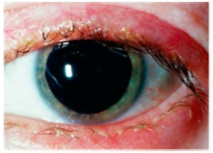
A Adenovírus.
B Herpes simples.
C Staphylococcus aureus.
D Chlamydia trachomatis.
Questão 600 · Diagnóstico da Bulimia Nervosa · Bulimia Nervosa · Tratamento da Bulimia Nervosa · 4000178564Paciente do sexo feminino, de 23 anos, foi encaminhada para serviço ambulatorial especializado após ter sido estabilizada em atendimento de urgência em internação ocasionada por fraqueza generalizada e lipotimia. Durante a avaliação clínica na urgência, foi constatado que a paciente apresentava hipertro a de glândulas parótidas, dentes em regular estado de conservação e sinal de Russel nas mãos. Na consulta ambulatorial, foi verificado que a paciente atendia aos critérios do diagnóstico de bulimia nervosa, por apresentar episódios recorrentes de compulsão alimentar, seguidos de comportamentos compensatórios e inapropriados para evitar o ganho de peso (no caso, autoindução de vômitos). Como proposta terapêutica não farmacológica, foi planejada a terapia cognitiva comportamental, em 20 sessões em grupo, durante 5 meses. Em relação à proposta de terapêutica farmacológica para essa paciente, é correto afirmar que,
A entre os inibidores seletivos da recaptação de serotonina, o citalopram é uma opção terapêutica na dose de 10 mg.
B entre os inibidores da recaptação de serotonina e noradrenalina, a venlafaxina é uma opção terapêutica na dose de 37,5 mg.
C entre os inibidores seletivos da recaptação de serotonina, a fluoxetina é uma opção terapêutica na dose de 60 mg.
D entre os anticonvulsivantes, em substituição a antidepressivos, o topiramato é uma opção terapêutica na dose de 25 mg.
Questão 601 · Síndrome Hipnossedativa · Sumário dos Tóxicos e Antídotos · 4000178559Paciente do sexo feminino, de 22 anos, estudante de medicina, foi levada à emergência hospitalar pelos pais, que a encontraram desacordada ao lado de cartelas vazias de clonazepam. A estudante faz acompanhamento em serviço de psiquiatria da universidade, mas os pais desconhecem diagnóstico psiquiátrico. No exame físico, a paciente encontrava-se com intensa sonolência e relaxamento muscular, diminuição dos reflexos e confusão mental. No atendimento inicial dessa paciente, deve-se
A colocá-la em observação, monitorando-se seus dados vitais, pois o clonazepam tem meia-vida curta, e esperar a sua recuperação espontânea.
B proceder ao esvaziamento gástrico ainda na sala de emergência e prescrever naloxana endovenosa.
C fazer suporte clínico (hidratação e manutenção de vias aéreas) e prescrever flumazenil endovenoso.
D mantê-la na sala de emergência, fazer a lavagem gástrica e, em seguida, prescrever metadona via sonda nasoenteral.
Questão 602 · Características Ultrassonográf icas dos Nódulos · Indicações de PAAF · 4000178553Em atendimento em unidade de saúde da família, você atende pela primeira vez uma mulher, com 32 anos, parda, mãe de dois lhos. Ela se encontra assintomática e realizou exames laboratoriais de hemograma colesterol total e frações, glicemia e per l hormonal tireoidiano, que resultaram normais. Mostrou, ainda, um ultrassom cervical recente, que evidencia um nódulo sólido, no 1/3 superior do lobo direito da tireoide, com 1 cm, espongiforme, sem calci cações, mais largo que alto e de limites precisos. Seu exame físico confirmou os achados ultrassonográficos. Nesse caso, a conduta mais apropriada é
A supressão hormonal.
B tratamento cirúrgico.
C controle clínico/imaginológico.
D punção aspirativa por agulha fina.
Questão 603 · Clínica Médica · Calázio · 4000178538Mulher de 25 anos apresentou edema, rubor e dor na pálpebra superior direita, com resolução espontânea do quadro em 48 horas. No momento, apresenta nodulação de 0,3 cm, indolor, localizada na face interna do terço médio da pálpebra superior direita. Nega febre ou qualquer outro sintoma. Nesse caso, qual é o diagnóstico mais provável?
A Calázio.
B Hordéolo.
C Canaliculite.
D Dacriocistite.
Questão 604 · Síndrome Anticolinérgica · 4000178537Pré-escolar de três anos de idade, sexo masculino, previamente hígido, foi levado à emergência, apresentando agitação psicomotora, midríase, boca seca e rubor facial. A mãe dele informou que tinha percebido os sintomas havia uma hora, ao chegar do trabalho. O menor ca em casa com a irmã, de 10 anos, durante o período da tarde, até a mãe retornar do trabalho. Conforme o quadro clínico apresentado, trata-se de intoxicação por
A dipirona.
B salbutamol.
C clorpromazina.
D dexclorfeniramina.
Revisar: possível letra faltando em enunciado
Questão 605 · Antipsicóticos · Síndrome Extrapiraminal SEP · Intoxicações Exógenas · 4000178532Pré-escolar de 3 anos e 4 meses de idade deu entrada no pronto-socorro apresentando rigidez e espasmos musculares e hipertermia. Não apresentava di culdade respiratória. Ausculta cardíaca sem anormalidades. Sem história prévia de doença cardíaca. O paciente estava recebendo oxigenoterapia quando um primo dele, de quatro anos, deu entrada no mesmo hospital, com quadro semelhante. Ambos haviam passado as últimas 12 horas na casa da avó materna, que há anos faz tratamento de esquizofrenia e hipertensão arterial. As evidências clínicas dessa história induzem a necessidade de o médico investigar
A cardiopatia congênita cianótica.
B intoxicação exógena por captopril.
C intoxicação exógena de haloperidol.
D ingestão exógena por benzodiazepínico.
Questão 606 · Transtornos do Humor · 4000177622Maria, 39 anos, chega à Unidade de Saúde de seu bairro, ESF Andrade Costa, para consulta com o Dr. Marcelo. Ao iniciar a consulta, queixa-se de dores no corpo. O Dr. Marcelo percebe o semblante abatido e pergunta se está acontecendo algo mais. Maria começa a chorar e diz: “Não aguento mais, doutor, estou com dores fortes no corpo e uma dor de cabeça insuportável”. Maria era uma paciente que ia sempre acompanhando sua tia, idosa, com Alzheimer, e seu marido, com obesidade grave, para realizar tratamento. Sem interromper, Dr. Marcelo mostra-se interessado, e Dona Maria continua: “Você sabe a pressão que vivo lá em casa, mas agora está insuportável. Tudo sou eu que tenho que resolver, meu marido e minha tia são dependentes de mim. Desde que mataram meu lho, vivo triste, mas agora está pior. Não tenho vontade de fazer nada e choro todos os dias. Não consigo dormir e co muito nervosa com tudo”. Diante da situação, como abordagem inicial, o Dr. Marcelo deve
A explorar a gravidade do sofrimento, conhecer os recursos de Maria para lidar com os sintomas e apresentar as possibilidades terapêuticas.
B explorar os sintomas, evitando falar sobre suicídio, para não induzir Maria, de acordo com os princípios da prevenção quaternária.
C referenciar ao psiquiatra, já que Maria apresenta sinais de gravidade como o choro fácil e a falta de vontade para realizar suas atividades.
D orientar Maria a procurar um psicólogo, profissional mais adequado para acompanhála, visto que ela está vivenciando uma crise normativa, referenciando-a.
Revisar: possível letra faltando em enunciado
Questão 607 · Transtornos Somáticos · Transtorno dos Sintomas Somáticos · 4000177620Conceição tem 40 anos e busca a Unidade Básica de Saúde (UBS) com queixa de dor no peito. Na UBS, ela mantém, com o médico de família e comunidade (MFC), o diálogo abaixo. A paciente realizou investigação, e foram excluídas causas cardíacas e pulmonares. Diante disso, de acordo com os princípios da medicina de família e comunidade, a melhor abordagem do médico para explicar os sintomas físicos como somatização é:
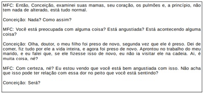
A “Você não tem nenhuma doença no corpo. Não se preocupe, não é nada. Você verá que vai passar sem precisarmos fazer nada” (O Médico de Família e Comunidade é um clínico qualificado).
B “Isso é tudo fruto da sua cabeça e precisa tentar esquecer esses problemas. Se quiser, posso te encaminhar para um psicólogo” (O médico de família é coordenador do cuidado).
C “Tome estes medicamentos para alívio da dor e você verá que vai passar. Volte em 15 dias para conversarmos novamente” (O Médico de Família e Comunidade é o recurso de uma população definida).
D “Algumas situações de estresse e nervosismo podem fazer com que o corpo reaja com sintomas, como dor no peito. A senhora pode falar sobre isso comigo também, caso se sinta à vontade" (A relação médico-pessoa é fundamental para o desempenho do Médico de Família e Comunidade).
Questão 608 · Abordagem Familiar · Transtornos Ansiosos · 4000177619Eneida, 45 anos, vai à sua médica de família e comunidade (MFC) para acompanhamento. Com queixa de nervosismo intenso, relata que a relação com seu esposo está muito difícil desde que a mãe dela foi morar com eles. Informa também que divergem sobre a forma de educar os 2 lhos, de 15 e 12 anos. A MCF percebe que, nesse caso, seria importante aplicar alguns instrumentos de abordagem familiar. Tendo isso em vista, a médica deve
A encaminhar a paciente ao psicólogo, profissional indicado para a aplicação dos instrumentos de abordagem familiar e para o acompanhamento de famílias com padrão disfuncional de interação.
B oferecer iniciar a terapia familiar, já que essa forma de abordagem é uma competência essencial do médico de família e comunidade.
C agendar uma visita domiciliar, instrumento de abordagem familiar fundamental para avaliar e acompanhar as famílias com padrão disfuncional.
D realizar uma leitura sistêmica, compreendendo o tipo, a dinâmica e a fase do ciclo de vida em que essa família se encontra, para assim planejar as ações mais adequadas.
Questão 609 · Bisf osf onatos · Abandono do abuso alcoólico · Indicações de rastreio da osteoporose · 4000177612José, 56 anos, comparece à consulta com o médico de família e comunidade (MFC) para seguimento após uma queda. Relata que, há 6 meses, sofreu uma queda da própria altura, em um dia de libação alcoólica, e sofreu uma fratura de colo de fêmur. José conta que fazia uso de cerveja e cachaça diariamente, mas, após o ocorrido, não bebeu mais. Diante do fato de ter ocorrido uma fratura, o MCF deve
A requisitar vitamina D e cálcio, sem a necessidade de solicitar densitometria, pois o paciente não entra nos critérios de rastreamento para osteoporose.
B iniciar um bifosfonado e realizar orientações para mudança nos fatores ambientais, sem a necessidade de solicitar a densitometria óssea para o paciente.
C solicitar densitometria óssea, para avaliação de gravidade da osteoporose de José, além de orientar mudanças no estilo de vida.
D requerer densitometria óssea, cálcio e vitamina D, para realizar o diagnóstico de possível osteoporose em José, além de orientar a dieta e a atividade física.
Questão 610 · Esquizof renia · 4000177584A catatonia é um quadro sindrômico caracterizado por alteração grave da volição e da motricidade, di cultando o manejo do paciente na enfermaria, tendo em vista o negativismo, a recusa alimentar, entre outros sintomas. O tratamento farmacológico mais adequado para o manejo de pacientes catatônicos é
A lorazepam.
B risperidona.
C clozapina.
D fluoxetina.
Questão 611 · Antipsicóticos · 4000177583Os antipsicóticos são medicamentos desenvolvidos, inicialmente, para o tratamento da esquizofrenia, mas, hoje, são utilizados para vários outros transtornos, como transtorno bipolar e depressão resistente. Entre seus efeitos colaterais mais preocupantes, estão os efeitos metabólicos, como ganho de peso e síndrome metabólica. Os antipsicóticos com melhor perfil metabólico são
A lurasidona, aripiprazol, quetiapina e risperidona.
B ziprasidona, olanzapina, risperidona e pimozida.
C lurasidona, risperidona, quetiapina e clorpromazina.
D ziprasidona, lurasidona, aripiprazol e haloperidol.
Questão 612 · Suicídio · 4000177263O suicídio está para o psiquiatra como o câncer está para o me pode proporcionar cuidados ideais, mas, ainda assim, o paciente pode cometer suicídio de qualquer modo. Talvez o conceito mais importante relativo ao suicídio e normalmente depressão, sendo receptivo a tratamento psicológico e farmacológico. Em relação ao comportamento parassuicida, assinale a afirmativa correta.
A Pensamento de servir como agente da própria morte; a gravidade pode variar dependendo da especificidade dos planos suicidas e do grau de intenção suicida.
B Pacientes que causam danos a si mesmos por meio de automutilação (p. ex., cortes na pele), mas que normalmente não desejam morrer.
C Comportamento autodestrutivo com resultado não fatal acompanhado por evidências explícitas ou implícitas de que a pessoa pretendia morrer.
D Comportamento potencialmente autodestrutivo com evidências explícitas ou implícitas de que a pessoa pretendia morrer, mas a tentativa foi interrompida antes da ocorrência de danos físicos.
Questão 613 · Esquizof renia · Diagnóstico da Esquizof renia · 4000177262A esquizofrenia e esclarecida; portanto, às vezes, ela e na quinta edição do Manual Diagnóstico e Estatístico de Transtornos Mentais (DSM-5), o espectro da esquizofrenia. Em relação aos crite
A Se há história de transtorno do espectro autista ou de um transtorno da comunicação iniciado na infância, o diagnóstico adicional de esquizofrenia e
B Os sintomas devem persistir por pelo menos seis meses, e não deve haver um diagnóstico de transtorno esquizoafetivo ou transtorno do humo
C Deve haver dois dos itens a seguir, cada um presente por uma quantidade significativa de tempo durante um período de um mês (ou menos, se tratados com sucesso): delírios, alucinações, discurso desorganizado, comportamento grosseiramente desorganizado ou catatônico e/ou sintomas negativos (i.e., expressão emocional diminuída ou avolia).
D A presença de alucinações ou delírios e
Questão 614 · Psicof armacologia · Conceitos de Psicof armacologia · 4000177261Interação Medicamentosa (IM) pode ser definida como aumento ou diminuição do efeito clínico de um determinado medicamento em razão da interferência de outro. Os Antidepressivos Tricíclicos (ADT) representaram por muitos anos o tratamento de escolha para o transtorno depressivo. Entretanto, por agirem em múltiplos sítios de ação, causam muitos efeitos adversos. Assinale a opção que corresponda ao efeito correto em relação à interação medicamentosa dos ADT quando coadministrados com o anticonvulsivante fenitoína.
A Risco de sangramento em várias partes do corpo
B Potencialização de efeitos atropín
C Perda da eficácia terapêutica
D Prolongamento de QT
Questão 615 · Introdução e Conceitos Fundamentais · Dependência de Tabaco · 4000177260Responsável por uma das principais causas de morte do mundo, o tabagismo leva a óbito aproximadamente 5 milhões de pessoas a cada ano. A nicotina, uma amina terciária volátil, e do tabaco e também a causadora de dependência. Nas terminações nervosas, a nicotina estimula a liberação dos seguintes neurotransmissores:
A acetilcolina, dopamina, noradrenalina e serotonina
B dopamina, noradrenalina e serotonina.
C acetilcolina, noradrenalina e serotonin
D acetilcolina, dopamina, ocitocina, noradrenalina e serotonina.
Questão 616 · Transtorno de Pânico · Diagnóstico do Transtorno de Pânico · 4000177259O paciente com Transtorno de Pânico (TP) tem longo histórico de visitas a emergências hospitalares anteriormente ao seu diagnóstico psiquiátrico. Por essa razão, o médico precisa estar atento às manifestações do TP, uma vez que a acurácia do clínico para detectar transtornos de ansiedade costuma ser baixa. Assinale a opção que caracterize corretamente o Transtorno de Pânico (TP).
A Preocupação intermitente acerca da possibilidade de um novo ataque (ansiedade antecipatória).
B Ataques de pânico recorrentes, seguidos pelo medo de ter um novo ataque (ansiedade antecipatória) e por uma mudança de comportamento em função da presença dos ataques (sintomas de evitação).
C Ataques de pânico recorrentes, sem o desenvolvimento de qualquer outra mudança de comportamento por causa dos ataques.
D Preocupação intermitente acerca da possibilidade de um novo ataque (ansiedade antecipatória) sempre acompanhado de agorafobia.
Questão 617 · Transtorno do Humor Bipolar Tipo 2 · Diagnóstico do Transtorno do Humor Bipolar THB · 4000177258Transtorno do Humor Bipolar Tipo 1 O Transtorno Bipolar do Humor (TBH) é uma doença crônica e grave caracterizada por alternância de episódios depressivos, com ou sem sintomas psicóticos, e episódios de hipomania ou mania, com ou sem sintomas psicóticos. O TBH é classificado em três subtipos, segundo o Manual Diagnóstico e Estatístico de Transtornos Mentais, 5ª edição (DSM-5). Com base nessa classificação, assinale a afirmativa correta.
A O TBH tipo II compreende os casos nos quais ocorrem manias, hipomanias e depressões.
B O TBH tipo I compreende os casos nos quais ocorrem hipomanias e depressões.
C O TBH tipo I compreende os casos nos quais ocorrem manias, hipomanias e depressões.
D O TBH tipo III compreende os casos em que encontramos as oscilações do humor, mas essas não satisfazem os critérios para episódios do DSM-5
Questão 618 · Prova de Título CBO · 4000177001A respeito da anatomia da retina, escolha a alternativa que contenha a correlação correta entre as duas colunas abaixo: I- Camada plexiforme externa II- Limitante externa III- Camada nuclear interna IV- Limitante interna V- Camada de fibras nervosas A- Está em contato com o vítreo B- Está entre os fotorreceptores e as células bipolares C- Contém células amácrinas e horizontais D- São processos das células de Muller E- Contém axônios de células ganglionares
A A: II; B: III; C: I; D: V; E: IV.
B A: IV; B: I; C: III; D: II; E: V.
C A: IV; B: V; C: III; D: I; E: II.
D A: V; B: II; C: III; D: IV; E: I.
Questão 619 · Prova de Título CBO · 4000177000Assinale a alternativa correta quanto à anatomia do nervo óptico.
A A cabeça do nervo óptico é nutrida principalmente pela artéria central da retina.
B As fibras do nervo óptico, embora desmielinizadas, são revestidas por neurilema.
C O segmento intraocular do nervo óptico tem aproximadamente 1 mm de comprimento e é subdividido em três porções: pré-laminar, laminar e pós laminar.
D O segmento orbitário do nervo óptico é revestido pela cápsula de Tenon, diferentemente dos segmentos intracanalicular e intracraniano que são revestidos pelas três meninges.
Questão 620 · Prova de Título CBO · 4000176999As sentenças abaixo dizem respeito a qual estrutura do olho humano? 1- Extensão mais anterior do trato uveal. 2- Formada por vasos sanguíneos, tecido conjuntivo e malanócitos. 3- Apresenta epitélio pigmentado cuja extremidade basal das células está voltada para a câmara posterior 4- Possui bras musculares lisas de inervação simpática.
A Corpo ciliar.
B Íris.
C Seio camerular.
D Trato coroidal da ora serrata.
Questão 621 · Prova de Título CBO · 4000176998Assinale a alternativa correta quanto à anatomia do seio camerular.
A A linha de Schwalbe corresponde à projeção gonioscópica do esporão escleral.
B A banda do corpo ciliar geralmente não pode ser observada pela gonioscopia.
C Processos irianos pectíneos que alcançam a linha de Schwalbe não estão presentes em olhos normais; e quando encontrados são indicativos de eridociclite prévia.
D O fluxo de drenagem do humor aquoso ocorre principalmente na porção posterior da malha trabecular, que é mais pigmentada.
Questão 622 · Prova de Título CBO · 4000176997Marque a alternativa correta quanto à anatomia do segmento posterior do olho.
A A emergência dos dois nervos ciliares longos no equador do olho, aproximadamente às doze e seis horas, explica maior sensibilidade à dor nesses quadrantes durante a panfotocoagulação.
B As artérias vorticosas sub-retinianas conferem o aspecto rendilhado "em tigre" no exame oftalmoscópico de pessoas com atrofia difusa do epitélio pigmentado da retina.
C Na ora serrata encontram-se pequenas pregas meridionais radicais junto aos processos denteados com, eventualmente pequeno buraco retiniano atrófico na sua base, que não necessita ser bloqueado.
D A fovéola, área de maior atividade metabólica devido a alta concentração de fotorreceptores, apresenta intensa rede vascular formada por anastomoses das arcadas temporais superiores e inferiores.
Questão 623 · Prova de Título CBO · 4000176996Muitos são os fatores que contribuem para a transparência da córnea, mas o principal deles é:
A Ausência de proteoglicanos de adesão, aumentando o espaço interfibrilar frouxo e permitindo a passagem livre da luz.
B Baixa demanda metabólica, que permite a nutrição por uma malha reticular de capilares estromais extremamente finos.
C Característica hiperosmótica da membrana de Descemet, que reduz a hidratação estromal.
D Organização das fibrilas de colágeno de forma regular, uniforme e paralela umas às outras.
Questão 624 · Prova de Título CBO · 4000176995Com base em conhecimentos anatômicos, escolha a alternativa mais provável.
A Fratura do osso etmoidal pode causar enfisema orbitário.
B Fratura da parte lateral da órbita pode causar hemorragia intraorbital, por ruptura das artérias etmoidais anteriores e posteriores.
C Fratura do assoalho da órbita pode causar comprometimento dos movimentos mastigatórios, por lesão no nervo maxilar, ramo do nervo trigêmeo.
D Fratura do osso lacrimal pode diminuir a excreção de lágrima pela glândula lacrimal principal, por comprometimento do nervo lacrimal.
Questão 625 · Prova de Título CBO · 4000176994Qual dos músculos oculares extrínsecos abaixo é inervado pela divisão superior do nervo oculomotor?
A Oblíquo superior.
B Reto inferior.
C Reto medial
D Reto superior.
Questão 626 · Prova de Título CBO · 4000176993A inervação da córnea é feita, principalmente, por quais nervos ciliares?
A Anteriores curtos.
B Posteriores curtos.
C Anteriores longos.
D Posteriores longos.
Questão 627 · Prova de Título CBO · 4000176845Anticorpos monoclonais marcados com uoresceína (FITC) e dirigidos contra a membrana externa proteica da parede celular são um método diagnóstico mais bem indicado para qual dos agentes listados abaixo?
A C. tracomatis.
B Acanthamoeba sp.
C Cryptococcus sp.
D Neisseria meningitidis.
Questão 628 · Tumores da conjuntiva e da córnea · 4000176844Considerando os tumores conjuntivais, a presença de qual parâmetro abaixo é utilizado para a diferenciação entre displasia da conjuntiva e carcinoma invasivo?
A Atipia celular.
B Envolvimento da espessura toral epitelial.
C Aumento do número de nucleólos atípicos.
D Invasão da membrana basal.
Questão 629 · Terapias antiangiogênicas · 4000176843Paciente com retinopatia diabética proliferativa complementará seu tratamento com anti-VEGF intravítreo. Podemos afirmar que:
A Deve-se priorizar a inibição das isoformas B do VEGF, uma vez que são as principais formadoras de neovasos.
B O ranibizumabe inibe todas as isoformas do VEGF-B, mas não as de VEGF-A.
C O bevacizumabe não permite que as isoformas de VEFG-A se liguem aos seus receptores.
D O uso de pegaptanibe não é mais utilizado, pois a droga não penetra nas camadas da retina.
Questão 630 · Produtos para uso cirúrgico · 4000176842Com relação ao uso de mitomicina-C na trabeculectomia, é correto afirmar:
A Por ser um análogo da pirimidina, sua ação decorre do bloqueio da síntese de timina, evitando a produção de DNA/RNA.
B Afinamento escleral, bolha avascular, dor pós-operatória e edema de córnea são complicações relacionadas ao seu uso.
C Nas gestantes, a concentração deve ser aumentada pela maior tendência à fibrose.
D Não deve ser usada em pacientes melanodérmicos.
Questão 631 · Prova de Título CBO · Farmacologia do Aparelho visual · 4000176841Com relação ao uso de fator ativador do plasminogênio tecidual, é correto afirmar:
A Essa medicação no espaço intracameral é proscrita.
B A ativação da plasmina em plaminogênio ajuda na degradação do sangue.
C A ativação do plasminogênio em plasmina ajuda na degradação do sangue.
D Sua maior indicação é em sangramentos no espaço vítreo.
Questão 632 · Mióticos · 4000176840Paciente com síndrome Sjogren passou a ter melhoras dos seus sintomas orais (aumento da salivação) após o médico não-oftalmologista prescrever:
A Brimonidina, todavia, evoluiu com miose puntiforme e baixa de visão.
B Teracaína, todavia, evoluiu com descolamento de retina tradicional.
C Atropina, todavia, evoluiu com média medríase e dificuldades de acomodação.
D Pilocarpina, todavia, evoluiu com espasmo acomodativo.
Questão 633 · Antibacterianos · Farmacologia do Aparelho visual · 4000176839Assinale a alternativa que correlaciona corretamente as classes de antibacterianos aos seus respectivos principais sítios de ação. I- Cefalosporinas II- Tetraciclínicas III- Quinolonas IV- Macrolídeos A- Síntese proteica (inibidor 30s) B- Síntese proteica (inibidor 50s) C- DNA girase D- Síntese de parede celular
A I: A; II: D; III: D; IV: B.
B I: D; II:A; III: C; IV: B.
C I: A; II: D; III: B; IV: C.
D I: D; II: B; III: A; IV: C.
Questão 634 · Anatomia Macroscópica e Microscópica da córnea · 4000176838Sobre as barreiras relacionadas à absorção ocular de medicamentos, é correto afirmar:
A A absorção sistêmica pela conjuntiva não interfere na disponibilidade do medicamento no fluido lacrimal.
B O fluxo lacrimal aumenta a disponibilidade de medicamento na superfície ocular.
C As células epiteliais da úvea são responsáveis pela barreira hemato-ocular anterior.
D Defeitos epiteliais da córnea são capazes de interferir na absorção de medicamentos no fluido lacrimal para o interior dos olhos.
Questão 635 · Acuidade Visual · Métodos para medida da acuidade visual · 4000176837O ângulo subentendido pelo optotipo 0,50 de Snellen para ser usado à distância de 6 m e usado a esta distância é de:
A 0,50 minutos de arco.
B 2 minutos de arco.
C 3 minutos de arco.
D 12 minutos de arco.
Questão 636 · Formação de imagem em espelhos curvos e lentes esf éricas · 4000176836Considerando o olho esquemático de Gullstrand, qual a característica da imagem formada na retina?
A Real, invertida.
B Virtual, invertida.
C Real, direta.
D Virtual, direta.
Questão 637 · Prismas · 4000176835Um raio de luz sofre desvio de 20 mm do eixo visual a uma distância de 50 cm de um prisma. Qual é o poder do prisma em dioptrias prismáticas?
A 0,4.
B 2,5.
C 4.
D 10.
Questão 638 · Equivalente esf érico · 4000176834Ao reduzirmos a prescrição do cilindro em um paciente que não se adaptou a seus óculos com a seguinte prescrição -1,50 DE < > -3,50 DC X 180°, uma possível prescrição mantendo o equivalente esférico é:
A - 2,50 DE < > -2,50 DC X 180°.
B +1,50 DE < > -2,50 DC X 180°.
C -4,50 DE < > +2,50 DC X 90°.
D -2,50 DE < > +3,00 DC X 90°.
Questão 640 · Córnea · 4000176832Se fossemos medir o poder focal imagem da face posterior da córnea após sua retirada do globo ocular, teríamos um valor ao redor de: (considere a curvatura anterior da córnea 7,7 mm; a curvatura posterior da córnea 6,8 mm; o índice de refração do estroma corneano 1,376 e o índice de refração do ar 1,00):
A + 5,00 D.
B 0,00 D.
C - 5,00 D.
D - 55,00 D.
Questão 641 · Formação de imagem em espelhos curvos e lentes esf éricas · 4000176831Uma lente convergente foca a luz proveniente de uma fonte situada a 1 m a uma distância de 50 cm. Qual o poder desta lente?
A + 1 D.
B + 2 D.
C + 3 D.
D + 4 D.
Questão 642 · Formação de imagem em espelhos curvos e lentes esf éricas · 4000176830Assinale a alternativa que corresponde a uma reflexão de um espelho convexo.
A Ceratoscopia com disco de Plácido.
B Espelho de barbear.
C Espelho do dentista.
D Farol refletor.
Questão 643 · Fundamentos da óptica · 4000176829Em qual dos materiais abaixo a velocidade da luz é a menor?
A Ar.
B Diamante.
C Vidro.
D A velocidade da luz é constante independente do meio.
Questão 644 · Fundamentos da óptica · 4000176828Qual o efeito óptico decorrente da interpolação de dois filtros polaroides perpendiculares entre si?
A Transmissão reduzida em 50%.
B Transmissão ampliada em 50%.
C Ausência de transmissão luminosa.
D Nenhuma perda de energia luminosa.
Questão 646 · Acuidade Visual · 4000176826Qual dos valores abaixo em logaritmo decimal (logMAR) corresponde a acuidade visual normal (1,0)?
A -1.
B 0.
C 1.
D 2.
Questão 647 · Formação de imagem em espelhos curvos e lentes esf éricas · 4000176825Um ponto objetivo situado a dois metros de uma lente convexa de 2 DE forma um ponto imagem a que distância da lente?
A 2,0 m.
B 1,5 m.
C 0,67 m.
D 0,4 m.
Questão 648 · Fundamentos da óptica · 4000176824Qual é a distância focal do círculo de menor confusão no conoide de Sturm de uma lente esferocilíndrica de +1,00 DE +2,00 DC X 180°?
A 0 m.
B 0,5 m.
C 1 m.
D 2 m.
Questão 649 · Equivalente esf érico · 4000176823Qual das lentes abaixo melhor corrige um astigmatismo miópico simples?
A -3,00 DE + 1,00 DC X 90°.
B +1,00 DE -1,00 DC X 90°.
C -3,00 DE + 3,00 DC X 180°.
D 0,00 DE +1,00 DC X 180°.
Questão 650 · Genética ocular · 4000176822Sobre as doenças de padrão de herança mitocondrial, é correto afirmar:
A Daltonismo é um exemplo de doença ligada ao DNA mitocondrial.
B A herança ocorre apenas pela linhagem materna.
C Pacientes do sexo masculino afetados pela doença, transmitirão o fenótipo para toda a prole.
D A neuropatia óptica hereditária de Leber é um exemplo de doença ligada ao DNA mitocondrial, causa geralmente cegueira congênita e afeta na mesma proporção pacientes de ambos os sexos.
Questão 651 · Genética ocular · 4000176821Sobre as doenças de herança autossômica dominante, é correto afirmar:
A Em geral, são observadas em várias gestações.
B Os homens costumam ser mais afetados do que as mulheres.
C A gravidade da doença é sempre a mesma entre as pessoas afetadas da mesma família.
D Apenas as mulheres transmitem a mutação.
Questão 652 · Córnea · 4000176820Com relação à embriologia ocular, é correto afirmar:
A O epitélio da córnea origina-se a partir das células da crista neural.
B Ao nascimento, córnea e esclera apresentam o mesmo raio de curvatura.
C A camada de Bowman surge entre o primeiro e o segundo mês de gestação.
D A córnea desenvolve-se a partir da superfície ectodérmica e das células da crista neural.
Questão 653 · Coroide · 4000176819Sobre a embriologia da coroide, é correto afirmar:
A A coriocapilar é a primeira a se formar, com posterior formação dos grandes vasos.
B A lâmina basal dá origem à membrana de Bruch que se situa entre o coriocapilar e a camada de Sattler.
C A camada vascular intermediária é a última a se formar e desenvolve-se do corpo ciliar em direção ao equador.
D O estroma da coroide é essencialmente produzido a partir de células do mesoderma.
Questão 654 · Fisiologia da Coroide · 4000176818Com relação ao fluxo sanguíneo na coroide, podemos afirmar:
A É responsável por toda nutrição da retina.
B É responsável por 95% da glicose consumida na parte interna da retina.
C Participa da regulação térmica dos fotorreceptores.
D Os esfíncteres pré-capilares previnem o hiperfluxo de sangue em áreas nobres como a mácula.
Questão 655 · Barreiras hematooculares · 4000176817Sobre um paciente após trauma contuso de segmento anterior, podemos afirmar que:
A A hipotonia, quando ocorre, advém da diminuição da secreção passiva do humor aquoso, ou seja, da difusão e da ultrafiltração.
B Pode haver quebra da barreira hematoaquosa, causando frequentemente quadros de uveíte anterior granulomatosa.
C A hipotonia ocorre tanto por conta da diminuição da secreção ativa do humor aquoso quanto pela liberação de prostaglandina.
D O aumento da pressão ocular é mais frequente do que a hipotonia e decorre do processo inflamatório.
Questão 656 · Maculopatia por cloroquina · 4000176816Paciente com artrose faz uso de altas doses de cloroquina há anos. Acredita-se que essa droga pode causar mau funcionamento do epitélio pigmentar retiniano, uma vez que:
A Impede a síntese de melanina.
B Impede a fagocitose dos discos dos segmentos externos dos fotorreceptores.
C Impede o transporte de íons intracelulares.
D Favorece a intensa troca de calor entre os fotorreceptores e a coroide.
Questão 657 · Anatomia Macroscópica e Microscópica do Cristalino · Fisiologia do cristalino · 4000176815Com relação ao cristalino, assinale a alternativa correta.
A Embora seu volume aumente com a idade, seu peso mantém-se constante.
B A proteólise de suas fibras é o principal mecanismo de seu crescimento celular.
C A síntese de suas proteínas processa-se durante a diferenciação da célula em fibra.
D Sua síntese proteica é continua ao longo da vida, mantendo plasticidade e elasticidade estáveis da infância ao envelhecimento.
Questão 658 · Músculos extraoculares · 4000176814Com relação à fisiologia dos músculos oculomotores, assinale a alternativa correta.
A A contração muscular independe da disponibilidade de cálcio.
B A fibra muscular é uma célula multinucleada.
C Cada contração muscular é resultado de um ciclo único de formação e destruição de pontes de actina-miosina.
D O relaxamento muscular depende principalmente da disponibilidade de sódio.
Questão 659 · Anatomia Macroscópica e Microscópica do vítreo · 4000176813Com relação às células do corpo vítreo, assinale a alternativa correta.
A São mais numerosos no adulto, comparativamente às do vítreo embrionário.
B São representadas principalmente por linfócitor e neutrófilos maduros.
C São abundantes na região da base vítrea.
D Estão ausentes no recém-nascido.
Questão 660 · Reações de adaptação ao estado de desvio · Prova de Título CBO · 4000176812Semiologia motora e sensorial do estrabismo Assinale a alternativa que preenche corretamente as lacunas. A levocicloversão corresponde a ____________ do olho direito e ________ do olho esquerdo e é desencadeada quando se inclina a cabeça para o ombro___________.
A Exciclodução / inciclodução / esquerdo.
B Inciclodução / exciclodução / esquerdo.
C Exciclodução / inciclodução / direito.
D Inciclodução / exciclodução / direito.
Questão 661 · Anatomia Macroscópica e Microscópica da córnea · Prova de Título CBO · 4000176811Sobre a córnea, é correto afirmar:
A A disposição das fibrilas de colágeno corneanas não tem relação com a sua transparência.
B Pleomorfismo das células endoteliais é caracterizado pela variação do tamanho dessas células.
C As células do estroma anterior possuem grande quantidade de mitocôndrias, responsáveis pela produção de energia que supre a bomba endotelial.
D O endotélio comporta-se como uma barreira permeável não-seletiva entre o humor aquoso e a substância própria.
Questão 662 · Prova de Título CBO · Músculos extraoculares · 4000176810Sobre os músculos oculares externos, assinale a alternativa correta.
A Na lei de Hering, a inervação se distribui igualmente para os músculos agonista e antagonista, para determinada versão.
B Os movimentos persecutórios se dão automaticamente, de maneira lenta, ao deslocamento do ponto de fixação.
C Na lei de Sherrington, o estímulo de contração é distribuído entre os agonistas de ambos os olhos, para que ela ocorra simetricamente.
D Os movimentos sacádicos são caracterizados por movimentos bruscos, descoordenados, de natureza totalmente reflexa.
Questão 663 · Prova de Título CBO · Fisiologia do aparelho lacrimal · 4000176809Sobre a camada lipídica do filme lacrimal, assinale a alternativa correta.
A Tem por propósito básico estabilizar o filme e é secretada pelas glândulas de Meibomius e de Manz.
B Ésteres de colesterol estão entre seus componentes e uma de suas funções é retardar a evaporação do filme lacrimal.
C Na disfunção das glândulas de Meibomius, o ponto de fusão de sua secreção diminui, colaborando para a estagnação dessas substâncias.
D Pose ser avaliada pelo tempo de ruptura do filme lacrimal, permanecendo intacta por menos de cinco segundos em olhos saudáveis.
Questão 664 · Anatomia Macroscópica e Microscópica da córnea · Prova de Título CBO · 4000176808Lâmina limitante posterior Sobre a membrana de Descemet da córnea, é correto afirmar:
A As células endoteliais não participam da sua formação.
B Sua espessura no adulto é de cerca de 30 um.
C Sua porção mais anterior é de origem embrionária.
D Sua espessura reduz-se com a idade.
Questão 665 · Anatomia Macroscópica e Microscópica da córnea · Prova de Título CBO · 4000176807Ordene as três denominações celulares encontradas no epitélio da córnea, iniciando pelo mais super cial, seguido do intermediário e do profundo.
A Plana, alada, basal.
B Alada, basal, plana.
C Basal, plana, alada.
D Alada, plana, basal.
Questão 666 · Prova de Título CBO · Anatomia Macroscópica e Microscópica da Retina · 4000176806Assinale a alternativa que melhor correlaciona as características histológicas com os respectivos tecidos oculares: I. Monocamada de células fortemente unidas por complexos juncionais. II. Estriações paralelas e regulares observadas à microscopia óptica, perpendiculares ao epitélio III. Contém células bipolares, células amácrinas, células horizontais e células de Muller. IV. Contém células magnocelulares, parvocelulares e coniocelulares. A. Fotorreceptores. B. Epitélio pigmentado da pigmentado da retina. C. Camada ganglionar retiniana. D. Camada nuclear interna.
A I: A, II: C; III: D; IV: B.
B I: B; II:A; III: D; IV: C.
C I: B; II: A; III: C; IV: C.
D I: C; II: A; III: D; IV: B.
Questão 667 · Prova de Título CBO · Conjuntiva · Glândulas da conjuntiva · 4000176805Em qual região ocular células caliciformes são fisiologicamente encontradas?
A Córnea.
B Limbo corneoescleral.
C Linha cinzenta.
D Prega semilunar.
Questão 668 · Psiquiatria Inf antil · 4000176680Uma médica da Estratégia de Saúde da Família percebeu que, nas consultas de Puericultura, houve um aumento das queixas de agitação, irritabilidade e tristeza nas crianças, durante o período da pandemia da COVID-19. Muitos genitores, preocupados com as mudanças comportamentais dos lhos, estão solicitando a prescrição de medicamentos e encaminhamentos para consulta com Psicólogos. Nesse cenário, atenta à situação, a médica, em conjunto com a equipe de saúde, deve planejar e executar ações de saúde no território que contemplem esse novo momento. Considerando as informações apresentadas e com base na Educação Popular em Saúde, a principal ação a ser realizada com as famílias dessas crianças é a
A promoção de reuniões com profissionais do Centro de Atenção Psicossocial infantil e familiares para esclarecer o manejo medicamentoso dos casos.
B escuta ativa das queixas trazidas pelos familiares, para a compreensão do problema e construção dialogada da solução.
C utilização pelos profissionais da Unidade Básica de Saúde de uma série de técnicas de convencimento dos familiares para evitar a medicalização do sofrimento das crianças.
D elaboração de uma série de palestras informativas, com exposição das melhores evidências científicas para o tratamento das doenças neurodegenerativas da infância.
Questão 669 · Transtornos Ansiosos · Transtorno de Ansiedade Generalizada TAG · 4000176675Uma mulher com 30 anos de idade vem a primeira consulta na Unidade Básica de Saúde queixando-se de tonturas, tremores, tensão muscular e relata que há 1 mês apresentou três crises de palpitações repentinas, acompanhadas de dor em hemitórax esquerdo, com duração de até meia hora e resolução espontânea. Nega doenças pregressas, tabagismo, etilismo ou uso de outras drogas. Relata que procurou serviços de emergência três vezes achando que teria um infarto. Traz resultados recentes e normais de hemograma, TSH, per l lipídico completo, glicemia, troponina e CPK e eletrocardiograma. Acredita que esses exames foram insu cientes e pede outros exames para ver se o coração está bem. Por exercer a prostituição desde a adolescência, faz exames rotineiramente para infecções sexualmente transmissíveis, últimos há 15 dias e com resultados negativos. Usa Dispositivo Intrauterino (DIU) de cobre há 5 anos e preservativo. Não teve filhos ou abortamento. Apresenta sono reparador, exceto quando tem as crises. Nega ideação suicida. Desde o início da pandemia da COVID-19 não faz mais programas. Exame físico inalterado. Nesse caso, a melhor abordagem é
A referenciar a paciente ao serviço de urgência e emergência para realização de novos eletrocardiogramas (ECG) e enzimas cardíacas e solicitar avaliação de especialistas focais.
B solicitar novos exames para descartar outras doenças orgânicas de base e iniciar tratamento farmacológico com betabloqueador e benzodiazepínico.
C explicar que novos exames são desnecessários, indicar atividades físicas, apoio psicológico e retorno, em um
D explicar que novos exames são desnecessários, iniciar benzodiazepínico nas crises e antidepressivo tricíclico; indicar apoio psicológico e retorno em 6 semanas.
Revisar: possível letra faltando em enunciado
Questão 670 · Aparelho Ungueal · 4000176645Um paciente com 25 anos de idade procura a Unidade de Saúde da Família devido a unha encravada no hálux esquerdo. Refere que, desde que começou a trabalhar em um frigorí co e passou a usar botas, tem apresentado quadro recorrente de unha encravada. Ao examinar a região, o médico identi ca que a margem ungueal medial do hálux esquerdo penetra a margem córnea vizinha, com a presença de tecido de granulação no local, sem sinais flogísticos ou saída de secreção. Considerando o caso apresentado e as orientações do Caderno de Atenção Básica n. 30, sobre o procedimento de cantoplastia, publicado pelo Ministério da Saúde, é correto afirmar que
A a ressecção da margem lateral da unha deve ser realizada com tesoura reta, preservando-se a matriz ungueal.
B o bloqueio digital deve ser realizado com lidocaína com vasoconstritor, por ser um procedimento muito doloroso.
C a introdução da tentacânula deve ser realizada a cerca de 3 mm da margem lateral, longitudinalmente até a matriz.
D o tecido de granulação pode ser preservado, não havendo necessidade de ressecá-lo, pois não há sinais de infecção.
Revisar: possível letra faltando em enunciado
Questão 671 · Entorse do tornozelo · 4000176637Durante um jogo de basquete feminino, a estrela da equipe, com 19 anos de idade, após um salto para "enterrar" a bola, pisou de maneira inadequada no solo e caiu. Não tendo sido mais capaz de se levantar naquele momento, foi levada para o Pronto-Socorro, onde chegou deambulando, embora mancasse. A jogadora apresentava dor aos movimentos, edema e equimose no tornozelo esquerdo. Ao palpar o tornozelo, o médico não evidenciou nenhum ponto ósseo específico de dor. Diante desse quadro, considerando o preconizado em casos de entorse de tornozelo, a conduta adequada é
A pedir uma radiografia do tornozelo para avaliar a fratura.
B aplicar calor local e encaminhar a paciente para avaliação do ortopedista.
C iniciar fisioterapia motora precoce e solicitar o parecer de um ortopedista.
D imobilizar o membro afetado e medicar a paciente com anti-inflamatório.
Questão 672 · Traumatismos Oculares · Of talmologia · 4000176632Um paciente com 25 anos de idade, soldador, procurou Unidade de Pronto Atendimento relatando que, durante seu ofício, retirou o protetor facial momentaneamente e foi atingido por " ash" ocasionado pelo equipamento de solda no olho direito. O médico clínico socorrista evidenciou apenas eritema conjuntival. O paciente refere, nesse momento, irritabilidade e "sensação de areia" nos olhos, sem perda da acuidade visual. Nesse caso, a melhor medida a ser adotada pelo médico socorrista antes de encaminhar o paciente para avaliação especializada é
A curativo oclusivo e compressivo.
B oftalmoscopia e retirada de corpo estranho com pinça.
C aplicação de colírio contendo antimicrobianos e corticoesteroides.
D irrigação ocular com soro fisiológico a 0,9% em temperatura ambiente.
Questão 673 · Introdução e Conceitos Fundamentais · 4000176590Um homem com 48 anos de idade é obeso, tabagista e hipertenso há 6 anos, quando, devido a esse quadro, foi-lhe recomendada mudança do estilo de vida e prescrita farmacoterapia. Procura hoje a Unidade Básica de Saúde (UBS) com níveis tensionais elevados, glicemia alterada e referindo ter deixado de usar os medicamentos anti-hipertensivos prescritos dizendo "eles estão me fazendo sentir doente". O paciente relata que, durante a pandemia da COVID-19, deixou de seguir as orientações alimentares, de atividade física e de cessação do tabagismo. Para esse caso, a conduta a ser adotada pela equipe da UBS é
A construir um projeto terapêutico singular e pactuar com o paciente as propostas de ações para a mudança do estilo de vida e a adesão medicamentosa.
B esclarecer o paciente, no projeto terapêutico singular, sobre as consequências da não adesão ao tratamento, destacando o perigo dos potenciais danos clínicos e reiterando firmemente o aconselhamento.
C utilizar, no projeto terapêutico singular, a negação do paciente aos problemas apresentados e a adesão ao tratamento como formas de pressão para obtenção da mudança do estilo de vida.
D condicionar, na construção do projeto terapêutico singular, a adesão às mudança do estilo de vida e ao tratamento farmacológico e comunicar ao paciente que, se não seguir as orientações da equipe, não poderá mais ser atendido na UBS.
Questão 674 · Inf ecções das Vias Aéreas Superiores · 4000176099Sobre infecção respiratória aguda são verdadeiras (V) ou falsas (F) as afirmativas abaixo: ( ) A maioria das infecções respiratórias em crianças menores de cinco anos de idade, inclusive as pneumonias, é de etiologia viral. ( ) O risco de etiologia bacteriana é diretamente proporcional à duração da doença. ( ) As rinorréias muco-purulentas geralmente indicam infecção bacteriana. ( )Os anti-inflamatórios não-hormonais podem alterar a resposta imunológica e apresentam risco de reações adversas. ( ) Radiografia de seios de face não é indicado para lactentes e pré-escolares. Assinale a alternativa correta:
A V V F F V.
B V V F V V.
C F V F F V.
D V F F F V.
Questão 675 · Rinossinusite Bacteriana Aguda na Inf ância · Rinossinusite Bacteriana Aguda · Diagnóstico · 4000176044Menino de 5 anos apresenta história de coriza há 3 semanas evoluindo com tosse produtiva que piora ao deitar há 15 dias, secreção nasal amarelada em pequena quantidade e febrícula há 2 dias. Assinale o diagnóstico e consulta corretos nesse caso:
A Traqueobronquite, radiografia de tórax, amoxicilina e mucolítico
B Resfriado comum, lavagem nasal com solução fisiológica e antitérmicos
C Sinusite aguda, lavagem nasal com solução fisiológica e amoxicilina
D Sinusite aguda, radiografia de seios da face, lavagem nasal com solução fisiológica e amoxicilina
Questão 676 · Consolidação óssea · 4000175956Em ortopedia, entende-se por consolidação óssea primária aquela que:
A ocorre naturalmente, sem intervenção
B é obtida sob condições de estabilidade absoluta
C é obtida sob condições de estabilidade relativa
D é obtida com fixação de placas
Questão 677 · Abordagem ao paciente em crise · Diagnóstico da Depressão · Tratamento da Depressão · 4000175936Márcia, 40 anos, comparece à consulta médica na unidade de atenção primária à saúde, relatando estar há um mês com tristeza, choro fácil, perda de prazer, redução do apetite e insônia. Apresenta ideação suicida com planejamento e diz escutar a voz do esposo já falecido. Está em uso de amitriptilina 75 mg/dia. A conduta mais adequada para o caso é:
A manter tricíclico e marcar retorno com um mês.
B substituir tricíclico e continuar tratamento na unidade básica de saúde.
C associar benzodiazepínico ao tratamento.
D encaminhar para avaliação da equipe de saúde mental, pois a paciente apresenta sinais de gravidade.
Questão 678 · Rinossinusites · Rinossinusite Bacteriana Aguda · Diagnóstico · 4000175929Marcos, de 26 anos, queixa-se de dor de cabeça e pressão na face há 7 dias,secreção nasal, febre não aferida e malestar geral. Acha que pode ser uma sinusite. Ao exame físico, a temperatura axilar é d e 37,2ºC, sente dor à palpação dos seios da face e percebe-se gotejamento nasal posterior. Assinale a alternativa que apresenta a melhor abordagem para o caso.
A Para confirmar o diagnóstico de rinossinusite e iniciar o tratamento énecessário solicitar uma tomografia dos seios da face.
B Iniciar antibioticoterapia com amoxicilina 500mg via oral de 8 em 8 horas por14 dias, além de lavagem das narinas com solução salina e analgésicos via oral.
C Discutir com o paciente a possibilidade de rinossinusite aguda e oferecer aopção de observar e aguardar com solução salina nasal.
D Informar ao paciente que se trata provavelmente de um resfriado e que não há nada a fazer porque a melhora é espontânea.
Questão 679 · Opioides · 4000175913No pronto socorro você recebe um paciente que está em tratamento por dor de forte intensidade. 65 anos, em tratamento paliativo devido a um câncer avançado. Você decide então fazer 60mg mor na de 4/4 horas. Sobre os possíveis efeitos colaterais, você informa:
A Taquipneia
B Diarreia
C Mioclonia
D Poliúria.
Questão 680 · Resf riado ComumRinossinusite Viral · 4000175901Um menino de 2 anos foi levado ao pronto-atendimento por quadro de febre baixa (temperatura axilar 38,3) há 3 dias, tosse produtiva, rinorreia, odinofagia e diminuição da ingesta oral. A criança nega cefaleia e dor facial. Exame clínico sem alterações. A conduta a ser tomada deve ser:
A prescrição de amoxacilina com clavulanato por quadro de sinusite bacteriana;
B orientação aos pais e medicamentos sintomáticos por se tratar de provável resfriado comum;
C aspiração de seio maxilar por otorrinolaringologista;
D swab de nasofaringe para investigação de infecção por Estreptococos pyogenes;
E radiografia de seios da face.
Questão 681 · Luto · 4000175897O enfrentamento da pandemia da COVID-19 perpassa também pelo desa o da abordagem da morte e do luto. O luto pode ser entendido como uma reação normal e esperada para o rompimento de um vínculo. Segundo DUCAN et al (2014), o tempo do processo de luto é bastante variável, entretanto a maioria das culturas o ritualiza em um período que dura em torno de:
A dois anos;
B três anos;
C um ano e meio;
D um ano;
E quatro anos.
Questão 682 · Intoxicação por Betabloqueadores · Bradiarritmias · 4000175773Mulher, 83 anos, com história de insu ciência cardíaca e em uso de carvedilol 3,125mg de 12/12h, enalapril 5mg de 12/12h, furosemida 40mg e digoxina 0,250mg 1x/dia, procurou atendimento por quadro de dor abdominal, diarreia, oligúria e confusão mental. Refere início do quadro há cerca de 4 dias e que há um dia vem apresentando uma visão pouco amarelada. Ao exame, apresentava-se com pressão arterial de 90x60mmHg, frequência cardíaca de 38bpm, mucosas secas e dor abdominal difusa a palpação. Demais exames físicos sem alterações dignas de nota. Exames laboratoriais iniciais mostravam uma disfunção renal com creatinina de 2,8mg/dL, ureia de 160mg/dL, potássio de 5,8mg/dL, nível de digoxina de 2,5ng/dL. Sobre o caso, marque a alternativa INCORRETA:
A Idade avançada, insuficiência renal e descompensação das doenças de base são fatores de risco para o quadro acima.
B O eletrocardiograma associado a essa condição pode apresentar infradesnivelamento do segmento ST, onda T plana ou negativa (conhecido com “pá de pedreiro”) e intervalo QT curto.
C O tratamento dessa condição baseia-se em suspensão do medicamento culpado, hidratação e, em alguns casos, é necessário o implante de marca-passo até a compensação clínica.
D Com o aumento da incidência e prevalência da insuficiência cardíaca, cada vez mais é possível encontrar casos como esse, uma vez que o uso da medicação envolvida no quadro é essencial no tratamento dessa doença.
Questão 683 · Anatomia e Etiologia · Manejo · Epistaxe · 4000175768A epistaxe é a urgência otorrinolaringológica mais frequente, sendo definida como o sangramento proveniente da mucosa nasal. Sobre a epistaxe, marque a alternativa INCORRETA:
A Dentre as possíveis causas estão problemas de coagulação sanguínea, hipertensão arterial sistêmica, trauma, uso de medicamentos.
B O trauma local (digital) é o principal causador de epistaxe em crianças.
C O sangramento nasal pode ter origem de ramos das artérias carótida interna e externa.
D O sangramento nasal em adultos geralmente é da região posterior do nariz.
Questão 684 · Etiologia e Epidemiologia · Anatomia das Fáscias Cervicais · 4000175767Sobre a anatomia cervical e as infecções dos espaços cervicais, assinale alternativa INCORRETA:
A A camada profunda da fáscia cervical profunda tem 2 subcamadas. A camada pré-vertebral está localizada bem a frente dos corpos vertebrais (desde a base do crânio até o cóccix) e a camada alar estendendo-se desde a base do crânio até o mediastino.
B Os abcessos cervicais são na sua maioria polimicrobianas com origem odontogência, consistindo em bactérias anaeróbias, como o Bacterioides melaninogenicus.
C Sobre o espaço cervical parafaringeo, ele tem uma configuração de pirâmide invertida, correspondendo sua base a base do crânio e seu ápice ao osso hioide.
D A angina de Ludwing é uma complicação grave de infecção do espaço cervical parafaringeo.
Questão 685 · Embolia Gordurosa · 4000175700Homem, 43 anos, pedreiro, teve queda de escada, deu entrada na urgência, eupneico, saturação de oxigênio em ar ambiente 97%, falando, PA 120 x 80 mmHg, FC 88 bpm, Glasgow 15, sem sinal de TCE, sem achados de trauma torácico e sem trauma abdominal, sendo identi cado exclusivamente fratura fechada de fêmur direito, foi submetido a cirurgia pela equipe da ortopedia. No segundo dia de pós operatório evoluiu com dispneia súbita e rebaixamento do nível de consciência, sendo necessário intubação oro-traqueal. O diagnóstico mais provável, nesse caso, é:
A edema pulmonar e cerebral.
B embolia gordurosa.
C tromboembolismo pulmonar.
D lesão axonal difusa.
E choque séptico por pneumonia.
Revisar: possível letra faltando em enunciado
Questão 686 · Transtorno dos Sintomas Somáticos · 4000175636Qual é o diagnóstico mais provável em uma jovem estudante de 19 anos que se apresenta com sintomas persistentes de queixas somáticas em múltiplos órgãos e sistemas, resultando em problemas sociais e acadêmicos que não são explicados pelas suas condições médicas?
A Distúrbio conversivo.
B Fingimento.
C Doença do transtorno de ansiedade.
D Desordem factícia.
E Transtorno de sintomas somáticos.
Questão 687 · Intoxicação por Carbamatos e Organof osf orados · 4000175632Homem de 45 anos de idade, agricultor, sem comorbidades, deu entrada no pronto-socorro com quadro que se iniciou há 3 horas de náuseas, vômitos, diarreia, agitação psicomotora, broncorreia, bradicardia (42 batimentos por minuto), taquidispneia, saturando 90% em ar ambiente. Durante a avaliação neurológica, nota- se que as pupilas estavam isocóricas e mióticas. Antes de extrair dados da história clínica com a esposa do paciente, ele evolui com crise convulsiva, necessitando de intubação orotraqueal após controle medicamentoso da descompensação neurológica. Além das medidas de suporte hemodinâmico iniciais, seria recomendado inicialmente:
A Naloxone intravenoso.
B Flumazenil intravenoso.
C Lavagem gástrica e carvão ativado.
D Bicarbonato de sódio a 8,4% intravenoso.
E Atropina 5 mg intravenoso.
Questão 688 · Transtorno de Pânico · Diagnóstico do Transtorno de Pânico · Ataque de Pânico · 4000175605Maria Célia, 24 anos, chega a UBS acompanhada de seu marido com história de ter recebido o diagnóstico de Transtorno de Pânico há 2 anos, refere que quando começou a ter crises ainda morava com os pais e que o pai disse que era frescura, para evitar problemas começou a esquivar-se de situações que provocassem crises, mas agora não conseguia nem sair de casa. Baseado neste caso, qual a conduta a ser realizada:
A Encaminhar a paciente para psicoterapia.
B Iniciar Paroxetina ou outro IRSS.
C Iniciar IRSS e encaminhar para psicoterapia.
D Encaminhar a paciente para ao psiquiatra.
E Iniciar um benzodiazepínico até a consulta com psiquiatra.
Questão 689 · Tratamento · Apresentação Clínica · 4000175496Feito o diagnóstico de Otite Média Aguda (OMA), qual deve ser o agente etiológico mais comum e o respectivo antibiótico de 1º linha a ser prescrito, desde que não haja contraindicações a seu uso?
A pneumococo; amoxicilina
B Streptococcus Pyogenes; azitromicina
C Staphylococcus; cefalexina
D Haemophilus tipo B; amoxicilina-clavulanato
Questão 690 · Diagnóstico por imagem · 4000175491Uma recém-nascida, com 15 dias de vida, apresentou manobra de Ortolani positiva à direita e suspeita à esquerda no exame físico ao nascimento. Os pais foram orientados a marcarem consulta na Unidade Básica de Saúde para continuarem a avaliação. O exame comple mentar mais adequado para confirmar o diagnóstico é:
A ressonância magnética
B ultrassonografia de quadril
C cintilografia óssea
D radiografia simples de quadril
Questão 691 · Apresentação Clínica · Tratamento · 4000175477Uma mulher de 38 anos comparece ao pronto-socorro com queixa de vertigem rotatória há cerca de 1 hora, associada a náuseas, vômitos, disacusia e hipoacusia. Refere episódios prévios semelhantes e nega sintomas gripais recentemente. Para esse caso, a hipótese diagnóstica e a conduta adequada são:
A neurite vestibular; antibioticoterapia
B vertigem posicional paroxística benigna; betaistina
C doença de Méniêre; diuréticos
D labirintite; manobra de Epley
Questão 692 · Artrites Reativas Síndrome de Reiter · 4000175439A sindrome de Reiter é descrita como uma patologia relacionada a uma Triade bem como a presença de um determinado agente infeccioso. Cite a alternativa CORRETA:
A Alopecia, artrite e colite / estafilococos.
B Anemia, endocardite e artrite / estreptococos.
C Uretrite, conjuntivite e artrite/ clamídia.
D Gengivite, dermatite e artrite/ hpv.
E Nenhuma das alternativas.
Questão 693 · Otite Média Aguda · 4000175414Assinale a alternativa VERDADEIRA:
A O sinal mais confiável para o diagnóstico de Otite Media Aguda (OMA) é o abaulamento de membrana timpânica.
B A hiperemia de membrana timpânica é sinal confiável de OMA.
C Otorreia purulenta é sinal patognomônico de OMA.
D Recomenda-se dose única de Ceftriaxona na OMA.
E OMA é sinônimo de antibioticoterapia.
Questão 694 · Tireotoxicose · Manif estações clínicas de tireotoxicose · Transtorno Alimentares · 4000175223Adolescente do sexo feminino, de 12 anos, procura ambulatório com queixas de perda de peso, apesar d e grande apetite há três meses. Relata também intensa labilidade emocional (irritável e chorando sem motivo) e mau rendimento escolar, pois não consegue prestar atenção nas aulas. A anamnese familiar revela que o pai tem antecedentes pessoais psiquiátricos. Exame físico: discreta protusão dos globos oculares, sudorese excessiva e taquicardia. O diagnóstico mais provável é:
A transtorno de conversão.
B diabetes mellitus
C hipertireoidismo
D tumor cerebral
E bulimia
Questão 695 · Acondroplasia · Principais síndromes genéticas e neonatais · Def inição e Etiologia · 4000175220Pai não admite a paternidade de seu primeiro lho, após o diagnóstico de acondroplasia, por ter sido informado de que se trata de uma anomalia de caráter dominante e, como nem ele e nem a sua esposa tem o problema, está sem entender o que se passa. Você resolve encaminhar ao geneticista e explica que:
A trata-se de herança multifatorial e os pais podem não apresentar manifestações clínicas
B trata-se de doença genética de penetrância incompleta e baixa expressão fenotípica
C a doença é causada por uma mutação nova e a herança é autossômica dominante
D trata-se de herança ligada ao sexo e a mãe portadora traz o problema para o filho
E o caso exigiria uma cariotipagem pois um dos pais teria que ser acondroplásico
Questão 696 · Resumo das Toxíndromes · Síndrome Adrenérgica · 4000175216Adolescente, sexo masculino, 16 anos, é levado à emergência por amigos, após ter consumido um a substância psicoativa não identi cada em uma festa. Exame físico: pupilas midriáticas, agitação psicomotora, taquicardia (FC:120 bpm), hipertensão (PA: 144 X 94 mmHg), temperatura axilar: 39º C e sudorese. A substância e o respectivo princípio ativo responsável por este evento são:
A Cola (inalante volátil à base de Tolueno).
B “Ácido” (LSD, dietilamina do ácido lisérgico).
C Maconha (THC, delta-9-tetrahidrocanabinol).
D Ecstasy (MDMA,3-4-metilenodioximetanfetamina).
E "Chumbinho" (organofosforados)
Questão 697 · Diagnóstico da Depressão · Tratamento da Depressão · 4000175193Paciente idosa, 73 anos , viúva , mãe de 6 lhos , mora sozinha mais uma acompanhante, sempre foi autônoma e independente. Apresenta osteoporose e glaucoma . Vai a consulta queixando-se de fadiga, passando o dia todo deitada . Relata a acompanhante que a mesma não vem aceitando bem a dieta , vem perdendo peso e deixou de fazer as atividades costumeiras como o bordado e a leitura. Isto tudo iniciou na ocasião da pandemia , em que precisou car totalmente dentro de casa , perdendo parte do relacionamento social que tinha ao ir à missa , à padaria entre ouros lugares. A acompanhante refere que a idosa está desconcentrada e com lapsos de memória mais aguçados. Quando questionada se sentia tristeza , a idosa disse que não tinha razões para estar triste , mas que se sentia solidão e que julgava ser inúltil , sendo melhor morrer . Exame físico normal e exames laboratoriais normais . Marque a alternativa errada
A O diagnóstico provável desta paciente é Depressão
B O tratamento deve associar abordagem medicamentosa com tratamento não farmacológico e buscar remissão completa dos sintomas
C Alteração cognitiva com falta de atenção é um dos critérios para depressão segundo o Manual de Estatisca e Diagnóstico , quinta edição
D O tratamento farmacológico deve considerar as contra-indicações da droga , os sintomas do paciente e , em idosos , deve iniciar e manter com baixas doses
E Depressão é uma importante causa de incapacidade no mundo
Questão 698 · Ataque de Pânico · Tratamento do Transtorno de Pânico · 4000175145Uma jovem, nas compras do supermercado, subitamente inicia um quadro de ansiedade aguda, falta de ar e tonturas. O seu coração dispara e corre da loja. De repente surge-lhe a sensação de que não é real e sente- se separada do seu corpo, “como num pesadelo”. Vai a consulta de urgência e relata este episódio, preocupada. Depois de elaborada a história clínica, sem registros significativos, e do exame objetivo não ter relevado valores anormais de PA, FC, FR e IMC, conclui ter-se tratado de um ataque de pânico. Qual dos seguintes é o tratamento farmacológico mais eficaz neste caso clínico?
A Inibidor seletivo da recaptação da serotonina
B Beta-bloqueante
C Antidepressivo tricíclico
D Estabilizador de Humor
E Nenhuma das alternativas anteriores.
Questão 699 · Dependência de Álcool · Álcool · 4000175144O Pedro Paulo, de 36 anos, recorre à consulta com o seu médico de família por queixas de fadiga e insônia desde há alguns meses. Acompanha-o a sua mulher, que manifesta o seu desagrado face aos consumos de álcool de Pedro: "ultimamente ele está bebendo demais. Já tirei todas as bebidas lá de casa e tive que passar nos cafés e mini-mercados do bairro para pedir para não lhe venderem mais álcool" (sic). Trabalha como vendedor numa empresa onde, segundo a mulher, por várias vezes tem sido alertado pelo hálito etanólico e incumprimento das tarefas que lhe são exigidas, o que resulta em con itos também em casa. O Sr. Pedro Paulo interrompe-a para negar estas a rmações. Qual das seguintes questões colocadas para O Sr. Pedro Paulo lhe parece a mais especí ca e adequada, para tratar-se de uma dependência de álcool?
A Com que frequência bebe?
B Quanto bebe por dia?
C Bebe cerveja e vinho ou bebidas brancas?
D Alguma vez pensou em deixar de beber?
E Nenhuma das alternativas anteriores.
Revisar: possível letra faltando em enunciado
Questão 700 · Diagnóstico do Autismo · Transtorno do Espectro Autista TEA · 4000173579A avaliação do desenvolvimento é etapa essencial na consulta pediátrica e vai muito além de conhecer os importantes marcos para cada faixa etária. O preceptor solicitou que fosse aplicado em um paciente o M-CHAT, que permite ao pediatra, a partir de um determinado escore de pontos, pensar, principalmente, na possibilidade de
A Depressão.
B Transtorno Obsessivo Compulsivo.
C Transtorno do Espectro Autista.
D Transtorno do Déficit de Atenção e Hiperatividade.
E Erros inatos do metabolismo.
Questão 701 · Causas f uncionais · Transtorno Alimentares · Amenorreia secundária de causa hipotalâmica · 4000173566Mulher de 30 anos encaminhada ao ambulatório de ginecologia pelo psiquiatra onde se trata de anorexia nervosa. Revela não apresentar menstruação há oito meses. Não usa medicações, nega passado cirúrgico e demais queixas. Informa ser sedentária e não usar métodos contraceptivos. G2P2 (cesarianas eletivas sem complicações). Já traz consigo o beta-HCG negativo. Considerando o exposto acima, assinale a alternativa CORRETA quanto à fisiopatologia da amenorreia.
A A anorexia nervosa estimula o sistema límbico a produzir dopamina, o que bloqueia a secreção de LH.
B A situação acima promove aumento do neuropeptídeo Y, que interfere na secreção pulsátil de GnRH.
C O distúrbio alimentar que está associado à amenorreia é a bulimia que proporciona uma diminuição da leptina e do cortisol.
D A anorexia nervosa estimula o aumento da atividade da leptina no SNC, por aumentar o número de receptores.
E O distúrbio alimentar descrito acima é responsável pelo aumento de TSH refratário, o que estimula os lactotrofos, resultando em hiperprolactinemia.
Questão 702 · Etiologia e Epidemiologia · Otorrinolaringologia · 4000173526Um adolescente de 15 anos procurou o médico com queixas de febre há 10 dias, dor de garganta, astenia e náuseas. Ao exame físico, chamavam a atenção linfonodomegalias cervicais posteriores bilaterais, de consistência linfocitária. Sobre essa condição clínica, assinale a alternativa CORRETA.
A A doença costuma ter curso benigno e autolimitado, mas complicações graves, como ruptura esplênica, podem acontecer.
B O tratamento antiviral com aciclovir deve ser iniciado o mais rápido possível, pois reduz o risco das neoplasias associadas à infecção crônica por esse vírus.
C Como é difícil excluir infecção bacteriana superposta, o paciente deve receber amoxicilina por 7 dias.
D O principal diagnóstico diferencial deve ser feito com a infecção aguda pelo HIV, devendo, então, ser solicitada a PCR para o HIV na maioria dos casos como este.
E O tratamento com aciclovir é especialmente útil nos casos em que linfonodomegalias cervicais volumosas oferecem risco de obstrução de vias aéreas.
Questão 703 · Saúde do Idoso geriatria · Antipsicóticos · 4000173519Uma paciente de 92 anos, diabética e hipertensa, com um grau leve de declínio cognitivo, sofreu fratura do colo do fêmur após queda da própria altura. No segundo dia pós-operatório de artroplastia do quadril, quando ainda estava em regime de terapia intensiva, começou a apresentar desorientação e agitação que piorava muito durante a noite. Ao exame, percebia-se desorganização do raciocínio, desatenção e alternância de sonolência com agitação. A tomogra a de crânio foi normal. Qual das medidas abaixo relacionadas seria benéfica para essa paciente?
A Contenção mecânica ao leito durante a noite
B Manutenção em regime de terapia intensiva para monitorização rigorosa do estado mental
C Adiamento dos cuidados fisioterápicos para deambulação devido ao aumento do risco de quedas
D Garantia de iluminação adequada, de preferência com luz solar e do uso das lentes corretivas prévias
E Prescrição de clonazepam 0,5 mg às 21 horas
Questão 704 · Doença de Behçet · Síndrome de Behçet · Reumatologia · 4000173518Uma paciente de 28 anos apresenta úlceras orais dolorosas há dois anos e mais recentemente passou a se queixar de borramento visual, lesões em membros inferiores e episódios de hemoptise. A investigação detectou panuveíte, eritema nodoso e aneurismas em ramos da artéria pulmonar. Qual o diagnóstico mais provável para esse caso?
A Doença de Goodpasture (doença antimembrana basal glomerular)
B Granulomatose com poliangeíte (Granulomatose de Wegener)
C Doença de Behçet
D Sífilis
E Crioglobulinemia
Questão 705 · Intoxicações Exógenas · Intoxicação por Metanol · 4000173514Um paciente de 25 anos foi trazido para a emergência, com rebaixamento do nível de consciência e dispneia. Acompanhantes relataram que o quadro clínico começou com agitação psicomotora, durante a qual o paciente dizia que não estava enxergando direito. À admissão, ele estava normotenso, mas com acentuada taquipneia e torporoso. Gasimetria arterial revelou intensa acidose metabólica com pH 7,12, bicarbonato 7 mEq/L e ânion gap elevado. Qual das opções abaixo melhor justi caria o quadro clínico-laboratorial desse caso?
A Cetoacidose diabética
B Intoxicação por metanol
C Sepse
D Acidose tubular renal tipo 2
E Desidratação secundária à diarreia e vômitos
Questão 706 · Centro de Atenção Psicossocial CAPS · 4000171929As doenças psiquiátricas são muito comuns na atenção primária. Transtornos de ansiedade ou transtornos do humor estão entre as principais causas de consultas na rotina de um médico de família. Em relação ao manejo desses pacientes, assinale a correta:
A Pacientes com transtornos mentais devem ser acolhidos pela equipe da ESF, e em seguida encaminhados para acompanhamento no CAPS.
B Devemos encaminhar os pacientes para a unidade do NASF mais próxima.
C Devem ser acolhidos, atendidos e acompanhados pela equipe da atenção primária. Os casos mais graves podem ser referenciados para o CAPS.
D Transtornos psiquiátricos são poucos prevalentes na comunidade, portanto, raramente há atendimentos na atenção primária.
Questão 707 · Diagnóstico do Autismo · Transtorno do Espectro Autista TEA · 4000171122Menino de 2 anos e 6 meses é trazido a consulta de puericultura pelos seus pais. Foi uma criança nascida de parto normal, a termo, adequada para a idade gestacional, Apgar 8/9, sem intercorrências no período neonatal. Ao ser chamado pelo nome, a criança entra no consultório, porém não responde ao cumprimento do pediatra. Seus pais queixam-se de di culdade em controlar o comportamento da criança, que reage rigidamente às mudanças na rotina, apresentando grandes birras quando forçado a fazer de outra maneira. Anda bem sem apoio, corre, agacha e sobe escadas. No momento, não fala dissílabos. Quando algum familiar abana “tchau” para a criança, ela não responde de volta. À observação, a criança manipula de forma aleatória e repetida vários objetos, não responde ao chamado do examinador. Apresenta resistência exagerada ao exame físico. Exame geral e neurológico normais. Baseado no quadro apresentado, a principal hipótese diagnóstica é
A déficit auditivo.
B transtorno opositor desafiante.
C transtorno do espectro autista.
D distúrbio específico da linguagem.
E transtorno da personalidade antissocial.
Questão 708 · Tratamento · Otite Média Aguda · 4000171120Pré-escolar, 4 anos, há 3 dias com rinorreia hialina e obstrução nasal. Há 2 horas, iniciou quadro de dor leve e intermitente no ouvido direito, febre (38,0 °C), que cederam com medicação. Exame físico: abaulamento da membrana timpânica à direita; demais sem alterações. As medidas adequadas a serem adotadas nesse momento são
A Paracetamol e amoxicilina.
B Dipirona e reavaliar em até 72 horas.
C Prednisolona, cefalexina e reavaliar em até 72 horas.
D Descongestionante oral e loratadina.
E Mometasona nasal e soro fisiológico.
Questão 709 · Transtorno Psicóticos · Transtorno Delirante Persistente · 4000171067Um homem de 40 anos de idade é preso e mandado para observação após repetidamente invadir o escritório local de uma repartição pública, com acusação de que ali seria uma base da Agência Central de Inteligência (CIA), que estaria espionando-o com a intenção de assassiná-lo, porque ele tem parentes que vivem na Rússia. O exame de seu estado mental é normal, exceto pelo pensamento delirante referente à repartição. Quando sua esposa o visita, observa-se que ela tem uma espécie de relação passiva com o marido e defende explicitamente as mesmas convicções que o levaram à prisão, embora, sob outros aspectos, apresente um estado mental normal. O diagnóstico mais provável para esta mulher é
A esquizofrenia paranoide.
B transtorno psicótico compartilhado.
C transtorno de personalidade paranoide.
D transtorno obsessivo-compulsivo.
E transtorno de personalidade esquiva.
Questão 710 · Transtorno Psicóticos · Psicof ármacos nas Emergências Psiquiátricas · 4000171061Gustavo, 75 anos, morador de uma instituição de longa permanência para idosos (ILPI) chega ao pronto- atendimento (PA) assustado, aos gritos, dizendo que os médicos, os familiares e cuidadores estão sendo controlados por extraterrestres para abduzi-lo e matá-lo. Mostra se muito agressivo com a equipe médica, resiste a qualquer aproximação, profere palavrões e tenta agredir, ao menor contato. O quadro começou há dois dias, com piora gradativa. Não há história prévia de sintomas sugestivos de doença mental. A conduta mais adequada seria
A prescrever haloperidol gotas para ser administrado na ILPI, sendo que, se não houver melhora, deverá ser consultado um psiquiatra.
B providenciar, em primeiro plano, exames de imagem e laboratoriais para investigação etiológica e, logo após prescrever antipsicótico de acordo com os achados e orientações da equipe de psiquiatria.
C realizar contenção, preferencialmente química, até o paciente se acalmar. Em seguida, realizar investigação etiológica mais detalhada.
D investir no diálogo empático para acalmar o paciente, prescrever risperidona e clorpromazina oral, depois referenciar ao psiquiatra.
E administrar diazepam, IM, 10mg 1x ao dia, até o paciente retomar suas atividades habituais na ILPI.
Questão 711 · Abordagem ao paciente em crise · Ingestão de Bases Fortes Esof agite Cáustica · Patogênese · 4000171053Paciente de 20 anos de idade, do sexo feminino, foi atendida no serviço de emergência após tentativa de suicídio com ingestão de soda cáustica. Foi realizada endoscopia digestiva a alta que classi cou a lesão cáustica como 2B. Qual é a melhor conduta?
A Internação, dieta oral líquida ou pastosa e inibidores da bomba de prótons.
B Internação em unidade de terapia intensiva, uso de inibidores da bomba de prótons, instalação de sonda nasogástrica para alimentação, manutenção da patência da luz esofágica e prevenção da distensão gástrica.
C Observação por 12 horas em ambiente hospitalar, dieta líquida e uso de inibidores da bomba de próton (IBP).
D Internação em unidade de terapia intensiva e colocação de stent por via endoscópica na área lesionada.
E Liberação após a endoscopia digestiva com programação de revisão da mesma após uma semana.
Questão 712 · Princípios e Diretrizes do Sistema Único de Saúde SUS · Tabaco · 4000171027Após campanha antitabagista, as autoridades sanitárias constataram redução significativa do número de fumantes apenas entre os grupos populacionais de maior renda e escolaridade. Com base nesse fato e nos princípios do SUS, é correto afirmar que a(s):
A cultura das classes populares costuma ser o principal obstáculo para a realização de ações efetivas em saúde pública
B iniquidades em saúde devem ser combatidas com investimentos para maior homogeneização dos cuidados em saúde
C negligência aos cuidados à saúde costuma ser um fator atrelado à falta de recursos, o que dificulta o acesso à atenção básica
D desigualdade social pode influenciar no desfecho da intervenção, porque pessoas de baixa renda tendem a ser mais negligentes
Questão 713 · Ref orma Psiquiátrica e Psiquiatria Social · Nova Política Nacional de Saúde Mental · 4000170637A Saúde Mental no Brasil A redução de danos é uma ferramenta que pode ser utilizada em diversos problemas de saúde. Um exemplo de caso onde foi usada a redução de danos é o(a)
A consumo de água gelada com hortelã por pessoas com fissura na cessação do tabagismo.
B uso de naltrexona para tratamento de dependência alcoólica.
C uso de cigarro eletrônico ao invés da redução da carga tabágica para tratamento do tabagismo.
D uso de dissulfiram na prevenção de recaída para pessoas em manutenção do tratamento de dependência alcoólica.
E substituição do consumo de açúcar refinado por adoçante para pessoas com diabetes tipo 2.
Questão 714 · Apresentação Clínica · 4000170600Uma criança de dois anos de idade apresenta quadro de febre alta súbita, dor de garganta e disfagia. À oroscopia, nota-se presença de vesículas e úlceras circundadas por um halo eritematoso nos pilares anteriores, no palato mole e na úvula. Exame físico dos demais aparelhos sem alterações. Com base nesse caso hipotético, assinale a alternativa correta.
A sarampo
B faringite estreptocócica
C herpangina
D angina de Ludwig
E gripe
Questão 715 · Corpo Estranho Nasal · 4000170596Uma criança de dois anos de idade foi levada ao serviço de emergência, com quadro de secreção nasal fétida e amarelada, pela narina direita, há oito dias. A mãe nega febre, tosse, dispneia, cefaleia, queda do estado geral ou outras queixas e relata já ter levado o paciente à unidade básica de saúde, onde foi prescrita a inalação com SF0, 9%, sem melhora. Com base nesse caso hipotético, assinale a alternativa que apresenta o diagnóstico mais provável.
A pólipo nasal
B sinusite
C corpo estranho
D abscesso retrofaríngeo
E defeito congênito de septo nasal
Questão 716 · Intoxicação por Betabloqueadores · Sumário dos Tóxicos e Antídotos · Intoxicações Exógenas · 4000170595Um escolar de oito anos de idade foi levado ao serviço de emergência, com história de rubor e sonolência há cerca de 30 minutos. Foi encontrada uma cartela de comprimidos de anlodipino, de uso de seu pai, vazia ao lado de sua cama. A mãe relata que ele vinha sofrendo bullying na escola devido à obesidade. Ao exame, o paciente apresenta rubor, sonolência e hipotensão (70 x 40 mmHg). Com base nesse caso hipotético, é correto a rmar que, após a monitorização e a estabilização inicial, deverão ser realizadas as seguintes medidas:
A lavagem gástrica; carvão ativado; e fisostigmina.
B lavagem gástrica; carvão ativado; e gluconato de cálcio.
C lavagem gástrica; carvão ativado; e flumazenil.
D lavagem intestinal; alcalinização urinária; e hemodiálise.
E lavagem intestinal; alcalinização urinária; e piridoxina.
Questão 717 · Síndrome Narcótica · 4000170557Uma mulher de 23 anos de idade foi levada por seus familiares ao setor de emergência, por rebaixamento do nível de consciência. Ela fora encontrada em sua casa, pelos familiares, desacordada e ao lado de embalagens vazias de comprimidos, em especial, os que sua avó, em cuidados paliativos, utiliza para controle da dor. Tem antecedentes de uso de drogas ilícitas e etilismo. Exame físico: letárgica; abertura ocular ao estímulo doloroso; balbucia palavras quando estimulada; e com miose bilateral e bradipneia. Com base nesse caso hipotético, assinale a alternativa que apresenta a melhor escolha de antídoto para a paciente.
A flumazenil
B fisostigmina
C glicose e tiamina
D naloxona
E glucagon
Questão 718 · Retinoblastoma · 4000170547Lactente de 1ano e 6meses de idade portador de anisocoria em investigação é levado ao oftalmologista após descartar alterações neurológicas. No exame oftalmoscópico é notado múltiplas massas tumorais rosadas, vascularizadas, parcialmente calci cadas, preenchendo a cavidade vítrea. O provável diagnóstico da criança é:
A Tracoma
B Retinoblastoma
C Doença de Coats
D Toxoplasmose ocular
Questão 719 · Síndrome Extrapiraminal SEP · 4000170532J.L.A. 30 anos, vem para consulta no ambulatório de psiquiatria com diagnóstico de esquizofrenia, porém sem tratamento instituído até o momento. Chega à consulta relatando estar ouvindo vozes e apresentando alucinações visuais. Têm história pregressa de reação extrapiramidal ao uso de bromoprida. Qual das medicações abaixo listadas tem menor risco de causar a reação que o paciente apresentou ao utilizar bromoprida?
A Haloperidol
B Tiotixeno
C Loxapina
D Quetiapina
Questão 720 · Transtorno do Espectro Autista TEA · 4000170522Sobre a apresentação clínica de uma criança portadora de transtorno de espectro autista na infância, qual característica é provável de se encontrar?
A Movimentos corporais estereotipados
B Capacidade para fazer amizade com seus pares
C Habilidade para sustentar uma conversação
D Interesse em histórias sobre acontecimentos imaginários
Questão 721 · Rede de Atenção Psicossocial RAPS · Centro de Atenção Psicossocial CAPS · 4000170497A Rede de Atenção Psicossocial (Raps) desenvolve a lógica do cuidado centrado nas necessidades das pessoas com transtornos mentais, incluídos os decorrentes do uso de substâncias psicoativas, buscando a construção de serviços diferentes para as diversas necessidades dessas pessoas. No que concerne aos Centros de Atenção Psicossocial (Caps) que compõem a Raps, é correto afirmar que
A o Caps I tem capacidade operacional para atendimento em municípios com população entre 70.000 habitantes e 200.000 habitantes.
B uma das atividades que diferencia o Caps II do Caps I é a visita domiciliar que acontece somente no Caps I.
C o Caps III tem acolhimento noturno, nos feriados e nos fins de semana, e equipe composta por dois médicos psiquiatras, além de outros profissionais de nível superior e médio.
D o Caps i II é exclusivo para crianças e adolescentescom transtornos mentais, e o atendimento individual é limitado a orientações ou psicoterapia.
E O Caps ad II tem equipe técnica minimamente composta por dois médicos psiquiatras, um enfermeiro clínico, um médico pneumologista, quatro profissionais de nível superior e seis de nível médio.
Questão 722 · Diagnóstico · Apresentação Clínica · Tratamento · 4000170477Um paciente de 5 anos de idade iniciou quadro de febre há dois dias, com rápida progressão para odinofagia intensa, prostração, estridor inspiratório, desconforto respiratório importante e cianose. No exame de raios X da coluna cervical, observou-se o “sinal do polegar”. Assinale a alternativa que apresenta, respectivamente, o diagnóstico e a conduta mais adequados para esse caso clínico.
A Epiglotite – Antibioticoterapia
B Laringite diftérica – Penicilina
C Corpo estranho brônquico – Cirurgia
D Estenose subglótica adquirida – Corticoide
E Laringomalácia – Observação
Questão 723 · Corpo Estranho Nasal · 4000170476Um pré-escolar de 4 anos de idade foi levado à consulta ambulatorial por sua mãe, com queixa de rinorreia fétida, mucopurulenta unilateral há quatro dias. Não existem outras queixas e (ou) sintomas associados. A mãe nega trauma e refere ser o primeiro episódio desse tipo. Nesse caso clínico, o melhor diagnóstico é
A sífilis terciária.
B atresia de coana bilateral.
C traumatismo craniano.
D corpo estranho nasal.
E meningite.
Questão 724 · Diagnóstico da Depressão · Depressão Melancólica · 4000170463Um paciente de 43 anos de idade compareceu ao atendimento do pronto-socorro às 3h30 da manhã, relatando di culdade para dormir e que vem apresentando perda da vontade de fazer as coisas, pensamento lenti cado, com latência maior de resposta e sensação de “brancos”, bem como perda da vontade sexual. Relata que o irmão gêmeo morreu na pandemia de Covid-19, na segunda “onda”, e que, desde então, vem pensando que não vale a pena viver. Foi indicado diazepan no dia para auxiliar no sono e alprazolan XR para casa. Após duas semanas, o plantonista atendeu um caso de autoextermínio com êxito, em outro hospital no qual trabalha, identificando o paciente atendido anteriormente. A respeito desse caso clínico, assinale a alternativa correta.
A No primeiro atendimento, faltou focar na qualidade de vida e solicitar que o paciente saísse mais, desfrutando da companhia de amigos e tomando alguns drinques.
B Nesse caso, ficou muito evidente a falta de apoio familiar que, com a morte do irmão, piorou o quadro, o qual poderia ter sido amenizado com apoio espiritual.
C No primeiro atendimento, o paciente deveria ter sido encaminhado para a psicoterapia cognitiva e comportamental.
D No lugar do benzodiazepínico alprazolan, deveria ter deixado o diazepan de horário para mantê-lo tranquilo nessa fase.
E Uma boa opção, nesse caso, seria encaminhar o paciente para a psiquiatria e iniciar um antidepressivo. Se possível, chamar alguém próximo e criar um vínculo empático com o paciente.
Revisar: possível letra faltando em enunciado
Questão 725 · Abrasões Corneanas · Of talmologia · Queimaduras Químicas Oculares · 4000170100Homem de 30 anos relata a entrada de pó de cal em um olho há cerca de 30 minutos. Apresenta dor ocular, embaçamento da visão e lacrimejamento. Exame físico: hiperemia conjuntival e di culdade em manter o olho aberto. A conduta inicial é:
A aplicação de pomada oftálmica epitelizante e prescrição de colírio com corticoide.
B irrigação copiosa do olho com solução salina ou solução de Ringer lactato.
C curativo oclusivo do olho com pomada oftálmica epitelizante.
D uso de colírio lubrificante.
Questão 726 · Osteonecrose da Cabeça do Fêmur · 4000170079Homem de 40 anos apresenta dores espontâneas em ambos os quadris há um ano, com piora progressiva. AP: etilismo desde os 15 anos. RNM da bacia, conforme imagem. O diagnóstico mais provável é:
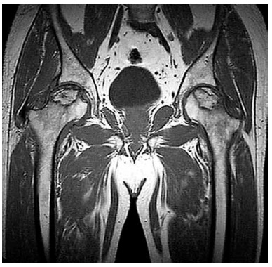
A hematoma encapsulado intraósseo nas cabeças femorais.
B osteocondroma nas cabeças femorais.
C osteonecrose avascular das cabeças femorais.
D osteomielite nas cabeças femorais.
Questão 727 · Fobia Social ou Transtorno de Ansiedade Social · Transtornos Ansiosos · 4000170062Mulher de 21 anos refere que está muito preocupada e com medo de não conseguir concluir seu curso universitário, pois tem apresentado sintomas de ansiedade intensa sempre que deve realizar uma apresentação oral, temendo ser reprovada novamente. Esse quadro inicia-se com rubor, taquicardia, sudorese, dor abdominal, náuseas e sensação de sufocamento. Considera-se uma pessoa retraída e, sempre que possível, prefere fazer tudo sozinha e assim evitar o julgamento dos outros. A hipótese diagnóstica é:
A transtorno de pânico.
B fobia específica.
C transtorno de ansiedade generalizada.
D transtorno de ansiedade social.
Questão 728 · Síndrome do Manguito Rotador · 4000170059Mulher de 56 anos há 9 meses apresenta dor na região anterolateral dos ombros com piora ao abduzir e elevar os braços e limitação para carregar pesos. Nega trauma associado, parestesias ou paresia dos membros. AP: diabética, hipertensa, dislipidêmica em uso irregular de losartana 100 mg/dia, metformina 1000 mg/dia e sinvastatina 40 mg/dia. Exame físico: dor à manobra do arco doloroso com abdução dos braços a 80º, teste de Neer, Hawkins e Jobe positivos bilateralmente. O diagnóstico e a conduta são:
A polineuropatia periférica diabética; eletroneuromiografia, antidepressivos tricíclicos e anticonvulsivantes.
B cervicobraquialgia; TC de coluna cervical e eletroneuromiografia, AINE e fisioterapia.
C miopatia necrosante imunomediada induzida por estatina; dosar CPK e anticorpos, eletroneuromiografia, biópsia muscular, altas doses de prednisona.
D doença do manguito rotador; fisioterapia, AINE, orientação para não realizar movimentos acima do nível dos ombros e evitar sobrecarga.
Questão 729 · Mielomeningocele e def eitos de f echamento posterior do tubo neural · Neurologia · 4000170022Recém-nascido de termo é avaliado na sala de parto apresentando deformidade craniana grande, com grande base de implantação fronto-parietal bilateral. Não apresenta outras anormalidades nos demais segmentos corporais. Foi realizada prova de transiluminação apresentada a seguir. Sobre o prognóstico neurológico dessa criança, pode-se afirmar que
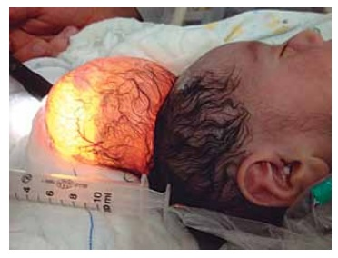
A é bom, pois a malformação se trata de meningocele, sem herniação de tecido cerebral.
B é reservado, pois a malformação compromete a drenagem venosa cerebral.
C depende da presença de outas malformações encefálicas intracranianas.
D é reservado, pois há chance de 90% de evolução para hidrocefalia.
Questão 730 · Glaucoma Congênito Primário · 4000170020Lactente de 1 mês de idade apresenta lacrimejamento e aparente aversão à luz há cerca de 2 semanas. AP: pré-natal sem intercorrências, gestação a termo, parto normal. Exame físico: fecha os olhos com força, principalmente à tentativa de avaliação dos olhos com uma lanterna, lacrimejamento bilateral, córnea de ambos os olhos com perda de transparência e aspecto azulado. A hipótese diagnóstica é:
A catarata congênita.
B conjuntivite gonocócica.
C toxoplasmose congênita.
D glaucoma congênito.
Questão 731 · Ref orma Psiquiátrica e Psiquiatria Social · A Saúde Mental no Brasil · Ref orma Psiquiátrica Brasileira · 4000169997A política de saúde mental brasileira, resultado da mobilização de usuários, familiares e trabalhadores da Saúde, iniciada na década de 1980,
A foi inspirada no modelo francês, proposto e defendido pelo médico psiquiatra Christophe Dejours.
B defende a luta antimanicomial, que contraindica a internação hospitalar por motivos psiquiátricos em qualquer situação.
C parte do pressuposto de que a maioria das pessoas, mesmo sem se dar conta, enxerga o mundo a partir de uma integração total entre a mente e o corpo, de forma que um não se separa do outro de modo algum.
D determina que, em caso de internação psiquiátrica voluntária, ela poderá ser encerrada por solicitação escrita do paciente ou por determinação do médico assistente.
E restringe o atendimento nos Centros de Atenção Psicossocial (CAPS) às pessoas com transtornos mentais leves ou moderados.
Questão 732 · Retinopatia da Prematuridade · 4000169962Na retinopatia da prematuridade, a cegueira decorre
A da inflamação do segmento anterior do olho.
B da isquemia do segmento anterior com consequente atrofia.
C do descolamento ou hemorragia da coroide.
D da rotura da retina.
E do descolamento da retina.
Questão 733 · Apresentação Clínica · 4000169950Menino, 3 anos de idade, apresenta febre, coriza e tosse há 2 dias. Está muito congesto, acorda à noite várias vezes, tossindo. Queixa-se de dor de ouvido e em região frontal, e reduziu a aceitação alimentar. Tem vacinação completa para a idade. Ao exame, está corado, hidratado, com respiração bucal. O cavo e as membranas timpânicas estão hiperemiados; o restante do exame é normal. A hipótese diagnóstica provável para o quadro apresentado é:
A infecção respiratória por
B infecção respiratória por
C rinofaringite.
D rinussinusite frontal.
E sinusite e otite por
Questão 734 · Doenças Congênitas CérvicoFaciais · Otorrinolaringologia · 4000169944Menina, 2 anos de idade, apresenta massa subcutânea, super cial, indolor, na região cervical mediana. Os pais referem que cresceu no último mês. Na ultrassonogra a, há lesão com cerca de 2 cm de diâmetro e presença de componente hiperecoico e estruturas calcificadas. A hipótese diagnóstica provável é:
A cisto branquial do primeiro arco.
B cisto branquial do segundo aparato faríngeo.
C cisto tireoglosso.
D cisto dermoide.
E linfagioma.
Questão 735 · Sumário dos Tóxicos e Antídotos · 4000169910A correta correlação entre tóxico e antídoto é:
A metanol e etilenoglicol.
B opioide e flumazenil.
C benzodiazepínico e naloxona.
D cianeto e hidroxicobalamina.
E betabloqueador e gluconato de cálcio.
Questão 736 · Tratamento · Apresentação Clínica · 4000169845Lactente de 8 meses, sexo masculino, apresentando, há mais 48 horas choro intenso, febre alta (39ºC) e dor à compressão do tragus. Os pais negam alteração da diurese, vômito ou desconforto respiratório. Negam u s o de antibiótico previamente. Exame físico geral: criança febril, taquicárdica sem alterações significativas além da otoscopia. Otoscopia bilateral: membrana timpânica abaulada, hiperemiada com perda do brilho. Para este caso, a conduta adequada é:
A Tratamento ambulatorial com prednisolona oral por 7 dias, amoxacilina oral associados a analgésico e antitérmicos.
B Internação em ambiente hospitalar com administração de ceftriaxona associada a analgésico e antitérmico endovenosos.
C Tratamento ambulatorial com amoxacilina oral associada a analgésico e antitérmicos.
D Tratamento ambulatorial com sulfametoxazol e trimetoprim associado a analgésico e antitérmicos.
Questão 737 · Maus tratos à crianças e adolescentes · Osteogênese Imperf eita · 4000169844Paciente do sexo masculino, 3 anos e 2 meses de idade. Pais referem à história de várias fraturas ósseas desde o nascimento, relacionadas a pequenos traumas. Ao exame, observa-se deformidade de ossos longos (encurvamento de fêmures e tortuosidade óssea em antebraços) e escleras azuladas. O estudo radiológico evidenciou: - radiografia simples de coluna e ossos longos: fraturas e calos ósseos; - radiografia simples do crânio: presença de ossos wormianos. Qual situação deve ser obrigatoriamente investigada antes de liberar a criança para sua casa?
A Raquitismo resistente à vitamina D
B Síndrome da criança espancada
C Hipofosfatasia congênita
D Raquitismo carencial grave
Questão 738 · Teste da orelhinha · Audiometria · 4000169712Recém-nascido com 35 semanas de idade gestacional, permaneceu internado na UTI Neonatal por dez dias recebeu antibiótico amicacina. O exame de triagem auditiva mais indicado nesta situação é:
A Audiometria.
B Reflexo cócleo-palpebral.
C Emissões Otoacústicas Evocadas Transientes.
D Potencial evocado auditivo de tronco encefálico.
Questão 739 · Transtornos de Personalidade · Introdução · 4000169671Transtorno de Personalidade Obsessivacompulsiva Anancástica Cássio é estudante do curso de Direito do último ano. Procura o psiquiatra porque está preocupado com o fato de que sua noiva irá deixá-lo como o fez a anterior. Ambas alegam que é impossível manter o relacionamento porque ele é in exível, quer tudo do seu jeito. Está sempre conferindo o que a noiva faz, não delegando nem mesmo o cuidado de coisas simples do cotidiano. Não bastasse isso, ele tem um armário com coisas que ninguém pode mexer, mas que não são úteis e que ela quer dar um m. Ele não deixa, mas não quer perdê-la. Cássio apresenta transtorno de personalidade:
A Antissocial.
B Evitador.
C Anancástico.
D Histriônico.
Questão 740 · Suicídio · Mitos e verdades sobre o suicídio · 4000169628Mulher, 38 anos de idade, auxiliar de cozinha, comparece a consulta em uma Unidade Básica de Saúde por tristeza, desânimo e diminuição do apetite há 6 meses, perdendo cerca de 8kg nos últimos meses. Não tem mais vontade de sair com os lhos para ir ao cinema nem passear na praça perto de casa, está tendo muita di culdade em se concentrar no trabalho, já esqueceu várias vezes de pôr sal nas comidas que prepara. No último mês, faltou com frequência ao trabalho porque não consegue se levantar da cama pela manhã. Demora bastante para pegar no sono e acorda diversas vezes durante a noite, o que a incomoda muito. Algumas vezes, chega a pensar se vale realmente a pena viver a vida dessa forma. Possui hipertensão arterial bem controlada com uso de losartana 100 mg/dia. Durante o atendimento, a paciente foi questionada sobre pensamentos suicidas, informando que às vezes tinha ideias de tirar sua própria vida. Não tinha planejado como fazê-lo, nem desejava tentar suicídio no momento. Sobre a conduta do profissional na consulta e a conduta terapêutica nesse caso, é possível dizer:
A A conduta foi inadequada, pois perguntar sobre ideação suicida aumenta o risco da paciente tentar suicídio. Deve-se encaminhá-la com urgência para emergência psiquiátrica para possível internação.
B A conduta foi inadequada, pois perguntar sobre ideação suicida aumenta o risco da paciente tentar suicídio. Deve-se encaminhar ao CAPS com urgência para avaliação psiquiátrica imediata.
C A conduta foi adequada, pois o risco de suicídio deve ser abordado em consulta. Deve-se prescrever lítio na dose de 900 mg/dia e mobilizar a rede de suporte da paciente.
D A conduta foi adequada, pois o risco de suicídio deve ser abordado em consulta. Deve-se aprofundar a investigação, mobilizar rede de suporte da paciente e marcar um retorno breve.
E A conduta foi inadequada, pois perguntar sobre ideação suicida aumenta o risco da paciente tentar suicídio. Deve-se prescrever lítio na dose de 900 mg/dia e mobilizar a rede de suporte da paciente.
Questão 741 · Tratamento da Depressão · Depressão · 4000169627Mulher, 38 anos de idade, auxiliar de cozinha, comparece a consulta em uma Unidade Básica de Saúde por tristeza, desânimo e diminuição do apetite há 6 meses, perdendo cerca de 8kg nos últimos meses. Não tem mais vontade de sair com os lhos para ir ao cinema nem passear na praça perto de casa, está tendo muita di culdade em se concentrar no trabalho, já esqueceu várias vezes de pôr sal nas comidas que prepara. No último mês, faltou com frequência ao trabalho porque não consegue se levantar da cama pela manhã. Demora bastante para pegar no sono e acorda diversas vezes durante a noite, o que a incomoda muito. Algumas vezes, chega a pensar se vale realmente a pena viver a vida dessa forma. Possui hipertensão arterial bem controlada com uso de losartana 100 mg/dia. A conduta terapêutica para a paciente, nesse momento, seria:
A Iniciar quetiapina 25 mg/dia, solicitar exames laboratoriais e encaminhar ao CAPS (centro de atenção psicossocial) para acompanhamento psiquiátrico e psicoterapia.
B Iniciar haloperidol 10 mg/dia, solicitar exames laboratoriais e encaminhar ao CAPS (centro de atenção psicossocial) para acompanhamento psiquiátrico e psicoterapia.
C Iniciar amitriptilina 25 mg/dia e encaminhar ao CAPS (centro de atenção psicossocial) para psicoterapia, sem necessidade de exames complementares no momento.
D Iniciar citalopram 20 mg/dia, encaminhar para continuar acompanhamento em psicoterapia e indicar atividades física e de lazer, sem necessidade de exames complementares no momento.
E Iniciar sertralina 50 mg/dia e zolpidem 10mg à noite, solicitar exames laboratoriais, encaminhar a paciente para acompanhamento conjunto com equipe multidisciplinar e indicar atividades física e de lazer.
Questão 742 · Abstinência de Álcool · Delirium Tremens · 4000169579Durante seu plantão, você é chamado pela enfermagem, pois um paciente, que está em atendimento para avaliação de uma ferida no pé, ca agitado e se dirige à lixeira para urinar. Além disso, acha que o seu estetoscópio é uma cobra. Na triagem, o paciente informou que era alcoolista, mas não bebia álcool há três dias. O paciente inicia com tremores, sudorese intensa, hipertensão e taquicardia. Está irritado e com leve desorientação alopsíquica. Assinalar a alternativa que apresenta o diagnóstico mais provável:
A Transtorno psicótico induzido por uso do álcool.
B Delirium tremens.
C Intoxicação por álcool idiossincrática.
D Psicose atípica.
Questão 743 · Suicídio · Depressão · 4000169578Homem de 45 anos, casado, chega ao consultório referindo cansaço intenso, di culdade de concentração e diminuição do apetite. Além disso, percebe-se triste, choroso e, apesar de cansado, tem acordado em torno das 5h30 da manhã, cerca de 1h antes do necessário. Diz que se sente ""um peso para os familiares"", pois não tem conseguido trabalhar regularmente, nem sente prazer em realizar atividades que antes gostava de fazer, como assistir ao seu time de futebol jogar e ficar com a família. Tais sintomas estão presentes há mais de duas semanas. Sobre a conduta nesse momento da entrevista, assinalar a alternativa CORRETA:
A Chamar os familiares para internar o paciente compulsoriamente.
B Fluoxetina 40mg e não perguntar sobre suicídio, pois poderia dar-lhe ideia de fazê-lo.
C Questionar sobre suicídio para avaliar a gravidade dos sintomas e melhor orientar a conduta.
D Solicitar RM de crânio com contraste, endoscopia e ecografia abdominal total para elucidar o diagnóstico.
Questão 744 · Blues do Puerpério · Depressão Puerperal · Depressão · 4000169566M., 23 anos, solteira, vem ao consultório para realizar consulta de revisão. Ela tem um bebê de dois meses de idade e diz que ""não vai dar conta das exigências maternas"". Sente-se sozinha e desamparada. Apresenta, desde então, disforia, anedonia, insônia e ansiedade. Sem outras alterações clínicas. Assinalar a alternativa que melhor define a condição da paciente:
A Blues pós-parto.
B Psicose puerperal.
C Depressão perinatal.
D Transtorno disfórico pós-parto.
Questão 745 · Transtornos do Humor · Síndrome prémenstrual · 4000169553Paciente do sexo feminino, 23 anos, relata tristeza intensa, pois foi demitida devido a repetidas faltas no trabalho. Diz que, desde seus 22 anos, na maioria dos meses, sente uma mudança em ciclos, com um período de alguns dias de irritabilidade, labilidade, letargia, avidez por doce e uma ""sensação de inchaço"", que ocorrem quase todos os meses. Percebe que, logo após a menstruação, a ""vida volta a car leve e colorida"". Associa suas faltas ao trabalho a esses períodos de ""mudança do humor e inchaços"". Assinalar a alternativa que apresenta o diagnóstico mais provável:
A Dismenorreia.
B Transtorno ciclotímico.
C Transtorno de personalidade histriônica.
D Transtorno disfórico pré-menstrual.
Questão 746 · Manejo dos Nódulos Tireoidianos · 4000169538Acerca dos nódulos de tireoide, assinalar a alternativa INCORRETA:
A Os seguintes achados de exame físico são sugestivos de malignidade: crescimento rápido, paralisia de prega vocal ipsilateral ao nódulo, fixação do nódulo aos tecidos vizinhos, nódulo muito endurecido, linfonodomegalia regional ipsilateral.
B Se o nódulo tem na citologia atípias de significado indeterminado (Bethesda III) o risco de malignidade associado é de 30-45%.
C A punção aspirativa com agulha fina deve ser recomendada para nódulos maiores ou iguais a 1cm, no seu maior diâmetro, com características ultrassonográficas altamente suspeitas.
D Aumento da vascularização intranodular, limites imprecisos, margens irregulares e presença de microcalcificações são alguns dos achados ultrassonográficos que sugerem malignidade.
Questão 747 · Apresentação Clínica · 4000169511Marina, 19 anos, procurou atendimento na Unidade de Saúde por dor de garganta, mal-estar e febre há sete dias. Ao exame, apresenta-se febril, prostrada, eupneica, com hiperemia de orofaringe, com exsudato amigdaliano branco acinzentado e linfonodos, em região cervical anterior e posterior, bilaterais e palpáveis. Qual a hipótese diagnóstica mais provável?
A Faringoamigdalite por vírus Epstein-Barr.
B Faringoamigdalite estreptocócica.
C Faringoamigdalite por adenovírus.
D Faringoamigdalite por citomegalovírus.
Questão 748 · Diagnóstico do Autismo · Transtorno do Espectro Autista TEA · 4000169502Sobre o Transtorno do Espectro Autista, assinalar a alternativa CORRETA:
A Raramente existem sintomas antes dos oito anos de idade.
B É mais comum no sexo feminino.
C É caracterizado por deficiências na comunicação social, comportamentos restritos e repetitivos.
D Frequente surdez associada.
Questão 749 · Psiquiatria Inf antil · Transtorno de Oposição e Desaf io TOD · 4000169495Perda de paciência frequente, postura desafiadora; recusa em aceitar ordens ou solicitações de adultos, com os quais discute com frequência; tende a responsabilizar os outros pelos seus atos; frequentemente perturba os outros de forma deliberada. As características expostas são compatíveis com qual transtorno comportamental da infância?
A Transtorno do déficit de atenção e hiperatividade.
B Transtorno da personalidade antissocial.
C Transtorno opositor desafiante.
D Transtorno explosivo intermitente.
Questão 750 · Pediatria · LaringiteLaringotraqueíte viral crupe · 4000169412Assinale a alternativa que apresenta o som que sugere uma obstrução das vias aéreas superiores.
A estridor
B murmúrio vesicular
C sibilos
D estertores crepitantes
E estertores subcrepitantes
Questão 751 · Transtorno Alimentares · 4000169371Uma paciente de dezessete anos de idade deu entrada no serviço de emergência do hospital, levada por seus pais, devido a vômitos e a rebaixamento do nível de consciência. Não havia relato de febre. Negou comorbidades clínicas. Seus pais relataram que a jovem estava passando por um momento difícil, estava muito tensa com seus estudos, tinha emagrecido muito e cado com a imunidade mais fraca, apresentando muitas infecções urinárias e, até mesmo, Candida sp. Acreditam que, por medo de novas infecções, a paciente tem bebido água em excesso. Esta noite, devido ao quadro atual, resolveram levar a lha ao pronto-socorro. Com base nesse caso hipotético, é correto afirmar que a melhor conduta inicial será
A passar sonda nasogástrica, realizar lavagem com carvão ativado, coletar amostra de urina e encaminhar ao CEATOX.
B coletar exames laboratoriais, com eletrólitos, gasometria e glicemia, e iniciar hidratação vigorosa.
C encaminhar a paciente para tomografia computadorizada de crânio com urgência.
D solicitar avaliação da equipe de psiquiatria, uma vez que não há indícios de doença orgânica no quadro clínico apresentado.
E iniciar ceftriaxone 2 g imediatamente e solicitar coleta de liquor.
Revisar: possível letra faltando em enunciado
Questão 752 · Quadro Clínico do mieloma múltiplo MM · 4000169300Homem de 60 anos, diabético, com quadro de fraqueza e astenia há 1 mês. Com dor progressiva de região lombar e braço direito. Na última semana apresentou constipação e confusão mental, evoluindo com sonolência há 2 dias. Foi levado pelos familiares a unidade básica de saúde onde os seguintes exames foram realizados: Hb: 8,1g/dL; Ht: 25%; Leucócitos: 7.800/mm³; Plaquetas: 160.000/mm³; VCM: 85; HCM: 30; Ureia: 88mg/dL; Creatinina: 2,0mg/dL; Albumina: 3,0g/dL; Glicose: 98mg/dL; Sódio: 135mEq/L; Cloro: 110mEq/L; Gasometria: pH/PCO₂/HCO₃; 7,20/35/18. Urina I: pH: 6,0;Densidade: 1030; Proteínas: 2+/4+; Glicose: 1+/4+; Leucócitos: 1/campo; Hemácias: 2/campo; Qual a principal hipótese diagnóstica?
A Mieloma múltiplo.
B Síndrome de Sjogren.
C Intoxicação por metformina.
D Glomerulonefrite rapidamente progressiva.
Questão 753 · Osteomielite · A Criança Claudicante · 4000169278Criança de 7 anos apresentou trauma em perna direita durante uma partida de futebol. No dia do trauma, não teve dor ou limitação dos movimentos. Após 5 dias apresentou queda do estado geral, febre, dor de forte intensidade no terço médio da perna direita e di culdade para caminhar. Qual a hipótese diagnóstica mais provável e o tratamento mais adequado para este caso:
A Pioartrite, ceftriaxona.
B Osteomielite, oxacilina.
C Fratura, imobilição e analgesia.
D Luxação, redução no centro cirúrgico.
Questão 754 · Psiquiatria Inf antil · Transtorno do Espectro Autista TEA · 4000169269Criança de 5 anos é levada pelos pais ao consultório, segundo o que relatam, a escola tem se queixado da criança por não acompanhar os colegas no rendimento geral e por não conversar com os amigos e professores. Conforme o médico fazia mais perguntas sobre a criança, os pais explicam que ele sempre foi ""difícil de lidar"", que se irrita muito quando tocam nele, que faz ""escândalos"" quando tentam arrumar o cabelo dele. Mas que adora brincar com dinossauros, inclusive suas primeiras palavras se relacionavam a esses animais, sabendo mais de 30 nomes diferentes. Durante a consulta toda, a criança quase não respondeu às indagações da pediatra e não tirava o olho de uma figura colada na balança. O quadro descrito tem como provável diagnóstico:
A Paralisia cerebral.
B Transtorno opositor desafiador.
C Transtorno do espectro autista.
D Transtorno de déficit de atenção.
Questão 755 · Faringites Bacterianas · 4000169167Marque a opção correta:
A O quadro clínico de orofaringite gonocócica pode variar de simples eritema até a presença de secreção purulenta, ulcerações com pseudomembrana e adenopatia cervical.
B Na sífilis, a presença do sinal de Romberg na
C Na úlcera genital sifilítica (cancro duro), o tratamento das parcerias sexuais é recomendado mesmo quando assintomáticos com dose única de benzilpenicilina benzatina 2,4 milhões UI.
D A artrite gonocócica supurativa se caracteriza por poliartralgia migratória, tenossinovites e pústulas dolorosas disseminadas devido a bacteremia.
E O tratamento da sífilis só deve ser recomendado exclusivamente para os casos confirmados laboratorialmente através de teste treponêmico e não treponêmico reagentes.
Questão 756 · Intoxicações Exógenas · Síndrome Adrenérgica · 4000169063Criança de 2,5 anos, sexo masculino, foi levada ao pronto-socorro com suspeita de ter ingerido uma caixa de medicamentos. Pais referem que a criança estava brincando com caixas de remédios, com diversos comprimidos no chão e outros na boca. Ao exame físico, o paciente apresenta-se agitado, face avermelhada, com temperatura de 37,8 °C, taquicárdica, pressão arterial de 110 × 80 mmHg, midriática, com boca e olhos secos e FR: 42 ipm. Dentre os seguintes medicamentos, o que mais provavelmente corresponde ao quadro da criança é
A Amiodarona 200 mg.
B Sertralina 50 mg.
C Diazepam 10 mg.
D Levotiroxina 50 mg.
E Loratadina 10 mg.
Questão 757 · Ferramentas de abordagem f amiliar · Transtornos Ansiosos · 4000168931Médica atende mulher de 25 anos com queixa de ansiedade, di culdade para dormir e leve dor abdominal. História clinica e exame físico sem achados de relevância ou sinais de alerta para o caso. Ao realizar a abordagem familiar, descobre que a paciente se casou há poucos meses e está tendo di culdade para as tarefas de cotidiano com seu parceiro, o que tem aumentado seu nível de estresse e prejudicado seu trabalho. Que ferramenta de abordagem familiar foi utilizada no caso?
A Ciclo de Vida da Família.
B Genograma.
C Ecomapa.
D PRACTICE.
Questão 758 · Transtornos do Humor · Depressão · 4000168892So a mulher, 39 anos, cabelereira, casada, G2A0P2, chega a Unidade Básica de Saúde para consulta de rotina. Relata perceber, há cerca de 3 meses, dores pelo corpo com sensação de fadiga e falta de energia para realizar, tarefas habituais. Percebeu aumento de irritabilidade, Insônia de manutenção e aumento da apetite com ganho ponderal de 6 kg, algo que a incomoda muito porque tem medo de engordar. Observa que esse quadro piorou nos últimos 20 dias e não tem conseguido realizar as atividades que antes gostava, como caminhar ou cozinhar, diz não ver mais graça. Não relaciona sua situação a nenhum fator ambiental. Informa episódio semelhante aos 30 anos mas, na época, não buscou ajuda. A hipótese diagnóstica mais provável e a conduta que deve ser sugerida são:
A Transtorno do sintoma somático, com predomínio de dor; benzodiazepínicos e atividade física.
B Transtorno depressivo maior; inibidor preferencial da recaptação de serotonina e psicoterapia.
C Transtorno alimentar, provável compulsão alimentar periódica; inibidor preferencial da recaptação de serotonina
D Transtorno depressivo persistente (distimia); antidepressivo tricíclico, benzodiazepínico para insónia psicoterapia.
Questão 759 · Dependência de Tabaco · 4000168756Em relação à abordagem para cessação do tabagismo no âmbito do Sistema Único de Saúde, analise as a rmativas abaixo como Verdadeiras (V) ou Falsas (F) e, em seguida, assinale a alternativa que apresenta a sequência CORRETA. I. O uso de adesivos transdérmicos definicotina pode ser iniciado enquanto o paciente ainda estiver fumando, como forma de motivação para o abandono do hábito de fumar. II. A terapia cognitivo-comportamental consiste em fornecer informações sobre os riscos do tabagismo e os benefícios de parar de fumar, e no estimulo ao autocontrole ou auto-manejo para que os indivíduos possam administrar o ciclo da dependência. III. É recomendado que pacientes tabagistas que relatam história pregressa de transtorno psiquiátrico ao pro ssional de saúde que o recebe, sejam encaminhados (caso ainda não tenham sido) para avaliação de profissional da saúde mental. IV. O acompanhamento médico deve ser semanal por três meses, em seguida, quinzenal por mais dois meses, e mensal até um ano. Entre os critérios de prescrição de apoio medicamentoso, estão os fumantes com escore do teste de Fagerström < 4
A I (V); II (F); III (F); IV (V)
B I (V); II (V); III (F); IV (V)
C I (F); II (V); III (V); IV (F)
D I (F); II (F); III (V); IV (F)
Questão 760 · Dependência de Álcool · Álcool · 4000168751O alcoolismo um problema prevalente e complexo. Os pro ssionais que atuam nas Unidades Básicas de Saúde são os mais indicados para a detecção precoce para realizar alguma intervenção em relação ao uso abusivo do álcool. Identifique a forma CORRETA sobre essa abordagem na atenção primária à saúde:
A A equipe de saúde, coordenada pelo médico, deve desenvolver campanhas alertando sobre os riscos do consumo de álcool e implementar estratégias para diminuir a comercialização deste na sua área de atuação
B A Intervenção Breve é uma técnica de motivação para a mudança de comportamentos de saúde direcionada, principalmente, para pessoas que fazem uso abusivo de álcool ou outras drogas
C O médico deve prescrever tratamento medicamentoso a todo paciente que faz uso abusivo de álcool, buscando gerar um efeito aversivo, diminuindo assim seu consumo
D Sempre que identificado, o paciente com problemas relacionados ao álcool deve ser encaminhado para atendimento especializado
Questão 761 · Tratamento da Depressão · Depressão · 4000168749Paciente masculino de 49 anos, em tratamento medicamentoso há seis meses para transtorno depressivo maior grave, sem sintomas psicóticos, compareceu para atendimento na UBS, relatando remissão total dos sintomas e recuperação de sua capacidade funcional. Em sua historia pregressa, relata diagnóstico de depressão aos 20 anos de idade após falecimento de sua mãe. Na época recebeu alta por cura sem f azer uso de medicamentos. No inicio do episódio atual apresentou pensamentos de autoextermínio, sem planejamento em sua família há histórico de transtornos mentais um tio faleceu por suicídio. Dentre as condutas abaixo, qual a MAIS ADEQUADA para esse caso?
A Mantar o tratamento medicamentoso com a mesma dose que levou à remissão dos sintomas até completar 12 meses ou mais, levando-se em consideração o risco de recorrência
B Reduzir a dose do antidepressivo e manter tratamento por mais 12 semanas
C Suspender a medicação antidepressiva e compartilhar o caso com o psicólogo do Núcleo de Apoio à Saúde da Família para inserir paciente em grupo de psicoterapia
D Suspender o tratamento farmacológico e dar alta, pois houve remissão total dos sintomas e o paciente completou 6 meses de acompanhamento
Questão 762 · Psiquiatria Inf antil · Violência · 4000168724A Lei n 13.185, de 6 de novembro de 2015, instituiu o Programa de Combate à Intimidação Sistemática (Bullying) no Brasil. Na referida lei, o Bullying é definido como "todo ato de violência física ou psicológica, intencional e repetitivo que ocorre sem motivação evidente, praticado por individuo ou grupo, contra uma ou mais pessoas, com o objetivo de intimidá-la ou agredi-la, causando dor e angustia à vitima, e m uma relação de desequilíbrio de poder entre as partes envolvidas (Artigo 1", inciso 1) Espaços como o ambiente i escolar são mais propícios para esse tipo de violência entre crianças e adolescentes e q u e podem desencadear problemas de aprendizagem e traumas psíquicos entre as vitimas e os envolvidos. Analise as afirmativas abaixo e marque a alternativa CORRETA: I. As vitimas de bullying têm di culdade de reconhecer emoções sentem mais modo a mais estresse, o que gera dificuldade no aprendizado e vulnerabilidade aos transtornos de ansiedade e humor. II. Dependendo do grau de sofrimento vivido pela criança, ela poderá sentir-se ancorada a construções inconscientes de pensamentos de vingança e de suicídio, ou manifestar determinados tipos de comportamentos agressivos ou violentos, prejudicais a si mesmo e à sociedade; III. As vitimas de bullying apresentam resultados escolares piores, maiores chances de abandonar os estudos após o ensino médio, além de, durante o período escolar comum, tenderem duas vezes mais a faltar a três vezes mais a se sentirem estranhas; IV. Não é considerado como bullying atos praticados contra alunos por professores e outros pro ssionais integrantes da escola e da comunidade escolar.
A Somente as afirmativas I e III são verdadeiras
B As afirmativas I, II e IV são verdadeiras
C Apenas a afirmativa IV é falsa
D Todas as afirmativas são verdadeiras
Questão 763 · Psiquiatria Inf antil · 4000168723O ensaio publicado em maio de 2020 pela Revista Ciência e Saúde Coletiva, da Associação Brasileira d e Saúde Coletiva, intitulado "O uso intensivo da internet por crianças e adolescentes no contexto da Covid-19 e os riscos para violências autoin ingidas", traz reflexões referentes aos impactos do isolamento social imposto pela pandemia da Covid-19 e sobre o uso intensivo da internet entre crianças e adolescentes e suas possíveis consequências para a prática de violências autoin ingidas. Quanto à saúde mental de crianças e adolescentes, dentre as considerações abaixo, qual é considerada ERRADA:
A Há algumas práticas de autoagressões, que não necessariamente envolvem transtornos de ordem emocional ou quadros depressivos e que são vistos como práticas culturais aceitas socialmente no universo online.
B Não é considerada necessária a criação de protocolos e medidas exclusivas para os adolescentes quanto à prevenção das formas de violências autoinflingidas
C O uso excessivo da internet pode também gerar uma forma de adição, um transtorno que gera dependência, podendo se expressar em várias formas: cyber sexo, relacional (das redes sociais), adição por jogos
D Pode ocorrer acirramento de vulnerabilidades para ideações e tentativas de suicídio quando a criança ou o adolescente apresenta, previamente, condições especificas da saúde mental que demandem monitoramento
Questão 764 · Teste do Olhinho · 4000168721Em relação à avaliação oftalmológica em crianças menores de cinco anos, assinale alternativa CORRETA:
A A avaliação do fundo de olho com dilatação pupilar medicamentosa está recomendada a partir dos dois anos de idade e deve ser realizada nas consultas oftalmológicas de rotina
B Na avaliação oftalmológica de um lactente de sete meses é esperado que ele siga os objetos com os olhos, mas ainda possa apresentar não coordenação dos movimentos oculares em movimentos horizontais
C O "teste do olhinho" que avalia o reflexo luminoso vermelho à luz nos olhos da criança deve ser realizado nas consultas de rotina pediátrica ao menos três vezes ao ano até os três anos de idade
D O exame de acuidade visual utilizando optótipos gráficos é possível em crianças com desenvolvimento normal, a partir do momento em que a criança começa a ler, devendo ser feito de rotina em todas as consultas a partir desse momento.
Questão 765 · Tratamento · 4000168674Numa criança de três anos com quadro de otite média aguda, qual dos achados abaixo não justi ca, obrigatoriamente; o uso de antibiótico:
A Otorreia purulenta;
B Otalgia há mais de 48 horas;
C Otalgia moderada a intensa;
D Febre maior que 39°C;
E Otite média aguda bilateral.
Revisar: possível letra faltando em enunciado
Questão 766 · Apresentação Clínica · 4000168673Uma criança de seis anos apresenta febre, odinofagia e dor no anco esquerdo há 15 dias. Ao exame físico, observa-se faringoamigdalite eritemato-pultácea, além de linfonodomegalia cervical, axilar e epitroclear. O exame do abdome não foi possível, pois a criança não cooperou. Com base no enunciado, o diagnóstico mais provável neste casa seria:
A Faringoamigdalïte estreptocócica;
B Sífilis secundária;
C Doença de Still;
D Mononucleose infecciosa;
E Estomatite herpética.
Questão 767 · Sintomas e Características Gerais · 4000168612Os escores AGES e AMES são os mais empregados para estrati car pacientes com neoplasia de tireóide. Das variáveis listadas abaixo, não faz parte destes escores:
A Sexo;
B Idade,
C Extensão tumoral;
D Presença de metástase;
E Subtipo histopatológico.
Questão 768 · Transtorno de Pânico · 4000168364Paciente de 25 anos buscou atendimento em razão de ataques súbitos de palpitação, sudorese, tremor, sensação de falta de ar, dor torácica, tonturas e medo de morrer. Procurara a Emergência algumas vezes, mas, ao ser avaliada, informavam-lhe não haver qualquer alteração nos exames realizados. Negou uso de substâncias aditivas. Referiu que, desde que passou a apresentar os ataques, tinha receio de sair de casa e cava constantemente preocupada com a possibilidade de eles tornarem a ocorrer. Acerca desse transtorno, assinale a assertiva correta.
A Os tratamentos de primeira linha são os inibidores seletivos da recaptação de seratonina, venlafaxina e terapia cognitivo-comportamental.
B Benzodiazepínico de uso contínuo por longo prazo está indicado.
C Indivíduos do sexo masculino são mais frequentemente afetados por esse transtorno do que os do feminino, em uma razão em torno de 2:1.
D Cerca de 70% dos pacientes com esse transtorno não respondem à intervenção de primeira linha.
Questão 769 · Abscesso Periamigdaliano · Pediatria · 4000168268Menina de 5 anos foi trazida à Emergência por quadro de febre, lesões aftosas e adenite cervical. A mãe relatou que, no último ano, a lha apresentara episódios recorrentes de amigdalite, acompanhados de dor abdominal, artralgias, adenomegalias e febre, com duração de 4 dias. Nas crises, costumava fazer uso de antibióticos por 10 dias. Ao exame físico, a paciente encontrava-se em bom estado geral, mas foram observadas adenomegalias não dolorosas bilaterais na região cervical anterior, lesões tipo aftas na cavidade oral e amígdalas hiperemiadas sem placas. O restante do exame não revelou outras particularidades. O hemograma estava normal, mas a proteína C reativa encontrava-se elevada. Que hipótese diagnóstica, dentre as abaixo, é a mais provável?
A Febre familiar do Mediterrâneo.
B Amigdalite bacteriana de repetição.
C Imunodeficiência primária.
D Síndrome de febre periódica, estomatite aftosa, faringite e adenite cervical (PFAPA).
Questão 770 · Transtorno do Espectro Autista TEA · 4000168267Criança de 2 anos e 8 meses foi trazida à consulta por atraso na aquisição da fala. Em seu histórico, não havia registro de intercorrências na gestação, no parto e no período neonatal. Os pais informaram que o lho vinha se desenvolvendo bem até a idade de 1 ano e 6 meses, quando foi constatada piora na interação e qualidade do olhar, tendo começado a ficar alheio às outras crianças. Com base no quadro, assinale a assertiva correta.
A Para confirmar autismo, é necessário identificar um repertório restrito de interesses.
B Para confirmar autismo, é necessário aguardar até que a criança complete 3 anos.
C Autismo é mais frequente em meninas do que em meninos.
D A prevalência de epilepsia das crianças com autismo é igual à das crianças sem autismo.
Questão 771 · Classif icação · 4000168229Em um escolar com rinite persistente leve, podemos concluir que ele apresenta:
A Comprometimento do sono
B Prejuízo no rendimento escolar
C Presença de espirros, prurido nasal ou ocular por 4 ou mais dias na semana e em 4 ou mais sema nas consecutivas.
D Presença de obstrução nasal e espirros em salva, em 4 ou menos dias na semana por 3 semanas consecutivas
E Rinorreia hialina que prejudica as atividades de lazer.
Questão 772 · Dif erenças Clínicas entre vertigem de origem central e perif érica · Eletrocardiograma · 4000168179Vertigem Posicional Paroxística Benigna Considere dois pacientes que buscaram atendimento médico no ambulatório de um hospital com queixa de tonteira. O paciente A é um homem de 73 anos de idade, hipertenso, com relato de sensação de rotação do ambiente que acontece pela manhã, ao se levantar da cama, associada à náusea, que passa muito rapidamente, embora ele permaneça por alguns minutos sudorético, nauseado e com as mãos frias. A paciente B é uma mulher de 54 anos de idade, hipertensa e diabética, com relato de sensação de desmaio, sudorese, palpitações e escurecimento visual que podem acontecer em repouso ou esforço, e duram alguns minutos, com remissão espontânea. Considerando as prováveis origens das tonteiras desses pacientes, os exames inicialmente indicados para auxílio diagnóstico são, respectivamente,
A manobra de Dix-Hallpike e eletrocardiograma (ECG).
B eletronistagmografia e Holter de 24 horas.
C Holter de 24 horas e manobra de Dix-Hallpike.
D eletronistagmografia e ECG.
Questão 773 · Epicondilites · Síndromes Compressivas dos Membros Superiores · 4000168155Considere que um paciente do sexo masculino, 41 anos de idade, advogado, procura atendimento ambulatorial com dor em cotovelo esquerdo e formigamento em mãos. Refere que, desde que começou a praticar golfe, três vezes por semana, passou a sentir dor no cotovelo associada à parestesia do quarto e quinto dedos. Nesse caso, o diagnóstico provável e a complicação associada, são, respectivamente,
A artrite de cotovelo e compressão de nervo mediano por síndrome do túnel cubital.
B epicondilite medial e compressão de nervo ulnar por síndrome do túnel cubital.
C epicondilite lateral e compressão de nervo ulnar por síndrome do túnel cubital.
D bursite olecraniana e compressão de nervo radial por síndrome do túnel cubital.
Questão 774 · Osteomielite · 4000168116Sobre crianças com Osteomielite Aguda Hematogênica, leia as assertivas a seguir e assinale a alternativa CORRETA. I. Infecção envolve, em geral, metáfises de ossos longos com crescimento rápido. II. Com o aumento do abscesso, cresce a pressão intramedular que leva a isquemia cortical e escape do material purulento para o espaço subperiosteal. III. Em crianças menores de 2 anos, pode haver propagação da infecção para a epífise.
A I está correta.
B II está correta.
C I e II estão corretas.
D II e III estão corretas.
E I, II e III estão corretas.
Questão 775 · Intoxicação por Opioides · Opioides · 4000168106Paciente de 54 anos, portador de neoplasia de próstata com metástase óssea, porém independentemente para as suas atividades básicas diárias, realizando tratamento com hormonioterapia, está em uso de Paracetamol 500mg associado a 30mg de codeína a cada 6 horas para dor, porém hoje tomou 2 comprimidos de Mor na 10mg devido à piora da dor. Nesse cenário é admitido em serviço de emergência com quadro de rebaixamento do nível de consciência, com pupilas mióticas puntiformes, pressão arterial de 80x40 mmHg, frequência cardíaca de 54bpm e frequência respiratória de 6ipm. Qual é o manejo mais adequado para esse paciente?
A Infusão de Flumazenil por via intravenosa imediatamente.
B Infusão de Naloxona por via intravenosa imediatamente.
C Infusão de solução de bicarbonato de sódio a 8,4% com dose de 1 mEq/kg.
D Infusão de atropina na dose de 1 mg por via intravenosa.
E Como o paciente encontra-se em estado de terminalidade, oferecer apenas medidas de conforto, incluindo sedação e analgesia.
Questão 776 · Psicof armacologia · Transtorno Alimentares · Tratamento da Depressão · 4000168056Sobre o tratamento da depressão na atenção primária, assinale a alternativa CORRETA.
A A fluoxetina é uma opção terapêutica, sendo indicada também em outras condições como a bulimia e a síndrome do pânico, porém pode apresentar efeitos colaterais como alterações gastrointestinais.
B A Venlafaxina é uma opção terapêutica, sendo indicada também em outras condições como o transtorno de ansiedade generalizada e tem como vantagem não apresentar risco de síndrome de descontinuidade caso o paciente interrompa abruptamente o seu uso.
C A Mirtazapina é uma opção terapêutica, sendo indicada também nas compulsões alimentares, seu principal efeito colateral é a perda de peso excessiva e a xerostomia.
D A Vortioxetina é uma opção terapêutica, porém é proscrita em pacientes com alterações cognitivas uma vez que piora a velocidade de resposta do sistema nervoso central agravando os quadros demenciais.
E A Paroxetina é uma opção terapêutica, sendo indicada também no tratamento do transtorno de ansiedade social e tem como característica o fato de não apresentar efeitos colaterais relacionados a função sexual do paciente.
Questão 777 · Apresentação Clínica · Tratamento · Diagnóstico · 4000168050Especialmente nos meses frios, a laringite aguda é uma das causas frequentes de atendimento pediátrico. Quanto ao diagnóstico e tratamento da laringite aguda, assinale a alternativa CORRETA.
A A presença de estridor ao repouso é um sinal de crise classificada como grave.
B A tosse produtiva principalmente ao deitar é o sintoma clínico mais comumente relatado.
C Inalação com broncodilatadores de ação curta podem ajudar na melhora do escore de sintomas.
D O tratamento com adrenalina inalatória é indicado em todas as crises, independentemente da gravidade.
E Anti-inflamatórios não hormonais, como o ibuprofeno, está indicado especialmente nas crianças menores de 2 anos de idade.
Questão 778 · Síndrome Hipnossedativa · Síndrome Anticolinérgica · Síndrome Narcótica · 4000168016Enumere a síndrome (agentes) de acordo com os sintomas mais comuns: I. Colinérgica (muscarínica) II. Anticolinérgica III. Simpaticomimética IV. Narcóticos V Barbitúricos [ ] Hipoventilação e apnéia, hipotermia, hipotensão, miose e nistagmo [ ] Mioclonia, hiperreatividade, tremores e taquicardia [ ] Bradicardia, miose, aumento de secreção, vômitos e diarréia [ ] Febre, taquicardia, hipertensão, arritmias, pele mucosas secas, midríase, visão borrada, convulsão e coma [ ] Hipotensão, hipotermia, hiporreflexia, resposta rápida a antagonista
A E – C – A – B – D
B D – C – A – B – E
C E – C – B – A – D
D D – A – B – C – E
E C – A – B – D – E
Questão 779 · Intoxicações Exógenas · 4000168015J.F., 12 anos, é atendido no pronto-socorro pediátrico por sonolência e di culdade de deambulação. Há 3 dias, sempre no mesmo horário, por volta do meio dia, a menina apresenta sonolência, fala sem nex o, movimentos irregulares e di culdade de marcha que melhoram com o passar do dia. Nega febre, vômitos e outros sintomas. Antecedente pessoais nada digno denota. Antecedentes familiares: irmão com diagnóstico de epilepsia. Ao exame físico: bom estado geral, acianótica, anictérica, afebril, F C = 100 bpm, FR= 24 ipm, PA= 110x70 mmHg. O exame neurológico revela paciente sonolenta, desorientada, com nistagmo bilateral, força muscular de difícil avaliação, reflexos presentes, marcha de base alargada. Qual a principal suspeita diagnóstica?
A Epilepsia
B Intoxicação exógena
C Tumor de cerebelo
D Malformação arteriovenosa
E Encefalite
Questão 780 · Apresentação Clínica · Paralisia Cerebral · Fisiopatologia e Fatores de RIsco · 4000168006A prematuridade é um importante fator de risco para paralisia cerebral (PC), cuja prevalência é tanto maior quanto menor a idade gestacional. A forma de PC que frequentemente se associa com a prematuridade é a diplegia espástica. Isso ocorre pelo (a):
A Imaturidade do sistema nervoso dos prematuros, em especial o córtex
B Maior vulnerabilidade da região periventricular a insultos isquêmicos no recém-nascido pré-termo
C Maior demanda metabólica de estruturas mesiais, tais como núcleos da base nesses prematuros
D Maior risco de hemorragia intracraniana em decorrência da fragilidade vascular da matriz germinativa
E Maior risco de mal formações de sistema nervoso central
Questão 781 · Tenossinovites · 4000167962Tenossinovite de constrição dos tendões exores, geralmente ao nível da polia A1. O paciente consegue exionar os dedos da mão, mas um nódulo aparente se enreda na borda proximal da polia A1 travando a articulação PIP (interfalangeana proximal) (ou a articulação IP (interfalangeana) do polegar) nessa posição de exão. As tentativas de estender o dedo fazem com que retroceda subitamente. Tal tenossinovite denomina-se:
A Doença de Quervain
B Síndrome de intersecção
C Síndrome do túnel do carpo
D Síndrome do túnel radial
E Dedo em gatilho
Questão 782 · Síndrome do Desf iladeiro Torácico · Apresentação clínica · Diagnóstico · 4000167960Assinale a alternativa incorreta quanto a Síndrome do Desfiladeiro Torácico (SDT):
A A SDT refere-se à compressão dos vasos subclávios e dos nervos do plexo braquial na região do desfiladeiro torácico
B Mais comumente, os sintomas se desenvolvem secundariamente ao comprometimento neural.
C Os sintomas associados a SDT variam dependendo da estrutura anatômica comprimida. Em mais de 90% dos casos são relatadas manifestações neurais
D Uma vez confirmado o diagnóstico de SDT, a conduta inicial de tratamento é cirúrgico
E O teste de Adson provoca um estreitamento do espaço entre os escalenos anterior e médio, resultando em compressão da artéria subclávia e do plexo braquial.
Questão 783 · Intoxicação por Paracetamol Acetaminof eno · Agrotóxicos Organoclorados · 4000167914Pacientes vítimas de intoxicações exógenas são comuns nos prontos-atendimentos, portanto o conhecimento da droga causadora de intoxicação bem como o seu tratamento imediato com seu antídoto quando possível e fundamental a todo medico que atua na emergência. Marque a alternativa que contém a correlação entre o agente tóxico e o antídoto correto: 1-benzodiazepínicos 2-Acetominofem 3-Carbamatos 4- Opiodes ( ) n-Acetilcisteína ( ) Atropina ( ) Naloxana ( ) Flumazenil
A 2-3-1-4.
B 2-3-4-1.
C 3-2-1-4.
D 3-2-4-1.
Questão 784 · Antidepressivos · 4000167867Uma paciente de 65 anos de idade compareceu à consulta com queixa de polidipsia, polifagia, poliúria e perda ponderai de 5 kg nos últimos três meses. Queixa-se também de humor deprimido, anedonia e avolia. Tabagista, possui diagnósticos de hipertensão arterial sistêmica (HAS), doença pulmonar obstrutiva crônica (DPOC) e depressão. Faz uso de amitriptilina 25 mg à noite, enalapril 10 mg, 2 vezes ao dia, hidroclorotiazida 25 mg, 1 vez ao dia e salbutamol inalatório sob demanda. Ao exame físico apresenta mancha hiperpigmentada em região de dobra cervical, aveludada à palpação. Observou-se PA =160 mmHg x 110 mmHg em ambos os membros superiores. Foi realizada medida de HGT, com resultado de 320 mg/dL. Com base nesse caso clínico e nos conhecimentos médicos correlatos, julgue o item a seguir. Como a paciente ainda apresenta sintomas depressivos e está com sua HAS descontrolada, é necessário otimizar seu tratamento antidepressivo começando por substituir a amitriptilina, fármaco com importantes riscos cardiovasculares, como arritmias e insuficiência cardíaca.
A Certo.
B Errado.
Questão 785 · Entorse do tornozelo · 4000167864Uma paciente de 72 anos de idade possui diagnóstico de osteoporose há um ano, em tratamento, e histórico de fratura de quadril há cerca de sete meses. Procurou atendimento na equipe Estratégia Saúde da Família (ESF) por ter apresentado torção do tornozelo direito em sua caminhada matinal, com queixa de intensa dor local e di culdade para deambular. Ao exame físico, demonstra dor à palpação, limitação da movimentação articular e discreto edema local. Tendo em vista esse caso clínico e os conhecimentos médicos correlatos, julgue o item a seguir. A partir do exame físico, é possível presumir possibilidade de fratura, sendo importante realizar radiogra a do local da lesão para confirmação diagnóstica e adequado tratamento.
A Certo.
B Errado.
Questão 786 · Suicídio · 4000167860Um paciente de 73 anos de idade, diagnosticado com câncer retal, retomou ao atendimento médico na unidade básica de saúde para conversar com seu médico de família, pois está muito nervoso e não sabe se deve realizar os procedimentos propostos pelo especialista, visto que, para ele, “é melhor morrer do que usar uma bolsinha para o resto da vida” (colostomia). Com relação a esse caso clínico e com base nos conhecimentos médicos correlatos, julgue o item a seguir. É importante acolher o paciente quanto à questão de saúde mental e avaliar a necessidade de tratamento psicoterápico e (ou) medicamentoso.
A Certo.
B Errado.
Questão 787 · Tratamento · 4000167851Um bebê de 6 meses de vida foi levado pela mãe à equipe de Saúde da Família (eSF) para consulta de rotina de puericultura. A mãe relata que está preocupada, pois a criança mostra-se mais chorosa, apresentando irritabilidade, di culdade para dormir e pico febril de 39 °C na noite anterior. A criança está previamente hígida, em aleitamento materno exclusivo, fez uso de paracetamol há duas horas e sua temperatura é de 37,5 °C no momento. A mãe nega que a criança tenha alergias medicamentosas. Ao exame físico, verificam-se auscultas pulmonar e cardíaca sem alterações, abdome sem particularidades, otoscopia direita com presença de membrana timpânica abaulada e hiperemiada, sem presença de otorreia. A criança é capaz de rmar a cabeça e apanhar objetos, e as medidas antropométricas estão próximas ao percentil 50. Carteira de vacinação atualizada. Com base nesse caso clínico e nos conhecimentos médicos correlatos, julgue o item a seguir. Trata-se de um caso de otite média aguda (OMA). O tratamento deve ser feito com analgésicos, antipiréticos e, se a criança for candidata ao uso de antimicrobianos, a amoxicilina será o antibiótico de escolha.
A Certo.
B Errado.
Questão 788 · Diagnóstico do Autismo · 4000167818Um paciente de 2 anos e 3 meses de idade foi levado ao ambulatório de pediatria pela mãe, pois ela está preocupada com um “caroço” no pescoço do lho, que ela notou há cinco meses. Relatou que o lho é bastante ativo, que se alimenta bem, sempre ganhou peso, mas fala pouco e palavras difíceis de compreender. Ademais, há muito tempo apareceram alguns machucados no couro cabeludo dele, que o menino coça bastante e tem algumas crostas. Ao exame físico, constataram-se altura = 90 cm (escore z 0), peso = 12,300 kg (escore z entre 0 e -2), FC = 120 bpm, FR = 26 irpm e SatO2 = 97% em AA. No couro cabeludo, há várias lesões com crostas melicéricas e presença de linfonodo retroauricular medindo 1,5 cm, móvel, broelástico, indolor à palpação. Observaram-se oroscopia, dentes em bom estado, sem lesões, sem frênulo lingual, otoscopia, com membrana timpânica translúcida, sem abaulamentos ou retrações e ausculta cardíaca, BNF, RR, 2t, sem sopro. Veri caram-se, ainda, ausculta pulmonar, MVUD, sem RA, abdome, RHA+, depressível, sem megalias, indolor à palpação e genitália com testículos em bolsa escrotal e mose. Com base nesse caso clínico e nos conhecimentos médicos correlatos, julgue o item a seguir. Investigação de autismo deve ser realizada em crianças que não falam aos 18 meses de idade e, entre os métodos de avaliação, está a escala M-CHAT.
A Certo.
B Errado.
Questão 789 · Maus tratos à crianças e adolescentes · 4000167810Uma paciente de 1 ano e 6 meses de idade foi encaminhada ao pronto atendimento pediátrico por apresentar febre, há três dias, entre 38°C e 39,5 °C, sem outras queixas. A criança foi levada pela avó materna, que se mostrou bastante preocupada, pois, além da febre, notou que a criança apresenta manchas arrocheadas nos membros superiores e inferiores. A criança reside com a mãe, um irmão de 5 anos de idade e o padrasto. Ao exame físico, ela mostra-se abatida e prostrada, mas está corada e hidratada. Constataram- se FC = 120 bpm, FR = 40 irpm, SatO2 = 98% em AA, oroscopia sem petéquias, sem placas, sem lesões, otoscopia com membrana timpânica translúcida, sem abaulamento, sem secreção, ausculta cardíaca BNF, RR, 2t, sem sopro e ausculta pulmonar MVUD, sem ruídos adventícios. Também foram observados abdome RHA+, depressível, dor à palpação em baixo ventre, Blumberg e Murph negativos, sem sinais de meningismo, membros inferiores com equimoses < 5 cm e membros superiores com equimoses > 5 cm em braço esquerdo. Inicialmente foram solicitados exame qualitativo de urina com urocultura (via sondagem vesical; ainda sem resultado da urocultura) e radiogra a de membro superior esquerdo. O exame qualitativo de urina pode ser verificado a seguir. Fonte: acervo pessoal Realizou-se, ainda, radiogra a que evidenciou calo ósseo em rádio e ulna esquerda, conforme a imagem a seguir. Fonte: acervo Revista Brasileira de Ortopedia. Acerca desse caso clínico e tendo em vista os conhecimentos médicos correlatos, julgue o item a seguir. Para enfrentar as várias formas de manifestação da violência, o setor de saúde tem políticas próprias d e âmbito nacional, como a noti cação de violência contra crianças e adolescentes na rede do Sistema Único de Saúde (SUS) (Portaria n- 1.968/2001).

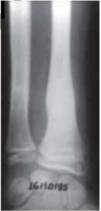
A Certo.
B Errado.
Questão 790 · Maus tratos à crianças e adolescentes · 4000167808Uma paciente de 1 ano e 6 meses de idade foi encaminhada ao pronto atendimento pediátrico por apresentar febre, há três dias, entre 38°C e 39,5 °C, sem outras queixas. A criança foi levada pela avó materna, que se mostrou bastante preocupada, pois, além da febre, notou que a criança apresenta manchas arrocheadas nos membros superiores e inferiores. A criança reside com a mãe, um irmão de 5 anos de idade e o padrasto. Ao exame físico, ela mostra-se abatida e prostrada, mas está corada e hidratada. Constataram- se FC = 120 bpm, FR = 40 irpm, SatO2 = 98% em AA, oroscopia sem petéquias, sem placas, sem lesões, otoscopia com membrana timpânica translúcida, sem abaulamento, sem secreção, ausculta cardíaca BNF, RR, 2t, sem sopro e ausculta pulmonar MVUD, sem ruídos adventícios. Também foram observados abdome RHA+, depressível, dor à palpação em baixo ventre, Blumberg e Murph negativos, sem sinais de meningismo, membros inferiores com equimoses < 5 cm e membros superiores com equimoses > 5 cm em braço esquerdo. Inicialmente foram solicitados exame qualitativo de urina com urocultura (via sondagem vesical; ainda sem resultado da urocultura) e radiogra a de membro superior esquerdo. O exame qualitativo de urina pode ser verificado a seguir. Fonte: acervo pessoal Realizou-se, ainda, radiogra a que evidenciou calo ósseo em rádio e ulna esquerda, conforme a imagem a seguir. Fonte: acervo Revista Brasileira de Ortopedia. Acerca desse caso clínico e tendo em vista os conhecimentos médicos correlatos, julgue o item a seguir. Quando se observam fraturas múltiplas, bilaterais e em diferentes estágios de consolidação, deve-se pensar em maus-tratos.


A Certo.
B Errado.
Questão 791 · Maus tratos à crianças e adolescentes · 4000167807Uma paciente de 1 ano e 6 meses de idade foi encaminhada ao pronto atendimento pediátrico por apresentar febre, há três dias, entre 38°C e 39,5 °C, sem outras queixas. A criança foi levada pela avó materna, que se mostrou bastante preocupada, pois, além da febre, notou que a criança apresenta manchas arrocheadas nos membros superiores e inferiores. A criança reside com a mãe, um irmão de 5 anos de idade e o padrasto. Ao exame físico, ela mostra-se abatida e prostrada, mas está corada e hidratada. Constataram- se FC = 120 bpm, FR = 40 irpm, SatO2 = 98% em AA, oroscopia sem petéquias, sem placas, sem lesões, otoscopia com membrana timpânica translúcida, sem abaulamento, sem secreção, ausculta cardíaca BNF, RR, 2t, sem sopro e ausculta pulmonar MVUD, sem ruídos adventícios. Também foram observados abdome RHA+, depressível, dor à palpação em baixo ventre, Blumberg e Murph negativos, sem sinais de meningismo, membros inferiores com equimoses < 5 cm e membros superiores com equimoses > 5 cm em braço esquerdo. Inicialmente foram solicitados exame qualitativo de urina com urocultura (via sondagem vesical; ainda sem resultado da urocultura) e radiogra a de membro superior esquerdo. O exame qualitativo de urina pode ser verificado a seguir. Fonte: acervo pessoal Realizou-se, ainda, radiogra a que evidenciou calo ósseo em rádio e ulna esquerda, conforme a imagem a seguir. Fonte: acervo Revista Brasileira de Ortopedia. Acerca desse caso clínico e tendo em vista os conhecimentos médicos correlatos, julgue o item a seguir. O trauma contuso, nas crianças mais novas, muitas vezes é consequência dos maus-tratos e do espancamento.
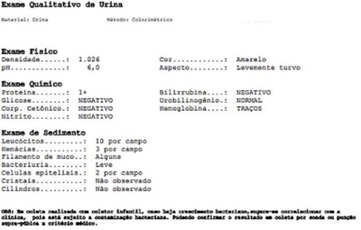

A Certo.
B Errado.
Questão 792 · Transtornos do Humor · 4000167786Um paciente de 60 anos de idade, proveniente da índia, foi atendido no pronto-socorro por alteração do status mental, humor deprimido e mudança de comportamento. Além disso, ele apresentava dor óssea. Exames bioquímicos indicaram o nível de PTH 20 vezes acima do valor de referência. A função renal mostrou-se preservada; SatO2 = 97% em ar ambiente; FC = 86 bpm; e PA =120 mmHg x 84 mmHg. TC de pelve foi realizado, conforme imagem a seguir. Fonte: uptodate A respeito desse caso clínico e tendo em vista os conhecimentos médicos correlatos, julgue o item a seguir. Sintomas psiquiátricos são pouco conhecidos e extremamente raros nesses pacientes.

A Certo.
B Errado.
Questão 793 · Tratamento da Depressão · 4000167784Um paciente de 60 anos de idade, proveniente da índia, foi atendido no pronto-socorro por alteração do status mental, humor deprimido e mudança de comportamento. Além disso, ele apresentava dor óssea. Exames bioquímicos indicaram o nível de PTH 20 vezes acima do valor de referência. A função renal mostrou-se preservada; SatO2 = 97% em ar ambiente; FC = 86 bpm; e PA =120 mmHg x 84 mmHg. TC de pelve foi realizado, conforme imagem a seguir. Fonte: uptodate A respeito desse caso clínico e tendo em vista os conhecimentos médicos correlatos, julgue o item a seguir. Por causa da alteração de humor depressivo, o ideal é iniciar com lítio e risperidona em doses baixas.
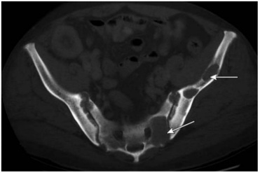
A Certo.
B Errado.
Questão 794 · Dependência Química · 4000167716Em relação à saúde dos homens, julgue o item. Quanto ao tabagismo, os homens usam cigarros com a mesma frequência que as mulheres, o que acarreta vulnerabilidade a doenças cardiovasculares, cânceres, doenças pulmonares obstrutivas crônicas, doenças bucais, entre outras; entretanto, a prevalência de dependência do álcool é maior entre os homens.
A Certo.
B Errado.
Questão 795 · Intoxicação por Agrotóxicos · 4000167714Uma trabalhadora rural de 30 anos de idade, em plantio de tomate há dois meses, refere tonturas, dores de cabeça, cansaço, náuseas, geralmente no nal do dia de trabalho, há duas semanas, após a plantação ter sido pulverizada com agrotóxicos, e informa que uma colega de trabalho apresenta quadro semelhante. O médico suspeitou tratar-se de um caso de intoxicação por agrotóxicos e afastou-a do trabalho por uma semana, com nova avaliação, e noti cou esse fato ao Sistema de Informação de Agravos e Noti cações (SINAN), do Sistema Único de Saúde (SUS). No retorno, a paciente relatou melhora do quadro clínico. A respeito desse caso clínico, julgue o item. No caso apresentado, trata-se de efeitos tóxicos decorrentes da exposição crônica aos agrotóxicos, que são bem conhecidos, como manifestações gastrointestinais e neurológicas.
A Certo.
B Errado.
Questão 796 · Intoxicação por Agrotóxicos · 4000167713Uma trabalhadora rural de 30 anos de idade, em plantio de tomate há dois meses, refere tonturas, dores de cabeça, cansaço, náuseas, geralmente no nal do dia de trabalho, há duas semanas, após a plantação ter sido pulverizada com agrotóxicos, e informa que uma colega de trabalho apresenta quadro semelhante. O médico suspeitou tratar-se de um caso de intoxicação por agrotóxicos e afastou-a do trabalho por uma semana, com nova avaliação, e noti cou esse fato ao Sistema de Informação de Agravos e Noti cações (SINAN), do Sistema Único de Saúde (SUS). No retorno, a paciente relatou melhora do quadro clínico. A respeito desse caso clínico, julgue o item. As principais vias de absorção dos agrotóxicos pelo organismo humano são a dérmica (pele) e a respiratória (inalatória), pois a absorção pela via oral e pela digestiva é pouco expressiva na situação de trabalho, exceto quando esses produtos são ingeridos acidental ou intencionalmente.
A Certo.
B Errado.
Questão 797 · Intoxicação por Agrotóxicos · 4000167712Uma trabalhadora rural de 30 anos de idade, em plantio de tomate há dois meses, refere tonturas, dores de cabeça, cansaço, náuseas, geralmente no nal do dia de trabalho, há duas semanas, após a plantação ter sido pulverizada com agrotóxicos, e informa que uma colega de trabalho apresenta quadro semelhante. O médico suspeitou tratar-se de um caso de intoxicação por agrotóxicos e afastou-a do trabalho por uma semana, com nova avaliação, e noti cou esse fato ao Sistema de Informação de Agravos e Noti cações (SINAN), do Sistema Único de Saúde (SUS). No retorno, a paciente relatou melhora do quadro clínico. A respeito desse caso clínico, julgue o item. O reconhecimento da toxicidade de um produto, considerando os efeitos agudos, baseia-se na Dose Sintomática 50 (DS 50), que é a quantidade suficiente para as manifestações clínicas de um adulto.
A Certo.
B Errado.
Questão 798 · Intoxicação por Agrotóxicos · 4000167711Uma trabalhadora rural de 30 anos de idade, em plantio de tomate há dois meses, refere tonturas, dores de cabeça, cansaço, náuseas, geralmente no nal do dia de trabalho, há duas semanas, após a plantação ter sido pulverizada com agrotóxicos, e informa que uma colega de trabalho apresenta quadro semelhante. O médico suspeitou tratar-se de um caso de intoxicação por agrotóxicos e afastou-a do trabalho por uma semana, com nova avaliação, e noti cou esse fato ao Sistema de Informação de Agravos e Noti cações (SINAN), do Sistema Único de Saúde (SUS). No retorno, a paciente relatou melhora do quadro clínico. A respeito desse caso clínico, julgue o item. Os trabalhadores rurais são mais expostos aos agrotóxicos e, muitas vezes, a exposição ambiental soma-se à ocupacional.
A Certo.
B Errado.
Questão 799 · Intoxicação por Agrotóxicos · 4000167710Uma trabalhadora rural de 30 anos de idade, em plantio de tomate há dois meses, refere tonturas, dores de cabeça, cansaço, náuseas, geralmente no nal do dia de trabalho, há duas semanas, após a plantação ter sido pulverizada com agrotóxicos, e informa que uma colega de trabalho apresenta quadro semelhante. O médico suspeitou tratar-se de um caso de intoxicação por agrotóxicos e afastou-a do trabalho por uma semana, com nova avaliação, e noti cou esse fato ao Sistema de Informação de Agravos e Noti cações (SINAN), do Sistema Único de Saúde (SUS). No retorno, a paciente relatou melhora do quadro clínico. A respeito desse caso clínico, julgue o item. O Brasil é considerado o maior consumidor de agrotóxicos no mundo, decorrente do modelo de desenvolvimento comprometido com a produção de bens primários para exportação.
A Certo.
B Errado.
Questão 800 · Intoxicação por Agrotóxicos · 4000167709Lista Nacional de Notif icação Compulsória de doenças agravos e eventos de saúde pública Uma trabalhadora rural de 30 anos de idade, em plantio de tomate há dois meses, refere tonturas, dores de cabeça, cansaço, náuseas, geralmente no nal do dia de trabalho, há duas semanas, após a plantação ter sido pulverizada com agrotóxicos, e informa que uma colega de trabalho apresenta quadro semelhante. O médico suspeitou tratar-se de um caso de intoxicação por agrotóxicos e afastou-a do trabalho por uma semana, com nova avaliação, e noti cou esse fato ao Sistema de Informação de Agravos e Noti cações (SINAN), do Sistema Único de Saúde (SUS). No retorno, a paciente relatou melhora do quadro clínico. A respeito desse caso clínico, julgue o item. O médico não deveria ter notificado o SINAN, pois ainda não havia certeza do diagnóstico.
A Certo.
B Errado.
Questão 801 · Intoxicação por Agrotóxicos · 4000167708Uma trabalhadora rural de 30 anos de idade, em plantio de tomate há dois meses, refere tonturas, dores de cabeça, cansaço, náuseas, geralmente no nal do dia de trabalho, há duas semanas, após a plantação ter sido pulverizada com agrotóxicos, e informa que uma colega de trabalho apresenta quadro semelhante. O médico suspeitou tratar-se de um caso de intoxicação por agrotóxicos e afastou-a do trabalho por uma semana, com nova avaliação, e noti cou esse fato ao Sistema de Informação de Agravos e Noti cações (SINAN), do Sistema Único de Saúde (SUS). No retorno, a paciente relatou melhora do quadro clínico. A respeito desse caso clínico, julgue o item. Em razão da melhora clínica que a trabalhadora relatou por ocasião do seu retorno para reavaliação, confirma- se o diagnóstico de intoxicação, por critério clínico epidemiológico.
A Certo.
B Errado.
Questão 802 · Transtornos Somáticos · 4000167562Os transtornos mentais correspondem a um dos programas da atenção primária em saúde (APS). Sobre o tema, é correto afirmar:
A Pessoas com sintomas sem explicação médica são demandas frequentes na APS associadas a alguma forma de sofrimento mental. Requer diagnóstico e tratamento.
B Uma avaliação holística dentro de um contexto familiar nem sempre ajuda, pois o sofrimento está na alma da pessoa, além de invadir a privacidade desta.
C Os tricíclicos são a primeira escolha de tratamento dos transtornos depressivos e de ansiedade, em detrimento dos inibidores seletivos de recaptação de serotonina.
D Deve-se preferir, sempre que possível, a associação de medicamentos e não o ajuste de dose no manejo dos transtornos mentais.
E A vantagem do uso de benzodiazepínicos é que estes não possuem nenhuma restrição, podendo ser usados em larga escala na APS.
Questão 803 · Otorrinolaringologia · Tratamento · 4000167520Escolar de 8 anos de idade apresenta tosse há 6 dias, associada à obstrução e secreção nasal. Hoje evoluiu com febre de 38oC e queda do estado geral. Ao exame físico, criança eupneica, presença de secreção amarelada em parede posterior de orofaringe, ausculta pulmonar e cardíaca normais. Nega alergias e uso recente de antibióticos. Com base no caso clínico apresentado, é correto afirmar:
A Para confirmar a principal hipótese diagnóstica, deve ser realizado exame de radiografia simples de tórax.
B Para confirmar a principal hipótese diagnóstica, deve ser realizada tomografia computadorizada de seios da face.
C Esta infecção deve ser tratada com antimicrobiano, podendo este ser da família das penicilinas, cefalosporinas ou macrolídeos.
D A complicação mais grave do quadro apresentado é a mastoidite bacteriana aguda que pode evoluir para meningite.
E Deve ser prescrita penicilina G benzatina por via intramuscular em dose única para tratar o paciente.
Questão 808 · Psicopatologia e Exame do Estado Mental EEM · 4000167412Segundo o escritor Oliver Sacks, em seu livro trabalho, minha vida estão voltados totalmente para os doentes — m a s o s doentes e suas doenças conduzem-me a reflexões que, de outro modo, talvez não me ocorressem. Tanto assim que me vejo compelido a indagar, como Nietzsche: 'Quanto à doença: n ã o somos quase tentados a perguntar se conseguiríamos passar s e m ela'? e a v e r a s questões que e la suscita c omo sendo d e u m a natureza fundamental. Invariavelmente meus pacientes levam-me a questionar, e invariavelmente minhas questões levam-me aos pacientes, assim (...), existe um movimento contínuo de um para o outro". ASSINALE A ALTERNATIVA CORRETA:
A Conhecer a doença é suficiente para dimensionar a experiência do adoecimento.
B O autor entende a saúde como o completo bem estar físico, mental e espiritual.
C A doença é uma construção teórica e um instrumento de trabalho do médico.
D A doença é o objeto de trabalho do médico.
Questão 809 · Transtornos Somáticos · Transtorno dos Sintomas Somáticos · 4000167411Uma equipe de saúde da família percebe que um homem, antes frequentador ocasional do serviço, torna-se progressivamente frequentador assíduo. Embora sempre se dizendo doente, as queixas eram imprecisas e variadas. Os exames clínicos e laboratoriais não confirmaram nenhuma hipótese diagnóstica. Alguns membros da equipe passaram a classi cá-lo como “poliqueixoso". A RESPEITO D O ENFRENTAMENTO DESTE TIPO DE PROBLEMA, ASSINALE A ALTERNATIVA CORRETA:
A Explicações orgânicas confiáveis são encontradas na maior parte das queixas somáticas na atenção primária, com investigação adequada.
B A equipe deve solicitar o apoio do Centro Atenção Psicossocial para lidar adequadamente com este tipo de problema.
C A fragilidade de alguns dos atributos da atenção primária dificulta o cuidado deste tipo de problema.
D O mais provável é que o homem esteja buscando ganhos secundários relacionados ao trabalho.
Questão 810 · Dependência de Hipnossedativos · Níveis de Prevenção e outros conceitos associados · 4000167403Mulher, 50a, faz acompanhamento na Unidade Básica de Saúde em razão de hipertensão arterial, obesidade, tabagismo, nervosismo. Faz uso de clonazepam, losartana, atenolol e uso irregular de uoxetina. Procura a UBS com frequência para pedir troca de receitas e tem aumentado o uso de clonazepan por conta própria. CONSIDERANDO A PREVENÇÃO QUATERNÁRIA, A CONDUTA É:
A Reduzir a dose de benzodiazepínico.
B Solicitar eletrocardiograma e exames laboratoriais.
C Inserir a paciente em grupo de tabagismo.
D Encaminhar ao ambulatório de psiquiatria.
Questão 811 · Teste do olhinho · Of talmologia · 4000167368O Teste do Re exo Vermelho é uma ferramenta de alta sensibilidade para o rastreamento d e alterações oculares com risco de causar ambliopia ou deficiência visual. O TESTE DEVE SER REALIZADO:
A Uma única vez antes da alta da maternidade.
B Antes da alta da maternidade e uma vez ao ano até cinco anos de vida.
C Antes da alta da maternidade e uma vez ao ano, nos dois primeiros anos de vida.
D Antes da alta da maternidade e três vezes ao ano, nos três primeiros anos de vida.
Questão 812 · Uveítes Reumáticas · Uveítes · 4000167348Homem, 36a, iniciou quadro de dor e vermelhidão ocular à direita, sem perda da acuidade visual, há dois dias. Refere dor lombar pela manhã e após longos períodos em repouso. Faz tratamento de artrite no joelho esquerdo. Antecedente familiar: pai e tio apresentam quadro semelhante. Radiograma e ressonância nuclear magnética evidenciam sacroileíte. A HIPÓTESE DIAGNÓSTICA DO QUADRO AGUDO É:
A Ceratoconjuntivite seca.
B Esclerite necrotizante.
C Uveíte posterior.
D Uveíte anterior.
Questão 813 · Intoxicações Exógenas · Neurologia · 4000167344Homem, 39a, chega à emergência com confusão mental, náuseas e vômitos há 4 horas. Esposa o encontrou sonolento no banheiro, ao lado de carteias de medicação aparentemente vazias jogadas no vaso sanitário. Antecedentes: depressão; usa amitriptilina. Exame físico: PA=124x78 mmHg, FC=108 bpm, FR=29 irpm, oximetria de pulso (ar ambiente)= 97%, T= 36,5°C. Glasgow 14, pupilas normais, sem dé cits focais. Sem sinais de desconforto respiratório e ausculta respiratória normal. Eletrocardiograma: taquicardia sinusal. Glicemia capilar= 110mg/dL. Gasometria arterial: pH= 7,23; pO₂= 91 mmHg; pCO₂= 15 mmHg; HCO₃= 10 mEq/L; BE= -7 mEq/L, SaO₂= 97%; sódio= 135 mEq/L; creatinina=0,92 mg/dL; lactato= 3,0 mmol/L e cloro= 98 mMol/L. A HIPÓTESE DIAGNÓSTICA É
A Intoxicação por salicilatos.
B Intoxicação por antidepressivo tricíclico.
C Sepse.
D Crise tireotóxica.
Questão 814 · Intoxicações Exógenas · Síndrome Adrenérgica · 4000167148Menino de 1 ano dá entrada em hospital após quadro convulsivo. Ao exame físico, apresenta midríase, taquicardia, sudorese, hipertensão, piloereção e hiper-reflexia. Na anamnese, a mãe conta que o paciente está, há 2 dias, com obstrução nasal e espirros e, por estar com di culdade para dormir devido à obstrução, usou medicamento em gotas que tinha em casa, nas narinas da criança. Após seu uso, o paciente iniciou o quadro atual. Considerando o agente farmacológico provável, trata-se de uma
A toxíndrome simpatomimética, que resulta da estimulação de nervos simpáticos (alfa e beta- adrenérgicos) mediada pelas catecolaminas noradrenalina e adrenalina.
B toxíndrome anticolinérgica, que resulta da inibição das fibras parassimpáticas pós-ganglionares que liberam a acetilcolina, das fibras autônomas pré-ganglionares, das placas mioneurais do músculo esquelético e de certas sinapses do sistema nervoso central.
C toxíndrome anticolinesterásica, em que ocorre inibição da enzima acetilcolinesterase, levando a um acúmulo da acetilcolina nos receptores colinérgicos muscarínicos e nicotínicos.
D toxíndrome depressiva, que resulta da interferência na função adrenérgica do SNC, principalmente nos neurônios noradrenérgicos centrais.
E toxíndrome extrapiramidal, que resulta do aumento da ação da acetilcolina nas sinapses muscarínicas e do antagonismo da dopamina no SNC.
Questão 815 · Linf omas · Linf adenites Cervicais · 4000167145Distinguir um linfonodo inflamatório de um neoplásico pode ser um desa o para o pediatra. Qual das situações a seguir sugere benignidade, sem necessidade de investigação?
A Ausência de linfonodos palpáveis em recém-nascidos
B Nódulo linfático maior que 1 cm, em dois locais anatômicos.
C Linfonodo epitroclear com 0,7 cm.
D Linfonodo inguinal com 2 cm.
E Linfonodomegalia localizada, com febre por mais de 7 dias.
Questão 816 · Tratamento · LaringiteLaringotraqueíte viral crupe · 4000167140Menina de 2 anos é levada à emergência com tosse intensa e ladrante, rouquidão e estridor inspiratório discreto. Nos dias precedentes à piora da tosse, tinha rinorreia clara, febre baixa e tosse leve. Não apresenta sinais de desconforto respiratório no momento. Qual, das opções a seguir, é a conduta mais adequada para essa paciente?
A Iniciar antibioticoterapia com amoxicilina.
B Internar para tratamento e observação, por se tratar de quadro moderado com potencial risco de progressão da obstrução.
C Solicitar radiografia cervical lateral.
D Oxigênio suplementar para conforto.
E Prescrever corticosteroide oral ou parenteral.
Questão 817 · Osteomielite · 4000167128Referente à osteomielite, é correto afirmar que
A a forma não hematogênica é mais comum em adultos jovens, vítimas de trauma com solução de continuidade na pele.
B a radiografia simples pode auxiliar no diagnóstico, principalmente na fase inicial da doença.
C a maioria dos antimicrobianos possui boa distribuição na medula óssea.
D os marcadores inflamatórios mais comuns (velocidade de hemossedimentação e proteína C reativa) geralmente são normais nas primeiras 2 semanas de doença.
E o uso de anti-inflamatórios não esteroidais (AINE) é considerado tratamento de primeira escolha.
Questão 818 · Abstinência de Álcool · 4000167120Um homem de 62 anos está internado há 2 dias devido à fratura de pé D. Possui histórico de consumo de bebida alcoólica em grande quantidade, principalmente destilados. Apresenta agitação importante, tremores, febre baixa e taquicardia, além de delírios audiovisuais. Em relação ao tratamento medicamentoso da abstinência alcoólica, assinale a melhor alternativa nesse caso.
A Diazepam 10mg endovenoso (EV).
B Midazolam 10mg intramuscular (IM).
C Haloperidol 5mg EV.
D Haloperidol 5mg IM.
E Clorpromazina 25mg IM.
Questão 819 · Intoxicação por Opioides · 4000167115Uma mulher de 30 anos é levada ao serviço médico de urgência, por familiares, com quadro de rebaixamento do nível de consciência. Ao exame, apresenta-se bradipneica (FR=8irpm) e comatosa (glasgow 9). A mãe informa histórico de uso de heroína. Após estabilização clínica inicial, qual é a conduta mais adequada?
A Hipotermia terapêutica.
B Lavagem gástrica com carvão ativado.
C Administração de flumazenil endovenoso.
D Administração de bicarbonato endovenoso.
E Administração de naloxona endovenosa.
Questão 820 · Anatomia Cirúrgica · 4000167096Uma paciente com um nódulo de tireoide biopsiado, compatível com neoplasia, possui indicação de tireoidectomia total. Para realizar tal cirurgia, o médico deve ter o conhecimento das estruturas anatômicas da região. Assinale a alternativa que apresenta apenas informações corretas sobre a anatomia locorregional necessária para esse procedimento.
A A tireoide está localizada sob os músculos platisma e escaleno, que devem ser seccionados ou afastados para acessá-la.
B É necessário ficar atento quanto ao trajeto do nervo glossofaríngeo, já que ele tem seu trajeto lateral e adjacente à tireoide.
C É necessário ficar atento quanto ao esôfago, que tem trajeto posterior e adjacente à glândula tireoide.
D É necessário ficar atento às paratireoides, que se localizam atrás da glândula tireoide, adjacentes a ela.
E As artérias que irrigam a tireoide – tireoidea superior, média e inferior – provêm da artéria carótida interna.
Questão 821 · Traços de Fraturas · Fraturas Pediátricas · 4000167094Um paciente de 10 anos teve uma fratura do antebraço esquerdo. Quanto ao tipo de fratura que pode ter ocorrido nesse caso e suas características, assinale a alternativa correta.
A Fratura em galho verde – desvio da cortical óssea sem uma linha visível de fratura.
B Fratura metafisária – fratura através da placa cartilaginosa de crescimento.
C Fratura em galho verde – ruptura incompleta da cortical óssea.
D Fratura em fivela – fratura através da placa cartilaginosa de crescimento.
E Fratura em fivela – fratura de uma área enfraquecida devido a uma doença preexistente.
Questão 822 · Ref orma Psiquiátrica e Psiquiatria Social · Lei 10216 de 6 de abril de 2001 Lei Antimanicomial · 4000167003A internação psiquiátrica tem como principal objetivo atuar no manejo clínico de pacientes disfuncionais, em quadros agudos, graves e que, devido ao adoecimento mental, apresentam risco para si e para outros, ou seja, é uma modalidade de atenção destinada a pacientes que necessitam de cuidados intensivos, cabendo à instituição hospitalar acolher, tratar, cuidar, respeitar e estabilizar o paciente para que ele possa ser reinserido na sociedade após resolução do episódio agudo. Considerando o enunciado, no contexto das modalidades de internação psiquiátrica, é CORRETO afirmar:
A A internação compulsória é a que se dá com o consentimento expresso e por escrito de paciente em condições psíquicas de manifestação válida de vontade.
B A internação compulsória é a que se dá contrariamente à vontade do paciente, sem o seu consentimento expresso ou com consentimento inválido. Para que ocorra, faz-se necessária a concordância de representante legal, exceto nas situações de emergência médica (risco iminente de suicídio, agitação psicomotora grave etc.).
C A internação compulsória é determinada por magistrado e independe da vontade expressa da família ou do paciente.
D Na internação compulsória, quem determina a natureza e o tipo de tratamento a ser ministrado ao paciente é o magistrado, que poderá prescrever alta hospitalar quando entender que aquele se encontra em condições para tal.
Questão 823 · Diagnóstico · 4000166943As complicações secundárias à sinusite, como celulite periorbital, abscessos, trombose de seio cavernoso, meningite e osteomielite, são sempre graves. Dessa forma, o exame físico de casos suspeitos de sinusite sempre deve buscar sinais de tais complicações. Deve-se suspeitar de complicação bacteriana sobreposta a um quadro respiratório viral na criança e adolescente:
A Quando, durante o curso viral, o paciente apresenta febre alta, piora do estado geral, aumento da quantidade da secreção, presença de secreção mais esverdeada e espessa.
B Quando, durante o curso viral, o paciente apresenta febre baixa e não há sinais de otite média aguda e abscesso amigdaliano ou retrofaríngeo, mas há presença de secreção mais esverdeada e espessa.
C Quando, durante o curso viral, o paciente apresenta febre baixa, piora do estado geral, aumento da quantidade da secreção, presença de secreção mais esverdeada e espessa.
D Quando, durante o curso viral, o paciente apresenta febre alta, piora do estado geral, aumento da quantidade da secreção, sendo menos esverdeada e espessa.
Questão 824 · Psiquiatria · Dependência Química · 4000166933Adolescente, 16 anos, previamente hígido, com alterações nos últimos meses de comportamento, apresentando-se instável e com variações acentuadas de apetite, sono, energia e declínio no rendimento escolar. Diagnóstico provável de:
A Abuso de drogas.
B Retardo mental.
C Síndrome paranoide.
D Problemas de desenvolvimento.
Questão 825 · Glaucoma Agudo de Ângulo Fechado Crise Aguda de Glaucoma · 4000166920Paciente, sexo masculino, 58 anos, com dor e rubor oculares acentuados, diminuição acentuada da acuidade visual no olho esquerdo, halos coloridos em torno das luzes, cefaleia, náuseas e vômito. Não há relatos de doença inflamatória prévia. A palpação mostra que o olho esquerdo está bem mais rme do que o olho direito. A córnea esquerda está edemaciada e com uma pupila xa e dilatada. Considerando as informações do enunciado, o diagnóstico mais provável para o caso narrado é:
A Glaucoma primário de ângulo aberto.
B Glaucoma agudo de ângulo fechado.
C Glaucoma secundário.
D Glaucoma congênito.
Questão 826 · Herpangina · Pediatria · 4000166854Criança do sexo masculino com um ano de idade está com febre alta há dois dias, hiporexia e agitação no momento da febre. A mãe nega alterações urinárias e gastrintestinais. Ao chegar à Unidade de Saúde é atendida pelo médico da Estratégia de Saúde da Família que, após examiná-lo, verifica a presença de úlceras no palato mole e úvula (lesões de Nagaya - ma), mas não encontra alterações sugestivas de infecção bacteriana ou sinais de alerta de gravidade. No retorno, após o terceiro dia de febre, a mãe informa que houve o aparecimento de um exantema maculopapular com duração de um dia e meio, melhora da febre e do quadro apresentado por completo. Ao rever a criança nos dias seguintes, percebe-se que ela se mantém normal. Diante desse caso, de acordo com o Ministério da Saúde, o médico
A deve realizar a notificação imediata da sua principal hipótese diagnóstica para a secretaria municipal de saúde.
B deve realizar a notificação semanal da sua principal hipótese diagnóstica para a secretaria municipal de saúde.
C não deve realizar a notificação do caso.
D deve realizar a notificação imediata da sua principal hipótese diagnóstica para a secretaria municipal e estadual de saúde e solicitar bloqueio vacinal.
Questão 827 · Suicídio · Mitos e verdades sobre o suicídio · 4000166846Sobre a abordagem e o tratamento de uma pessoa em comportamento suicida, sabe-se que:
A a ineficácia de tratamentos farmacológicos em conseguir prevenir o suicídio torna a psicoterapia o padrão-ouro para a maioria dos pacientes com planejamento suicida, especialmente a terapia cognitivo-comportamental.
B em pacientes com transtornos psiquiátricos que apresentem ideação suicida grave, medicamentos com alto risco de toxicidade, tais como antidepressivos tricíclicos, clozapina e lítio, devem ser suspensos
C a prescrição de antidepressivos estará sempre indicada devido à especificidade desse sintoma no diagnóstico da depressão, ainda que o efeito tenda a demorar várias semanas para ocorrer.
D além da esculta empática e psicoterapia, a indicação de eletroconvulsoterapia ou de escetamina podem ser realizadas no paciente com transtorno depressivo maior, devido ao rápido efeito antisuicida.
Questão 828 · Suicídio · 4000166845Sobre a prevalência de comportamento suicida e suicídio consumado, sabe-se que:
A a proporção de suicídio entre os diversos estados brasileiros e os diversos países é bastante homogênea, sugerindo-se a primazia de determinantes biológicos.
B apesar da grande prevalência de ideação suicida em adolescentes do sexo feminino, o suicídio em si não figura como importante causa de morte nessa população.
C as maiores taxas de suicídio estão nos países altamente desenvolvidos e se correlacionam com perda de valores morais, ateísmo e aculturação de imigrantes.
D ao contrário do Brasil, a taxa mundial de suicídio vem caindo desde o início do século, provavelmente fruto da implementação de estratégias de prevenção e tratamento.
Questão 829 · Tenossinovite do Estilóide Radial De Quervain · Tenossinovite de De Quervain · 4000166843Mulher de 35 anos, exercendo a pro ssão de cozinheira, queixa-se de dor no punho direito, de início há duas semanas. Ao exame físico osteoarticular, apresenta dor intensa à palpação no nível da apó se estiloide do rádio direito, e dor à manobra de adução forçada com a mão fechada. Considerando-se a principal hipótese diagnóstica para o caso, a manobra descrita denomina-se:
A Finkelstein.
B Trendelenburg.
C Cozen.
D Yocum.
Questão 830 · Def inição Epidemiologia e Etiologia · 4000166819A dor lombar baixa, ou lombalgia, é a maior representante das síndromes dolorosas da coluna vertebral, seguida da cervicalgia. O fator que favorece ou corrobora para o aparecimento dessa condição clínica é:
A o maior nível educacional do paciente.
B o índice de massa corporal menor que 30 kg/m².
C o uso de bebidas alcoólicas.
D a falta de atividade física.
Questão 831 · Of talmologia · 4000166757Paciente de 58 anos, masculino, comparece à emergência oftalmológica com queixa de edema palpebral importante em olho esquerdo, que se iniciou algumas horas após a picada de um inseto. Ao exame, a pálpebra estava quente e vermelha, sendo diagnosticado como celulite orbitária pré-septal do adulto. Sobre essa patologia, assinale a alternativa correta:
A É causada por disseminação por continuidade de sinusite etmoidal.
B Deve ser tratada com antibioticoterapia endovenosa durante internação hospitalar.
C Tem como etiologia germes Gram-negativos e anaeróbios.
D Não causa estrabismo ou edema de disco óptico.
Questão 832 · Of talmologia · 4000166756Amélia, 44 anos, comparece à consulta oftalmológica queixando-se de di culdade para ler. Refere que nunca usou óculos e sempre teve a visão muito boa, mas, no último ano, vem apresentando cada vez mais di culdade para ver de perto. Seu marido, Alberto, que está na consulta junto com Amélia e possui a mesma idade que a esposa, ca se “gabando” que enxerga muito bem para perto, embora use óculos para longe. Após o exame oftalmológico de Amélia, a oftalmologista explica à paciente que ela se encontra presbita, condição natural após os 40 anos de idade. Sobre a presbiopia, assinale a alternativa correta:
A A presbiopia decorre do aumento gradual e fisiológico da capacidade de acomodação do olho, decorrente de uma diminuição da elasticidade e da complacência do cristalino com a idade.
B A correção óptica da presbiopia é feita com lentes divergentes (negativas), cujo poder dióptrico deverá ser aumentado conforme a idade do paciente avança.
C A presbiopia ocorre mais precocemente em pessoas hipermétropes e mais tardiamente em indivíduos míopes.
D Provavelmente, o marido de dona Amélia é hipermétrope.
Questão 833 · Diagnóstico · 4000166583Criança de 8 anos de idade, sexo feminino, comparece a um pronto atendimento por apresentar, há dois dias, quadro de febre 37,9 °C, dor de garganta, obstrução nasal e rinorreia. Ao exame físico, constata-se criança em um bom estado geral, hidratada e apenas hiperemia de orofaringe. Demais elementos do exame físico dentro da normalidade. Mediante a esse caso, assinale a alternativa incorreta.
A Uma alteração na cor ou consistência da secreção nasal é um indicativo para iniciar antibioticoterapia.
B Trata-se de um resfriado comum e habitualmente pode durar até uma semana.
C O tratamento indicado para esse caso baseia-se no uso de apenas sintomáticos.
D Uma das complicações desse quadro pode ser otite média.
Questão 834 · Transtorno dos Sintomas Somáticos · 4000166543A maioria das pessoas experimenta pelo menos um sintoma a cada 2 semanas e não considera consultar um pro ssional de saúde devido aos sintomas. Apenas uma minoria das pessoas que experimentam um sintoma consulta um pro ssional de saúde, sendo que a maioria dos sintomas não é explicada pela doença. Pacientes com “sintomas inexplicados” costumam gerar grande apreensão diagnóstica por parte do médico. A melhor maneira de manejar estes pacientes é:
A Boa comunicação paciente-médico, não diferenciada da comunicação com os demais pacientes
B Indicar terapia cognitivo-comportamental
C Tranquilização
D Prescrever antidepressivos
Questão 835 · Quadro clínico diagnóstico e sinais de alarme · 4000166534A queixa de dor lombar é bastante prevalente na Atenção Primária à Saúde, contudo a grande maioria dos casos dispensa investigação subsequente através de exames laboratoriais ou de imagem. Qual das situações clínicas de lombalgia abaixo dispensa investigação subsequente?
A P., 45 anos, sexo feminino, apresenta dor lombar há 4 meses associado à perda ponderal e anemia.
B E., sexo masculino, 36 anos, trabalhador da construção civil, queixa dor lombar há 2 dias de moderada intensidade e que melhora com uso de anti-inflamatório não hormonal.
C T., 75 anos, dor lombar há 72 horas associada a queda da própria altura em casa; refere uso crônico de benzodiazepínicos.
D S., 66 anos, sexo feminino, apresenta dor lombar, febre, calafrios associados à disúria.
Questão 836 · Rinossinusite Bacteriana Aguda na Inf ância · Tratamento · 4000166526Menino de 3 anos de idade foi levado a consulta médica por queixa de tosse, coriza e obstrução nasal há 12 dias, sem melhora. Apresenta secreção nasal esverdeada intensa, principalmente ao acordar, que vai melhorando ao longo do dia. Queixa-se de cefaleia em região frontal durante todo o período de doença. Não há alterações do exame clínico. Traz radiogra a de seios da face realizada hoje, com nível hidro-aéreo em seios maxilares. Considerando a principal hipótese diagnóstica para o caso, qual das alternativas a seguir justifica a introdução de antibioticoterapia.
A Cefaleia em região frontal.
B Secreção nasal esverdeada intensa.
C Sintomas respiratórios por 12 dias.
D Nível hidro-aéreo na radiografia.
Questão 837 · Celulite PréSeptal · 4000166511T.R.S. de 3 anos iniciou história há 3 semanas de quadro gripal, com febre e muito secreção nasal. Foi à pediatra que avaliou e fez diagnóstico de sinusite e otite, prescrevendo amoxicilina com clavulanato por 10 dias. No segundo dia, paciente iniciou quadro diarreico intenso e mãe optou por suspender antibiótico e trocou por conta própria para sulfametoxazol-trimetoprim, pois a vizinha disse que esse remédio era bom para diarreia. Fez uso por 5 dias. Após 10 dias do m do antibiótico, mãe percebe edema e eritema palpebral à direita. Enxerga bem, movimenta sem problemas o globo ocular e não tem proptose. A impressão diagnóstica é de:
A Dermatite alérgica
B Celulite pré-septal
C Glomerulonefrite difusa aguda
D Abscesso orbitário
Questão 838 · Apresentação Clínica · 4000166510Você é médico da UBS e chega um menino de 13 anos com febre de 38-39 ºC há 2 dias e dor na garganta. Ao exame, você verifica a presença de exantema maculopapular em tronco, adenomegalia cervical e esplenomegalia. Qual é a suspeita diagnóstica inicial?
A Faringoamigdalite bacteriana
B Escarlatina
C Mononucleose infecciosa
D Rubéola
Questão 839 · Psicof ármacos na Gestação e Amamentação · 4000166497Qual das drogas a seguir pode ser utilizada no primeiro trimestre de gestação?
A Varfarina
B Ácido Valproico
C Litio
D Enoxaparina sódica
Questão 840 · Acondroplasia · 4000166446A fusão no carpo dos ossos capitato e hamato ocorre mais frequentemente em
A nanismo tanatofórico.
B acondroplasia.
C condroplasia metafisária.
D displasia condroectodérmica.
Questão 841 · Transtorno do Humor Bipolar THB · Esquizof renia Catatônica · 4000166386Leia o caso clínico a seguir. Marcos é um jovem de 22 anos que foi levado ao pronto socorro por ter parado de se movimentar. Há duas semanas, começou a car mais de 20 horas deitado e imóvel na cama, algumas vezes se levanta e vai ao banheiro, e outras vezes urina na cama. Quando alguém faz uma pergunta ou comentário, ele repetia a última palavra ou sílaba inúmeras vezes. Nos últimos dois dias, vem se recusando a se alimentar, não fala nenhuma palavra por dias seguidos e mantém posturas estranhas por horas, além de rigidez muscular. Faz uso de lítio e lamotrigina há dois anos, após ocorrência de um quadro maníaco e diagnóstico de transtorno bipolar. Qual é a síndrome apresentada no momento e a conduta adequada?
A Síndrome depressiva – suspender lítio e iniciar fluoxetina.
B Síndrome dissociativa – indicar ansiolítico e psicoterapia
C Síndrome psicótica – introduzir olanzapina.
D Síndrome catatônica – aplicar benzodiazepínico lorazepam.
Questão 842 · Transtorno ObsessivoCompulsivo TOC · Psicopatologia e Exame do Estado Mental EEM · 4000166380Leia o caso clínico a seguir. Benício, de 24 anos, a rma estar tendo intenso sofrimento por não conseguir ter controle sobre algumas imagens que lhe vêm à consciência a “quase todo momento”. Diz que vê, em seu pensamento, repetidas vezes, a imagem de sua esposa morta e ensaguentada no chão. Tal visualização o faz entrar em estado de “quase desespero” e vê a necessidade de imaginar uma cena agradável dos dois na praia para “anular” esse pensamento. Muitas vezes, acha que, se não zer isso, sua esposa irá morrer antes de chegar em casa. Frequentemente, tem impulsos de agredir alguém com faca ou socos. Esses impulsos são vivenciados como sem contexto, inadequados, contra sua vontade ou seus princípios. No entanto, acontecem repetidas vezes, e ele acha que acontecerá uma catástrofe se não tentar isolar esse impulso repetindo a palavra ‘paz’ sete vezes. Tais sintomas se iniciaram de forma leve há cerca de sete anos e pioraram há um ano. No momento, o paciente apresenta-se altamente disfuncional e em intenso sofrimento. Os sintomas apresentados são característicos de:
A obsessões e compulsões.
B delírios e alucinações.
C fobias e despersonalização.
D confabulações e dissociação.
Questão 843 · Semiologia do ombro · 4000166378O tendão da cabeça longa do bíceps, embora anatomicamente não faça parte do tendão do manguito rotador, desempenha ação semelhante, ao abaixar e comprimir a cabeça umeral de encontro à glenoide. Sua in amação pode ser detectada posicionando o cotovelo a 90 graus, junto ao tronco, com o antebraço pronado. Pede-se ao paciente para tentar fazer a supinação contra a resistência. A manifestação de dor no sulco intertubercular, durante este teste, indica a presença de tendinite. A manobra acima descrita é denominada:
A Phalen.
B Yergason.
C Jobe.
D Yocum.
Questão 844 · Traços de Fraturas · 4000166352Paciente, pós-queda de uma escada, apresenta fratura dos ossos da face em que existem múltiplos fragmentos ósseos, podendo haver fragmentos diminutos e/ou desvitalizados. Nesse caso, a fratura deve ser classificada como:
A simples.
B composta.
C cominutiva.
D complexa.
Questão 845 · Fraturas do colo do f êmur · 4000166351Paciente de 70 anos de idade, do sexo masculino, ativo com fratura do colo femoral desviada (Garden 4). Nesse caso, a melhor opção de tratamento é:
A artroplastia total do quadril.
B tratamento conservador.
C osteossíntese (fixação) com parafusos.
D artroplastia parcial do quadril.
Questão 846 · Displasia do Desenvolvimento do Quadril · 4000166350O diagnóstico clínico da luxação do quadril no recém-nascido é dado pelo teste de:
A Barlow.
B Ortolani.
C Hart.
D Shenton.
Questão 847 · Abstinência de Álcool · 4000166321Homem, 42 anos de idade, é trazido pelo SAMU ao PS, restrito à maca, por estar agitado e falando sozinho na rua. Trata-se de um morador de rua, com trajes sujos e higiene pessoal precária. Está muito agitado, confuso, desorientado no tempo e no espaço, assustado, fala de uma perseguição e refere ver bichos e vultos. Exame físico: desidratado 2+/4+, descorado 2+/4+, temperatura 37,8 ºC, FC = 108 bpm, sudorese profusa e tremores grosseiros das mãos; roncos e estertores na base do hemitórax esquerdo. Qual é a conduta imediata mais adequada?
A Manter a contenção física, glicose hipertônica IV, haloperidol IM.
B Manter a contenção física, hidratação IV, tiamina IV, diazepam IV.
C Retirar a contenção física, exames laboratoriais e de imagem, antibioticoterapia.
D Retirar a contenção física, prometazina IM, hidratação IV.
Questão 848 · Transtorno Psicóticos · Esquizof renia · 4000166320Homem, 20 anos de idade, é levado ao PS por episódio de agressividade há 1 dia. A mãe refere que ele passou a car mais calado e isolado, há 8 meses. Ele abandonou o emprego, pois se sentia desconfortável com os colegas, alegando que comentavam sobre ele e queriam lhe prejudicar frente ao chefe. Passou a escutar vozes, que o xingavam em alguns momentos, falava coisas sem sentido e tinha crises de choro. Chegou a relatar a sua mãe que pensava em se jogar na frente do trem para acabar com seu sofrimento. Vem progressivamente piorando. Faz uso regular de maconha há 1 ano, sendo o último consumo há 2 meses. Qual é o diagnóstico mais provável?
A Episódio depressivo grave, com sintomas psicóticos.
B Transtorno psicótico induzido por drogas (
C Esquizofrenia paranoide.
D Transtorno delirante persistente.
Questão 849 · Glaucoma · Of talmologia · 4000166317Mulher, 75 anos de idade, queixa-se de dor ocular de forte intensidade à direita, associada a náuseas e piora da acuidade visual no mesmo olho há um dia, que não melhorou com analgésicos. Não apresenta nenhum antecedente clínico, cirúrgico e oftalmológico, exceto por uso de óculos desde a infância. Exame físico: olho direito com hiperemia de vasos conjuntivais; olho esquerdo sem alterações. Qual é o diagnóstico mais provável e a conduta mais adequada?
A Úlcera de córnea; tampão com cicatrizante.
B Conjuntivite viral; investigação de covid-19.
C Esclerite; colírio com corticoide.
D Glaucoma agudo; iridotomia a LASER em ambos os olhos.
Questão 850 · Psicopatologia e Exame do Estado Mental EEM · 4000166288O pediatra, ao conversar com a mãe de Pedro sobre a doença de seu lho, percebe que ela reage expressando raiva e proferindo palavras ofensivas de forma agressiva. A reação do pediatra adequada diante dessa situação é
A interromper a conversa.
B legitimar e validar a emoção da mãe.
C pedir que se acalme e relaxe, caso haja risco de agressão física.
D conduzir um processo de reflexão com a mãe.
Questão 851 · Maus tratos à crianças e adolescentes · 4000166284Menina, 1 ano de idade, foi trazida ao PS por pro ssionais da creche preocupados com possível violência física contra a menor. Na avaliação, lactente está irritada e apresenta hematomas em região de nádegas, com restante do exame físico normal. Pais chegam mais tarde, relatando que os hematomas eram devidos a queda da própria altura há 2 dias. Mostravam-se ansiosos e querendo levar sua lha embora. Qual a medida mais adequada?
A Alta hospitalar com os pais e envio de relatório para o Conselho Tutelar de referência.
B Solicitar a presença da segurança do hospital para evitar a evasão.
C Solicitar avaliação do profissional do serviço social para ele decidir a melhor conduta.
D Buscar evidências de lesões específicas de violência física antes da conclusão do caso.
Questão 852 · Etiologia · 4000166282Menino, 25 dias de idade, previamente hígido, há 2 dias apresenta febre intermitente de 38 a 39 °C e dor à movimentação da perna direita nas trocas de fraldas. Exame físico: dor e limitação à rotação interna do quadril direito. Você indica a punção articular. Além do S. aureus, os agentes etiológicos que seriam mais frequentes na cultura do líquido sinovial nesse caso são:
A Estreptococos do grupo B e os bacilos Gram-negativos.
B Estreptococos e
C Streptococcus pneumoniae
D Estreptococos do grupo A e
Questão 853 · Apresentação Clínica · 4000166280Lactente, 3 meses de idade, sexo feminino, nascida a termo, Apgar 9/10, apresenta estridor desde o nascimento. O diagnóstico mais provável é
A estenose subglótica.
B paralisia bilateral de pregas vocais.
C hemangioma subglótico.
D laringomalácia.
Questão 854 · Ref orma Psiquiátrica e Psiquiatria Social · Nova Política Nacional de Saúde Mental · 4000166279A Saúde Mental no Brasil Qual das ações faz parte da política de redução de danos em relação ao uso de drogas lícitas e ilícitas?
A Orientar práticas e distribuir insumos para reduzir consequências adversas do uso de drogas.
B Elaborar estratégias de redução do uso de drogas até atingir e manter o estado de abstinência.
C Aconselhar para a imediata abstinência do uso de drogas com o suporte de familiares.
D Informar crianças e adolescentes sobre riscos individuais e coletivos do uso de drogas.
Questão 855 · Glaucoma Primário de Ângulo Aberto · 4000166261Qual dos pacientes a seguir possui maior risco para desenvolver glaucoma primário de ângulo aberto?
A 50 anos de idade e hipermetrope.
B 25 anos de idade e astigmatismo.
C 60 anos de idade e míope.
D 70 anos de idade e hipermetrope.
Questão 856 · Pediatria · Acondroplasia · 4000166242Casal jovem, não consanguíneo, tem um filho com acondroplasia, sem outros casos na família. No pré-natal da gestação seguinte, a ultrassonogra a identi ca feto com encurtamento de ossos longos e macrocrania. Qual é o modo de herança da acondroplasia e, nesse caso, qual é a causa da recorrência?
A Ligada ao X; acometimento de dois filhos do sexo masculino.
B Autossômica dominante; mosaicismo gonadal.
C Autossômica recessiva; risco de 25% atribuído ao padrão da herança.
D Autossômica dominante; salto de gerações.
Revisar: possível letra faltando em enunciado
Questão 857 · Conceitos Básicos do Trauma Ortopédico · Osteogênese Imperf eita · 4000166238No tratamento conservador das fraturas na osteogênese imperfeita, a imobilização por tempo prolongado pode causar
A formação de calo ósseo mais exuberante.
B diminuição na frequência das fraturas.
C menor desvio angular dos ossos longos.
D osteopenia pelo desuso.
Questão 858 · Rede de Atenção Psicossocial RAPS · Política Nacional de Atenção Básica PNAB · 4000166220A respeito da saúde mental na atenção primária à saúde, assinale a alternativa incorreta.
A O matriciamento pode ser definido como um modo de se produzir saúde, consistindo em um arranjo organizacional que visa a outorgar suporte técnico-pedagógico, em áreas específicas, às equipes da atenção primária à saúde.
B O matriciamento se afirma como um recurso de construção de novas práticas em saúde mental junto às comunidades, no território onde as pessoas vivem e circulam, por sua proposta de encontros produtivos, sistemáticos e interativos entre as equipes da atenção primária e as equipes de saúde mental.
C As maiores dificuldades na efetivação da prática do matriciamento são: mudanças nas relações de trabalho, historicamente hierarquizadas; mudança no modo fragmentado de se operar o cuidado em saúde; mudança na formação em saúde, centrada na perspectiva biomédica; e mudança no modo de se praticar saúde, que transcende o setor da saúde.
D O psiquiatra, como principal elo do matriciamento em saúde mental, tem como função atender os casos de doenças psiquiátricas que gerarem dúvidas ou desconforto na equipe matriciada.
E É parte do objetivo do matriciamento a descentralização da atenção em saúde mental e a desestigmatização do sofrimento psíquico.
Questão 859 · Luto · 4000166218No que se refere à abordagem de pessoas e familiares em luto na atenção primária à saúde, assinale a alternativa correta.
A A duração do processo de luto é bastante variável, não sendo recomendada a utilização de critério temporal rígido para a definição de luto complicado ou patológico.
B Perdas inesperadas por mortes súbitas e prematuras costumam estar associadas à maior capacidade de assimilação da perda, devido à experiência traumática.
C Crianças menores de seis anos de idade não devem ser expostas a informações sobre a finitude da vida, pois isso causa grande ansiedade, medo e apego excessivo aos seus cuidadores.
D Ainda que a perda de alguns pacientes seja profundamente dolorosa para os profissionais, estes não devem comparecer a rituais de despedidas, como, por exemplo, o velório.
E Independentemente do sofrimento gerado pela perda, o uso de medicação deve ser evitado nas primeiras quatro semanas.
Questão 860 · Intoxicação por Álcool · 4000166184Não raramente são admitidos no pronto-socorro indivíduos com ingesta alcoólica abusiva. Assim, a equipe médica deve observar e decidir por medidas medicamentosas e preventivas com urgência. Com relação a esse tema, assinale a alternativa correta.
A O uso de drogas depressoras do sistema nervoso central é rotina para a contenção química e a prevenção de convulsões.
B O uso concomitante de tiamina e glicose, ambos intravenosos, está indicado para prevenir a encefalopatia de Wernicke-Korsakoff.
C Ao apresentar vômitos, o paciente deve ser sedado e decidir por intubação orotraqueal de imediato, pelo risco de broncoaspiração.
D O esvaziamento gástrico com sonda nasogástrica não contribui para a melhora clínica, mesmo em ingesta alcoólica exacerbada, em intervalo de tempo menor que uma hora.
E O uso de furosemida intravenosa acelera o metabolismo e a eliminação do álcool em seus níveis tóxicos, podendo ser útil no arsenal medicamentoso contra intoxicações graves pelo álcool.
Questão 861 · Escoliose · 4000166150Uma paciente de doze anos de idade foi à consulta médica, acompanhada da mãe, referindo coluna “torta” há um ano. A paciente não teve menarca, nega dores e, ao exame, apresenta teste de Adams positivo e assimetria do triângulo do talhe. Radiogra as de coluna e bacia evidenciam escoliose idiopática torácica direita, com curvatura com ângulo de Cobb de 32 graus. O sinal de Risser da paciente é 1. Com base nesse caso hipotético, é correto afirmar que a melhor conduta para a paciente será
A observação e acompanhamento ambulatorial semestral.
B uso de colete.
C cirurgia para interromper o crescimento da curva, sem correção cirúrgica da deformidade.
D cirurgia para interromper o crescimento da curva, com correção cirúrgica da deformidade.
E tranquilizar a mãe sobre a benignidade do caso e encaminhar a paciente para reabilitação e melhora postural.
Questão 862 · Síndrome Compartimental Aguda · Cirurgia · 4000166141Um paciente de 35 anos de idade deu entrada no pronto-socorro após ter sido vítima de atropelamento, sofrendo fratura dia sária dos ossos da perna direita, sem sinais de exposição óssea. Na urgência, foi realizada uma analgesia endovenosa com dipirona e cetoprofeno e a imobilização provisória do membro inferior com tala gessada. No entanto, o paciente evoluiu com piora progressiva da dor e edema tenso do membro, com presença de ictenas. Quando o plantonista foi reavaliá-lo, observou piora significativa da dor com a extensão passiva dos artelhos (dedos dos pés). Com base nesse caso hipotético, é correto afirmar que a melhor conduta será
A levar o paciente para o centro cirúrgico, fixar a fratura com fixador externo e realizar dermatofasciotomia.
B levar o paciente para o centro cirúrgico, realizar fasciotomia percutânea e não fixar a fratura na urgência, aguardando a melhora das partes moles.
C levar o paciente para o centro cirúrgico, fixar a fratura com placa e parafusos e realizar dermatofasciotomia.
D melhorar a redução da fratura e realizar gesso circular, uma vez que a tala gessada não garante estabilidade suficiente para a fratura, justificando a dor do paciente.
E aumentar a analgesia endovenosa e elevar o membro para a melhora do edema.
Questão 863 · Lesão Nervosa · 4000166140Um paciente de vinte anos de idade foi admitido no pronto-socorro após ter sido vítima de acidente motociclístico. Apresenta dor, deformidade, crepitação e impotência funcional no braço direito, sem sinais de exposição óssea ou lesões vasculares. Não apresenta instabilidade hemodinâmica ou sinais de lesões em outros locais. Na avaliação do paciente, observou-se, também, a presença de nas regiões dorsal e radial da mão direita. Com base nesse caso hipotético, é correto afirmar que os achados sugerem a presença de
A fratura na diáfise do úmero, com paralisia do nervo radial.
B fratura na diáfise da ulna, com paralisia do nervo radial.
C fratura na diáfise do úmero, com paralisia do nervo mediano.
D fratura na diáfise da ulna, com paralisia do nervo mediano.
E luxação do cotovelo, com paralisia do nervo ulnar.
Questão 864 · Transtorno Psicóticos · Esquizof renia · 4000165959Alfredinho, 19 anos, é levado pelos pais à UBS para consulta com a clínica geral. Os pais contam que há 2 meses o paciente parece conversar sozinho, apontando em diversas direções. Também notaram que há algumas semanas o garoto tem falado sobre temas como invasão alienígena e sobre a teoria dos “antigos astronautas”. A mãe, mais observadora, também conta que há quase um ano seu lho passa a maior parte do tempo no quarto, tem saído menos de casa e passa alguns dias sem tomar banho. Assinale qual é a melhor hipótese para o caso:
A Transtorno Psicótico Breve.
B Esquizofrenia.
C Transtorno Delirante Persistente.
D Transtorno Esquizofreniforme.
E Mania Bipolar.
Questão 865 · Ortopedia · Principais f raturas associadas · 4000165622Menino, 5 anos de idade, caiu da bicicleta. Ao exame físico tem dor e deformidade do cotovelo. No serviço de urgência, foi realizada a radiografia apresentada. Qual é o nervo mais acometido nesse tipo de fratura?
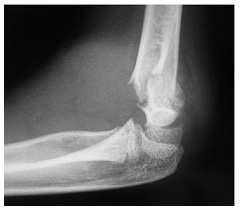
A Nervo ulnar.
B Nervo radial.
C Nervo interósseo anterior.
D Nervo interósseo posterior.
Questão 866 · Complicações Gastrointestinais · Transtorno Alimentares · Cirurgia · 4000165618Mulher, 33 anos de idade, foi submetida a gastroplastia em mórbida, há 2 meses. Procura o serviço de urgência com queixa de disfagia, regurgitação de alimentos sólidos, há 1 mês, com piora progressiva. Ao exame físico: bom estado geral, desidratada, corada, abdome flácido e indolor à palpação. Qual é a principal hipótese diagnóstica?
A Transtorno alimentar (bulimia).
B Hérnia interna.
C Estenose da enteroentero anastomose.
D Estenose da gastroenteroanastomose.
Questão 867 · Conjuntivite Neonatal · Neonatologia · 4000165599Recém-nascido, sexo masculino, 19 dias de vida, está em consulta ambulatorial. Trata-se de recém-nascido de termo, parto vaginal hospitalar, mãe com 28 anos de idade, sem seguimento adequado no pré-natal. Nota- se edema palpebral bilateral, conjuntivas hiperemiadas e secreção ocular purulenta há um dia. Sem outras alterações significativas ao exame clínico. Qual é o diagnóstico mais provável?
A Conjuntivite por clamídia.
B Conjuntivite química por nitrato de prata.
C Conjuntivite gonocócica.
D Obstrução de ducto lacrimal.
Questão 868 · Mastoidite · 4000165588Pré-escolar, sexo masculino, 2 anos e 9 meses de idade, sem comorbidades prévias, está com tosse e coriza há 7 dias. Há 5 dias iniciou com febre de até 38,8ºC e otalgia à esquerda. Procurou um serviço médico há dois dias, sendo feito diagnóstico de otite média aguda à esquerda, com orientação de uso de azitromicina por 5 dias. Está no segundo dia de tratamento, mantendo febre. Ao exame clínico, destacam-se as imagens abaixo. Qual é a conduta indicada?
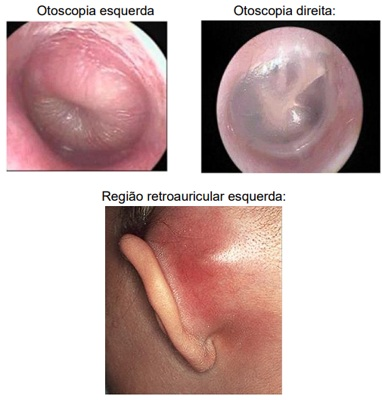
A Iniciar tratamento com ceftriaxona e clindamicina endovenosas e solicitar tomografia de mastoide e crânio.
B Manter tratamento atual e considerar escalonar antibiótico se febre persistir além de 72 horas.
C Trocar antibioticoterapia para amoxicilina com clavulanato oral e reavaliar em 48 a 72 horas.
D Iniciar oxacilina endovenosa e realizar a drenagem percutânea da região retroauricular esquerda.
Questão 869 · Pioartrite · 4000165586Escolar, sexo masculino, 5 anos de idade, sem comorbidades prévias, é levado ao Pronto-Socorro por febre de até 39,5ºC e claudicação dolorosa à esquerda há 2 dias. Nega trauma local. Mãe refere também que a criança apresentou quadro de tosse, coriza e odinofagia há 14 dias, já resolvido. Ao exame clínico, criança em regular estado geral, membro inferior esquerdo em exão, abdução e rotação externa da articulação coxo- femoral (conforme imagem abaixo) com dor intensa à manipulação, membro inferior direito sem limitação funcional e sem dor à manipulação, ausência de outras alterações significativas ao exame clínico. Qual é a conduta indicada com base na hipótese diagnóstica mais provável?
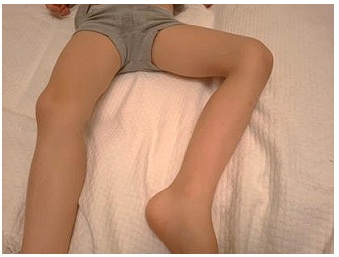
A Alta hospitalar com anti-inflamatório, orientação de sinais de alarme e reavaliação em 48 a 72 horas.
B Coleta de FAN, fator reumatoide, anti-DNA, anti-RO, anti-LA, VHS e início de corticoterapia.
C Realização de eletrocardiograma, ecocardiograma, anti-estreptolisina-O e prescrição de penicilina benzatina.
D Internação hospitalar, coleta de triagem infecciosa e introdução de ceftriaxona e oxacilina endovenosas.
Questão 870 · Medicina Preventiva · Atenção Primária à Saúde APS no Brasil · Abstinência de Álcool · 4000165574Médico está realizando seu primeiro plantão numa Unidade de Pronto-Atendimento (UPA) 24h numa cidade com 200 mil habitantes. Essa cidade tem a seguinte rede de saúde: Após atender um paciente na UPA, o médico fez uma carta de contrarreferência. Qual a alternativa correta, considerando os princípios de organização das redes de saúde?
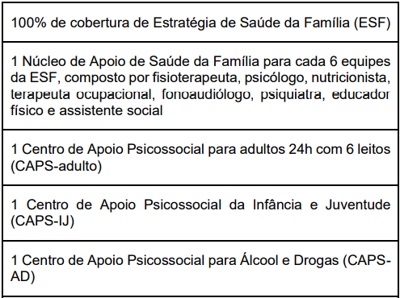
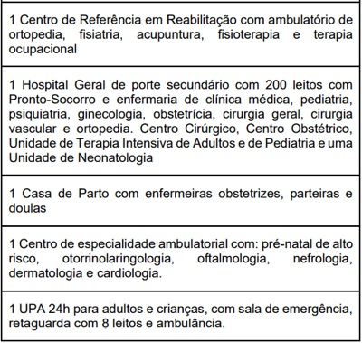
A Idoso com dor lombar crônica há 7 anos. Tomografia com osteófitos em coluna lombar. Realizada analgesia. Encaminhado à ortopedia e fisioterapia.
B Adulto em observação por abstinência alcoólica com melhora dos sintomas. Exames normais. Prescrito benzodiazepínicos. Encaminhado à Estratégia de Saúde da Família.
C Criança com atraso escolar e suspeita de autismo encaminhada ao CAPS-IJ. Orientação aos pais que não há urgência.
D Gestante primigesta, realizou diagnóstico de sífilis secundária no Pronto-Socorro. Realizada primeira dose de penicilina. Encaminhada ao pré-natal de alto risco.
Questão 871 · Tabaco · 4000165564A primeira consulta de gestante de 23 anos, em situação de rua, foi realizada com 14 semanas. Nessa consulta verifica-se que ela fuma 4 cigarros por dia, o primeiro no período da tarde. A paciente a rma que até gostaria de parar de fumar, mas que não consegue, pois já tentou outras vezes e não conseguiu. Qual é a primeira abordagem recomendada pelo Ministério da Saúde para esse tipo de situação?
A Verificar como foram as tentativas anteriores e orientar estratégias de tratamento durante a gestação.
B Orientar sobre os riscos e encaminhar para grupo de apoio da unidade básica de saúde.
C Registrar a dificuldade da cessação do tabagismo e encaminhá-la para o pré-natal de alto risco.
D Avaliar o nível de dependência pelo escore de Fagerström e notificar a assistência social.
Questão 872 · Anatomia Embriologia e Radiologia dos Seios Panarasais · 4000165560Mulher de 35 anos de idade deu entrada no Pronto-Socorro com cefaleia e febre não medida há 5 dias. Tentou utilizar vários analgésicos sem melhora. No exame clínico apresenta T 38ºC, FC 100 bpm, sem outras alterações. Foi realizada a tomografia computadorizada mostrada a seguir. Qual é o diagnóstico?
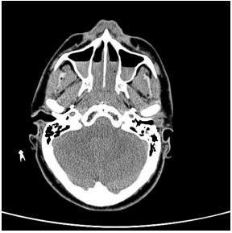
A Meningoencefalite.
B Sinusite.
C Normal para a idade.
D Osteomielite.
Questão 873 · Ortopedia · Avaliação dos Exames de Imagem · 4000165559Homem de 65 anos de idade, pedreiro aposentado, vem para consulta com clínico geral referindo quadro de dor lombar há aproximadamente 2 semanas. Refere que o quadro é caracterizado por dor de forte intensidade, com irradiação para ambos os membros inferiores abaixo dos joelhos, associada a parestesias. Relata ainda di culdade de ereção e redução da sensibilidade em região perianal. Nega alteração da intensidade da dor ao longo do dia. Ao exame clínico: Dé cit motor assimétrico distal nas pernas e pés, com redução de força à dorsi exão e exão plantar dos pés e dos artelhos. Re exos aquileus e patelares abolidos. Hipoestesia “em sela” na região perineal. Desencadeamento de dor irradiada à exão de quadril a 45º com joelhos estendidos. Apresenta incapacidade de permanecer na ponta dos pés. O exame físico mostra massa em hipogástrio. Nega febre, perda ponderal, antecedente pessoal ou familiar de neoplasia maligna.
A O quadro sugere lesão de cauda equina, devendo ser solicitada ressonância magnética de coluna lombossacra.
B O quadro sugere lesão compressiva de medula torácica, devendo ser investigada a etiologia inflamatória ou infecciosa.
C O quadro é característico da síndrome de Guillain-Barré (polirradiculoneurite aguda), devendo ser solicitada eletroneuromiografia e iniciada gamaglobulina endovenosa.
D O quadro é sugestivo de neoplasia metastática intramedular em topografia de medula cervical, relacionado a possível neoplasia prostática.
Questão 874 · Transtorno do Humor Bipolar THB · Diagnóstico do Transtorno do Humor Bipolar THB · 4000165558Transtornos do Humor Mulher de 20 anos de idade chega ao serviço de emergência informando ter sido agredida por pessoa no ônibus. O contato inicial é difícil, pois a paciente está agitada, preocupada e falando rapidamente. Ela informa que o agressor a estava perseguindo desde o ponto de embarque. A paciente recebeu notícia sobre uma herança há quatro dias, e desde então não consegue dormir. Há três dias, pediu demissão do emprego de faxineira por achar que sua “patroa estava roubando seu dinheiro para pagar contas da casa”. Nos últimos dois dias, com a expectativa de receber o dinheiro, gastou cerca de 2 mil reais em vários pares de sapatos de 3 lojas diferentes. Qual é a principal hipótese diagnóstica para o caso?
A Transtorno de personalidade borderline.
B Reação aguda ao estresse.
C Síndrome do pânico.
D Mania com sintomas psicóticos.
Questão 875 · Transtorno de Pânico · Transtornos Ansiosos · 4000165550Homem de 48 anos de idade, casado, comparece em retorno de consulta ambulatorial com queixa de episódios em que seu “coração passa a bater para fora da boca, com batidas fora de hora e com a sensação que pode parar a qualquer momento”. Já procurou serviços de urgência e emergência. Porém ao chegar ao Pronto-Socorro de cardiologia a crise já passou e os médicos não acham nada alterado nos exames complementares. Refere que quando faz atividade física o coração começa a bater mais rápido. Nesse processo por vezes lhe falta ar e sente medo muito grande de que possa infartar cedo como seu pai, que faleceu aos 52 anos de idade. Está dormindo mal, ca pensando no que fazer se tiver novas crises e como pode chegar rápido no hospital para poder descobrir o que é. É ex-fumante 1 maço/dia por 15 anos (parou há 12 anos). O exame clínico está normal. Os exames complementares solicitados na primeira consulta mostram glicemia de jejum e colesterol total e frações normais. O eletrocardiograma atual é apresentado abaixo. O registro de Holter durante uma das crises referidas está representado abaixo. Traçado do eletrocardiograma de hoje: Traçado do Holter: Qual é o diagnóstico provável e a conduta inicial?
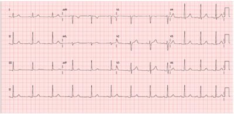
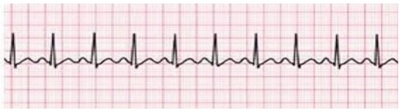
A Depressão ansiosa; introdução de ansiolítico não benzodiazepínico.
B Angina estável; introdução de AAS, atorvastatina e nitrato.
C Síndrome do pânico; antidepressivo serotoninérgico.
D Taquicardia por reentrada nodal; ablação cardíaca.
Questão 876 · Of talmologia · Retinopatia Diabética · Retinopatia Hipertensiva · 4000165544Homem de 66 anos de idade chega à consulta referindo perda visual progressiva e indolor de olho há 06 meses. É hipertenso, diabético e dislipidêmico de longa data, com controle irregular das comorbidades. Realiza o seguinte exame. Selecione a alternativa com os achados deste exame:
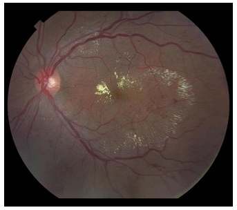
A Microhemorragias e exsudatos duros.
B Edema de papila e descolamento de retina regmatogênico
C Microcalcificações e mácula em cereja.
D Palidez de papila e exsudatos algodonosos.
Questão 877 · Manif estações congenitas · Sinais e sintomas · Toxoplasmose congênita · 4000165395Durante exame oftalmológico foi evidenciado coriorretinite, nistagmo, estrabismo e atro a ótica. A infecção congênita mais provável como causa do quadro é:
A toxoplasmose
B citomegalovirose
C sífilis
D herpesvírus
Questão 878 · Otorrinolaringologia · 4000165307Linfonodomegalias são comuns na infância e podem apresentar diversas etiologias, sendo o conhecimento destas características importantes para definição de diagnóstico e conduta. Utilizando os seus conhecimentos sobre este tema, assinale a alternativa correta.
A Num paciente com faringite de início agudo associada a linfonodomegalia generalizada, hepatoesplenomegalia e atipia linfocitária podemos ter uma conduta conservadora sem a necessidade de investigações complementares.
B Na doença da arranhadura do gato temos uma linfonodomegalia cervical associado a calor, rubor e dor de início agudo, sem outras alterações em vias aéreas superiores nem sistêmicas.
C Na tuberculose ganglionar podemos ter linfonodos coalescentes e com área de fistulização, sendo o diagnóstico padrão realizado através da baciloscopia de escarro.
D Na doença de Kawasaki temos a linfonodomegalia cervical ou generalizada como principal característica clínica, podendo associar-se a febre e hipermia de mucosas.
E Todos os pacientes que apresentem linfonodomegalia persistente por mais de 1 mês devem ser submetidos a investigação com PAAF ou biópsia a depender da suspeita clínica.
Questão 879 · Otorrinolaringologia · 4000165306Laura é uma criança de 6 anos que apresentou obstrução nasal, tosse e desconforto faríngeo há 3 dias, evoluindo com otalgia e febre há 1 dia. Ao exame: Temperatura de 38,5, orofaringe com pontos esbranquiçados nas tonsilas, rinoscopia com secreção espessa, otoscopia com abaulamento da membrana timpânica à esquerda. Em relação à situação acima, assinale a alternativa correta:
A Estamos diante de uma faringite e otite média aguda bacteriana que indica tratamento com amoxicilina-clavulanato considerando a semelhança entre os agentes mais comuns causadores destas infecções.
B Devemos solicitar teste rápido para antígeno estreptocócico na faringe, e caso venha negativo aguardar o resultado da cultura para uma possível prescrição e antibiótico.
C Estamos diante de uma otite média aguda viral, associada a rinossinusite e faringites virais. O tratamento indicado é lavagem nasal com solução salina, analgésicos e antitérmicos.
D É uma otite média aguda bacteriana com critérios que permitem uma conduta conservadora apenas com sintomáticos sem a utilização de antibióticos.
E É uma otite média aguda bacteriana desencadeada por uma provável rinofaringite viral, com indicação de amoxicilina 90 mg/kg/dia, lavagem nasal com solução nasal com solução salina e sintomaticos.
Questão 880 · Otorrinolaringologia · 4000165305Um paciente de 4 meses apresenta episódios de dispneia associada a estridor inspiratório de início há 03 meses que pioram ao choro forte e ocorrem de forma espontânea durante o sono. Além disso, estes episódios aumentam de forma intermitente em associação com febre e obstrução nasal. No momento apresenta-se afebril, eutró co, eupneico, coriza hialina e roncos leves à ausculta pulmonar. Considerando a provável patologia apresentada pelo paciente descrito, assinale a alternativa correta.
A Pela história de persistência dos sintomas e risco de evolução desfavorável está indicado o encaminhamento para cirurgia.
B O paciente esta diante de episódios de laringite viral (crupe) de repetição, sendo indicado dexametasona via oral e nebulização com epinefrina no momento das crises.
C O quadro é autoresolutivo na maioria dos casos, sem a necessidade de exames complementares nem tratamento específico considerando o estado geral do paciente.
D Estamos diante de uma provável traqueomalácia com indicação de broncoscopia para confirmação diagnóstica.
E O paciente apresenta diagnóstico de laringites estridulosas de repetição, sendo um quadro não infeccioso de resolução espontânea.
Revisar: possível letra faltando em enunciado
Questão 881 · Otorrinolaringologia · 4000165304Lucas é um jovem de 16 anos que apresenta há vários anos uma obstrução nasal bilateral alternante, associada há espirros, coriza, tosse e episódios de sibilo. As crises costumam durar 05 dias consecutivos e persistem por 2 meses. Ele é praticante de esportes e refere di culdade durante as crises. Em relação a este paciente assinale a alternativa correta:
A Estamos diante de um quadro de broncoespasmo por asma que deve ser manejado com corticoide inalatório e beta agonistas durante as crises.
B É uma rinite alérgica persistente moderada estando indicada a utilização de corticoide tópico nasal associado a lavagem nasal com solução salina.
C Para fecharmos o diagnóstico de rinite alérgica devemos lançar mão do prick test ou dosagem de Ige específica.
D É uma rinite alérgica intermitente leve com indicação de anti-histamínicos ou anti-leucotrienos via oral
E Devemos indicar dexametasona associado à nebulização com epinefrina
Questão 882 · Otorrinolaringologia · 4000165303Um paciente de 25 anos apresenta tosse produtiva há 20 dias associada a obstrução nasal, congestão nasal, cefaleia e halitose. Ao exame:eupneico, temperatura 38 graus, orofaringe com hiperemia e secreção purulenta em parede posterior de faringe, rinoscopia com secreção espessa e hiperemia mucosa, AP: MV + e com roncos de transmissão. Em relação ao quadro clínico acima assinale a alternativa correta:
A A conduta é prescrever amoxicilina-clavulanato, lavagem nasal com soro e sintomáticos.
B Devemos solicitar um raio x do tórax e seios paranasais para avaliação diferenciar entre uma sinusite viral, bacteriana e pneumonia.
C É uma provável sinusite viral com indicação de lavagem nasal com solução salina e sintomáticos
D Devemos prescrever azitromicina pela comodidade posológica associado à lavagem nasal com soro e sintomáticos
E Prescrever amoxicilina, lavagem nasal com soro e corticoide tópico nasal.
Questão 883 · Abscesso Odontogênico · 4000165292Menina, 5 anos de idade, tem picos febris com temperatura 38,3 a 38,8°C e queixa-se de dor em face, ao abrir a boca e orelha direita, há 2 dias. Ao exame, há edema doloroso em face e ângulo da mandíbula direita, na qual se palpa linfonodo doloroso com cerca de 1 cm de diâmetro. Não há aumento de outros linfonodos cervicais. Fígado e baço não são palpáveis. A hipótese diagnóstica adequada ao quadro clínico apresentado e o tratamento indicado são, respectivamente,
A abscesso dentário; penicilina.
B angina de Ludwig; clindamicina.
C amigdalite purulenta; amoxicilina.
D mastoidite; ceftriaxona.
E otite externa; amoxicilina-clavulanato.
Questão 884 · Transtornos de Partes Moles · 4000165286Menino, 12 anos de idade, queixa-se de dor em fossa ilíaca esquerda há 5 dias. Há 1 dia, teve 2 picos febris e caminha com apoio. Há 7 dias, sofreu queda ao andar de skate em uma escada. Ao exame, o abdome é difusamente doloroso à palpação, com maior intensidade em fossa ilíaca esquerda, com irradiação para parte medial e superior da coxa. Tem dor ao deitar com as pernas estendidas; prefere deixá-las em posição de exão. Sem outras alterações. Tem hemograma com Hb 12 g/dL, 15600 leucócitos/mm³, sendo 78% neutró los, plaquetas 180000/mm³ e VHS 80 na primeira hora. Em face do exposto a ultrassonogra a solicitade deve ter a seguinte hipótese diagnóstica:
A apendicite aguda.
B psoite.
C artrite séptica.
D doença de Legg-Perthes- Calvé.
E entesite da crista ilíaca.
Questão 885 · Síndrome Anticolinérgica · Intoxicações Exógenas · 4000165226Jovem, 21 anos, é admitida no pronto atendimento com suspeita de intoxicação exógena por droga anticolinérgica. Acompanhantes que a trouxeram referem que estavam em uma balada tomando chá alucinógeno. Assinale a alternativa que apresenta o quadro clínico mais compatível.
A Miose, hipotensão, bradicardia, hipertermia, palidez cutânea e hipersecreção.
B Miose, hipertensão, taquicardia, hipertermia, hiperemia cutânea e hipersecreção.
C Midríase, hipotensão, bradicardia, hipotermia, palidez cutânea e mucosas secas.
D Midríase, hipertensão, taquicardia, hipertermia, hiperemia cutânea e mucosas secas
E Midríase, hipertensão, bradicardia, hipotermia, hiperemia cutânea e hipersecreção
Questão 886 · Tratamento da Depressão · Antidepressivos · Depressão · 4000165223Mulher, 67 anos, com antecedente de hipertensão arterial, procura atendimento médico com queixa de tristeza persistente, anedonia e pensamentos negativos recorrentes. Refere ainda perda do apetite com emagrecimento de 8 kg no período e insônia. Nota perda de memória e diminuição na capacidade de concentração. A medicação de escolha, dentre as alternativas a seguir, para o tratamento dessa paciente é
A a bupropiona.
B a mirtazapina.
C a paroxetina.
D o clonazepam.
E a quetiapina.
Questão 887 · Tabaco · Dependência de Tabaco · 4000165213O tratamento para cessação do tabagismo no SUS
A tem duração prevista de 12 meses e envolve as etapas de avaliação, intervenção e manutenção da abstinência.
B alcança o seu objetivo independentemente da vontade do tabagista de parar de fumar.
C consiste basicamente no tratamento farmacológico com antidepressivo.
D é baseado somente na terapia de reposição definicotina (adesivo, goma e pastilha) isolada ou em combinação.
E conta com o aconselhamento estruturado que deve ser coordenado sempre por psiquiatras.
Questão 888 · Nova Política Nacional de Saúde Mental · Dependência Química · 4000165212Assinale a alternativa correta referente à redução de danos.
A Após ter sido uma estratégia da política de saúde mental, álcool e outras drogas do Ministério da Saúde tende a ser abandonada por baixa efetividade.
B Trata-se de uma estratégia de saúde pública pautada no princípio da ética do cuidado, que visa diminuir as vulnerabilidades de risco social, individual e comunitário, decorrentes do uso, abuso e dependência de drogas.
C Uma das premissas da redução de danos é que as pessoas que consomem algum tipo de drogas não querem interromper o uso, o que resulta no impedimento do direito ao cuidado e à saúde
D Os profissionais de saúde devem exigir do usuário de drogas um compromisso de abandono do uso, abuso e dependência de drogas a longo prazo para que os danos possam ser reduzidos.
E O saber do profissional de saúde é fundamental para que o usuário se sinta motivado a abandonar o uso, abuso e dependência de drogas, ao sentir-se amparado pela ciência
Questão 889 · Ref orma Psiquiátrica e Psiquiatria Social · Lei 10216 de 6 de abril de 2001 Lei Antimanicomial · 4000165179Ref orma Psiquiátrica Brasileira Os Centros de Atenção Psicossocial (CAPS) constituem um dos principais modelos institucionais nanciados pelo Governo Federal na mudança das políticas de saúde mental no país. Sobre estes serviços, é correto afirmar que
A a maior parte das modalidades destes serviços tem funcionamento entre as 8 e 18 horas em 5 dias por semana, com exceção dos chamados CAPS III, de funcionamento 7 dias por semana e 24 horas por dia.
B os CAPS constituem serviços destinados a complementar a assistência hospitalar, fazendo acompanhamento de portadores de transtornos mentais graves até que eles sejam internados novamente.
C as práticas desenvolvidas nos CAPS devem se pautar no diagnóstico psiquiátrico, na remissão de sintomas e, portanto, na abordagem científica das doenças mentais.
D a maior parte dos CAPS do país tem caráter privado com financiamento público, tendo assim ajudado no desenvolvimento do modelo vigente de parcerias público-privadas.
E os CAPS são serviços de pronto-atendimento voltados ao atendimento pontual e de urgência em situações de surtos, tentativas de suicídio e abstinência alcoólica grave.
Questão 890 · Ref orma Psiquiátrica e Psiquiatria Social · Ref orma Psiquiátrica Brasileira · 4000165178O gráfico abaixo foi publicado em relatório do Ministério da Saúde em 2014 (Saúde Mental em Dados) e indica o custeio da rede de saúde mental no Sistema Único de Saúde, com referência na proporção entre gastos com leitos hospitalares e serviços comunitários. Com referência na política nacional de saúde mental podemos afirmar que
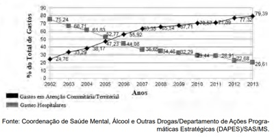
A o gráfico mostra um aumento proporcional do custeio de serviços hospitalares, em especial em grandes instituições, como parte do processo de reforma das políticas de saúde mental no país.
B apesar do aumento do número absoluto de leitos em hospitais psiquiátricos entre 2002 e 2013, o gráfico mostra que o alto custo dos serviços ambulatoriais fez com que os gastos públicos com os CAPS fossem e proporcionalmente maior a partir de 2005.
C o gráfico retrata o processo mudança de modelo de atenção, diretriz apontada desde a lei da reforma psiquiátrica, uma vez que os gastos com serviços substitutivos ao hospital psiquiátrico superaram os gastos hospitalares a partir de 2005.
D ainda que o gráfico represente um recorte temporal, o processo de diminuição de gastos com financiamento de leitos psiquiátricos já vinha em queda desde a década de 1940, especialmente aqueles que eram parte de instituições privadas.
E a reforma psiquiátrica se desenvolveu durante os governos FHC e Lula, por se tratar de uma política de governo adotada entre 1998 e 2006, ainda que não seja de uma política de Estado brasileira.
Questão 891 · Políticas de Saúde do Sistema Único de Saúde · Nova Política Nacional de Saúde Mental · HIVAids · 4000165177O Brasil foi o primeiro país em desenvolvimento a oferecer acesso universal e gratuito para o tratamento da Aids. No entanto, um programa para ser bem sucedido precisa ir além da distribuição de medicamentos. Para se atingir as metas de combate a essa doença a política de controle da Aids no Brasil, entre outras diretrizes, propõe
A separação entre prevenção e assistência em dois programas específicos.
B combate à estigmatização e ao preconceito e política de redução de danos para usuários de drogas.
C nacionalização de laboratórios farmacêuticos e centralização nacional da produção de antirretrovirais.
D diminuição da participação de ONGs no desenvolvimento de políticas.
E aproximação de movimentos religiosos e igrejas para o desenvolvimento de campanhas de prevenção contra Aids.
Questão 892 · Tratamento do TOC · Transtorno ObsessivoCompulsivo TOC · 4000165139Paciente do sexo masculino com 19 anos de idade procura seu consultório relatando di culdade em sua vida devida a pensamentos repetitivos e persistentes de contaminação, que o impelem a realizar a higienização de suas mãos e de superfícies, várias vezes sequencialmente. Relata também pensamentos de ter deixado de fazer algo, com comportamentos repetitivos de conferência (relata conferir se sua casa está fechada por muitas vezes). Tais pensamentos e atividades ocupam grande parte do seu dia (em torno de 1h e 30 minutos). Relata ter feito um “check-up” recentemente e não apresenta comorbidades. O paciente percebe que os pensamentos não são compatíveis com a realidade e interferem com suas atividades. Considerando o diagnóstico mais provável, analise as assertivas. I – Comorbidades são comuns, entre as mais frequentes estão depressão, tiques e transtornos alimentares. II – A doença sempre apresenta evolução progressiva e deterioração constante da função psicossocial. III – A fluvoxamina é aprovada para o tratamento desta doença em adultos e crianças. IV – A clomipramina é eficaz nesta doença e bem tolerada. Assinale a alternativa correta.
A As assertivas I e II são corretas.
B As assertivas I e III são corretas.
C As assertivas II e III são corretas.
D As assertivas II e IV são corretas.
E As assertivas III e IV são corretas.
Questão 893 · Mononucleose Inf ecciosa · 4000165104Adolescente de 16 anos vem ao pronto atendimento com queixas de dor de garganta, febre há uma semana, fadiga e linfadenopatia cervical bilateral. Ao exame físico apresenta alargamento tonsilar acentuado, com exsudatos, petéquias na junção dos palatos duro e mole. Aumento de linfonodos cervicais anteriores, posteriores e submandibulares. Baço palpável 2cm abaixo do rebordo costal. Apresenta também uma erupção cutânea morbiliforme e vasculítica, principalmente em extremidades e nádegas. Relata uso de amoxicilina há 4 dias, sem melhora do quadro. Sobre esta situação selecione a opção correta. I – A falha do tratamento antimicrobiano pode ser justificada pela resistência do estreptococo à penicilina. II – Em caso de obstrução incipiente da das vias aéreas estaria indicada a utilização de corticosteroides. III – A complicação mais temida desta doença é a ruptura do baço.
A As afirmativas I e II são verdadeiras. A afirmativa III é falsa.
B As afirmativas I e III são verdadeiras. A afirmativa II é falsa.
C As afirmativas II e III são verdadeiras. A afirmativa I é falsa.
D As afirmativas I, II e III são verdadeiras.
E As afirmativas I, II e III são falsas.
Questão 894 · Osteomielite · Osteomielite · 4000165103Infecções ósseas são relativamente comuns em crianças. A osteomielite aguda hematogênica tem início súbito e sintomas exuberantes como febre alta, dor intensa e queda do estado geral. Sobre esta situação selecione a opção correta. I – O Staphylococcus aureus é o organismo infeccioso mais comum na osteomielite entre todas as faixas etárias, exceto nos recém nascidos. II – O tratamento antimicrobiano deve ser realizado por um período mínimo de 21 a 28 dias, por via intravenosa por todo o período. III - A drenagem cirúrgica deve ser reservada para os casos em que a antibioticoterapia se mostrar ineficaz.
A As afirmativas I e II são verdadeiras. A afirmativa III é falsa.
B As afirmativas I e III são verdadeiras. A afirmativa II é falsa.
C As afirmativas II e III são verdadeiras. A afirmativa I é falsa.
D As afirmativas I, II e III são verdadeiras.
E As afirmativas I, II e III são falsas.
Questão 895 · Suicídio · 4000165059Adolescente, 15 anos de idade, sexo masculino, vem à UBS trazido pela mãe, que informa modi cações no comportamento do menor, apresentando-se agressivo em casa, e batendo nos irmãos menores. Trata-se do primeiro lho de uma prole de quatro, sendo o único do primeiro casamento, com 4 anos de diferença para o segundo irmão. Segundo a mãe, o menor mantinha um bom relacionamento em família mas, após ter sido surpreendido, há 3 meses, usando maconha em casa, foi repreendido e teve a mesada suspensa. Não tem contato com o pai. A agressividade se agravou ainda mais, após o término do relacionamento com a namorada, de 17 anos, há duas semanas. Desde então, passa grande parte do tempo trancado no quarto; não senta à mesa para as refeições e muitas vezes não se alimenta. Tem boa escolaridade e é considerado acima da média, mas faltou, pelo menos, dois dias à escola nas últimas semanas. Hoje, após uma briga, o adolescente mencionou que "preferia estar morto do que viver desse jeito”. Com relação à epidemiologia das mortes por suicídio no Brasil, pode se afirmar que essas mortes
A independem de classe social e etnia.
B ocorrem mais nas zonas rurais que urbanas.
C são comuns em jovens e raras em idosos.
D são limitadas pela proibição das armas de fogo.
Questão 896 · Suicídio · 4000165058Adolescente, 15 anos de idade, sexo masculino, vem à UBS trazido pela mãe, que informa modi cações no comportamento do menor, apresentando-se agressivo em casa, e batendo nos irmãos menores. Trata-se do primeiro lho de uma prole de quatro, sendo o único do primeiro casamento, com 4 anos de diferença para o segundo irmão. Segundo a mãe, o menor mantinha um bom relacionamento em família mas, após ter sido surpreendido, há 3 meses, usando maconha em casa, foi repreendido e teve a mesada suspensa. Não tem contato com o pai. A agressividade se agravou ainda mais, após o término do relacionamento com a namorada, de 17 anos, há duas semanas. Desde então, passa grande parte do tempo trancado no quarto; não senta à mesa para as refeições e muitas vezes não se alimenta. Tem boa escolaridade e é considerado acima da média, mas faltou, pelo menos, dois dias à escola nas últimas semanas. Hoje, após uma briga, o adolescente mencionou que "preferia estar morto do que viver desse jeito”. Identi que o número de fatores epidemiológicos de risco de morte por suicídio nos dados apresentados no caso:
A Oito fatores.
B Sete fatores.
C Seis fatores.
D Cinco fatores.
Questão 897 · Suicídio · 4000165057Adolescente, 15 anos de idade, sexo masculino, vem à UBS trazido pela mãe, que informa modi cações no comportamento do menor, apresentando-se agressivo em casa, e batendo nos irmãos menores. Trata-se do primeiro lho de uma prole de quatro, sendo o único do primeiro casamento, com 4 anos de diferença para o segundo irmão. Segundo a mãe, o menor mantinha um bom relacionamento em família mas, após ter sido surpreendido, há 3 meses, usando maconha em casa, foi repreendido e teve a mesada suspensa. Não tem contato com o pai. A agressividade se agravou ainda mais, após o término do relacionamento com a namorada, de 17 anos, há duas semanas. Desde então, passa grande parte do tempo trancado no quarto; não senta à mesa para as refeições e muitas vezes não se alimenta. Tem boa escolaridade e é considerado acima da média, mas faltou, pelo menos, dois dias à escola nas últimas semanas. Hoje, após uma briga, o adolescente mencionou que "preferia estar morto do que viver desse jeito”. Com relação ao risco de suicídio, expresso na fala do adolescente, pode se afirmar que:
A Há ideação suicida que indica grande risco.
B Há ideação suicida passiva e o risco não pode ser previsto.
C Não há ideação suicida pois o plano não foi formulado.
D Há ideação suicida passiva e vaga, com risco baixo.
Questão 898 · Osteossarcoma · 4000164994Menina, 11 anos, apresenta dor no joelho direito há 6 meses. A descrição mais adequada da lesão vista nas radiografias e o diagnóstico mais provável, respectivamente, é:
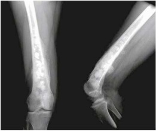
A lesão permeativa no fêmur distal, sem reação periosteal / histiocitose de células de
B lesão lítica de aspecto insuflativo no fêmur, sem reação periosteal / tumor de células gigantes
C espessamento cortical do fêmur com acentuação do trabeculado / doença de
D lesão expansiva heterogênea, predominantemente esclerótica, no fêmur com reação periosteal / osteossarcoma
Questão 899 · Apresentação Clínica · 4000164982Menina, cinco anos, previamente hígida, apresenta febre e fadiga. Exame físico: faringite exsudativa; adenomegalia generalizada com maior acometimento da cadeia cervical posterior e esplenomegalia. Pode-se afirmar que:
A esse quadro é compatível com infecção congênita por HIV
B a corticoterpaia oral irá acelerar a melhora do quadro
C o monoteste é o melhor e mais sensível teste para o diagnóstico
D usar amoxicilina pode causar um exantema pruriginoso
Questão 900 · Abrasões Corneanas · Of talmologia · 4000164950Diagnosticada uma abrasão corneana super cial com presença de corpo estranho aderido na área da lesão e não havendo instrumental para retirá-lo, o médico deve proceder inicialmente a:
A oclusão da lesão com pomada de corticóide
B aplicação de antibiotico tópico
C aplicação de ciclopentolato
D irrigação da região com soro fisiológico
Questão 901 · Antipsicóticos · 4000164933Considere os fármacos antipsicóticos listados na coluna 1 e os efeitos adversos listados na coluna 2. A correlação mais adequada entre os antipsicóticos e seus efeitos adversos é: Coluna 1 1 - clorpromazina 2 - haloperidol 3 - olanzapina 4 - clozapina Coluna 2 A - agranulocitose B - hipotensão arterial ortostática C - efeitos extrapiramidais D - ganho de peso
A 1-C, 2-A, 3-B, 4-D
B 1-B, 2-C, 3-D, 4-A
C 1-D, 2-A, 3-B, 4-C
D 1-C, 2-B, 3-A, 4-D
Questão 902 · Anatomia e Semiologia da Perna Tornozelo e Pé · Avaliação clínica · 4000164914A di culdade de fazer ativamente a dorsi exão do pé, por lesão de nervo periférico, está relacionada ao segmento de inervação:
A L5-S1
B L4-L5
C L3-L4
D L1-L2
Questão 903 · Introdução · Intoxicações Exógenas · Medidas gerais · 4000164836Nas intoxicações exógenas está indicado a realização de lavagem gástrica e carvão ativado nas primeiras horas. No entanto, existem algumas substâncias que contraindicam esse procedimento. Assinale a alternativa que possui uma substância em que NÃO é indicado esse procedimento.
A Álcalis fortes (Substâncias causticas)
B Carbamazepina
C Fenitoina
D Digoxina
Questão 904 · Síndrome Anticolinérgica · 4000164650Paciente de 62 anos de idade é trazida pelos familiares ao serviço de emergência por ter ingerido aproximadamente quarenta comprimidos de amitriptilina 25 mg. A paciente encontrava-se agitada e confusa. Sobre intoxicação por substâncias com efeitos anticolinérgicos, é correto afirmar
A Sialorreia é um achado comum.
B Alterações eletrocardiográficas são raras.
C Dosagem do nível sérico de colinesterase é mandatória.
D O uso de atropina está indicado em alguns casos.
E Exame físico abdominal com presença de globo vesical pode estar presente.
Questão 905 · Suicídio · Transtorno de Personalidade Borderline · 4000164648Considere uma paciente feminina, 48 anos, internada devido à tentativa de suicídio por meio da ingesta de 20 comprimidos de clonazepam 0,5 mg. Foi inicialmente internada em unidade de terapia intensiva devido ao risco de rebaixamento do nível de consciência, mas evoluiu clinicamente bem e após 48 horas foi liberada para seguir internação em enfermaria. Em sua primeira avaliação, ainda sem a presença de um familiar, a paciente relata ser a sua terceira tentativa de suicídio. Todas as três tentativas ocorreram no contexto de discussão com o seu cônjuge e foram por meio de ingestão de medicamentos. Relata estar “deprimida” e ainda persistir com ideação suicida, que tem plano de usar método diferente em nova tentativa, porém, não relata qual seria tal método. Já em avaliação subsequente com psicólogo, a paciente, acompanhada de sua lha e muito bem humorada, relata estar arrependida de ter tentado pôr m à própria vida e que não tem intensão de nova tentativa, relatando que essa é uma questão resolvida para ela. Por m, em avaliação com o psiquiatra, a paciente, acompanhada de seu cônjuge, relatou em tom agressivo que não tem intensão de nova tentativa de suicídio, mas que não está arrependida da tentativa atual, pois segundo ela, o seu cônjuge “mereceu tomar esse susto”. Assinale a alternativa correta com relação ao caso.
A A flutuação intensa do humor em um período tão curto de tempo é característico do delirium, que pode ser hiperativo quando o humor é mais eufórico e hipoativo quando o humor é mais embotado.
B A flutuação intensa do humor em um período tão curto de tempo levanta suspeita de transtorno de humor bipolar como provável quadro psiquiátrico de base, com evolução de uma fase depressiva para uma fase maníaca.
C Os diferentes relatos com relação à atual tentativa de suicídio podem ser caracterizados como delírios bizarros, levantando a hipótese diagnóstica de esquizofrenia de início tardio.
D Tentativas de suicídio relacionadas a atos impulsivos são de baixo risco para novas tentativas, sendo dispensada uma boa rede de apoio familiar ou social para a alta hospitalar e seguimento da paciente
E O padrão de instabilidade em relacionamentos interpessoais, variações extremas de humor e impulsividade nas tentativas de suicídio levantam a suspeita de transtorno de personalidade borderline como o provável quadro psiquiátrico de base
Questão 906 · Abstinência de Álcool · 4000164568Paciente alcoolista, insone, interrompe, sem orientação médica, o uso da substância e, 20 horas após a interrupção do consumo, é acometido de crise epiléptica. Nessa situação, o médico deve: I. Ficar atento a sinais de desenvolvimento de delirium tremens. II. Prescrever hipnóticos para melhora do sono e desta forma prevenir episódios convulsivos. III. Investigar se a crise epiléptica é decorrente de outra etiologia. Quais estão corretas?
A Apenas I e II.
B Apenas I e III.
C Apenas II e III.
D I, II e III.
Questão 907 · Abstinência de Álcool · 4000164567A síndrome de abstinência por substância está associada aos seguintes critérios: I. O desenvolvimento de uma síndrome especí ca da substância devido à interrupção ou redução de seu uso intenso e prolongado. II. A síndrome especí ca da substância causa sofrimento clinicamente significativo ou prejuízo no funcionamento social, profissional ou em outras áreas importantes da vida do indivíduo. III. Os sintomas não se devem a uma condição médica geral, nem são mais bem explicados por outro transtorno mental. Quais estão corretas?
A Apenas I e II.
B Apenas I e III.
C Apenas II e III.
D I, II e III.
Revisar: possível letra faltando em enunciado
Questão 908 · Resumo das Toxíndromes · Síndrome Adrenérgica · 4000164566Qual é a hipótese diagnóstica mais provável para paciente com história de uso de várias substâncias de abuso e que se apresenta com taquicardia, midríase e hipertensão arterial?
A Acatisia por antipsicótico.
B Intoxicação por álcool.
C Intoxicação por estimulante.
D Abstinência por benzodiazepínicos.
Questão 909 · Abstinência de Álcool · Delirium Tremens · 4000164565Qual das medicações descritas abaixo NÃO deveria ser usada em pacientes com risco de desenvolver delirium tremens
A Tiamina.
B Diazepam.
C Clozapina.
D Carbamazepina.
Questão 910 · Transtorno do Déf icit de Atenção e Hiperatividade TDAH · 4000164551Em relação ao Transtorno do Déficit de Atenção com Hiperatividade (TDAH), é correto afirmar que:
A É um transtorno que usualmente aparece na infância ou adolescência, relacionado a alterações neurobiológicas e costuma apresentar melhora do quadro clínico com uso de psicoestimulantes.
B É relacionado essencialmente com fatores culturais (as práticas de determinada sociedade) e as primeiras vivências infantis (o modo como os pais, ou seus substitutos, educam e se relacionam com os filhos, com os decorrentes conflitos psicológicos).
C São consideradas as principais causas: luz artificial, consumo de açúcar, deficiência hormonal e deficiências vitamínicas na dieta da criança. Não estão associados a outras comorbidades psiquiátricas na vida adulta.
D Abordagem focada completamente na relação do terapeuta com o paciente.
Questão 911 · Fobia Social ou Transtorno de Ansiedade Social · 4000164550Qual é o achado mais frequente na criança com diagnóstico de Transtorno de Ansiedade Social?
A Violência com os animais.
B Imposição aos colegas para realização de suas tarefas escolares.
C Impulsividade e violência com os colegas.
D Inibição e dificuldade de interação com os pares.
Questão 912 · Rinossinusites · 4000164536Assinale a alternativa correta considerando o diagnóstico de rinossinusite na criança.
A É caracterizada pela presença de dois ou mais sintomas, sendo a febre e a tosse necessários para o diagnóstico.
B A presença de corpo estranho nasal deve ser um diagnóstico diferencial.
C Aproximadamente 90% das crianças com rinossinusite aguda viral evoluem para uma rinossinusite aguda bacteriana.
D Inflamação da mucosa nasossinusal com duração superior a 4 semanas caracteriza a rinossinusite crônica.
Questão 913 · Transtornos do Humor · Síndrome prémenstrual · 4000164531Mulher, 30 anos, apresenta episódios intercorrentes de tristeza intensa, desinteresse, ideias de desvalia, tensão, acompanhada de cefaleia e dores musculares. Fica irritada facilmente, mas os sintomas desaparecem rapidamente, voltando ao seu comportamento usual, tranquilidade e interesse. O transtorno mais provável é:
A Disfórico pré-menstrual.
B Ansiedade generalizada.
C Ciclotímico.
D Dismórfico corporal.
Questão 914 · Psicof armacologia · Psicof ármacos na Gestação e Amamentação · 4000164530Paciente procura atendimento em uma Unidade de Saúde. Ela teve alta hospitalar psiquiátrica há mais de 1 ano, devido a um episódio agudo de Transtorno do Humor, episódio depressivo grave, atualmente retornou ao funcionamento pré-mórbido, está estável, tem 28 anos de idade e não possui nenhuma comorbidade. A paciente vem fazendo uso de diversos psicofármacos, porém quer aconselhamento do médico, pois pretende parar o uso de contraceptivo oral, já que ela e o marido desejam engravidar. Ela está preocupada com o uso dos medicamentos, entretanto não gostaria de parar com todos, pois, devido a ter apresentado vários episódios de depressão, receia o retorno dos sintomas depressivos durante e após a gestação. Se você fosse o médico, das medicações descritas abaixo, qual você iria retirar mais rapidamente, pensando na segurança do futuro concepto em termos de prevenção de possíveis efeitos teratogênicos e, posteriormente, durante a amamentação?
A Haloperidol.
B Sertralina.
C Carbamazepina.
D Bupropiona.
Questão 915 · Tratamento da Depressão · Depressão · 4000164491Um homem de 66 anos queixa-se que, há três meses, tem fadiga intensa e desânimo, inapetência, insônia, “nervosismo”, sentimento de culpa, tristeza e perda de peso. Nega ideias de morte e diz que isso seria contra suas crenças religiosas. Esses sintomas são incapacitantes, com prejuízo econômico. Apresentou quadro semelhante previamente, que melhorou com o uso de antidepressivos. Não apresenta outras alterações clínicas e laboratoriais. Diante dessa situação clínica, qual a conduta mais adequada?
A Reavaliar em 1 mês.
B Não medicar pelo risco de suicídio.
C Prescrever benzodiazepínico.
D Prescrever antidepressivo.
Questão 916 · Transtorno Psicóticos · Estado Conf usional Agudo Delirium · 4000164490Paciente pós-cirúrgico cardíaco a céu aberto, em sala de recuperação, começa a acordar e falar que quer ajuda para descer do leito, pois quer conversar com seus amigos que estão no restaurante, onde costuma almoçar, no mercado público da cidade. Segundo os argumentos do paciente, estão próximos ao seu automóvel, para o qual aponta, como se estivesse efetivamente estacionado naquele andar do hospital. O médico procura tranquilizar o paciente, porém este, à medida que se recupera do processo cirúrgico e anestésico, fica cada vez mais agitado e agressivo. Sobre o caso, assinale a alternativa INCORRETA.
A A solicitação de exames laboratoriais como hemograma, provas de função hepática e renais, eletrólitos, entre outros, podem auxiliar na elucidação da origem do quadro clínico.
B Trata-se de um quadro clínico característico de um paciente com Transtorno Delirante Tipo Somático prévio.
C Trata-se de um Transtorno Neurocognitivo, no caso, um quadro de delirium, podendo ser decorrente tanto do processo cirúrgico e anestésico quanto de abstinência ou intoxicação por fármacos ou outras substâncias.
D Este paciente apresenta, entre outras, alterações no nível de consciência, orientação e atenção.
Questão 917 · Psiquiatria · 4000164461Mulher, 47 anos, com história de episódios autolimitados de sensação de morte iminente, acompanhada por palpitações, sudorese e tremor de extremidades, com duração aproximada de 15 minutos. Refere inúmeros episódios semelhantes nos últimos 6 meses. Percebeu que em locais públicos, como parques e praças as crises surgem com mais frequência. Assinale a alternativa que corresponde a melhor hipótese.
A Ataque de pânico com agorafobia.
B Transtorno de Ansiedade Generalizada com agorafobia.
C Transtorno Obsessivo Compulsivo com Fobia Social.
D Transtorno de Pânico com agorafobia.
Questão 918 · Transtorno Psicóticos · 4000164460Ambrósio, 17 anos, é levado pelos pais à UBS para consulta com a médica de família. Os pais contam que há 3 meses o paciente parece conversar sozinho, apontando em diversas direções. Também notaram que há algumas semanas o garoto tem falado sobre temas como invasão alienígena e sobre a teoria dos “antigos astronautas”. A mãe, mais observadora, também conta que há quase um ano seu lho passa a maior parte do tempo no quarto, tem saído menos de casa e passa alguns dias sem tomar banho. Assinale qual é a melhor hipótese para o caso:
A Transtorno Psicótico Breve.
B Esquizofrenia.
C Transtorno Delirante Persistente.
D Mania Bipolar
Questão 919 · Psiquiatria · 4000164459Mulher de 18 anos, no sétimo mês de gestação, queixa-se de anedonia, insônia, falta de apetite, perda de peso, baixa concentração, insônia e baixa autoestima, desde o 3º mês de gravidez. Qual é a hipótese diagnóstica e melhor indicação farmacológica?
A Blues do puerpério - Paroxetina.
B Ansiedade generalizada - Clonazepam
C Depressão - Sertralina.
D Bipolaridade - Lítio
Questão 920 · Ref orma Psiquiátrica e Psiquiatria Social · 4000164458A respeito das políticas públicas em Psiquiatria assinale a alternativa incorreta:
A O movimento social que impulsionou a mudança do modelo de atenção em saúde mental no Brasil é denominado de Reforma Psiquiátrica.
B A Política Nacional de saúde mental tem entre as suas diretrizes atuais o objetivo da redução gradual de leitos e hospitais psiquiátricos.
C Pacientes com doenças mentais graves devem ser acompanhados no CAPS.
D Sempre que possível, interações psiquiátricas devem ocorrer em hospitais escola.
Questão 921 · Psiquiatria · Depressão · 4000164457É considerado pelo DSM-5 um critério maior para o diagnóstico de depressão na infância e adolescência, exceto:
A Humor deprimido
B Irritabilidade
C Ansiedade
D Anedonia
Questão 922 · Transtorno do Humor Bipolar THB · Diagnóstico da Depressão · Depressão · 4000164433Paciente de 65 anos, feminina, com apatia, sensação de tristeza e de fardo para a família, sentimento de culpa e baixa autoestima, relatou que perdeu capacidade de sentir prazer e alegria, além de queixar-se de câimbras nas pernas, problemas de memória e desesperança quanto ao futuro. Ao exame físico apresenta retardo motor. A paciente refere que apresenta essas queixas há, aproximadamente, três semanas. Entre as hipóteses diagnósticas abaixo, a mais provável é
A transtornos de personalidade.
B transtorno afetivo bipolar.
C transtorno depressivo recorrente.
D transtorno depressivo maior.
Questão 923 · Of talmologia · Retinoblastoma · 4000164412Pais de pré-escolar, sexo feminino, 4 anos, em consulta de rotina com pediatra referem que as fotos de sua filha, quando tiradas com O exame ocular revelou: reflexo vermelho alterado no olho direito e normal no esquerdo. Fundo de olho normal à esquerda e à direita com múltiplas massas rosadas, vascularizadas, parcialmente calci cadas, preenchendo a cavidade vítrea. Entre as seguintes hipóteses diagnósticas, a mais provável para este caso é:
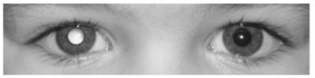
A retinoblastoma.
B catarata congênita.
C doença de Coats.
D descolamento de retina.
Questão 924 · Ortopedia · Quadril Pediátrico · 4000164399Fernando, três anos, é levado pela mãe à uma Unidade de Pronto Atendimento com história de irritabilidade e recusa a andar ou car em pé há quatro dias. Nega anorexia e febre. Mãe refere episódio de infecção de vias aéreas superiores antecedendo o quadro clínico atual. Exame físico normal com exceção de dor a manipulação do quadril e fêmur à direita. Encontra-se em bom estado geral e afebril. Dentre os achados laboratoriais abaixo, o mais provavelmente encontrado neste paciente é:
A ressonância magnética demonstrando espessamento do periósteo.
B ultrassonografia com alargamento do espaço articular.
C radiografia da pelve em AP e Lowenstein evidenciando colapso da epífise.
D cintilografia de fêmur evidenciado sequestro ósseo.
Questão 925 · Saúde do Idoso geriatria · Antipsicóticos · Estado Conf usional Agudo Delirium · 4000164287Mulher, 85 anos, portadora de síndrome da fragilidade e hipertensão arterial sistêmica. Interna devido a pneumonia e evolui, no segundo dia de internação, com agitação e confusão mental. Ao exame físico: REG, confusa, desidratada 1+/4+. PA: 149 x 68 mmHg, FC 92 bpm, FR: 18 irpm, satO₂: 94% com cateter nasal a 2 L/min. Ausculta pulmonar: MV presente, com roncos de transmissão difusos. Ausculta cardíaca sem alterações. Abdome doloroso à palpação difusa, sem massas ou visceromegalias palpáveis. Em relação à alteração comportamental, qual é o tratamento medicamentoso mais adequado?
A Diazepam.
B Clorpromazina.
C Clonazepam.
D Haloperidol
Questão 926 · Doença de LeggCalvéPerthes · 4000164262Menino de 5 anos apresenta dor moderada no quadril direito há 2 meses. A família notou diminuição progressiva da atividade da criança e piora dos sintomas neste período. Relata piora da dor aos movimentos e alívio ao repouso. Ao exame físico apresenta claudicação antálgica e limitação moderada dos movimentos do quadril direito pela dor. Não foram identi cadas outras regiões dolorosas ou deformidades. Radiogra as em anexo. Qual o diagnóstico mais provável?
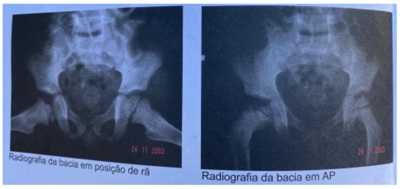
A Artrite séptica do quadril com osteomielite associada.
B Artrite reumatoide juvenil.
C Necrose idiopática da cabeça do fêmur (doença de Legg-Calvé-Perthes).
D Displasia epifisária múltipla.
Questão 927 · Ortopedia · Síndrome de BrownSequard · Síndromes Medulares · 4000164249Homem de 21 anos, admitido após ferimento por arma de fogo em região cervical direita. Ao exame físico, apresentava via aérea pérvia, estando hemodinamicamente estável com pulso periférico presente e boa perfusão. Ao exame neurológico, apresentava escala de coma de Glasgow de 15, pupilas isocóricas, hemiparesia à direita grau 2, sinal de Babinski à direita. perda da sensibilidade proprioceptiva à direita e perda da sensibilidade termoalgésica à esquerda. Qual é o diagnóstico sindrômico?
A Lesão da medula anterior.
B Hemissecção medular.
C Lesão central da medula.
D Lesão da medula posterior.
Questão 928 · Fratura do rádio distal · Conceitos Básicos do Trauma Ortopédico · Diagnóstico · 4000164246Homem de 52 anos sofreu fratura da região distal do rádio que foi tratada com imobilização gessada há 12 horas. Retornou ao pronto socorro com forte dor no punho que não melhorava com analgesia. Ao exame físico apresentava edema dos dedos e dor forte ao movimentá-los. Perfusão dos dedos presente com enchimento capilar lentificado. Qual a melhor conduta?
A Encaminhar para cirurgia para realização de osteossíntese da fratura e liberação dos compartimentos.
B Retirada imediata da imobilização, confecção de imobilização provisória, observação da evolução.
C Encaminhar para cirurgia para realização de osteossíntese da fratura sem necessidade de fasciotomia.
D Iniciar uso imediato de opioides e elevar o membro sem interferir no tratamento da fratura.
Questão 929 · Otorrinolaringologia · 4000164243Uma senhora de 45 anos vem ao ambulatório do IAMSPE com queixa de tontura intermitente de início há vários meses. Relata que os quadros vêm em forma de crises com vertigem, náuseas, hipoacusia e zumbido. Relata ser portadora de HAS e DM sob controle. Ocorre piora dos sintomas o movimentar a cabeça. Em relação ao quadro acima, assinale a alternativa correta:
A Estamos diante de uma provável hipofunção vestibular crônica associada a presbiacusia.
B O diagnóstico é realizado de forma clínica através do teste de Romberg e Dix-Hallpike
C O tratamento é realizado com associação de manobra de epley e reabilitação vestibular
D Devemos utilizar supressores vestibulares na fase aguda e diuréticos como tratamento de manutenção
E Quadro clínico compatível com labirintite crônica, com o diagnóstico realizado através da otoscopia e exame físico otoneurológico.
Questão 930 · Otorrinolaringologia · 4000164242David é um estudante de medicina que está rodando no internato do IAMSPE e te procurou no pronto socorro para descrever que está com febre, obstrução nasal, cefaleia e tosse produtiva de início há 4 dias. Temperatura 37.5, orofaringe com hiperemia de tonsilas e secreção purulenta em parede posterior, otoscopia com hiperemia da membrana timpânica, rinoscopia com secreção espessa amarelada. Em relação ao quadro acima, assinale a alternativa correta:
A Otite média aguda, amoxicilina-clavulanato, analgésicos e antitérmicos.
B Rinossinusite bacteriana aguda, amoxicilina, lavagem nasal com solução salina e sintomáticos
C Rinossinusite viral, lavagem nasal com solução salina, antitérmicos e analgésicos
D Faringite bacteriana, amoxicilina, prednisona, lavagem nasal com solução salina.
E Rinossinusite bacteriana aguda, levofloxacino, lavagem nasal com solução salina, prednisona e antitérmicos.
Questão 931 · Otorrinolaringologia · 4000164241João tem três anos e foi trazido pelo pai em seu primeiro plantão noturno no IAMSPE às 3 horas da manhã com relato de que acordou no meio da noite com cansaço, tosse e um “barulho” durante à respiração. Nega episódios prévios, sintomas nasais e faríngeos, e relata que passou o dia anterior bem na casa dos avós, com boa alimentação. No momento do atendimento apresenta uma tosse seca leve, temperatura 37 graus, sem verificação de novos ruídos. AP: MV + sem RA. Em relação ao quadro acima, assinale a alternativa correta:
A O provável agente etiológico é o vírus parainfluenza
B Devemos oferecer oxigênio umidificado e orientações sobre o quadro
C Para prevenção de recorrências devemos oferecer nebulização com epinefrina e dexametasona
D Ofertar dexametasona via oral e observação por 4 horas no pronto atendimento
E Pode ser um corpo estranho de laringe ou traqueia necessitando de avaliação da otorrinolaringologia.
Questão 932 · Otorrinolaringologia · 4000164240Uma menina de 3 anos de idade vem ao pronto atendimento com história de otalgia e febre há 1 dia. Há 3 dias iniciou quadro de obstrução nasal, febre baixa, tosse e dor de garganta. Ao exame: Temperatura de 38.5, orofaringe com hiperemia e pontos esbranquiçados, rinoscopia com secreção espessa, otoscopia com hiperemia de membrana timpânica à direita e abaulamento da membrana timpânica a esquerda. Em relação a situação acima, assinale o diagnóstico e conduta adequados:
A Otite média aguda bacteriana, lavagem nasal com solução salina, analgésicos, antitérmicos e reavaliação.
B Otite média aguda viral, analgésico, expectorante, antitérmicos
C Faringite bacteriana, amoxicilina e analgésico
D Rinossinusite aguda bacteriana, amoxicilina, lavagem nasal com solução salina, analgésicos e antitérmicos
E Otite média aguda bacteriana, azitromicina, lavagem nasal com solução salina, analgésicos e antitérmicos.
Questão 933 · Doença degenerativa discal e hérnia discal · 4000164230Homem de 45 anos, sem comorbidades prévias, queixa-se de lombalgia de início súbito com irradiação para membro inferior direito há 2 dias, iniciado após levantar armário em casa para limpeza. Utilizou paracetamol por conta própria, com melhora parcial. Ao exame físico não apresenta alterações a não ser por dor no membro citado, principalmente quando elevado em posição reta acima de 40 graus. Realizou o exame de ressonância magnética em anexo. Qual o tratamento mais indicado para este paciente?
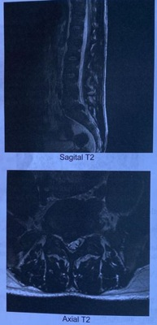
A Cirurgia-microdiscectomia.
B Conservador (analgesia).
C Uso de colete lombar (de Putti).
D Infiltração radicular com glicocorticoide.
Questão 934 · Apresentação Clínica · 4000164224Você trabalha como médico em uma Unidade de Saúde da Família e atende um jovem de 16 anos, previamente hígido, que procura atendimento queixando-se de odinofagia e febre há 5 dias. Há 3 dias, procurou o serviço de pronto-atendimento, onde foi atendido por um médico que lhe prescreveu amoxicilina + clavulanato (500/125 mg) 1 cp 8/8h por 1 semana e dipirona, se necessário. Desde então, o rapaz notou piora dos sintomas e o aparecimento de lesões avermelhadas no tronco. Fotos de sua orofaringe e tronco no dia da consulta estão ilustradas abaixo. Diante desse quadro clínico, assinale a alternativa que contém o diagnóstico mais provável e a conduta mais apropriada para o caso.
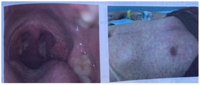
A Abscesso periamigdaliano. Manter amoxicilina + clavulanato e encaminhar o paciente para drenagem cirúrgica imediata.
B Herpangina, farmacodermia à amoxicilina + clavulanato. Trocar amoxicilina + clavulanato por clindamicina 600 mg (vo) 8/8h.
C Amigdalite bacteriana, falha no tratamento antimicrobiano. Trocar amoxicilina + clavulanato por ceftriaxona 2g (EV) ou (IM) 1 vez ao dia.
D Mononucleose infecciosa. Suspender amoxicilina + clavulanato e intensificar analgesia com nimesulide 100 mg (vo) 12/12h.
Questão 935 · Dependência de Tabaco · 4000164218Paciente de 46 anos procura seu médico de família e comunidade (MFC). O paciente tem antecedentes pessoais de hipertensão arterial sistêmica (controlada com medicamentos) e de gota. Apresentou quadro de epilepsia dos 2 aos 15 anos de idade, com a última crise convulsiva aos 12 anos. Está em tratamento de úlcera gástrica, diagnosticada há 1 semana. Faz uso crônico de losartana (100 mg ao dia), alopurinol (300 mg ao dia) e em uso recente de claritromicina, amoxicilina e omeprazol. É tabagista desde os 18 anos de idade. Fuma cerca de 20 cigarros ao dia. Fuma o primeiro cigarro 20 minutos após acordar, pela manhã. Tem sintomas de ssura quando ca mais de 2 horas sem fumar. Não tem queixas respiratórias. Nega uso de bebidas alcoólicas. O paciente informa que, devido à crise gerada pela pandemia de Covid-19, foi demitido há 6 meses e não conseguiu outro emprego, até o momento. Também está passando por di culdades no relacionamento com a esposa. Há cerca de 2 meses vem apresentando sintomas de tristeza, anedonia, di culdades de sono e ganho de peso. Durante a entrevista o MFC diagnosticou um episódio depressivo maior e a pontuação de Fagerstrom foi 8. Também relata que deseja cessar o tabagismo. O exame físico do paciente não mostrou qualquer alteração importante. Diante do quadro, o MFC decide iniciar intervenção psicoterapêutica e tratamento farmacológico com mais de uma droga. A prescrição mais indicada para este quadro seria:
A Adesivo definicotina e nortriptilina.
B Adesivo definicotina e goma definicotina.
C Goma definicotina e bupropiona.
D Adesivo definicotina e bupropiona.
Revisar: possível letra faltando em enunciado
Questão 936 · Tabaco · Introdução e Conceitos Fundamentais · Dependência de Tabaco · 4000164101A identi cação do grau de motivação e do estágio de mudança comportamental possibilita a escolha de estratégias de cuidado mais efetivas na intervenção quanto ao hábito de fumar. Segundo o modelo transteórico comportamental de Proschaska, o estágio de mudança e a conduta médica mais indicada para auxiliar na cessação do tabagismo, respectivamente, são:
A preparação / verificar estratégias de mudança viáveis e efetivas e trabalhar a ambivalência da pessoa
B ação / fornecer informações e materiais educativos relacionados ao risco do tabagismo e evitar a confrontação
C contemplação / trabalhar os tipos de parada (gradual ou abrupta) e engajar a pessoa em grupo de cessação de tabagismo
D pré-contemplação / identificar os receios da pessoa sobre o parar de fumar e possíveis obstáculos para essa tomada de decisão
Questão 937 · Suicídio · 4000164090Segundo dados da OPAS/OMS, cerca de 800 mil pessoas morrem por suicídio todos os anos, sendo a segunda principal causa de morte entre jovens com idade entre 15 e 19 anos. As ferramentas paratriagem de suicídio têm sensibilidade e especi cidade variáveis, o que torna a prática clínica um desa o, incluindo a decisão de hospitalizar ou não um paciente. Nesse contexto, é indicativo de hospitalização para adolescentes com ideação suicida, mesmo quando:
A a intenção tiver ocorrido na infância
B a intenção for fantasiosa
C a intenção for implícita
D não houver intenção
Questão 938 · Metástases Ósseas · 4000164040Homem de 72 anos refere quadro de dor lombar e fraqueza progressiva em membros inferiores, evoluindo para impossibilidade de deambular nos últimos três dias. Ao exame, há força grau 2 em membros inferiores, com nível sensitivo em altura de T10. A radiogra a da coluna torácica evidencia múltiplas lesões osteoblásticas com erosão de pedículos. Nesse caso, o exame que mais provavelmente auxiliará na investigação etiológica inicial é:
A radiografia de tórax
B ultrassonografia de tireoide
C antígeno prostático específico
D eletroforese de proteínas séricas
Questão 939 · Neuropatia óptica isquêmica · Of talmologia · 4000164038Mulher de 32 anos refere, há cerca de seis horas, quadro de dor no olho direito, de forte intensidade, com piora progressiva, associada à turvação visual. Relata ainda dormência no membro superior esquerdo que começou há duas semanas. Ao exame, há redução da acuidade visual no olho direito e perda de sensibilidade tátil grosseira no membro. Além disso, nota-se sensação de choque em dorso, com irradiação para membros inferiores, precipitada por exão do pescoço. Considerando a hipótese diagnóstica mais provável, o exame a ser solicitado para o melhor diagnóstico da doença é o(a):
A análise do líquido cefalorraquidiano
B ressonância magnética de crânio
C eletroencefalograma
D oftalmoscopia
Questão 940 · Esquizof renia Hebef rênica · 4000163763Um jovem de 20 anos, concluindo o ensino médio, foi pouco à escola no último mês. Nos últimos meses, vem se envolvendo com questões losó cas e parapsicológicas, temas que nunca lhe haviam interessado. Tem passado muito tempo isolado no quarto, convivendo pouco com os amigos, inclusive com a sua família, e vem tomando pouco banho e quase não troca de roupa. Por insistência da mãe, contra a sua vontade, comparece à consulta médica com um comportamento inadequado com riso imotivado e respostas sem sentido. Nesse caso, o diagnóstico MAIS PROVÁVEL, é de:
A Neurose.
B Esquizofrenia hebefrênica.
C Encefalite viral.
D Delírio de referência.
Revisar: possível letra faltando em enunciado
Questão 941 · Intoxicação por Anticoagulantes · Manejo do sangramento associado aos anticoagulantes orais · 4000163756Com relação às formas de reversão das coagulopatias relacionadas à anticoagulação oral, assinale a alternativa CORRETA:
A A ingestão de carvão ativado por via oral é eficiente para a redução da absorção até quatro horas da administração de inibidores diretos da trombina.
B Os pacientes que utilizaram rivaroxabana devem ser submetidos a diálise nos casos mais graves.
C O andexanet alfa deve ser administrado em pacientes que utilizaram inibidores do fator Xa (apixaban, rivaroxabana).
D O uso de Kcentra 50UI/Kg é indicado para pacientes que utilizaram inibidores da trombina.
Questão 942 · Of talmologia · 4000163754Caio, 7 anos, é levado pela responsável em consulta oftalmológica de rotina pela primeira vez. A professora da escola tem reparado que a criança vem apresentando di culdade para copiar o quadro e relatou esse fato à mãe. Durante o exame oftalmológico, Caio apresenta acuidade visual sem correção de 20/200 (sendo 20/20 a melhor visão que pode ser medida na tabela) em ambos os olhos. Na refração, apresenta -2,00 DE (dioptrias esféricas) em ambos os olhos, com acuidade visual corrigida de 20/20. Baseado no exame oftalmológico descrito, podemos inferir que:
A Nos olhos de Caio, objetos posicionados no infinito têm suas imagens formadas atrás da retina.
B A correção óptica desse tipo de erro refracional deve ser feita por meio de óculos com lentes divergentes.
C Nos olhos de Caio, objetos posicionados no infinito têm suas imagens formadas sobre a retina.
D A correção óptica desse tipo de erro refracional deve ser feita por meio de óculos com lentes convergentes.
Questão 943 · Otorrinolaringologia · 4000163753Roberto, de 43 anos, veio para atendimento na UE (unidade de emergência) apresentando abaulamento cervical doloroso, febre, sialorreia e disfonia de início há 1 dia. Relata diagnóstico de amigdalite há 7 dias na UPA de Bebedouro, onde foi prescrita azitromicina. Há 3 dias, evoluiu com sialorreia, abafamento da voz e recidiva de odinofagia. Ao exame, apresenta abaulamento de 4,0 cm nos níveis II e III, com pontos de flutuação, hiperemia e calor. Qual é a conduta mais indicada?
A Solicitar laringoscopia e tomografia computadorizada, e manter em observação na UE.
B Encaminhar para drenagem via cervicotomia sob anestesia geral.
C Internação hospitalar e antibioticoterapia empírica sem a necessidade de drenagem imediata.
D Encaminhar para radiologia intervencionista e realizar drenagem guiada por imagem (ultrassom ou tomografia).
Questão 944 · Otorrinolaringologia · 4000163752O R1 está no primeiro plantão na unidade de emergência da USP-RP quando recebe, referenciado da UPA de Sertãozinho, um paciente que veio ao pronto-socorro com quadro de epistaxe recorrente e volumosa em fossa nasal esquerda, de início há 1 dia. Relata episódios prévios de menor intensidade. Ao exame, apresenta FC: 110, PA: 110x60 mmHg, sudorese e dispneia leve. Em relação a essa situação clínica, assinale a alternativa correta:
A O tamponamento nasal anterior deverá ser a medida instituída de imediato, devendo ser efetiva na resolução desse caso.
B Uma cauterização química ou elétrica do foco do sangramento deve ser a conduta inicial para resolução imediata desta epistaxe.
C Após lavagem nasal com solução salina, devemos encontrar uma região friável responsável por esse sangramento no plexo de Kiesselbach.
D É um provável candidato à realização de tamponamento nasal posterior.
Questão 945 · Otorrinolaringologia · 4000163751A tireoide pode abrigar uma série de carcinomas com características bem distintas, desde um dos tumores malignos mais indolentes do corpo até um dos mais agressivos. Em relação a esses tumores, assinale a alternativa correta:
A O carcinoma anaplásico pode ser desenvolvido a partir de um nódulo previamente benigno ou de um carcinoma bem diferenciado, apresentando elevada agressividade sem possibilidade de tratamento curativo.
B O carcinoma medular é derivado das células parafoliculares, apresentando, como principal marcador, a calcitonina, e sendo tratado de forma adequada na maioria das vezes apenas com tireoidectomia total.
C O carcinoma folicular é o segundo tumor mais frequente da tireoide, pode ser tratado com tireoidectomia total ou parcial, e permite diagnóstico precoce por meio da punção.
D O carcinoma papilífero é o tumor mais comum da tireoide, devendo apresentar como tratamento sempre uma tireoidectomia total, que será associada a um esvaziamento cervical na maioria dos casos.
Questão 946 · Otorrinolaringologia · 4000163750Um jovem de 18 anos veio ao atendimento na unidade de emergência do HC-USP-RP com relato de tosse, coriza, dor em orofaringe e febre moderada há 10 dias. Ao exame, orofaringe com hipertro a de tonsilas e exsudato bilateral, linfonodomegalia cervical anterior e posterior, além de linfonodos axilares, hepatomegalia e esplenomegalia. Hemograma apresentando linfocitose com 20% de atipia linfocitária. TGO e TGP levemente aumentadas. Em relação à situação acima, assinale a alternativa correta:
A O exame padrão-ouro para confirmação é sorologia IgM e IgG para EBV.
B Pelo risco de doença linfoproliferativa, deve ser indicada biópsia de linfonodo cervical para um diagnóstico mais preciso.
C Devemos realizar teste rápido para estreptococo pela possibilidade de faringite bacteriana associada.
D A punção aspirativa por agulha fina do linfonodo cervical é um exame menos invasivo e com acurácia satisfatória para esse diagnóstico.
Questão 947 · Otorrinolaringologia · 4000163749A traqueostomia é um procedimento muito realizado na prática cirúrgica, devendo suas indicações serem do conhecimento de todos os médicos, e sua técnica operatória passível de realização por todos os cirurgiões, independentemente da especialidade. Em relação a esse procedimento, assinale a alternativa correta:
A Devemos realizar a traqueostomia entre o 4º e 5º anéis traqueais para evitar o risco de estenose subglótica ou cricoidea.
B Pode ser indicada para resolução de obstrução das vias aéreas superiores em situações de emergência.
C Não devemos suturar a ferida operatória de uma traqueostomia na maioria dos casos, mesmo com o risco de cicatriz inestética.
D Deve-se evitar mobilizar a tireoide durante o procedimento, pelo risco de hipotireoidismo.
Questão 948 · Otorrinolaringologia · 4000163748Antônio, de 59 anos, vem trazido por sua esposa para uma consulta na unidade básica de saúde por um abaulamento na região cervical à direita, de início há 5 meses associado à tosse, com crescimento progressivo, sem dor significativa. Nega febre, disfonia, disfagia e dispneia. Tabagista e etilista de longa data. Ao exame: cavidade oral, orofaringe, hipofaringe e laringe sem alterações. Pescoço com bloco linfonodal de 3,5 cm nos níveis II e III à esquerda, semi-fixo, duro e irregular. Em relação à situação clínica acima, assinale a alternativa correta.
A O provável tratamento deve ser com radioterapia, visto que não foi encontrada lesão nos sítios mucosos.
B O diagnóstico deve ser realizado por meio de punção aspirativa do bloco linfonodal.
C Por estar assintomático, temos um provável carcinoma epidermoide, cujo sítio primário é a hipofaringe.
D Pelo grande risco de tuberculose pulmonar e ganglionar, a conduta mais indicada é baciloscopia do escarro associada à biópsia do linfonodo para avaliação microbiológica.
Questão 949 · Ortopedia · 4000163747Relacione o teste semiológico da coluna 1 à estrutura avaliada na coluna 2. Coluna 1: A – Teste de Lachman B – Teste da gaveta posterior C – Teste de McMurray D – Teste de Godfrey Coluna 2: 1 – Ligamento cruzado anterior 2 – Ligamento cruzado posterior 3 – Menisco
A A1, B2, C3, D2.
B A1, B2, C1, D3.
C A2, B2, C1, D3.
D A3, B2, C3, D1.
Questão 950 · Ortopedia · 4000163746Uma criança de 8 anos passa em consulta para avaliação de pés chatos. Ao exame físico, apresenta arco longitudinal medial do pé quando não o apoia no chão, mas há perda desse arco em ortostase. O teste de Jack é positivo e, durante a elevação na ponta dos pés, ocorre a varização do calcâneo. Sobre esse caso:
A Trata-se de um caso de pés planos valgos flexíveis.
B Devem ser indicadas palmilhas para a formação do arco plantar.
C Exercícios de fortalecimento dos membros inferiores podem ser indicados para a formação do arco plantar.
D Está indicado tratamento cirúrgico para esse caso.
Questão 951 · Ortopedia · 4000163745Uma criança de 7 anos vem apresentando dores esporádicas nos membros inferiores, especialmente à noite. Não consegue definir exatamente o local da dor, como se acometesse a perna difusamente; a dor às vezes afeta uma das pernas, às vezes, ambas. Melhora sozinha ou com massagem e raramente precisa de remédio. Segundo os pais, relaciona-se à realização de atividades físicas mais intensas. Sobre esse caso clínico, escolha a alternativa incorreta:
A Trata-se de um caso de dor do crescimento.
B A dor do crescimento ocorre pelo estiramento rápido do periósteo nas fases de crescimento rápido da criança.
C Se a dor fosse localizada na tíbia, uma possibilidade diagnóstica seria osteoma osteoide.
D Se após uma infecção e acometendo as panturrilhas com aumento de CPK, trata-se de uma miosite viral.
Questão 952 · Ortopedia · 4000163744Uma criança de 2 anos foi submetida a uma cirurgia para tratamento de displasia do desenvolvimento do quadril, tendo feito encurtamento femoral e acetabuloplastia. Está com gesso pélvico-podálico e dipirona e cetoprofeno prescritos de horário, mas ainda está chorosa. Qual é a próxima conduta?
A Antecipar a próxima dose de dipirona.
B Introduzir prednisolona.
C Fender o gesso pelo risco de compressão dos membros.
D Introduzir morfina de horário.
Questão 953 · Ortopedia · 4000163743Qual dos testes diagnósticos a seguir não está presente na síndrome do túnel do carpo?
A Durkan.
B Phalen.
C Tinel.
D Egawa.
Questão 954 · Ortopedia · 4000163742Uma criança de 4 anos é levada ao hospital por apresentar dor no joelho direito há um dia. Apresenta restrição de movimentos desse membro, não consegue apoiá-lo no chão e está com febre de 38,2°C. Qual das condutas a seguir é a menos indicada?
A Punção articular.
B Radiografia do quadril.
C Observação clínica.
D Oxacilina endovenosa.
Questão 955 · Ortopedia · 4000163741Uma mulher de 45 anos refere dor no ombro direito há dois meses, especialmente à noite e ao fazer atividades domésticas ou durante as aulas, quando escreve na lousa. Ao exame físico, apresenta os testes de Jobe e Apley positivos, mas Hawkins-Kennedy, Yocum e Patte negativos. Sobre as doenças do ombro, é correto afirmar:
A No impacto do ombro, o teste de Jobe nunca está positivo, mas apenas os testes de Hawkins- Kennedy, Neer ou Yocum.
B Um exame de imagem é essencial para o diagnóstico e a ultrassonografia é a melhor escolha do ponto de vista de custo-benefício.
C O último tendão a ser lesado na síndrome do manguito rotador é o subescapular.
D A ascensão da cabeça do úmero à radiografia é resultado do impacto repetitivo do úmero proximal no acrômio.
Questão 956 · Ortopedia · 4000163740Uma paciente de 40 anos de idade foi ao pronto-socorro com queixa de dor na região lombar iniciada há três dias. Refere que trabalha em um hotel como arrumadeira e deu um mau jeito ao erguer um colchão, estando com dor desde então. Refere que a dor começa na região lombar e se irradia pela região posterior das coxas, repuxando, mas sem queimação. Não tem nenhum dé cit neurológico e nega trauma, febre ou qualquer outra alteração. Qual é a melhor conduta para essa paciente?
A Ressonância magnética da coluna, analgésicos, anti-inflamatórios e repouso.
B Radiografia da coluna lombar, analgésicos, anti-inflamatórios e repouso.
C Encaminhamento à UBS.
D Analgésicos, anti-inflamatórios e repouso, com atestado de 2 dias se necessário.
Questão 957 · Dependência de Álcool · Doenças associadas à gestação · Maconha · 4000163719A.B.S., 16 anos, G1P0A0, moradora de rua, usuária de álcool, tabaco, maconha e crack é trazida ao pré-natal de adolescente pelo serviço social, para acompanhamento. Identi que a melhor opção acerca dos efeitos do uso de drogas durante a gestação e melhor maneira de abordagem dos sintomas de abstinência.
A O uso de álcool durante a gestação está associado à maior ocorrência de parto prematuro, abortamento e natimortos. Uma abordagem multidisciplinar, com enfoque no tratamento psicossocial e comportamental, está indicada no intuito de cessar o uso durante o pré-natal, não sendo necessária a introdução de tratamento medicamentoso.
B O uso de crack durante a gestação está associado à maior ocorrência de parto prematuro, abortamento e fetos grandes para a idade gestacional. Uma abordagem multidisciplinar, com enfoque no tratamento psicossocial e comportamental, está indicada, sendo necessário o início de tratamento medicamentoso no intuito de cessar o uso durante a gravidez.
C O uso de tabaco durante a gestação está associado à maior ocorrência de baixo peso ao nascimento, parto prematuro, descolamento prematuro de placenta, abortamento, natimortos e malformações congênitas. Uma abordagem multidisciplinar, com enfoque no tratamento psicossocial e comportamental, está indicada no intuito de diminuir ou cessar o uso durante o pré- natal.
D O uso de maconha durante a gestação está associado à maior ocorrência de anemia durante a gestação, porém não demonstra interferência na prematuridade e no peso fetal, ao nascimento. Uma abordagem multidisciplinar, com enfoque no tratamento psicossocial e comportamental está indicada no intuito de cessar o uso durante o pré-natal, não sendo necessária a introdução de tratamento medicamentoso.
Questão 958 · Introdução e Conceitos Fundamentais · 4000163706Considere o caso clínico abaixo e os personagens nele ilustrados, para responder. Após ser aprovado e ingressar no Programa de Residência Médica em Medicina de Família e Comunidade, você é direcionado para uma Unidade de Atenção Primária à Saúde (UAPS) para ser recebido pelo médico preceptor da Unidade. Em sua primeira participação de reunião de equipe, uma das agentes comunitárias de saúde (ACS) da equipe do médico preceptor traz o relato de uma gestante de sua microárea que não procurou a Unidade de Saúde para começar o pré-natal. A gestante era Vanessa e ela era antiga conhecida da equipe, porque seu nado pai, Seu Odair, fora uma liderança comunitária e era muito querido por todos. Vanessa tinha a primeira consulta de pré-natal agendada para o primeiro horário depois da reunião de equipe. Dr. Marcos Júlio, seu preceptor, relata que Vanessa nunca teve boa relação com os pais e saiu de casa cedo, passando a morar, aos 14 anos, na casa de Ubiratan, seu primeiro parceiro. Após alguns anos morando juntos, Vanessa engravidou e chegou a ser acompanhada pela UAPS no pré-natal, mas teve perda gravídica com aproximadamente 12 semanas de seguimento. Durante esse acompanhamento pré-natal, a equipe cou ciente de que Vanessa vivia em contexto de violência doméstica, mas continuava vivendo com Ubiratan, porque não aceitava voltar para a casa dos pais. Por volta de seus 24 anos, Vanessa teve episódio de hemiplegia desproporcional em dimídio esquerdo, desvio de rima labial e disartria, enquanto trabalhava em uma casa como diarista. Foi levada à urgência e hospitalizada. Durante hospitalização, confirmou-se um infarto cerebral. A família de Vanessa possui histórico de AVCs em idades precoces: Vanusa apresentou episódio de AVC durante uma de suas gestações e dona Benzarina teria apresentado o primeiro AVC antes da menopausa. Segundo a Assistente Social do hospital em que Vanessa cou internada por quase dois meses, Ubiratan nunca teria realizado uma visita, mas Edberto, um ex-namorado, foi companhia assídua. Após a alta hospitalar, Vanessa descobriu que Ubiratan estava vivendo com outra mulher e se mudou para casa de Edberto, que a acolheu, a despeito da não-aceitação do pai de Edberto, Seu Eduardo. Depois de seis anos morando juntos, Vanessa engravidou novamente, mas não procurou a UAPS. A ACS fazia visitas domiciliares na mesma rua em que Edberto e Vanessa moram, quando viu Vanessa, já com barriga gravídica, varrendo a calçada. Após breve conversa, a ACS agenda atendimento para Vanessa na UAPS. Após você realizar as orientações de redução de risco, quanto ao fumo, durante o aleitamento, você explora as motivações de Vanessa de planejar voltar a fumar após o término da gravidez. Vanessa informa que fuma “para fazer companhia ao Edberto”. Após identi car Edberto como um personagem chave para abordar o tabagismo de Vanessa, você agenda uma consulta para Edberto. Durante a consulta com Edberto, através da entrevista motivacional, você identi ca que ele se encontra no estágio Contemplativo. Qual abordagem, a partir da entrevista motivacional, é a mais adequada nesse caso?
A Tirar dúvidas e ajudar na escolha de melhor estratégia em busca da mudança.
B Ajudar a perceber gatilhos para prevenir recaídas. Construir estratégias para enfrentar eventuais gatilhos.
C Levantar dúvidas sobre sintomas e queixas do paciente sobre possível relação com tabagismo e aumentar a percepção sobre riscos do hábito.
D Desfazer a postura de ambivalência, inclinando a balança ao evocar riscos de não mudar e numerar motivos para mudar. Fortalecer a autossuficiência.
Revisar: possível letra faltando em enunciado
Questão 959 · Tabaco · 4000163705Considere o caso clínico abaixo e os personagens nele ilustrados, para responder. Após ser aprovado e ingressar no Programa de Residência Médica em Medicina de Família e Comunidade, você é direcionado para uma Unidade de Atenção Primária à Saúde (UAPS) para ser recebido pelo médico preceptor da Unidade. Em sua primeira participação de reunião de equipe, uma das agentes comunitárias de saúde (ACS) da equipe do médico preceptor traz o relato de uma gestante de sua microárea que não procurou a Unidade de Saúde para começar o pré-natal. A gestante era Vanessa e ela era antiga conhecida da equipe, porque seu nado pai, Seu Odair, fora uma liderança comunitária e era muito querido por todos. Vanessa tinha a primeira consulta de pré-natal agendada para o primeiro horário depois da reunião de equipe. Dr. Marcos Júlio, seu preceptor, relata que Vanessa nunca teve boa relação com os pais e saiu de casa cedo, passando a morar, aos 14 anos, na casa de Ubiratan, seu primeiro parceiro. Após alguns anos morando juntos, Vanessa engravidou e chegou a ser acompanhada pela UAPS no pré-natal, mas teve perda gravídica com aproximadamente 12 semanas de seguimento. Durante esse acompanhamento pré-natal, a equipe cou ciente de que Vanessa vivia em contexto de violência doméstica, mas continuava vivendo com Ubiratan, porque não aceitava voltar para a casa dos pais. Por volta de seus 24 anos, Vanessa teve episódio de hemiplegia desproporcional em dimídio esquerdo, desvio de rima labial e disartria, enquanto trabalhava em uma casa como diarista. Foi levada à urgência e hospitalizada. Durante hospitalização, confirmou-se um infarto cerebral. A família de Vanessa possui histórico de AVCs em idades precoces: Vanusa apresentou episódio de AVC durante uma de suas gestações e dona Benzarina teria apresentado o primeiro AVC antes da menopausa. Segundo a Assistente Social do hospital em que Vanessa cou internada por quase dois meses, Ubiratan nunca teria realizado uma visita, mas Edberto, um ex-namorado, foi companhia assídua. Após a alta hospitalar, Vanessa descobriu que Ubiratan estava vivendo com outra mulher e se mudou para casa de Edberto, que a acolheu, a despeito da não-aceitação do pai de Edberto, Seu Eduardo. Depois de seis anos morando juntos, Vanessa engravidou novamente, mas não procurou a UAPS. A ACS fazia visitas domiciliares na mesma rua em que Edberto e Vanessa moram, quando viu Vanessa, já com barriga gravídica, varrendo a calçada. Após breve conversa, a ACS agenda atendimento para Vanessa na UAPS. Durante a consulta de pré-natal, Vanessa informa que fuma tabaco, ocasionalmente, e que pretende parar de fumar durante a gestação, mas que vai voltar a fumar após o nascimento da criança. Considerando a redução de riscos, como orientar uma mulher que amamenta e que faz uso de tabaco?
A Realizar abordagem cognitivo comportamental básica e orientar a reduzir o consumo o máximo possível. Se não for possível a cessação do tabagismo por completo, orientar procurar fumar pouco tempo antes da amamentação, para que o leite produzido não tenha vestígios definicotina.
B Realizar abordagem cognitivo comportamental básica e orientar a reduzir o consumo o máximo possível. Se não for possível a cessação do tabagismo por completo, orientar procurar fumar após a amamentação e não fumar no mesmo ambiente em que a criança se encontra.
C Informar que o tabagismo é contraindicação absoluta para a amamentação e, considerando a redução de riscos, orientar a oferta de leite artificial.
D Realizar abordagem cognitivo comportamental básica e contraindicar amamentação até que paciente cesse completamente o tabagismo.
Revisar: possível letra faltando em enunciado
Questão 960 · Diagnóstico do TOC · Transtorno ObsessivoCompulsivo TOC · 4000163698Durante seu atendimento na demanda espontânea em uma UBS, você atende Dona Marta, de 52 anos. Dona Marta vem com queixa de "angústia" e traz o seguinte relato: "Doutor, desde agosto de 2019, quando minha lha terminou o namoro com um rapaz, eu não consigo superar o m do relacionamento dela, porque ela perdeu a virgindade com esse rapaz. Doutor, eu durmo e acordo pensando nisso, eu não consigo tirar esse problema da minha cabeça. Eu já perdi 7 quilos, desde o m desse relacionamento deles dois. Eu reconheço que isso é ridículo, que não faz sentido, que não me faz bem, mas eu não consigo nem mais ter relação com meu marido desde então. Eu não consigo tirar esses pensamentos da cabeça. Eu cheguei ao ponto de escrever cartas sobre como a vida dele e da minha lha poderia ser. Eu só consigo melhorar essa angústia se eu escrever. Eu já escrevi mais de 30 cartas." Considerando o relato de Dona Marta, assinale a alternativa com hipótese diagnóstica mais provável.
A Fobia Social.
B Transtorno Esquizoafetivo.
C Transtorno Obsessivo Compulsivo.
D Transtorno de Ansiedade Generalizada.
Questão 961 · Psiquiatria Inf antil · Transtorno de Oposição e Desaf io TOD · 4000163691Os pais de uma criança de seis anos de idade vêm ao ambulatório com queixas de que a criança está com posturas desa adoras; recusa em aceitar ordens ou solicitações de adultos, com os quais discute com frequência; e tendendo a responsabilizar os outros pelos seus atos. Esses sintomas ocorrem em casa e em outros espaços sociais. Diante desse relato, qual a principal hipótese diagnóstica?
A Transtorno de conduta.
B Transtorno explosivo intermitente.
C Transtorno de oposição desafiante.
D Transtorno da personalidade antissocial.
Questão 962 · Diagnóstico do Autismo · Transtorno do Espectro Autista TEA · 4000163690No ambulatório, uma criança de 30 meses de idade apresenta alterações compatíveis com Transtorno do Espectro Autista. Qual dos critérios abaixo certamente foram considerados como os mais importantes na definição da hipótese diagnóstica?
A Capacidade limitada para fazer amizade com seus pares assim como algum prejuízo na capacidade de iniciar ou manter uma conversação.
B Prejuízo limitado na espontaneidade de compartilhar prazer, interesses ou realizações com outras pessoas (p.ex., não mostrar, trazer ou apontar objetos de interesse).
C Prejuízo acentuado no uso de múltiplos comportamentos não verbais, como contato visual direto, expressão facial, postura corporal e gestos para regular a interação social.
D Prejuízo limitado na atividade imaginativa, como representação de papéis de adultos, personagens de fantasia ou animais; falta de interesse em histórias sobre acontecimentos imaginários.
Questão 963 · Inf ecções das Vias Aéreas Superiores · 4000163682Uma criança de três anos de idade vem ao ambulatório com relato materno de que nos últimos 12 meses teve seis infecções respiratórias, sendo que em vários destes episódios fez uso de antibióticos com resposta satisfatória. Ao examinar a criança, o médico constata boa evolução do desenvolvimento ponderoestatural e ausência de anormalidades ao exame físico. Qual a interpretação adequada para o problema que essa criança apresenta?
A Infecções respiratórias de repetição na infância, em sua maioria, estão associadas a falhas na resposta imunológica.
B São identificados como fatores de risco: ambiente de creche, número de irmãos, poluição ambiental e tabagismo passivo.
C Infecções respiratórias de repetição na infância refletem imaturidade imunológica e maior exposição a microrganismos infecciosos durante os primeiros anos de vida.
D Deve-se prosseguir investigação de doenças de base, seja de natureza aspirativa, doença cardíaca congênita, distúrbio neuromuscular, imunodeficiência ou malformação pulmonar.
Questão 964 · Suicídio · Psicof armacologia · Mitos e verdades sobre o suicídio · 4000163654Homem de 70 anos, viúvo, aposentado e alcoolista diário, vai à consulta médica para acompanhar Hipertensão Arterial Sistêmica e Diabetes anteriormente conhecidas e controladas. Durante a consulta, ca evidente humor deprimido constante, fala em volume baixo e pouco espontâneo. Relata perda do interesse na convivência com os netos e nos jogos de futebol que costuma acompanhar, insônia intermediária, perda de peso involuntária por redução do apetite, e ideias de que é um fardo para a família. Tem ideia de morte, achando que pode ser um alívio, inclusive com pensamentos sobre suicídio, mas sem planejamento no momento. Qual a opção correta em relação ao manejo do paciente no contexto descrito acima?
A O uso de antidepressivo tricíclico deve ser evitado pelo risco de morte em caso de ingestão em grande quantidade.
B O médico deve evitar o uso de Inibidor de Recaptação de Serotonina, pela possibilidade do aumento de risco de suicídio.
C Como perguntar sobre ideias de suicídio pode induzir ou aumentar o risco de tentativa, tal questionamento deve ser evitado.
D O grau de preocupação é baixo e a intervenção médica deve ser pouco invasiva, pois o paciente está fora da faixa etária de maior incidência de suicídio.
Questão 965 · Tratamento · 4000163605Pré-escolar, quatro anos, apresenta há cinco dias secreção e obstrução nasal, e hoje iniciou febre com piora da tosse e queda do estado geral. Exame físico: eupneico, sem di culdade respiratória. Oroscopia: hiperemia de faringe com drenagem de secreção posterior e visualização de crostas amareladas no vestíbulo nasal. A conduta indicada neste caso é utilizar:
A Antibioticoterapia oral e soro fisiológico nasal.
B Anti-histamínico oral e nafazolina nasal.
C Soro fisiológico e nafazolina nasais.
D Corticoide de baixa potência e soro fisiológico nasais.
E Corticoide oral e soro fisiológico nasal.
Questão 966 · Diagnóstico · 4000163582Eduardo tem três anos e é levado à consulta, por sua mãe, por apresentar febre alta há 10 dias. Ao exame físico, apresenta edema palpebral bilateral, petéquias no palato, exsudato amigdaliano, adenomegalia cervical anterior e posterior, fígado palpável a 3,5cm do RCD e baço a 2,5cm do RCE. O exame laboratorial indicado para confirmação do diagnóstico é:
A Aspirado de medula óssea.
B Sorologia para vírus da dengue.
C Sorologia para vírus de Epstein-Barr.
D Bacterioscopia e cultura da secreção faríngea.
E Teste rápido para pesquisa de estreptococo do grupo A.
Questão 967 · Psiquiatria Inf antil · Diagnóstico do TDAH · 4000163579Transtorno do Déf icit de Atenção e Hiperatividade TDAH Escolar, sexo masculino, 10 anos, vem à consulta com o pediatra por di culdades de relacionamento social na família e na escola. Mostra um desempenho escolar errático com alguns bons resultados mesclados com resultados ruins. A família recebe bilhetes da escola, quase diariamente, com queixas de que o paciente atrapalha o andamento da aula com piadas, conversas ou discussões. Segundo a mãe, o lho é bastante inteligente, mas vem deteriorando o seu desempenho ao longo dos anos com piora acentuada nas últimas séries do ensino fundamental. Não consegue se concentrar nos trabalhos e termina as tarefas muito rápido, com uma qualidade baixa. Frequentemente, perde o material necessário para fazer as lições de casa. De acordo com a família, isso sempre aconteceu, mas nos últimos anos os sintomas têm cado mais significativos. Com base nessa história, o diagnóstico mais provável é:
A Distimia.
B Distúrbio de conduta.
C Transtorno de humor bipolar
D Transtorno opositor- desafiador.
E Transtorno do déficit de atenção e hiperatividade
Revisar: possível letra faltando em enunciado
Questão 968 · Psicof armacologia · Cuidados paliativos · 4000163540Em relação aos CUIDADOS PALIATIVOS, é correto afirmar:
A A morfina é a principal droga para o tratamento da dor forte; além de ser efetiva para o controle da dispneia.
B O midazolam não deve ser usado em pacientes dispneicos ansiosos, porque promove rebaixamento do sistema nervoso central e piora da dispneia.
C Não há embasamento teórico para o uso do metilfenidato ou modafenila para o tratamento de fadiga no paciente oncológico.
D Os neurolépticos haloperidol ou risperidona devem ser drogas de escolha para o tratamento do delirium hiperativo.
E Como a constipação não é uma regra para os pacientes que estão recebendo opioides, não há necessidade da prescrição concomitante de laxantes (ex.: bisacodil e senna).
Questão 969 · Psiquiatria Inf antil · Transtorno do Déf icit de Atenção e Hiperatividade TDAH · 4000163525Sobre transtorno de déficit de atenção/hiperatividade (TDAH), é correto afirmar:
A Ocorre simultaneamente com outros transtornos emocionais, transtornos endocrinológicos, comportamentais e de aprendizagem.
B Na faixa etária pediátrica, são contraindicados os psicoestimulantes e antidepressivos.
C Crianças afetadas geralmente apresentam insucesso acadêmico, problemas de relacionamento interpessoal e baixa autoestima, com resolução na vida adulta.
D É o terceiro transtorno neurocomportamental mais comum da infância.
E O TDAH é caracterizado por desatenção, incluindo aumento da distração e dificuldade em manter a atenção; controle de impulso pobre e diminuição da capacidade de autoinibição; hiperatividade e inquietação motora.
Questão 970 · Ortopedia · Paralisia Cerebral · Fisiopatologia e Fatores de RIsco · 4000163515Em relação à paralisia cerebral espástica em crianças, é correto afirmar:
A É tipicamente progressiva, com piora motora ao passar dos anos.
B Entre os fatores de risco, encontram-se a injúria hipóxico-isquêmica e as malformações do encéfalo.
C A espasticidade é um dos componentes da síndrome do neurônio motor inferior.
D É o tipo mais raro de paralisia cerebral.
E É secundária a lesões nos núcleos da base.
Questão 971 · Otite Externa · 4000163514As afecções da orelha são muito prevalentes na infância e merecem toda a atenção de clínicos e pediatras. Em relação às otites externas, assinale a alternativa correta.
A O pH ácido do conduto é protetor das infecções do conduto auditivo externo.
B Presença de hiperemia e abaulamento da membrana timpânica são frequentes, requerendo antibioticoterapia sistêmica na maioria dos casos.
C O
D Manter o conduto auditivo externo sempre limpo e livre de cerume é importante na prevenção das otites externas.
E São mais comuns nos meses de inverno e os vírus respiratórios são agentes etiológicos prevalentes.
Questão 972 · NR7 Programa de Controle Médico de Saúde Ocupacional · Audiometria · 4000163495Numa obra de engenharia civil com uso de marteletes pneumáticos, a avaliação ambiental demonstrou um nível equivalente de pressão sonora de 95 dB (NA). Foi considerada a jornada de 8 horas/dia e 44 horas/semana. Os trabalhadores utilizam protetores auditivos do tipo plug de inserção. Com relação à avaliação ocupacional da audição dos trabalhadores desse setor, considere as seguintes afirmativas: 1. Audiometria óssea será realizada sempre que houver alteração no exame de via aérea, podendo existir exame de limite de reconhecimento de fala (LRF), timpanometria, e sempre otoscopia prévia. 2. A via aérea deve ser avaliada nas frequências de 1.000, 2.000, 3000, 4.000 e 6.000 Hz. 3. A perda auditiva induzida por ruído é patognomônica quanto ao nexo ocupacional quando existe perda sensorioneural bilateral simétrica em uma ou mais frequências entre 3 e 8 kHz, em desenho de gota, compreservação das demais faixas. 4. A perda auditiva pelo ruído pode estar potencializada nas exposições concomitantes a vibrações de corpo inteiro e a solventes orgânicos (e também ao etilismo), gerando confusão diagnóstica mesmo em situações de ruídos abaixo do limite de tolerância. Assinale a alternativa correta.
A Somente a afirmativa 2 é verdadeira.
B Somente as afirmativas 1 e 4 são verdadeiras.
C Somente as afirmativas 3 e 4 são verdadeiras.
D Somente as afirmativas 1, 2 e 3 são verdadeiras.
E As afirmativas 1, 2, 3 e 4 são verdadeiras.
Questão 973 · Ref orma Psiquiátrica e Psiquiatria Social · Lei 10216 de 6 de abril de 2001 Lei Antimanicomial · 4000163486Em 2021, a Lei 10.216, também chamada de lei da Reforma Psiquiátrica, comemorou 20 anos de existência. Foi, sem dúvida, um marco na reformulação da política de saúde mental brasileira. Essa lei:
A possibilitou a mudança de modelo de atenção, ampliando equipamentos comunitários e territoriais de saúde mental.
B proibiu a internação em enfermarias psiquiátricas, garantindo que o tratamento seja comunitário.
C foi um resultado das polícias públicas do Partido dos Trabalhadores, que incluíram populações vulnerabilizadas.
D fomentou estratégias modernas de atenção como institutos de psiquiatria e de neuroimagem além de comunidades terapêuticas.
E visou a garantia e o acesso a planos de saúde mais populares e acessíveis para o cuidado psiquiátrico.
Questão 974 · Suicídio · Mitos e verdades sobre o suicídio · 4000163320Em relação ao risco de suicídio e à avaliação do paciente com risco suicida, considere as afirmativas a seguir. I. Mulheres cometem quatro vezes mais suicídios que homens. II. O método empregado ou planejado na tentativa de suicídio é irrelevante na avaliação, já que toda tentativa de suicídio deve ser levada a sério. III. Tentativa prévia de suicídio é o principal fator de risco para suicídio consumado no futuro. IV. Mesmo diante de recusa de um paciente, com alto risco de suicídio, em aceitar tratamento, a internação psiquiátrica deve ser considerada e discutida com o paciente e os familiares. Assinale a alternativa correta.
A Somente as afirmativas I e II são corretas.
B Somente as afirmativas I e IV são corretas.
C Somente as afirmativas III e IV são corretas.
D Somente as afirmativas I, II e III são corretas.
E Somente as afirmativas II, III e IV são corretas.
Questão 975 · Ref orma Psiquiátrica e Psiquiatria Social · Centro de Atenção Psicossocial CAPS · 4000163258Assinale a alternativa que apresenta, corretamente, o principal modelo de atenção dos serviços de saúde no cuidado aos usuários de álcool e outras drogas psicoativas, em implantação no Brasil.
A Assistência e suporte à vulnerabilidade social.
B Atenção hospitalar com suporte social.
C Centro de atenção psicossocial.
D Política de redução de danos.
E Promoção de internação.
Questão 976 · Síndrome do Esgotamento Prof issional Burnout · 4000163252João da Silva, 38 anos de idade, trabalha no Hospital Universitário, como Auxiliar de Enfermagem, há 20 anos. Desde o início da pandemia pela Covid-19, ele tem trabalhado em turnos de 12 por 36 horas, na Unidade de Terapia Intensiva (UTI). O volume de trabalho aumentou consideravelmente, e ele tem se sensibilizado enormemente com a elevada taxa de mortalidade de pacientes jovens. Dessa forma, não consegue dormir, mesmo nos dias de folga, e sua mulher se queixa de que ele anda muito irritado e desatento. Em função dessa situação, João aumentou o consumo de álcool para se desligar da tensão. No último plantão noturno, precisamente às 2h45min da madrugada, foi realizar a coleta de exames por venopunção periférica de um paciente de 25 anos de idade, internado por Covid-19, em estado grave, com insu ciência renal aguda e sorologia para hepatite B em análise. Ao introduzir a agulha, lacerou o seu dedo. Ficou extremamente preocupado e irritado consigo mesmo. Lembrou-se de que, devido à correria da vida, havia tomado somente a primeira dose da vacina contra a hepatite B e não cuidou mais disso. João, angustiado, procurou a enfermeira chefe da UTI, que imediatamente o encaminhou para o Ambulatório do Trabalhador do Hospital. Em relação ao manejo do acidente ocupacional do auxiliar de enfermagem, visando à redução de seus possíveis danos, considere as afirmativas a seguir. I. O trabalhador apresenta, como fatores de risco para acidente de trabalho, no âmbito individual, a saúde mental comprometida, acarretando insônia, irritação, desatenção, consumo de álcool e falta de autocuidado. II. O trabalhador apresenta, como fatores de risco, no cenário de trabalho, provável Síndrome de Burnout, caracterizada pelo estado de tensão emocional e estresse provocados por condições de trabalho desgastantes. III. Para reduzir a vulnerabilidade, à qual os pro ssionais de saúde da UTI estão expostos, devem-se acolher os membros da equipe em suas necessidades de saúde, considerando a singularidade de cada um, segundo os protocolos de biossegurança. IV. No que se refere ao risco de contaminação por hepatite B, deve ser avaliado o status vacinal e sorológico do pro ssional exposto, além da pro laxia realizada, preferencialmente, com o antirretroviral Oseltamivir, por 28 dias. Assinale a alternativa correta.
A Somente as afirmativas I e II são corretas.
B Somente as afirmativas I e IV são corretas.
C Somente as afirmativas III e IV são corretas.
D Somente as afirmativas I, II e III são corretas.
E Somente as afirmativas II, III e IV são corretas.
Questão 977 · Ortopedia · 4000163023Criança de 2 anos de idade é trazida ao pronto-socorro com queixa de dor no cotovelo direito há uma hora. Segundo o pai, ao atravessar a rua, teve de puxá-la pelo braço para evitar que caísse e se machucasse. Sobre este caso clínico, assinale a correta:
A É uma patologia com grande potencial de sequelas.
B Deve-se sempre fazer uma radiografia para excluir outras fraturas.
C O tratamento deve ser feito sob sedação.
D É uma patologia recorrente, mas autorresolutiva.
E Imobilização é indicada.
Questão 978 · Ortopedia · 4000163022Sobre as metástases ósseas de tumores:
A Os tumores de origem renal geralmente têm comportamento misto.
B As metástases ósseas de origem desconhecida são mais frequentemente da tireoide e mais raramente dos pulmões.
C Os tumores de pulmão são os causadores mais frequentes de metástases ósseas.
D As metástases de tumores de próstata são geralmente blásticas.
E O plexo venoso de Batson é um fator protetor para a disseminação de metástases para a coluna.
Questão 979 · Ortopedia · 4000163021Qual é o exame menos relevante para o diagnóstico de displasia do desenvolvimento do quadril em um paciente com menos de três meses de vida?
A Teste de Ortolani
B Teste de Barlow
C Radiografia
D Ultrassonografia
E Sinal de Hart.
Questão 980 · Ortopedia · 4000163020Paciente de 13 anos, obeso, dá entrada no pronto-socorro com queixa de dor no joelho há uma semana. Está claudicando e não consegue apoiar o peso na perna esquerda. Ao exame físico, apresenta o sinal de Drehman. Qual a alteração esperada ao se solicitar uma radiografia deste paciente?
A Fragmentação da tuberosidade anterior da tíbia esquerda.
B Sinal de Trethowan à esquerda.
C Fragmentação da fise proximal do fêmur esquerdo.
D Sem alterações radiográficas.
E Esclerose e reação periosteal da metáfise distal do fêmur esquerdo.
Questão 981 · Ortopedia · 4000163019Paciente de 1 ano e 6 meses é trazido ao pronto socorro com história de sonolência e convulsões. Ao exame físico, encontra-se pouco responsivo. A radiografia do joelho apresenta a seguinte imagem: Qual achado não é esperado ao exame?
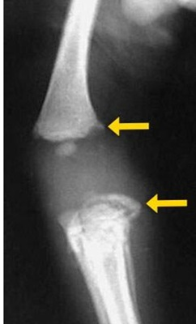
A Hemorragias retinianas
B Hematomas subdurais
C Lesões de partes moles
D Fratura linear do crânio
E Edema cerebral.
Questão 982 · Otorrinolaringologia · 4000162885Uma criança de 07 anos apresentou um episódio de dor de garganta, febre, obstrução nasal e tosse há 15 dias, tendo evoluído com melhora dos sintomas há 07 dias. No entanto foi verificada a persistência de um abaulamento broelástico, bem delimitado, indolor na topogra a do nível II esquerdo. Ao realizar uma punção aspirativa foi verificado um conteúdo leito, e brilho na lâmina após esfregaço. Em relação ao quadro acima, assinale a alternativa correta:
A É um provável cisto do primeiro arco branquial, com indicação de resseção da lesão com margem.
B Diagnóstico presuntivo de cisto tireoglosso com indicação de ressecção da lesão associado à porção central do osso hioide.
C O tratamento é ressecção completa da lesão incluído o seu trajeto em direção à tonsila palatina.
D Provável linfonodomegalia reacional persistente após ao quadro de IVAS, devendo ser autorresolutivo sem indicação de cirurgia ou outros exames.
Questão 983 · Otorrinolaringologia · 4000162884As otites podem se manifestar com diversos sinais e sintomas de acordo com a sua siopatologia, sendo a hipoacusia uma característica comum entre elas. Considerando o seu conhecimento sobre estas infecções assinale a alternativa correta:
A A otite média aguda bacterina manifesta-se com otalgia e febre, sendo o principal item para o diagnóstico o abaulamento da membrana timpânica estando indicando o uso de antibiótico a grande maioria dos casos.
B O colesteatoma é um tipo de otite média crônica que se desenvolve na região superior da membrana timpânica apresentando na tomografia destruição do esporão de chaussè
C A timpanocentese consiste na aspiração do conteúdo da orelha média devendo ser indicado na maioria dos casos de otite media serosa e otite média aguda para prevenção perda auditiva persistente
D No colesteatoma temos uma otorreia crônica bilateral associado a otalgia e perda auditiva neurossensorial intermitente.
Questão 984 · Otorrinolaringologia · 4000162882Um paciente de 6 anos vem ao pronto atendimento com relato de dor de garganta e febre de início há 2 dias, associado a tosse e obstrução nasal. Ao exame: Temperatura de 39 graus, orofaringe com hipertro a de tonsilas e exsudato bilateral, pescoço com linfonodomegalia cervical dolorosa anterior e posterior, espaço de traube com macicez à percussão. Em relação ao caso clinico acima, assinale a alternativa correta:
A É uma provável mononucleose infecciosa causada pelo Epstein-Barr
B Devemos solicitar teste rápido e/ou cultura da orofaringe para estreptococo
C O tratamento deve ser com amoxicilina ou P. Benzatina
D Devemos utilizar aciclovir e prednisona
Questão 985 · Ref orma Psiquiátrica e Psiquiatria Social · Lei 10216 de 6 de abril de 2001 Lei Antimanicomial · 4000162858De acordo com a Lei 10.216 de 2001, também conhecida como Lei da Reforma Psiquiátrica, assinale a verdadeira:
A É direito do paciente com transtorno mental a aposentadoria por invalidez.
B É direito do paciente ser internado preferencialmente em instituições asilares.
C É direito do paciente ser internado preferencialmente em hospitais escola.
D É dever do médico determinar, se necessário, internações compulsórias
E É direito de todo paciente com transtorno mental ser tratado no CAPS.
Questão 986 · Psiquiatria · 4000162668O uso de carvão ativado é útil em todas estas intoxicações, exceto:
A fenobarbital.
B carbamazepina.
C fenitoína.
D Lítio.
E Paracetamol.
Questão 987 · Psiquiatria · 4000162667Paciente de 21 anos de idade, lavrador, é levado ao atendimento de emergência pelo SAMU após ser encontrado desacordado por colegas de trabalho no meio da lavoura. Numa primeira avaliação, você nota que o paciente se encontra desorientado, molhado por urina e saliva. Tem roncos respiratórios intensos e, ainda, apresenta fasciculações musculares e miose. Diante desse cenário, quais são: o provável diagnóstico e o antídoto a ser administrado?
A Intoxicação por cocaína – administrar diazepam.
B Intoxicação por carbamato – administrar naloxona.
C Intoxicação por organofosforado – administrar atropina.
D Intoxicação por tricíclico – administrar pralidoxima.
E Intoxicação por organofosforado – administrar n-acetilcisteína.
Questão 988 · Psiquiatria · 4000162666Assinale a alternativa que contém a sequência correta de antídotos específicos para as seguintes substâncias: 1 – paracetamol, 2 – carbamato, 3 – morfina, 4 – zolpidem.
A Tiamina, atropina, bicarbonato, bromocriptina.
B Fisostigmina, atropina, flumazenil, tiamina.
C N-acetilcisteína, pralidoxima, neostigmina, flumazenil.
D N-acetilcisteína, atropina, naloxona, flumazenil.
E Não há opção correta.
Questão 989 · Psiquiatria · 4000162665Paciente feminina de 40 anos é atendida por um quadro de agitação motora há duas semanas. Relata que essa sensação começou após seu geriatra iniciar o uso de quetiapina para o tratamento de insônia.
A Acatisia.
B Distonia.
C Síndrome neuroléptica maligna.
D Discinesia tardia.
Questão 990 · Psiquiatria · 4000162664Qual das alternativas apresenta apenas fatores considerados de proteção contra o suicídio?
A Homem, prole e emprego fixo.
B Mulher, deficiência intelectual e religião.
C Casamento, ser médico, filhos.
D Religiosidade, sexo feminino, filhos.
Questão 991 · Psiquiatria · 4000162663Você atende, às 4 horas da manhã, Richarson, de 49 anos de idade, durante seu plantão na emergência. O paciente foi levado pelos Bombeiros, contido em uma maca rígida devido à intensa agitação psicomotora e gritaria incontrolável. Quem o acompanha é sua namorada, Laura, que, muito assustada, conta que conheceu o paciente há cerca de 1 mês e meio durante um jantar na casa de amigos em comum. Fátima relata que tem notado que seu namorado está agitado há 2 semanas, mais falante, inclusive dizendo coisas sem sentido, como frases do tipo “eu sou o messias”, “eu vou salvar a terra do apocalipse zumbi”, está muito descon ado, olhando para os lados a todo o momento, está dormindo pouco, menos de 4 horas por dia, e quando acorda já parece estar cheio de energia; inclusive, o casal tem tido cerca de 5 relações sexuais diariamente desde então, e tem gastado todo seu salário em acessórios de pesca esportiva (apesar de jamais ter pescado na vida). Laura sabe pouco da história pregressa de Richardson, apenas que é um rapaz que já apresentou 2 episódios graves de depressão previamente e recebeu tratamento com algum antidepressivo. Atualmente, o paciente não tem usado nenhuma medicação de uso contínuo, não usa drogas nem álcool, e também não tem uma doença crônica conhecida, contudo é obeso e sedentário. Diante dessa situação, você decide, pela proteção do paciente e da equipe, iniciar um tratamento psicofarmacológico para controlar o quadro de intensa agitação psicomotora na emergência. Por isso, a conduta para o caso é administrar:
A Lítio 600 mg VO.
B Diazepam 10 mg IM.
C Haloperidol 5 mg + Prometazina 25 mg IM.
D Midazolam 15 mg EV.
Questão 992 · Psiquiatria · 4000162662Juca Souza, 65 anos, estivador, casado, sem lhos, “encostado” pelo INSS devido a diversos problemas de saúde, chega por meios próprios no seu plantão às 6 horas da manhã com tremores intensos em membros superiores, “suadeira”, náuseas, vômitos, diarreia, dor abdominal e ansiedade intensa. Relata que prometeu no dia anterior à Pedrolina, sua esposa, abandonar definitivamente a cachaça em nome do amor. Apesar disso, a esposa não acredita mais nas incontáveis promessas do marido, que frequentemente ca agressivo e “confuso” durante as tentativas de abstinência. Em seu histórico médico constam doenças como dependência alcoólica (bebe 1,5 litro de pinga diariamente há 38 anos), artrite reumatoide, varizes esofagianas, hipertensão arterial, brilação atrial e um hematoma subdural de origem traumática, depois de uma queda de cabeça, após ser acertado na cabeça por um velho amigo durante uma discussão acalorada sobre futebol no bar da esquina de sua casa em uma manhã de inverno. Diante desse quadro, assinale a alternativa que contém a melhor hipótese diagnóstica e conduta terapêutica para o caso.
A Intoxicação alcoólica. Administrar tiamina EV, diazepam IM e internar o paciente.
B Abstinência alcoólica. Administrar tiamina EV, diazepam VO e encaminhar o paciente para o ambulatório de saúde mental.
C Abstinência alcoólica. Administrar cianocobalamina EV, lorazepam VO e internar o paciente.
D Abstinência alcoólica. Administrar tiamina EV, diazepam EV e internar o paciente.
Revisar: possível letra faltando em enunciado
Questão 993 · Psiquiatria · 4000162661Mulher, 55 anos, tem história de episódios que cursam com sensação de taquicardia, palpitações e uma “angústia” intensa. Relata que esses episódios começaram há 12 anos e acontecem com frequência quase semanal. Ultimamente, esse quadro vem se agravando, pois os episódios vêm ocorrendo diariamente e com intensidade aumentada, cursando com uma sensação estranha de “estar prestes a morrer”. Apesar disso, não consegue detectar uma causa óbvia para esses acontecimentos que causam um grande prejuízo funcional. Diante deste quadro, assinale o provável diagnóstico.
A Crise de Pânico
B Transtorno de Ansiedade Generalizada
C Transtorno de Pânico
D Depressão maior
Questão 994 · Psiquiatria · 4000162660Paciente de 28 anos de idade, boia-fria, é levado ao atendimento de emergência pelo SAMU após ser encontrado desacordado por colegas de trabalho no meio da lavoura. Em seu bolso, havia uma carta de despedida para seus familiares e amigos. Numa primeira avaliação, você nota que o paciente se encontra confuso, banhado em suor e saliva, roncos respiratórios intensos e, ainda, apresenta fasciculações musculares e miose. Diante desse cenário, quais são: o provável diagnóstico e o antídoto a ser administrado?
A Intoxicação por cocaína – administrar diazepam.
B Intoxicação por carbamato – administrar naloxona.
C Intoxicação por organofosforado – administrar atropina.
D Intoxicação por tricíclico – administrar pralidoxima.
Questão 995 · Psiquiatria · 4000162659Assinale a alternativa que contém a sequência correta de antídotos específicos para as seguintes substâncias: 1 – paracetamol, 2 – carbamato, 3 – morfina, 4 – zolpidem.
A Tiamina, atropina, bicarbonato, bromocriptina.
B Fisostigmina, atropina, flumazenil, tiamina.
C N-acetilcisteína, pralidoxima, neostigmina, flumazenil.
D N-acetilcisteína, atropina, naloxona, flumazenil.
Questão 996 · Psiquiatria · 4000162658Paciente de 3 anos de idade, sexo feminino, é levado por seus avós para uma consulta com o psiquiatra infantil. Quem encaminhou foi a médica da UBS, que fez as seguintes observações na carta de referência: “Paciente apresenta um atraso no desenvolvimento neuropsicomotor, não forma frases completas e não apresenta intenção comunicativa adequada. Noto também que deu seus primeiros passos com alguns meses de atraso, pois normalmente prefere car sentado manuseando alguns brinquedos de maneira ritualizada e parece adorar bater palmas na sua cama durante a noite. Quando chamado pelo nome, parece não ouvir, além disso, demonstra pouco apego pelos pais. Solicito sua avaliação” Diante desse quadro, assinale o provável diagnóstico.
A Surdez
B TDAH com predomínio desatento
C Autismo
D Transtorno de oposição e desafio
Questão 997 · Psiquiatria · 4000162657Pescador, 49 anos, bebe 4 latas de cerveja todos os dias ao chegar em casa do trabalho. Durante um feriado, passa 2 dias juntamente com a esposa e os lhos em uma praia distante, cando longe do álcool. No segundo dia de passeio demonstra ansiedade tremores finos nas mãos, suadeira e cefaleia. O medicamento adequado para o tratamento destes sintomas é:
A Paroxetina.
B Clorpromazina.
C Diazepam.
D Clozapina.
E Tiamina.
Questão 998 · Psiquiatria · 4000162651Uma jovem de 18 anos dá entrada no pronto atendimento com um quadro de agitação psicomotora, agressividade e irritabilidade. O relato é de que há 2 semanas encontra-se com comportamento bizarro, descon ada, acusando diversos membros da família de pertencerem à má a paraguaia. Hoje quebrou a antena parabólica da casa, pois acredita que é através dela que a família é recebe instruções dos marcianos. Diante deste cenário, qual é a conduta adequada?
A Prometazina + midazolam.
B Clorpromazina + diazepam.
C Diazepam + lítio.
D Haloperidol + prometazina
E Ácido Valproico + lítio.
Questão 999 · Psiquiatria · 4000162602Paciente de 3 anos de idade, sexo feminino, é levado por seus avós para uma consulta com o psiquiatra infantil. Quem encaminhou foi a médica da UBS, que fez as seguintes observações na carta de referência: “Paciente apresenta um atraso no desenvolvimento neuropsicomotor, não forma frases completas e não apresenta intenção comunicativa adequada. Noto também que deu seus primeiros passos com alguns meses de atraso, pois normalmente prefere car sentado manuseando alguns brinquedos de maneira ritualizada e parece adorar bater palmas na sua cama durante a noite. Quando chamado pelo nome, parece não ouvir, além disso, demonstra pouco apego pelos pais. Solicito sua avaliação” Diante desse quadro, assinale o provável diagnóstico.
A Surdez
B TDAH com predomínio desatento
C Autismo
D Transtorno de oposição e desafio
E Deficiência Intelectual
Questão 1000 · Psiquiatria · 4000162601Médico de 39 anos é levado pelo SAMU ao pronto atendimento com agitação, alucinações e delírios, taquicardia, pele seca e midríase. A principal suspeita é de tentativa de suicídio por intoxicação exógena que o levou a:
A Síndrome anticolinérgica.
B Síndrome colinérgica
C Síndrome narcótica.
D Síndrome extrapiramidal.
E Síndrome hipnossedativa
Questão 1001 · Psiquiatria · 4000162599Advogado, 40 anos, bebe 3 latas de cerveja todos os dias ao chegar em casa do trabalho. Durante um feriado, passa 3 dias juntamente com a esposa e os lhos em um refúgio ambiental, cando longe do álcool. No último dia de passeio demonstra ansiedade tremores nos nas mãos, suadeira e cefaleia. O medicamento adequado para o tratamento destes sintomas é:
A Paroxetina.
B Clorpromazina.
C Diazepam.
D Clozapina.
E Tiamina
Questão 1002 · Psiquiatria · 4000162598Paciente agricultor, 58 anos de idade, dá entrada na UPA com os seguintes sintomas: bradicardia, broncorreia, sialorreia, vômitos, diarreia, sudorese intensa, miose e miofasciculações. Diante deste quadro, você desconfia de intoxicação por:
A Cocaína.
B tricíclicos.
C Carbamato
D Opioide
E Paracetamol
Questão 1003 · Psiquiatria · 4000162597Paciente de 60 anos de idade, mecânico aposentado, viúvo há 18 anos, comparece à consulta com seu médico de família para uma consulta de rotina. Tem em sua história médica uma revascularização coronariana, obesidade, diabetes, hipertensão arterial, doença renal crônica não dialítica, hipertro a prostática, além de diversos episódios convulsivos durante a infância. Seu médico nota durante o atendimento que o paciente apresenta um humor entristecido, certa apatia, aumento do apetite e ansiedade, e desconfia de um novo episódio depressivo. Diante deste cenário, você decide iniciar a seguinte medicação:
A Mirtazapina
B Escitalopram
C Amitriptilina
D Bupropriona
E Nortriptilina
Questão 1004 · Of talmologia · 4000162534Maria Alice nasceu prematura de 36 semanas, de parto normal. Na maternidade foi realizado teste do reflexo vermelho (exame do olhinho), que mostrou ausência de reflexo no olho direito. Diante do quadro descrito, assinale a alternativa correta:
A A ausência ou diminuição do reflexo vermelho indica que a vasculatura da retina e coroide está íntegra.
B Possíveis causas de reflexo vermelho alterado são a catarata congênita, retinoblastoma e leucoma.
C Presença de assimetria do reflexo entre os olhos é considerada normal e não deve causar preocupação.
D O teste do reflexo vermelho deve ser idealmente realizado dentro dos primeiros 6 meses de vida do recém-nascido.
Questão 1005 · Of talmologia · 4000162533São muitas as doenças sistêmicas que podem cursar com manifestações oftalmológicas. Dentre as alternativas abaixo, assinale aquela que correlaciona corretamente o achado com sua etiologia:
A Toxoplasmose ocular: Exsudato branco amarelado com aspecto de "luz de neblina", associado a lesão satélite.
B Retinite por Citomegalovírus: Cicatriz coriorretiniana com bordas pigmentadas.
C Sífilis ocular: Granuloma em polo posterior.
D Doença de Behçet: Descolamentos multifocais de retina exsudativos.
Questão 1006 · Otorrinolaringologia · 4000162531O R1 da FMABC foi dar um plantão na unidade de emergência do Hospital Municipal Universitário de São Bernardo quando recebe referenciado da UPA perimetral um paciente veio ao pronto socorro com quadro de epistaxe recorrente e volumosa em fossa nasal esquerda, de início há 1 dia. Relata episódios prévios de menor intensidade. Ao exame apresenta FC: 110, PA: 110 x 60, sudorese e dispneia leve. Em relação a esta situação clínica, assinale a alternativa correta:
A O tamponamento nasal anterior deverá ser a medida instituída de imediato, devendo ser efetiva na resolução deste caso.
B Uma cauterização química ou elétrica do foco do sangramento deve ser a conduta inicial para resolução imediata desta epistaxe.
C Após lavagem nasal com solução salina, devemos encontrar uma região friável responsável por este sangramento no plexo de Kiesselbach.
D É um provável candidato à realização de tamponamento nasal posterior.
Questão 1007 · Otorrinolaringologia · 4000162530Um paciente de 25 anos vem ao pronto atendimento com queixa de que há 4 dias apresenta obstrução nasal, tosse produtiva, cefaleia, peso e pressão facial. Ao exame: Temperatura de 38 graus, orofaringe com hiperemia de tonsilas e secreção purulenta retronasal, rinoscopia com secreção de aspecto purulento em ambas as narinas, otoscopia com hiperemia, ausculta pulmonar com roncos. Considerando o paciente acima, assinale a alternativa correta:
A Estamos diante de uma rinossinusite viral com indicação de lavagem nasal com solução salina e sintomáticos.
B É uma rinossinusite bacteriana devendo ser utilizado amoxicilina, lavagem nasal com solução salina e sintomáticos.
C É uma rinossinusite bacteriana devendo ser utilizado amoxicilina com clavulanato, lavagem nasal com solução salina, possibilidade de uso de corticoide tópico ou via oral caso persistam os sintomas após 48 horas.
D Rinossinutes bacteriana associada a início de pneumonia indicando a utilização de levofloxacino para maior cobertura e comodidade posológica, associado a lavagem nasal com solução salina e sintomáticos.
Questão 1008 · Otorrinolaringologia · 4000162529Uma menina de 8 anos apresenta queixas de obstrução nasal intermitente associado a espirros, prurido e coriza. Relata piora dos sintomas ao visitar a casa da sua avó onde costuma brincar com os gatinhos. Os sintomas em média 3 dias ocorrendo em 3 semanas por mês, sem levar a alterações no sono ou escola. Considerando o enunciado acima, assinale a alternativa correta:
A É necessário a realização ou do prick test (teste de punctura) ou dosagem do IgE específica para confirmação do diagnóstico de rinite alérgica.
B Caso os exames venham negativos podemos utilizar o corticoide tópico nasal, mas sem indicação de anti-histamínico.
C É uma provável rinite alérgica intermitente moderada, sendo indicada a utilização ou de anti- histamínicos ou de corticoide tópico nasal em monoterapia.
D É uma provável rinite alérgica persistente leve, sendo indicada a associação de corticoide tópico nasal + anti-histamínicos ou anti-leucotrienos.
Questão 1009 · Otorrinolaringologia · 4000162528Um paciente de 3 anos de idade apresenta episódios de otite média aguda de repetição iniciados após frequentar creche. No momento vem ao pronto atendimento pois o pai relata que o pequeno apresenta febre baixa, tosse, coriza e queixa de “ouvido entupido”. Ao exame: Temperatura 37,8, orofaringe com hiperemia sem secreção, rinoscopia com secreção espessa e à otoscopia de acordo com a imagem abaixo. Em relação à este caso assinale a alternativa correta:
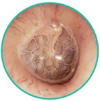
A Estamos diante de uma otite média aguda bacteriana, porém sem indicação de antibioticoterapia considerando a idade do paciente e as características da infecção atual.
B É uma otite viral que está acompanhando uma rinofaringite viral. Indicada lavagem nasal com solução salina e sintomáticos.
C É uma otite média aguda bacteriana com indicação amoxicilina com clavulanato por apresentar infecções recorrentes.
D É uma otite média serosa associada a uma rinofaringite viral, necessário a indicação de sintomáticos e encaminhar para avaliação audiológica.
Questão 1010 · Otorrinolaringologia · 4000162526Uma criança de 5,0 anos veio trazida pelo pai com relato de que há 2 meses apresentou uma lesão nodular cervical na linha média que surgiu após uma faringite viral. Ao exame apresenta-se bem delimitada, medindo aproximadamente 3,0 cm, móvel à deglutição. No momento apresenta ainda hiperemia, calor e sensibilidade à palpação. Em relação ao quadro acima assinale a alternativa correta:
A O tratamento definitivo desta patologia é cirúrgico devendo ser realizada a ressecção da lesão incluindo a porção central do osso hioide de forma imediata para evitar piora do quadro atual.
B O tratamento é cirúrgico, mas deve ser realizado após tratamento da infecção atual.
C É uma provável adenite bacteriana que apresenta tratamento clínico com cefalexina nos casos leves.
D É fundamental a realização prévia de uma punção aspirativa por agulha fina para guiar o tratamento.
Questão 1011 · Otorrinolaringologia · 4000162524Um paciente de 45 anos veio ao ambulatório da cirurgia de cabeça e pescoço da FMABC com uma lesão úlcero in ltrativa em loja tonsilar esquerda de aproximadamente 4,0 cm, sem outras alterações mucosas. Pescoço não apresenta linfonodomegalias nem linfonodos de aspecto atípico à tomogra a computadorizada. Foi realizada uma biópsia incisional da lesão faríngea que mostrou carcinoma epidermoide. Em relação à situação clínica acima, assinale a alternativa correta.
A Caso seja optado por ressecção cirúrgica da lesão, o tratamento deve ser ressecção com margem associado a esvaziamento cervical lateral à esquerda.
B Caso seja optado por ressecção cirúrgica da lesão, o tratamento deve ser ressecção com margem associado a esvaziamento cervical supraomohioide à esquerda.
C Podemos fazer o tratamento da lesão primária com radioterapia ou cirurgia sem necessidade de tratamento do pescoço por não apresentar linfonodomegalias detectáveis.
D Esta neoplasia é causada principalmente pelo tabagismo podendo também ser desenvolvida por infecções virais como HPV e EBV.
Questão 1012 · Otorrinolaringologia · 4000162521Em relação à traqueostomia assinale a alternativa correta:
A Os pontos de referência são: Cartilagem cricóide, fúrcula esternal, borda inferior da tireoide e osso hioide.
B Um sangramento volumoso que foi antecedido por um sangramento sentinela em traqueostomia pode ser indicativo da realização de esternotomia para controle.
C A traqueostomia deve ser realizada no primeiro anel traqueal para diminuição do risco de hemorragia pela artéria inominada.
D Após a decanulação de um paciente eupneico sem a cânula devemos proceder com a rafia imediata da ferida operatória para evitar uma cicatriz exagerada.
Questão 1013 · Otorrinolaringologia · 4000162519João tem 64 anos e foi à unidade básica de saúde com relato que de os lhos e a esposa se queixam de que ele apresenta di culdade de compreensão dos sons e só consegue escutar rádio e televisão com um volume alto. Otoscopia não apresenta alterações em conduto auditivo nem membrana timpânica. Antecedentes: Hipertensão, Diabetes, Tabagista, trabalha numa metalúrgica de motores pesados há 25 anos. Fez uma audiometria que apresentou o resultado abaixo: Em relação à situação descrita acima, assinale a alternativa correta:
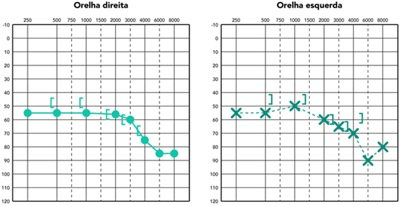
A Estamos diante de uma perda auditiva neurossensorial por PAIR.
B É uma perda auditiva mista por uma PAIR.
C Perda auditiva neurossensorial com maior probabilidade de tumor do ângulo pontocerebelar como um schwannoma.
D Estamos diante de uma perda auditiva neurossensorial por uma provável presbiacusia.
Questão 1014 · Ortopedia · 4000162469Paciente de 22 anos, vítima de acidente de moto, é levado ao hospital com fratura das diá ses de ambos os fêmures. É submetido a xação externa dentro das primeiras 12 horas do trauma e depois é levado para a UTI, onde ca sob observação. Após algumas horas, apresenta confusão mental, dispneia e petéquias no tronco. Qual é o diagnóstico mais provável?
A Tromboembolismo pulmonar
B Delirium
C Pneumonia aspirativa
D Hemorragia intracraniana não diagnosticada
E Síndrome da Embolia Gordurosa
Revisar: possível letra faltando em enunciado
Questão 1015 · Ortopedia · 4000162468Qual é o segundo local mais comum de acometimento da Síndrome Compartimental Aguda dos membros?
A Perna
B Antebraço
C Braço
D Coxa
E Mão
Questão 1016 · Ortopedia · 4000162302Um menino de 13 anos começou a apresentar dor no joelho direito durante partidas de futebol. Dentre as opções a seguir, qual é o diagnóstico menos provável?
A Doença de Osgood-Schlatter.
B Doença de Siding-Larsen-Johansonn.
C Jumper’s knee.
D Doença de Vrolik.
Questão 1017 · Ortopedia · 4000162300Paciente de 45 anos, apresenta formigamento da mão direita, principalmente da ponta dos dedos, especialmente à noite. Trabalha como costureira. Qual é o nervo acometido nesta doença?
A Nervo mediano
B Nervo ulnar
C Nervo radial
D Nervo interósseo posterior
Questão 1018 · Ortopedia · 4000162299Qual são as melhores condutas na suspeita de uma pioartrite?
A Punção articular, drenagem cirúrgica, antibioticoterapia endovenosa empírica.
B Punção articular, drenagem cirúrgica, antibioticoterapia endovenosa guiada por cultura.
C Ultrassonografia, drenagem cirúrgica, antibioticoterapia endovenosa empírica.
D Ultrassonografia, drenagem por aspiração, antibioticoterapia endovenosa guiada por cultura.
Questão 1019 · Ortopedia · 4000162297Pintor de 50 anos, refere dor no ombro direito há aproximadamente três meses, especialmente ao pintar a parte mais alta da parede ou do teto. Refere que a dor é especialmente ruim à noite, chegando a despertá-lo durante o sono. Ao exame físico, apresenta o teste de Jobe positivo para dor, mas não tem perda de força. Qual é o diagnóstico mais provável?
A Síndrome do desfiladeiro torácico.
B Rompimento do tendão supra espinhal.
C Síndrome do manguito rotador.
D Síndrome do impacto do ombro.
Questão 1020 · Ortopedia · 4000162296Um paciente adolescente vem referindo dor na coxa direita, irradiada até o joelho, há dois dias. Tem bastante dor no membro inferior e não consegue apoiar o pé no chão para caminhar. Apresenta a seguinte radiografia: Qual é o diagnóstico e qual deve ser a conduta?
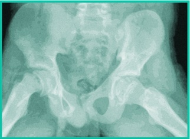
A Epifisiólise do fêmur proximal, osteotomia varizante do fêmur proximal.
B Fratura do fêmur proximal, gesso pélvico podálico.
C Fratura do fêmur proximal, fixação com placa e parafuso.
D Epifisiólise do fêmur proximal, fixação in situ.
Questão 1021 · Ref orma Psiquiátrica e Psiquiatria Social · 4000161423As doenças psiquiátricas são muito comuns na atenção primária. Transtornos de ansiedade ou transtornos do humor estão entre as principais causas de consultas na rotina de um médico de família. Em relação ao manejo desses pacientes, assinale a correta:
A Pacientes com transtornos mentais devem ser acolhidos pela equipe da ESF, e em seguida encaminhados para acompanhamento no CAPS.
B Devemos encaminhar os pacientes para a unidade do NASF mais próxima.
C Devem ser acolhidos, atendidos e acompanhados pela equipe da atenção primária. Os casos mais graves podem ser referenciados para o CAPS.
D Transtornos psiquiátricos são poucos prevalentes na comunidade, portanto, raramente há atendimentos na atenção primária.
E Pacientes com depressão ou esquizofrenia devem ser acolhidos e referenciados para o CAPS.
Questão 1022 · Ref orma Psiquiátrica e Psiquiatria Social · 4000161156A respeito das políticas públicas em Psiquiatria assinale a alternativa incorreta:
A O movimento social que impulsionou a mudança do modelo de atenção em saúde mental no Brasil é denominado de Reforma.
B A Política Nacional de saúde mental tem entre as suas diretrizes atuais o objetivo da redução gradual de leitos em hospitais psiquiátricos.
C Apenas os pacientes com doenças mentais graves e persistentes devem ser acompanhados no CAPS.
D Sempre que possível, interações psiquiátricas devem ocorrer em hospitais escola.
E Atualmente, os hospitais psiquiátricos fazem parte da Rede de atenção Psicossocial.
Questão 1023 · Psiquiatria · 4000161155Paciente tabagista, já tentou parar de fumar diversas vezes, comparece à consulta com seu médico de família dizendo-se animado para parar de fumar. Inclusive, já está planejamento algumas mudanças para os próximos dias e já reduziu um cigarro do total de 30 que fuma diariamente. Em qual estágio de mudança de comportamento do Modelo Transteórico de Prochaska e DiClemente o paciente se encontra?
A Pré-contemplação.
B Contemplação.
C Preparação.
D Ação.
E Negação.
Questão 1024 · Psiquiatria · 4000161154Paciente de 60 anos de idade, cirurgião aposentado, viúvo há 2 anos, comparece à consulta com seu cardiologista para uma consulta de rotina. Tem em sua história médica uma revascularização coronariana, obesidade, hipertensão arterial, doença renal crônica não dialítica, glaucoma, além de diversos episódios convulsivos durante a infância. Seu cardiologista nota durante o atendimento que o paciente apresenta um humor entristecido, certa apatia, aumento do apetite e ansiedade, e descon a de um novo episódio depressivo. Diante deste cenário, você decide iniciar a seguinte medicação:
A Mirtazapina
B Escitalopram
C Amitriptilina
D Bupropriona
E Nortriptilina
Questão 1025 · Psiquiatria · 4000161153Advogado, 40 anos, bebe 3 latas de cerveja todos os dias ao chegar em casa do trabalho. Durante um feriado, passa 3 dias juntamente com a esposa e os lhos em um refúgio ambiental, cando longe do álcool. No último dia de passeio demonstra ansiedade tremores nos nas mãos, suadeira e cefaleia. O medicamento adequado para o tratamento destes sintomas é:
A Paroxetina.
B Clorpromazina.
C Diazepam.
D Clozapina.
E Tiamina
Questão 1026 · Psiquiatria · 4000161152Assinale a indicação correta para o tratamento farmacoterápico de cessação do tabagismo:
A Fumantes que consomem 10 cigarros por dia.
B Fumar o primeiro cigarro após uma hora depois de acordar.
C Fumantes com escore de Teste de Fagerstrom de 4.
D Fumantes que já tentaram cessar previamente e recaíram.
E Fumantes vulneráveis como gestantes e adolescentes.
Questão 1027 · Psiquiatria · 4000161151Uma jovem de 35 anos dá entrada no pronto atendimento com um quadro de agitação psicomotora, agressividade e irritabilidade. O relato é de que há 3 semanas encontra-se com comportamento bizarro, descon ada, acusando diversos membros da família de pertencerem à má a albanesa. Hoje quebrou a antena parabólica da casa, pois acredita que é através dela que a família é recebe instruções dos marcianos. Diante deste cenário, qual é a conduta adequada?
A Prometazina + midazolam.
B Clorpromazina + diazepam.
C Diazepam + lítio.
D Haloperidol + prometazina
E Ácido Valproico + lítio
Questão 1028 · Of talmologia · 4000161078Joaquim, 70 anos, queixa-se de piora da visão em ambos os olhos há alguns meses, que se intensi ca no período da noite. Refere ser hipertenso controlado. Nega outras patologias. Ao exame oftalmológico, observa-se acuidade visual de 20/40 em ambos os olhos. Qual é a principal hipótese diagnóstica e o tratamento para o caso?
A Descolamento de retina; cirurgia.
B Catarata; cirurgia.
C Glaucoma; colírio hipotensor.
D Retinopatia hipertensiva; injeção intravítrea.
E Uveíte anterior; colírio corticoide.
Revisar: possível letra faltando em enunciado
Questão 1029 · Otorrinolaringologia · 4000161010Um paciente de 35 anos morador de rua nas proximidades da Santa Casa vem ao pronto socorro com queixa de abaulamento cervical de início há 2 dias, associado à febre, disfagia e episódios de dispneia. Ao exame: orofaringe com hiperemia e edema bilateral, pescoço com abaulamento cervical na região lateral esquerda de aproximadamente 5,0 cm, com calor, rubor, dor e utuação à palpação. Em relação ao caso clínico acima, assinale a alternativa correta.
A Estamos diante de uma fasciíte necrotizante necessitando de internação para antibioticoterapia e desbridamento dos tecidos desvitalizados.
B É uma infecção grave que necessita de internação hospitalar para suporte e drenagem pelo risco de complicação com meningite, apresentando elevada mortalidade.
C Necessita de internação para antibioticoterapia e drenagem cirúrgica.
D Trata-se de uma linfadenite bacteriana, sendo indicada a utilização de cefalexina e retorno para reavaliação em 48 horas.
E É um abscesso cervical que, pela fácil localização, pode ser tratado com amoxicilina-clavulanato ou clindamicina via oral associado à aspiração da secreção com jelco calibroso.
Questão 1030 · Ortopedia · 4000160998Um paciente com síndrome de Down passa em consulta de rotina. Do ponto de vista ortopédico, qual deve ser a conduta adotada?
A Solicitação de radiografia da bacia.
B Solicitação de radiografia da coluna cervical, em AP e Perfil, sendo o perfil em flexão e extensão máximas.
C Solicitação de tomografia de joelho para avaliação da angulação da patela e necessidade de estabilização do mecanismo extensor para prevenção de luxações.
D Solicitação de radiografia panorâmica de coluna para avaliar escoliose.
E Somente A e B.
Questão 1031 · Ortopedia · 4000160996A respeito da dor em crianças:
A O bebê só começa a sentir dor a partir da 32ª semana de gestação.
B A escada analgésica da criança tem apenas dois degraus.
C Opioides, em especial a morfina, devem ser evitados pelo risco de comprometimento respiratório.
D A melhor via de administração em ambiente hospitalar é endovenosa.
E O uso de escalas de dor não é confiável para crianças com menos de quatro anos.
Questão 1032 · Ortopedia · 4000160993Qual é o melhor método de prevenção de infecção na fratura exposta?
A Antibioticoterapia.
B Desbridamento.
C Lavagem com soro abundante
D Fixação externa.
E Cirurgia em menos de 6 horas.
Questão 1033 · Ortopedia · 4000160992A respeito da fratura da bacia:
A O local correto de aplicação do lençol é na crista ilíaca, e ele deve ser aplicado em todo paciente instável hemodinamicamente e com fratura instável da bacia.
B A principal fonte de sangramento na fratura da bacia é das artérias do plexo sacral.
C O sangramento ocorre principal na zona I retroperitoneal e não deve ser abordado pelo risco de complicações.
D De acordo com o ATLS 10ª edição, o tamponamento extraperitoneal é mais eficaz que a arteriografia no tratamento do choque por fratura instável da bacia.
E A tomografia computadorizada é o exame ideal para avaliação da fratura da bacia no trauma.
Questão 1034 · Ortopedia · 4000160990Alexandre, 10 anos, um paciente com síndrome de Down, vem apresentando di culdades para andar há aproximadamente duas semanas. Sua mãe o traz à consulta, referindo que ele apresenta também dor para mexer a perna esquerda, sentar, levantar e se virar na cama. Ao exame físico, a perna esquerda parece encurtada e rodada externamente. Qual é o achado de exame físico esperado para este paciente?
A Sinal de Drehman.
B Teste de Trendelenburg alterado.
C Teste de Thomas alterado.
D Sinal de Hart.
E Teste de Staheli alterado.
Questão 1035 · Abstinência de Álcool · Anorexia Nervosa · Neurologia · 4000160974Paciente de 26 anos, do sexo feminino, com história de transtorno bipolar e anorexia nervosa. Atualmente em descompensação. Foi encontrada em casa, sonolenta e desorientada. Paciente em uso de lítio e quetiapina. Na entrada, estava com PA de 90/60 mmHg, FC: 82 bpm, satO2 de 98% em ar ambiente, glicemia capilar de 75. Na sala de emergência, coletou-se sangue periférico e administrou-se soro glicosado. Pouco tempo depois, a paciente teve piora da sonolência e já não conseguia se manter em pé. Ao exame neurológico, tinha nistagmo e redução da amplitude do olhar. A causa mais provável para o quadro é:
A Intoxicação por lítio.
B Síndrome neuroléptica maligna.
C Uma deficiência vitamínica.
D Transtorno somatoforme.
E Sepse.
Questão 1036 · Psiquiatria · 4000160748Sobre o tratamento de depressão na terceira idade, assinale a melhor resposta.
A Os antidepressivos devem ser iniciados em dose baixa, com aumentos graduais, de acordo com a tolerância do paciente.
B Os ISRS atingem o pico da ação em 2 semanas.
C Os inibidores de receptação de serotonina e noradrenalinas (“duais”) são os agentes mais potentes, por aumentarem a concentração de pelo menos dois neurotransmissores.
D Dentre os antidepressivos tricíclicos, a droga de melhor tolerabilidade em idosos é a amitriptilina.
Questão 1037 · Psiquiatria · 4000160747Sobre o estresse pós-traumático (TEPT), assinale a alternativa verdadeira.
A Os sintomas duram até 30 dias após o trauma.
B Esquecimentos do trauma excluem o TEPT.
C Ocorre após um trauma grave, que tenha ameaçado a vida do paciente.
D A psicoterapia apresenta baixa eficácia no tratamento.
Questão 1038 · Psiquiatria · 4000160746Sobre o Burnout, assinale a incorreta.
A Tem como sintomas exaustão e diminuição da produtividade.
B Médicos estão entre os profissionais mais atingidos.
C Atinge especialmente trabalhadores com ocupações solitárias.
D Entre os fatores aparentemente associados ao seu desenvolvimento, estão a pouca autonomia no desempenho profissional, problemas de relacionamento com as chefias e sentimento de desqualificação.
Questão 1039 · Psiquiatria · 4000160745Paciente tabagista motivado a abandonar de vez o fumo. Já comprou uma agenda, anotou suas metas, marcou uma consulta na UBS com a médica da família e está lendo cartilhas motivacionais. Em qual estágio de mudança de comportamento do modelo transteórico de Prochaska e DiClemente o paciente se encontra?
A Pré-contemplação.
B Contemplação.
C Preparação.
D Ação.
Questão 1040 · Psiquiatria · 4000160744Sobre a bipolaridade, marque a alternativa verdadeira.
A Após um episódio de mania, não é possível a recuperação total do humor.
B Episódios maníacos iniciam-se lentamente.
C Episódios de depressão duram menos que os maníacos.
D É possível a abertura do primeiro quadro de humor na velhice.
Questão 1041 · Psiquiatria · 4000160743Sobre o episódio de depressão grave, assinale a melhor resposta.
A É fundamental o uso de antidepressivos ou eletroconvulsoterapia.
B Psicoterapias regulares são o suficiente para o tratamento.
C Caso não haja risco de suicídio, não é mandatório o uso de antidepressivos.
D Perguntas sobre ideações suicidas ao paciente devem ser evitadas, pois podem induzi-lo ao suicídio.
Questão 1042 · Psiquiatria · 4000160742Um homem de 29 anos, casado, vem à consulta queixando-se de cansaço e desinteresse nas atividades que antes gostava. Também diz que está sem apetite, com a cabeça “aérea” e com insônia, há pelo menos 5 meses. Apesar disso, diz que não se sente triste. Diante dessa situação clínica, o diagnóstico mais provável é:
A Esquizofrenia.
B Ansiedade generalizada.
C Depressão maior.
D Transtorno bipolar.
Questão 1043 · Psiquiatria · 4000160741Mulher de 38 anos, casada, apresenta há 8 meses crises intensas de angústia, que cursam com dor no peito, medo de morrer, falta de ar e tontura. As crises não têm fatores desencadeantes específicos e duram cerca de 10 minutos. Passou a ter medo de car sozinha e só sai de casa acompanhada, por ter medo de passar mal. Exame físico e subsidiários normais. Os diagnósticos mais prováveis e tratamento farmacológico são:
A Depressão; fluoxetina.
B Transtorno do pânico e distimia; clorpromazina.
C Transtorno conversivo e hipocondria; paroxetina.
D Transtorno de pânico e agorafobia; paroxetina.
Questão 1044 · Psiquiatria · 4000160740Albertina tem 65 anos e vem apresentando há mais ou menos 12 anos, de maneira recorrente, dispneia e medo de morrer, sensação em “ondas” que duram em média 15 minutos. Refere que, em alguns locais, tem mais medo do que em outros, contudo, essas crises acontecem de maneira inesperada e súbita. Qual é o diagnóstico provável?
A Fobia social.
B Transtorno de estresse pós-traumático.
C Ataque de pânico.
D Transtorno do pânico.
Questão 1045 · Psiquiatria · 4000160739Paciente de 45 anos de idade procura o pneumologista com desejo de abandonar definitivamente o cigarro. Em seu histórico de saúde constam hipertensão arterial, epilepsia e artrite reumatoide. A única consideração do paciente é que a droga precisa estar disponível no SUS. Qual dos medicamentos deve ser prescrito para a cessação do fumo nesse paciente?
A Adesivo definicotina.
B Nortriptilina.
C Bupropiona.
D Vareniclina.
Questão 1046 · Psiquiatria · 4000160738Qual das drogas abaixo é medicação de primeira linha para a cessação do tabagismo?
A Naloxona.
B Paroxetina.
C Alprazolam.
D Bupropiona.
Questão 1047 · Psiquiatria · 4000160737Qual das drogas abaixo é de primeira escolha para o tratamento da síndrome de abstinência alcoólica?
A Haloperidol.
B Diazepam.
C Clorpromazina.
D Tiamina.
Questão 1048 · Psiquiatria · 4000160736Qual é o antidepressivo que tem maior chance de causar efeitos colaterais em idosos?
A Amitriptilina.
B Sertralina.
C Venlafaxina.
D Citalopram.
Questão 1049 · Of talmologia · 4000160512Paciente de 65 anos, masculino, foi encaminhado pelo endocrinologista para screening de retina. É diabético tipo 2 e usuário de insulina 2x/dia. Com relação à retinopatia diabética, assinale a alternativa correta:
A A retinopatia diabética não proliferativa se apresenta com neovasos.
B Cruzamento arteriovenoso é um achado característico dessa patologia.
C Microaneurismas representam a manifestação mais precoce.
D Pacientes com diagnóstico de diabetes devem realizar fotocoagulação profilática.
Questão 1050 · Of talmologia · 4000160511Maria Teresa, 4 anos, é encaminhada ao ambulatório de oftalmologia pois sua mãe notou que, após tirar algumas fotos da lha, seu olho esquerdo tem aparecido nas fotos com um reflexo esbranquiçado. Ao exame oftalmológico, observa-se estrabismo com esotropia e leucocoria em olho esquerdo. A principal hipótese diagnóstica é:
A Rabdomiossarcoma
B Retinoblastoma
C Catarata congênita
D Retinopatia da prematuridade
Questão 1051 · Of talmologia · 4000160510Luísa, 5 anos, estava brincando no quintal com seu gatinho Simba quando, sem querer, o animal bateu com a pata no olho esquerdo da criança. Imediatamente Luísa começou a chorar e passou a ter di culdade em abrir o olho, queixando-se de dor e "incômodo com a luz". Foi levada por sua mãe à emergência oftalmológica, mas a médica logo no início teve di culdade de examinar Luisa, que estava com bastante blefaroespasmo e dor. Após utilização de colírio anestésico, a médica conseguiu observar uma abrasão corneana. Diante do caso acima, qual a melhor conduta?
A Pingar colírio de fluoresceína para avaliar melhor a abrasão, pomada antibiótica e curativo oclusivo por 12h.
B Prescrever corticoide tópico e anestésico tópico para casa.
C Colocar lente de contato terapêutica e prescrever pomada antibiótica.
D Prescrever colírio associado (antibiótico + corticoide) e analgesia oral para casa.
Questão 1052 · Of talmologia · 4000160509Eva, 55 anos, comparece à emergência oftalmológica queixando-se de náuseas, um episódio de vômito, embaçamento visual e dor ocular de forte intensidade no olho esquerdo há algumas horas. Relata que o quadro se iniciou logo após sair da sala de cinema com seu esposo. Nega patologias prévias. Ao exame oftalmológico, observa-se um olho bastante vermelho, com pupila em média midríase xa, edema de córnea e pressão intraocular de 40mmHg. Sobre o caso descrito, assinale a alternativa correta:
A A principal hipótese diagnóstica é a uveíte anterior e o tratamento inclui o uso de corticoide tópico e hipotensor ocular.
B A principal hipótese diagnóstica é o glaucoma agudo e o tratamento imediato inclui manitol intravenoso, colírio hipotensor e pilocarpina 2%.
C A principal hipótese diagnóstica é a uveíte anterior e o tratamento inclui o uso de corticoide oral e pilocarpina 2%.
D A principal hipótese diagnóstica é o glaucoma agudo e o tratamento imediato inclui hipotensor ocular e iridotomia a yag laser.
Questão 1053 · Otorrinolaringologia · 4000160501Uma mulher de 45 vem em uma consulta com você na Unidade Básica de Saúde de Botucatú com relato de abaulamento cervical na região central. À palpação você detecta um nódulo de consistência rme de aproximadamente 2,0 cm na topogra a da tireoide e solicita exames. O TSH mostrou 1,0 (0,8 a 1,8) e o ultrassom um nódulo misto, isoecogênico, mais largo do que alto, bordas regulares e com macrocalci cações. Considerando os achados descrito, qual a conduta adequada?
A Solicitar cintilografia de tireoide
B Solicitar punção aspirativa por agulha fina
C Orientações e acompanhamento periódico com USG e TSH
D Encaminhar para avaliação da cirurgia de cabeça e pescoço para possível cirurgia.
Questão 1054 · Otorrinolaringologia · 4000160500Madalena tem 54 anos e vem para avaliação com queixa de rouquidão intermitente há vários anos associada a alteração no timbre da voz. Relata que sua voz se tornou mais grave e episódios de dispneia aos esforços. É hipertensa, diabética e tabagista de longa data. Apresenta ainda dispepsia intermitente e queixa de indisposição (sic). Realizou uma videolaringoscopia que apresentou o seguinte achado: Em relação a este caso, assinale a conduta adequada:
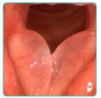
A Encaminhar à fonoterapia para reabilitação de voz e respiração
B Cessar o tabagismo, solicitar endoscopia digestiva alta e função tireoidiana
C Cessar o tabagismo e encaminhar para biópsia das pregas vocais
D Encaminhar para a fonoterapia, cessar tabagismo, otimizar o tratamento da hipertensão e do diabetes.
Questão 1055 · Otorrinolaringologia · 4000160499Pedro tem 5 anos e apresenta de forma recorrente episódios de desatenção durante a aula e alterações na dicção. Foi orientado consulta com um otorrinolaringologista que solicitou uma audiometria mostrando o seguinte resultado: Em relação ao caso deste paciente, assinale a alternativa correta:
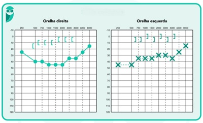
A Perda auditiva condutiva bilateral sendo a otite serosa (efusão) um diagnóstico provável
B Perda auditiva neurossensorial com indicação de exames sorológicos, de imagem e possivelmente avaliação genética.
C Perda auditiva condutiva com indicação de complementação com timpanometria, sem necessidade de exames endoscópicos ou de imagem.
D Perda auditiva neurossensorial com indicação de realização de BERA e encaminhamento para avaliação de implante coclear.
Questão 1056 · Ortopedia · 4000160486Considerando-se um paciente com fratura em tórus dos ossos do antebraço, qual é a melhor conduta?
A Fixação cirúrgica conforme desvio.
B Imobilização gessada por seis semanas.
C Órtese removível por três semanas.
D Deixar sem imobilização.
Questão 1057 · Ortopedia · 4000160485Em um paciente com a seguinte deformidade diagnosticada ao nascimento, qual das alterações a seguir não é esperada?
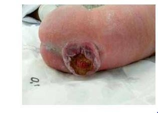
A Malformação de Arnold-Chiari tipo II.
B Luxação dos quadris.
C Sensibilidade ao látex.
D Alteração de força motora dos membros superiores.
Questão 1058 · Ortopedia · 4000160484Sobre o tumor apresentado na figura a seguir: (Fonte: prova de acesso direto, Unesp, 2019).
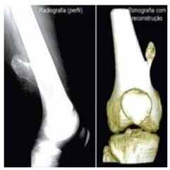
A Seu tratamento é com ressecção e radioterapia.
B Trata-se de um tumor com potencial de malignização para condrossarcoma.
C Provoca reação periosteal em casca de cebola.
D Costuma doer principalmente à noite, pela produção de prostaglandinas.
Questão 1059 · Ortopedia · 4000160483Associe o teste da coluna 1 à doença da coluna 2. Coluna 1 A – Teste de Finkelstein. B – Teste de Yergason. C – Teste de Jobe. D – Teste de Neer. Coluna 2 1 – Tenossinovite de De Quervain. 2 – Tendinite bicipital. 3 – Síndrome do manguito rotador. 4 – Síndrome do impacto do ombro.
A A1, B2, C3, D4.
B A2, B1, C3, D4.
C A1, B2, C4, D3.
D A2, B1, C4, D3.
Questão 1060 · Ortopedia · 4000160482Na avaliação da escoliose em crianças, qual teste é avaliado por meio da flexão do tronco?
A Teste de Schober.
B Teste de Adams.
C Teste do ângulo do talhe.
D Teste de Cobbs.
Questão 1061 · Ref orma Psiquiátrica e Psiquiatria Social · Centro de Atenção Psicossocial CAPS · 4000160480As doenças psiquiátricas são muito comuns na atenção primária. Transtornos de ansiedade ou transtornos do humor estão entre as principais causas de consultas na rotina de um médico de família. Em relação ao manejo desses pacientes, assinale a correta:
A Pacientes com transtornos mentais devem ser acolhidos pela equipe da ESF, e em seguida encaminhados para acompanhamento no CAPS.
B Devemos encaminhar os pacientes para a unidade do NASF mais próxima.
C Devem ser acolhidos, atendidos e acompanhados pela equipe da atenção primária. Os casos mais graves podem ser referenciados para o CAPS.
D Transtornos psiquiátricos são poucos prevalentes na comunidade, portanto, raramente há atendimentos na atenção primária.
E Pacientes com depressão ou esquizofrenia devem ser acolhidos e referenciados para o CAPS.
Questão 1062 · Ortopedia · 4000160465Paciente vítima de acidente com motocicleta e trauma exclusivo em membro inferior, apresenta a seguinte lesão: Fonte: prova de acesso direto, Unesp, 2016. Qual das condutas a seguir está errada?
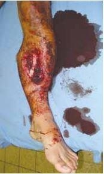
A Fixação externa do membro.
B Haste intramedular de tíbia.
C Cefazolina + gentamicina + penicilina ou metronidazol endovenosas.
D Desbridamento cirúrgico.
Questão 1063 · Ortopedia · 4000160464Uma menina de 3 meses de idade foi diagnosticada clinicamente com displasia do quadril. Após a confirmação diagnóstica, qual é a melhor conduta?
A Colocação da fralda de Frejka.
B Colocação do suspensório de Pavlik.
C Colocação de gesso pélvico podálico.
D Colocação da órtese de abdução.
Questão 1064 · Ortopedia · 4000160463Na síndrome do impacto do ombro, qual é o tendão impactado mais frequentemente e por qual estrutura?
A Supraespinhal e tubérculo maior do úmero.
B Infraespinhal e tubérculo maior do úmero.
C Infraespinhal e coracoide.
D Supraespinhal e coracoide.
Questão 1065 · Ortopedia · 4000160462Um paciente adolescente vem referindo dor na coxa esquerda, irradiada até o joelho, há três dias, após ter sofrido um trauma durante partida de futebol. Tem bastante dor no membro inferior e não consegue apoiar o pé no chão para caminhar. Ao fazer uma radiogra a e apresentar ao chefe de plantão, ele refere que o paciente apresenta o sinal de Trethowan. Trata-se de:
A Epifisiólise do fêmur proximal.
B Doença de Osgood-Schlatter.
C Rompimento do ligamento cruzado anterior.
D Doença de Perthes.
Questão 1066 · Ortopedia · 4000160445Paciente do sexo masculino, de 37 anos de idade, vai ao consultório ortopédico queixando-se de dor na região lombar, de início há duas semanas. A dor é especialmente ruim quando está dormindo ou ao despertar, mas vai melhorando ao longo do dia, conforme exerce suas atividades. Não apresenta dé cits neurológicos ao exame físico e Lasègue negativo. A principal suspeita diagnóstica é de:
A Lombalgia mecânica.
B Estenose lombar.
C Lombalgia inflamatória.
D Lombociatalgia.
Questão 1067 · Of talmologia · 4000160171Criança de 4 anos, moradora de comunidade, é levada à UBS por sua mãe, que relata que o lho vem apresentando quadros recorrentes de conjuntivite há mais de um ano, sem resposta com o uso de antibiótico tópico. Imediatamente o médico aventa a hipótese de tracoma. Sobre essa patologia, assinale a alternativa incorreta:
A O tratamento inclui: azitromicina VO, higiene facial e melhoria dos fatores ambientais.
B Conjuntivite folicular/papilar crônica, associada a secreção mucopurulenta caracterizam o tracoma ativo.
C Tracoma cicatricial pode levar à opacidades cicatriciais graves e até cegueira.
D O diagnóstico depende da coleta de material do saco conjuntival.
E O tracoma é uma doença de áreas pobres, com condições precárias de higiene.
Questão 1068 · Of talmologia · 4000160167O glaucoma é uma doença crônica que pode levar à perda visual irreversível se não for diagnosticado e tratado precocemente. Hoje em dia existem diversas classes de colírios hipotensores, com mecanismos de ação diferentes. Assinale, dentre as alternativas abaixo, aquela que contempla a classe que atua diminuindo a secreção de humor aquoso e aumentando o fluxo uveoeslceral de forma concomitante:
A Agonistas alfa-2.
B Betabloqueadores.
C Inibidores da anidrase carbônica.
D Análogos de prostaglandinas.
E Mióticos.
Questão 1069 · Of talmologia · 4000160166Criança de 4 anos apresenta de ciência mental moderada, atraso no desenvolvimento neuropsicomotor e calci cações cerebrais difusas. Diante da principal hipótese diagnóstica, assinale o achado característico dessa patologia no exame oftalmológico:
A Lesão esbranquiçada com áreas hemorrágicas associadas dando o aspecto de "queijo com ketchup".
B Lesão de retinocoroidite cicatrizada com aspecto clássico de roda de carroça.
C Retinocoroidite com aspecto clássico de "fundo em sal e pimenta".
D Microangiopatia e infartos na camada de fibras nervosas (exsudatos algodonosos).
E Granuloma coriorretiniano solitário.
Questão 1070 · Of talmologia · 4000160165Mãe comparece à emergência com seu lho recém-nascido de 7 dias de vida. Encontra-se bastante preocupada pois a criança apresenta quadro de edema palpebral bilateral, hiperemia conjuntival e secreção mucopurulenta. Qual a principal hipótese diagnóstica e o tratamento indicado?
A Conjuntivite por Neisseria gonorrhoeae; ceftriaxona IM.
B Obstrução do canal lacrimal; higiene palpebral e massagem no saco lacrimal.
C Conjuntivite por Chlamydia trachomatis; eritromicina VO.
D Obstrução do canal lacrimal; ciprofloxacino colírio e higiene palpebral.
E Conjuntivite química; higiene palpebral e colírio lubrificante.
Questão 1071 · Otorrinolaringologia · 4000160164Menino de 6 anos vem ao pronto socorro do Hospital São Paulo com dor de garganta, febre, tosse e coriza há 3 dias. Orofaringe com hipertro a de tonsilas e exsudato bilateral, edema de úvula, petéquias em palato e linfonodomegalia cervical anterior e posterior, além de espaço do traube ocupado, temperatura de 38,5 graus. Em relação à situação clínica acima assinale a alternativa correta.
A O hemograma deve evidenciar uma leucocitose com linfocitose e linfócitos atípicos.
B Estamos diante de uma provável faringite estreptocócica com indicação de realização de teste rápido. Caso seja negativo devemos proceder à cultura da orofaringe e aguardar para início da antibioticoterapia.
C É uma provável faringite estreptocócica estando indicada a prescrição de amoxicilina ou P. Benzatina.
D O hemograma deve evidenciar uma leucocitose às custas de segmentados e com possibilidade de desvio à esquerda.
E Pela suspeita de linfoma, devemos encontrar uma linfocitose com linfócitos atípicos.
Questão 1072 · Otorrinolaringologia · 4000160163Menina de 4 anos retorna no seu plantão com queixa de otalgia intensa associada à febre alta de início há 2 dias. Relata que há 7 dias iniciou um quadro de obstrução nasal, tosse e desconforto faríngeo evoluindo para otalgia e febre baixa que a levou a procurar o pronto socorro do Hospital São Paulo. Você abre o prontuário e verifica que na ocasião apresentava febre de 38 graus, orofaringe com leve hiperemia sem pústulas, rinoscopia com hiperemia mucosa e otoscopia com abaulamento de membrana timpânica. Foi prescrito ibuprofeno e orientações sobre a doença. No momento apresenta abaulamento e hiperemia retroauricular com protrusão anterior do pavilhão auricular. Em relação à situação descrita acima, assinale a alternativa correta:
A Estamos diante de uma meningite causada por uma otite média aguda, com indicação de internação hospitalar e antibioticoterapia venosa.
B Estamos diante de uma otite média aguda associada à celulite peri-pavilhão auricular. Indicação de amoxicilina-clavulanato, prednisona, analgésico e antitérmico com retorno para avaliação em 48 horas.
C O provável diagnóstico da primeira consulta era otite média aguda e o plantonista agiu corretamente na conduta expectante e prescrição de sintomático.
D Estamos diante de uma mastoidite que indica prescrição de amoxicilina-clavulanato, prednisona, analgésico, antitérmico e retorno para nova avaliação em 48 horas.
E O provável diagnóstico da primeira consulta era otite média aguda e o plantonista deveria ter prescrito amoxicilina para evitar a situação atual.
Questão 1073 · Otorrinolaringologia · 4000160162Uma criança de 1 ano veio ao pronto atendimento apresentando tosse rouca, estridor inspiratório e tiragem intercostal leve. Relata obstrução nasal, coriza e tosse seca de leve intensidade de início há 2 dias. Ao exame: Orofaringe com tonsilas hipertro adas e hiperemiadas com secreção pós nasal, rinoscopia com secreção de aspecto espesso bilateral, otoscopia com hiperemia da membrana timpânica. Considerando a situação clínica acima qual seria a conduta mais apropriada:
A Internação hospitalar, inalação com beta agonista e dexametasona IV ou IM.
B Nebulização com epinefrina e dexametasona via oral, providenciando internação hospitalar para observação.
C Nebulização com oxigênio umidificado, amoxicilina, lavagem nasal com solução salina e dexametasona via oral.
D Amoxicilina, lavagem nasal com solução salina, nebulização com beta agonista, dexametasona IV ou IM e manter em observação no PS.
E Nebulização com epinefrina e dexametasona IV ou IM e manter em observação no OS.
Questão 1074 · Otorrinolaringologia · 4000160161Uma paciente de 45 anos foi à UBS por apresentar um abaulamento na região cervical anterior próximo à fúrcula esternal de crescimento lento que foi percebido pelo seu esposo. Nega disfonia, disfagia, febre, perda de peso. Ao exame físico não foram verificadas linfonodomegalias, e verificado um nódulo na linha média próximo à fúrcula de aproximadamente 3,0 cm móvel à deglutição. Em relação à continuação da investigação, assinale a alternativa correta:
A Pensando num bócio uni ou multinodular está indicada a realização de USG com doppler para melhor caracterização do nódulo e dosagens de TSH e tireoglobulina.
B É um provável bócio uni ou multinodular, sendo indicada a dosagem de TSH e realização e USG que pode ser sem doppler.
C Pela maior probabilidade de ser um cisto tireoglosso, devemos solicitar apenas ultrassonografia de tireoide.
D Para avaliação de um possível bócio uni ou multinodular devemos solicitar TSH, USG (com ou sem doppler) e cintilografia para verificar se o nódulo é hipo ou hiperfuncionante.
E Como podemos estar diante de nódulo tireoidiano, a conduta inicial deve ser dosagem de TSH, USG e indicação de PAAF para avaliação do nódulo.
Questão 1075 · Psiquiatria · 4000160113Paciente feminina, 20 anos, estudante de biblioteconomia, procurou a UPA apresentando dor no peito, falta de ar, tontura, do abdominal, taquicardia e sensação de medo. Foi medicada com diazepam 5 mg e obteve melhora expressiva depois de 10 minutos. Refere ser o 5º episódio nos últimos 2 meses. Qual é o melhor diagnóstico?
A Crise psicótica.
B Transtorno de pânico
C Transtorno do humor bipolar – Episódio maníaco.
D Ataque de pânico
Questão 1076 · Transtornos do Humor · Distimia · 4000160111Paciente feminina, 38 anos, solteira, procura atendimento psiquiátrico referindo que, desde os 34 anos, quando terminou seu casamento, tem estado mais triste, com baixa autoestima e baixa concentração. Há dois anos, se trata com psicoterapia com melhora parcial. No entanto, em nenhum momento, se livrou dos sintomas referidos acima. Nega antecedentes clínicos e psiquiátricos. Qual é a sua hipótese diagnóstica?
A Transtorno ciclotímico.
B Transtorno depressivo maior.
C Distimia.
D Transtorno depressivo refratário
Questão 1077 · Psiquiatria · 4000160109É indicação para o uso de bicarbonato nas intoxicações exógenas, exceto:
A Alargamento do QRS
B Hipotensão refratária à volume
C Arritmia ventricular
D Depressão respiratória
Questão 1078 · Psiquiatria · 4000160107Paciente de 35 anos levada ao hospital inconsciente, bradicárdica, miótica, com muita secreção pulmonar e sialorréia. A hipótese é de intoxicação e seu respectivo tratamento são:
A Organofosforados + atropina
B Carbamatos + naloxona
C Opióides + flumazenil
D Paracetamol + n-acetilcisteína.
Questão 1079 · Antipsicóticos · Psicof armacologia · Síndrome Neuroléptica Maligna SNM · 4000160106Uma jovem de 15 anos de idade que foi admitido em um hospital com rigidez muscular intensa, febre, e confusão mental. Tem história de tratamento psiquiátrico, devido ao diagnóstico de bipolaridade. Por isso, seu clínico prescreveu Risperidona 6 mg há 2 semanas, para controlar um estado hipomaníaco. Diante deste cenário, você decide utilizar:
A Haloperidol.
B Atropina.
C Bromocriptina.
D Lisdexanfetamina.
Questão 1080 · Psiquiatria · 4000160104Uma mulher de 41 anos encontra-se no vigésimo dia de pós-parto. Relata que há 8 dias desenvolveu um humor discretamente irritado, sente-se lábil emocionalmente, está com di culdades para dormir, além de queixar-se de ansiedade e sensação de exaustão emocional. Diante desta vinheta, o provável diagnóstico é:
A Bipolaridade.
B Depressão pós-parto.
C Blues do puerpério.
D Psicose puerperal.
Questão 1081 · Psiquiatria · 4000160103Paciente chega à emergência inconsciente, com depressão respiratória, hipotensão e miose. O antídoto que deve ser utilizado é:
A Flumazenil.
B Naloxona.
C Atropina.
D N-aceticisteína
Questão 1082 · Psiquiatria · 4000160102A intoxicação por crack resulta em:
A Síndrome extrapiramidal;
B Síndrome anticolinérgica;
C Síndrome colinérgica;
D Síndrome adrenérgica;
Questão 1083 · Psiquiatria · 4000160101O uso de carvão ativado é útil em todas estas intoxicações, exceto:
A Fenobarbital.
B Carbamazepina.
C Fenitoína.
D Lítio.
Questão 1084 · Ortopedia · 4000159947Nas entorses do tornozelo, o ligamento mais resistente é o:
A Talofibular anterior.
B Talofibular posterior.
C Tibiotalar posterior.
D Tibiotalar anterior.
E Tibiocalcâneo.
Questão 1085 · Ortopedia · 4000159946Sobre a síndrome da dor complexa regional, assinale a alternativa incorreta:
A É classificada em dois tipos, conforme a lesão neurológica.
B Sua prevenção é feita com vitamina C.
C Apresenta uma tríade de sintomas: tróficos, sensoriais e motores, mas não autonômicos.
D A atrofia de Sudeck se associa à osteoporose por desuso.
E Seu tratamento é baseado em fisioterapia.
Questão 1086 · Ortopedia · 4000159945Homem de 25 anos, após queda de moto, apresenta dor à palpação da tabaqueira anatômica, desvio ulnar do carpo e compressão do polegar. Apresenta a seguinte radiografia: Fonte: Prova de acesso direto, UEL, 2015. Qual é o diagnóstico e qual é o padrão de vascularização deste osso?
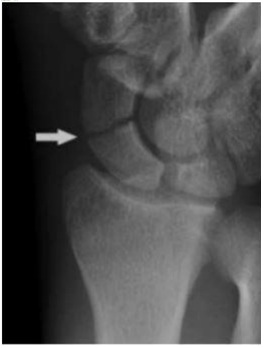
A Fratura do escafoide, retrógrado de dorsal para volar.
B Fratura do escafoide, anterógrado, de volar para dorsal.
C Fratura do escafoide, retrógrado de volar para dorsal.
D Fratura do semilunar, retrógrado de dorsal para volar.
E Fratura do semilunar, anterógrado de volar para dorsal.
Questão 1087 · Ortopedia · 4000159944Bebê de 1 mês, é trazido à consulta de puericultura de rotina. Sua mãe tem 41 anos e refere que o bebê mantém uma posição viciosa para a direita e, há uma semana, teve um provável resfriado, com coriza e espirros. Ao exame físico, a pediatra nota restrição de rotação e inclinação, com tumoração palpável no pescoço do lado direito. O bebê era grande para a idade nacional, tendo nascido de 40 semanas e com 4.230g, por parto cesárea. Estava pélvico e, ao nal da gestação, a mãe apresentou oligodrâmnio. Qual é o diagnóstico mais provável e os seus fatores de risco?
A Síndrome de Grisel, infecção de vias aéreas superiores.
B Síndrome de Sandifer, imaturidade do esfíncter esofágico.
C Síndrome de Down, idade materna.
D Torcicolo muscular congênito, apresentação pélvica, oligodrâmnio e macrossomia.
E Fibrossarcoma do esternocleidomastoideo, sem fator de risco definido.
Questão 1088 · Ortopedia · 4000159943Paciente de 30 anos, vítima de acidente com motocicleta em uma fazenda durante entrega de pizza, é trazido ao hospital com lesão exclusiva na perna direita. Apresenta laceração de 2cm, com fratura transversa simples de tíbia e fíbula, sem comprometimento neurovascular. Qual é o grau conforme a classificação de Gustilo e Anderson?
A I
B II
C IIIA
D IIIB
E IIIC.
Questão 1089 · Ortopedia · 4000159941Um paciente de 5 anos vem ao pronto-socorro com queixa de dor no joelho há dois dias, incapacidade de apoiar o pé no chão e febre não aferida. Ao exame, apresenta o joelho vermelho e edemaciado, com restrição de movimentos, temperatura de 38,5°C. Exames séricos trazem VHS de 72 e leucócitos de 14.500. Qual é a suspeita diagnóstica e o próximo exame a ser solicitado?
A Artrite idiopática juvenil, FAN, PCR e fator reumatoide.
B Sinovite transitória, ultrassonografia do joelho.
C Pioartrite do joelho, radiografia do joelho.
D Artrite idiopática juvenil, radiografia do joelho.
E Pioartrite do joelho, punção articular.
Questão 1090 · Ortopedia · 4000159928Quais são o teste clínico e o exame d e imagem mais indicados para o diagnóstico de displasia do desenvolvimento do quadril em um bebê com seis meses de idade?
A Teste de Ortolani e Ultrassonografia.
B Teste de Ortolani e Radiografia.
C Teste de Trendelenburg e Ultrassonografia.
D Teste de Hart e Radiografia.
E Teste de Barlow e Radiografia.
Questão 1091 · Ortopedia · 4000159925Um paciente de dois anos e meio vem apresentando há dois dias claudicação, pior especialmente pela manhã. Ao exame físico, apresenta alguma dor à movimentação do quadril direito, mas sem bloqueio articular. De exames, tem VHS e PCR discretamente elevados, hemograma sem alterações. Refere que teve um resfriado quinze dias antes. Quais são os exames e conduta indicados?
A Ultrassonografia do quadril, sintomáticos e observação.
B Ultrassonografia do quadril, punção articular e drenagem da articulação.
C Ressonância magnética do quadril, sintomáticos e observação.
D Ressonância magnética do quadril e internação.
E Radiografia da bacia, FAN e fator reumatoide.
Questão 1092 · Ortopedia · 4000159923Uma mulher de 45 anos refere dor no ombro direito há dois meses, especialmente à noite e ao fazer atividades domésticas ou durante as aulas, quando escreve na lousa. Ao exame físico, apresenta os testes de Jobe e Apley positivos, mas Hawkins-Kennedy, Yocum e Patte negativos. Qual o diagnóstico desta paciente e as estruturas acometidas?
A Síndrome do impacto do ombro, tendão do supraespinhal.
B Síndrome do impacto do ombro, tendão do infraespinhal.
C Síndrome do manguito rotador, tendão do supraespinhal.
D Síndrome do manguito rotador, tendão do infraespinhal.
E Capsulite adesiva, cápsula articular.
Questão 1093 · Ortopedia · 4000159920Paciente de 80 anos, foi levada ao pronto-socorro após ser encontrado caído no chão da própria casa. Seu membro inferior esquerdo está encurtado e rodado externamente. Qual é o diagnóstico mais provável?
A Luxação anterior do quadril
B Fratura da diáfise do fêmur
C Fratura da diáfise da tíbia
D Fratura transtrocantérica do fêmur
E Fratura do colo do fêmur
Questão 1094 · Ortopedia · 4000159916Uma criança de 1 ano e 5 meses é trazida pelos pais ao pronto socorro, após queda de bicicleta. Apresenta fratura do fêmur direito e hematomas nos braços, pernas e dorso. Questionados, os pais referem que a criança cai muito. Qual a conduta mais correta diante do caso apresentado?
A Tratamento da fratura do fêmur e encaminhamento ao neurologista para investigação da causa de desequilíbrio.
B Tratamento da fratura do fêmur e encaminhamento ao hematologista para investigação dos hematomas.
C Internação hospitalar, tratamento da fratura do fêmur com gesso pélvico-podálico e notificação ao conselho tutelar.
D Além da alternativa A, encaminhar também para o geneticista para investigar por que fraturou o fêmur com tanta facilidade.
E Além da alternativa C, solicitar radiografia de todo o esqueleto.
Questão 1095 · Transtorno Psicótico Breve · 4000159694A paciente Jéssica Lorraine, 28 anos, está apresentando um comportamento “diferente” há 18 dias. Apresenta risos imotivados, acusa sua irmã de ser uma espiã da antiga união soviética e acredita que sua mãe deseja envenená-la, colocando veneno de rato na sua comida. O quadro iniciou-se abruptamente, após ser acusada de furtar 12 reais do caixa do mercadinho em que trabalha. Após avaliação médica, a paciente é internada, inicia o tratamento com antipsicótico e tem uma melhora completa do quadro após uma semana, com retorno a sua funcionalidade e padrão de comportamento.
A Transtorno psicótico breve.
B Esquizofrenia.
C Transtorno esquizofreniforme.
D Mania Bipolar.
E Transtorno esquizoafetivo.
Questão 1096 · Transtorno Alimentares · 4000159691Adolescente de 15 anos é levada ao pediatra porque seus pais notaram que ela vem fazendo “regimes da moda” há alguns meses, mas mesmo assim, como não mantém a dieta por muitos dias segue um pouco acima do peso. A família também percebeu em diversas vezes que a paciente se envolve em episódios em que come “como se não houvesse amanhã”, especialmente durante a noite. Nessas ocasiões, sua mãe percebe que a menor se tranca no banheiro por várias horas e escuta várias vezes a descarga ser acionada. O diagnóstico mais provável é:
A Autismo.
B Anorexia nervosa.
C Compulsão alimentar.
D Bulimia nervosa.
E Esquizofrenia.
Questão 1097 · Abstinência de Tabaco · Tabaco · Dependência de Tabaco · 4000159690Paciente de 67 anos, fumante há 35 anos, com antecedentes de hipertensão, 3 infartos há 8 anos e epilepsia em tratamento e estabilizada. Procura a UBS desejando abandonar o tabagismo. Você pode prescrever todas as medicações abaixo, exceto:
A Reposição definicotina.
B Nortriptilina.
C Bupropiona.
D Vareniclina.
E Clonidina.
Questão 1098 · Transtorno de Pânico · Ataque de Pânico · Agoraf obia · 4000159687Mulher, 34 anos, com história de episódios autolimitados de sensação de morte iminente, acompanhada por palpitações, sudorese e tremor de extremidades, com duração aproximada de 25 minutos. Refere cerca de 6 episódios semelhantes nos últimos 3 meses. Percebeu que em lugares públicos, como parques e praças as crises surgem com mais frequência. Assinale a alternativa que corresponde a melhor hipótese.
A Ataque de pânico com agorafobia.
B Transtorno de Ansiedade Generalizada com agorafobia.
C Transtorno Obsessivo Compulsivo com Fobia Social.
D Transtorno de Pânico com agorafobia.
E Depressão com agorafobia.
Questão 1099 · Transtorno Psicóticos · 4000159684Alfredinho, 19 anos, é levado pelos pais à UBS para consulta com a clínica geral. Os pais contam que há 2 meses o paciente parece conversar sozinho, apontando em diversas direções. Também notaram que há algumas semanas o garoto tem falado sobre temas como invasão alienígena e sobre a teoria dos “antigos astronautas”. A mãe, mais observadora, também conta que há quase um ano seu lho passa a maior parte do tempo no quarto, tem saído menos de casa e passa alguns dias sem tomar banho. Assinale qual é a melhor hipótese para o caso:
A Transtorno Psicótico Breve.
B Esquizofrenia.
C Transtorno Delirante Persistente.
D Transtorno Esquizofreniforme
E Mania Bipolar.
Questão 1100 · Abstinência de Álcool · 4000159683Homem de 73 anos é levado à emergência pelo neto após episódio de agitação psicomotora e desorientação. O neto relata que o avô tem uma rotina rígida de ir ao bar toda a manhã para jogar dominó com a velha guarda. Contudo, não pode ir nos últimos 2 dias, pois torceu o tornozelo tomando banho. No exame físico, PA: 170 X 100mmHg, FC 113bpm, FR 27ipm, SpO₂ 98%, Tax 39,2ºC. Além disso, paciente está falando coisas sem sentido, alegando que está sendo perseguido por insetos gigantes e hostil com a equipe. Considerando o caso descrito, assinale a alternativa com a melhor hipótese diagnóstica dessa paciente.
A Alucinose alcoólica.
B Delirium tremens.
C Síndrome de abstinência.
D Síndrome de Wernicke-Korsakoff.
E Intoxicação alcoólica.
Questão 1101 · Psiquiatria · 4000159681Menina, 4 anos de idade, é levada pela avó à consulta com a psiquiatra infantil, pois fora encaminhada pelo pediatra para avaliação de sintomas que chamaram a atenção da família. A avó conta que a criança não costuma falar muito, prefere brincar sempre com o mesmo boneco, assiste repetidamente ao mesmo episódio de um seriado infantil, repete muitos movimentos corporais, parece ssurado por uma árvore do quintal e se irrita com facilidade com sons altos, como o cachorro da vizinha latindo. Diante deste cenário, assinale a melhor resposta.
A Explicar para a família que a suspeita diagnóstica é de Transtorno do Espectro do Autismo (TEA) e prescrever risperidona.
B Avaliar a possibilidade de transtorno obsessivo-compulsivo.
C Solicitar tomografia de crânio para avaliação diagnóstica.
D Encaminhar para a fonoaudiologia devido a transtorno da fala.
E Explicar para a família que a suspeita diagnóstica é de Transtorno do Espectro do Autismo (TEA) e encaminhar para estimulação precoce.
Questão 1102 · Psiquiatria · 4000159678Assinale a alternativa que contém incorretamente a combinação tóxico-antídoto:
A Paracetamol - Acetilcisteína.
B Diazepam - Naloxona.
C Metanol - Etanol.
D Carbamato - Atropina.
E Propranolol - Glucagon.
Questão 1103 · Psiquiatria · 4000159676Qual das drogas abaixo pode se bene ciar do uso de bicarbonato de sódio durante uma intoxicação com alargamento do QRS?
A Benzodiazepínicos.
B ISRS.
C Antidepressivos tricíclicos.
D Morfina.
E Carbamato.
Questão 1104 · Psiquiatria · 4000159674Paciente agricultor, 58 anos de idade, dá entrada na UPA com os seguintes sintomas: bradicardia, broncorreia, sialorreia, vômitos, diarreia, sudorese intensa, miose e miofasciculações. Diante deste quadro, você desconfia de intoxicação por:
A Cocaína.
B Tricíclicos.
C Carbamato.
D Opioide.
E Paracetamol.
Questão 1105 · Psiquiatria · 4000159671Paciente de 80 anos de idade, professor universitário aposentado, viúvo há 8 anos, comparece à consulta com seu cardiologista para uma consulta de rotina. Tem em sua história médica uma revascularização coronariana, diabetes, hipertensão arterial, doença renal crônica não dialítica, hipertro a prostática, além de diversos episódios convulsivos durante a infância. Seu cardiologista nota durante o atendimento que o paciente apresenta um humor entristecido, certa apatia, aumento do apetite e ansiedade, e descon a de um novo episódio depressivo. Diante deste cenário, você decide iniciar a seguinte medicação:
A Mirtazapina.
B Escitalopram.
C Amitriptilina.
D Bupropriona.
E Nortriptilina.
Questão 1106 · Of talmologia · 4000159668Maya, 26 anos, previamente saudável, comparece ao ambulatório de emergência oftalmológica queixando-se de dor forte em olho esquerdo, iniciada há 24 h. Além da dor, a paciente se queixa também de embaçamento visual nesse olho e vermelhidão. Refere usar óculos com grau alto desde a infância. Ao exame, observa-se edema de córnea, pupila em média midríase e pressão intraocular de 35 mmHg. Assinale a alternativa que contempla a principal hipótese diagnóstica:
A Glaucoma agudo
B Episclerite
C Uveíte anterior
D Esclerite
Questão 1107 · Of talmologia · 4000159667Paciente de 53 anos, feminina, foi encaminhada ao ambulatório de reumatologia por queixa de artralgias, boca seca e olhos secos, de início há 1 ano. O exame físico evidenciou aumento bilateral da glândula parótida, suspeitando-se de Síndrome de Sjögren. No que tange aos achados oftalmológicos desta patologia, assinale a alternativa correta:
A As manifestações oculares estão relacionadas, basicamente, à obstrução dos canais lacrimais, desencadeada pela síndrome.
B Esses pacientes estão mais sujeitos a desenvolver defeito epitelial recorrente e ceratites infecciosas.
C Um dos testes diagnósticos utilizados é o Teste de Schirmer, que avalia o aspecto da superfície ocular e as áreas com pouca lubrificação.
D O tratamento base do olho seco é com o uso de colírios de corticoide.
Questão 1108 · Otorrinolaringologia · 4000159659Uma menina de 8 anos vem trazida pelo pai ao pronto atendimento da UNICAMP com relato de dor de garganta, febre, tosse e desconforto abdominal de início há 10 dias. Ao exame: Orofaringe com exsudato em ambas as tonsilas, Pescoço com linfonodomegalia cervical anterior e posterior, espaço de traube ocupado. Em relação a esta situação clínica, assinale a alternativa correta:
A A esplenomegalia decorre de proliferação linfocitária além de ser esperado um hemograma com linfocitose e linfócitos atípicos.
B Pela probabilidade de doença linfoproliferativa, o exame padrão ouro é a biópsia linfonodal.
C Para afastar o risco de faringite estreptocócica é recomentada a realização de teste rápido.
D Pela grande probabilidade de Doença de Kawasaki devemos iniciar o uso de imunoglobulinas enquanto aguardamos a confirmação.
Questão 1109 · Otorrinolaringologia · 4000159658Em relação aos carcinomas de cabeça e pescoço assinale a alternativa correta:
A Um abaulamento intermitente na região submandibular que piora durante alimentação deve ter como suspeita neoplasia da glândula submandibular.
B A videolaringoscopia é o melhor exame para avaliação dos carcinomas de laringe, sendo esta a neoplasia de mucosa mais comum da região de cabeça e pescoço.
C O tratamento padrão ouro para os carcinomas de laringe é a laringectomia total devendo ser indicado na maioria dos casos.
D Exposição ocupacional à pó de madeira, poeiras têxteis, pó de níquel e cromo podem são importantes fatores de risco para carcinoma de laringe.
Questão 1110 · Otorrinolaringologia · 4000159657João tem 64 anos e foi à unidade básica de saúde com relato que de os lhos e a esposa se queixam de que ele apresenta di culdade de compreensão dos sons e só consegue escutar rádio e televisão com um volume alto. Otoscopia não apresenta alterações em conduto auditivo nem membrana timpânica. Antecedentes: Hipertensão, Diabetes, Tabagista, trabalha numa metalúrgica de motores pesados há 25 anos. Fez uma audiometria que apresentou o resultado abaixo: Em relação à situação descrita acima, assinale a alternativa correta:
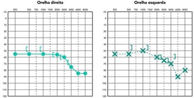
A Estamos diante de uma perda auditiva neurossensorial por PAIR
B É uma perda auditiva mista por uma PAIR
C Perda auditiva neurossensorial com maior probabilidade de tumor do ângulo pontocerebelar como um schwannoma.
D Estamos diante de uma perda auditiva neurossensorial por uma provável presbiacusia.
Questão 1111 · Otorrinolaringologia · 4000159651Jovem de 18 anos relata queixa de febre alta e cefaleia frontal há 3 dias. Iniciou há 1 dia com obstrução nasal, tosse produtiva e coriza. Febre: 38,2 graus, Orofaringe: hiperemia e hipertro a de tonsilas com secreção em parede posterior; Rinoscopia: secreção espessa bilateral com hiperemia e hipertro a de cornetos inferiores; AP: murmúrio vesicular presente com roncos. Em relação a este caso clínico, assinale a alternativa correta:
A Devemos solicitar hemograma, raio x do tórax e dos seios paranasais para auxiliar na conduta.
B Indicar lavagem nasal com solução salina, analgésico se dor e antitérmico se febre.
C Iniciar amoxicilina-clavulanato, lavagem nasal com solução salina e corticoide tópico nasal.
D Iniciar amoxicilina, lavagem nasal com solução salina e curso curto de corticoide via oral.
Questão 1112 · Otorrinolaringologia · 4000159648Um paciente de 45 anos de idade hipertenso, diabético e tabagista apresentou um abaulamento submandibular à direita de início há 3 dias associado a hiperemia, edema e calor local. Nega história de febre ou IVAS recente relatando apenas um tratamento dentário para canal há 1 semana. Ao exame foi verificado um abaulamento de aproximadamente 5,0 cm nos níveis Ib e II à direita, com utuação e dor à palpação. Relata dispneia leve, mantendo-se saturando 95% em ar ambiente. Considerando o quadro clínico acima, assinale a alternativa correta:
A A etiologia mais provável é uma infecção por gram positivos e gram negativos, estando indicada inicialmente internação hospitalar e monitorização da saturação.
B Devemos solicitar tomografia computadorizada e só realizar internação hospitalar e início de antibioticoterapia após o laudo do exame.
C Já devemos programar uma drenagem cirúrgica sob anestesia geral.
D Realizar internação hospitalar, solicitar tomografia computadorizada, exames laboratoriais e laringoscopia.
Questão 1113 · Otorrinolaringologia · 4000159646Uma criança de 6 anos é trazida ao pronto atendimento da Unicamp com dispneia, estridor e tosse rouca há 2 dias. Os sintomas se iniciaram há 5 dias com febre baixa, obstrução nasal, tosse seca e coriza. No momento com febre de 39 graus, Sat O₂ 93 %, tiragem intercostal leve e AP com murmúrio vesicular diminuído globalmente. Foi realizado nebulização com adrenalina sem melhora do quadro. Apresenta calendário vacinal completo. Diante da situação acima, assinale a alternativa correta.
A O agente etiológico provável é o S. aureus estando indicada antibioticoterapia venosa.
B A conduta inicial deve ser intubação orotraqueal, internação hospitalar, coleta de material para cultura e antibioticoterapia empírica.
C Deve ser repetida outra nebulização com broncodilatador para melhora dos sintomas.
D O agente etiológico mais provável é o parainfluenza estando indicada internação hospitalar para suporte ventilatório.
Questão 1114 · Of talmologia · 4000159493Recém-nascido é levado à consulta com 3 dias de vida. A mãe encontra-se muito preocupada, pois a criança está há 24h com secreção ocular abundante, de coloração amarelada, e olho vermelho. Qual seria a principal hipótese diagnóstica?
A Conjuntivite bacteriana por
B Conjuntivite alérgica
C Conjuntivite herpética
D Conjuntivite química
E Conjuntivite por gonococo
Questão 1115 · Of talmologia · 4000159492Maitê, 5 anos, estava passando férias no sítio dos avós e, no último dia, foi picada por um inseto na pálpebra. Evoluiu com edema, hiperemia e calor local, apresentando febre no quarto dia, bem como secreção lacrimal purulenta. Acuidade visual estava normal e movimentação ocular preservada. Qual a principal hipótese diagnóstica e tratamento?
A Celulite orbitária; tratamento com antibiótico venoso.
B Alergia aguda à picada de inseto; tratamento com antialérgico oral e anti-térmico.
C Celulite pré-septal; tratamento com cefalexina oral.
D Conjuntivite alérgica; tratamento com colírio antialérgico e colírio corticoide.
E Celulite orbitária; tratamento com cefalexina oral.
Questão 1116 · Otorrinolaringologia · 4000159491Uma paciente de 42 anos veio em consulta na unidade básica por detectar um abaulamento na região cervical anterior. Foi solicitado um ultrassom que demonstrou ser um bócio multinodular, apresentando dois nódulos no lobo direito, sendo um nódulo (1) de 1,0 cm, hipoecogênico, mais alto que largo, com microcalci cações e outro nódulo (2) de 2,0 cm misto, com a parte sólida isoecogênica e mais largo do que alto. Em relação a esta paciente.
A Deve ser solicitado TSH, T4 livre e tireoglobulina para auxiliar nesta avaliação.
B Como os dois nódulos são unilaterais, devemos indicar tireoidectomia parcial com lobectomia + istmectomia direita.
C Está indicada PAAF apenas no nódulo (1)
D Estão indicadas punções nos dois nódulos.
E Pela característica dos nódulos, está indicada apenas observação e acompanhamento com ultrassonografias seriadas.
Questão 1117 · Otorrinolaringologia · 4000159490Uma criança de 6 anos veio ao pronto atendimento com febre alta, dor em orofaringe e odinofagia de início há 1 dia, associada a otalgia intermitente. Nega obstrução nasal, coriza, tosse e disfonia. Ao exame: orofaringe apresentando hipertro a de tonsilas com exsudato purulento, rinoscopia com hiperemia mucosa sem secreção significativa, otoscopia com hiperemia da membrana timpânica, Pescoço com linfonodomegalia nível II de 2,5 cm bilateral, móveis, broelásticos e lisos. Relata dois episódios prévios no último ano. Em relação à situação acima, assinale a alternativa correta:
A Pela associação de faringite bacteriana e otite média aguda bacteriana está indicado o uso de amoxicilina com clavulanato.
B Deve ser utilizado o teste rápido para antígenos estreptocócicos, que caso venha negativo indica realização de cultura da orofaringe.
C A Penicilina Benzatina deve ser indicada para garantir uma melhor adesão ao tratamento e com cobertura adequada para a infecção.
D Prescrever apenas sintomáticos visto que estamos diante de uma provável faringite viral.
E Deve ser indicada amigdalectomia após resolução da fase aguda para controle destas infecções.
Questão 1118 · Otorrinolaringologia · 4000159489Um paciente de 18 anos relata abaulamento cervical nível II. à esquerda de início há 1 mês. Descreve que a lesão iniciou após uma “virose” que cedeu em 1 semana, mas deixou este “presente”. Ao exame: Ausência de febre, eupneico, normocorado, orofaringe, rinoscopia e otoscopia dentro da normalidade. Pescoço: Lesão broelástica de aproximadamente 3,0 cm, bem delimitada, localizado na borda anterior do ECM na topogra a do nível II. Foi solicitado uma ultrassonogra a que evidenciou tratar-se de uma lesão cística. Em relação ao caso clínico acima, assinale a alternativa correta:
A O tratamento é ressecção da lesão associada à porção central do osso hioide
B É uma lesão derivada da persistência do ducto tireoglosso
C É um provável linfonodomegalia com degeneração cística reacional à “virose.”
D É formado por falha do fechamento do primeiro arco branquial
E O tratamento é ressecção da lesão incluindo o seu trajeto até a orofaringe.
Questão 1119 · Ref orma Psiquiátrica e Psiquiatria Social · Ref orma Psiquiátrica Brasileira · 4000159488De acordo com a Lei da Reforma Psiquiátrica, assinale a verdadeira:
A É direito do paciente com transtorno mental a aposentadoria por invalidez.
B É direito do paciente ser internado preferencialmente em instituições asilares.
C É direito do paciente ser internado preferencialmente em hospitais escola.
D É dever do médico determinar, se necessário, internações compulsórias
E É direito de todo paciente com transtorno mental ser tratado no CAPS.
Questão 1120 · Psiquiatria · 4000159487O delirium tremens (DT), é uma consequência grave e potencialmente fatal da síndrome de abstinência alcoólica, caracterizado por sintomas como tremores intensos, taquicardia, sudorese, hipertermia, psicose, e alterações no nível de consciência, que normalmente se manifestam de 48 a 72 horas após a interrupção do uso pesado de álcool. Diante de um paciente em DT não é útil a prescrição de:
A Prescrição de haloperidol
B Tranquilização e observação;
C Administração de biotina;
D Ajuste de eletrólitos;
E Uso de diazepam.
Questão 1121 · Psiquiatria · 4000159486Qual das drogas abaixo é considerada de segunda linha para a cessação do tabagismo?
A Clonidina.
B Adesivo definicotina.
C Bupropiona.
D Vareniclina.
E Pastilha definicotina
Questão 1122 · Psiquiatria · 4000159485Urandir, agricultor de 30 anos, chegou à emergência miose, bradicardia, broncorreia, sudorese e dor abdominal. Diante desta situação você desconfia de intoxicação exógena, e o trata utilizando:
A Naloxona
B Flumazenil
C Fisostigmina
D Pralidoxima
E N-acetilcisteína
Questão 1123 · Psiquiatria · 4000159484O uso de flumazenil é indicado na intoxicação por:
A Carbamato.
B Paracetamol.
C Cetamina.
D Clordiazepóxido.
E Morfina
Questão 1124 · Psiquiatria · 4000159483Médico de 39 anos é levado pelo SAMU ao pronto atendimento com agitação, alucinações e delírios, taquicardia, pele seca e midríase. A principal suspeita é de tentativa de suicídio por intoxicação exógena que o levou a:
A Síndrome anticolinérgica.
B Síndrome colinérgica
C Síndrome narcótica.
D Síndrome extrapiramidal.
E Síndrome hipnossedativa
Questão 1125 · Psiquiatria · 4000159482Uma mulher de 31 anos encontra-se no décimo quarto dia de pós-parto. Relata que há 4 dias desenvolveu um humor discretamente irritado, sente-se lábil emocionalmente, está com di culdades para dormir, além de queixar-se de ansiedade e sensação de exaustão emocional. Diante desta vinheta, o provável diagnóstico é
A esquizofrenia
B Bipolaridade
C Depressão pós-parto
D Blues do puerpério
E psicose puerperal
Questão 1126 · Ortopedia · 4000159437Homem, 33 anos, fraturou a diá se do úmero direito ao colidir com uma parede durante uma partida de futebol. À avaliação inicial, não apresentava nenhuma alteração neurovascular. Após a cirurgia para xação da fratura, passou a apresentar di culdade para estender o punho e os dedos nas metacarpofalângicas. Qual é a estrutura lesada e qual a conduta?
A Tendões dos músculos extensores do punho e dedos, rafia.
B Nervo radial, observação.
C Nervo mediano por síndrome compartimental aguda, fasciotomia.
D Nervo radial, exploração cirúrgica.
Questão 1127 · Ortopedia · 4000159436Paciente do sexo feminino, de 27 anos, foi internada por fratura de fêmur esquerdo e ossos da perna à direita após tentativa de suicídio pulando do 3º andar de um prédio. Após dois dias de internação, começa a apresentar confusão mental, dispneia e petéquias pelo tronco. QUAL É O DIAGNÓSTICO?
A Hematoma subdural
B Embolia gordurosa
C Tromboembolismo pulmonar
D Pneumonia
Questão 1128 · Ortopedia · 4000159433Paciente de 23 anos, teve queda de moto e vem ao pronto socorro com dor no punho. Apresenta a seguinte radiografia: Qual foi o ligamento lesado?
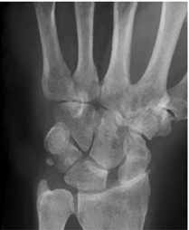
A Radiossemilunar
B Semilunopiramidal.
C Semilunocapitato.
D Escafossemilunar.
Questão 1129 · Ortopedia · 4000159430Um paciente é trazido ao pronto socorro com fratura exposta de ossos da perna direita e ausência de pulso pedioso. Assinale a sequência correta de condutas: A: Alinhamento do membro B: Reavaliação neurovascular C: Fixação externa D: Elevação do membro E: Ultrassom-Doppler ou arteriografia F: Imobilização
A A-B-C-E
B A-F-D-B-E-C
C F-D-B-E-C
D E-C-B
Questão 1130 · Ortopedia · 4000159428Qual é o principal agente etiológico de pioartrite?
A Kingella kingae
B Salmonella
C Haemophilus influenzae B
D S. aureus
Questão 1131 · Ortopedia · 4000159427Uma menina de 6 meses é trazida ao consultório do pediatra para consulta de rotina. Durante o exame, o pediatra observa um teste de Hart positivo à esquerda, mas testes de Ortolani e Barlow negativos. Olhando o histórico da paciente, o parto foi cesárea devido a apresentação pélvica, e, na história familiar, tem uma avó paterna com múltiplas artroses, um avô paterno com hipertensão e diabetes, e uma avó materna que precisou de uma prótese no quadril aos quarenta anos de idade, mas não sabe referir a causa. Quais são o diagnóstico mais provável e a melhor conduta?
A Sequela de infecção, ressonância magnética.
B Displasia do desenvolvimento do quadril, radiografia.
C Sinovite transitória, observação.
D Artrogripose, avaliação genética.
Questão 1132 · Ortopedia · 4000159426Um menino de 3 anos acordou com dor no membro inferior direito e refere não conseguir colocar o pé no chão. Nega febre. Os pais referem que a família inteira teve Covid-19 há duas semanas, mas já estão bem. Ao exame físico, apresenta 36,7°C e com dor à extensão do quadril, porém sem restrição de movimentos ou sinais ogísticos das articulações. Apresenta derrame articular à ultrassonogra a e provas inflamatórias normais. O DIAGNÓSTICO É:
A Artrite séptica
B Sinovite transitória
C Artrite idiopática juvenil
D Osteomielite
Questão 1133 · Ortopedia · 4000159425Uma paciente de 52 anos, vítima de queda com fratura intra-articular do rádio distal direito, foi submetida a redução aberta e xação com placa volar. No dia seguinte, quando o bloqueio do plexo braquial passou, referia dor importante no punho direito, que piorava ao movimentar os dedos, e formigamento da ponta dos dedos. Qual é o diagnóstico mais provável e a conduta indicada?
A Complicação do bloqueio do plexo braquial, ressonância magnética para investigação.
B Lesão do nervo mediano com parafuso, reabordagem cirúrgica.
C Síndrome compartimental aguda, fasciotomia.
D Síndrome da dor complexa regional analgésicos, fisioterapia e vitamina C.
Questão 1134 · Síndrome do Esgotamento Prof issional Burnout · 4000159406A síndrome de Burnout (esgotamento pro ssional) é cada vez mais frequente entre médicos e estudantes de Medicina. O Conselho Federal de Medicina (CFM) estimula a discussão do tema, sobre o qual é correto:
A Ainda necessita ser codificada na Classificação Internacional de Doenças (prevista para a CID-11).
B A disponibilidade de aparatos tecnológicos faz com que o médico se sinta mais seguro em sua atuação, com consequente redução da fadiga.
C Já amplamente discutida pelas categorias médicas, a síndrome de Burnout faz parte de discussões cotidianas na prática dos médicos, recebendo a devida atenção.
D Ocupar postos de trabalho que demandam qualificação aquém do que o médico possui pode desencadear Burnout.
E As áreas cirúrgicas têm mais profissionais afetados.
Questão 1135 · Ortopedia · 4000159232Paciente de 22 anos, vítima de acidente automobilístico, é trazido ao pronto-socorro em prancha rígida e com colar cervical. Ao ATLS, apresenta: A: vias aéreas pérvias e colar cervical; B: murmúrio vesicular presente bilateralmente; C: FC 78, PA 80 X 40, pelve estável, abdome sem alterações; D: pupilas isofotorreagentes, refere que não consegue sentir nada da região dos mamilos para baixo; E: sem outras lesões. Radiogra a de pelve não apresenta alterações e FAST encontra-se negativo. À reavaliação, apresenta nível sensitivo em T4 e reflexo bulbocavernoso ausente. Sobre este caso:
A Trata-se de uma lesão medular completa e definitiva de nível T4.
B O tratamento preconizado para o choque deste paciente é com reposição de volume.
C A prancha rígida só deve ser retirada após a fixação da fratura ou estabilização com algum colete, pelo risco de piora do quadro clínico.
D Não é possível definir o nível de lesão ainda.
E Vasopressores são a primeira opção no tratamento do choque medular.
Questão 1136 · Ortopedia · 4000159230Marcelo, 13 anos, vem referindo dor na coxa esquerda, irradiada até o joelho, há uma semana, desde trauma durante partida de futebol. Apresenta-se claudicando e anda com o pé esquerdo rodado um pouco para fora e o joelho direito levemente etido. Está acima do peso, pois, segundo a sua mãe, ganhou aproximadamente 20 quilos durante a quarentena pela pandemia de Covid-19. O diagnóstico é:
A Fratura do fêmur proximal
B Doença de Osgood-Schlatter
C Rompimento do ligamento cruzado anterior
D Doença de Perthes
E Epifisiólise do fêmur proximal
Questão 1137 · Ortopedia · 4000159229Menino de 8 meses de idade, é trazido ao pronto-socorro pois vem apresentando sonolência excessiva e, segundo a mãe, teve duas crises convulsivas. Ainda não senta e está com as vacinas atrasadas desde os dois meses de idade. Ao exame físico, encontra-se pouco responsivo, desidratado, mas com pupilas isofotorreagentes, e alguns hematomas em tronco e braços. Segundo a mãe, isso ocorreu porque ele caíra da escada, dois dias antes, após abrir sozinho a cerquinha de proteção. Qual é o diagnóstico mais provável?
A Síndrome de West
B Paralisia cerebral
C Meningoencefalite
D Síndrome do bebê chacoalhado
E Coagulopatia com sangramento intracraniano
Questão 1138 · Ortopedia · 4000159227Paciente de 40 anos, vítima de acidente de motocicleta, foi levado ao hospital pelo SAMU já intubado. Foi submetido a laparotomia exploratória, esplenectomia, xação da bacia, xação externa do fêmur esquerdo e da tíbia direita e drenagem de hematoma intracraniano. No momento, encontra-se intubado na UTI e estável hemodinamicamente. O residente de ortopedia, durante a visita, observa que o membro inferior direito está mais pálido, com diminuição de pulso, perfusão periférica lenti cada e importante edema. Seu assistente orienta que a melhor conduta no momento é:
A Iniciar enoxaparina.
B Solicitar avaliação da cirurgia vascular.
C Solicitar uma angiotomografia, pois o fixador externo atrapalhará o USG-doppler.
D Fazer uma fasciotomia da perna direita.
E Medir a pressão intracompartimental da perna direita.
Questão 1139 · Ortopedia · 4000159225Paciente de 35 anos, vítima de soterramento, cou preso sob os escombros por cinco horas, antes de ser retirado pelos bombeiros. É levado ao hospital em regular estado geral, hipotenso e taquicárdico, com fratura de ossos da perna direita. É estabilizado pela equipe de cirurgia geral, mas apresenta dor intensa em membro inferior direito, não responsiva a dipirona e a dose usual de tramadol (100mg), prescritos pela equipe de cirurgia geral. O membro está bastante edemaciado e o paciente refere formigamento. Qual é a conduta mais assertiva a seguir?
A Elevar o membro para auxiliar a diminuição do edema.
B Usar opioide forte (morfina), conforme a escada analgésica da OMS.
C Fixação externa do membro inferior direito.
D Fasciotomia da perna.
E Bloqueio anestésico poplíteo.
Questão 1140 · Síndrome Hipnossedativa · Sumário dos Tóxicos e Antídotos · 4000158789Diante da intoxicação por Zolpidem, qual dos fármacos abaixo pode ser considerado o antídoto?
A N-acetilcisteína.
B Bicarbonato de sódio.
C Flumazenil.
D Naloxona
E Vitamina K.
Questão 1141 · Psiquiatria · 4000158788Mulher de 22 anos é encontrada pelos pais desacordada em seu quarto, onde supostamente ingeriu diversos medicamentos e deixou uma carta de despedida. Levada à UPA, foi prontamente atendida pela plantonista que identi cou os seguintes achados: rebaixamento da consciência, febre, pele seca, midríase, retenção urinária e ruídos hidroaéreos abolidos. Diante deste cenário, assinale o agente responsável por esta intoxicação:
A Amitriptilina
B Cocaína.
C Anfetamina.
D Organofosforado.
E Paracetamol.
Questão 1142 · Psiquiatria · 4000158787Paciente tabagista está em consulta com seu cardiologista, que tenta o motivar a parar de fumar. O paciente desconversa, dizendo que sabe que o fumar faz mal à saúde, imagina-se livre do cigarro num futuro breve, mas ainda não se sente preparado para abandonar o tabagismo. De acordo com a vinheta acima, qual é o estágio motivacional que o paciente se encontra?
A Pré-contemplação.
B Contemplação.
C Preparação.
D Ação.
E Manutenção
Questão 1143 · Psiquiatria · 4000158785Qual o medicamento abaixo é a melhor escolha para tratar os sintomas de um paciente que se encontra em abstinência alcoólica?
A Haloperidol.
B Tiamina
C Diazepam.
D Clorpromazina.
E Midazolam
Questão 1144 · Otorrinolaringologia · 4000158510Adolfo de 22 anos foi ao pronto socorro do HC-FMUSP com queixa de obstrução nasal, tosse produtiva e coriza há 14 dias. Relata que a secreção e a tosse diminuíram de intensidade desde o início dos sintomas, porém ainda persiste com esta sintomatologia de forma residual. Relata ainda o desenvolvimento de cefaleia frontal 3 dias após o início dos sintomas de intensidade leve à moderada. Realizou raio x dos seios paranasais solicitado pelo clínico da UPA que visualizou secreção nos seios maxilares, estando com o pedido de uma tomogra a computadorizada para esta possível confirmação. Quais destes achados justifica a prescrição de antibiótico ?
A Secreção nos seios maxilares pelo raio x
B Confirmação da secreção na tomografia computadorizada
C Persistência dos sintomas por 14 dias
D Desenvolvimento de cefaleia frontal
Questão 1145 · Otorrinolaringologia · 4000158509Um paciente de 40 anos com queixa de odinofagia e disfagia progressivas de início há 8 meses. Ao exame: Orofaringe apresentando lesão vegetante de crescimento progressivo e friável em tonsila direita de aproximadamente 3,0 cm, e linfonodo de 3,0 cm ipsilateral duro, irregular e móvel. Hábitos de vida: Tabagista e etilista moderado, vida sexual ativa com múltiplos parceiros. Assinale a alternativa que apresenta o provável resultado do anátomo patológico da biópsia incisional.
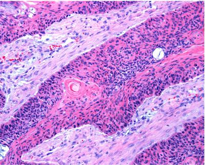
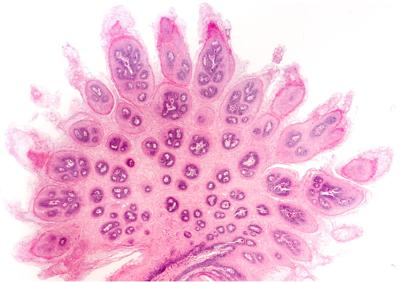
A shutterstock
B shutterstock
C shutterstock
D shutterstock
Questão 1146 · Otorrinolaringologia · 4000158508Uma cantora de música sertaneja que faz muito sucesso nas calouradas do HC-FMUSP procurou o hospital para avaliação de um nódulo tireoidiano. Pela suspeita de malignidade foi submetida à tireoidectomia total evoluindo bem, mantendo à fonação, porém apresentando fadiga vocal e di culdade de emissão dos famosos agudos que emocionavam os estudantes. Qual a provável fisiopatologia do quadro:
A Lesão do ramo interno do nervo laríngeo superior com paralisia do músculo tireoaritenoideo.
B Lesão do ramo externo do nervo laríngeo superior com paralisia do músculo cricotireoideo.
C Lesão do nervo laríngeo recorrente com paralisia do músculo cricoaritenoideo posterior
D Lesão do nervo laríngeo recorrente com paralisia do músculo cricoaritenoideo lateral.
Questão 1147 · Otorrinolaringologia · 4000158506Tereza é uma criança de 3 anos que vem ao ambulatório da pediatria com relato de mais uma crise de otite há 15 dias, persistindo com desconforto no ouvido direito e episódios de hipertermia intermitente. Foi prescrito amoxilicina com leve diminuição dos sintomas. No último ano já foram 3 crises que iniciaram após frequentar a creche. A otoscopia revelou o seguinte achado: shutterstock Em relação a este caso clínico, assinale a alternativa correta que contemple o diagnóstico e a conduta mais adequada:
A Otite média serosa, solicitar avaliação audiológica
B Otite média aguda recorrente, iniciar antibioticoterapia profilática
C Otite média aguda persistente, iniciar amoxicilina-clavulanato
D Otite média serosa, indicar timpanotomia para introdução de tubo de ventilação.
Questão 1148 · Otorrinolaringologia · 4000158505Um paciente de 10 anos vem com relato de dor de garganta, febre, coriza e desconforto cervical há 3 dias. Apresenta um bom estado geral, à palpação cervical revelou linfonodomegalia cervical anterior e posterior bilateral, e a orofaringe mostrou o seguinte achado: shutterstock Em relação à situação descrita, assinale a alternativa correta em relação ao provável diagnóstico e conduta:
A Faringite estreptocócica, indicação de teste rápido e/ou cultura da orofaringe para iniciar a antibioticoterapia.
B Mononucleose infecciosa, utilização de aciclovir e sintomáticos
C Mononucleose infecciosa, com indicação de palpação abdominal, analgésico e antitérmico.
D Faringite estreptocócica, prescrição de amoxicilina ou P. Benzatina associada à sintomáticos.
Questão 1149 · Otorrinolaringologia · 4000158504Um paciente de 60 anos tabagista e etilista de longa data vem ao seu atendimento na unidade básica de saúde com o relato de dor à mastigação, tosse prolongada com eventual saída de secreção sanguinolenta e desconforto cervical de início há 4 meses. O exame físico mostra um linfonodo nível II direito de 2,5 cm, duro, semi- xo e irregular, e a cavidade oral apresenta o seguinte achado: shutterstock Baseado na situação descrita acima, assinale a alternativa correta.
A Provável adenocarcinoma de língua, sendo a base do tratamento radio e quimioterapia.
B Provável tuberculose oral e ganglionar, sendo o diagnóstico realizado através de pesquisa de BAAR no escarro, biópsia ganglionar ou da região ulcerada.
C Provável carcinoma epidermoide, sendo o diagnóstico realizado preferencialmente por biópsia incisional tanto do linfonodo como da lesão na cavidade oral
D O diagnóstico provável é carcinoma epidermoide, sendo a base do tratamento uma glossectomia parcial associado à esvaziamento cervical.
Questão 1150 · Otorrinolaringologia · 4000158503Fernanda de 8 anos vem trazida pelo pai ao PS do HC-FMUSP por apresentar o desenvolvimento de um abaulamento cervical anterior com dor e hiperemia na linha média há 1 semana iniciado juntamente com uma faringite viral. O pai procurou uma clínica próximo à sua residência e o colega que o atendeu solicitou uma ultrassonografia que está apresentada abaixo. shutterstock Baseado no seu conhecimento clínico-radiológico, assinale o provável diagnóstico:
A Linfonodomegalia reacional
B Cisto tireoglosso
C Abscesso cervical
D Adenite bacteriana.
Questão 1151 · Otorrinolaringologia · 4000158501Um paciente de 20 anos procura o pronto atendimento com relato de obstrução nasal, secreção nasal, febre e tosse de início há 4 dias. Ao exame: orofaringe com hiperemia e secreção purulenta em gotejamento na parede posterior, rinoscopia com hiperemia de mucosa e secreção de aspecto purulento bilateral, otoscopia com hiperemia da membrana timpânica, temperatura de 38,2 graus. Foi solicitada pelo R1 do HC-FMUSP uma tomogra a computadorizada dos seios paranasais que mostrou o seguinte aspecto: shutterstock Utilizando estas informações, assinale a alternativa que indica o diagnóstico e a conduta corretas:
A Sinusite maxilo-etmoidal bilateral. Lavagem nasal com solução salina e antitérmicos.
B Sinusite maxilar bilateral associada à faringite. Amoxicilina, lavagem nasal com solução salina e antitérmico
C Sinusite maxilo-etmoidal direita e otite média aguda bacteriana. Amoxicilina- Clavuluanato, Lavagem nasal com solução salina e corticoide tópico nasal
D Sinusite maxilo-etmoidal bilateral e otite viral. Lavagem nasal com solução salina, amoxicilina- clavulanato, antitérmico e corticoide tópico nasal.
Questão 1152 · Otorrinolaringologia · 4000158483Utilizando os seus conhecimentos de anatomia radiológica dos seios paranasais, qual o achado indicado pela seta na tomografia abaixo: shutterstock
A Sinusite Maxilar esquerda
B Sinusite maxilo-etmoidal esquerda
C Sinusite Maxilar direita
D Sinusite maxilo-etmoidal direita
Questão 1153 · Of talmologia · 4000158217José, 49 anos, dá entrada no ambulatório geral de oftalmologia queixando-se de baixa acuidade visual bilateral, associada a lesões máculo -eritematosas em tronco e membros inferiores há aproximadamente um mês. O paciente trouxe alguns exames laboratoriais, que haviam sido solicitados há algumas semanas por outro médico. Dentre os exames, chamou atenção a presença de VDRL 1/128. Diante do exposto, assinale a alternativa correta:
A Os títulos dos testes treponêmicos refletem a atividade de doença.
B Para confirmação da sífilis, devem ser solicitados exames sorológicos específicos, conhecidos como testes treponêmicos para confirmação diagnóstica.
C É sinal patognomômico da sífilis ocular a coriorretinite ativa.
D Por se tratar de uma manifestação neurológica de sífilis, deve-se proceder à punção liquórica antes da escolha de terapia para sífilis.
E Tratamento do quadro ocular deve ser feito com penicilina benzatina.
Questão 1154 · Psiquiatria · 4000158164Paciente de 3 anos de idade, sexo feminino, é levado por seus avós para uma consulta com o psiquiatra infantil. Quem o encaminhou foi a médica da UBS, que fez as seguintes observações na carta de referência: “Paciente apresenta um atraso no desenvolvimento neuropsicomotor, não forma frases completas e não apresenta intenção comunicativa adequada. Noto também que deu seus primeiros passos com alguns meses de atraso, pois normalmente prefere car sentado manuseando alguns brinquedos de maneira ritualizada e parece adorar bater palmas na sua cama durante a noite. Quando chamado pelo nome, parece não ouvir, além disso, demonstra pouco apego pelos pais. Solicito sua avaliação”. Diante desse quadro, assinale o provável diagnóstico.
A Surdez.
B TDAH com predomínio desatento.
C Autismo.
D Transtorno de oposição e desafio.
Questão 1155 · Psiquiatria · 4000158163Sobre o tratamento de depressão na terceira idade, assinale a melhor resposta.
A Os antidepressivos devem ser iniciados em dose baixa, com aumentos graduais, de acordo com a tolerância do paciente.
B Os ISRS atingem o pico da ação em 2 semanas.
C Os inibidores de receptação de serotonina e noradrenalinas (“duais”) são os agentes mais potentes por aumentarem a concentração de pelo menos dois neurotransmissores.
D Entre os antidepressivos tricíclicos, a droga de pior tolerabilidade em idosos é a nortriptilina.
Questão 1156 · Psiquiatria · 4000158162Sobre o estresse pós-traumático (TEPT), assinale a alternativa verdadeira:
A Os sintomas duram até 30 dias após o trauma.
B Esquecimentos do trauma excluem o TEPT.
C Ocorre apenas após um trauma grave, que ameaçou a vida do paciente.
D A psicoterapia apresenta baixa eficácia no tratamento.
Questão 1157 · Psiquiatria · 4000158160Sobre o burnout, assinale a incorreta:
A Médicos estão entre os profissionais mais atingidos.
B Atinge especialmente trabalhadores com ocupações solitárias.
C Entre os fatores aparentemente associados ao seu desenvolvimento, estão: a pouca autonomia no desempenho profissional, problemas de relacionamento com as chefias e sentimento de desqualificação.
D Os sintomas acontecem apenas no contexto laboral.
Questão 1158 · Psiquiatria · 4000158157Paciente tabagista motivado a abandonar de vez o fumo. Já comprou uma agenda, anotou suas metas, marcou uma consulta na UBS com a médica da família e está lendo cartilhas motivacionais. Em que estágio de mudança de comportamento do modelo transteórico de Prochaska e DiClemente o paciente se encontra?
A Pré-contemplação.
B Contemplação.
C Preparação.
D Ação.
Questão 1159 · Psiquiatria · 4000158155Sobre a bipolaridade, marque a verdadeira:
A Após um episódio de mania, não é possível a recuperação total do humor.
B Episódios maníacos iniciam-se lentamente.
C Episódios de depressão duram menos que os maníacos.
D É possível a abertura do primeiro quadro de humor na velhice.
Questão 1160 · Psiquiatria · 4000158153Sobre episódio de depressão grave, assinale a melhor resposta:
A É fundamental o uso de antidepressivos ou eletroconvulsoterapia.
B Psicoterapias regulares são o suficiente para o tratamento.
C Caso não haja risco de suicídio, não é mandatório o uso de antidepressivos.
D Perguntas, ao paciente, sobre ideações suicidas devem ser evitadas, pois podem induzi-lo ao suicídio.
Questão 1161 · Psiquiatria · 4000158150Qual é o antidepressivo que tem maior chance de causar efeitos colaterais em idosos?
A Amitriptilina.
B Sertralina.
C Venlafaxina.
D Citalopram.
Questão 1162 · Síndrome Neuroléptica Maligna SNM · 4000158147Uma jovem de 15 anos de idade foi admitida em um hospital com rigidez muscular intensa, febre e confusão mental. Tem história de tratamento psiquiátrico, devido ao diagnóstico de bipolaridade. Por isso, seu clínico prescreveu risperidona 6 mg há 2 semanas, para controlar um estado hipomaníaco. Diante desse cenário, você decide utilizar:
A Haloperidol.
B Atropina.
C Bromocriptina.
D Lisdexanfetamina.
Questão 1163 · Psiquiatria · 4000158143Mulher de 29 anos, no quinto mês de gestação, queixa-se de anedonia, insônia, falta de apetite, perda de peso, baixa concentração e baixa autoestima desde o 3º mês de gravidez. Qual é a hipótese diagnóstica e melhor indicação farmacológica?
A Paroxetina.
B Clonazepam.
C Sertralina.
D Lítio.
Questão 1164 · Psiquiatria · 4000158139A respeito das políticas públicas em psiquiatria, assinale a alternativa incorreta:
A O movimento social que impulsionou a mudança do modelo de atenção em saúde mental no Brasil é denominado de Reforma.
B A Política Nacional de Saúde Mental tem, entre as suas diretrizes atuais, o objetivo da redução gradual de leitos em hospitais psiquiátricos.
C Pacientes com doenças mentais graves devem ser acompanhados no CAPS.
D Sempre que possível, internações psiquiátricas devem ocorrer em hospitais escola.
Questão 1165 · Psiquiatria · 4000158135É considerado um critério maior para o diagnóstico de depressão na infância e adolescência, exceto:
A Humor entristecido.
B Irritabilidade.
C Ansiedade.
D Anedonia.
Questão 1166 · Psiquiatria · 4000158130Paciente de 28 anos, casada, professora, vai ao seu consultório encaminhada pela ginecologista, pois descobriu que está grávida de 3 semanas. Há 4 anos, tem o diagnóstico de bipolaridade, após sofrer dois graves quadros de mania, sem nunca ter sentido sintomas depressivos na vida, contudo, com o tratamento correto com ácido valpróico 2 g/dia, sua doença cou controlada e ela leva uma vida saudável e produtiva ao lado do marido. Qual é a orientação adequada para a paciente?
A Orienta à paciente que continue o uso do ácido valpróico, pois a sua suspensão pode causar a recaída do grave quadro que está sob controle.
B Prescreve lítio para a paciente, aumentando lentamente para 1.200 mg de lítio em 1 mês e reduzindo o ácido valpróico, na chamada “troca cruzada”.
C Inicia a redução lenta do ácido valpróico e começa com o uso de lamotrigina, pois esta é segura na gestação.
D Retira o ácido valpróico, iniciando a troca cruzada com quetiapina.
Questão 1167 · Transtornos do Humor · Distimia · 4000158127Paciente feminina, 68 anos, viúva, procura atendimento psiquiátrico referindo que, desde os 64 anos, sente- se mais triste, com baixa autoestima e baixa concentração. Há dois anos, trata-se com psicoterapia com melhora parcial. No entanto, em nenhum momento, livrou-se dos sintomas referidos acima. Nega antecedentes clínicos e psiquiátricos. Qual é a sua hipótese diagnóstica?
A Transtorno ciclotímico.
B Transtorno depressivo maior.
C Distimia.
D Transtorno depressivo refratário.
Questão 1168 · Transtorno Psicóticos · Transtorno Psicótico Breve · 4000158125A paciente Jéssica Lorraine, 28 anos, estava apresentando um comportamento “diferente” há 18 dias. Apresentava risos imotivados, acusou sua irmã de ser uma espiã da antiga União Soviética e acreditava que sua mãe desejava envenená-la, colocando veneno de rato em sua comida. O quadro iniciou abruptamente, após ela ser acusada de furtar 12 reais do caixa do mercadinho em que trabalha. Após avaliação médica, a paciente foi internada, iniciou o tratamento com antipsicótico e teve uma melhora completa do quadro após uma semana, com retorno à funcionalidade e ao seu padrão de comportamento. Qual é o diagnóstico?
A Transtorno psicótico breve.
B Esquizofrenia.
C Transtorno esquizofreniforme.
D Mania bipolar.
Questão 1169 · Transtorno Alimentares · Bulimia Nervosa · 4000158121Adolescente de 15 anos é levada ao pediatra porque seus pais notaram que ela vem fazendo “regimes da moda” há alguns meses, mas, mesmo assim, como não mantém a dieta por muitos dias, segue um pouco acima do peso. A família também percebeu, em diversas vezes, que a paciente se envolve em episódios em que come “como se não houvesse amanhã”, especialmente durante a noite. Nessas ocasiões, sua mãe percebe que a menor se tranca no banheiro por várias horas e escuta várias vezes a descarga ser acionada. O diagnóstico mais provável é:
A Autismo.
B Anorexia nervosa.
C Compulsão alimentar.
D Bulimia nervosa.
Questão 1170 · Psiquiatria · 4000158118Paciente de 67 anos, fumante há 35 anos, com antecedentes de hipertensão, 3 infartos e epilepsia procura a UBS desejando abandonar o tabagismo. Você pode prescrever todas as medicações abaixo, exceto:
A Reposição definicotina.
B Nortriptilina.
C Bupropiona.
D Vareniclina.
Questão 1171 · Psiquiatria · 4000158116Mulher, 34 anos, com história de episódios autolimitados de sensação de morte iminente, acompanhada por palpitações, sudorese e tremor de extremidades, com duração aproximada de 25 minutos. Refere cerca de 6 episódios semelhantes nos últimos 3 meses. Percebeu que, em lugares públicos, como parques e praças, as crises surgem com mais frequência. Assinale a alternativa que corresponde à melhor hipótese.
A Ataque de pânico com agorafobia.
B Transtorno de ansiedade generalizada com agorafobia.
C Transtorno obsessivo compulsivo com fobia social.
D Transtorno de pânico com agorafobia.
Questão 1172 · Esquizof renia · 4000158110Alfredinho, 19 anos, é levado pelos pais à UBS para consulta com a clínica geral. Os pais contam que, há 2 meses, o paciente parece conversar sozinho, apontando para diversas direções. Também notaram que, há algumas semanas, o garoto tem falado sobre temas como invasão alienígena e sobre a teoria dos “antigos astronautas”. A mãe, mais observadora, também conta que, há quase um ano, seu lho passa a maior parte do tempo no quarto, tem saído menos de casa e passa alguns dias sem tomar banho. Assinale qual é a melhor hipótese para o caso:
A Transtorno psicótico breve.
B Esquizofrenia.
C Transtorno delirante persistente.
D Mania bipolar.
Questão 1173 · Lei 10216 de 6 de abril de 2001 Lei Antimanicomial · 4000158107De acordo com a Lei da Reforma Psiquiátrica, assinale a verdadeira:
A É direito do paciente com transtorno mental a aposentadoria por invalidez.
B É direito do paciente ser internado preferencialmente em instituições asilares.
C É direito do paciente ser internado preferencialmente em hospitais escola.
D É dever do médico determinar, se necessário, internações compulsórias.
Questão 1174 · Psiquiatria · 4000158104O delirium tremens alcoólica, caracterizado por sintomas como tremores intensos, taquicardia, sudorese, hipertermia, psicose e alterações no nível de consciência, que, normalmente, manifestam-se de 48 a 72 horas após a interrupção do uso pesado de álcool. Diante de um paciente em DT, não é útil a prescrição de:
A Prescrição de haloperidol.
B Tranquilização e observação.
C Administração de biotina.
D Uso de diazepam.
Questão 1175 · Psiquiatria · 4000158101Qual das drogas abaixo é considerada de segunda linha para a cessação do tabagismo?
A Clonidina.
B Adesivo definicotina.
C Bupropiona.
D Vareniclina.
Questão 1176 · Psiquiatria · 4000158098Astolfo, agricultor de 70 anos, chegou à emergência com miose, bradicardia, broncorreia, sudorese e dor abdominal. Diante dessa situação, você desconfia de intoxicação exógena, e o trata utilizando:
A Naloxona.
B Flumazenil.
C Fisostigmina.
D Pralidoxima.
Questão 1177 · Psiquiatria · 4000158094O uso de flumazenil é indicado na intoxicação por:
A Carbamato.
B Paracetamol.
C Clordiazepóxido.
D Morfina.
Questão 1178 · Psiquiatria · 4000158091Uma mulher de 31 anos encontra-se no décimo quarto dia de pós-parto. Relata que, há 4 dias, desenvolveu um humor discretamente irritado, sente-se lábil emocionalmente, está com di culdades para dormir, além de queixar-se de ansiedade e sensação de exaustão emocional. Diante dessa vinheta, o provável diagnóstico é
A Bipolaridade.
B Depressão pós-parto.
C Blues do puerpério.
D Psicose puerperal.
Questão 1179 · Psiquiatria · 4000157973Um menino de 11 anos é encaminhado para consulta médica pela escola por apresentar indisciplina. Os professores relatam que o aprendizado está prejudicado. Acreditam que o menor não aprende devido a inquietação motora, excesso de “conversas paralelas” e “ansiedade”. Sua professora de matemática também se queixa que o garoto parece não ouvir quando chamado, e frequentemente parece estar “no mundo da lua”. Tais comportamentos se repetem em casa e na vida social do menor, o que deixa seus pais preocupados. Diante deste cenário, qual é a principal hipótese diagnóstica e indicação terapêutica?
A Autismo – Risperidona
B Transtorno de Aprendizagem (discalculia) – apoio psicopedagógico
C Transtorno do Déficit de Atenção e Hiperatividade – Lisdexanfetamina
D Ansiedade – fluoxetina
Questão 1180 · Psiquiatria · 4000157971Paciente masculino, 35 anos, é levado por um amigo, desacordado para a UPA mais próxima de sua casa, na zona rural de Pindamonhangaba. É prontamente avaliado pelo plantonista, que observa intensa sialorreia, sudorese, lacrimejamento, odor de fezes, e insuficiência respiratória. Seu colega de trabalho, um agricultor de 30 anos, relata que ele tem histórico de depressão e faz uso de “amitrilina”, mas que ultimamente, estava parecendo bem-humorado e disposto no trabalho. Diante desta situação, você imediatamente suspeita de um quadro causado por intoxicação exógena, e decide utilizar o seguinte antídoto:
A Pralidoxima.
B Flumazenil.
C N-acetilcisteína
D Naloxone.
Questão 1181 · Psiquiatria · 4000157969Qual medicamento de primeira linha está indicado para a cessação do tabagismo em um paciente que sofreu um infarto miocárdico há menos de duas semanas?
A Bupropiona.
B Nortriptilina.
C Adesivo definicotina.
D Pastilha definicotina
Questão 1182 · Psiquiatria · 4000157966Menino com 4 anos de idade é levado pela mãe ao pediatria porque apresenta atraso de linguagem, responde pouco quando é chamado, não gosta de ser pego no colo, e não interage com os primos quando se reúnem na casa da avó, preferindo brincar sozinho alinhando seus brinquedos preferidos. Assinale a alternativa que apresenta o provável diagnóstico:
A Síndrome de Rett.
B TDAH.
C Síndrome de Tourette.
D Autismo.
Questão 1183 · Suicídio · Mitos e verdades sobre o suicídio · Transtornos de Personalidade · 4000157805Quais são os transtornos de personalidade mais associados ao suicídio?
A histriônico e narcisista.
B de esquiva e dependente.
C anancástico e antissocial.
D borderline e antissocial.
Questão 1184 · Psiquiatria · 4000157804Paciente masculino, 35 anos, é levado por um amigo, desacordado para a UPA mais próxima de sua casa, na zona rural de Pindamonhangaba. É prontamente avaliado pelo plantonista, que observa intensa sialorreia, sudorese, lacrimejamento, odor de fezes, e insuficiência respiratória. Seu colega de trabalho, um agricultor de 30 anos, relata que ele tem histórico de depressão e faz uso de “amitrilina diazepam”, mas que ultimamente, estava parecendo bem-humorado e disposto no trabalho. Diante desta situação, você imediatamente suspeita de um quadro causado por intoxicação exógena, e decide utilizar o seguinte antídoto:
A Pralidoxima.
B Flumazenil.
C N-acetilcisteína
D Naloxone.
Questão 1185 · Psiquiatria · 4000157803Uma criança de 11 anos idade está internada na companhia de sua mãe para realizar uma cirurgia ortopedia, após quebrar o cotovelo andando de skate. No nal do dia, com baixa luminosidade, a criança, ansiosa pela cirurgia que ocorreria na manhã seguinte, ca assustada com uma pessoa desconhecida no nal do corredor. A enfermeira o consola e o acalma, mostrando que não se trata de uma pessoa, e sim de um cilindro de oxigênio. Qual é o fenômeno psicopatológico descrito no enunciado?
A Delírio
B Pseudoalucinação
C Alucinação
D Ilusão
Questão 1186 · Psiquiatria · 4000157802Senhor Pedro, 70 anos, viúvo há 15 anos e sem lhos. Mora na mesma casa há 45 anos, e sempre foi considerado pelos vizinhos um sujeito “reservado”. Exceto idas a eventos religiosos da comunidade aos domingos e jogatinas com um seleto grupo de amigos às quartas, pouco interage socialmente, e quando circula pelo bairro, dá respostas curtas e diretas, parecendo sempre estar irritado. Aposentou-se há 6 anos após vida produtiva no ramo da contabilidade, inclusive, ministrava cursos e palestras para os jovens contadores que eram contratados por sua empresa. Não gosta de médicos e nunca foi ao psiquiatra, porque jamais considerou necessário, por não se considerar uma pessoa muito triste. Apesar disso, sua única irmã o descreve como uma pessoa “que há anos parece estar desanimada, um pouco triste e com insônia crônica”. Passa a maior parte do tempo fumando seu cachimbo e cuidando de um lindo jardim em sua casa. Qual o diagnóstico provável de Pedro?
A fobia social
B ansiedade generalizada
C distimia
D depressão
Questão 1187 · Psiquiatria · 4000157801Um jovem de 35 anos de idade que foi admitido em um hospital com rigidez muscular intensa, febre, e confusão mental. Tem história de tratamento psiquiátrico, devido ao diagnóstico de depressão grave com sintomas psicóticos. Por isso, seu clínico iniciou há 10 dias tratamento com 20 mg de fluoxetina + 20 mg de haloperidol. Diante deste cenário, você decide utilizar:
A Clorpromazina.
B Atropina.
C Bromocriptina.
D Metilfenidato
Questão 1188 · Psiquiatria · 4000157799Menino com 4 anos de idade é levado pela mãe ao pediatria porque apresenta atraso de linguagem, responde pouco quando é chamado, não gosta de ser pego no colo, e não interage com os primos quando se reúnem na casa da avó, preferindo brincar sozinho alinhando seus brinquedos preferidos. Assinale a alternativa que apresenta o provável diagnóstico:
A Síndrome de Rett.
B TDAH.
C Síndrome de Tourette.
D Autismo.
Questão 1189 · Psiquiatria · 4000157798Paciente de 55 anos comparece à UBS devido uma queixa de dor lombar. Ele é tabagista desde os 14 anos de idade e já tentou abandonar o cigarro muitas vezes nas últimas décadas, mas sente-se bem atualmente. Aproveitando a ida devido a uma queixa clínica, a médica da família aproveita para sondar o paciente sobre sua motivação em parar de fumar definitivamente. O senhor diz que não tem interesse em parar de fumar, pois seu pai tem 98 anos de idade, fuma desde os 9 anos e tem “saúde de ferro”. De acordo com a escala de Prochaska e DiClemente, o paciente se encontra na fase de:
A Ação.
B Contemplação.
C Preparação.
D Pré-contemplação.
Questão 1190 · Psiquiatria · 4000157797Sobre a síndrome de abstinência alcoólica (SAA), assinale a correta:
A Os sintomas de SAA normalmente ocorrem até 24 horas após a interrupção do uso de álcool.
B Delirium tremens ocorre na maior parte dos pacientes
C Todos os pacientes em SAA precisam receber biotina.
D O tratamento é realizado com uso de ácido valproico
Questão 1191 · Psiquiatria · 4000157796Qual medicamento de primeira linha está indicado para a cessação do tabagismo em um paciente que sofreu um infarto miocárdico há menos de duas semanas?
A Bupropiona.
B Nortriptilina.
C Adesivo definicotina.
D Pastilha definicotina.
Questão 1192 · Psiquiatria · 4000157794Sobre o questionário CAGE, aponte a correta.
A Utiliza quatro perguntas para avaliação do uso de cocaína.
B A letra E significa eye-opener, que avalia se o paciente fica irritado com perguntas de familiares sobre o uso de álcool.
C Duas ou mais respostas positivas indicam uso abusivo de álcool.
D O CAGE não é mais tão amplamente usado atualmente, uma vez que o AUDIT é mais sensível e específico.
Questão 1193 · Psiquiatria · 4000157793Uma jovem de 25 anos dá entrada no pronto atendimento com um quadro de agitação psicomotora, agressividade e irritabilidade. O relato é de que há 2 semanas encontra-se com comportamento estranho, descon ada, acusando diversos membros da família de pertencerem à má a chinesa. Hoje quebrou a televisão da sala de casa, pois acredita que é através dela que a família é orientada pelos chefes mafiosos Diante deste cenário, qual é a conduta adequada?
A Prometazina + midazolam.
B Clorpromazina + diazepam.
C Diazepam + lítio.
D Haloperidol + prometazina
Questão 1194 · Psiquiatria · 4000157790Paciente do sexo masculino, 52 anos de idade, hipertenso em uso de captopril 50 mg ao dia e também em tratamento para diabetes, utilizando 1,5 gramas de metformina, além de depressão maior. Seu clínico geral nota que o quadro depressivo é grave, e aumenta a uoxetina de 40mg para 80 mg. Três dias depois, o paciente é levado por familiares à emergência devido a agitação, alucinações, tremores, rubor, mioclonias e taquipneia. Qual o diagnóstico mais provável?
A Acidente vascular cerebral.
B Síndrome neuroléptica maligna.
C Síndrome serotoninérgica.
D Síndrome do pânico.
Questão 1195 · Of talmologia · 4000157660Criança de 6 anos dá entrada na emergência com quadro de prurido ocular intenso, bilateral, associado a hiperemia, fotofobia e secreção mucosa. A mãe informa que a criança vem apresentando quadros recorrentes, que têm afetado a qualidade de vida do filho. Ao exame oftalmológico, observa-se: hipertro a papilar na conjuntiva palpebral superior, limbo de aspecto gelatinoso, apresentando massas nodulares e secreção mucosa espessa. Baseado na principal hipótese diagnóstica para o caso, assinale a alternativa incorreta:
A Geralmente o quadro está associado à rinite alérgica e asma.
B Existe grande associação entre o quadro apresentado e o desenvolvimento de ceratocone.
C Quadros crônicos e recorrentes podem desencadear lesões corneanas significativas.
D Colírio lubrificante e antibiótico profilático fazem parte do tratamento.
Questão 1196 · Of talmologia · 4000157659Paciente masculino, 33 anos, comparece à consulta oftalmológica com queixa de dor, hiperemia e embaçamento visual no olho direito há 2 dias. Refere ter tipo episódio semelhante no olho esquerdo há 1 ano. HPP: diagnóstico de espondilite anquilosante há 2 anos, em tratamento com reumatologista. Sobre o caso descrito, podemos afirmar:
A A manifestação ocular mais comum dessa patologia é a conjuntivite.
B O quadro ocular está relacionado com a evolução do quadro sistêmico.
C Uveíte anterior não granulomatosa é o achado ocular mais característico.
D O tratamento do quadro agudo com corticoide tópico é contraindicado.
Questão 1197 · Otorrinolaringologia · 4000157649A cintilogra a é uma opção diagnóstica e a radioiodoterapia é uma opção de tratamento que pode ser utilizada para tratar disfunções hormonais e complementar tratamentos oncológicos. Dentre as opções abaixo, assinale a que não pode ser indicação para utilização da medicina nuclear na tireoide:
A Radioiodoterapia para o tratamento de doença de Graves em tireoides de tamanho pequeno
B Radioiodoterapia para complementar a cirurgia em carcinoma medular de tireoide
C Cintilografia para avaliação pós tratamento em carcinoma papilífero de tireoide
D Radioiodoterapia para complementar a cirurgia em carcinoma folicular da tireoide.
Questão 1198 · Otorrinolaringologia · 4000157648Em relação aos carcinomas de tireoide assinale a alternativa correta:
A O carcinoma anaplásico apresenta uma elevada mortalidade, mas que pode ser prevenida caso ocorra um diagnóstico e tratamento precoces.
B A punção aspirativa por agulha fina é um exame pouco invasivo que não permite o diagnóstico das formas pouco diferenciadas (medular e anaplásico), mas permite das formas bem diferenciadas (papilífero e folicular).
C O tratamento padrão dos carcinomas de tireoide é cirúrgico, sendo a tireoidectomia total associada ao esvaziamento cervical à terapêutica mais frequentemente indicada.
D O carcinoma papilífero é a neoplasia mais comum da tireoide, podendo ser passível de diagnóstico com a PAAF e tratado apenas com tireoidectomia sem esvaziamento na maioria dos casos.
Questão 1199 · Otorrinolaringologia · 4000157647As características ultrassonográ cas dos nódulos tireoidianos são um importante recurso na diferenciação entre malignidade e benignidade, além de auxiliarem de forma importante na indicação de PAAF. Utilizando os seus conhecimentos sobre estes temas, assinale a alternativa correta:
A A avaliação do aspecto do nódulo, se sólido ou cístico, é o item de maior valor preditivo para malignidade na ultrassonografia.
B Um nódulo misto de 3,0 cm, regular, mais largo do que alto e com calcificações grosseiras (macrocalcificações) deve ser submetido à PAAF.
C Um nódulo sólido de 1,1 cm com microcalcificações, mais alto que largo e irregular deve ser submetido à PAAF.
D Um nódulo sólido de 2,0 cm, irregular, mais largo do que alto e com calcificações grosseiras não deve ser submetido à PAAF.
Revisar: possível letra faltando em enunciado
Questão 1200 · Otorrinolaringologia · 4000157646Uma paciente de 38 anos procurou a UBS de saúde por verificar um “caroço no pescoço” durante o banho. Durante o atendimento o médico veri cou uma lesão bem delimitada, de consistência endurecida, medindo aproximadamente 3,0 cm na topogra a do lobo direito da tireoide. Em relação a este caso, assinale a alternativa correta:
A Devemos solicitar a dosagem de TSH, T4 livre e tireoglobulina para complementar a investigação.
B O ultrassom é o próximo exame a ser solicitado, sem a obrigatoriedade de realização do doppler neste momento.
C A cintilografia da tireoide pode ser solicitada para auxiliar na diferenciação entre nódulo benigno e nódulo maligno.
D Pelo tamanho de nódulo a próxima conduta é a realização de punção aspirativa com agulha fina.
Questão 1201 · Otorrinolaringologia · 4000157645Um paciente de 5 anos vem trazido à UPA com relado de tosse rouca e dispneia aos esforços de início há 1 dia. Apresentou alguns episódios de estridor. Relata obstrução nasal, coriza e febre baixa de início há 3 dias. No momento do atendimento apresenta-se com bom estado geral, eupneico, febre de 38,3, saturação O2 95%, AP: MV + com roncos, orofaringe com hiperemia e rinoscopia com secreção hialina. Em relação ao quadro clínico descrito assinale a alternativa correta:
A É uma provável laringite viral (crupe) leve com indicação de dexametasona via oral e sintomáticos.
B Pela suspeita de laringite viral (crupe) moderada devemos indicar nebulização com epinefrina e dexametasona IV/IM para evitar o risco de recidiva do estridor.
C Estamos diante de uma rinossinusite viral associada a uma laringite espasmódica, com indicação de lavagem nasal com solução salina e nebulização com oxigênio umidificado.
D É uma rinossinusite bacteriana estando indicada a utilização de amoxicilina, lavagem nasal com solução salina e sintomáticos.
Questão 1202 · Otorrinolaringologia · 4000157644Os linfonodos cervicais podem estar aumentados de forma reativa à processos infecciosos ou inflamatórios, por infecções próprias dos linfonodos, por neoplasias próprias destes órgãos ou por metástases de carcinomas regionais ou à distância. Em relação às linfonodomegalias assinale a alternativa correta:
A Num paciente de 3 anos com linfonodomegalia nível II e III bilaterais, de 1,0 cm, simétricos, fibroelásticos e móveis de início há 15 dias devemos solicitar punção aspirativa por agulha fina.
B Linfonodos duros, semifixos, irregulares e com perda do hilo à ultrassonografia são indicativos de linfadenite bacteriana.
C Um paciente de 7 anos com linfonodomegalia acima de 3,0 cm deve ser investigado independente da localização do linfonodo pelo risco de doença linfoproliferativa indolente.
D Num paciente de 9 anos com linfonodomegalia bilateral, dura, dolorosa de início há 2 meses, associado à anemia e perda de peso devemos preferir uma biópsia a uma PAAF para diagnóstico.
Questão 1203 · Otorrinolaringologia · 4000157643Pedro de 3 anos vem trazido pelo seu pai ao pronto socorro com otalgia intensa em ouvido direito associado há febre alta e cefaleia de início há 2 dias. Relata atendimento prévio na UPA há 1 semana quando foi diagnóstico otite média aguda e prescrita azitromicina. Ao exame: otoscopia apresentando abaulamento da membrana timpânica, hiperemia e edema retroauricular com protrusão anterior de pavilhão auricular direito. Ouvido esquerdo sem alterações. Em relação ao paciente acima, assinale a alternativa correta.
A Nem todas as otites medias agudas necessitam de antibioticoterapia pela possibilidade de resolução espontânea, sendo corretamente indicado neste paciente por ser menor que 4 anos.
B O provável diagnóstico é de meningite após uma otite média aguda. A conduta deve ser internação hospitalar, punção liquórica e antibioticoterapia venosa.
C Estamos diante de uma mastoidite após uma otite média aguda precipitada pela prescrição inadequada de antibiótico.
D Estamos diante de uma mastoidite após uma otite média aguda, estando indicada a prescrição de amoxicilina-clavulanato, analgésicos, antitérmicos e retorno para reavaliação em 48 horas.
Questão 1204 · Otorrinolaringologia · 4000157642Pedro de 7 anos vem trazido pelo pai com início de dor de garganta há 1 dia, de forte intensidade, associado a febre alta, prostração e odinofagia. Ao exame: orofaringe com hipertro a de tonsilas e exsudato purulento, linfonodomegalia cervical anterior, edema de úvula e petéquias em palato. Em relação ao quadro clínico acima, assinale a alternativa correta.
A O provável agente etiológico é o vírus Epstein Barr
B Devemos solicitar um teste rápido para antígenos estreptocócicos
C Nesta faixa etária a etiologia mais comum de faringites é bacteriana pelo Streptococcus pyogenes
D A presença de conjuntivite e obstrução nasal aumentaria a suspeita de etiologia bacteriana.
Questão 1205 · Otorrinolaringologia · 4000157641Um paciente de 18 vem apresentando quadro de obstrução nasal, tosse produtiva, cefaleia e secreção nasal há 04 dias. Ao exame apresenta febre de 38 graus, rinoscopia com hiperemia mucosa e secreção de aspecto purulento, orofaringe com hiperermia e hipertro a de tonsilas com pontos esbranquiçados, otoscopia com hiperemia da membrana timpânica, ausculta pulmonar apresentando roncos de transmissão. Em relação ao paciente acima, assinale a alternativa correta.
A O tratamento indicado é lavagem nasal com solução salina, analgésicos e antitérmicos por estamos diante de uma rinofaringite viral.
B O tratamento deve ser amoxicilina-clavulanato, lavagem nasal com solução salina por estarmos diante de uma rinossinusite bacteriana.
C A solicitação de raio x ou tomografia dos seios paranasais pode auxiliar na decisão terapêutica.
D Deve ser prescrito amoxicilina, lavagem nasal com solução salina e prednisona para abreviar o quadro clinico desta provável rinofaringite bacteriana.
Questão 1206 · Ortopedia · 4000157620Paciente de 42 anos, escriturária, vem ao pronto-socorro com queixa de dor lombar há três dias. Refere que trabalha o dia inteiro sentada, não faz atividades físicas e ganhou aproximadamente 10kg com a quarentena pela pandemia. Ao exame físico, apresente Lasègue positivo, parestesia no dorso do pé e di culdade para estender o hálux. Qual é a raiz medular afetada?
A L3
B L4
C L5
D S1
Questão 1207 · Ortopedia · 4000157618Paciente de 42 anos, escriturária, vem ao pronto-socorro com queixa de dor lombar há três dias. Refere que trabalha o dia inteiro sentada, não faz atividades físicas e ganhou aproximadamente 10kg com a quarentena pela pandemia. Ao exame físico, não apresenta déficits neurológicos e o teste de Lasègue é negativo. Sobre este caso, assinale a alternativa correta:
A A principal suspeita diagnóstica é de uma hérnia discal.
B O tratamento indicado deve ser analgésicos, anti-inflamatórios e fortalecimento muscular.
C Deve ser solicitada uma radiografia para investigação.
D Deve ser indicado repouso por uma semana e troca de função.
Questão 1208 · Otorrinolaringologia · 4000157454Uma paciente de 18 vem ao consultório pois relata linfonodomegalia nível II e V bilaterais persistentes há 2 meses. Nega febre, perda de peso e disfagia. Apresenta-se eutró ca, normocorada, com linfonodos medindo aproximadamente 2,0 cm, broelásticos, lisos e móveis. História de rinite alérgica e apresenta piercing na língua. Em relação à situação acima, assinale a alternativa correta:
A Pela persistência da linfonodomegalia é essencial a dosagem de sorologia para EBV, CMV, toxoplasmose e dosagem do VDRL
B O melhor custo benefício para esta avaliação é a solicitação de uma punção aspirativa por agulha fina.
C O exame padrão ouro para esta avaliação e que deve ser solicitado neste caso é a biópsia linfonodal.
D Podemos fazer orientação sobre a linfonodomegalia e acompanhamento ambulatorial sem exames.
E Uma tomografia computadorizada do pescoço seria a melhor avaliação de inicial, para verificação do aspecto tomográfico dos linfonodos.
Revisar: possível letra faltando em enunciado
Questão 1209 · Otorrinolaringologia · 4000157453Uma criança de 1 ano e meio veio trazida pelos pais no meio da madrugada ao seu plantão com relato de dispneia associado à ruído respiratório que se iniciou no meio da noite ao despertar. No momento apresentando diminuição dos sintomas, sem febre e AP sem alterações. Durante o dia estava bem, sem sinais de infecção e com boa aceitação de alimentação. Nega episódios prévios. Em relação ao quadro clínico acima, assinale a conduta adequada:
A Indicar nebulização com adrenalina e dexametasona IM/IV
B Nebulização com oxigênio umidificado e orientação aos pais sobre a patologia de base
C Orienta que os sintomas são decorrentes de uma laringomalácia, sem medicações de suporte específicas para casos leves.
D Fazer apenas dexametasona via oral e observação por se tratar de uma laringite leve.
E Indicar nebulização com beta agonista para aliviar os sintomas respiratórios e evitar recorrência.
Questão 1210 · Otorrinolaringologia · 4000157448Uma paciente de 43 anos veio para uma avaliação na UBS de saúde pois o seu marido veri cou um abaulamento na região cervical. Durante a avaliação, você palpou um nódulo próximo à fúrcula esternal na região cervical anterior, de consistência rme, medindo aproximadamente 3,0 cm, móvel à deglutição, liso e sem sinais ogísticos. Apresenta diabetes controlada e nega demais sintomas ou antecedentes. Em relação à situação acima, assinale a alternativa correta:
A Devemos indicar uma punção aspirativa por agulha fina, por este ser o melhor exame para avaliação deste possível nódulo.
B Faz parte da avaliação laboratorial inicial a dosagem de TSH, T4 livre e Tireoglobulina.
C Caso o ultrassom mostre ser um nódulo tireoidiano, a cintilografia deverá ser solicitada para auxiliar a diferenciar um nódulo frio (maligno) de um nódulo quente (benigno).
D Temos um diagnóstico presuntivo de cisto tireoglosso, devendo ser encaminhado para a cirurgia de Sistrunk.
E A ultrassonografia simples é o único exame de imagem a ser solicitado inicialmente, sem a necessidade do doppler.
Questão 1211 · Otorrinolaringologia · 4000157444Um pré escolar de 3 anos vem trazido pelo pai com relato de tosse produtiva associada a congestão nasal de início há 12 dias. Relata que apresentava odinofagia, febre alta e mialgia no início dos sintomas, mas que diminuíram de intensidade, persistindo os descritos anteriormente. Ao exame: Orofaringe com hiperemia leve e secreção pós nasal, rinoscopia com secreção esverdeada bilateral, otoscopia opacidade leve sem abaulamento ou hiperemia, Temp. 38 graus. Em relação ao quadro clínico acima, assinale a alternativa correta:
A Prescrição de amoxicilina 90 mg/kg/dia, lavagem nasal com solução salina e ibuprofeno.
B Solicitação de raio x dos seios paranasais para decidir a conduta.
C Pela insuficiência do raio x na avaliação, solicitar tomografia computadorizada se disponível
D Prescrição de amoxicilina-clavulanato, lavagem nasal com solução salina, acetilcisteína e corticoide tópico nasal.
E Apenas lavagem nasal com solução salina e sintomáticos por se tratar de infecção viral.
Questão 1212 · Otorrinolaringologia · 4000157441A mononucleose infecciosa é uma doença muito prevalente tanto na população mundial como nas provas de residência, justi cando que você futuro(a) residente tenha conhecimento dos principais detalhes desta infecção. A respeito desta síndrome infecciosa, assinale a alternativa correta:
A O exame padrão ouro nesta infecção é a detecção dos anticorpos heterofilos através da reação de Paul-Bunnel
B Apresenta um curto período de incubação e de transmissão, apresentando uma ampla disseminação pela sua elevada virulência
C O vírus Epstein Barr responsável pela mononucleose infecciosa que é fator de risco para hepatocarcinoma nos pacientes que desenvolvem acometimento hepático.
D Pode manifestar um rash cutâneo em tronco em raízes de membros mesmo sem a prescrição de antibióticos
E Além da faringite, linfonodomegalia e hepato e/ou esplenomegalia, a presença de conjuntivite e tosse rouca também devem levantar a suspeita desta infecção.
Questão 1213 · Otorrinolaringologia · 4000157439Uma paciente de 50 anos vem apresentando abaulamento cervical de início há 3 dias que há 1 dia apresentou aumento de tamanho, início de febre alta, disfagia e dispneia moderadas, e dor local. É diabética e hipertensa controlada, apresentando relato de tratamento dentário para canal há 1 semana. Ao exame apresenta um abaulamento utuante, de aproximadamente 6,0 cm em níveis II e III à esquerda, com hiperemia, calor e dor local. Em relação ao caso clínico acima, assinale a conduta mais adequada.
A Solicitar Ultrassonografia da região cervical, hemograma, iniciar cefalexina e retorno em 48 horas para reavaliação
B Solicitar tomografia computadorizada da região cervical, hemograma, iniciar ceftriaxona IM 1x ao dia ambulatorial evitando a necessidade de internação.
C Internação hospitalar, antibioticoterapia empírica IV e programar drenagem cirúrgica.
D Realizar aspiração de conteúdo purulento com gelco calibroso, ceftriaxona IV 1x ao dia ambulatorial evitando a necessidade de internação.
E Internação hospitalar, antibioticoterapia empírica IV e aspiração de conteúdo com gelco calibroso guiado por USG.
Questão 1214 · Otorrinolaringologia · 4000157438Um paciente de 4 anos previamente hígido evoluiu com febre, desconforto cervical, e diminuição do apetite há 4 dias. Ao exame: Hidratado, eupneico, corado, temperatura 38 graus, orofaringe com hiperamia e tonsilas hipertró cas, rinoscopia anterior sem alterações, otoscopia com hiperemia da membrana timpânica, pescoço com linfonodomegalia nível II e III associado à hiperemia, consistência broelástica, dor à palpação e calor local. Qual a conduta mais adequada ?
A Cefalexina, analgésico, antitérmico, e acompanhamento ambulatorial de uma provável linfadenite bacteriana
B Amoxilicina, analgésico, antitérmico e acompanhamento ambulatorial por uma provável amigdalite com linfonodomegalia reacional
C Ceftriaxona, hidratação venosa e internação hospitalar por uma angina de Ludwig
D Cefriaxone e Clindamicina pela possibilidade de linfadenite bacteriana
E Ceftriaxone, internação hospitalar e programação de drenagem cirúrgica de um provável abscesso cervical.
Revisar: possível letra faltando em enunciado
Questão 1215 · Otorrinolaringologia · 4000157437Uma criança de 4 anos vem trazido pelo pai ao pronto atendimento com relato de dor à deglutição, febre, obstrução nasal, tosse e otalgia de início há 3 dias. Ao exame: Hiperemia e hipertro a de tonsilas com pontos esbranquiçados, Rinoscopia com secreção espessa bilateral e hiperemia de cornetos, otoscopia com hiperemia da membrana timpânica e AP com MV + associado à roncos de transmissão. Considerando o caso acima, assinale a alterativa correta:
A Um raio x dos seios paranasais e hemograma podem auxiliar na elucidação diagnóstica.
B A conduta adequada é lavagem nasal com solução salina, analgésico e antitérmico via oral
C Devemos prescrever amoxicilina (90 mg/kg/dia) associado a lavagem nasal com solução salina e ibuprofeno
D Realizar um este rápido para faringite estreptocócica e caso venha positivo iniciar P. Benzatina.
E Prescrever azitromicina associado a lavagem nasal com solução salina, ibuprofeno e corticoide vira oral
Questão 1216 · Of talmologia · 4000157306Criança de 9 anos apresenta há 4 dias quadro de febre, adinamia e queixa de alteração visual à direita. A mãe da criança refere que está com a impressão de que o olho do filho "veio para fora". Ao exame físico, observa- se edema palpebral à direita, hiperemia conjuntival e quemose. A motilidade ocular extrínseca encontra-se alterada e há proptose do globo ocular. A alternativa que corresponde à principal hipótese diagnóstica e seu respectivo tratamento é:
A Rabdomiossarcoma; tratamento: quimioterapia.
B Celulite orbitária; tratamento: antibioticoterapia venosa.
C Pseudotumor inflamatório idiopático; tratamento: corticoterapia.
D Celulite pré-septal; tratamento: antibioticoterapia venosa.
Questão 1217 · Of talmologia · 4000157305Homem branco, 34 anos, apresenta quadro de artrite crônica em tornozelos e joelhos, associado a episódios recorrentes de dor e embaçamento visual em ambos os olhos. Ao exame físico, são observadas lesões acneiformes na região do tronco e úlceras orais. De acordo com a principal hipótese diagnóstica para o caso, assinale a alternativa correta com relação ao acometimento oftalmológico desta patologia:
A O comprometimento oftalmológico costuma ser a primeira manifestação clínica da doença na maioria dos pacientes.
B O quadro ocular tende a ser mais grave em mulheres do que em homens.
C Uveíte anterior granulomatosa, recorrente e assimétrica é uma das formas de acometimento ocular da doença.
D A manifestação ocular mais característica é a vasculite retiniana.
Questão 1218 · Ortopedia · 4000157270Homem de 37 anos é trazido pelo resgate após colisão de moto X caminhão. Apresenta: A: intubação orotraqueal e colar cervical; B: murmúrio vesicular presente bilateralmente; C: PA 70X30, FC 146, bacia instável, abdome algo rígido, com hematomas; D: pupilas isofotorreagentes, Glasgow 7; E: fratura exposta do fêmur esquerdo. Já foi feita a expansão volêmica, com resposta transeunte, e solicitada hemotransfusão. Apresenta FAST positivo e a seguinte radiografia: (Fonte: prova de Acesso Direto, HCFMUSP 2018). Defina a ordem adequada de condutas a serem tomadas neste paciente: A: Passagem do lençol na pelve. B: Fixação externa da pelve. C: Tamponamento pré-peritoneal. D: Fixação externa do fêmur. E: Laparotomia exploratória.
A A-B-C-D-E
B A-E-C-D-B
C E-A-D-C-B
D A-E-B-C-D
Questão 1219 · Ortopedia · 4000157269Paciente de 65 anos, vítima de queda da própria altura em casa, é trazido para o pronto-socorro onde foi diagnosticado com fratura do colo do fêmur, Garden III. Qual é o melhor método de tratamento?
A Redução fechada e fixação com parafusos.
B Prótese de quadril.
C Haste cefalomedular.
D Repouso no leito por 45 dias e iniciar marcha após evidências de consolidação.
Questão 1220 · Ortopedia · 4000157268Um bebê de 6 meses de idade é encaminhado ao ambulatório de ortopedia por apresentar imobilidade do membro superior direito. Trata-se de um bebê nascido de parto normal, com auxílio de fórceps, apresentando ao nascimento 4235g e 52cm. Desde o nascimento, apresenta reflexo de Moro assimétrico, ausente à direita. À avaliação clínica, não consegue levar a mão direita à boca, mas mantém força de preensão na mão. Qual é o exame mais indicado para elucidação diagnóstica e conduta para este paciente?
A Eletroneuromiografia do membro superior.
B Radiografia de tórax.
C Ressonância magnética de plexo braquial direito.
D Ressonância magnética de crânio.
Questão 1221 · Ortopedia · 4000157267Paciente de 35 anos, sexo masculino, vem ao consultório com queixa de dor lombar há dois meses, tendo passado no pronto-socorro três vezes, onde lhe prescreveram injeções e encaminharam à UBS. Refere que a dor é principalmente após os esforços e melhora com repouso. Ao exame físico, refere dor lombar durante o teste de Lasègue aos 45 graus de exão, mas não apresenta dé cits neurológicos. Foi solicitada uma ressonância magnética com o seguinte achado: (Fonte: Prova de Acesso Direto PSU MG, 2013). Este achado de imagem mudaria a sua conduta, considerando o diagnóstico da questão anterior deste mesmo paciente?
A Não, pois o diagnóstico permanece de uma hérnia discal levando ao quadro clínico do paciente.
B Não, pois o diagnóstico permanece de uma lombalgia levando ao quadro clínico do paciente.
C Sim, pois o diagnóstico agora se tornou de hérnia discal levando ao quadro clínico do paciente.
D Sim, pois o diagnóstico agora se tornou de uma lombalgia mecânica levando ao quadro clínico do paciente.
Questão 1222 · Ortopedia · 4000157266Paciente de 35 anos, sexo masculino, vem ao consultório com queixa de dor lombar há dois meses, tendo passado no pronto-socorro três vezes, onde lhe prescreveram injeções e encaminharam à UBS. Refere que a dor é principalmente após os esforços e melhora com repouso. Ao exame físico, refere dor lombar durante o teste de Lasègue aos 45 graus de flexão, mas não apresenta déficits neurológicos. Quais são os sinais de alarme e o diagnóstico deste paciente?
A Idade, sexo, duração da queixa e hérnia discal.
B Necessidade de mais de um atendimento no período de um mês, lombalgia mecânica.
C Idade, sexo, duração da queixa e lombalgia mecânica.
D Necessidade de mais de um atendimento no período de um mês, hérnia discal.
Questão 1223 · Ortopedia · 4000157265Uma criança de 9 meses é trazida ao pronto socorro após queda do berço. Segundo os pais, durante a noite ela escalou o berço e caiu no chão, e desde então reclama quando mexe o membro inferior direito. Ao exame físico, apresenta importante edema do joelho direito, dor à movimentação e alguma crepitação. Tem também hematomas na coxa e perna, no tronco, região de axilar e têmporas, alguns em estágios diferentes de evolução. Segundo os pais, é uma criança que cai muito, e eles estão inclusive preocupados, porque a criança só senta com apoio. O que você observa nesta radiografia?
A Sinal do anel de Wimberger do fêmur distal por escorbuto
B Zonas de Looser em fêmur distal e tíbia proximal por raquitismo
C Fratura em alça de balde da tíbia proximal por injúria intencional
D Hiperostose reacional da tíbia proximal por osteogênese imperfeita tipo V
Questão 1224 · Ortopedia · 4000157189Um paciente de 52 anos refere dor na região lombar já há dois anos, desde que pegou um peso de mau jeito. Refere que os episódios dolorosos vêm e passam, especialmente quando força a coluna de alguma forma, ao mover coisas pesadas ou carregar coisas. No momento, está com dor graduada em 8 de 10, em posição antálgica e com di culdade para encontrar posição de conforto. Ao exame físico, apresenta rigidez à palpação da musculatura paraespinhal e lombar e Lasègue negativo, sem déficits neurológicos. A conduta adequada é:
A Solicitar uma radiografia da coluna lombar.
B Solicitar uma ressonância magnética da coluna.
C Encaminhar ao reumatologista.
D Solicitar uma ultrassonografia de rins e vias urinárias.
E Prescrever analgésicos, anti-inflamatórios, relaxante muscular, repouso e fortalecimento do core abdominal.
Questão 1225 · Ortopedia · 4000157188Um paciente de 7 anos de idade vem a consulta após ter se mudado de cidade. Sua mãe refere que fez tratamento no interior do Estado de Goiás, para uma doença que não sabia o nome, mas que fazia a criança mancar e causava dor no quadril. Traz a radiogra a mais recente, de dois meses atrás, que apresenta a cabeça do fêmur direito diminuída de tamanho, com áreas de esclerose e de fragmentação. Quais são os três diagnósticos mais prováveis para este quadro clínico?
A Doença de Perthes, osteomielite, osteoma osteoide.
B Sequela de osteomielite, osteoma osteoide, sarcoma de Ewing.
C Doença de Perthes, sequela de infecção, displasia epifisária.
D Displasia do quadril, sequela de infecção, epifisiólise do fêmur proximal.
E Sarcoma de Ewing, osteoma osteoide, displasia do quadril.
Questão 1226 · Ortopedia · 4000157187Um menino de 6 anos vem apresentando dor na coxa direita há aproximadamente três dias. Segundo a mãe, teve um resfriado há aproximadamente 10 dias, com resolução espontânea. Ao exame físico, apresenta dor discreta à movimentação do quadril. Ultrassonogra a apresenta derrame articular. Qual é o diagnóstico mais provável?
A Doença de Perthes
B Sinovite transitória
C Epifisiólise do fêmur proximal
D Pioartrite do quadril
E Displasia do desenvolvimento do quadril
Questão 1227 · Ortopedia · 4000157186Uma paciente de 70 anos é trazida ao pronto-socorro após acidente automobilístico com múltiplas vítimas. Está em prancha rígida e com colar cervical, com vias aéreas pérvias, ausculta pulmonar sem alterações, pressão 60 X 30mmHg, frequência cardíaca de 138, bacia instável, abdome endurecido e repleto de hematomas, pupilas isofotorreagentes, Glasgow 12, múltiplos cortes na perna direita, com crepitação de arcos costais à esquerda, onde se observa marca do cinto de segurança, e deformidade do membro inferior esquerdo em encurtamento e rotação externa. Foi feita a reposição volêmica, mas a resposta foi transeunte. FAST positivo e radiogra a da bacia mostrando lesão em livro aberto, o cirurgião passou o lençol para estabilizar a pelve. Qual é o próximo passo do tratamento?
A Iniciar vasopressores pelo risco do choque neurogênico.
B Fixar externamente a bacia.
C Fazer uma laparotomia exploratória.
D Fixar externamente a fratura do fêmur esquerdo.
E Reduzir a luxação posterior do quadril esquerdo.
Questão 1228 · Ortopedia · 4000157185Um paciente de 52 anos refere dor na região lombar já há dois anos, desde que pegou um peso de mau jeito. Refere que os episódios dolorosos vêm e passam, especialmente quando força a coluna de alguma forma, ao mover coisas pesadas ou carregar coisas. No momento, está com dor graduada em 8 de 10, em posição antálgica e com di culdade para encontrar posição de conforto. Ao exame físico, apresenta rigidez à palpação da musculatura paraespinhal e lombar e Lasègue negativo, sem déficits neurológicos. O diagnóstico em questão é:
A Lombalgia mecânica.
B Hérnia discal.
C Espondilite anquilosante.
D Cálculo renal.
E Estenose lombar.
Questão 1229 · Ortopedia · 4000157184Acerca da lombalgia e da doença degenerativa discal, assinale a alternativa correta:
A Raramente uma alteração identificada na ressonância magnética é sintomática.
B Uma hérnia discal de nível L4-L5 sempre afetará o reflexo patelar, ainda que parcialmente.
C A doença degenerativa discal passa por três estágios consecutivos: instabilidade, estabilização e disfunção, respectivamente.
D Os pacientes com idade entre 10 e 50 anos não necessitam de exames de imagem, pois suas lombalgias são, na grande maioria dos casos, de origem mecânica.
E Metástases ósseas são a principal causa de lombalgia em pacientes acima de 40 anos de idade.
Questão 1230 · Ortopedia · 4000157183Uma criança de 10 meses é trazida pelos pais em consulta ao pronto-socorro por estar apresentando choro e irritabilidade há alguns dias. Ao observar a carteirinha de vacinação, você identi ca que não há vacinação desde que a criança tinha dois anos de idade. Além disso, a criança ainda não senta e está com a fontanela deprimida. Qual é a conduta mais adequada?
A Solicitar coleta de líquor para investigação.
B Encaminhar para avaliação do neurologista infantil para diagnosticar o atraso.
C Encaminhar à UBS para adequação da carteira vacinal. .
D Iniciar reidratação endovenosa e depois indicar para os pais reidratação oral em casa.
E Internar a criança e notificar o conselho tutelar
Revisar: possível letra faltando em enunciado
Questão 1231 · Ortopedia · 4000157182Uma criança de 10 meses é trazida pelos pais em consulta ao pronto-socorro por estar apresentando choro e irritabilidade há alguns dias. Ao observar a carteirinha de vacinação, você identi ca que não há vacinação desde que a criança tinha dois anos de idade. Além disso, a criança ainda não senta e está com a fontanela deprimida. Que outros achados de exame você esperaria nesta criança?
A Hemorragia extradural intracraniana
B Alteração do líquor
C Hemorragia conjuntival
D Lesões de partes moles
E Alterações do coagulograma
Revisar: possível letra faltando em enunciado
Questão 1232 · Of talmologia · 4000157024Paciente feminina, 65 anos, apresenta quadro de poliartrite simétrica em mãos e punhos, com rigidez pós repouso de 1 hora. Ainda está investigando o quadro com reumatologista. Associado a isso, vem apresentando há 3 dias dor intensa em olho esquerdo, associada a hiperemia conjuntival e embaçamento visual. Ao exame oftalmológico, observa-se hiperemia circundocorneana, reação de câmara e pupila em miose. Qual a principal hipótese diagnóstica para o caso?
A Uveíte anterior
B Crise aguda de glaucoma
C Catarata secundária a quadro sistêmico
D Conjuntivite inflamatória
Questão 1233 · Psiquiatria · 4000157011Menino com 4 anos de idade é levado pela mãe ao pediatria porque apresenta atraso de linguagem, responde pouco quando é chamado, não gosta de ser pego no colo, e não interage com os primos quando se reúnem na casa da avó, preferindo brincar sozinho alinhando seus brinquedos preferidos. Assinale a alternativa que apresenta o provável diagnóstico:
A Síndrome de Rett.
B TDAH.
C Síndrome de Tourette
D Autismo.
Questão 1234 · Psiquiatria · 4000157010Sobre a síndrome de abstinência alcoólica (SAA), assinale a correta:
A Os sintomas de SAA normalmente ocorrem até 24 horas após a interrupção do uso de álcool.
B Delirium tremens ocorre na maior parte dos pacientes
C Todos os pacientes em SAA precisam receber biotina
D O tratamento é realizado com uso de ácido valproico
Questão 1235 · Psiquiatria · 4000157009Qual medicamento de primeira linha está indicado para a cessação do tabagismo em um paciente que sofreu um infarto miocárdico há menos de duas semanas?
A Bupropiona.
B Nortriptilina.
C Adesivo definicotina.
D Pastilha definicotina
Questão 1236 · Psiquiatria · 4000157008Sobre o questionário CAGE, aponte a correta.
A Utiliza quatro perguntas para avaliação do uso definicotina.
B A letra E significa eye-opener, que avalia se o paciente fica irritado com perguntas de familiares sobre o uso de cigarro.
C Duas ou mais respostas positivas indicam uso abusivo de álcool.
D O CAGE não é mais tão amplamente usado atualmente, uma vez que o AUDIT é mais sensível e específico.
Questão 1237 · Psiquiatria · 4000157007Uma pontuação indicando 6 no questionário AUDIT (Alcohol Use Disordes Identification Test) representa:
A Baixo risco
B Baixo-moderado risco
C Moderado risco
D Alto risco
Questão 1238 · Psiquiatria · 4000156876Jovem de 17 anos é levado pelo pai à UBS, devido a alucinações auditivas e vozes de comando há 8 meses, isolacionismo, certa “tristeza” e algumas ideias “bizarras”, envolvendo invasão zumbi. Diante deste caso, você decide iniciar:
A Fluoxetina.
B Amitriptilina.
C Carbamazepina.
D Haloperidol.
Questão 1239 · Psiquiatria Inf antil · Transtorno do Déf icit de Atenção e Hiperatividade TDAH · 4000156875Um menino de 8 anos é encaminhado para consulta médica pela escola por apresentar indisciplina. Os professores relatam que o aprendizado está atrasado em relação aos colegas, e acreditam que o menor não aprende devido a inquietação motora, excesso de conversas e “ansiedade”. Sua professora de português também se queixa que o garoto parece não atender quando chamado, e frequentemente parece estar “no mundo da lua”. Tais comportamentos se repetem em casa, o que deixa seus pais preocupados. Diante deste cenário, qual é a principal hipótese diagnóstica e indicação terapêutica?
A Autismo – Risperidona.
B Transtorno de Aprendizagem – apoio psicopedagógico.
C TDAH – Lisdexanfetamina.
D Ansiedade – fluoxetina.
Questão 1240 · Psiquiatria · 4000156874Quais dos sintomas abaixo são característicos da Síndrome Anticolinesterásica?
A Miose e Salivação.
B Rubor Facial e Mucosas Secas.
C Hipertermia e midríase.
D Midríase e Retenção Urinária.
Questão 1241 · Psiquiatria · 4000156873Mulher de 29 anos, no quinto mês de gestação, queixa-se de anedonia, insônia, falta de apetite, perda de peso, baixa concentração e baixa autoestima, desde o 3º mês de gravidez. Qual é a hipótese diagnóstica e melhor indicação farmacológica?
A Paroxetina.
B Clonazepam
C Sertralina.
D Lítio
Questão 1242 · Ref orma Psiquiátrica e Psiquiatria Social · Ref orma Psiquiátrica Brasileira · 4000156872A respeito das políticas públicas em Psiquiatria assinale a alternativa incorreta:
A O movimento social que impulsionou a mudança do modelo de atenção em saúde mental no Brasil é denominado de Reforma.
B A Política Nacional de saúde mental tem entre as suas diretrizes atuais o objetivo da redução gradual de leitos em hospitais psiquiátricos.
C Pacientes com doenças mentais graves devem ser acompanhados no CAPS.
D Sempre que possível, internações psiquiátricas devem ocorrer em hospitais escola.
Questão 1243 · Psiquiatria · 4000156871É considerado um critério maior para o diagnóstico de depressão na infância e adolescência, exceto:
A Humor entristecido.
B Irritabilidade.
C Ansiedade.
D Anedonia.
Questão 1244 · Ortopedia · 4000156751Um violinista de 40 anos vem à consulta referindo que, enquanto está tocando, apresenta formigamento na face medial do braço e antebraço esquerdo, até a ponta do dedo mínimo. Qual é a patologia mais provável e o seu teste provocativo?
A Hérnia discal cervical, teste de Spurling.
B Hérnia discal cervical, teste de Adson.
C Síndrome do desfiladeiro torácico, teste de Adson.
D Síndrome do desfiladeiro torácico, teste de Spurling.
Questão 1245 · Ortopedia · 4000156750Uma paciente de 2 anos é levada ao hospital por história de fratura do fêmur direito após cair da bicicleta. Apresenta também hematomas em diversas fases de evolução por todo o corpo, incluindo dorso e raízes das coxas. A conduta mais adequada é:
A Fazer a notificação de maus tratos para o Conselho Tutelar.
B Solicitar radiografia do corpo todo e, se houver outras fraturas que confirmem Maus Tratos, notificar o Conselho Tutelar.
C Convocar ambos os pais e questioná-los separadamente para identificar inconsistências na história.
D Fazer um boletim de ocorrência.
Questão 1246 · Ortopedia · 4000156749Joana, 60 anos, tabagista, comparece ao pronto-socorro com história de lombalgia há 2 meses. Já fez uso de diversos medicamentos, sem melhora. O médico solicitou a seguinte radiografia: (Fonte: prova de acesso direto, UFRJ, 2014). Sobre este caso clínico:
A A paciente apresentava 3 sinais de alarme e, por isso, foi solicitada a radiografia.
B A principal suspeita é de um tumor de pulmão.
C O tratamento inicial deve incluir analgésicos, anti-inflamatórios, opioides e corticoide injetável.
D Deve-se solicitar uma ressonância magnética da coluna lombar.
Questão 1247 · Of talmologia · 4000156675Paciente de 20 anos, diabético tipo I, queixa-se de dor em olho direito há alguns dias, associada à intensa fotofobia e embaçamento visual. Não é usuário de lente de contato e nega trauma. Nega outras patologias prévias além do diabetes. Ao exame oftalmológico, é observada lesão corneana central, pegando o eixo visual, que cora com uoresceína e apresenta rami cações lineares, em forma de dendritos. Baseado na principal hipótese diagnóstica, assinale a alternativa correta:
A O tratamento deve ser feito com aciclovir pomada 3x/dia por 7-10 dias.
B Sensibilidade corneana deve ser testada, estando normalmente aumentada.
C É mais comum que o quadro seja bilateral.
D O quadro é decorrente da ação direta do vírus vivo replicando no estroma corneano.
Questão 1248 · Of talmologia · 4000156674Mãe refere que seu lho de 11 meses vem apresentando desvio do olho esquerdo para dentro nas últimas semanas, além de notar que nas fotos a criança parece ter um "olho de gato". O oftalmologista imediatamente pensa no retinoblastoma como principal hipótese diagnóstica. A respeito dessa patologia, assinale a alternativa correta.
A A ultrassonografia ocular não é um bom exame para avaliar o retinoblastoma.
B O tumor é classificado como exofítico quando cresce da retina em direção ao vítreo.
C É o segundo tumor intraocular mais frequente na infância.
D O tumor intraocular possui coloração branco-amarelada, exibindo frequentemente áreas de calcificação em seu interior.
Questão 1249 · Of talmologia · 4000156673Paciente feminina, 45 anos, refere dor e hiperemia ocular no olho direito há alguns dias, além de embaçamento visual. Refere ter diagnóstico de sarcoidose há alguns anos. Com relação aos achados oftalmológicos dessa patologia, assinale a alternativa correta:
A O principal achado oftalmológico é a uveíte posterior.
B A uveíte anterior é tipicamente bilateral e não granulomatosa.
C Acometimento da glândula lacrimal e conjuntiva é pouco comum.
D O acometimento do segmento anterior pode cursar com achados como os nódulos de Koeppe e/ou Busacca.
Questão 1250 · Of talmologia · 4000156672Um homem de 26 anos com síndrome da imunode ciência adquirida (AIDS) e uma contagem de CD4 de 35/ μ alguns dias. Foi realizado exame oftalmológico completo, suspeitando-se de retinite por citomegalovírus. Com relação a essa patologia, assinale a alternativa correta:
A O principal achado fundoscópico da retinite por CMV é a presença de lesões bem delimitadas, hiperpigmentadas, acometendo principalmente o polo posterior.
B O diagnóstico depende de biópsia vítrea e de exames laboratoriais.
C O tratamento é feito com antivirais, como o ganciclovir, incluindo uma fase de indução e uma de manutenção.
D Um dos principais efeitos colaterais do tratamento é a enxaqueca.
Questão 1251 · Otorrinolaringologia · 4000156634Um paciente com queixa de insônia e palpitações procura o seu atendimento na UBS. Ao exame, você verifica um abaulamento cervical na topogra a da tireoide. USG apresenta um nódulo de 2,0 cm hipoecogênico no lobo direito, irregular com vascularização central, e um TSH de 0,02. Qual a conduta mais adequada ?
A Solicitar uma punção aspirativa por agulha fina
B Dosagem de anticorpos anti-TRAB e anti-TPO
C Cintilografia
D Tireoidectomia
Questão 1252 · Otorrinolaringologia · 4000156633A hipertro a de adenoide é responsável pelo desenvolvimento de vários patologias dentre as citadas abaixo, exceto:
A Apneia obstrutiva do sono
B Alergias respiratórias
C Otites de repetição
D Rinite persistente
Questão 1253 · Otorrinolaringologia · 4000156632Ricardo de 10 anos vem trazido pela sua mãe ao pronto socorro do HUPE com queixa de odinofagia disfagia e mal estar há 3 dias. Temperatura de 37 graus, cavidade oral com presença de lesões aftosas em mucosas, amigdalas hiperemiadas, exsudato e hipertro a de tonsilas. Linfonodomegalia cervical anterior. ASLO de 115. Os quadros apresentam recorrência e, segundo a mãe, ocorrem remissão após a prescrição de antibiótico. Qual a conduta mais adequada?
A Prednisona
B Ibuprofeno
C P.Benzatina
D Amoxicilina
Questão 1254 · Otorrinolaringologia · 4000156631Levando-se em consideração a patogênese e manifestações clinicas da Otite Média Aguda (OMA), assinale a alternativa incorreta.
A A obstrução tubária de caráter extraluminal inclui tecido linfoide nasofaríngeo hipertrofiado ou tumor.
B Febre, anorexia, diarreia e otorreia purulenta são sinais sistêmicos da OMA.
C A obstrução tubaria de caráter intraluminal é caracterizada por edema inflamatório da mucosa tubária, mais comumente causado por infecção aguda das vias aéreas.
D A maioria dos episódios de OMA é iniciado em casos de IVAS de origem viral ou bacteriana, mas a OMA também pode se desenvolver na ausência dessa infecção.
Questão 1255 · Otorrinolaringologia · 4000156630Um paciente diabético de 65 anos foi passar o m de semana na praia com os lhos e netos para comemorar o seu aniversário. Na volta evoluiu com hiperemia do conduto auditivo e pavilhão auricular a esquerda, com queda do estado geral, tecido de granulação ao redor do conduto, otalgia intensa refratária aos analgésicos orais convencionais. Em relação ao quadro clínico acima, assinale a alternativa correta:
A Otite externa necessitando de tratamento tópico com antibiótico + analgésico + corticoide.
B Mastoidite necessitando de internação hospitalar, tomografia computadorizada, antibioticoterapia venosa e drenagem.
C Otite externa maligna com indicação da utilização de ceftazidima ou ciprofloxacino via oral, limpeza cuidadosa de conduto.
D Otite Média aguda necessitando de amoxicilina-clavunalato e analgesia com opioides.
Questão 1256 · Otorrinolaringologia · 4000156629Um paciente apresentando obstrução nasal, secreção nasal espessa, febre de 37,9 graus e tosse há 3 dias. Ao exame temos orofaringe com hipertro a de tonsilas e pontos esbranquiçados, rinoscopia com secreção espessa e hiperemia mucosa e otoscopia com hiperemia de membrana timpânica bilateral. Podemos encontrar como evolução direta deste quadro:
A Otite média aguda
B Asma brônquica
C Febre reumática
D Mastoidite
Questão 1257 · Otorrinolaringologia · 4000156628Uma paciente de 38 anos vem ao consultório com queixa de vertigem rotatória de início há 4 dias, associado há náuseas. Nega alterações auditivas e relata 2 episódios prévios em menor intensidade há vários meses. Ao exame: Romberg negativo, diadococinesia sem alterações, Dix-Hallpike positivo em rotação para à esquerda, com nistagmo rotatório a esquerda e vertical em olho direito. Em relação à situação acima, assinale a alternativa correta.
A Devemos prescrever aspirina e solicitar uma ressonância nuclear magnética do SNC.
B Prescrever dimenidrato ou cinarizina na fase aguda, associado a betaistina de manutenção.
C Solicitar uma vecto-electro-nistagmografia para confirmação de diagnóstico de vertigem periférica.
D Realizar manobra de Epley.
Questão 1258 · Otorrinolaringologia · 4000156627Uma paciente de 49 anos vem com queixa de alteração de padrão na voz há vários anos. Relata que apresenta pigarro intermitente associado há uma diminuição do timbre da voz, com a queixa que a voz está com um padrão “masculino”. Tabagista de longa data, hipertensão e hipotireoidismo em tratamento, além de diagnóstico prévio de re uxo gastroesofágico. Trabalha como digitadora há 20 anos. Em relação ao caso acima, assinale a hipótese diagnóstica mais provável:
A Nódulos vocais
B Granuloma de processo vocal
C Edema de Reinke
D Laringite por abuso vocal
Questão 1259 · Otorrinolaringologia · 4000156626Uma paciente de 39 anos fez um ultrassom de rotina que apresentou um nódulo de 0,9 cm com TSH normal. Não apresenta história familiar de câncer de tireoide, nem exposição prévia à radiação.Foi realizada PAAF que mostrou resultado Bethesda VI, compatível com carcinoma papilífero. Em relação a este caso, assinale o tratamento correto:
A Tireoidectomia total
B Tireoidectomia parcial
C Tireoidectomia total com esvaziamento da cadeia recorrencial unilateral ipsilateral ao nódulo.
D Tireoidectomia parcial com esvaziamento da cadeia recorrencial unilateral ipsilateral ao nódulo
Questão 1260 · Otorrinolaringologia · 4000156625Um paciente vem com um nódulo tireoidiano detectado pela ultrassonogra a e você resolve solicitar uma punção aspirativa para auxílio diagnóstico. Considerando os seus conhecimentos sobre citologia dos nódulos tireoidianos, assinale a alternativa correta:
A Uma neoplasia folicular ou atipia folicular na citologia é indicativo de carcinoma folicular.
B Células gigantes pleomórficas e múltiplas mitoses são indicativas de linfoma de tireoide.
C No aspirado de um carcinoma medular devemos encontrar elevada quantidade de tireoglobulina.
D Citoplasma em vidro fosco e inclusões citoplasmáticas são indicativas de carcinoma papilífero.
Questão 1261 · Otorrinolaringologia · 4000156624A tireoidectomia é uma cirurgia indicada em algumas disfunções hormonais da tireoide, bem como neoplasias benignas e malignas. Possui importantes estruturas glandulares, vasculares e nervosas em seu entorno que propiciam risco de complicações intra e pós-operatórias. Em relação a estas complicações, assinale a alternativa correta.
A Dificuldade de emissão de sons agudos pode ser decorrente de lesão do nervo laríngeo recorrente.
B Caimbras e tetanias no pós operatório podem ser sinais de hipotireoidismo necessitando de elevação da dose de levotiroxina.
C Num paciente que está na enfermaria após uma tireoidectomia e apresenta dispneia com abaulamento cervical a conduta imediata é abertura da ferida cirúrgica no leito.
D O nervo laringeo recorrente é mais frequentemente lesionado durante a ligadura do pedículo superior.
Questão 1262 · Otorrinolaringologia · 4000156623Uma paciente de 3 anos apresentou obstrução nasal e coriza de início há 5 dias. Há três dias evoluiu com otalgia em ouvido direito e febre moderada que levou o pai a procurar a UPA onde foi prescrito azitromicina, analgésico e antitérmico. Retorna hoje ao atendimento na UPA com aumento da febre, queda no estado geral, hiperemia e edema retroauriculares à direita com deslocamento anterior do pavilhão auricular. Em relação ao quadro clínico acima, assinale a alternativa correta:
A OMA resistente indicando prescrição de amoxicilina-clavulanato, prednisona, antitérmicos, aumentar a dose analgésica e retorno em 48 horas para reavaliação.
B Mastoidite com indicação da internação hospitalar, antibioticoterapia venosa e tomografia computadorizada.
C Celulite retroauricular com indicação de cefalexina, antitérmicos, aumentar a dose analgésica e retorno em 48 horas para reavaliação.
D Mastoidite com indicação de prescrição de amoxicilina-clavulnato, prednisona, antitérmicos, aumentar a dose analgésica e retorno em 48 horas para reavaliação.
Questão 1263 · Otorrinolaringologia · 4000156622Matheus de 2 anos e 6 meses apresentou um quadro de obstrução nasal, tosse e febre baixa de início há 3 dias. Há 1 dia apresentou otalgia in e aumento de intensidade de febre justi cando uma procura ao pronto atendimento. Ao exame foi verificada orofaringe com hiperemia, rinorreia purulenta bilateral, e otoscopia apresentando abaulamento da membrana timpânica à esquerda e hiperemia na membrana timpânica à direita, temperatura de 38,3 graus. Em relação à situação acima, assinale a alternativa correta:
A Indicar lavagem nasal com solução salina, analgésico para dor, antitérmico para febre e retorno em 48 horas para reavaliação.
B Solicitar raio x dos seios paranasais e hemograma para definição diagnóstica.
C Amoxicilina 90 mg/kg/dia, analgésicos, antitérmicos e orientações.
D Amoxicilina-clavulnato 45 mg/kg/dia, analgésicos, antitérmicos e orientações.
Questão 1264 · Ortopedia · 4000156621Quais são os sinais clássicos da síndrome do bebê chacoalhado?
A Lesões ósseas.
B Hemorragia conjuntival.
C Hemorragia extradural.
D Nenhuma das anteriores.
Questão 1265 · Ortopedia · 4000156620Paciente de 17 anos vai a uma consulta ambulatorial com o ortopedista devido a dor na região lombar e dorsal há aproximadamente dois meses. Refere que as dores são piores após car muito tempo sentada. Qual é a conduta mais adequada?
A Solicitar uma radiografia.
B Indicar fisioterapia.
C Indicar alongamento e fortalecimento da musculatura.
D Indicar analgésicos e anti-inflamatórios.
Questão 1266 · Ortopedia · 4000156619Diante de um paciente com suspeita de fratura patológica da coluna lombar, assinale a alternativa incorreta:
A Uma radiografia com osteopenia aponta para a possibilidade de osteoporose, cuja investigação deve seguir com densitometria medular óssea.
B Uma radiografia com lesões de caráter blástico apontam para metástases de tumores de próstata ou mama na maioria das vezes.
C Se o paciente apresenta história de febre, osteomielite deve ser sempre excluída e o melhor exame para tal é uma ressonância magnética.
D Na presença de múltiplas lesões líticas, a suspeita principal é mieloma múltiplo, mas metástases de tumores de rim ou tireoide não podem ser excluídas.
Questão 1267 · Transtorno ObsessivoCompulsivo TOC · Neurologia · 4000156270Paciente, 10 anos de idade, sexo feminino, é levado ao consultório por sua mãe em decorrência de movimentos involuntários iniciados há cerca de 2 semanas. Os movimentos são espontâneos, incoordenados, melhoram no repouso e se agravam ao estímulo. Além disso, a criança está mais irritada e tem apresentado o hábito de lavar a mão sucessivas vezes durante o dia. Tem antecedente de orofaringite, provavelmente bacteriana, há cerca de 5 meses. Indique o diagnóstico provável e uma opção terapêutica:
A Coreia de Syndeham e venlafaxina
B Síndrome de Tourette e haloperidol
C Coreia de Syndeham e haloperidol
D TOC e psicoterapia
E TOC e venlafaxina.
Questão 1270 · Esquizof renia · 4000156248Francisco, 15 anos, é levado pelos pais à UBS para consulta com a clínica geral. Os pais contam que há 2 meses o paciente parece conversar sozinho, apontando em diversas direções. Também notaram que há algumas semanas o garoto tem falado sobre temas como invasão alienígena e sobre a teoria dos “antigos astronautas”. A mãe, mais observadora, também conta que há quase um ano seu lho passa a maior parte do tempo no quarto, tem saído menos de casa e passa alguns dias sem tomar banho. Assinale qual é a melhor hipótese para o caso:
A Transtorno Psicótico Breve.
B Esquizofrenia.
C Transtorno Delirante Persistente.
D Transtorno Esquizofreniforme
E Mania Bipolar.
Questão 1271 · Psiquiatria · 4000156244Paciente de 80 anos de idade, professor universitário aposentado, viúvo há 8 anos, comparece à consulta com seu cardiologista para uma consulta de rotina. Tem em sua história médica uma revascularização coronariana, diabetes, hipertensão arterial, doença renal crônica não dialítica, hipertro a prostática, além de diversos episódios convulsivos durante a infância. Seu cardiologista nota durante o atendimento que o paciente apresenta um humor entristecido, certa apatia, aumento do apetite e ansiedade, e desconfia de um novo episódio depressivo. Diante deste cenário, você decide iniciar a seguinte medicação:
A Mirtazapina
B Escitalopram
C Amitriptilina
D Bupropriona
E Nortriptilina.
Questão 1272 · Psiquiatria · 4000156243O delirium tremens (DT), é uma consequência grave e potencialmente fatal da síndrome de abstinência alcoólica, caracterizado por sintomas como tremores intensos, taquicardia, sudorese, hipertermia, psicose, e alterações no nível de consciência, que normalmente se manifestam de 48 a 72 horas após a interrupção do uso pesado de álcool. Diante de um paciente em DT não é útil a prescrição de:
A Prescrição de haloperidol
B Tranquilização e observação;
C Administração de biotina;
D Ajuste de eletrólitos;
E Uso de diazepam.
Questão 1273 · Psiquiatria · 4000156241Médico de 39 anos é levado pelo SAMU ao pronto atendimento com agitação, alucinações e delírios, taquicardia, pele seca e midríase. A principal suspeita é de tentativa de suicídio por intoxicação exógena que o levou a:
A Síndrome anticolinérgica.
B Síndrome colinérgica
C Síndrome narcótica.
D Síndrome extrapiramidal.
E Síndrome hipnossedativa.
Questão 1274 · Psiquiatria · 4000156240Sobre o questionário CAGE, aponte a correta.
A Utiliza quatro perguntas para avaliação do uso de cocaína.
B A letra E significa eye-opener, que avalia se o paciente fica irritado com perguntas de familiares sobre o uso de álcool.
C Uma ou mais respostas positivas indicam uso abusivo de álcool.
D O CAGE não é mais tão amplamente usado atualmente, uma vez que o AUDIT é mais sensível e específico.
E A letra G significa se o paciente já se sentiu culpado por beber excessivamente.
Questão 1275 · Psiquiatria · 4000156239De acordo com a “Lei Antimanicomial”, assinale a verdadeira.:
A A internação de pacientes psiquiátricos deve ocorrer em hospitais psiquiátricos.
B O tratamento em regime de internação deve oferecer apenas assistência médica.
C A indicação de internação apenas quando os recursos extra-hospitalares se mostrarem insuficientes.
D Esta lei ampliou as internações psiquiátricas.
E Elenca 2 modalidades de internação.
Questão 1276 · Psiquiatria · 4000156238Quais dos podemos observar durante a Síndrome Anticolinesterásica?
A Miose e sialorreia.
B Rubor e pele seca.
C Febre e midríase.
D Midríase e Retenção Urinária.
E Nenhuma das anteriores.
Questão 1277 · Psiquiatria · 4000156237Mulher de 29 anos, no quinto mês de gestação, queixa-se de anedonia, insônia, falta de apetite, perda de peso, baixa concentração e baixa autoestima, desde o 3º mês de gravidez. Qual é a hipótese diagnóstica e melhor indicação farmacológica?
A Paroxetina.
B Clonazepam
C Sertralina.
D Lítio
E Diazepam.
Questão 1278 · Ref orma Psiquiátrica e Psiquiatria Social · Lei 10216 de 6 de abril de 2001 Lei Antimanicomial · 4000156234A respeito das políticas públicas em Psiquiatria assinale a alternativa incorreta:
A O movimento social que impulsionou a mudança do modelo de atenção em saúde mental no Brasil é denominado de Reforma Psiquiátrica.
B A Política Nacional de saúde mental tem entre as suas diretrizes atuais o objetivo da redução gradual de leitos em hospitais psiquiátricos.
C Pacientes com doenças mentais graves devem ser acompanhados no CAPS.
D Sempre que possível, internações psiquiátricas devem ocorrer em hospitais escola.
E A Reforma Psiquiátrica reduziu o número de leitos psiquiátricos disponíveis nos hospitais
Questão 1279 · Centro de Atenção Psicossocial CAPS · 4000156230As doenças psiquiátricas são muito comuns na atenção primária. Transtornos de ansiedade ou transtornos do humor estão entre as principais causas de consultas na rotina de um médico de família. Em relação ao manejo desses pacientes, assinale a correta:
A Pacientes com transtornos mentais devem ser acolhidos pela equipe da ESF, e em seguida encaminhados para acompanhamento no CAPS.
B Devemos encaminhar os pacientes para a unidade do NASF mais próxima.
C Devem ser acolhidos, atendidos e acompanhados pela equipe da atenção primária. Os casos mais graves podem ser referenciados para o CAPS.
D Transtornos psiquiátricos são poucos prevalentes na comunidade, portanto, raramente há atendimentos na atenção primária.
E Pacientes com depressão ou esquizofrenia devem ser acolhidos e referenciados para o CAPS.
Questão 1280 · Psiquiatria · 4000156228Paciente masculino, 35 anos, é levado por desacordado por um amigo para a UPA mais próxima de sua casa, na zona rural de Pindamonhangaba, horas depois de ser encontrado. É prontamente avaliado pelo plantonista, que observa intensa sialorreia, sudorese, lacrimejamento, odor de fezes, e insu ciência respiratória. Seu colega de trabalho, um agricultor de 30 anos, relata que ele tem histórico de depressão e faz uso de “amitrilina”, mas que ultimamente, estava parecendo bem-humorado e disposto no trabalho. Diante desta situação, você imediatamente suspeita de um quadro causado por intoxicação exógena, e decide utilizar o seguinte antídoto:
A Pralidoxima.
B Flumazenil.
C N-acetilcisteína
D Naloxone.
E Carvão ativado.
Questão 1281 · Psiquiatria · 4000156224Qual medicamento de primeira linha está indicado para a cessação do tabagismo em um paciente que sofreu um infarto miocárdico há menos de duas semanas?
A Bupropiona.
B Nortriptilina.
C Adesivo definicotina.
D Pastilha definicotina
E Clonidina.
Questão 1282 · Otorrinolaringologia · 4000156219Pedro tem 8 anos e veio ao pronto atendimento com seus pais por apresentar há 1 dia febre alta, odinofagia, otalgia e cefaleia. Ao exame: hipertro a e hiperemia de tonsilas com exsudato, rinoscopia com hiperemia mucosa sem secreção, otoscopia sem alterações, pescoço com linfonodomegalia cervical anterior nível II, Temperatura: 38,5. Baseando-se na principal hipótese diagnóstica para este caso, qual o tratamento mais adequado?
A Cefalexina
B Aciclovir
C Azitromicina
D Tonsilectomia
E Amoxicilina.
Questão 1283 · Otorrinolaringologia · 4000156217Pedro tem 8 anos e veio ao pronto atendimento com seus pais por apresentar há 1 dia febre alta, odinofagia, otalgia e cefaleia. Ao exame: hipertro a e hiperemia de tonsilas com exsudato, rinoscopia com hiperemia mucosa sem secreção, otoscopia sem alterações, pescoço com linfonodomegalia cervical anterior nível II, Temperatura: 38,5. Qual deve ser o próximo passo na avaliação diagnóstica deste caso ?
A Apenas anamnese e exame físico
B Hemograma, VHS, PCR
C Monoteste
D Teste rápido para antígenos do estreptococo
E Cultura da orofaringe.
Questão 1284 · Otorrinolaringologia · 4000156214Pedro tem 8 anos e veio ao pronto atendimento com seus pais por apresentar há 1 dia febre alta, odinofagia, otalgia e cefaleia. Ao exame: hipertro a e hiperemia de tonsilas com exsudato, rinoscopia com hiperemia mucosa sem secreção, otoscopia sem alterações, pescoço com linfonodomegalia cervical anterior nível II, Temperatura: 38,5. Qual o agente etiológico mais provável ?
A Adenovírus
B Streptococcus pneumoniae
C Streptococcus pyogenes
D Staphylococcus aureus
E Coronavírus.
Questão 1285 · Otorrinolaringologia · 4000156212Uma criança de 4 anos vem trazida pela mãe no seu plantão da UPA com relato de coriza, tosse, queda do apetite há 3 dias, com choro intermitente e queixa de otalgia há 1 dia. Ao exame: febre 38 graus, orofaringe com hiperemia, rinoscopia com secreção espessa, otoscopia com hiperemia da membrana timpânica bilateral. Relatou 6 episódios no último ano após começar a frequentar a creche. Qual a conduta apropriada ?
A Amoxicilina, analgésico, antitérmico.
B Lavagem nasal com solução salina, analgésico, antitérmico
C Amoxicilina-clavulanato, analgésico, antitérmico.
D Lavagem nasal com solução salina, prednisona, antitérmico
E Amoxicilina, antitussígeno, prednisona, antitérmico.
Questão 1286 · Otorrinolaringologia · 4000156211Uma criança de 4 anos vem trazida pela mãe no seu plantão da UPA com relato de coriza, tosse, queda do apetite há 3 dias, com choro intermitente e queixa de otalgia há 1 dia. Ao exame: febre 38 graus, orofaringe com hiperemia, rinoscopia com secreção espessa, otoscopia com hiperemia da membrana timpânica bilateral. Relatou 6 episódios no último ano após começar a frequentar a creche. Em relação a este quadro clínico, qual o provável diagnóstico:
A Resfriado comum e otite viral
B Rinossinusite viral e otite média aguda bacteriana
C Rinossinusite bacteriana aguda e otite viral
D Resfriado comum e otite média aguda bacteriana
E Pneumonia viral e otite média aguda bacteriana
Questão 1287 · Otorrinolaringologia · 4000156209Isabella tem 6 anos e foi trazida pelo pai ao seu plantão na UPA muito apreensiva por uma tosse produtiva de início há 4 dias, associado a expectoração amarelada, secreção nasal de aspecto purulento, obstrução nasal, febre de 38 graus e desconforto faríngeo. Qual o tratamento mais adequado para este caso:
A Antitussígeno e corticoide via oral
B Amoxicilina e lavagem nasal com solução salina
C Amoxicilina-Clavulanato, antitérmico e lavagem nasal com solução salina
D Amoxicilina, prednisona e dexclorfeniramina.
E Lavagem nasal com solução salina, antitérmicos e analgésico se dor.
Questão 1288 · Otorrinolaringologia · 4000156207Isabella tem 6 anos e foi trazida pelo pai ao seu plantão na UPA muito apreensiva por uma tosse produtiva de início há 4 dias, associado a expectoração amarelada, secreção nasal de aspecto purulento, obstrução nasal, febre de 38 graus e desconforto faríngeo. Para a definição deste diagnóstico qual a avaliação mais apropriada:
A Raio x dos seios paranasais
B Raio x de tórax
C Tomografia dos seios paranasais
D Anamnese e exame físico
E Hemograma com ou sem cultura da secreção nasal.
Questão 1289 · Otorrinolaringologia · 4000156204Isabella tem 6 anos e foi trazida pelo pai ao seu plantão na UPA muito apreensiva por uma tosse produtiva de início há 4 dias, associado a expectoração amarelada, secreção nasal de aspecto purulento, obstrução nasal, febre de 38 graus e desconforto faríngeo. Em relação a situação acima, qual o provável agente etiológico:
A Streptococcos pneumoniae
B Haemophilus influenzae
C Rinovírus
D Adenovírus
E Moraxella catarrhalis.
Questão 1290 · Otorrinolaringologia · 4000156201Cláudia tem 26 anos com história obstrução nasal intermitente durante a adolescência. Há 2 anos, após iniciar a residência de medicina de família, começou a frequentar a Zona Rural referindo obstrução nasal, espirros em salva, coriza, prurido nasal que estão levando alteração no sono, com duração média de 3 dias por semana e duração de 3 semanas. Qual o tratamento mais indicado:
A Anti-histamínico associado a imunoterapia
B Corticoide tópico nasal associado a imunoterapia
C Anti-leucotrieno sem necessidade de imunoterapia
D Corticoide tópico nasal sem necessidade de imunoterapia
E Corticóide tópico nasal associado à prednisona via oral.
Questão 1291 · Otorrinolaringologia · 4000156199Cláudia tem 26 anos com história obstrução nasal intermitente durante a adolescência. Há 2 anos, após iniciar a residência de medicina de família, começou a frequentar a Zona Rural referindo obstrução nasal, espirros em salva, coriza, prurido nasal que estão levando alteração no sono, com duração média de 3 dias por semana e duração de 3 semanas. Em relação ao quadro clínico acima, qual o diagnóstico mais provável.
A Rinite alérgica intermitente moderada-severa
B Rinite alérgica persistente leve
C Rinite idiopática intermitente leve
D Rinossinusite bacteriana crônica
E Rinite alérgica persistente moderada-severa.
Questão 1292 · Medicina Preventiva · Rede de Atenção Psicossocial RAPS · 4000156099José, 36 anos, usuário de crack, se diz muito agradecido pelas visitas da equipe de Consultório na Rua, sempre provendo a ele cuidados em ferimentos e orientando sobre promoção de saúde. Sobre esta modalidade de atendimento, escolha a opção correta:
A Trata-se de iniciativa referente à atenção primária em saúde, podendo ter parceria com um CAPS (Centro de Atenção Psicossocial).
B É referente ao estabelecimento de Unidades Básicas de Saúde (UBS) em áreas reconhecidamente ocupadas por usuários de drogas.
C Tem como limitação a ausência de médico.
D Não atuam nos horários noturnos, de maior necessidade das pessoas.
Questão 1293 · Psiquiatria · 4000155674Lucas sempre foi um sujeito tímido, nunca se sentiu confortável em festas ou mesmo em encontros de família. Sempre passava mal nos dias dos trabalhos escolares. Sente um “nó na garganta” quando precisa falar em público. Quando frequenta ambientes mais familiares, não sofre com ansiedade. Como o nal do ano estava chegando, ele recebeu diversos convites insistentes para que comparecesse ao amigo secreto da empresa onde ele trabalha, além das festas e comemorações em família. Mesmo contrariado, achou melhor participar, pois tinha sorteado seu chefe no amigo secreto e estava louco por uma promoção. Quando chegou a festa, sentiu-se muito envergonhado, não conseguia se enturmar, ansioso e com vontade de ir ao banheiro diversas vezes. Quando revelou seu amigo secreto ao público, passou mal, teve uma forte do no peito, sudorese, tontura, vontade de sair correndo e gritar. Colegas o levam ao pronto socorro onde o clínico faz os seguintes diagnósticos e estabelece uma conduta adequada:
A Agorafobia e depressão. É medicado com Diazepam, e sugerido uso de alprazolam ou pregabalina toda noite.
B Fobia específica por amigo secreto e transtorno de ansiedade generalidade, o clínico apenas diz para relaxar, pois a vida é breve, e sugere que faça coaching.
C Fobia social e agorafobia. Recebe uma ampola de haloperidol + prometazina no pronto socorro e sai com encaminhamento para o psiquiatra.
D Fobia social e ataque de pânico. O médico o acolhe e o acalma, prescreve clonazepam vo e o encaminha para uma avaliação psiquiátrica.
Questão 1294 · Psiquiatria · 4000155671Paciente de 28 anos, casada, professora, vai ao seu consultório encaminhada pela ginecologista, pois descobriu que está grávida de 3 semanas. Há 4 anos tem o diagnóstico de bipolaridade, após sofrer dois graves quadros de mania, sem nunca ter sentido sintomas depressivos na vida, contudo, com o tratamento correto com Ácido Valpróico 2g/dia, sua doença cou controlada e ela leva uma vida saudável e produtiva ao lado do marido. Qual a orientação adequada para a paciente?
A Orienta a paciente que continue o uso do ácido Valpróico, pois a sua suspensão pode causar a recaída do grave quadro que está sob controle.
B Prescreve lítio para a paciente, aumentando lentamente para 1200mg de lítio em 1 mês e reduzindo o ácido Valpróico, na chamada “troca cruzada”.
C Inicia a redução lenta do ácido Valpróico e começa com o uso de Lamotrigina, pois esta é segura na gestação.
D Retira o ácido Valpróico, iniciando troca cruzada com quetiapina.
Questão 1295 · Psiquiatria · 4000155667Um paciente de de 38 anos, com transtorno bipolar controlado com uso de lítio 1200mg ao dia há vários anos, desenvolveu diarreia e vômitos, após tomar um caldo de cana na praia. Após 36 horas do início dos sintomas, queixou-se de cefaleia, sonolência, fraqueza e tremores. A provável hipótese é que a intoxicação por lítio agravou seu quadro. Diante deste cenário, assinale a resposta incorreta.
A Hidratar o paciente é necessário, reduzindo a concentração séria da droga.
B Provavelmente o paciente não ingeriu uma dose inadequada do medicamento.
C O uso de carvão ativado pode ser útil diante da suspeita de intoxicação por lítio.
D Hemodiálise é reservada para os casos mais graves.
Questão 1296 · Psiquiatria · 4000155665Carlinhos Almeida, 59 anos, guarda municipal, casado, sem lhos, “encostado” pelo INSS devido a diversos problemas de saúde, chega por meios próprios no seu plantão às 5 horas da manhã com tremores intensos em membros superiores, “suadeira”, náuseas, vômitos, diarreia, dor abdominal e ansiedade intensa. Relata que prometeu no dia anterior à Jussara, sua esposa, abandonar definitivamente a cachaça em nome do amor. Apesar disso, a esposa não acredita mais nas incontáveis promessas do marido, que frequentemente ca agressivo e “confuso” durante as tentativas de abstinência. Em seu histórico médico constam doenças como dependência alcoólica (bebe 1 litro de vodca diariamente há 28 anos), artrite reumatoide, varizes esofagianas, hipertensão arterial, brilação atrial e um hematoma subdural de origem traumática, depois de uma queda de cabeça, após ser acertado na cabeça por um velho amigo durante uma discussão acalorada sobre futebol no bar da esquina de sua casa em uma manhã calma de outono. Diante desse quadro, assinale a alternativa que contém a melhor hipótese diagnóstica e conduta terapêutica para o caso.
A Intoxicação alcoólica. Administrar tiamina EV, diazepam IM e internar o paciente.
B Abstinência alcoólica. Administrar tiamina EV, diazepam VO e encaminhar o paciente para o ambulatório de saúde mental.
C Abstinência alcoólica. Administrar cianocobalamina EV, lorazepam VO e internar o paciente.
D Abstinência alcoólica. Administrar tiamina EV, diazepam EV e internar o paciente.
Revisar: possível letra faltando em enunciado
Questão 1297 · Psiquiatria · 4000155662Paciente de 3 anos de idade, sexo feminino, é levado por seus avós para uma consulta com o psiquiatra infantil. Quem encaminhou foi a médica da UBS, que fez as seguintes observações na carta de referência: “Paciente apresenta um atraso no desenvolvimento neuropsicomotor, não forma frases completas e não apresenta intenção comunicativa adequada. Noto também que deu seus primeiros passos com alguns meses de atraso, pois normalmente prefere car sentado manuseando alguns brinquedos de maneira ritualizada e parece adorar bater palmas na sua cama durante a noite. Quando chamado pelo nome, parece não ouvir, além disso, demonstra pouco apego pelos pais. Solicito sua avaliação” Diante desse quadro, assinale o provável diagnóstico.
A Surdez
B TDAH com predomínio desatento
C Autismo
D Transtorno de oposição e desafio
Questão 1298 · Psiquiatria · 4000155659Um jovem de 35 anos de idade que foi admitido em um hospital com rigidez muscular intensa, febre, e confusão mental. Tem história de tratamento psiquiátrico, devido ao diagnóstico de depressão grave com sintomas psicóticos. Por isso, seu clínico iniciou há 10 dias tratamento com 20 mg de uoxetina + 20 mg de haloperidol. Diante deste cenário, você decide utilizar:
A Clorpromazina.
B Atropina.
C Bromocriptina.
D Metilfenidato
Questão 1299 · Psiquiatria · 4000155657Paciente do sexo masculino, 62 anos de idade, hipertenso em uso de enalapril 20 mg ao dia, e em tratamento para diabetes, utilizando 500 miligramas de metformina, além de história de depressão. Seu clínico geral nota que o quadro depressivo é grave, e aumenta a sertralina de 50mg para 200 mg, de maneira súbita. Três dias depois, o paciente é levado por familiares à emergência devido a agitação, piora da hipertensão, alucinações, tremores, rubor facial, tremores e desconforto respiratório. Qual o diagnóstico mais provável?
A Acidente vascular cerebral.
B Síndrome neuroléptica maligna.
C Síndrome serotoninérgica.
D Síndrome do pânico.
Questão 1300 · Of talmologia · 4000155572Bebê de 6 meses de idade, nascido de parto cesariano, é levado ao ambulatório de oftalmologia por sua mãe, que relata ter observado lacrimejamento contínuo no olho esquerdo, bem como olho com aspecto mais "esbranquiçado". A mãe também informa que o lho tem se mostrado bastante irritado durante o dia, principalmente em ambientes muito claros. Ao exame oftalmológico, nota-se diferença no tamanho dos olhos. Dentre os diagnósticos diferenciais, a principal hipótese diagnóstica é:
A Glaucoma congênito
B Catarata congênita
C Obstrução do canal lacrimal
D Conjuntivite neonatal
Questão 1301 · Otorrinolaringologia · 4000155538Nódulos tireoidianos podem ser detectados em até 30% da população feminina, merecendo investigação pois podem ser carcinomas de tireoide na forma inicial. Em relação a estas patologias, assinale a alternativa correta:
A Durante a tireoidectomia total para o tratamento de câncer da tireoide podemos ter lesão do nervo laríngeo recorrente, ocorrendo mais frequentemente durante a ligadura do pedículo superior e levando à dificuldade de emitir sons agudos.
B O carcinoma papilífero é o tipo mais comum de carcinoma da tireoide, sendo bem diferenciado, passível de diagnóstico através da punção e tratado com tireoidectomia sem esvaziamento cervical na maioria dos casos.
C O carcinoma folicular é um tipo bem diferenciado que pode ser tratado com tireoidectomia total ou parcial e também diagnosticado através da punção.
D Nódulos tireoidianos > 2,0 cm devem ser puncionados independente das suas características ultrassonográficas pelo maior risco de abrigarem um carcinoma.
Questão 1302 · Otorrinolaringologia · 4000155537Um paciente de 6 anos vem ao pronto atendimento com relato de dor de garganta e febre de início há 2 dias, associado a tosse e obstrução nasal. Ao exame: Temperatura de 39 graus, orofaringe com hipertro a de tonsilas e exsudato bilateral, pescoço com linfonodomegalia cervical dolorosa anterior e posterior, espaço de traube com macicez à percussão. Em relação ao caso clinico acima, assinale a alternativa correta:
A É uma provável mononucleose infecciosa causada pelo Epstein-Barr
B Devemos solicitar teste rápido e/ou cultura da orofaringe para estreptococo
C O tratamento deve ser com amoxicilina ou P. Benzatina
D Devemos utilizar aciclovir e prednisona
Questão 1303 · Ortopedia · 4000155521Em relação à osteossíntese:
A A síntese de articulações pode ser feita com princípios de estabilidade relativa.
B A melhor técnica para síntese do planalto tibial é com uma placa de neutralização.
C A síntese de diáfise pode ser feita com princípios tanto de estabilidade relativa, como absoluta.
D A melhor síntese para uma diáfise é a banda de tensão.
Questão 1304 · Ortopedia · 4000155520Paciente de 32 anos, jogador de tênis, refere dor persistente na região lateral do cotovelo. Apresenta dor para dorsifletir o punho contra resistência. Qual é o diagnóstico mais provável?
A Doença de De Quervain
B Epicondilite lateral
C Bursite olecraniana
D Síndrome do canal cubital
Questão 1305 · Ortopedia · 4000155519Qual é o achado clínico de maior con abilidade de síndrome compartimental aguda em um paciente intubado?
A Dor
B Palidez
C Alteração de pulso
D Nenhuma das anteriores
Questão 1306 · Ortopedia · 4000155518Paciente de 35 anos, vem apresentando dor lombar e febre vespertina há aproximadamente dois meses. Procurou atendimento pois há uma semana vem referindo alteração da sensibilidade da face anterior da coxa e perda de força para subir escadas com a perna direita. A principal suspeita diagnóstica é:
A Tuberculose.
B Osteossarcoma.
C Metástase de câncer de próstata.
D Mieloma múltiplo.
Questão 1307 · Of talmologia · 4000155517Paciente de 23 anos, imunocompetente, no primeiro trimestre de gestação, comparece ao consultório oftalmológico com queixa de turvação visual há 2 dias no olho direito. Nega cirurgias oculares prévias ou trauma. Ao exame oftalmológico, observa-se quadro de uveíte posterior com foco de retinocoroidite ativa com lesão satélite. Considerando o diagnóstico mais provável, assinale a alternativa que contempla o tratamento mais adequado:
A Espiramicina.
B Azitromicina.
C Sulfametoxazol + Trimetoprima.
D Ciprofloxacina.
E Clindamicina.
Questão 1308 · Ortopedia · 4000155516Paciente de 3 anos vem à consulta no pronto socorro por dor no joelho direito há dois dias. Apresentou febre (38,5°C) e tem muita dor à movimentação do joelho, não conseguindo apoiar o pé no chão. Sobre este caso:
A Há dois critérios de Kocher presentes.
B O principal agente etiológico é o
C Pode ser tratado somente com oxacilina endovenosa.
D A drenagem por aspiração pode substituir satisfatoriamente a drenagem por artrotomia.
Questão 1309 · Ortopedia · 4000155515Paciente de 3 anos vem a consulta com os pais preocupados, pois vem apresentando claudicação há uma semana. Segundo a mãe, foi pior quando começou, mas vem melhorando. Não atrapalha as atividades diárias, mas é pior quando levanta. Nega febre ou qualquer outro sintoma. Ao exame físico, não apresenta alterações. Sobre este caso, espera-se que:
A Haja fragmentação do núcleo de ossificação da cabeça do fêmur à radiografia.
B Haja alterações de provas inflamatórias e reumatológicas.
C Haja história de infecção de vias aéreas recente.
D Haja hipersinal no núcleo de ossificação à ressonância magnética.
Questão 1310 · Ortopedia · 4000155514Um bebê de um mês vem à consulta do ortopedista pediátrico encaminhado pelo pediatra por apresentar alteração da função da mão direita. Segundo a mãe, o parto foi vaginal, mas com auxílio de fórceps, pois o bebê era muito grande (nasceu com mais de 4kg, segundo ela). Ao exame físico, o bebê mexe ativamente ombro e cotovelo, mas não tem o reflexo de preensão palmar e tem di culdade de mexer os dedos. Trata- se, mais provavelmente, de:
A Paralisia Cerebral
B Pseudoparalisita de Parrot
C Paralisia De Klumpke
D Paralisia de Erb Duchenne
Questão 1311 · Ortopedia · 4000155513Sobre o contexto de fraturas expostas, analise a seguinte afirmação: “Em fraturas expostas sem risco de perda de membro ou grande contaminação, tem-se o prazo de 24 horas para intervenção cirúrgica, contanto que o antibiótico tenha sido iniciado precocemente”. Esta afirmação está:
A Correta, sem ressalvas.
B Incorreta, pois o tempo de abordagem é de 6 horas, não 24 horas.
C Incorreta, pois o tempo de início do antibiótico é indiferente.
D Incorreta, pois a contaminação não influencia, e somente as fraturas expostas com risco de perda do membro devem ser abordadas imediatamente.
Questão 1312 · Ortopedia · 4000155512Segundo o ATLS 10ª edição:
A A arteriografia é superior ao packing intrapélvico no tratamento da fratura instável de bacia no paciente com instabilidade hemodinâmica.
B O packing intrapélvico é superior à arteriografia no tratamento da fratura instável de bacia no paciente com instabilidade hemodinâmica.
C No paciente instável hemodinamicamente com fratura instável da bacia, após a fixação da pelve, deve-se explorar o sangramento retroperitoneal para tentar estancá-lo.
D Não há superioridade entre packing intrapélvico ou arteriografia no tratamento da fratura instável de bacia no paciente com instabilidade hemodinâmica.
Questão 1313 · Ortopedia · 4000155511Paciente é trazido pelo SAMU em prancha rígida e colar cervical. Apresenta-se hipotenso, com resposta apenas transitória à reposição volêmica, FAST negativo e com a bacia instável ao exame físico. Qual é a conduta prioritária?
A Reposição de hemoderivados
B Laparotomia exploratória
C Fixação externa da bacia
D Aplicação de lençol na pelve
Questão 1314 · Psiquiatria · 4000155490Qual é o antidepressivo que tem maior chance de causar efeitos colaterais em idosos?
A Amitriptilina.
B Sertralina.
C Venlafaxina.
D Citalopram
Questão 1315 · Psiquiatria · 4000155489Uma jovem de 15 anos de idade que foi admitido em um hospital com rigidez muscular intensa, febre, e confusão mental. Tem história de tratamento psiquiátrico, devido ao diagnóstico de bipolaridade. Por isso, seu clínico prescreveu Risperidona 6mg há 2 semanas, para controlar um estado hipomaníaco. Diante deste cenário, você decide utilizar:
A haloperidol.
B Atropina.
C Bromocriptina.
D lisdexanfetamina
Questão 1316 · Psiquiatria · 4000155488Paciente chega à emergência inconsciente, com depressão respiratória, hipotensão e miose. O antídoto que deve ser utilizado é:
A Flumazenil.
B Naloxona.
C Atropina.
D N-aceticisteína
Questão 1317 · Ref orma Psiquiátrica e Psiquiatria Social · Lei 10216 de 6 de abril de 2001 Lei Antimanicomial · 4000155487De acordo com a Lei da Reforma Psiquiátrica, assinale a verdadeira:
A É direito do paciente ser internado preferencialmente em instituições asilares.
B É direito do paciente ser internado preferencialmente em hospitais escola.
C É dever do médico determinar, se necessário, internações compulsórias
D É direito de todo paciente com transtorno mental ser tratado no CAPS.
Questão 1318 · Psiquiatria · 4000155486O uso de flumazenil é indicado na intoxicação por:
A Carbamato.
B cetamina.
C Clordiazepóxido
D Morfina
Questão 1319 · Psiquiatria · 4000155485Uma mulher de 31 anos encontra-se no décimo quarto dia de pós-parto. Relata que há 4 dias desenvolveu um humor discretamente irritado, sente-se lábil emocionalmente, está com di culdades para dormir, além de queixar-se de ansiedade e sensação de exaustão emocional. Diante desta vinheta, o provável diagnóstico é
A Bipolaridade
B Depressão pós-parto
C Blues do puerpério
D psicose puerperal
Questão 1320 · Psiquiatria · 4000155484Reinaldo, 55 anos, estivador, casado, sem lhos, “encostado” pelo INSS devido a diversos problemas de saúde, chega por meios próprios no seu plantão às 6 horas da manhã com tremores intensos em membros superiores, “suadeira”, náuseas, vômitos, diarreia, dor abdominal e ansiedade intensa. Relata que prometeu no dia anterior à Antonieta, sua esposa, abandonar definitivamente a cachaça em nome do amor. Apesar disso, a esposa não acredita mais nas incontáveis promessas do marido, que frequentemente ca agressivo e “confuso” durante as tentativas de abstinência. Em seu histórico médico constam doenças como dependência alcoólica (bebe 1,5 litro de pinga diariamente há 38 anos), artrite reumatoide, varizes esofagianas, hipertensão arterial, brilação atrial e um hematoma subdural de origem traumática, depois de uma queda de cabeça, após ser acertado na cabeça por um velho amigo durante uma discussão acalorada sobre futebol no bar da esquina de sua casa em uma manhã de inverno. Diante desse quadro, assinale a alternativa que contém a melhor hipótese diagnóstica e conduta terapêutica para o caso.
A Intoxicação alcoólica. Administrar tiamina EV, diazepam IM e internar o paciente.
B Abstinência alcoólica. Administrar tiamina EV, diazepam VO e encaminhar o paciente para o ambulatório de saúde mental.
C Abstinência alcoólica. Administrar cianocobalamina EV, lorazepam VO e internar o paciente.
D Abstinência alcoólica. Administrar tiamina EV, diazepam EV e internar o paciente.
Revisar: possível letra faltando em enunciado
Questão 1321 · Psiquiatria · 4000155483Um menino de 8 anos é encaminhado para consulta médica pela escola por apresentar indisciplina na escola. Os professores relatam que o aprendizado está atrasado em relação aos colegas, e acreditam que o menor não aprende devido a inquietação motora, excesso de conversas e “ansiedade”. Sua professora de português também se queixa que o garoto parece não atender quando chamado, e frequentemente parece estar “no mundo da lua”. Tais comportamentos se repetem em casa, o que deixa seus pais preocupados. Diante deste cenário, qual é a principal hipótese diagnóstica e indicação terapêutica?
A Autismo – Risperidona
B Transtorno de Aprendizagem – apoio psicopedagógico
C TDAH – Lisdexanfetamina
D Ansiedade – fluoxetina
Questão 1322 · Ref orma Psiquiátrica e Psiquiatria Social · 4000155482A respeito das políticas públicas em Psiquiatria assinale a alternativa incorreta:
A O movimento social que impulsionou a mudança do modelo de atenção em saúde mental no Brasil é denominado de Reforma.
B A Política Nacional de saúde mental tem entre as suas diretrizes atuais o objetivo da redução gradual de leitos em hospitais psiquiátricos.
C Pacientes com doenças mentais graves devem ser acompanhados no CAPS.
D Sempre que possível, internações psiquiátricas devem ocorrer em hospitais escola.
Questão 1323 · Psiquiatria · 4000155481Qual das alternativas apresenta apenas fatores considerados de proteção contra o suicídio?
A Homem, prole e emprego fixo.
B Mulher, deficiência intelectual e religião.
C Casamento, ser médico, filhos.
D Religiosidade, sexo feminino, filhos.
Questão 1324 · Psiquiatria · 4000155480Sobre a bipolaridade, marque a verdadeira:
A Após um episódio de mania, não é possível a recuperação total do humor.
B Episódios maníacos se iniciam lentamente
C Episódios de depressão duram menos que os maníacos
D É possível a abertura do primeiro quadro de humor na velhice.
Questão 1325 · Transtornos Ansiosos · 4000155479Mulher de 38 anos, casada, apresenta há 8 meses crises intensas angústia, que cursam com dor no peito, medo de morrer, falta de ar e tontura. As crises não têm fatores desencadeantes específicos e duram cerca de 10 minutos. Passou a ter medo de car sozinha e só sai de casa acompanhada, por ter medo de passar mal. Exame físico e subsidiários normais. Os diagnósticos mais prováveis e tratamento farmacológico são:
A Depressão; fluoxetina.
B Transtorno do pânico e distimia; clorpromazina.
C Transtorno conversivo e hipocondria; paroxetina.
D Transtorno de pânico e agorafobia; paroxetina.
Questão 1326 · Psiquiatria · 4000155478Albertina tem 65 anos e vem apresentando há, mais ou menos 12 anos, de maneira recorrente, dispneia e medo de morrer, sensação em “ondas” que duram em média 15 minutos. Refere que em alguns locais tem mais medo do que em outros, contudo, essas crises acontecem de maneira inesperada e súbita. Qual é o diagnóstico provável?
A Fobia social.
B transtorno de estresse pós-traumático.
C Ataque de pânico
D transtorno do pânico.
Questão 1327 · Transtorno Psicóticos · Transtorno Psicótico Breve · 4000155477A paciente Jéssica Lorraine, 28 anos, está apresentando um comportamento “diferente” há 18 dias. Apresenta risos imotivados, acusa sua irmã de ser uma espiã da antiga união soviética e acredita que sua mãe deseja envenená-la, colocando veneno de rato na sua comida. O quadro iniciou-se abruptamente, após ser acusada de furtar 12 reais do caixa do mercadinho em que trabalha. Após avaliação médica, a paciente é internada, inicia o tratamento com antipsicótico e tem uma melhora completa do quadro após uma semana, com retorno a sua funcionalidade e padrão de comportamento.
A Transtorno psicótico breve.
B Esquizofrenia.
C Transtorno esquizofreniforme.
D Mania Bipolar.
Questão 1328 · Psiquiatria · 4000155476Paciente de 67 anos, fumante há 35 anos, com antecedentes de hipertensão, 3 infartos e epilepsia procura a UBS desejando abandonar o tabagismo. Você pode prescrever todas as medicações abaixo, exceto:
A Reposição definicotina.
B Nortriptilina.
C Bupropiona.
D Vareniclina.
Questão 1329 · Psiquiatria · 4000155475Paciente de 55 anos comparece à UBS devido uma queixa de dor lombar. Ele é tabagista desde os 14 anos de idade e já tentou abandonar o cigarro muitas vezes nas últimas décadas, mas sente-se bem atualmente. Aproveitando a ida devido a uma queixa clínica, a médica da família aproveita para sondar o paciente sobre sua motivação em parar de fumar definitivamente. O senhor diz que não tem interesse em parar de fumar, pois seu pai tem 98 anos de idade, fuma desde os 9 anos e tem “saúde de ferro”. De acordo com a escala de Prochaska e DiClemente, o paciente se encontra na fase de:
A Ação.
B Contemplação.
C Preparação.
D Pré-contemplação.
Questão 1330 · Psiquiatria · 4000155474Menina com 3 anos de idade é levada pela mãe ao pediatria porque apresenta uma perda importante das habilidades adquiridas, como uma precariedade na linguagem, surgimento de estereotipias motoras, lentificação do crescimento da cabeça, além de crises convulsivas. Assinale a alternativa que apresenta o provável diagnóstico:
A Síndrome de Rett.
B TDAH.
C Síndrome de Tourette.
D Autismo.
Questão 1331 · Psiquiatria · 4000155473Sobre o Burnout, assinale a incorreta:
A Tem como sintomas exaustão e diminuição da produtividade
B Médicos estão entre os profissionais mais atingidos.
C Atinge especialmente trabalhadores com ocupações solitárias
D Entre os fatores aparentemente associados ao seu desenvolvimento estão: a pouca autonomia no desempenho profissional, problemas de relacionamento com as chefias e sentimento de desqualificação
Questão 1332 · Abstinência de Álcool · 4000155471Homem de 73 anos é levado pelo lho à emergência após episódio de agitação psicomotora e desorientação. O neto relata que o avô tem uma rotina rígida de ir ao bar toda a manhã para jogar dominó com a velha guarda. Contudo, não pode ir nos últimos 2 dias, pois torceu o tornozelo tomando banho. No exame físico, PA: 170 X 100mmHg, FC 113bpm, FR 27ipm, SpO₂ 98%, Tax 39,2ºC. Além disso, paciente está falando coisas sem sentido, alegando que está sendo perseguido por insetos gigantes, tremores intensos em membros superiores, aprensentou um episódio de convulsão e se tornou hostil com a equipe. Considerando o caso descrito, assinale a alternativa com a melhor hipótese diagnóstica dessa paciente.
A Síndrome de abstinência alcoólica com delirium tremens.
B Síndrome de abstinência alcoólica
C Síndrome de Wernicke-Korsakoff.
D Intoxicação alcoólica
Questão 1333 · Psiquiatria Inf antil · Transtorno do Espectro Autista TEA · 4000155468Menina, 4 anos de idade, é levada pela avó à consulta com a psiquiatra infantil, pois fora encaminhada pelo pediatra para avaliação de sintomas que chamaram a atenção da família. A avó conta que a criança não costuma falar muito, prefere brincar sempre com o mesmo boneco, assiste repetidamente ao mesmo episódio de um seriado infantil, repete muitos movimentos corporais, parece ssurado por uma árvore do quintal e se irrita com facilidade com sons altos, como o cachorro da vizinha latindo. Diante deste cenário, assinale a melhor resposta.
A Explicar para a família que a suspeita diagnóstica é de Transtorno do Espectro do Autismo (TEA) e prescrever risperidona.
B Avaliar a possibilidade de transtorno obsessivo-compulsivo.
C Solicitar tomografia de crânio para avaliação diagnóstica.
D Explicar para a família que a suspeita diagnóstica é de Transtorno do Espectro do Autismo (TEA) e encaminhar para estimulação precoce.
Questão 1334 · Psiquiatria · 4000155466Assinale a alternativa que contém a sequência correta de antídotos específicos para as seguintes substâncias: 1 – paracetamol, 2 – carbamato, 3 – morfina, 4 – zolpidem.
A Tiamina, atropina, bicarbonato, bromocriptina.
B Fisostigmina, atropina, flumazenil, tiamina.
C N-acetilcisteína, pralidoxima, neostigmina, flumazenil.
D N-acetilcisteína, atropina, naloxona, flumazenil.
Questão 1335 · Psiquiatria · 4000155464Paciente de 3 anos de idade, sexo feminino, é levado por seus avós para uma consulta com o psiquiatra infantil. Quem encaminhou foi a médica da UBS, que fez as seguintes observações na carta de referência: “Paciente apresenta um atraso no desenvolvimento neuropsicomotor, não forma frases completas e não apresenta intenção comunicativa adequada. Noto também que deu seus primeiros passos com alguns meses de atraso, pois normalmente prefere car sentado manuseando alguns brinquedos de maneira ritualizada e parece adorar bater palmas na sua cama durante a noite. Quando chamado pelo nome, parece não ouvir, além disso, demonstra pouco apego pelos pais. Solicito sua avaliação” Diante desse quadro, assinale o provável diagnóstico.
A Surdez
B TDAH com predomínio desatento
C Autismo
D Transtorno de oposição e desafio
Questão 1336 · Ortopedia · 4000155436Um corredor olímpico, ao concluir a maratona nos jogos de Tóquio de 2020/1, apresentou dor intensa e formigamento nos membros inferiores, tendo sido removido imediatamente ao hospital. Refere que já teve episódios semelhantes durante os treinos para a corrida, fazendo-o parar, mas, por causa das Olimpíadas, ele não pôde interromper e continuou até o nal. Ao exame, apresenta muita dor à movimentação do pé (dorsiflexão e flexão plantar). Qual é o substrato fisiopatológico desta doença?
A Obstrução arterial por êmbolo
B Alteração vasomotora levando a constrição durante exercício
C Compressão de raiz espinhal devido à sobrecarga pela corrida
D Compressão medular por estenose lombar que piora à corrida
E Necrose muscular e isquemia.
Questão 1337 · Ortopedia · 4000155433Um corredor olímpico, ao concluir a maratona nos jogos de Tóquio de 2020/1, apresentou dor intensa e formigamento nos membros inferiores, tendo sido removido imediatamente ao hospital. Refere que já teve episódios semelhantes durante os treinos para a corrida, fazendo-o parar, mas, por causa das Olimpíadas, ele não pôde interromper e continuou até o nal. Ao exame, apresenta muita dor à movimentação do pé (dorsiflexão e flexão plantar). No tratamento do aspecto crônico desta doença, o que pode ser feito?
A Fasciotomia.
B Embolectomia.
C Shunt arterial.
D Ressecção da hérnia.
E Facetectomia e fixação do nível acometido.
Questão 1340 · Ref orma Psiquiátrica e Psiquiatria Social · Lei 10216 de 6 de abril de 2001 Lei Antimanicomial · 4000155409De acordo com a Lei da Reforma Psiquiátrica, assinale a verdadeira:
A É direito do paciente com transtorno mental a aposentadoria por invalidez.
B É direito do paciente ser internado preferencialmente em instituições asilares.
C É direito do paciente ser internado preferencialmente em hospitais escola.
D É dever do médico determinar, se necessário, internações compulsórias
E É direito de todo paciente com transtorno mental ser tratado no CAPS.
Questão 1341 · Of talmologia · 4000155306Paciente feminina, 34 anos, usuária de lente de contato, comparece ao ambulatório de oftalmologia queixando-se de dor, sensação de areia e fotofobia no olho direito há 24h. Refere ter dormido com a lente de contato. Ao exame, observa-se hiperemia conjuntival difusa, córnea corando 3mmHx5mmV, no eixo visual, com uoresceína e in ltrado estromal associado. Diante do quadro clínico apresentado, assinale a alternativa correta:
A O tratamento deve ser feito com corticoide tópico, antibiótico tópico de 1/1h e uso de lente terapêutica para alívio da dor.
B Coleta de material para cultura está indicada, devendo-se aguardar o resultado para início do antibiótico tópico.
C A presença de infiltrado estromal corneano nos faz pensar em ceratite herpética.
D Deve ser realizada coleta de material para cultura, antibiótico tópico e suspensão do uso da lente.
Questão 1342 · Otorrinolaringologia · 4000155275A hipertro a de adenoide pode ser responsável por várias patologias infecciosas e não infecciosas, com possibilidade de patologias de difícil controle. Em relação a estas patologias, assinale a alternativa correta:
A O diagnóstico da apneia obstrutiva do sono na infância é de forma clínica através da identificação de roncos e respiração bucal num paciente com história de hipertrofia de adenoide.
B A hipertrofia de adenoide é um importante fator de risco para otite média aguda de repetição, mas não para a otite serosa. Por isso, em pacientes com estas infecções de repetição devemos realizar adenoidectomia, diferente dos pacientes com otite serosa e esta hipertrofia associada que podemos realizar timpanotomia e tratamento clínico da adenoide.
C Alterações do crescimento craniofacial como palato ogival, mudanças na oclusão e
D Déficit de atenção e alterações no rendimento escolar podem ser consequências da apneia obstrutiva do sono na infância e de uma otite serosa.
Questão 1343 · Otorrinolaringologia · 4000155273Febre, dispneia e estridor podem fazer parte do quadro clinico de diversas causas infecciosas de laringite. Em relação a estas infecções, assinale a alternativa correta:
A Num paciente com tosse rouca, febre e estridor inspiratório de início há 2 dias devemos suspeitar de laringite viral (crupe) e prescrever nebulização com ar umidificado e dexametasona IM/IV
B Início súbito de febre alta, sialorreia, toxemia, estridor ins e expiratório além de angústia respiratória deve levantar a suspeita de epiglotite, sendo prescrito amoxicilina com clavulanato, prednisona e nova avaliação em 24 horas.
C Num paciente com história de IVAS há 07 dias apresentando tosse, estridor inspiratório, secreção espessa em faringe foi realizada nebulização com epinefrina sem melhora do quadro, devemos suspeitar de traqueíte bacteriana.
D Num paciente de 3 anos com estridor inspiratório no meio da noite, que estava previamente afebril, e ao chegar ao pronto socorro com melhora do estridor devemos fazer adrenalina IM pelo risco de recidiva do edema de glote
Questão 1344 · Otorrinolaringologia · 4000155272Linfonodomegalias cervical podem ser causadas de forma reacional em diversos processos inflamatórios ou infecciosos, por infecções bacterianas diretas nos linfonodos ou por neoplasias malignas. Em relação a este achado semiológico assinale a alterantiva correta:
A Num paciente que apresente linfonodomegalia nível II bilateral, fibroelástica, de início há 2 meses, associado à rinite alérgica e faringites de repetição devemos realizar punção aspirativa por agulha fina.
B Num paciente de 7 anos com linfonodomegalia endurecida, níveis II e III bilaterais, semi-fixas, com perda de peso e anemia devemos realizar biópsia pela suspeita de doença linfoproliferativa.
C Numa criança de 6 anos com linfonodomegalia de início há 1 semana que evoluiu com edema, rubor e calor devemos realizar biópsia pela suspeita de tuberculose ganglionar.
D Paciente de 6 anos com história de linfonodomegalia progressiva há 6 meses, associada a febre vespertina, consistência endurecia e semi-fixo devemos realizar punção aspirativa para avaliação de possível linfoma.
Questão 1345 · Otorrinolaringologia · 4000155269Nódulos tireoidianos são frequentes na população em geral, especialmente no sexo feminino. Felizmente a maior parte dos nódulos são benignos, porém características do paciente e do nódulo indicam investigação e tratamento. Em relação aos nódulos e câncer de tireoide, assinale a alternativa correta:
A Num nódulo de 3,0 cm, misto, regular, mais largo do que alto e sem calcificações não devemos indicar punção aspirativa por agulha fina (PAAF).
B Em um nódulo de 2,0 cm, sólido, isoecogênico, regular, mais largo do que alto e com calcificações grosseiras apresenta indicação de PAAF.
C Uma citologia que apresente citoplasma em vidro fosco e inclusões citoplasmáticas ou ranhuras nucleares é sugestiva de carcinoma folicular.
D Numa paciente com um nódulo na topografia da tireoide devemos pedir a dosagem de TSH, T4 livre e USG de tireoide com doppler.
Questão 1346 · Ortopedia · 4000155235Paciente de 75 anos é trazido ao hospital após queda da própria altura, com o membro inferior esquerdo encurtado e rodado externamente. À radiogra a, apresenta uma fratura transtrocanteriana simples. O tratamento indicado é:
A Prótese de quadril.
B Redução e fixação com parafuso.
C Haste intramedular.
D Fixação com placa DHS (Dynamic Hip Screw).
Questão 1347 · Ortopedia · 4000155234Paciente de 57 anos vem ao consultório com queixa de dor no ombro direito há 3 meses, pior à noite e ao pentear o cabelo. Ao exame físico, apresenta teste de Jobe e Patte positivos para dor, mas não para perda de força. Sobre este caso:
A Está indicada a realização de uma ressonância magnética.
B Deve-se indicar fisioterapia.
C Trata-se de um caso de ruptura do manguito rotador e tratamento cirúrgico está indicado.
D O tratamento deve ser feito somente com analgésicos e anti-inflamatórios.
Questão 1348 · Ortopedia · 4000155233Lactente de 4 meses é trazido à consulta pela avó, que refere que a criança está chorando muito há dois dias e, naquela manhã, teve uma crise convulsiva. Refere que o pai da criança é muito “esquentado” e já o ouviu gritando várias vezes com a criança e a sacudindo, pois precisava dormir. Ao exame físico, apresentava hematomas pelo corpo e hemorragia retiniana à fundoscopia. Qual a conduta mais adequada para este caso?
A Solicitar uma tomografia de crânio e notificar o conselho tutelar.
B Solicitar uma radiografia de esqueleto e fazer um boletim de ocorrência.
C Convocar os pais para esclarecimentos.
D Solicitar avaliação do legista para laudo do IML para corroborar a suspeita de maus tratos.
Questão 1349 · Ortopedia · 4000155231Assinale a alternativa correta a respeito do trauma raquimedular:
A A síndrome centromedular se apresenta com perda de força dos membros inferiores mais intensa que dos membros superiores.
B O fim do choque medular é marcado pelo aparecimento do reflexo de Babinski.
C O tratamento do choque neurogênico é feito com soro fisiológico, vasopressores e atropina.
D A prancha rígida deve ser retirada tão logo quanto for possível.
Questão 1350 · Ortopedia · 4000155229Sobre a síndrome da cauda equina, assinale a alternativa incorreta:
A Sua apresentação clínica mais frequente é a lombalgia com dor nos membros inferiores.
B Deve ser operada de urgência.
C Pode ser causada por uma hérnia discal.
D O achado clínico mais frequente é a atonia do esfíncter anal.
Questão 1351 · Ortopedia · Fraturas e luxações do escaf oide e do carpo · 4000153175Mulher de 40 anos, relata queda da própria altura, após tropeçar na calçada, e cair para frente com as mãos espalmadas, com hiperextensão do punho. No momento se queixa de dor em região dorsal e radial do punho. Ao exame, presença de leve edema próximo ao processo estiloide do rádio, sem deformidade evidente do punho. Refere dor a palpação do punho, pouco abaixo da prega palmar, na direção do eixo longo do polegar, e na tabaqueira anatômica. Dentre as alternativas abaixo, qual é a hipótese diagnóstica?
A Fratura de escafoide.
B Fratura de Colles.
C Fratura de Barton.
D Fratura de Smith.
Questão 1352 · Ortopedia · Osteossarcoma · Diagnóstico Radiográf ico · 4000153163Um adolescente de 14 anos, do sexo masculino, procura serviço médico com história de dor em joelho direito há 2 meses, com piora nos últimos dias, sem fatores de melhora. Refere queda acidental durante um jogo de futebol com os amigos, cerca de uma semana antes do início das queixas. Ao exame físico, evidenciou-se edema discreto em joelho direito, calor local, dor a palpação de região distal do fêmur, sem hiperemia. A radiogra a de joelho apresenta imagem lítica em região distal do fêmur e na região proximal da tíbia, lesão em cortical com reação periosteal tipo "raios de sol" e triângulo de Codman. Considerando o caso clínico apresentado, assinale a alternativa que contém o diagnóstico mais provável.
A Osteossarcoma.
B Artrite séptica.
C Sarcoma de Ewing.
D Artrite reumatoide juvenil.
Questão 1353 · Cerume · 4000153157Paciente de 68 anos de idade, do sexo masculino, hipertenso, vem em consulta devido à queixa de diminuição da acuidade auditiva e sensação de plenitude auditiva à direita. Paciente nega história de perfuração timpânica ou de cirurgia otológica. Ao realizar a otoscopia, o médico de família visualiza a membrana timpânica translúcida à esquerda e identi ca uma rolha de cerume no conduto auditivo direito, impedindo a visualização da membrana timpânica. O médico orienta o uso de emolientes para remoção do cerume e retorno em 5 dias. No retorno, a rolha de cerume ainda obstrui o conduto auditivo direito completamente. Como deverá ser feita a remoção do cerume por irrigação?
A O soro fisiológico para irrigação deve estar em temperatura ambiente, o
B O soro fisiológico para irrigação deve estar aquecido, o
C O soro fisiológico para irrigação deve estar aquecido, o
D O soro fisiológico para irrigação deve estar aquecido, o
Revisar: possível letra faltando em enunciado
Questão 1354 · Depressão Puerperal · 4000185166Primi uso de sertralina e psicoterapia durante dois anos. A paciente suspendeu o tratamento por conta pro apo s melhora cli ́ paciente se recusa a amamentar e permanecer junto ao rece na o demonstrar interesse no pro ̃ cuidado dessa paciente, como deve ser a conduça
A Evitar tratamento medicamentoso devido a
B Iniciar tratamento medicamentoso, com uso da mesma droga antidepressiva utilizada anteriormente.
C Iniciar tratamento medicamentoso com outra droga antidepressiva, devido ao risco de falência terapêutica.
D Iniciar tratamento medicamento com progesterona, cuja e ca
Revisar: possível letra faltando em alt D
Questão 1355 · Transtorno do Humor Bipolar THB · 4000185147Gestante de sete semanas, portadora de transtorno bipolar, interrompeu tratamento com carbonato de li ao descobrir a gravidez. Questionada quanto aos sintomas, relata episo agitaça caso, a opça
A Reintroduzir carbonato de li
B Introduzir carbamazepina.
C Internar para eletroconvulsoterapia.
D Encaminhar para psicoterapia.
Questão 1356 · Tipos de melanomas primários · Dermatologia · Melanose adquirida primária · 4000182072Analise as figuras a seguir. Com base nas informações apresentadas, qual é o padrão dermatoscópico observado e o respectivo diagnóstico?
A Sulcos paralelos / nevo melanocítico
B Cristas paralelas / melanose racial
C Trabecular / melanoma
D Fibrilar / tinha negra
Questão 1357 · Retina · Embriologia do Aparelho Visual · 4000176553Em torno de que período a fóvea completa o seu diferenciamento?
A Nona semana (período fetal).
B Décima semana (período fetal).
C Quarta semana (pós-natal).
D Quarto mês (pós-natal).
Questão 1358 · Fundamentos da óptica · 4000176552Com relação à córnea, assinale a alternativa que classifica corretamente, em presente ou ausente, as seguintes propriedades ópticas relacionadas à luz: transmissão (I), refração (II) e reflexão (III).
A I - presente; II - presente; III - ausente.
B I - presente; II - presente; III - presente.
C I - ausente; II - ausente; III - presente.
D I - ausente; II - presente; III - presente.
Questão 1359 · Fundamentos da óptica · 4000176551Analise as assertivas e escolha a alternativa correta. I - Um raio de luz, quando passa de um meio com índice de refração maior para outro menor, com um ângulo de incidência maior que zero, aproxima-se da reta normal. II - Re exão total da luz ocorre quando o raio de luz incide paralelamente a normal e, portanto, não sofre desvio. III - Um raio de luz ao atravessar uma lâmina de vidro de faces perfeitamente paralelas terá um ângulo de refração final igual ao seu ângulo de incidência inicial.
A Todas as assertivas estão corretas.
B Somente uma assertiva está correta.
C Todas as assertivas estão incorretas.
D Somente duas assertivas estão corretas.
Questão 1360 · Betabloqueadores · 4000176550Os betabloqueadores de uso tópico ocular teriam possível efeito benéfico em qual dos distúrbios abaixo?
A Diabetes.
B Doença pulmonar obstrutiva crônica.
C Taquicardia supraventricular.
D Bloqueio atrioventricular de segundo grau.
Questão 1361 · Prova de Título CBO · Fundamentos da óptica · 4000176549Um paciente afácico observa uma estrela violeta, percebendo-a perfeitamente em foco. Caso a mesma estrela fosse vermelha, o que aconteceria com sua imagem na retina deste paciente?
A A imagem não se alteraria.
B A imagem ficaria fora de foco, o que poderia ser corrigido com a interposição de uma lente convergente.
C A imagem ficaria fora de foco, o que poderia ser corrigido com a interposição de uma lente divergente.
D A imagem se formaria à frente da retina.
Questão 1362 · Ref ração · 4000176548Um paciente vem ao consultório utilizando óculos +4,00 DE em ambos os olhos. Sob cicloplegia, ao afastar seus óculos em 5cm a partir da posição original, consegue enxergar perfeitamente para longe. Com base apenas nessas informações, qual das alternativas abaixo melhor representa sua refração estática subjetiva?
A +5,00 DE.
B +4,50 DE.
C +4,00 DE.
D +3,50 DE.
Questão 1363 · Camada do epitélio pigmentado · Anatomia Macroscópica e Microscópica da Retina · 4000176547Assinale a alternativa que corretamente associa uma função do epitélio pigmentar da retina a uma condição ocular. I - Metabolismo da vitamina A. II - Preservação da barreira hemato ocular. III - Fagocitose dos segmentos externos dos fotorreceptores. IV - Absorção de luz. V - Produção da matriz de mucopolissacarídeos. VI - Manutenção da aderência retiniana. A - Drusas. B - Descolamento de retina. C - Edema macular diabético.
A A-I; B-VI; C-V
B A-III; B-VI; C-II
C A-IV; B-II; C-VI
D A-V; B-II; C-I
Questão 1364 · Conjuntiva · 4000176546Com relação à carúncula, assinale a alternativa correta.
A Não contém glândulas sebáceas.
B É também chamada de prega semilunar.
C Apresenta conexão com a bainha aponeurótica do músculo reto medial por meio de feixes fibrosos do seu tecido conjuntivo.
D Situa-se entre as duas porções ciliares das bordas das pálpebras superior e inferior.
Questão 1365 · Óptica e Ref ração · 4000176545A combinação das lentes cilíndricas +2,00 DC x 180º e -4,00 DC x 90º resulta em qual notação esferocilíndrica abaixo?
A +2,00 -4,00 x 90°.
B +2,00 -6,00 x 180°.
C -4,00 +2,00 x 180°.
D -4,00 +6,00 x 180°.
Questão 1366 · Nervos · 4000176544Qual nervo atravessa a fissura orbitária inferior?
A Maxilar.
B Troclear.
C Frontal.
D Lacrimal.
Questão 1367 · Nervos · 4000176543Com relação aos nervos cranianos, assinale a alternativa correta.
A O núcleo do nervo troclear emerge da região ventral do tronco encefálico.
B O nervo abducente emerge do tronco encefálico, acima da pirâmide, entre a ponte e a medula oblonga.
C O núcleo motor do nervo facial localiza-se no mesencéfalo.
D As fibras eferentes somáticas do nervo oculomotor originam-se em maior parte do núcleo contralateral.
Questão 1368 · Esclera · 4000176542Com relação à esclera, assinale a alternativa que apresenta a sequência correta das regiões de maior para menor espessura, sendo: Polo posterior Equador Área entre a inserção dos músculos retos e o limbo Área sob a inserção dos músculos retos
A 1-2-3-4.
B 1-3-2-4.
C 3-1-4-2.
D 3-4-1-2.
Questão 1369 · Formação do humor aquoso · 4000176541A ultra ltração e a difusão representam mecanismos de produção do humor aquoso classificados, respectivamente, como:
A Ambos ativos.
B Passivo e ativo.
C Ambos passivos.
D Ativo e passivo.
Questão 1370 · Fundamentos da óptica · 4000176540Jovem Arnaldo, observa ao acordar que os raios do sol que atravessam sua janela, projetam-se na parede do quarto em diferentes cores, semelhante a um arco-íris. Escolha a alternativa que melhor explique o fenômeno.
A O fato de sua janela ter os vidros espessos e com faces não paralelas é uma explicação para esse fenômeno.
B Trata-se do fenômeno de difusão irregular da luz.
C A refração da luz solar pelo vidro da janela, por um ângulo incidente entre 30° e 45°, decompõe a luz em diferentes frequências.
D A alta umidade relativa do ar do lado de fora do quarto eleva o índice de refração desse meio em relação ao ar seco dentro do quarto e forma um dióptro que refrata a luz.
Questão 1371 · Nervos · Músculos extraoculares · 4000176539A porção _______________ do músculo _______________ é responsável pelo piscar involuntário e é inervada pelo _______________ nervo craniano. Assinale a alternativa correta.
A Pré-tarsal / Orbicular / VII.
B Orbital / Orbicular / VII.
C Pré-tarsal / Levantador da pálpebra / III.
D Orbital / Levantador da pálpebra / III.
Questão 1372 · Íris · Fisiologia da Íris · 4000176538Em situação fisiológica, ao contrair a pupila, temos:
A Maior velocidade de captação da imagem.
B Maior profundidade de foco.
C Maior incidência de ofuscamento por formar imagem superexposta na retina.
D Diminuição da sensibilidade intrínseca dos fotorreceptores retinianos.
Questão 1373 · Conjuntiva · 4000176537Os vasos linfáticos da conjuntiva e da pálpebra drenam diretamente para os linfonodos:
A Parotídeos e orbitais.
B Pré auriculares e submandibulares.
C Pré auriculares e cervicais profundos.
D Cervicais profundos e supraclaviculares.
Questão 1374 · Anatomia Macroscópica e Microscópica da esclera · Esclera · 4000176536Com relação a esclera e episclera, é correto afirmar:
A A esclera apresenta espessura média de 0,3 mm no polo posterior, tornando-se gradualmente mais grossa, até atingir cerca de 1 mm na inserção dos músculos retos.
B As ligações da episclera com a cápsula de Tenon são densas na região do equador e se enfraquecem próximas ao limbo.
C A camada mais interna da esclera, adjacente à úvea, apresenta vários melanócitos e macrófagos, formando uma faixa negra conhecida por lâmina fosca.
D A episclera está ausente no limbo, onde a cápsula de Tenon une-se à esclera.
Questão 1375 · Anatomia macroscópica do aparelho excretor lacrimal · Aparelho Lacrimal · 4000176535Sobre a drenagem do filme lacrimal, é correto afirmar:
A Ocorre predominantemente por mecanismo passivo de evaporação.
B O piscar favorece a drenagem para o ponto lacrimal ao induzir um fluxo horizontal de medial para lateral na superfície ocular.
C Ao contrário dos canalículos superior e inferior, os pontos lacrimais permanecem imóveis durante o piscar.
D Os canalículos superior e inferior são envolvidos por uma musculatura que se contrai durante o piscar e contribui com a drenagem.
Questão 1376 · Corpo vítreo · Fisiologia do corpo vítreo · 4000176534Em relação à fisiologia do vítreo, assinale a alternativa correta.
A A concentração de glicose é maior na parte posterior do vítreo cortical que na anterior, devido à necessidade metabólica da retina.
B A vitrectomia leva a uma menor tensão de oxigênio no vítreo, o que aumenta o stress oxidativo levando à formação de catarata.
C O vítreo é pouco celular, sendo os hialócitos o tipo celular predominante. Possuem propriedades fagocíticas, estão envolvidos na resposta imune e concentrados na base vítrea e no vítreo cortical posterior.
D A hialose asteroide é resultado da presença de depósitos de colesterol no vítreo.
Questão 1377 · Íris · 4000176533Sobre a íris, é correto afirmar:
A O músculo dilatador da pupila estende-se da raiz da íris até a margem pupilar.
B No estroma, encontra-se uma faixa circular de musculatura estriada que constitui o músculo esfíncter da pupila, localizado próximo à raiz da íris.
C O epitélio posterior pigmentado da íris constitui-se de múltiplas camadas de células hexagonais, com citoplasma ocupado por grânulos de melanina, que se tornam mais densos na periferia da íris.
D A parte muscular basal do epitélio anterior da íris forma o músculo dilatador da pupila, que possui orientação radial.
Questão 1378 · Hipotensores oculares · Prostaglandinas · 4000176532Sobre os análogos de prostaglandinas, é correto afirmar:
A Durante a noite, o efeito hipotensor ocular é menor do que durante o dia.
B Não deve ser administrado em pacientes com traço falcêmico.
C O efeito hipotensor da bimatoprosta dá-se pelo aumento do fluxo de saída do humor aquoso através das malhas trabeculares e uveoescleral.
D A alteração da coloração da íris é um efeito colateral raro, mesmo quando usado cronicamente.
Questão 1379 · Conservantes · 4000176531Com relação ao conservante cloreto de benzalcônio presente nas formulações de uso tópico ocular, é correto afirmar que:
A Apresenta toxicidade superior ao perborato para as células da superfície ocular.
B Reduz a permeabilidade da parede celular bacteriana.
C Reduz a permeabilidade da córnea a outras drogas de uso tópico.
D Tem sua ação potencializada contra a Pseudomonas na presença dos íons cálcio.
Questão 1380 · Aberrações ópticas · 4000176530Qual aberração óptica que, apesar de diminuir a nitidez, pode trazer como benefício uma maior amplitude de foco?
A Geométrica do tipo esférica.
B Natural do tipo cromática.
C Geométrica do tipo distorção em barrilete.
D Geométrica do tipo cromática.
Questão 1381 · Músculos extraoculares · 4000176529Assinale a alternativa correta.
A Os músculos retos superior e inferior e oblíquos superior e inferior originam-se no ápice da órbita.
B O diâmetro do anel tendíneo é maior que o diâmetro do olho.
C O gânglio ciliar tem localização externa ao cone muscular.
D Todos os músculos retos originam-se no anel tendinoso comum.
Questão 1382 · Anatomia Macroscópica e Microscópica da córnea · 4000176528Sobre a córnea, é correto afirmar:
A O epitélio corneano representa 20% da espessura total da córnea.
B A membrana de Bowman tem capacidade regenerativa, portanto rupturas na lâmina limitante anterior não levam à opacidades corneanas definitivas.
C O endotélio é constituído de uma monocamada regular, hexagonal, que apresenta ao nascimento, em média, uma densidade de 3.500 a 4.000 células/mm2.
D O epitélio da córnea se renova a cada 30 dias, aproximadamente, e é decorrente da mitose das células aladas.
Questão 1383 · Anatomia Macroscópica e Microscópica da córnea · Fisiologia da córnea · 4000176527Assinale a alternativa que apresenta o(s) mecanismo(s) envolvido(s) na bomba endotelial da córnea.
A Apenas bomba Na+/K+ ATPase.
B Apenas enzima anidrase carbônica.
C Bomba Na+/K+ ATPase e enzima anidrase carbônica.
D Nenhuma das anteriores.
Questão 1384 · Fisiologia do aparelho lacrimal · Nervos · Aparelho Lacrimal · 4000176526A estimulação sensitiva de qual dos nervos cranianos está mais relacionada à secreção lacrimal reflexa?
A III.
B V.
C VII.
D VIII.
Questão 1385 · Pálpebras · 4000176525Com relação à irrigação das pálpebras, a artéria:
A Facial é ramo da carótida interna.
B Infraorbitária é ramo da carótida interna.
C Temporal superficial é ramo terminal da carótida externa.
D Infraorbitária dá origem a artéria angular.
Questão 1386 · Prismas · Óptica e Ref ração · 4000176524Uma fonte luminosa projeta uma imagem puntiforme em um anteparo a 5m de distância. A justaposição de um prisma na fonte de luz desvia o ponto projetado no anteparo em 1m para a direita. Qual o poder do prisma utilizado?
A 20 DP.
B 25 DP.
C 40 DP.
D 50 DP.
Questão 1387 · Fisiologia da Coroide · Coroide · 4000176523Sobre o fluxo sanguíneo da coroide, assinale a alternativa correta.
A Sua principal função é a nutrição da retina interna.
B É maior nas regiões foveal e peripapilar do que na periferia.
C Seus capilares são impermeáveis a glicose e aminoácidos.
D É regulado predominantemente por esfíncteres pré-capilares.
Questão 1388 · Hipotensores oculares · 4000176522Dentre as drogas relacionadas abaixo, qual deve ser evitada no tratamento do hifema num paciente com anemia falciforme?
A Inibidores da anidrase carbônica.
B Corticosteróides.
C Betabloqueadores.
D Cicloplégicos.
Questão 1389 · Fundamentos da óptica · 4000176521Assinale a alternativa correta a respeito das ondas eletromagnéticas.
A O espectro da luz tem comprimentos de onda compreendidos entre 180 a 320 nm.
B O comprimento de uma onda da luz é a medida entre seu ponto mais alto (crista) e o ponto mais baixo (vale).
C A radiação infravermelha tem comprimentos de onda maiores que o espectro visível.
D A luz azul apresenta maior comprimento de onda dentro do espectro visível e, assim, tem maior potencial de dano ocular.
Questão 1390 · Cicloplégicos · Mióticos · 4000176520Qual dos eventos abaixo pode estar, mais comumente, relacionado ao uso da pilocarpina?
A Boca seca.
B Descolamento de retina.
C Indução de hipermetropia.
D Constipação intestinal.
Questão 1391 · Materiais ópticos · 4000176519Uma lente convergente biconvexa de resina acrílica é suspensa no ar e forma uma imagem de uma fonte luminosa monocromática. Qual alternativa abaixo aumentaria o poder efetivo da lente?
A Interpor um dioptro perfeitamente plano entre a lente e a fonte luminosa.
B Diminuir a espessura periférica e aumentar a espessura central da lente.
C Mergulhar a lente e a fonte luminosa na água.
D Diminuir o índice de refração da lente.
Questão 1392 · Of talmia simpática · 4000176518O padrão de reação encontrado nas in amações granulomatosas pode sugerir uma determinada etiologia. Dentre as condições abaixo, em qual se espera encontrar o granuloma do tipo difusa?
A Oftalmia simpática.
B Sarcoidose.
C Reação caseosa da tuberculose.
D Hanseníase tuberculóide.
Questão 1393 · Formação de imagem em espelhos curvos e lentes esf éricas · 4000176517Um objeto posicionado 5cm à frente de uma lente convergente de 10D forma uma imagem:
A Virtual a 5 cm da lente.
B Real a 5 cm da lente.
C Virtual a 10 cm da lente.
D Real a 10 cm da lente.
Questão 1394 · Anatomia Macroscópica e Microscópica da córnea · 4000176516A córnea, em condições normais, continua a se diferenciar no período pós-natal. Sobre este processo, é correto afirmar:
A No recém-nascido, a córnea é mais plana do que no adulto.
B Ao nascimento, o epitélio corneano é tipicamente composto por uma camada.
C No recém-nascido, a córnea é mais plana no centro do que na periferia.
D A córnea normal tem de 6 a 8 mm de diâmetro ao nascimento.
Questão 1395 · Formação de imagem em espelhos curvos e lentes esf éricas · 4000176515Colocando-se um objeto no foco de um espelho convexo, a imagem será:
A Virtual, invertida e maior.
B Virtual, direita e menor.
C Formada no infinito.
D Real, direita e maior.
Questão 1396 · Formação de imagem em espelhos curvos e lentes esf éricas · 4000176514Um objeto "O" encontra-se a 5cm à frente de uma lente convergente de 10D que por sua vez está a 15cm à frente de uma lente divergente de 6D. A imagem final formada pela segunda lente a partir deste objeto estará:
A Entre o objeto "O" e a primeira lente.
B Entre as duas lentes e será menor que o objeto “O".
C À esquerda (antes) do objeto "O" e terá o mesmo tamanho que o objeto.
D À direita (após) a segunda lente e será maior que o objeto "O".
Questão 1397 · Antibacterianos · 4000176513Com relação ao uso sistêmico de tetraciclina e derivados para o tratamento das doenças oculares, é correto afirmar:
A Diferentemente da tetraciclina, a doxiciclina não tem sua absorção prejudicada pela ingestão concomitante de alimentos.
B Apenas a minociclina está indicada em gestantes e crianças menores de dez anos de idade, sendo a tetraciclina e a doxiciclina, contraindicadas.
C Tetraciclina tem posologia mais cômoda do que a minociclina para o tratamento do tracoma.
D O uso sistêmico deve ser contraindicado na vigência de úlcera de córnea grave, devido ao risco de precipitar a perfuração ocular.
Questão 1398 · Formação de imagem em espelhos curvos e lentes esf éricas · 4000176512Em que situação, entre as abaixo relacionadas, não se forma a imagem de um objeto posicionado na frente de um espelho (raios refletidos paralelamente e ao infinito)?
A Espelho côncavo com objeto posicionado entre o foco real e o vértice.
B Objeto posicionado a 40 cm de um espelho plano perfeito.
C Espelho convexo com ângulo de abertura de 45° e objeto posicionado formando um ângulo de 45° com o eixo principal.
D Objeto posicionado a 30 cm de um espelho côncavo com raio de curvatura de 60 cm.
Questão 1399 · Glândulas lacrimais · 4000176511Com relação à glândula lacrimal, assinale a alternativa correta.
A Localiza-se posteriormente à gordura orbitária.
B Localiza-se na fossa lacrimal no terço médio do teto orbitário.
C Localiza-se anteriormente ao septo orbitário.
D A porção lateral da aponeurose do músculo levantador da pálpebra superior a separa em duas partes.
Questão 1400 · Anatomia Macroscópica e Microscópica do Cristalino · 4000176510Em relação à histologia do cristalino, assinale a alternativa correta.
A O cristalino adulto possui uma camada única de células epiteliais cuboides que se estendem da capsula anterior até as adjacências do espaço de Berger.
B A zona germinativa é considerada a região onde ocorre o maior número de mitoses e está situada posterior ao equador.
C As fibras maduras possuem forma hexagonal à secção transversa. As fibras mais novas são dispostas mais internamente quando comparadas às fibras antigas.
D O arco da lente é formado pelos núcleos das células epiteliais que se alongam e se diferenciam em fibras maduras no equador.
Questão 1401 · Prismas · 4000176509Um aluno de medicina ca surpreso ao observar que, quando fecha o olho esquerdo e coloca um prisma na frente do seu olho direito, a imagem de uma cadeira que está a 5 metros dele se desloca 1 metro para a esquerda. Escolha a alternativa certa a respeito desse enunciado.
A O poder do prisma é de 25 DP.
B Provavelmente trata-se de um prisma de vidro que deve ser posicionado paralelamente ao plano frontal.
C O prisma foi posicionado com base temporal.
D Provavelmente trata-se de um prisma com ângulo apical de 60°.
Revisar: possível letra faltando em enunciado
Questão 1402 · Formação do humor aquoso · 4000176508O processo de formação do humor aquoso se dá principalmente por _________________ que ocorre na camada de células _________________ do epitélio ciliar.
A Secreção ativa / pigmentadas.
B Secreção passiva / pigmentadas.
C Secreção ativa / não pigmentadas.
D Ultrafiltração / não pigmentadas.
Questão 1403 · Nervos · 4000176507Em relação ao segundo nervo craniano, assinale a alternativa correta:
A É constituído por 24.000 fibras e promove inervação parassimpática colinérgica para o esfíncter da pupila e para o músculo ciliar.
B A bainha meníngea externa que o envolve, a dura-máter, possui espessura de 0,3 a 0,5 mm e é contínua com a dura-máter do cérebro.
C Sua porção intracanalicular é mais espessa que a intraocular devido ao aumento do número de axônios.
D Em sua porção intracraniana é revestido por mielina, produzida pelas células de Schwann.
Questão 1404 · Doenças Congênitas da Retina · Distrof ias Hereditárias da Retina e Coroide · 4000176506A maior parte dos casos de amaurose congênita de Leber é de herança autossômica recessiva. Sobre esse padrão de herança, assinale a alternativa correta:
A Homens tendem a serem mais afetados do que mulheres.
B Em uma linha de irmandade, a frequência de afetados tende a 25%, e a cada novo nascimento a chance de haver uma criança afetada é de 25%
C Em geral, os indivíduos afetados são filhos de pais também afetados.
D Para a doença aparecer, o indivíduo deve ter herdado apenas um alelo variante.
Questão 1405 · Patologia da retina e vítreo · 4000176505Um paciente que apresentava corpo estranho intraocular de natureza metálica (ferro), evolui para amaurose e necessitou ser enucleado. Em qual tecido ocular, dentre os abaixo, a coloração com azul da Prússia demonstraria a impregnação de ferro?
A Núcleo do cristalino.
B Epitélio ciliar.
C Esclera.
D Zônula.
Questão 1406 · Doenças Congênitas da Retina · 4000176504Em 2020, foi aprovada pela ANVISA a primeira terapia gênica (voratigeno neparvoveque) para o tratamento da amaurose congênita de Leber causada por variantes patogênicas no gene RPE65. No que consiste essa terapia?
A Modulação do RNAm.
B Inativação da proteína anormal.
C Edição do material genético.
D Adição de material genético na célula-alvo.
Questão 1407 · Ceratocone · 4000176389Hidropsia aguda associada ao ceratocone é provocada por qual dos achados histológicos abaixo?
A Depósito de ferro nas camadas basais do epitélio da córnea.
B Acúmulo de líquido separando a membrana basal epitelial do estroma.
C Fragmentação da membrana de Bowman.
D Ruptura da membrana de Descemet.
Questão 1408 · Sistema lacrimal · 4000176388Assinale a alternativa correta a respeito da dacriocistocele.
A Clinicamente caracteriza-se por tumoração flogística na topografia de saco lacrimal com refluxo mucopurulento a compressão.
B O conteúdo fica retido no saco lacrimal devido ao bloqueio funcional da válvula de Rosenmüller que evita refluxo e obstrução à jusante na válvula de Hasner.
C Geralmente desenvolve-se entre o terceiro e sexto mês de vida, quando o epitélio do sistema de drenagem passa a secretar muco.
D O conteúdo geralmente é infectado por Peptostreptococcus magnus.
Questão 1409 · Conjuntivite Ceratite herpética · 4000176387Grande parte das controvérsias relacionados ao tratamento da ceratite causada pelo vírus herpes simples foi esclarecida pelo estudo HEDS (Herpetic Eye Disease Study - 2001). Com relação a ele, é correto afirmar:
A Corticosteróide tópico, mesmo associado ao antiviral sistêmico em dose profilática, não foi capaz de reduzir a progressão e de controlar a inflamação nos casos de ceratite estromal imune.
B O uso do antiviral em dose profilática administrado por longo período (doze meses) não foi capaz de reduzir a recorrência da infecção ocular herpética nas formas estromais da doença.
C O estudo comprovou, por meio da reação de polimerase em cadeia (PCR) da lágrima e do humor aquoso, que cerca de 5% dos supostos casos de infecção herpética estavam associados na realidade à infecção pelo citomegalovírus, mesmo em pacientes considerados imunocompetentes.
D Não houve correlação entre fatores como período do ciclo menstrual e exposição solar atuando como desencadeadores da ceratite herpética recorrente.
Questão 1410 · Acomodação · Miopia · 4000176386Um paciente de 50 anos com refração de -5,00 DE -2,00 DC x 180º em ambos os olhos enxerga J1 a 30 cm com uma adição de +1,00 DE, enquanto seu colega da mesma idade com refração de +1,00 DE -0,5 DC x 180º enxerga J1 a 30 cm com uma adição de +2,00 DE. Qual a explicação para esta diferença?
A O paciente míope tem maior reserva acomodativa que o hipermetrope.
B O paciente hipermetrope tem maior reserva acomodativa que o míope.
C O paciente míope corrigido demanda menor acomodação.
D Esta diferença não pode ser explicada somente com os dados apresentados.
Questão 1411 · Córnea e doenças externas · 4000176385Paciente jovem, masculino, refere queda total e espontânea dos cílios de pálpebra superior esquerda há uma semana, associado a perda de cabelo em múltiplas áreas circulares do couro cabeludo. Nega outros sintomas e no exame observa-se perda total dos pelos sem os folículos. Faz uso de ansiolítico e antidepressivos tricíclicos. Qual o provável diagnóstico?
A Efusão telógena fisiológica.
B Alopecia areata.
C Efeito colateral das medicações.
D Blefarite crônica.
Questão 1412 · Síndromde Brown · 4000176384Paciente de 2 anos de idade é diagnosticado com a forma leve da síndrome de Brown congênita à direita. Não apresenta posição compensadora da cabeça, desvio na posição primária ou em infraversão, mas apresenta hipotropia direita de 10 DP em supraversão. Qual a melhor conduta inicial?
A Observação.
B Injeção de corticóide na região da tróclea direita.
C Tenectomia da porção medial do músculo oblíquo superior direito.
D Recuo com transposição anterior do músculo oblíquo inferior direito.
Questão 1413 · Cristalino e Catarata · Lentes intraoculares · 4000176383Em relação à cirurgia de catarata após transplante de córnea assinale a alternativa correta.
A O viscoelástico coesivo é superior ao dispersivo para proteção endotelial.
B O melhor momento para a retirada das suturas do transplante é no intraoperatório, pois sua retirada precoce instabiliza a cerotometria e prejudica o cálculo da lente intraocular.
C As lentes intraoculares hidrofóbicas são melhor indicadas quando há necessidade de uso de gás intracameral.
D A incisão com túnel escleral deve ser evitada, pois aumenta o trauma endotelial durante a cirurgia.
Questão 1414 · Glaucoma congênito · 4000176382Qual procedimento cirúrgico deve ser indicado, inicialmente, para o tratamento do glaucoma congênito primário com edema de córnea acentuado?
A Implante de tubo de drenagem.
B Goniotomia.
C Trabeculectomia com mitomicina.
D Trabeculotomia.
Questão 1415 · Síndromes Mascaradas · 4000176381Considere os seguintes achados: hemorragias intrarretinianas e sub-hialoideas, exsudatos duros e algodonosos, hemorragias com centro branco, espessamento difuso de coroide, edema de disco óptico e infiltrado orbitário causando proptose. O conjunto de achados sugere mais provavelmente qual diagnóstico?
A Leucemia.
B Endocardite bacteriana.
C Neuroblastoma.
D Linfoma MALT.
Questão 1416 · Antibacterianos · 4000176380Em relação ao tratamento de um paciente de 60 anos que apresenta disfunção das glândulas de Meibomius associada à rosácea e usa anticoagulante varfarina devido a um quadro pregresso de brilação atrial, é correto afirmar:
A Antibióticos sistêmicos, como a tetraciclina e derivados, têm a vantagem de apresentar efeito terapêutico e boa resposta imediatamente após o início do uso, porém, não devem ser administrados por mais do que duas a três semanas.
B Caso o paciente seja refratário ao tratamento convencional, deverá ser considerada a infestação dos folículos pilosos pelo Pthirus sp, cujo tratamento local é realizado com xampu a base de óleo de melaleuca (tea tree oil).
C Expressão manual das glândulas com drenagem do seu conteúdo deve ser evitada em pacientes com rosácea, devido à liberação de grande quantidade de mediadores inflamatórios na superfície ocular.
D Tetraciclina e seus derivados, como a minociclina e a doxiciclina devem ser evitados nesse paciente devido ao uso do anticoagulante varfarina, dando preferência ao antibiótico eritromicina.
Questão 1417 · Hipermetropia · 4000176379Assinale a alternativa correta sobre pacientes hipermétropes:
A Quanto mais velho o paciente, maior sua hipermetropia latente.
B A hipermetropia facultativa é caracterizada principalmente pela redução da acuidade visual.
C A hipermetropia latente é a diferença entre a hipermetropia total e a manifesta.
D Na hipermetropia absoluta, deve ser prescrita a correção com a lente de menor grau positivo com que se obtenha a melhor visão.
Questão 1418 · Complicações peroperatórias · 4000176378Um paciente com contagem endotelial de 2500 células/mm2 e catarata nuclear 1+ foi submetido à facoemulsi cação. foi realizada uma incisão com túnel curto, não houve ruptura de cápsula posterior e a lente foi colocada dentro do saco capsular. O paciente evoluiu com edema corneano intenso no pós- operatório que não melhorou após um mês da cirurgia. Dentre as alternativas abaixo qual a mais provável causa do edema?
A Descolamento da membrana de Descemet.
B Excesso de energia dissipada.
C Aumento da pressão intraocular.
D Densidade endotelial pré operatória.
Questão 1419 · Distrof ias Hereditárias da Retina e Coroide · 4000176377Qual padrão de herança genético característico da coroideremia?
A Esporádico.
B Autossômico recessivo.
C Ligado ao X.
D Autossômico dominante.
Questão 1420 · Métodos para medida da acuidade visual · 4000176376Devido ao espaço limitado de seu primeiro consultório, a tabela de acuidade visual de seis metros teve que ser instalada a uma distância de quatro metros do refrator. Qual a alternativa abaixo está correta?
A Ao final da refração estática deve-se adicionar -0,25 D à prescrição.
B Ao final da refração estática deve-se adicionar +0,50 D à prescrição.
C Ao final da refração estática deve-se adicionar -0,50 D à prescrição.
D Não deve ser realizado nenhum ajuste quando se faz cicloplegia, pois não haverá acomodação.
Questão 1421 · Montagem de óculos bif ocais · Materiais ópticos · 4000176375Paciente de 65 anos de idade, em uso de bifocais de +1,50 DE no olho direito e +2,00 DE no olho esquerdo, com adição de +2,50 DE. Qual película deverá ser prescrita aos óculos bifocais para que se reduza ao máximo o salto de imagem?
A Película com base inferior.
B Película com base superior.
C Película com base central.
D Película circular.
Questão 1422 · Uveítes · 4000176374Paciente de 30 anos, do sexo masculino, apresenta isquemia periférica da retina. Qual micro-organismo pode estar mais provavelmente implicado nesse quadro?
A Treponema pallidum.
B Mycobacterium tuberculosis.
C Bartonela hanselae.
D Pneumocystis jirovecii.
Questão 1423 · Prismas · 4000176373Um paciente com estrabismo tem seu desvio anulado utilizando-se um prisma de base temporal com 4 DP e um prisma de base inferior de 3 DP sobre os seus óculos. Para a prescrição de único prisma oblíquo, qual é a dioptria prismática resultante?
A 5 DP.
B 1 DP.
C 3,5 DP.
D 4 DP.
Questão 1424 · Campo visual · 4000176372Sobre a campimetria computadorizada Humphrey, é correto afirmar:
A Resposta falso negativa ocorre quando o indivíduo responde a um estímulo não apresentado.
B Os valores do Pattern Standard Deviation aumentam no início do dano glaucomatoso, mas diminuem no glaucoma muito avançado.
C O gráfico Pattern Deviation compara os limiares em decibeis encontrados para o paciente com os valores encontrados em indivíduos normais da mesma idade.
D O GHT (Glaucoma Hemifield Test) compara 5 regiões simétricas dos campos nasal e temporal.
Questão 1425 · Hemorragia supracoroidea · 4000176371Assinale a alternativa correta em relação à hemorragia supracoroidal.
A É uma complicação intraoperatória, porém pode ocorrer de forma tardia nos casos de hipertensão ocular prolongada pós operatória.
B Ocorre mais frequentemente durante a facoemulsificacão quando comparado à facectomia extracapsular.
C A hemorragia expulsiva se apresenta inicialmente com quadro agudo de dor, hipotonia e prolapso de íris e do conteúdo intraocular.
D Fatores de risco incluem hipertensão arterial sistêmica, obesidade e hemangioma de coroide associado à síndrome de Sturge Weber.
Questão 1426 · Glaucomas secundários · 4000176370Masculino de 70 anos com baixa progressiva da acuidade visual queixa-se de dor súbita no olho direito. Ao exame apresenta pressão intraocular de 40 mmHg, catarata morganiana, are na câmara anterior e observação de esporão escleral nos quatro quadrantes na gonioscopia. É correto afirmar que:
A Primeiramente deve-se realizar a trabeculectomia para controle pressórico, e a facoemulsificação em um segundo momento.
B O cristalino intumescente aumenta a resistência da passagem do humor aquoso pela pupila, aumentando a pressão na câmara posterior.
C O diagnóstico é de fechamento angular agudo primário e o tratamento inicial dever ser iridotomia.
D A presença de proteínas de alto peso molecular do cristalino no humor aquoso contribui para obstrução da malha trabecular.
Questão 1427 · Opacidade capsular · 4000176369Em relação à capsulotomia com Nd:YAG Laser, assinale a alternativa correta:
A Contraindicações incluem glaucoma de difícil controle, edema macular cistoide e síndrome do bloqueio capsular.
B A capsulotomia posterior pode ser realizada de forma espiral ou em cruz, sendo a forma espiral mais associada a deslocamento da LIO, após o procedimento.
C Elevação transitória da pressão intraocular ocorre geralmente de duas a três horas, após o procedimento.
D A utilização de anestesia tópica e uma lente altamente negativa ajuda na estabilização do olho e aumento da profundidade de foco do feixe do laser.
Questão 1428 · Indicações e contraindicações para o uso de lentes de contato · 4000176368Um paciente pseudofácico do olho direito e afácico do olho esquerdo apresenta, ao nal da refratometria, acuidade visual 1,0 em ambos os olhos com o uso de lentes negativas no olho direito (OD) e positivas no olho esquerdo (OE). A adaptação de uma lente de contato apenas no olho esquerdo é bem-sucedida, mas refere enxergar a imagem do OE maior do que aquela do OD, causando desconforto. Dentre as alternativas abaixo, qual apresenta uma possível solução para a queixa apresentada?
A Hipercorreção do OE na lente de contato com prescrição de lentes positivas nos óculos em ambos os olhos.
B Hipocorreção do OD com lente de contato e prescrição de lentes positivas nos óculos em ambos os olhos.
C Hipercorreção do OE na lente de contato com prescrição de lentes negativas nos óculos em ambos os olhos.
D Hipocorreção do OD com lente de contato e prescrição de lentes negativas nos óculos em ambos os olhos.
Questão 1429 · Degeneração Macular Relacionada à Idade DMRI · 4000176367Sobre a degeneração macular relacionada à idade forma exsudativa, é correto afirmar:
A Na neovascularização do tipo 1, os neovasos se proliferam entre a coriocapilar e o epitélio pigmentado da retina.
B Na neovascularização do tipo 2, os nevasos se originam no plexo retiniano profundo e crescem em direção ao epitélio pigmentado da retina.
C Na neovascularização do tipo 3, os neovasos se originam na camada plexiforme interna e crescem em direção ao vítreo, atravessando a membrana limitante interna.
D A coriorretinopatia polipoidal é uma variante da neovascularização do tipo 2.
Questão 1430 · Cristalino e Catarata · Princípios da f acoemulsif icação · 4000176366Sobre o uso do laser de femtossegundo na cirurgia de catarata, é correto afirmar:
A O sistema de laser faz as medidas automáticas das dimensões da câmara anterior e do cristalino por meio de imagens de ultrassom.
B A ceratotomia arqueada apresenta maior reprodutibilidade em comparação com os métodos manuais.
C O laser realiza as seguintes etapas cirúrgicas: incisões corneanas, capsulotomia, hidrodissecção e quebra do núcleo.
D Seu uso está contraindicado para as cirurgias de cataratas brancas e intumescentes pelo maior risco da síndrome da bandeira argentina.
Questão 1431 · Lentes de contato rígidas gáspermeáveis · 4000176365Assinale a alternativa que contém a melhor correspondência entre o quadro clínico descrito e um possível desenho de lente de contato rígida a ser adaptada: I - Alto astigmatismo corneano regular II - Ceratocone redondo (central) III - Pós-ceratotomia radial IV - Degeneração marginal pelúcida A - Asférica monocurva B - Bicurva C - Tórica Posterior D - Curva reversa
A I-A; II-B; III-C; IV-D.
B I-A; II-D; III-C; IV-B.
C I-C; II-A; III-D; IV-B.
D I-C; II-B; III-A; IV-D.
Questão 1432 · Prova de Título CBO · Espondilite anquilosante · 4000176364Paciente de 25 anos, do sexo masculino, com queixa recente de dor na coluna e redução da acuidade visual no olho direito. Apresenta positividade para o HLA-B27. Qual o quadro clínico mais provável de ser encontrado?
A Dor na articulação sacroilíaca em repouso e uveíte anterior não granulomatosa.
B Dor na coluna lombar à movimentação e vasculite retiniana.
C Redução e retificação da coluna lombar e uveíte posterior.
D Retificação da coluna torácica e uveíte anterior granulomatosa.
Questão 1433 · Necrose Aguda da Retina · 4000176363Paciente de 65 anos, previamente hígido, apresenta quadro de necrose aguda da retina. Sobre essa doença é correto afirmar:
A É usualmente causado pelo virus herpes tipo 1 e o tratamento inicial deve ser feito com aciclovir 1 mg/kg endovenoso.
B O citomegalovírus é o principal agente etiológico e o tratamento inicial deve ser feito com ganciclovir endovenoso.
C É mais comumente causada pelo vírus varicela zoster e o tratamento inicial deve ser feito com aciclovir 10 mg/kg endovenoso.
D O herpes virus tipo 2 é o agente etiológico mais provável e o tratamento inicial pode ser feito com valaciclovir 500 mg por via oral.
Questão 1434 · Tratamentos cirúrgico e f armacológico · Of talmopediatria e estrabismo · 4000176362Paciente de 5 anos apresenta esotropia de 20 DP em posição primária do olhar, 4 DP em supraversão e 35 DP em infraversão. Ao exame das versões, apresenta hiperfunção do músculo oblíquo inferior em ambos os olhos. Refração: plano em ambos os olhos. Nunca foi operado. Qual alternativa contém a conduta mais adequada?
A Recuo dos músculos retos mediais e oblíquos inferiores.
B Recuo dos músculos retos mediais com transposição superior das suas inserções.
C Ressecção dos músculos retos laterais com transposição inferior das suas inserções.
D Ressecção dos músculos retos laterais e recuo dos músculos oblíquos superiores.
Questão 1435 · Acomodação · 4000176361Paciente de 30 anos apresenta a seguinte refração estática: +2,00 DE -1,00 DC x 180°. Qual prescrição de óculos reduziria pela metade o esforço acomodativo desse paciente para longe?
A +0,50 DE -2,00 DC x 180º.
B +1,00 DE -1,00 DC x 180º.
C +1,25 DE -1,00 DC x 180º.
D +2,50 DE -2,00 DC x 180º.
Questão 1436 · Descentração de lentes · 4000176360Um paciente com exotropia de 20 DP utiliza óculos de -10,00 DE em ambos os olhos. Qual deslocamento do centro óptico dessas lentes em cada olho promoveria o efeito prismático para a correção total do desvio?
A 10 mm temporal.
B 10 mm nasal.
C 5 mm temporal.
D 5 mm nasal.
Questão 1437 · Causas de insatisf ação com os óculos · 4000176359Um paciente de 55 anos com refração de -2,00 DE -1,00 DE 180° em ambos os olhos e adição de +2,50 DE vem ao consultório se queixando de seu novo multifocal. Refere que precisa abaixar os óculos para conseguir enxergar bem de longe. Você coloca a refração na armação de prova e obtém boa acuidade visual tanto para longe quanto para perto. Qual a principal hipótese para a insatisfação?
A O corredor está curto.
B O centro óptico da lente está deslocada para baixo.
C A cruz de montagem da lente está deslocada para cima.
D Não há problema na confecção dos multifocais, ele deve aguardar o período de adaptação.
Questão 1438 · Retinoscopia · 4000176358Qual é o aspecto esperado da faixa retinoscópica em um paciente com refração de -2,00 DE - 1,00 DC x 180° ao varrer o meridiano vertical e horizontal, respectivamente? Considere a distância de trabalho de 0,67m.
A Contra e contra.
B A favor e a favor.
C Contra e a favor.
D A favor e contra.
Questão 1439 · Neurites Ópticas · 4000176357Paciente do sexo feminino, com diagnóstico de esclerose múltipla, apresenta redução da acuidade visual e moscas volantes recentemente e, ao exame de fundo de olho, observam-se celularidade e opacidade vítreas em ambos os olhos. Sobre este quadro é correto afirmar:
A É recomendado tratamento com imunossupressor da classe do adalimumab.
B O tratamento inicial mais apropriado é injeção intravítrea de antiangiogênico bilateral.
C Os corticosteroides sistêmicos são a primeira linha de tratamento.
D O edema macular cistóide é uma complicação incomum.
Questão 1440 · Neuropatia óptica isquêmica · 4000176356O edema pálido de nervo óptico é mais característico da fase aguda de qual das condições abaixo?
A Neurorretinite.
B Neuropatia óptica isquêmica anterior arterítica.
C Papiledema.
D Papilite.
Questão 1441 · Craniossinostoses · 4000176355Com relação às craniossinostoses, é correto afirmar:
A Como consequência ao fechamento prematuro das suturas cranianas, ocorre diminuição do crescimento ósseo na direção paralela à sutura envolvida.
B Hipertelorismo e proptose são frequentemente observados nas síndromes de Crouzon e Apert.
C Escafocefalia, braquicefalia e trigonocefalia são os tipos mais frequentes da forma sindrômica.
D As formas sindrômicas, em geral, acometem uma única sutura craniana.
Questão 1442 · Coriorretinopatia serosa central · 4000176354Paciente jovem com transtorno de ansiedade generalizada apresenta redução da acuidade visual central no olho direito (20/100) há 15 dias. À angiogra a uoresceínica, observam-se descolamento seroso macular e ponto hiperfluorescente de extravasamento de contraste adjacente à fóvea no olho direito. Qual a conduta inicial mais apropriada?
A Injeção intravítrea de triancinolona.
B Fotocoagulação macular.
C Injeção subtenoniana de triancinolona.
D Observação.
Questão 1443 · Cirurgia Ref rativa · Lasik · Ablação de superf ície · 4000176353Relacione as complicações com as respectivas cirurgias e assinale a única alternativa compatível. I - Ceratite Lamelar Difusa (DLK). II - Ceratopatia Central Tóxica (CTK). III - Ectasia. IV - Perfuração de lamela (Buttonhole). V - Ceratite estromal induzida pela pressão (PISK). VI - Crescimento epitelial. A - LASIK. B - PRK.
A I-A; II-A e B; III-A e B; IV A; V-A; VI-A
B I-A; II-A e B; III-A; IV-A e B; V-B; VI-A
C I-B; II-A; III-A; IV-B; V-A; VI-B
D I-B; II-B; III-B; IV-A; V-B; VI-B
Questão 1444 · Neuroof talmologia · Nervos · 4000176352Qual achado ao exame será esperado em um paciente com paralisia do nervo troclear direito?
A Desvio vertical esquerdo sobre direito.
B Posição compensadora da cabeça com elevação do mento.
C Melhora do desvio vertical na inclinação da cabeça para a direita.
D Piora do desvio vertical em levoversão.
Questão 1445 · Doença de VogtKoyanagiHarada · 4000176351Sobre a doença Vogt-Koyanagi-Harada é correto afirmar:
A O uso de corticoide é fundamental, porém este deve ser retirado o mais breve possível.
B É um diagnóstico diferencial de oftalmia simpática.
C O uso de corticoide oral deve ser realizado em doses baixas.
D É uma uveíte difusa, unilateral, de início súbito, mais frequente em homens jovens.
Questão 1446 · Patologia da conjuntiva · 4000176350Qual a bactéria com maior probabilidade de ser isolada após raspado conjuntival de paciente adulto, sem doença da superfície ocular?
A Corynebacterium spp.
B Streptococccus spp.
C Staphylococcus epidermidis.
D Staphylococcus aureus coagulase positivo.
Questão 1447 · Desenhos e parâmetros das lentes de contato · 4000176349Sobre as propriedades das lentes de contato, é correto afirmar que:
A Um maior ângulo de umectação confere maior espalhamento da água sobre a lente, melhorando seu conforto.
B No alinhamento apical, a curva-base da lente é igual ao meridiano mais curvo da córnea.
C O DK é o coeficiente de transmissibilidade de um determinado gás para um determinado polímero.
D Os depósitos lipídicos ocorrem com maior frequência nas lentes de fluorcarbono em comparação com o material siliconado.
Questão 1448 · Orbitopatia de Graves · 4000176348Paciente masculino de 60 anos tem diagnóstico de orbitopatia distireoideana e indicação cirúrgica de descompressão orbitária. Apresenta também diplopia devido à hipotropia direita secundária à doença. Qual a conduta mais adequada para o manejo do estrabismo?
A Durante o mesmo ato cirúrgico da descompressão orbitária, fazer a ressecção do músculo reto superior direito.
B Durante o mesmo ato cirúrgico da descompressão orbitária, fazer o recuo do músculo reto inferior direito.
C Programar a cirurgia de estrabismo após a cirurgia de descompressão orbitária.
D Fazer o recuo do músculo reto inferior direito antes da cirurgia de descompressão orbitária.
Questão 1449 · Molusco contagioso · 4000176347_________________ é uma infecção viral da epiderme que pode acometer as pálpebras de crianças e tem relação com _________________ . Lesões exuberantes múltiplas em adultos estão associadas a _________________ . Escolha a alternativa que melhor preencha as lacunas da assertiva.
A Molusco contagioso / conjuntivite folicular / síndrome da imunodeficiência humana.
B Papiloma escamoso / ceratite superficial difusa/ exposição solar crônica.
C Blefarite herpética / linfonodomegalia cervical/ tabagismo.
D Hiperplasia linfóide benigna/ linfoma MALT/ linfoma não Hodking sistêmico.
Questão 1450 · Retinoscopia · 4000176346Você realiza a retinoscopia de um paciente a 1 m de distância, o reflexo de neutralização é observado sem a interposição de lentes auxiliares. Qual das alternativas abaixo melhor representa o estado refracional desse paciente?
A Míope.
B Hipermétrope.
C Astigmata.
D Emétrope.
Questão 1451 · Doenças da superf ície ocular · Distrof ias da córnea · 4000176345Sobre a ceratopatia cristalina, é correto afirmar:
A Uso tópico de corticoide, lentes de contato e cirurgia ocular prévia são fatores de risco.
B É mais frequentemente causada pelo Staphylococcus epidermidis.
C Seu padrão de transmissão é autossômico recessivo.
D Cistinose é a doença metabólica mais frequentemente associada.
Questão 1452 · Visão Subnormal · 4000176344Sobre o desempenho de leitura de um texto em português por pacientes com visão subnormal, é correto afirmar:
A A presença de escotomas centrais à direita do campo de fixação dificulta a adaptação de auxílios ópticos para essa finalidade.
B A tabela MNREAD é uma boa ferramenta para avaliar essa habilidade, no entanto a complexidade do vocabulário utilizado e a discrepância do número de letras em cada sentença dificulta o cálculo da velocidade de leitura.
C O uso de recursos ópticos de grande poder dióptrico é capaz de melhorar essa função através do aumento da imagem e da profundidade de foco.
D O tamanho crítico (limiar) de letra corresponde ao menor tamanho de letra lido pelo paciente a 40 cm de distância.
Questão 1453 · Nistagmo · 4000176343O nistagmo do tipo batida para cima (upbeat) sugere lesão em qual região do encéfalo?
A Lobo frontal.
B Fossa posterior.
C Hipófise.
D Lobo temporal.
Questão 1454 · Prismas · 4000176342Um paciente sem estrabismo e com boa visão corrigida em ambos os olhos, recebe por engano óculos com prisma de base superior na lente do olho direito. Qual seria o deslocamento, no olho direito, da imagem observada pelo paciente e da imagem formada na retina, respectivamente?
A Inferior, inferior.
B Superior, inferior.
C Inferior, superior.
D Superior, superior.
Questão 1455 · Oclusão de Ramo Venoso da Retina · 4000176341A presença de qual dos achados abaixo é mais apropriado para diferenciar as formas isquêmica e não isquêmica da oclusão de veia central da retina?
A Exsudatos duros.
B Anisocoria.
C Defeito aferente relativo.
D Edema macular.
Questão 1456 · Heterof orias · 4000176340Com relação às heteroforias, é correto afirmar:
A São definidas como desvio manifesto em que um dos eixos visuais não mantém o alinhamento com o ponto de fixação.
B Na cicloforia, o olho gira mediamente ou lateralmente em torno do seu eixo ântero-posterior.
C Considera-se fisiológico o valor de zero a 15 DP para as hiperforias medidas para longe.
D As horizontais, geralmente, produzem mais sintomas que as verticais, considerando o mesmo valor em dioptrias prismáticas.
Questão 1457 · Erosão recorrente da córnea · 4000176339Qual a alternativa correta com relação às diferentes causas de erosão epitelial da córnea?
A Colírio de cloreto de sódio em concentração hipertônica está indicado para o controle de erosões epiteliais recorrentes secundária à distrofia da membrana basal do epitélio da córnea.
B O tratamento de neoplasia da superfície ocular realizado com colírio de interferon alfa tende a induzir mais alterações na superfície ocular, incluindo ceratite difusa, do que colírio de mitomicina C.
C A ceratite localizada superiormente relacionada à ceratocojuntivite límbica superior frequentemente está associada a comorbidades como obesidade e apneia do sono.
D Paciente com quadro recente de paralisia facial periférica de Bell que evolui com dor ocular intensa no olho do lado acometido e ceratite predominando no terço inferior da córnea, caracteriza o desenvolvimento de uma úlcera de córnea neurotrófica.
Questão 1458 · Presbiopia · 4000176338O aumento de qual parâmetro explica a melhora da acuidade visual para perto em présbitas em ambientes claros?
A Profundidade de foco.
B Aberração esférica corneana.
C Difração pupilar.
D Acomodação.
Questão 1459 · Trabeculectomia · 4000176337Para que ocorra bloqueio pupilar após uma trabeculectomia, é condição obrigatória:
A Iridectomia impérvia.
B Lesão da cápsula anterior do cristalino.
C Hifema ocupando mais de um terço da câmara anterior no intraoperatório.
D Câmara anterior rasa.
Questão 1460 · Acomodação · 4000176336Qual a alternativa correta com relação aos transtornos da acomodação?
A A insuficiência da acomodação no paciente emétrope deve ser tratada com a prescrição de prismas.
B Na esotropia acomodativa associada a hipermetropia em crianças abaixo dos dez anos, deve ser prescrito no máximo 50% do poder dióptrico do grau encontrado durante a refração estática.
C Agentes parassimpatolíticos e agentes anticolinesterásicos podem desencadear espasmo de acomodação e insuficiência de acomodação, respectivamente.
D Maior aceitação de lentes negativas durante a refração dinâmica e grande variação da magnitude da ametropia entre as refrações dinâmica e estática, caracterizam o espasmo de acomodação.
Questão 1461 · Glaucomas secundários · Glaucoma · 4000176335Dentre as opções de glaucoma secundários a seguir, quais são classificados como pré trabeculares?
A Ciclite heterocrômica de Fuchs e glaucoma pigmentar.
B Glaucoma pseudoesfoliativo e glaucoma facolítico.
C Glaucoma neovascular e síndrome de Chandler.
D Síndrome de Sturge-Weber e fístula carotideocavernosa.
Questão 1462 · Prova de Título CBO · Melanoma de coroide · 4000176334Assinale a alternativa correta quanto ao melanoma uveal:
A Diferente dos tumores melanocíticos da pele e mucosas, os quais usualmente disseminam-se para o sistema linfático, o melanoma uveal tipicamente dissemina-se por via hematogênica.
B Tumor coroidal de até 6 mm de altura pode ser tratado conservadoramente com fotocoagulação a laser de 512nm.
C A braquiterapia com sementes de rutênio-106 tem ação específica para os melanócitos atípicos, destruindo o tecido tumoral e preservando o tecido retiniano adjacente.
D Para tumores coroidais maiores que 10 mm de altura, radioterapia convencional de feixe externo pode ser uma boa indicação de tratamento com baixa taxa de recidiva.
Questão 1463 · Técnicas anestésicas · 4000176333Um paciente iria ser submetido à facoemulsi cação e durante a anestesia apresentou hemorragia retrobulbar. Sobre essa complicação, assinale a alternativa correta:
A Hemorragias retrobulbares arteriais evoluem com edema e equimose massivo da pálpebra e conjuntiva, aumento da pressão intraocular, proptose e até oclusão da artéria central da retina.
B Hemorragias retrobulbares venosas são mais intensas que as arteriais devido ao sangramento contínuo e seu tamponamento pode demorar dias.
C O tratamento consiste em medidas para a drenagem do sangue contido na órbita e para o aumento da pressão intraocular evitando a maculopatia hipotônica.
D Prefere-se realizar a facoemulsificação horas após a estabilização do quadro, pois a chance de um sangramento maior em um novo bloqueio é considerável.
Questão 1464 · Oculoplástica · Orbitopatia de Graves · 4000176332São causas de retração palpebral com exposição escleral:
A Aneurisma de artéria comunicante anterior e síndrome de Duane tipo 1.
B Hipotropia e instilação de colírio de pilocarpina.
C Orbitopatia de Graves e remoção excessiva de pele na blefaropastia inferior.
D Ressecção de músculo reto vertical e instilação de colírio de tropicamida.
Questão 1465 · Esotropias · 4000176331Com relação à esotropia cíclica, é correto afirmar:
A Aparece, em geral, antes dos 6 meses de vida.
B Devido ao padrão cíclico do estrabismo, a cirurgia é contraindicada.
C É um tipo de estrabismo pouco frequente, em que períodos de esotropia manifesta alternam-se com períodos de alinhamento ocular.
D Períodos de esotropia manifesta que duram mais de 12 horas consecutivas excluem o diagnóstico.
Questão 1466 · Prova de Título CBO · 4000176330O achado de alargamento da mancha cega, ao exame de campimetria computadorizada visual, é mais característico de qual dos achados fundoscópicos abaixo, da cabeça do nervo óptico?
A Aspecto normal.
B Papiledema.
C Palidez temporal.
D Palidez difusa.
Questão 1467 · Propedêutica das vias lacrimais · 4000176329Na dacriorrinostomia endoscópica transnasal sem complicações intraoperatórias, o sistema de drenagem é aberto ao:
A Meato nasal inferior.
B Meato nasal médio.
C Meato nasal superior.
D Recesso esfenoetmoidal.
Questão 1468 · Of talmia simpática · 4000176328Sobre a oftalmia simpática é correto afirmar:
A O intervalo entre o trauma ocular e o quadro inflamatório pode variar de 5 dias a 60 anos.
B É uma uveíte difusa, não granulomatosa, associada ao trauma penetrante.
C Cirurgias oftalmológicas não estão associadas ao desenvolvimento da doença.
D A terapia com corticosteroides deve ser evitada.
Questão 1469 · Tumores melanocíticos da úvea · 4000176327Assinale a alternativa correta quanto aos fatores de risco para tumores melanocíticos malignos da úvea:
A Em asiáticos observa-se pico de incidência em faixa etária mais alta comparado com caucasianos.
B A hiperplasia do epitélio pigmentado da retina adquirida é fator de risco bem estabelecido.
C Pacientes com pele, cabelo e olhos claros que tem dificuldade de bronzear-se apresentam maior risco.
D Diferente da melanocitose oculodérmica, o nevus de coroide é um importante fator de risco.
Questão 1470 · Celulites · 4000176326Com relação às celulites, assinale a alternativa correta.
A Formação de abscesso orbitário é complicação mais comum em adultos que em crianças.
B A diferenciação entre as formas pré-septal e orbitária é importante para a investigação etiológica, embora a conduta seja a mesma.
C Restrição da motilidade e diplopia são características frequentes das formas pré-septal e orbitária.
D A forma pré-septal, geralmente, cursa com proptose.
Questão 1471 · Complicações peroperatórias · 4000176325Um paciente com uveíte desenvolveu catarata. Quais cuidados em relação à cirurgia devem ser tomados?
A O uso de corticoide oral pré-operatório é contraindicado devido ao risco de aumento da pressão intraocular.
B Nos casos associados a descolamento de retina, deve-se implantar lentes intraoculares de silicone, pois pode haver necessidade de vitrectomia posterior associado ao óleo de silicone.
C A miose devida às sinéquias posteriores deve ser desfeita apenas pela técnica de expansão mecânica bimanual (stretching), pois os ganchos retratores e os anéis expansores predispõem à maior inflamação no pós-operatório.
D Normalmente aguarda-se três meses de controle inflamatório antes de realizar a cirurgia, porém em alguns casos, como no glaucoma facolítico, a facoemulsificação deve ser adiantada.
Questão 1472 · Retina e Vítreo · Angiograf ia por indocianina verde · Exames diagnósticos · 4000176324Sobre o exame de angiografia com indocianina verde é correto afirmar:
A Sua eliminação é hepática.
B Não há iodo na solução injetada.
C Possui alta dispersão da luz infravermelha quando comparada à angiografia com fluoresceína, impedindo seu uso em casos de opacidade de meios.
D Utiliza luz de curto comprimento de onda, para melhor penetração nos pigmentos naturais do olho.
Questão 1473 · Retina e Vítreo · 4000176323Assinale a alternativa correta quanto ao retinoblastoma:
A O exame de ultrassonografia deve ser evitado, pelo risco de desprendimento de sementes vítreas.
B A forma herdada da doença é a mais frequente (aproximadamente 80% dos casos), na qual uma mutação no gene RB1 do DNA mitocondrial materno é transmitido e outra mutação no alelo específico é adquirida.
C A crioterapia é utilizada no tratamento de lesões primárias pequenas, periféricas e anteriores ao equador.
D Lesões até o grupo B da classificação internacional de retinoblastoma, podem ser tratadas exclusivamente com quimioterapia tríplice sistêmica com bom prognóstico e baixa taxa de recidiva.
Questão 1474 · Desenhos e parâmetros das lentes de contato · Lentes de contato gelatinosas · 4000176322Um paciente que utiliza nos óculos -9,50 DE vem ao consultório para adaptação de lentes de contato. Qual será a demanda acomodativa aproximada desse paciente para leitura a 33 cm com os óculos em uso e com as lentes de contato (já corrigidas para a distância vértice), respectivamente?
A 3,0 D e 2,5 D.
B 3,0 D e 3,0 D.
C 2,5 D e 3,0 D.
D 4,0 D e 3,0 D.
Questão 1475 · Retinopatia Diabética · 4000176321Sobre a retinopatia diabética na gestação é correto afirmar:
A O exame de fundo de olho deve ser realizado mensalmente em todas as pacientes.
B Apesar da retinopatia diabética regredir após o parto, é necessária a realização de fotocoagulação periférica em casos de retinopatia diabética proliferativa de alto risco.
C Em casos de edema macular cistoide, o laser focal é contraindicado.
D A redução da acuidade visual é decorrente da presença de exsudatos duros no pólo posterior.
Questão 1476 · Transplante de córnea · 4000176320Com relação à técnica operatória do transplante penetrante de córnea, é correto afirmar:
A O uso do anel escleral de fixação (como o anel de Flieringa) deve ser evitado no transplante de pacientes afácicos.
B A utilização de sutura contínua para a adesão da córnea transplantada ao leito deve ser evitada no caso de transplantes pediátricos, dando-se preferência à realização de pontos interrompidos.
C De modo geral, para perfeita coaptação e alinhamento entre as bordas, a córnea do paciente que receberá o transplante deverá ser trepanada pela face epitelial com diâmetro 0,25mm a 0,50mm maior do que o diâmetro da trepanação feita pela face endotelial na córnea que será implantada.
D Nas cirurgias combinadas (transplante e catarata), geralmente o cálculo biométrico é baseado na ceratometria central da córnea que será implantada.
Questão 1477 · Óptica e Ref ração · 4000176319Ao realizar a refratometria subjetiva com armação de prova, você nota que as lentes cilíndricas não estavam disponíveis na caixa. Utilizando apenas lentes esféricas, encontra-se a melhor acuidade com a lente de -3,00 DE em um dos olhos. Esse mesmo olho apresenta ceratometria de 42,00 D x 45,00 D a 90°. Considerando que o astigmatismo interno é desprezível neste caso, com base apenas nessas informações, qual dentre as alternativas abaixo melhor representa uma possível refração desse paciente?
A plano -3,00 DC x 90º.
B -1,50 DE -3,00 DC x 90º.
C plano -3,00 DC x 180º.
D -1,50 DE -3,00 DC x 180º.
Questão 1478 · Conjuntivite Bacteriana · 4000176318Com relação à infecção ocular pela
A A coloração Gram é mais adequada do que a Giemsa para observação direta dos corpúsculos intracelulares observados nas células epiteliais obtidas pelo raspado conjuntival.
B Os sorotipos A e C causam o tracoma enquanto os sorotipos D e K causam a conjuntivite de inclusão.
C As fossetas límbicas (fossetas de Herbert) ocorrem devido à necrose das papilas e dos corpúsculos de Horner-Trantas na região do limbo.
D Para o tratamento da conjuntivite de inclusão do adulto, a azitromicina deve ser prescrita pela via oral na dose 1000mg por dia, diariamente, por duas a três semanas.
Questão 1479 · Lentes de contato rígidas gáspermeáveis · 4000176317Durante a adaptação de uma lente de contato rígida corneana, observa-se ao exame na lâmpada de fenda, ausência de uoresceína sob a parte central da lente e acúmulo nas bordas, associado a mobilidade excessiva. Dentre as alternativas abaixo, para solicitar a próxima lente de teste, deve-se:
A Aumentar a altura sagital.
B Diminuir a curva base (D).
C Aumentar o raio da curva base (mm).
D Diminuir o diâmetro, mantendo a curva base.
Questão 1480 · Inf lamações e inf ecções palpebrais · 4000176316De modo geral, dentre os diagnósticos abaixo, qual a neoplasia maligna palpebral mais frequente?
A Melanoma.
B Carcinoma de células de Merkel.
C Carcinoma de glândulas sebáceas.
D Carcinoma espinocelular.
Questão 1481 · Orbitopatia de Graves · 4000176315Com relação à orbitopatia distireoideana, assinale a alternativa correta:
A É a causa mais frequente de retração palpebral em adultos.
B Acomete homens e mulheres com frequência semelhante.
C Os músculos retos superior e inferior são acometidos com frequência semelhante.
D A gravidade da doença correlaciona-se aos níveis séricos de T4 livre.
Questão 1482 · Aleterações dos canalículos · 4000176167Quando se irriga o canalículo inferior e se observa refluxo pelo canalículo superior, podemos concluir que:
A Existe obstrução no canalículo inferior.
B Existe obstrução no canalículo comum.
C Existe obstrução no ducto lacrimonasal.
D Não é possível inferir o local da obstrução somente com esse dado.
Questão 1483 · Traumas palpebrais · 4000176166Traumas e queimaduras podem requerer a utilização de enxertos livres de pele para a reconstrução da lamela anterior das pálpebras. Quais são os principais sítios doadores?
A Pálpebra superior contralateral e área retroauricular.
B Fronte e pele glaba palmar.
C Pálpebra inferior contralateral e região periumbilical.
D Região supraclavicular e axilar.
Questão 1484 · Anomalias da córnea e segmento anterior · 4000176165Com relação à esclerocórnea, é correto afirmar:
A É usualmente unilateral, embora casos bilaterais possam ocorrer.
B A maioria dos casos não apresenta padrão de transmissão, sendo de aparecimento esporádico.
C Miopia elevada é o vício de refração mais frequentemente associado.
D Câmara anterior rasa e glaucoma associados ocorrem na maioria dos pacientes.
Questão 1485 · Propedêutica da córnea · 4000176164Qual alternativa correta em relação à técnica de exame conhecida como "meibografia"?
A Permite a análise do tempo de ruptura do filme lacrimal sem a necessidade do uso da fluoresceína.
B Utiliza interferometria para análise do volume de secreção de uma glândula de Meibomius.
C Utiliza luz ultravioleta para análise da abertura ou oclusão dos orifícios das glândulas de Meibomius.
D Utiliza luz infravermelha para observação da anatomia das glândulas de Meibomius.
Questão 1486 · Órbita · 4000176163Assinale a alternativa que melhor correlaciona os seguintes sinais sugestivos às doenças orbitárias. I. Retração em lag palpebral. II. Ptose em "S". III. Assimetria facial. IV. Equimose palpebral. A. Displasia fibrosa. B. Orbitopatia distireoideana. C. Neuroblastoma. D. Dacrioadenite.
A I-B; II-D; III-C; IV-A
B I-B; II-D; III-A; IV-C
C I-D; II-B; III-C; IV-A
D I-D; II-B; III-A; IV-C
Questão 1487 · Glaucoma cortisônico · 4000176162Sobre o glaucoma induzido pelo uso de corticoide, é correto afirmar:
A Após interrupção do uso do fármaco, há reversão do glaucoma.
B Os corticoides aumentam a produção do humor aquoso pelos processos ciliares, acarretando em aumento da pressão intraocular.
C A elevação da pressão intraocular é resultado do aumento da resistência de drenagem do humor aquoso pela malha trabecular.
D Hipermetropia e parentes de primeiro grau com glaucoma são fatores de risco para o seu desenvolvimento.
Questão 1488 · Sarcoma de Kaposi · 4000176161Paciente HIV positivo apresenta múltiplas tumorações vermelho-arroxeadas nas pálpebras e couro cabeludo. Qual o micro-organismo mais provavelmente implicado?
A Epstein barr vírus.
B Herpes vírus tipo 1.
C Herpes vírus tipo 2.
D Herpes vírus tipo 8.
Questão 1489 · Técnicas básicas · 4000176160Assinale a alternativa correta quanto a blefaroplastia superior.
A A conjuntivomulerectomia está indicada quando há ptose de supercílio associada.
B O fio de poliglactina (Vicryl®) é o de escolha para a sutura contínua, por ser trançado e mais resistente.
C Aborda-se três bolsas de gordura, sendo que a bolsa temporal deve ser removida em maior quantidade, para melhorar o contorno lateral da pálpebra.
D Na marcação da pele a ser excisada, é recomendado deixar uma distância mínima de 20mm entre os cílios e os supercílios.
Questão 1490 · Acuidade Visual · 4000176159Um paciente apresenta acuidade visual para perto de 0,4/5 (notação fracionária de M). Qual é a mínima ampliação necessária para a leitura de letras 1M a 40 cm de distância?
A 2 vezes.
B 4 vezes.
C 5 vezes.
D 8 vezes.
Questão 1491 · Retinopatia Falcif orme · 4000176158Paciente com retinopatia falciforme proliferativa apresenta descolamento tracional da retina, glaucoma neovascular e aumento da pressão intraocular. Sobre esse quadro é correto afirmar:
A A retinopatia falciforme proliferativa é mais comum em pacientes com hemoglobinopatia SS.
B O controle da pressão intraocular deve ser agressivo com uso tópico de beta bloqueadores, inibidores da anidrase carbônica, agonistas alfa e prostaglandina.
C Vitrectomia posterior precedida de eritroforese é uma opção de tratamento para o descolamento de retina tracional.
D A fisiopatologia desde quadro é decorrente de múltiplas oclusões venosas.
Questão 1492 · Degenerações corneanas · 4000176157Com relação aos depósitos e de degenerações da córnea, é correto afirmar:
A A presença do arco corneal periférico (arco senil) unilateral em pacientes com menos de 40 anos de idade, quando relacionada à ateromatose, indica comprometimento da artéria carótida do mesmo lado onde a córnea está comprometida.
B Degeneração em mosaico, com aparecimento de opacidades centrais poligonais acinzentadas e separadas por córnea clara, ao nível da membrana de Bowman (Shagreen anterior ou “em couro de crocodilo”) geralmente não causa redução da acuidade visual e raramente é causa de transplante de córnea.
C A degeneração marginal de Terrien é um processo não inflamatório da córnea, que cursa geralmente com afinamento periférico que se inicia inferiormente, seguido da lenta progressão circunferencial.
D A ceratopatia em faixa ou em banda é caracterizada pelo depósito de cálcio nas camadas superficiais da córnea (geralmente camada de Bowman) com início na porção central próxima ao eixo visual e lenta progressão em direção à periferia da córnea nas regiões correspondentes às 3 e 9 horas do relógio.
Questão 1493 · Doenças Vasculares da Retina · 4000176156A injeção de gás intravítrea com posição de face para baixo estaria melhor indicada para qual das hemorragias abaixo?
A Sub-retiniana macular.
B Vítrea.
C Pré-retiniana macular.
D Intraretiniana macular.
Questão 1494 · Anomalias das pálpebras · 4000176155Assinale a alternativa correta a respeito de alterações palpebrais congênitas:
A A blefaroptose congênita presente na síndrome da blefarofimose é tipicamente corrigida com a cirurgia de conjuntivomullerectomia.
B Ectrópio congênito é causado por uma falha no desenvolvimento da lamela posterior da pálpebra associado a um encurtamento dos músculos retratores.
C O euriblefaro é uma condição que acomete tipicamente a porção lateral da pálpebra inferior, cursando com uma distopia do canto lateral.
D O mal direcionamento dos cílios na distiquíase congênita pode ser causado por cicatriz induzida por trauma de parto assistido com fórceps.
Questão 1495 · Ptose neurogênica · 4000176154Mulher de 40 anos, previamente hígida, refere há uma semana blefaroptose à esquerda que piora no decorrer do dia. Tem diplopia eventual, às vezes vertical, às vezes horizontal. Antecedente de internação há seis semanas com quadro de síndrome respiratória aguda por suspeita de COVID-19. Assinale a alternativa que melhor se relaciona ao caso.
A Hipertonia muscular, catarata estrelada, hipogonadismo, calvície frontal e alterações eletrocardiográficas são achados potencialmente associados.
B Biópsia de músculo estriado provavelmente evidenciará fibras musculares que se coram de azul, rodeadas de mitocôndrias da periferia que se coram de vermelho.
C Provavelmente trata-se de doença autoimune com alvo na placa mioneural
D Embora pouco utilizados na prática, a instilação de colírio de hidroxianfetamina e cocaína são úteis para localizar o neurônio afetado.
Questão 1496 · Anisometropias · 4000176153Qual o valor da aniseiconia produzida por uma anisometropia refrativa de +1,00 DE no olho direito e +4,00 DE no olho esquerdo?
A 2%.
B 3%.
C 6%.
D 8%.
Questão 1497 · Visão Subnormal · 4000176152Sobre os auxílios ópticos para perto, é correto afirmar:
A O telemicroscópio leva a uma menor profundidade de foco e menor campo de visão.
B As lentes asféricas tem menos aberrações ópticas periféricas e são mais indicadas para baixas dioptrias.
C Nas lupas de apoio, o eixo óptico deve ser paralelo à lente para reduzir aberrações ópticas.
D As lupas manuais são geralmente utilizadas para tarefas de longa duração.
Questão 1498 · Degeneração Macular Relacionada à Idade DMRI · 4000176151Qual das substâncias abaixo, presentes na suplementação vitamínica recomendada pelo estudo AREDS para o tratamento da forma seca da degeneração macular relacionada à idade, está associada a maior incidência de câncer de pulmão em pacientes tabagistas?
A Óxido de cobre.
B Vitamina E.
C Óxido de zinco.
D Betacaroteno.
Questão 1499 · Visão Subnormal · 4000176150Sobre os auxílios de adaptação funcional é correto afirmar:
A O controle da iluminação depende exclusivamente da intensidade da fonte de luz.
B A vantagem da letra ampliada é favorecer a leitura pela magnificação real, pelo maior contraste da letra ampliada e menor frequência espacial.
C As pranchas de apoio são idealmente posicionadas em um ângulo de 90° com o plano da mesa.
D As folhas de acetato amarelo reduzem a luz refletida, porém reduzem o contraste.
Questão 1500 · Visão Subnormal · 4000176149Sobre os auxílios ópticos para longe, é correto afirmar:
A O sistema telescópio Galileu tem a lente convergente na ocular e a lente divergente na objetiva.
B Os sistemas telescópios podem ter foco ajustável e são opções fáceis para localização e focalização rápidas.
C Os sistemas telescópios são indicados para pacientes com escotoma central.
D O sistema telescópio Kepler usa lentes convergentes na ocular e objetiva.
Questão 1501 · Cristalino e Catarata · 4000176148Considerando os dados de acuidade visual melhor corrigida (AV) e o potencial de acuidade macular (PAM) de quatro pacientes com catarata, qual deles mais se bene ciaria de uma cirurgia de facoemulsi cação? O paciente com catarata:
A Nuclear incipiente com AV de 0,5 e PAM de 0,5.
B Cortical densa com AV de 0,05 e PAM de 0,1.
C Subcapsular densa com AV de 0,05 e PAM de 0,8.
D Nuclear AV de 0,2 e PAM de 0,1.
Questão 1502 · Doenças Congênitas da Retina · 4000176147Qual das alterações retinianas abaixo é a mais esperada para um paciente com albinismo oculocutâneo e nistagmo?
A Líquido sub-retiniano.
B Fóvea plana.
C Edema macular cistoide.
D Descolamento do epitélio pigmentado da retina.
Questão 1503 · Anomalias das pálpebras · 4000176146Coloboma da porção medial da pálpebra superior é habitualmente encontrado na síndrome de:
A Gorlin-Goltz.
B Bourneville.
C Goldenhar.
D Treacher-Collins.
Questão 1504 · Neuropatia óptica hereditária de Leber · 4000176145Hiperemia e elevação do disco óptico, sem vazamento na angiografia com fluoresceína, é mais característica de qual das condições abaixo?
A Papiledema.
B Papilite infecciosa.
C Neuropatia óptica hereditária de Leber.
D Neuropatia óptica isquêmica posterior.
Questão 1505 · Gonioscopia · 4000176144Sobre a gonioscopia, é correto afirmar:
A As goniolentes permitem a realização do exame com observação direta do seio camerular.
B A linha de Schwalbe representa o limite posterior do sulco escleral.
C O exame com as lentes de Koeppe é realizado na lâmpada de fenda, com o paciente sentado.
D A lente de Goldmann permite o exame sob depressão corneana.
Questão 1506 · Degeneração Macular Relacionada à Idade DMRI · 4000176143Qual das alterações abaixo, ao exame de tomogra a de coerência óptica macular, seria a mais esperada para um paciente com atrofia geográfica por degeneração macular relacionada à idade?
A Cistos intrarretinianos.
B Perda da membrana limitante interna.
C Hiperreflectividade da camada plexiforme interna.
D Perda da zona elipsoide.
Questão 1507 · Visão Subnormal · 4000176142Qual das estratégias abaixo para leitura é a mais recomendada para pacientes com atro a geográfica macular?
A Redução da imagem retiniana.
B Redução do contraste.
C Redução da iluminação.
D Fixação excêntrica.
Questão 1508 · Lentes de contato gelatinosas · Prova de Título CBO · 4000176141Na adaptação de lentes de contato para présbitas, assinale a alternativa correta:
A Dificuldade para dirigir à noite pode ocorrer na monovisão e o uso de óculos complementar é capaz de amenizar essa queixa.
B As lentes de contato bifocais de desenho concêntrico apresentam a vantagem de não depender do tamanho pupilar do paciente.
C Na monovisão modificada, utiliza-se lentes de contato para a visão de perto e óculos para longe.
D A centralização com uma adaptação apertada é um requisito para a boa adaptação das lentes bifocais de visão alternante
Questão 1509 · Divergência Vertical Dissociada DVD · 4000176140Com relação ao tratamento cirúrgico da divergência vertical dissociada, qual das técnicas abaixo é a melhor opção?
A Transposição anterior dos músculos oblíquos inferiores.
B Recuo dos músculos retos inferiores.
C Tenectomia dos músculos oblíquos superiores.
D Ressecção dos músculos retos superiores.
Questão 1510 · Glioma óptico · Prova de Título CBO · 4000176139Sobre o glioma de nervo óptico, é correto afirmar:
A Está tipicamente associada à neurofibromatose tipo 2.
B A maioria dos casos é detectada na quinta década de vida.
C Observação é indicada para os casos com estabilidade e boa acuidade visual.
D A biópsia é indispensável para o diagnóstico e conduta.
Questão 1511 · Glaucoma primário de ângulo aberto · Prova de Título CBO · 4000176138Sobre o tratamento do glaucoma primário de ângulo aberto, é correto afirmar:
A A pressão intraocular alvo para os casos de glaucoma inicial deve ser abaixo de 13 mmHg.
B O uso de inibidores da anidrase carbônica deve ser evitado em pacientes com nefrolitíase.
C Pacientes com anemia falciforme não devem ser medicados com tartarato de brimonidina.
D Se o agente terapêutico inicial propiciou redução pressórica acima de 10%, porém abaixo da PIO alvo desejada, o fármaco não foi eficaz e deve ser substituído.
Questão 1512 · Testes subjetivos do exame de ref ração · Prova de Título CBO · 4000176137Sobre os testes subjetivos para exame de refração, é correto afirmar:
A No teste do Dial, o cilindro negativo corretor deve ser colocado perpendicular à linha radial de maior nitidez.
B Quando se deseja testar o eixo, os eixos do cilindro cruzado e do cilindro corretor devem coincidir.
C O teste do Dial é realizado de forma binocular.
D Quando um paciente melhora a acuidade visual através do buraco estenopeico, a baixa de visão por razões não ópticas é provável.
Questão 1513 · Acomodação · Prova de Título CBO · 4000176136Considerando os valores populacionais médios da tolerância acomodativa, em qual dos casos abaixo é mais provável que haja sintomas relacionados à astenopia, considerando a idade e a refração sob cicloplegia em ambos os olhos?
A 3 anos; +4.00 DE.
B 6 anos; +3.00 DE.
C 10 anos; +2.00 DE.
D 35 anos; +1.50 DE.
Questão 1514 · Prova de Título CBO · Obstrução lacrimal congênita · 4000176135Massagem por compressão digital sobre o saco lacrimal constitui tratamento conservador para epífora decorrente de:
A Atresia congênita de pontos lacrimais.
B Obstrução congênita no canalículo comum.
C Obstrução adquirida do ducto lacrimonasal.
D Obstrução congênita no óstio nasal do ducto nasolacrimal.
Questão 1515 · Neurites Ópticas · Prova de Título CBO · 4000176134O achado de lesões na substância branca periventricular (dedos de Dawson), ao exame de imagem por ressonância nuclear magnética de encéfalo, melhor reforça qual das suspeitas diagnósticas abaixo?
A Glioma de nervo óptico.
B Meningioma da bainha de nervo óptico.
C Neurite óptica.
D Neuropatia óptica isquêmica posterior.
Questão 1516 · Prova de Título CBO · Lentes de contato rígidas gáspermeáveis · 4000176133Um paciente com refração +3,50 DE -1,75 DC x 180° apresenta ceratometria nos dois meridianos principais de 43,25 D a 180° e 45,00 D a 90°. Adaptando-se uma lente rígida corneana esférica de curva-base 47,00 D, qual deve ser o poder esférico da lente para atingir a emetropia?
A +0,25 DE.
B +1,75 DE.
C -0,25 DE.
D -1,75 DE.
Questão 1517 · Prova de Título CBO · Doença da Arranhadura do Gato · 4000176132Cerca de cinco dias após sofrer mordida no rosto causada pelo gato de estimação, paciente passa a apresentar hiperemia conjuntival unilateral e lesões de aspecto gelatinoso e granulomatoso localizadas nas conjuntiva tarsal superior e inferior. Também foi observado aumento dos linfonodos pré auriculares e submandibulares. Qual o agente etiológico mais frequentemente associado ao quadro descrito?
A Nocardia asteroides.
B Coccidioides immitis.
C Francisella tularensis.
D Bartonella henselae.
Questão 1518 · Acomodação · 4000176131Assinale a alternativa que representa um valor normal do ponto próximo de acomodação, em centímetros, em paciente emétrope de 20 anos de idade.
A 2.
B 10.
C 25.
D 50.
Questão 1519 · Complicações peroperatórias · Prova de Título CBO · 4000176130Paciente foi submetido a facoemulsi cação sem intercorrências com implante de lente intraocular no saco capsular. Um ano após a cirurgia iniciou quadro de edema de córnea inferiormente e foi observado um pedaço de núcleo sobre a íris. Sobre esta possível complicação assinale a alternativa correta.
A É rara e acontece mais na técnica extracapsular do que em facoemulsificação.
B O uso de viscoelástico coesivo aumenta o risco quando comparado ao uso de viscoelástico dispersivo.
C A retirada do fragmento deve ser realizada devido a presença de edema de córnea.
D Deve-se utilizar colírio de corticoide para absorção do fragmento.
Questão 1520 · Prova de Título CBO · Atuação das f orças na f acoemulsif icação · 4000176129Durante a facoemulsi cação de uma catarata dura, utilizando um aparelho com bomba peristáltica, qual dos parâmetros abaixo contribui para maior repulsão do fragmento (chattering)?
A Altura da garrafa: 90 cm.
B Vácuo: 380 mmHg.
C Aspiração: 40 cc/min.
D Ultrassom longitudinal: 80%.
Questão 1521 · Glaucoma pigmentário · 4000176128Sobre a síndrome de dispersão pigmentar e o glaucoma pigmentar, é correto afirmar:
A A maioria dos indivíduos com síndrome de dispersão pigmentar progride para glaucoma que requer tratamento.
B São mais comuns em homens brancos do que em mulheres, principalmente em míopes.
C Nesses casos de glaucoma é recomendado o uso de alta energia durante aplicação da trabeculoplastia seletiva a laser.
D Com o envelhecimento, os sinais de dispersão pigmentar podem aumentar, principalmente devido à perda da acomodação do cristalino.
Questão 1522 · Ablação de superf ície · Prova de Título CBO · 4000176127Qual dos pacientes abaixo é o pior candidato para realizar uma cirurgia de PRK miópico?
A Paciente com história de ceratite epitelial por herpes simples há três anos.
B Paciente com leito residual estromal de 300 micra.
C Paciente de 21 anos com história de artrite idiopática juvenil.
D Paciente com mudança refracional de 0,50 D nos últimos 2 anos.
Questão 1523 · Retina e Vítreo · Prova de Título CBO · 4000176126A retinopatia associada a radiação (radioterapia) se assemelha fundoscopicamente mais com qual das condições abaixo?
A Oclusão venosa central da retina.
B Retinopatia falciforme.
C Degeneração macular relacionada a idade.
D Retinopatia diabética.
Questão 1524 · Prova de Título CBO · Trabeculectomia · 4000176125Sobre a trabeculectomia, é correto afirmar:
A A confecção de um retalho escleral muito fino aumenta as chances de hiperfiltração.
B O objetivo principal da iridectomia periférica é prevenir o bloqueio ciliar no pós operatório.
C O uso de mitomicina intraoperatória aumenta a chance de vazamento precoce e diminui o risco de endoftalmite tardia.
D O uso de uma gota de pilocarpina ao final da cirurgia reduz a chance de bloqueio ciliar.
Questão 1525 · Prismas · 4000176124Com relação à conferência dos óculos com prismas, utilizando o lensômetro manual, assinale a alternativa correta.
A Embora não seja possível quantificar o valor do prisma, é possível determinar a orientação de sua base e de seu ápice.
B Embora não seja possível detectar prismas verticais, é possível detectar prismas horizontais.
C O centro da mira desloca-se para a base do prisma.
D O retículo de conferência permite observar as marcações de 1 até 30 dioptrias prismáticas.
Questão 1526 · Acomodação · Prova de Título CBO · 4000176123Com relação à insuficiência de convergência, é correto afirmar:
A Distância interpupilar, tanto acima quanto abaixo da média, é um fator anatômico relacionado ao seu aparecimento.
B Os sintomas, em geral, são semelhantes para atividades de longe ou perto.
C Manifesta-se associada ou não à exoforia.
D O diagnóstico é feito quando o ponto próximo de convergência situa-se no dorso do nariz.
Questão 1527 · Visão Subnormal · 4000176122Qual dos recursos ópticos abaixo é mais recomendado para pacientes com retinose pigmentar avançada?
A Lente positiva.
B Telescópio reverso.
C Lupas de apoio.
D Telemicroscópio.
Questão 1528 · Glaucoma congênito · 4000176121Com relação ao diagnóstico diferencial entre o traumatismo ocular durante o parto e glaucoma congênito, é correto afirmar:
A Em ambos, fotofobia intensa está frequentemente presente.
B Com relação à lateralidade, o olho mais acometido nos casos de traumatismo de parto é o direito. No glaucoma congênito, acometimento unilateral está presente na maioria dos casos, sem predominância entre os olhos.
C No traumatismo de parto, o edema da córnea tende a ocorrer após alguns dias do nascimento, enquanto no glaucoma congênito, ele é frequentemente observado logo após o nascimento.
D Dobras e ruptura da membrana de Descemet tendem a apresentar disposição vertical ou oblíqua nos casos de traumatismo e disposição horizontal ou concêntrica nos casos de glaucoma congênito.
Questão 1529 · Prova de Título CBO · Visão Subnormal · 4000176120Sobre o exame refracional do paciente com baixa visão, assinale a alternativa correta:
A A distância para a retinoscopia é diferente, sendo recomendável uma distância de trabalho maior.
B Emprega-se o cilindro cruzado de ±0,50 para medidas de acuidade visual entre 0,66 e 0,40 e ±1,00 para medidas inferiores a 0,20.
C Nos pacientes adultos, ao posicionar a tabela de acuidade visual a 2 m de distância, é necessário adicionar +2,00 DE para compensar a interferência da acomodação.
D O artifício da sobrerrefração nos óculos em uso (clipe de Halberg) deve ser evitado devido à distorção da distância vértice.
Questão 1530 · Toxoplasmose · Prova de Título CBO · 4000176119Paciente apresenta redução da acuidade visual bilateral de início recente, associada à febre e linfoadenomegalia. Ao exame de fundo de olho, observam-se estrela macular, edema de disco óptico e descolamento seroso da retina em ambos os olhos. Refere convívio próximo com gatos. Sobre este quadro é correto afirmar:
A A história de contato com gatos não é fundamental para o diagnóstico, uma vez que a infecção por Bartonela hanselae
B A reação da cadeia da polimerase (PCR) é o exame padrão-ouro para o diagnóstico de infecção por Bartonela hanselae.
C É possivelmente causado por bastonete gram positivo, como a
D Toxoplasmose e doença de Lyme são diagnósticos diferenciais.
Questão 1531 · Acomodação · Prova de Título CBO · 4000176118Qual o esforço acomodativo de um paciente de 35 anos, cuja refração estática é +0,50 DE -3,00 DC x 170º, para ler a uma distância de 25 cm, sem correção?
A +2,00 D.
B +3,00 D.
C +4,00 D.
D +5,00 D.
Questão 1532 · Intoxicação por Metanol · 4000174572Homem, 42 anos, procura atendimento por cegueira abrupta. Antecedente pessoal: trabalhador informal de funilaria e pintura; trabalha com a porta da garagem aberta, mas, dias antes do quadro, estava chovendo e acabou trabalhando com a porta fechada. Foi solicitada ao laboratório de toxicologia a análise química dos produtos com os quais trabalha. Além do thinner, é esperado encontrar:
A Metanol.
B Benzeno.
C Etanol.
D Chumbo.
Questão 1533 · Linf adenite adenite Cervical Bacteriana · 4000174564Paciente de 3 anos e 3 meses, masculino, previamente hígido, apresenta quadro de irritabilidade, diminuição da ingesta alimentar e febre há 3 dias. Evoluiu com abaulamento retrofaríngeo, sendo indicada abordagem cirúrgica para drenagem de abscesso. Durante intraoperatório, identi cado linfonodo abscedado, realizado exérese, enviado material para análise anatomopatológica e microbiológica. Paciente encaminhado para enfermaria. O tratamento mais indicado é:
A Antimicrobiano com ceftriaxone e clindamicina, pela possibilidade de linfadenite bacteriana.
B Aciclovir, pela possibilidade de linfadenite de causa viral.
C Fluconazol, pela possibilidade de linfadenite de causa fúngica.
D De suporte, incluindo hidratação vigorosa e corticoide, pela possibilidade de linfadenopatia de causa viral inespecífica.
E De suporte, incluindo hidratação e compressas frias locais, pela possibilidade de linfadenopatia viral inespecífica.
Revisar: possível letra faltando em enunciado
Questão 1534 · Conjuntivite Gonocócica · 4000174560Em relação ao tratamento da conjuntivite gonocócica no recém-nascido:
A É realizado pela instilação definitrato de prata a 1% logo após o surgimento dos sinais da doença.
B Devem ser feitas avaliações do acometimento sistêmico, incluindo coleta de hemocultura e de líquido cefalorraquidiano.
C É feito com instilação de colírio de antimicrobia nos sem uso associado de antibióticos sistêmicos.
D É tratada com cloranfenicol em altas doses devido ao padrão de resistência atual do agente infeccioso.
Questão 1535 · Angina de Ludwig · 4000174546Um senhor de 40 anos, diabético, refere que há 1 semana vem tendo febre e dor cervical, com inchaço progressivo. Tudo começou após extração dentária, a que foi submetido há 8 dias. Ao exame, nota-se abaulamento, hiperemia e dor em zona cervical II, à direita. Não se sente ponto de utuação. A tomogra a mostra abscesso cervical com volume estimado de 100 mL, anterior ao feixe vascular do pescoço, acima da fúrcula esternal. Melhor conduta, além da antibioticoterapia:
A A Antibioticoterapia apenas e retorno em 5 dias, para reavaliação e possível drenagem, já que não tem flutuação, no momento.
B Drenagem guiada por ultrassom ou tomografia (radiologia intervencionista).
C Cervicotomia para desbridamento e drenagem.
D Drenagem direta do abscesso, com anestesia local.
E Endoscopia, seguida de cervicotomia, para drenagem.
Questão 1536 · Tratamento · 4000174534Homem, 30 anos, procura pronto atendimento com queixa de tosse seca, secreção nasal importante e dor na face em peso. Os sintomas se iniciaram há 17 dias, melhoraram por volta do quinto dia e logo depois evoluíram com piora progressivamente. Único achado alterado de exame físico: secreção posterior em orofaringe. As condutas diagnóstica e terapêutica corretas são, respectivamente:
A Tomografia de seios da face; amoxicilina-clavu lanato e sintomáticos.
B Radiografia de seios da face; apenas sintomáticos.
C Tomografia de seios da face; apenas sintomáticos.
D Radiografia da face; amoxicilina-clavulanato e sintomáticos.
E Exame clínico já realizado, sem necessidade de exame de imagem; amoxicilina clavulanato e sintomáticos.
Questão 1537 · Quadro clínico diagnóstico e sinais de alarme · 4000174405Ainda em relação a lombalgia, qual condição abaixo que o médico deve ter maior atenção ao chamado Red Flags?
A Adulto jovem com obesidade
B Mulher com neoplasia de mama
C Mulher gestante no terceiro trimestre
D Febre há 7 dias, disúria e dor lombar
E NDA
Questão 1538 · Osteocondrites · 4000174403Mulher de 73 anos, dislipidêmica e hipertensa, trabalha como costureira, em uso regular de anti- hipertensivos e medicação para controle do colesterol, diz que há 6 meses apresenta a sensação de dor torácica tipo pontada toda vez que sobe a rua de casa após o trabalho, que distancia aproximadamente um quarteirão. Esta dor melhora após cerca de 4h em repouso ao chegar em casa, ou com o uso de analgésicos. Qual o diagnóstico mais provável?
A Infarto agudo do miocárdio
B Angina estável
C Dor osteoarticular
D Angina instável
E NDA
Questão 1539 · Dependência de Álcool · 4000174367A escala da CAGE é utilizada para fazer rastreamento de?
A álcool.
B tabagismo.
C cocaína.
D sono.
Questão 1540 · Diagnóstico do Autismo · 12 meses · 4000174357Com relação aos marcos do desenvolvimento da criança, pode ser considerado um sinal de alerta clínico para transtorno do espectro do autismo (TEA):
A Ausência de sorriso social aos 2 meses de idade.
B Não balbucia mama/papa aos 6 meses de idade.
C Reação agressiva ao toque aos 4 meses de idade.
D Ausência de atenção compartilhada aos 12 meses de idade.
Questão 1541 · Tabaco · Dependência de Tabaco · 4000174303O teste de Fagestrom é utilizado para avaliar a dependência de:
A álcool.
B benzodiazepínico.
C opioide.
D nicotina.
Questão 1542 · Síndrome Narcótica · Intoxicação por Opioides · 4000174300O SAMU traz ao Pronto Socorro um paciente de aproximadamente 40 anos encontrado inconsciente no Parque da Cidade, região reconhecidamente frequentada por usuários de drogas. Não foram encontrados objetos pessoais. O paciente apresentava-se pálido, sua roupa estava suja de vômito, frequência respiratória de 8 incursões por minuto, miótico. Diante do possível quadro de intoxicação exógena, qual é a principal suspeita de agente causal e qual é a terapia indicada?
A Álcool; suporte clínico, glicose e vitamina B6.
B Cocaína; suporte clínico e beta-bloqueador.
C Ecstasy (MDMA); suporte clínico e reposição de sódio.
D Opioides; suporte clínico e naloxona.
Questão 1543 · Complicações PósOperatórias · Lesão Nervosa · 4000174254Paciente do sexo feminino, 35 anos de idade, encontra-se em pós-operatório de tratamento cirúrgico de varizes bilateral, e desde a cirurgia queixa-se que o pé direito se encontra “caído”, com perda da dorsi exão plantar. Trata-se de provável lesão nervosa em:
A Fibular comum.
B Tibial anterior.
C Tibial posterior.
D Safeno interno.
Questão 1544 · Rinossinusite Bacteriana Aguda na Inf ância · Rinossinusite Bacteriana Aguda · 4000174219Em uma criança com sintomatologia de infecção de vias aéreas superiores, o principal dado a ser considerado para diferenciar entre resfriado comum e sinusite bacteriana aguda é a
A presença de febre.
B coloração da secreção nasal.
C presença de cefaleia.
D duração da sintomatologia.
E identificação de opacidade em seios da face na radiografia.
Questão 1545 · Transtorno do Espectro Autista TEA · 4000174212Na consulta de puericultura de um menino de 3 anos, a mãe se queixa de que ele é muito agressivo e birrento. Ela acha que ele não escuta direito porque, quando o chama, ele não responde, apesar de car muito irritado quando está em ambientes barulhentos. Ele fala poucas palavras e a mãe tem di culdade de entender o que ele deseja. Esse quadro clínico é sugestivo de
A transtorno de oposição e desafio.
B transtorno do espectro autista.
C transtorno do deficit de atenção e desafio.
D apraxia da fala.
E problema de comportamento relacionado à falta de limites e estímulos.
Questão 1546 · Intoxicação por Opioides · Intoxicações Exógenas · 4000174209Criança de 2 anos, previamente hígida, é levada ao hospital com história de início súbito de sonolência e ter cado com as extremidades frias. Ao exame de entrada, apresenta: rebaixamento do nível de consciência, miose, hiporre exia, hipotermia, bradicardia, hipotensão e hipoventilação. O quadro clínico é compatível com intoxicação por qual dos seguintes agentes?
A Antidepressivo tricíclico.
B Descongestionante nasal.
C Opioide.
D Anti-histamínico.
E Metoclopramida.
Revisar: possível letra faltando em enunciado
Questão 1547 · Laringites · 4000174204Os pais de um menino de 3 anos procuram o pronto atendimento durante a madrugada, muito a itos, relatando que a criança no dia anterior iniciou com quadro de coriza clara, sem febre e foi dormir bem. Durante a noite, acordou repentinamente apresentando tosse “de cachorro” e muita falta de ar. Negam febre. Essa é a segunda vez que a criança apresenta esse quadro. Ao exame físico, o menino está em bom estado geral, afebril, taquidispneico, com rouquidão, tosse ladrante e estridor inspiratório. A principal hipótese diagnóstica é
A aspiração de corpo estranho.
B laringite.
C bronquiolite viral aguda.
D supraglotite.
E asma.
Questão 1548 · Síndrome Compartimental Aguda · 4000174192Um homem de 40 anos chega ao centro de trauma com queixas de dor significativa no membro inferior direito após um acidente automobilístico. Depois de uma cuidadosa avaliação, descobre-se que o pé direito não tem pulso e que há uma luxação posterior do joelho. O exame físico revela que o membro inferior está edemaciado, com compartimentos tensos abaixo do joelho. A amplitude de movimento passiva do pé causa uma dor na panturrilha que é desproporcional ao exame. O diagnóstico da afecção é:
A síndrome da pedrada.
B síndrome compartimental.
C trombose venosa profunda.
D ruptura muscular.
E trauma arterial.
Questão 1549 · Abordagem ao paciente em crise · Diagnóstico da Depressão · 4000174113Uma menina de 15 anos vem apresentando sintomas de tristeza continuada sem motivos aparentes, dizendo querer morrer. Sua mãe tenta, em vão, convencê-la a ser avaliada por uma Unidade Básica de Saúde (UBS) perto de casa. Muito preocupada, a mãe, então, busca ajuda junto ao médico da UBS.
A O médico deve prescrever imediatamente um antidepressivo para tirar a menina da crise aguda de depressão.
B Ele deve buscar a ajuda da equipe de saúde para que, junto com a mãe, tracem um plano de abordagem do caso de forma interdisciplinar.
C A equipe da saúde da família deve visitar a casa imediatamente e contar à menina sobre a preocupação de sua mãe.
D A equipe de saúde deve conversar com o namorado da menina, que também tem 15 anos, envolvendo-o na tentativa de convencê-la a aceitar ajuda médica.
E Um recurso importante a ser usado é procurar professores da menina para que conversem com ela.
Questão 1550 · Intoxicação por Carbamatos e Organof osf orados · 4000174088Os agrotóxicos classificados como inibidores de colinesterase, dos quais fazem parte organofosforados e carbamatos, indique o item correto:
A Constituem um grupo de substâncias pouco utilizadas como inseticidas, nematicidas, larvicidas e acaricidas sistêmicos ou para controle de pragas na agropecuária, desinsetização urbana e doméstica e controle de vetores.
B Constituem um grupo de substâncias amplamente utilizadas como inseticidas, nematicidas, larvicidas e acaricidas sistêmicos, mas não para controle de pragas na agropecuária, desinsetização urbana e doméstica e controle de vetores.
C Constituem um grupo de substâncias amplamente utilizadas como inseticidas, nematicidas, larvicidas e acaricidas sistêmicos ou para controle de pragas na agropecuária, desinsetização urbana e doméstica e controle de vetores.
D Constituem um grupo de substâncias amplamente utilizadas como inseticidas, nematicidas, larvicidas e acaricidas sistêmicos ou para controle de pragas na agropecuária, desinsetização urbana e doméstica e não controle de vetores.
Questão 1551 · Apresentação Clínica · Etiologia e Epidemiologia · 4000174046Em relação à etiologia da Otite Média Aguda (OMA), assinale a alternativa correta.
A Cerca de 75% dos casos é viral.
B Os germes mais comuns são: S. pneumoniae, H. influenzae e M. catarrhalis.
C Os vírus mais comumente encontrados são rinovírus e ECHOvirus.
D Streptococcus do grupo A são os agentes mais prevalentes.
Questão 1552 · Diagnóstico · Apresentação Clínica · 4000174045Assinale a alternativa correta em relação às manifestações clínicas e diagnósticos da sinusite aguda.
A Queixas de cefaléia e dor facial (no seio da face afetado ou nos dentes) são bastante comuns em adolescentes e crianças.
B A cultura de aspirado do seio da face é um método utilizado como rotina para o diagnóstico.
C O exame de imagem é indicado na sinusite aguda apenas quando houver suspeita de complicações intracranianas ou para esclarecer a natureza da enfermidade.
D IVAS virais, sinusite crônica e rinite alérgica integram o diagnóstico diferencial da sinusite aguda.
Questão 1553 · Faringites · 4000174044Assinale a alternativa correta sobre a Tonsilite Aguda.
A A amoxicilina é o antibiótico de primeira escolha no tratamento da tonsilite aguda estreptocócica.
B O estreptococo beta-hemolítico do grupo A é pouco sensível à penicilina, e são encontradas muitas cepas resistentes.
C As complicações da tonsilite por estreptococo do grupo A são divididas em supurativas e intracranianas.
D O tratamento com antibiótico na tonsilite por estreptococo beta-hemolítico do grupo A reduz a complicação de glomerulonefrite aguda pós-estreptocócica.
Questão 1554 · Rinossinusites · 4000173932Jonas com quatro anos apresenta há cinco dias tosse, secreção e obstrução nasal, evoluindo com leve melhora dos sintomas. Hoje iniciou febre e queda do estado geral sendo levado ao pronto atendimento. Exame físico: eupneico, hiperemia de faringe com drenagem de secreção posterior e a visualização do vestíbulo nasal mostra crostas amareladas. O diagnóstico de rinossinusite é confirmado por:
A Ressonância magnética.
B Raio-X dos seios da face.
C Anamnese e exame físico.
D Tomografia computadorizada.
Questão 1555 · Transtornos Ansiosos · Dependência Química · Fobias Específ icas · 4000173901Silvinha, 24 anos, forma-se agora em Medicina. Ela não consegue car sem usar o celular para ler mensagens de WhatsApp e e-mails, mesmo durante as visitas na enfermaria. Quando esquece o celular ca ansiosa. No caso de Silvinha, é CORRETO afirmar que:
A O uso cotidiano e por muitas horas das tecnologias é o suficiente para caracterizar dependência patológica
B O comportamento nomofóbico pode ser sinal de possível transtorno primário, que deve ser investigado e tratado.
C Esquecer o celular e apresentar sintomas de ansiedade que atrapalham a vida diária é comum na geração atual e não necessita avaliação médica ou psicológica.
D A rotina de checar a caixa de mensagens do celular e o e-mail, ao acordar, está cada vez mais comum e é um dos sinais que caracteriza vício.
Revisar: possível letra faltando em enunciado
Questão 1556 · Cerume · 4000173889Em relação à remoção de cerume está INCORRETO afirmar que:
A Cerume é uma condição normal no canal auditivo externo e geralmente confere proteção contra otites agudas.
B A presença dele é geralmente assintomática, mas, às vezes, pode causar complicações, como perda auditiva, dor ou tonturas e nesses casos deve ser removido.
C São consideradas contraindicações para a remoção do cerume por meio do método de irrigação com solução salina; otite aguda, história pregressa ou atual de perfuração timpânica, história de cirurgia otológica e paciente não cooperativo.
D O procedimento deve ser realizado por médico especialista porém não se trata de procedimento de urgência.
E Para o paciente em que o procedimento de remoção do cerume não foi satisfatório, podem se utilizar emolientes por alguns dias e tentar novamente a remoção. Caso seja ineficaz, sugere-se o encaminhamento ao especialista.
Questão 1557 · Quadro Clínico e Diagnóstico · 4000173882Paciente masculino, 51 anos, apresenta-se no serviço de urgências ortopédicas com lombalgia, reti cação de lordose lombar e claudicação intermitente. Qual a hipótese diagnóstica mais provável?
A Hérnia discal torácica.
B Estenose lombar.
C Tuberculose vertebral.
D Artrose coxo-femoral.
E Mieloma múltiplo.
Questão 1558 · Apresentação clínica · 4000173881Paciente masculino, 5 anos, com dor no quadril direito com irradiação para região medial da coxa direita e marcha claudicante. Ao exame: apresentou limitação de abdução e rotação interna do quadril direito. Pais referem episódio de sinovite do quadril há 3 meses. O diagnóstico mais provável é:
A Doença de Barlow.
B Doença de Kienbock.
C Doença de Legg-Perthes.
D Doença de Volkmann.
E Síndrome de Apert.
Questão 1559 · Diagnóstico do Autismo · Avaliando o desenvolvimento · 4000173864Dona Catarina procura a Unidade Básica de Saúde muito preocupada com a seu filho Mário de 2 anos porque ele ainda não fala. Ela conta que viu uma reportagem na TV sobre autismo e isso a preocupou muito. Os marcos motores do desenvolvimento encontram se adequados para idade. Qual a conduta mais apropriada nesse caso?
A Dizer que trata-se de uma preocupação importante mas que deve ser vista com cautela e encaminhar para a fono para avaliação.
B Dizer que trata-se de uma preocupação importante, avaliar outros fatores do comportamento associados aos Transtornos do Espectro Autista (TEA) como socialização, resposta ao ser chamado, interesse por outras crianças, alterações sensoriais, movimentos repetidos. Caso estejam presentes pode tratar-se de TEA e Mário deve ser encaminhado ao neurologista.
C Tranquilizar a mãe dizendo que ele pode ter demorado um pouco mais para falar, mas que ainda está dentro dos limites de normalidade, orientar que ele não seja exposto a telas, que seja estimulado a falar e propor uma reavaliação em 3 meses.
D Dizer que trata-se de uma preocupação importante, avaliar outros fatores do comportamento associados aos Transtornos do Espectro Autista (TEA) como socialização, resposta ao ser chamado, interesse por outras crianças, alterações sensoriais, movimentos repetidos e caso estejam presentes dizer que é possível que sejam sinais de autismo e encaminhar para avaliação e seguimento de equipe multiprofissional, se possível em Centro de Atenção Psicosocial (CAPS) infantil.
E Propor um planejamento terapêutico singular para que a família seja avaliada como um todo, uma vez que atraso de fala acontece sempre quando há um problema de funcionalidade na família.
Questão 1560 · Faringites Virais · 4000173862Criança de 2 anos e 6 meses com quadro de febre há dois dias, dor de garganta, coriza nasal e tosse seca. Nega cansaço ou falta de ar. Ao exame encontra-se em bom estado geral, com úlceras orais, ausculta respiratória sem alterações e eupneica. Mãe conta que ela tem amigdalite com frequência e sempre precisa de antimicrobianos. Está um pouco ansiosa e refere que gostaria de um tratamento efetivo já que ela precisa trabalhar e solicita um atestado médico. Não está disponível o swab de orofaringe para teste rápido ou cultura de Streptococcus em sua Unidade de Saúde. Qual seria o diagnóstico e a conduta mais apropriada?
A Trata-se de uma provável amigdalite bacteriana de modo que você entraria com Amoxicilina por 10 dias e daria um atestado de acompanhante para a mãe.
B Trata-se de provável quadro viral, então sua conduta seria de oferecer antitérmico e analgésico se necessário, orientar sinais de alarme e oferecer um atestado de acompanhante para a mãe cuidar da criança.
C Trata-se de um quadro de etiologia duvidosa, de modo que, uma vez que o teste está indisponível é mais apropriado tratar com antimicrobianos, especialmente porque essa é a expectativa da mãe.
D Trata-se de provável mononucleose então você encaminharia à unidade de emergência para coleta de exames para confirmação, garantiria um retorno para reavaliação e forneceria um atestado para a mãe.
E Trata-se de uma amigdalite bacteriana e por isso devemos respeitar as expectativas da mãe e entrar com Amoxicilina com Clavulanato por 7 dias.
Questão 1561 · Diagnóstico da Depressão · 4000173853São condições clínicas que podem se apresentar como sintomas depressivos:
A Hipotireoidismo, transtorno bipolar e anemia.
B Demência, IRC, esquizofrenia.
C Neoplasias, Parkinson, climatério e menopausa.
D Insuficiência cardíaca e esclerose múltipla.
E Todas as alternativas acima.
Questão 1562 · Sumário dos Tóxicos e Antídotos · 4000173827Foi indicada uma tomogra a de crânio com contraste para uma criança de 2 anos de idade por cefaléia holocraniana intensa, com sedação endovenosa. Após a aplicação de três doses da medicação, observou-se apnéia. A conduta a ser adotada é de:
A Se benzodiazepínico (midazolam), administrar flumazenil.
B Se barbitúrico (tiopental), administrar naloxone
C Se opióide(morfina), administrar protamina.
D Se antihistamínico(difenidramina), administrar leucovorin.
Questão 1563 · Diagnóstico e classif icação radiográf ica · Condutas e Tratamentos · 4000173788Menino, 13 anos de idade, em atendimento médico, pois há 2 semanas, queixa-se de dor em coxa esquerda após um jogo de futebol. Refere que a dor irradia para a face interna da coxa, com piora à deambulação, além de apresentar limitação na rotação e abdução do quadril esquerdo. O diagnóstico e o tratamento proposto são, respectivamente:
A Luxação traumática – redução e imobilização gessada
B Epifisiólise – fixação in situ
C Artrite séptica – antibioticoterapia endovenosa
D Doença de Legg-Calvé-Perthes – osteotomia
Questão 1564 · Manejo · 4000173721Paciente no serviço de emergência com queixa de epistaxe, refere estar em uso de rivaroxabana para tratamento de trombose venosa profunda. Qual exame deve ser solicitado?
A Hemograma completo
B Tempo de protrombina
C Tempo de trombina
D Contagem de plaquetas
Questão 1565 · Tratamento · 4000173668Lactente de 1 ano, frequentador de creche, iniciou quadro de febre baixa e coriza há 3 dias. No 3º dia de quadro apresentou piora da febre, choro e irritabilidade, sendo diagnosticada otite média aguda (OMA). Neste caso, qual a melhor opção terapêutica?
A Azitromicina 10 mg/kg/dia
B Amoxicilina + clavulanato de potássio 50 mg/kg/dia
C Amoxicilina 90 mg/kg/dia
D Cefalexina 50 mg/kg/dia
E Cefuroxima 150 mg/kg/dia
Questão 1566 · Diagnóstico · 4000173651Adolescente de 16 anos com história de febre, odinofagia e adinamia há 5 dias. Ao exame físico: amígdalas hipertro adas com presença de exsudato, petéquias em palato, linfonodos aumentados em regiões cervical anterior e submandibular, baço palpável a 2 cm do rebordo costal esquerdo. Após atendimento em urgência iniciado tratamento com amoxicilina, tendo evoluído com rash maculopapular e persistência do quadro febril. O diagnóstico mais provável para o caso é:
A Escarlatina
B Rubéola
C Amigdalite bacteriana não responsiva ao antimicrobiano
D Mononucleose infecciosa
E Sarampo
Questão 1567 · Retinopatia Diabética · 4000173623O diabetes melito (DM) é uma doença metabólica que se manifesta com hiperglicemia crônica por defeitos na secreção e/ou ação da insulina. A hiperglicemia crônica é o principal fator que desencadeia as complicações a longo prazo, que podem ser microvasculares(retinopatia, nefropatia e neuropatia) o u macrovasculares (acometendo vasos periféricos, coronarianos e cerebrais). As complicações do DM t êm um grande impacto socioeconômico pelo comprometimento da produtividade, da qualidade de vida e da sobrevida dos diabéticos. Além disso, tem relevância na saúde pública, devido à alta prevalência d a doença, com aumento da morbidade e mortalidade prematura decorrente das complicações. Sobre a retinopatia do diabetes é correto afirmar:
A Exsudatos algodonosos são o achado mais específico dessa complicação.
B Veias em conta de rosário são os achados mais precoces dessa complicação.
C Edema de mácula só ocorre em estágios mais avançados da retinopatia do diabetes.
D Microaneurismas são os achados mais precoces dessa complicação.
E Microaneurismas e hemorragias em chama de vela são achados mais frequentes nos estágios mais avançados da retinopatia do diabetes.
Questão 1568 · Tratamento do Austismo · 4000173396Assinale a alternativa correta em relação ao manejo da dor no paciente com Transtorno do Espectro Autista (TEA).
A A escala de faces é bem compreendida pelo paciente e bom método de avaliação da dor.
B O paciente com TEA tem facilidade para quantificar a sua dor em forma de escala de números, por isso deve ser sempre empregada.
C O familiar pode explicar as alterações comportamentais e as manifestações apresentadas pela criança quando ela sente dor.
D A avaliação da dor deve ser realizada sempre posteriormente ao exame físico, momento em que o paciente inevitavelmente se agitará, e não será possível diferenciar agitação de dor.
Questão 1569 · Abstinência de Álcool · 4000173395Assinale a alternativa correta sobre os distúrbios hidroeletrolíticos que costumam se manifestar na síndrome de abstinência alcoólica.
A Hiponatremia.
B Hipocalemia.
C Hipomagnesemia.
D Hipofosfatemia.
Questão 1570 · Rinossinusite Bacteriana Aguda · Diagnóstico · Tratamento · 4000173357Uma estudante de 24 anos vem ao ambulatório apresentando obstrução nasal, dor na face, febre e secreção nasal purulenta. Informa que este quadro teve início há cerca de 10 dias, após um resfriado. Em relação a esse caso, analise as seguintes afirmações: I - O diagnóstico de rinossinusite bacteriana é essencialmente clínico e dispensa a realização de raio X de seios da face. II - O exame complementar mais sensível para confirmação diagnóstica desse quadro é a tomografia computadorizada. III - O uso de amoxicilina está correto no tratamento dessa paciente. Quais estão corretas?
A Apenas I
B Apenas I e II
C Apenas I e III
D Apenas II e III
Questão 1571 · Diagnóstico · Faringite por Streptococcus pyogenes · Apresentação Clínica · 4000173354Menino de 7 anos é trazido à consulta pela mãe, pois, há cerca 2 dias, iniciou com febre que chegava a 39,5ºC, dor de garganta, vômitos e prostração. No dia anterior a esta consulta, foi levado à emergência e medicado com uma injeção de penicilina benzatina 1.200.000 UI/IM. Na presente consulta, persiste com febre de 38ºC e dor de garganta, mas seu estado geral é um pouco melhor. Apresenta hiperemia de orofaringe e placas na amígdala esquerda. O restante do exame físico é normal. A conduta mais adequada, no momento atual, é:
A iniciar outro antibiótico
B iniciar antiinflamatório e outro antibiótico
C tranquilizar a mãe, manter tratamento com antitérmico e observar evolução
D coletar secreção da orofaringe pensando em difteria
Questão 1572 · Conceitos Básicos do Trauma Ortopédico · Trauma Ortopédico · 4000173351Henriqueto, 8 anos de idade, na saída da escola, escorrega e ""rala"" os joelhos. Qual o primeiro passo para o cuidado com o garoto?
A Aplicar água oxigenada nas feridas e cobrir com gaze estéril.
B Esperar o sangue estancar e lavar com sabão tensoativo.
C Administrar um analgésico para minimizar a dor dele.
D Limpar os ferimentos com água corrente e sabão.
Questão 1573 · Intoxicação por Carbamatos e Organof osf orados · 4000173296Eliseumar, 45 anos, sem a devida proteção individual (EPI), cou a manhã toda pulverizando organofosforado na plantação de laranjas de seu sítio. Qual o mecanismo de ação deste pesticida?
A Liga-se de maneira irreversível ao sítio ativo da enzima acetilcolinesterase.
B Sua ação sobre o SNC se mantém por 24 horas após a exposição.
C Promove estimulação direta dos receptores da acetilcolina.
D Antagoniza a ação do neurotransmissor inibitório, GABA.
Questão 1574 · Condutas em Fraturas Expostas · 4000173242Mulher, 21 anos de idade, foi trazida ao Serviço de emergência após queda da motocicleta em alta velocidade. Na admissão: A: Conversando. Saturação de oxigênio 94% B: Ausculta torácica sem alterações. Sem deformidades no tórax C: PA: 80x50mmHg; FC: 105bpm; FAST (focused assessment with sonography for trauma) positivo no espaço esplenorrenal e pelve. Diurese clara. D: Glasgow de 14. Confusa. Pupilas isofotorreagentes E: Deformidade importante de perna esquerda com ferimento cortocontuso de 5 cm no terço distal. Qual é o esquema de antibiótico mais apropriado?
A Ceftriaxone associado a metronidazol.
B Gentamicina associada a clindamicina.
C Ceftriaxone associado a clindamicina.
D Gentamicina associada a metronidazol.
E Cefuroxima.
Questão 1575 · Herpangina · Herpangina Doença MãoPéBoca · 4000173209Pré-escolar do sexo masculino, 3 anos de idade, previamente hígido, é levado ao pronto atendimento pediátrico por quadro de febre de 39,2°C associado a prostração e inapetência há 3 dias. A mãe refere que notou sialorreia intensa, com di culdade de ingerir sólidos e líquidos nestes dias. Sem outras queixas. Ao exame clínico, criança em bom estado geral, hidratada, sem alterações significativas, exceto pela imagem abaixo. Qual é a conduta mais indicada?
A Penicilina G benzatina intramuscular.
B Azitromicina via oral.
C Aciclovir via oral ou endovenosa.
D Medicação analgésica exclusiva.
E Nistatina para aplicação tópica.
Questão 1576 · Osteonecrose da Cabeça do Fêmur · 4000173207Criança, sexo masculino, 9 anos de idade, dá entrada em serviço de emergência pediátrica com queixa de claudicação à esquerda; com dor em joelho e quadril esquerdos há aproximadamente 2 semanas, com piora progressiva, principalmente aos esforços. Refere uso de dipirona e ibuprofeno, com alívio parcial da dor. Nega febre, nega emagrecimento, nega episódios prévios semelhantes. Tem antecedente de síndrome nefrótica, com boa resposta a corticoterapia; em uso de prednisolona 2 mg/kg/dia devido a nova exacerbação da doença há 4 semanas. Ao exame clínico, criança em bom estado geral, sem edemas, pressão arterial normal para a idade, inspeção dos membros inferiores sem deformidades visíveis, dor à exão e abdução do quadril esquerdo, assim como dor à exão do joelho esquerdo, com teste da gaveta anterior e posterior negativos, sem outros achados relevantes ao exame clínico. Realizadas as radiografias abaixo: Qual é a principal hipótese diagnóstica?
A Apofisite de tuberosidade tibial.
B Necrose avascular de cabeça de fêmur.
C Epifisiólise proximal do fêmur.
D Sinovite transitória de quadril.
E Artrite séptica de joelho.
Questão 1577 · Glaucoma · Glaucoma Agudo de Ângulo Fechado Crise Aguda de Glaucoma · 4000173201Homem de 76 anos, procura pronto atendimento por quadro de dor ocular esquerda. Ao exame clínico apresenta hiperemia conjuntival associada a midríase moderada não fotorreagente. Em relação ao diagnóstico mais provável, qual é o próximo passo no cuidado deste paciente?
A Realização de fundo de olho.
B Prescrição de colírios lubrificantes.
C Antibioticoterapia tópica.
D Mensuração da pressão intraocular.
E Corticoide tópico.
Questão 1578 · Dependência de Tabaco · 4000173191O tratamento da dependência do tabaco deve estar amplamente disponível e acessível. Podemos indicar como CORRETO que:
A Deve ser inclusivo, desconsiderando fatores como gênero, cultura, religião, idade, escolaridade, situação socioeconômica, necessidades especiais, e eventualmente adaptadas às reais necessidades de diferentes tabagistas, e dos grupos com maior prevalência de uso do tabaco.
B Deve ser inclusivo, levando em conta fatores como gênero, cultura, religião, idade, escolaridade, situação socioeconômica, necessidades especiais, e eventualmente adaptadas às reais necessidades de diferentes tabagistas, e dos grupos com menor prevalência de uso do tabaco.
C Deve ser inclusivo, levando em conta fatores como gênero, cultura, religião, idade, escolaridade, situação socioeconômica, necessidades especiais, e eventualmente adaptadas às reais necessidades de diferentes tabagistas, e dos grupos com maior prevalência de uso do tabaco.
D Não deve ser inclusivo, desconsiderando fatores como gênero, cultura, religião, idade, escolaridade, situação socioeconômica, necessidades especiais, e eventualmente adaptadas às reais necessidades de diferentes tabagistas, e dos grupos com maior prevalência de uso do tabaco.
Questão 1579 · Dependência de Tabaco · 4000173189A inibição do sistema GAB, estando bloqueado pela ação da nicotina, ao tragar o tabaco o tabagista experimentará uma sensação de prazer e bem-estar ainda mais intensa e duradoura. Podemos indicar como CORRETO que:
A Com o tempo uma maior quantidade será necessária para alcançar e manter essas sensações, caracterizando tolerância, e, portanto, o quadro de dependência química.
B Com o tempo uma menor quantidade será necessária para alcançar e manter essas sensações, caracterizando tolerância, e, portanto, o quadro de dependência química.
C Com o tempo uma maior quantidade será necessária para alcançar e manter essas sensações, não caracterizando tolerância, e dependência química.
D Com o tempo uma maior quantidade será necessária para alcançar e manter essas sensações, descaracterizando tolerância, e sim o quadro de dependência química.
Questão 1580 · Dependência de Tabaco · 4000173187O tabagismo é considerado uma doença epidêmica decorrente da dependência à nicotina, sendo CORRETO o item:
A Não classificada no grupo de transtornos mentais e de comportamento devido ao uso de substâncias psicoativas na 10ª Classificação Internacional de Doenças (CID-10). Além de ser uma doença, é fator causal de aproximadamente 50 outras doenças incapacitantes e fatais, como câncer, doenças cardiovasculares e respiratórias crônicas.
B Classificada no grupo de transtornos mentais e não de comportamento devido ao uso de substâncias psicoativas na 10ª Classificação Internacional de Doenças (CID-10). Além de ser uma doença, é fator causal de aproximadamente 50 outras doenças incapacitantes e fatais, como câncer, doenças cardiovasculares e respiratórias crônicas.
C Classificada no grupo de transtornos mentais e de comportamento devido ao uso de substâncias psicoativas na 10ª Classificação Internacional de Doenças (CID-10). Além de ser uma doença, é fator causal de aproximadamente 50 outras doenças incapacitantes e fatais, como câncer, doenças cardiovasculares e respiratórias crônicas.
D Classificada no grupo de transtornos mentais e de comportamento devido ao uso de substâncias não psicoativas na 10ª Classificação Internacional de Doenças (CID-10). Além de ser uma doença, é fator causal de aproximadamente 50 outras doenças incapacitantes e fatais, como câncer, doenças cardiovasculares e respiratórias crônicas.
Questão 1581 · Intoxicação por Agrotóxicos · 4000173185Não é recomendável a realização rotineira de lavagem gástrica em pacientes intoxicados por agrotóxicos considerando as evidências disponíveis. Deve-se avaliar se os benefícios superam os possíveis danos, devendo ser priorizado o tratamento por meio de cuidados de suporte vital. Podemos apenas ACEITAR que:
A Não realize a lavagem gástrica em casos de ingestão de dose potencialmente letal de agrotóxicos, desde que eles que não tenham sido diluídos em solventes orgânicos e corrosivos e a exposição tenha ocorrido a menos de 60 minutos antes do procedimento.
B Realize a lavagem gástrica em casos de ingestão de dose potencialmente letal de agrotóxicos, desde que eles que tenham sido diluídos em solventes orgânicos e corrosivos e a exposição tenha ocorrido a menos de 60 minutos antes do procedimento.
C Realize a lavagem gástrica em casos de ingestão de dose potencialmente letal de agrotóxicos, desde que eles que não tenham sido diluídos em solventes orgânicos e corrosivos e a exposição tenha ocorrido a menos de 60 minutos antes do procedimento.
D Realize a lavagem gástrica em casos de ingestão de dose potencialmente letal de agrotóxicos, desde que eles que não tenham sido diluídos em solventes orgânicos e corrosivos e a exposição tenha ocorrido a mais de 60 minutos antes do procedimento.
Questão 1582 · Intoxicação por Agrotóxicos · 4000173179Não é recomendado o uso rotineiro de doses múltiplas de carvão ativado para intoxicação por agrotóxicos. Podemos assim ACEITAR que:
A Administração de doses múltiplas de carvão ativado aos pacientes atendidos em até 60 min da exposição, com histórico de ingestão de grandes quantidades de agrotóxicos altamente tóxicos e que sejam adsorvidos pela substância.
B Administração de uma única dose de carvão ativado aos pacientes atendidos em até 60 min da exposição, com histórico de ingestão de grandes quantidades de agrotóxicos altamente tóxicos e que sejam adsorvidos pela substância.
C Administração de uma única dose de carvão ativado aos pacientes atendidos em até 10 min da exposição, com histórico de ingestão de grandes quantidades de agrotóxicos altamente tóxicos e que sejam adsorvidos pela substância.
D Administração de uma única dose de carvão ativado aos pacientes atendidos em até 60 min da exposição, com histórico de ingestão de grandes quantidades de agrotóxicos altamente tóxicos e que não sejam adsorvidos pela substância.
Questão 1583 · Fratura do rádio distal · Fraturas luxações e lesões tendíneas do antebraço punho e mão · 4000173141Paciente de 78 anos, após queda da própria altura é levado ao pronto-socorro queixando-se apenas de dor em punho. Realizado exames de imagem que revelaram fratura da extremidade distal do rádio, onde o fragmento se deslocou para trás e para o exterior. Trata-se de fratura de:
A Colles.
B Barton.
C Galeazzi.
D Forceps.
Questão 1584 · Hipertrof ia de Adenoide e Síndrome do Respirador Oral · Síndrome do Respirador Oral · 4000173136São objetivos do tratamento da obstrução nasal com respiração bucal todas as alternativas abaixo, EXCETO:
A Agir no ambiente escolar para melhorar o rendimento da criança, não devendo influenciar no monitoramento diário da criança e de sua família.
B Prevenir alterações sistêmicas.
C Prevenir alterações no sono, comportamentais e do desempenho escolar.
D Prevenir alterações definitivas no padrão respiratório, na função dos órgãos fonoarticulatórios e na estética facial.
Questão 1585 · Osteomielite · 4000173132Das alternativas apresentadas abaixo assinale aquela que NÃO apresenta os sintomas clássicos da osteomielite aguda:
A Restrição de crescimento.
B Atrofia do membro, com diminuição da circunferência se comparado com o membro contralateral.
C Claudicação ou impossibilidade de caminhar.
D Febre ou sinais inflamatórios locais.
Questão 1586 · Dependência de Tabaco · 4000173024JFA, 54 anos, sexo feminino, procura seu MCF na UBS com o intuito de cessar o tabagismo. Durante a entrevista para ser encaminhada para um grupo de apoio a combate ao tabagismo, evidenciou-se que a referida paciente utiliza fenobarbital para tratamento de convulsão. Com base nessa entrevista, qual a medicação utilizada no combate ao tabagismo que é contraindicada de forma absoluta para a referida paciente?
A Adesivo definicotina.
B Nortriptilina.
C Pastilha definicotina.
D Clonidina.
E Bupropiona.
Questão 1587 · Complicações · Tratamento · 4000173010Criança de nove meses foi levada a uma consulta ambulatorial com história de 14 dias de tratamento de otite média aguda com amoxicilina na dose de 50mg/kg/dia. A mãe relata que após 48 horas de início do tratamento o lactente cou assintomático. Ao exame verifica-se persistência de efusão na orelha média direito. A conduta indicada neste caso é:
A Manter antibiótico na mesma dose por mais sete dias.
B Trocar o esquema por sete dias de droga resistente à betalactamase.
C Realizar paracentese para colheita de secreção da orelha média e cultura.
D Dobrar a dose de amoxicilina mantendo por mais sete dias.
E Suspender o antibiótico e reavaliar posteriormente o aspecto da membrana timpânica.
Questão 1588 · Linf adenite adenite Cervical Bacteriana · 4000173009Criança de 8 anos deu entrada na UBS apresentando quadro de linfadenomegalia cervical acompanhada de dor e rubor local. Ausência de gânglios palpáveis em outras cadeias ganglionares. Estado geral é bom e o início do quadro foi há 5 dias, nega manifestações sistêmicas. Em relação a este quadro clínico qual seria a conduta mais adequada?
A Expectante com retorno em 1 semana.
B Iniciar antibioticoterapia com cobertura para estreptococos e estafilococos.
C Encaminhar para o ambulatório de cirurgia geral para realização de biópsia.
D Solicitar sorologias para Toxoplasmose e Citomegalovírus.
E Prescrição de anti-inflamatório não esteróide por 5 dias e retorno para reavaliação.
Questão 1589 · Calázio · Hordéolo · Hordéolo · 4000172994Luiza, 23 anos, estudante de farmácia vem apresentando há cerca de 1 semana sensação de olho seco, prurido e "" ncadas"" nas pálpebras em ambos os olhos, pior ao acordar pela manhã com formação de crostas, com períodos de remissão e piora. Há 2 dias notou o aparecimento de um ""carocinho"" vermelho e inchado como uma ""espinha in amada"" em região interna da pálpebra inferior esquerda. Nega alterações da visão. Assinale a alternativa que apresenta a conduta mais adequada nesse caso.
A Orientar que é um quadro autolimitado com resolução entre 1 a 3 semanas. Indicar compressas mornas e considerar pomada oftálmica com antibiótico.
B Encaminhar a paciente a emergência pela exacerbação dos sintomas e surgimentos de sinais flogísticos.
C Deve se realizar punção direta com agulha de insulina para drenagem e uso de pomada oftálmica com antibiótico.
D A paciente deve ser referenciada ao especialista, pois o tratamento consiste em incisão e curetagem do cisto ou injeção de corticoide intralesional.
Questão 1590 · Tratamento da Depressão · Antidepressivos · 4000172992Jorge, 32 anos, casado, 2 lhos (João, 4 anos e Mirian, 2 anos) iniciou há cerca de três meses uso de uoxetina 40 mg/dia para um quadro de depressão grave com ideação suicida. Embora tenha tido melhora importante dos sintomas depressivos, queixa-se que desde então observou redução do desejo de manter relações sexuais com sua companheira, Júlia. Refere manter ereção, consegue ter relações, mas a vontade reduziu consideravelmente. Mantém ereção matinal. Nega problemas de relacionamento com Júlia, diz que ela é compreensiva, mas que se cobra muito por isso. Nunca teve queixa semelhante antes. Nega uso de álcool, cigarro ou outras ""drogas"". Ao exame físico: Pressão arterial: 120x80, FC: 67 bpm, ausculta cardíaca e pulmonar normais. Testículos e pênis sem alterações. Qual a conduta mais adequada, dentre as seguintes?
A Solicitar testosterona total, glicose e lipidograma visando avaliar potenciais causas da redução de libido
B Oferecer escitalopram no lugar de fluoxetina, uma vez que há estudos demonstrando menor prevalência de disfunção sexual com o primeiro
C Cessar imediatamente a fluoxetina e discutir com ele possibilidade de tratamentos alternativos para a depressão
D Ponderar com Jorge os prós e contras da manutenção do tratamento e avaliar possibilidade de redução da dose de fluoxetina para 20mg/dia
Questão 1591 · Presbiacusia · 4000172991Heitor, 73 anos, vem a unidade de saúde trazer exame solicitado por você (vide audiometria tonal e vocal abaixo). Apresenta quadro de perda auditiva bilateral que vem agravando ao longo dos últimos anos, pior quando tem muita gente conversando junto. Diz que sua família se incomoda mais do que ele. Nega dor, mas refere zumbido discreto. É hipertenso controlado com uso de enalapril 10mg/dia. Exame físico com condutos auditivos pérvios e sem alterações em ambas as membranas timpânicas. Resultado: perda auditiva neurossensorial bilateral simétrica em altas frequências. Fonte: Figura 184.1 de GUSSO, G.; LOPES, J. M. C.; DIAS, L. C., 2019. Dado o quadro clínico de Heitor, qual a principal hipótese diagnóstica?
A Presbiacusia
B Otite média com efusão
C Doença de Ménière
D Ototoxicidade
Questão 1592 · Diagnóstico · Condutas e tratamento · Apresentação clínica · 4000172990Soraia, 58 anos, solteira, diagnóstico prévio de depressão, com sintomas de ansiedade piorados nos últimos meses devido à pandemia de coronavírus, busca seu médico de família com queixa de dor em ombro direito que vem se agravando paulatinamente ao longo dos últimos dois meses, piorando durante à noite. Por conta fez uso de Ibuprofeno 600mg de 8-8 h por 7 dias há cerca de um mês, mas achou que teve alívio muito discreto e momentâneo. Nega outras queixas ou outros problemas de saúde. Ao exame apresenta dor à palpação de região deltoidea com limitação ("" rme"") de abdução tanto ativa quanto passiva a cerca de 60 graus. Também apresenta limitação ativa e passiva para rotação externa. Não apresenta calor ou rubor local. Aposentada, mora só, próximo à mãe, sendo responsável por seus cuidados. De esforço físico, cita somente a limpeza de sua casa. Sobre o caso em questão é correto afirmar:
A Uma injeção com anestésico no espaço extra articular subacromial pode auxiliar no diagnóstico diferencial entre tendinopatia do manguito rotador e capsulite adesiva.
B A restrição importante para abdução torna a hipótese diagnóstica de capsulite adesiva como a mais provável. Confirmado diagnóstico, terapia cirúrgica está indicada.
C Embora a hipótese de capsulite adesiva não possa ser descartada, a presença de limitação da rotação externa tanto ativa quanto passiva indica diagnóstico mais provável de tendinite bicipital
D Caso Soraia apresente um teste de Jobe positivo, dado ser um teste bastante específico, o diagnóstico de ruptura do tendão do músculo deltoide seria praticamente fechado.
Questão 1593 · Catarata Senil · Cristalino e Catarata · 4000172988A equipe de saúde da família recebe pelo WhatsApp® a seguinte informação: ""Bom dia! Meu pai veio morar comigo na semana passada pois já tem 75 anos. Quando chegou aqui percebi que ele está enxergando muito pouco. Meu pai diz que há anos isso vem piorando. Ele morava com minha irmã no interior e não faziam muito acompanhamento de saúde, era uma cidade muito pequena. Gostaria de agendar uma consulta para o meu pai para que ele pudesse ser avaliado. Obrigado! Ah, o nome dele é Reginaldo da Silveira e até onde sei ele não usa nenhuma medicação e só fez uns tratamentos para dor nas costas pois ele trabalhava como ajudante de pedreiro. Ele disse que não sente nada, não sente dor ou qualquer coisa nos olhos."" Ao ler esta mensagem o médico de família pode tirar a seguinte conclusão sobre diagnóstico mais provável e possível tratamento:
A Neurite óptica e o tratamento é cirúrgico imediato
B Catarata e podendo ser reversível com cirurgia
C Uveíte e a possibilidade de cirurgia imediata não é descartada
D Glaucoma e há possibilidade do uso de corticoide tópico ocular
Questão 1594 · Disf onia · 4000172987Eduardo, 55 anos, comparece a unidade de saúde queixando de rouquidão há 2 meses, inicialmente tratado com hidratação e repouso vocal, sem melhora. Nega emagrecimento, disfagia, dispneia ou febre. Nega tabagismo e refere que faz uso de 20 latas de cerveja por semana. Sobre a rouquidão de Eduardo, assinale a alternativa correta:
A Devido ao uso de álcool, deve-se solicitar endoscopia digestiva alta. Na indisponibilidade desse exame, deve-se tratar empiricamente doença do refluxo gastroesofágico com omeprazol.
B Não é necessário solicitar exames complementares no momento, mas caso a rouquidão dure mais que 3 meses, uma videolaringoscopia pode ser indicada.
C O tratamento deve ser realizado com corticoide oral e abordagem do etilismo, sem necessidade de investigação complementar devido a duração menor de 3 meses.
D Rouquidão por mais de 15 dias em etilistas deve ser investigada e referenciada ao otorrinolaringologista mesmo na ausência de sinais de alarme.
Questão 1595 · Apresentação clínica · Síndrome do Túnel do Carpo · Síndrome do Túnel do Carpo · 4000172986Salma, 34 anos, é atendida pelo seu médico de família em teleconsulta queixando de dor e formigamento em mão direita há 1 ano que piora no m do dia. Conta que está trabalhando em casa no computador desde o início da pandemia e acredita que isso piorou as dores. Você suspeita de síndrome do túnel do carpo e solicita que Salma venha em consulta presencial para realizar exame físico. Assinale a alternativa que representa um achado do exame físico que corroboraria com sua hipótese diagnóstica:
A Alívio dos sintomas com movimento de sacudir as mãos.
B Dor ao movimento de extensão e abdução contra resistência do polegar.
C Dor à palpação dos tendões dos músculos abdutor longo e extensor curto do polegar (tabaqueira anatômica).
D Diminuição da sensibilidade a dor em face palmar do quinto dedo, em relação ao segundo dedo da mesma mão.
Questão 1596 · Transtorno de Pânico · Diagnóstico do Transtorno de Pânico · 4000172979Tratamento do Transtorno de Pânico Isadora é estudante universitária, tem 24 anos e procura a unidade de saúde por estar sentindo palpitação, falta de ar e sensação de morte iminente, cando com muito medo de morrer do coração. Já foi à unidade de pronto atendimento na semana passada sentindo os mesmos sintomas, onde foi feito ECG. Não tendo alterações clinicamente significativas, foi liberada. Teve episódios semelhantes a esse algumas vezes, sempre iniciado sem uma causa evidente. ""Eu estou cando com medo de ter medo, doutor"". Sobre o caso acima, pode-se afirmar que:
A Isadora deve ser diagnosticada com transtorno de ansiedade generalizada, que tem os ansiolíticos benzodiazepínicos como tratamento de primeira linha, juntamente com mindfulness.
B Esses episódios de exacerbação de sintomas orgânicos importantes e incapacitantes configuram transtorno de pânico, que tem os inibidores de receptação de serotonina como tratamento de primeira, juntamente com a terapia cognitivo-comportamental.
C Configura um caso clássico de transtorno obsessivo-compulsivo, onde a suposição obsessiva de ter uma doença grave faz com que ela manifeste sintomas orgânicos, que tem os inibidores de recaptação de serotonina como tratamento de primeira, juntamente com a terapia cognitivo- comportamental.
D Isadora, muito provavelmente, desenvolveu um transtorno de estresse pós-traumático com a rotina da universidade, que tem os antidepressivos tricíclicos como tratamento de primeira linha, juntamente com a psicanálise.
Questão 1597 · Faringite por Streptococcus pyogenes · Faringites Bacterianas · Tratamento · 4000172973Pedro 17 anos, procurou a unidade de saúde e foi atendido pela residente de medicina de família Luara. A história era de febre de 38,5°C, dor abdominal, náuseas e dor de garganta há 01 dia. Negou tosse, coriza, rouquidão e diarreia. Negou alergias e cirurgias prévias. No início do ano, Luara já havia atendido Pedro com o mesmo quadro. Ao entrar, foi logo dizendo que sempre que cava assim só melhorava com antibiótico. Ao exame físico, Pedro estava em bom estado geral, hidratado, acianótico, anictérico. Taxilar: 38,5°C; FC: 105 bpm; FR: 18 irpm. Oroscopia: hiperemia moderada de orofaringe, com amígdalas hipertro adas, presença d e exsudato branco, salpicado. Adenopatia cervical anterior dolorosa. Ausculta pulmonar s e m particularidades; pele: sem exantemas; otoscopia: sem alterações. Uma conduta adequada a ser executada pela médica residente seria:
A Orientar que não se usa antibiótico para qualquer dor de garganta e que precisa confirmar o diagnóstico primeiro. Solicitar cultura do exsudato amigdaliano, pois é padrão-ouro para o diagnóstico.
B Solicitar teste rápido para detecção de S. pyogenes e se positivo prescrever penicilina benzatina 1.200.000 UI, intramuscular, dose única. Orientar sinais de alerta e retorno se não melhorar ou apresentar piora dos sintomas.
C Prescrever amoxicilina 500mg, via oral, a cada 8 horas, por 10 dias e sintomáticos. Orientar sinais de alerta e retorno se não melhorar ou apresentar piora dos sintomas.
D Orientar repouso e sintomáticos. Explicar que o uso de antibiótico só estaria indicado se não apresentar melhora dos sintomas após 48 horas. Se apresentar piora retornar para ser reavaliado, principalmente se piorar a dor abdominal.
Questão 1598 · Introdução · 4000172972João, de 9 anos é trazido em consulta pelos pais, pois queixam-se de que o menino não obedece em casa e têm recebido diversas queixas de mal comportamento da criança na escola. Relatório dos professores informa que a criança não presta atenção nas aulas e é agressiva com os colegas. Em relação ao caso de João, conclui-se que:
A João tem transtorno de conduta
B É importante conversar com João separadamente dos pais
C João tem transtorno desafiador-opositor
D Não é adequado conversar com João sem os pais presentes
Questão 1599 · Tabaco · Dependência de Tabaco · 4000172937Marilia é uma mulher de 35 anos que procura sua unidade de saúde para fazer um check-up. Ela não tem comorbidades conhecidas, não faz uso de medicamento, não tem histórico familiar de doenças, é tabagista, faz academia e trabalha como vendedora. Você conversa com ela sobre o tabagismo, se já tentou parar e se tem vontade. Ela te diz que sabe que o cigarro é um problema e preocupa-se com sua saúde, mas também que o cigarro alivia seu estresse e não pensa em parar no momento, mas considera parar eventualmente. Você pensa em trabalhar sua motivação para ajudá-la a parar de fumar. Em relação à motivação para a mudança de hábito, é correto afirmar que:
A Não deve ser trabalhada quando há ambivalência em relação a mudança
B É algo estático e não muda com o passar do tempo
C Trabalhar a motivação pode ajudar o paciente a lidar com sua ambivalência
D É algo intrínseco de cada sujeito, e não é influenciado por fatores externos ou ambientais
Questão 1600 · Apresentação Clínica · Rinite Alérgica · Diagnóstico · 4000172901Adolescente, 17 anos, vem à consulta na unidade de atenção primária à saúde queixando-se de obstrução nasal, espirros em salva, prurido nasal e coriza hialina. Diz que os sintomas estão presentes durante o dia, intensi cam-se à noite, com prejuízo no sono e iniciaram há quatro semanas. Refere sensação de aperto no peito. Nega febre, dispneia, tosse ou sibilância e o uso de quaisquer medicações recentemente. Relata que desde a infância tem crises semelhantes. O exame físico evidencia mucosa nasal pálida, edemaciada e secreção aquosa clara. Demais aspectos do exame físico sem alterações. Em relação ao caso clínico, a rma- se: I. A coexistência de asma deve ser avaliada, mesmo que o paciente negue sintomas de tosse, dispneia ou sibilância. II. A dosagem de IgE especí ca deve ser solicitada caso o paciente não responda ao tratamento empírico prescrito. III. O quadro é de intensidade leve, com indicação de corticosteroide intranasal mais anti-histamínico de segunda geração. Está/Estão correta(s) apenas a(s) afirmativa(s)
A I.
B III.
C I e II.
D II e III.
Revisar: possível letra faltando em enunciado
Questão 1601 · Tratamento da Depressão · 4000172893Mulher, 42 anos, consulta e relata que sempre esteve deprimida e que bebe para lidar com os sintomas da depressão. Sua queixa incluía tristeza acentuada e persistente, di culdades de concentração, insônia inicial e terminal e uma sensação de desesperança e culpa. Começou a beber aos 20 anos, diariamente. A tristeza começou aos 25 anos. Durante o intervalo de um ano de abstinência, aos 30 anos, relacionado ao período de gestação e neonatal de seu lho, seu humor havia melhorado significativamente. Diante do caso relatado, qual é a conduta a ser tomada, além da terapia cognitiva?
A Intervenção com esclarecimento e tranquilização, sem prescrição de antidepressivos, inicialmente.
B Fluoxetina 40mg via oral ao dia, uso contínuo.
C Fluoxetina 20mg via oral 1 comprimido pela manhã, uso contínuo. Diazepam 10mg via oral, de 4 em 4 horas, por 8 dias.
D Fluoxetina 20mg via oral 1 comprimido pela manhã, uso contínuo. Diazepam 10mg via oral de 4 em 4 horas, por 7 dias. Tiamina 100mg via oral de 2 a 3 vezes por dia, durante 1 a 2 semanas.
Questão 1602 · Psicopatologia e Exame do Estado Mental EEM · 4000172881Sobre as alterações da senso-percepção obtidas através da anamnese e do exame do estado mental, é correto a rmar que as alucinações visuais indicam _______________ , as alucinações táteis _______________ , as alucinações olfativas _______________ e as alucinações hipnagógicas _______________ . As informações que completam corretamente as lacunas, na ordem em que se encontram, estão contidas na alternativa:
A delirium tremens - sugerem esquizofrenia - não têm significado patológico - são comuns em epilepsia do lobo temporal
B delirium tremens - não têm significado patológico - sugerem esquizofrenia - são comuns em epilepsia do lobo temporal
C esquizofrenia - indicam delirium tremens - são comuns em epilepsia do lobo temporal - não têm significado patológico
D esquizofrenia - não têm significado patológico - sugerem epilepsia do lobo temporal -indicam delirium tremens
Questão 1603 · Intoxicação por Paracetamol Acetaminof eno · 4000172858Adolescente, sexo feminino, 15 anos, com história de tentativa de suicídio, chega à emergência trazida por amigos devido a estado mental alterado. Está sonolenta, mas responde a estímulos verbais, com sinais vitais normais, exceto por taquicardia. Exames laboratoriais: AST 10500 UI/L, ALT 9800 UI/L, RNI 1.1 e bilirrubina total de 3.5 mg/dL. A causa mais plausível para este caso é que seja uma ingesta excessiva de _______________ e a terapêutica indicada é _______________. As informações que completam corretamente as lacunas, na ordem em que se encontram, estão contidas na alternativa:
A alprazolam - lavagem gástrica
B ácido acetilsalicílico - lavagem gástrica
C álcool metílico - N-acetilcisteína endovenosa
D acetoaminofeno - N-acetilcisteína endovenosa
Questão 1604 · Transtornos do Humor · Diagnóstico da Depressão · Depressão · 4000172857Menina de 9 anos é levada ao pediatra devido a um quadro de inapetência com perda de 3kg nos últimos 2 meses (""Não sinto fome. Me acho feia porque estou muito magra.""); queda do desempenho escolar; irritabilidade e crises de choro; insônia inicial (""Fico pensando que estou indo mal na escola e não consigo dormir.""); afastou-se das amigas da escola e da vizinhança (""Não acho graça em brincar.""); apatia e cansaço. Avaliação clínica foi negativa para causas orgânicas. Estressores: separação dos pais há 6 meses e mudança do pai para outra cidade há 4 meses. Quanto aos critérios diagnósticos do DSM V para esse quadro psicopatológico na infância, afirma-se: I. O humor irritável pode substituir o humor deprimido. II. Anedonia ou humor deprimido devem fazer parte do quadro clínico por pelo menos quatro semanas. III. Humor deprimido e insônia presentes por pelo menos duas semanas confirmam o diagnóstico. Está/Estão correta(s) apenas a(s) afirmativa(s)
A I
B III
C I e II
D II e III
Questão 1605 · Classif icação · Sistema Nervoso Perif érico · 4000172853Homem, 20 anos, sofreu acidente de moto com trauma na perna esquerda. Ao exame físico apresenta uma fratura exposta tibial esquerda grau II (Giustillo e Anderson). Após atendimento inicial local chega ao hospital e o médico que o atende observa dé cit motor da dorsi exão do hallux esquerdo. Demais achados do exame são normais. Qual é o nervo lesado?
A Sural
B Tibial
C Fibular superficial
D Fibular profundo
Questão 1606 · Tratamento do Austismo · Transtorno do Espectro Autista TEA · 4000172814Assinale a alternativa correta em relação à dieta do paciente com Transtorno do Espectro Autista (TEA).
A Todos os pacientes com TEA são elegíveis para tratamento com dietas de restrição de glúten e caseína.
B Todos os pacientes com TEA são elegíveis para tratamento com dieta cetogênica.
C Todos os pacientes com TEA são elegíveis para tratamento com ômega 3.
D Não existem efeitos colaterais no uso da dieta cetogênica em pacientes com TEA.
Questão 1607 · Diagnóstico · Tenossinovite de De Quervain · 4000172792O teste de Finkelstein deve ser realizado no exame físico articular do paciente com suspeita de tenossinovite dos exores radial e ulnar do carpo. Como é realizada e como deve ser interpretada esta manobra?
A Com o polegar na palma e um desvio ulnar do punho, há exacerbação da dor no primeiro compartimento extensor do punho
B A palpação da polia AI (tendão flexor, bainha e líquido sinovial) junto à cabeça do metacarpo é dolorosa, às vezes evidenciando nodulação ou edema nesta região ou engatilhamento na flexo- extensão ativa e passiva
C Percussão dolorosa sobre a face flexora do punho
D Flexão do punho a 90 graus por 60 segundos com exacerbação importante da dor
E O paciente, inicialmente com o braço em extensão, supinado, realiza a elevação deste contra a resistência do examinador. O teste é considerado positivo na presença de dor no sulco bicipital
Questão 1608 · Tratamento · Vertigem Posicional Paroxística Benigna VPPB · 4000172739Características Gerais e Fisiopatologia Sobre a Vertigem Posicional Paroxística Benigna (VPPB), marque a alternativa CORRETA:
A episódios são duradouros
B não causa nistagmo
C VPPB de canal posterior melhora com manobra de Epley
D deve ser tratada com dieta com restrição de sódio e diuréticos
E glicocorticoides são o tratamento de escolha para VPPB
Questão 1609 · Apresentação e Diagnóstico Clínicos · Métodos de Screening · 4000172728Displasia do Desenvolvimento do Quadril Sobre o quadro clínico da displasia do desenvolvimento do quadril (DDQ), uma condição na qual existe uma relação anormal entre a cabeça femoral e a cavidade acetabular, pode-se afirmar:
A Nos recém-nascidos e lactentes, a atitude em flexão dos quadris não é fisiológica. Assim, quando o membro inferior assume uma atitude em flexão, deve-se suspeitar de uma luxação do quadril
B A assimetria das pregas glúteas é erroneamente interpretada como um sinal indireto da afecção, já que 90% das crianças normais podem apresentar essa assimetria
C Na palpação, observa-se a altura do trocanter maior, que deve ter sua extremidade proximal na mesma linha do tubérculo público e estar orientado lateralmente. Quando ele se encontra ascendido, pode-se suspeitar de DDQ ou coxa vara
D Na manobra de Barlow, o paciente é posicionado em decúbito dorsal horizontal, com os joelhos em flexão máxima e o quadril dobrado a 90º, e realiza-se a sua adução, para que seja avaliada a contratura em adução dos quadris. Na presença de tensão dos adutores (sinal indireto da DDQ), haverá limitação da adução
E A manobra de Ortolani é classicamente descrita em dois tempos, no entanto, em geral utiliza-se a segunda fase para perceber se a cabeça femoral é ou não luxável. Sendo assim, a criança é posicionada na mesa de exame em decúbito dorsal com os membros inferiores em direção ao examinador, os quadris curvados a 90° e os joelhos totalmente flexionados. Aplica-se, então, uma força em direção posterior e lateral com o polegar, sendo possível, desse modo, deslocar ou não a cabeça do fêmur.
Questão 1610 · Craniossinostoses · 4000172727A microcefalia é caracterizada pelo fechamento prematuro de uma, de várias ou de todas as suturas, impedindo expansão e deformando a caixa craniana. Pode ser classificada de acordo com os tipos de desenvolvimento patológico das suturas. A fusão unilateral da sutura coronária ou lambdóidea, tomando o crânio assimétrico, com os polos frontal e occipital um maior que o outro é denominada de:
A Trigonocefalia
B Plagiocefalia
C Oxicefalia
D Braquicefalia
E Escafocefalia
Questão 1611 · Doença de OsgoodSchlatter · 4000172664Menino, 13 anos apresenta dor no joelho esquerdo durante a prática de esporte. Ao exame físico sente dor à palpação da região anterior da tíbia. Assinale o provável diagnóstico:
A Doença de Leg Calvé Perthes
B Ostemomielite
C Artrite séptica
D Doença de Osgood-Schlatter
E Periostite
Questão 1612 · Intoxicação por Lítio · 4000172561Paciente feminina, 58 anos, deu entrada na emergência com quadro de hipotensão, diarreia, tremores e confusão mental há cerca de 12 horas. Tem diagnóstico prévio de transtorno bipolar, e faz uso de carbonato de lítio há 08 meses. Na última avaliação apresentava dosagem sérica de lítio de 1,1 mEq/L (N: 0,8-1,2). Ao exame: desidratada, confusa, com tremores de extremidades, nistagmo e ataxia. PA 90 x 50 mmHg. Exames laboratoriais: ureia 70 mg/dL; creatinina 1,9 mg/dL; lítio 3,8 mEq/L; glicemia 92 mg/dL. Além da hidratação com solução salina, a conduta indicada é:
A Lavagem gástrica
B Naloxone IV
C Hemodiálise
D Atropina IV
Questão 1613 · Fraturas e luxações do braço e cotovelo · Contusão e luxação do cotovelo · 4000172503Pré-escolar de 3 anos apresenta quadro de dor intensa à mobilização do cotovelo direito. O pai informa que a dor surgiu subitamente, após a criança ser erguida pelo antebraço. Essa condição clínica é decorrente de:
A Hemorragia intra-articular.
B Ruptura do ligamento anular
C Subluxação da cabeça do rádio.
D Fratura em galho verde da ulna.
E Osteocondrose da epífise do úmero.
Questão 1614 · Diagnóstico · Tratamento · 4000172500Pré-escolar de seis anos, há um dia com história de dor de garganta, febre alta e estridor laríngeo. É levado ao pronto-socorro com dispnéia moderada em repouso e não consegue comer. A mãe refere que está com a vacinação atrasada. A radiogra a lateral de laringe mostra imagem em ""dedo polegar"". A conduta imediata para o caso é internar e prescrever:
A Ceftriaxona e corticoide sistêmico;
B Clindamicina e corticoide inalatório;
C Corticoide sistêmico e anti-histamínico;
D Anti-histamínico e inalação com adrenalina;
E Amoxicilina e corticoide sistêmico;
Questão 1615 · Retinoblastoma · 4000172484Menino de três anos, foi encaminhado ao oftalmologista pelo pediatra por alteração no olho direito da criança em fotogra as feitas com ash. Relatam que o olho está mais avermelhado e perceberam um certo estrabismo. Exame: reflexo vermelho alterado no referido olho, fundo de olho com múltiplas massas rosadas, vascularizadas, parcialmente calci cadas, preenchendo a cavidade vítrea. Ultrassonogra a ocular: graus variados de calcificação intra-ocular. A hipótese diagnóstica é:
A Coriorretinite.
B Retinoblastoma.
C Retinopatia da prematuridade.
D Malformação vascular intrarretiniana.
E Doença de Coasts
Questão 1616 · Dependência de Tabaco · 4000172470Um homem com 56 anos de idade, fumante há 25 anos de dois maços de cigarro por dia, quando questionado a respeito do tabagismo, refere perceber que o cigarro lhe traz mais desvantagens do que vantagens, mas não tem a intenção de deixar de fumar no momento. Nessa situação, esse paciente é considerado dependente químico definicotina no estágio de:
A Ação;
B Recaída;
C Contemplação;
D Pré-contemplação;
E Abstinência;
Questão 1617 · Semiologia do Quadril · Pelve e quadril · Doenças do Quadril · 4000172463Homem de 34 anos, durante o exame físico osteoarticular é submetido ao teste de Patrick Fabere. Na realização desse teste, o paciente referiu dor no lado direito com a realização da manobra à esquerda, indicando acometimento?
A Do quadril direito;
B Do sacro direito;
C Do quadril esquerdo;
D Da sacroilíaca esquerda;
E De ambas articulações coxo-femurais;
Questão 1618 · Transtorno ObsessivoCompulsivo TOC · 4000172411Com relação aos critérios diagnósticos do Transtorno Dismór co Corporal, segundo o DSM-V, assinale a alternativa correta:
A Despreocupação com um ou mais defeitos ou falhas percebidas na aparência física que não são observáveis ou que parecem leves para os outros.
B Em algum momento durante o curso do transtorno, o indivíduo executou comportamentos repetitivos (p. ex., verificar-se no espelho, arrumar-se excessivamente, beliscar a pele, buscar tranquilização) ou atos mentais (p. ex., comparando sua aparência com a de outros) em resposta às preocupações com a aparência.
C A preocupação não causa sofrimento clinicamente significativo ou prejuízo no funcionamento social, profissional ou em outras áreas importantes da vida do indivíduo.
D A preocupação com a aparência é mais bem explicada por preocupações com a gordura ou o peso corporal em um indivíduo cujos sintomas satisfazem os critérios diagnósticos para um transtorno alimentar.
Revisar: possível letra faltando em enunciado
Questão 1619 · Transtorno ObsessivoCompulsivo TOC · 4000172410Em conformidade com o DSM-V, até _______________ dos indivíduos com TOC têm um transtorno de tique ao longo da vida. Isso é mais comum no sexo _______________ com início do TOC na infância. A alternativa que corresponde às lacunas é:
A 80%; masculino.
B 30%; feminino.
C 30%; masculino.
D 80%; feminino.
Questão 1620 · Fobia Social ou Transtorno de Ansiedade Social · Transtornos Ansiosos · 4000172409Em relação ao DSM-V, a característica essencial de um determinado transtorno é um medo ou ansiedade acentuados ou intensos de situações sociais nas quais o indivíduo pode ser avaliado pelos outros. Assinale a alternativa que evidencia este transtorno:
A Fobia Específica.
B Agorafobia.
C Transtorno de Pânico.
D Transtorno de Ansiedade Social.
Questão 1621 · Transtornos do Humor · Síndrome prémenstrual · 4000172408No Transtorno Disfórico Pré-menstrual, segundo o DSM-V, um (ou mais) dos seguintes sintomas deve estar presente. Assinale a alternativa incorreta:
A Labilidade afetiva reduzida.
B Irritabilidade ou raiva acentuadas ou aumento nos conflitos interpessoais.
C Humor deprimido acentuado, sentimentos de desesperança ou pensamentos autodepreciativos.
D Ansiedade acentuada, tensão e/ou sentimentos de estar nervosa ou no limite.
Questão 1622 · Distimia · 4000172407Um dos critérios diagnósticos do Transtorno Depressivo Persistente (Distimia), conforme o DSM-V, é humor deprimido na maior parte do dia, na maioria dos dias, indicado por relato subjetivo ou por observação feita por outras pessoas, pelo período mínimo de _______________ anos. Assinale a alternativa que corresponde a lacuna:
A Dois.
B Três.
C Quatro.
D Cinco.
Questão 1623 · Depressão · 4000172406Ainda conforme o DSM-V, no que se refere ao Transtorno Depressivo Maior, pessoas do sexo feminino experimentam índices _______________ do que as do sexo masculino, começando no início da adolescência.
A 1,5 a 3 vezes mais baixos.
B 4,5 a 8 vezes mais baixos.
C 4,5 a 8 vezes mais altos.
D 1,5 a 3 vezes mais altos.
Questão 1624 · Diagnóstico da Depressão · Depressão · 4000172405Dos sintomas que o paciente apresenta na questão anterior, de acordo com o DSM V, para o diagnóstico de Transtorno Depressivo Maior, pelo menos um dos sintomas é (1) humor deprimido ou (2) _______________.
A Perda de capacidade cognitiva.
B Perda de interesse ou prazer.
C Perda de libido.
D Perda de objetos pessoais.
Questão 1625 · Depressão · 4000172404De acordo com o DSM-V, para o diagnóstico de Transtorno Depressivo Maior, de uma lista de 9 sintomas, o paciente precisa apresentar pelo menos:
A 2 sintomas ou mais.
B 3 sintomas ou mais.
C 4 sintomas ou mais.
D 5 sintomas ou mais.
Questão 1626 · Diagnóstico da Depressão · Depressão · 4000172403De acordo com o DSM-V, no Transtorno Depressivo Maior, os sintomas estão presentes durante o mesmo período de _______________ e representam uma mudança em relação ao funcionamento anterior.
A Duas semanas.
B Três semanas.
C Quatro semanas.
D Cinco semanas.
Questão 1627 · Psicof armacologia · Antidepressivos · 4000172402Dentre as medicações abaixo a que menos afeta a libido seria:
A Fluoxetina.
B Sertralina.
C Bupropiona.
D Paroxetina.
Questão 1628 · Def inição de conceitos · 4000172401O deslocamento das extremidades de um osso do seu sítio de articulação é definido por qual termo médico?
A Contusão.
B Fratura.
C Luxação.
D Fissura.
Questão 1629 · Fatores para a Consolidação Óssea · 4000172397Qual a definição do termo pseudartrose de uma fratura?
A Retardo na consolidação de uma fratura.
B Ausência de progressão do processo de consolidação de uma fratura.
C Falsa articulação congênita em um indivíduo.
D Perda do alinhamento durante a consolidação de uma fratura.
Questão 1630 · Anatomia do Sistema Locomotor · Anatomia do Quadril · 4000172395O músculo glúteo é formado por 03 camadas. Marque a alternativa que possui a nomenclatura correta destes músculos.
A Médio, mínimo e máximo.
B Externo, interno e médio.
C Menor, intermédio e maior.
D Pequeno, médio e grande.
Questão 1631 · Anatomia óssea da coluna vertebral · 4000172394Ainda sobre seus conhecimentos a respeito da coluna vertebral, marque a alternativa correta:
A A primeira vértebra cervical é denominada atlas.
B A primeira vértebra torácica é denominada áxis.
C A primeira vértebra lombar é denominada ampla.
D A primeira vértebra sacral é denominada áxon.
Questão 1632 · Anatomia e semiologia da coluna vertebral · 4000172393A coluna vertebral é de extrema importância nos seres vertebrados, tem a função de dar sustentação ao corpo e de proteção da medula espinal. Sobre a constituição da coluna vertebral assinale a alternativa correta:
A Possui 05 vértebras cervicais, 12 vértebras torácicas, 07 vértebras lombares e 03 vértebras sacrais.
B Possui 07 vértebras cervicais, 14 vértebras torácicas, 08 vértebras lombares e 04 vértebras sacrais.
C Possui 07 vértebras cervicais, 12 vértebras torácicas, 05 vértebras lombares e 05 vértebras sacrais.
D Possui 05 vértebras cervicais, 12 vértebras torácicas, 05 vértebras lombares e 05 vértebras sacrais.
Questão 1633 · Síndrome do Túnel do Carpo · 4000172392Assinale a alternativa correta que condiz com o nervo comprimido na síndrome do túnel do carpo, uma moléstia que assola comumente a população, em especial a trabalhador manual.
A Radial.
B Ulnar.
C Mediano.
D Perônio.
Questão 1634 · Síndrome Compartimental Aguda · 4000172308A Síndrome compartimental consiste na pressão aumentada do tecido dentro de um compartimento fascial apertado, o que resulta em isquemia do tecido. Sobre a Síndrome compartimental, assinale a alternativa correta:
A O antebraço e o glúteo são as localizações mais comuns.
B A dor é tipicamente desproporcional à gravidade da lesão aparente.
C A ausência de pulso no membro afetado é o primeiro sintoma encontrado.
D A fasciotomia é o único tratamento indicado.
Questão 1635 · Displasia do Desenvolvimento do Quadril · 4000172307Em relação ao exame físico da Displasia do Desenvolvimento do Quadril (DDQ), assinale a alternativa correta:
A A manobra de Ortolani detecta o deslizamento posterior do quadril para fora do acetábulo e a Manobra de Barlow detecta o deslizamento posterior do quadril para dentro do acetábulo.
B O Sinal de Galeazzi é positivo se quando o quadril de um paciente que está de pé sustentado por somente uma perna cai para o lado da perna levantada. A fraqueza é presente no lado da perna em contato com o chão.
C O Sinal de Trendelenburg mostra a diferença na altura dos joelhos quando a criança está em pronação, quadris fletidos, joelhos dobrados e pés sobre a mesa examinadora.
D A manobra de Barlow positiva demonstra que o quadril está reduzido, mas é deslocável; enquanto a manobra de Ortolani positiva demonstra que o quadril está deslocado, mas é redutível.
Questão 1636 · Glaucoma Primário de Ângulo Fechado · 4000172297Glaucoma Agudo de Ângulo Fechado Crise Aguda de Glaucoma Em relação ao glaucoma primário de ângulo fechado é correto afirmar que:
A É sempre sintomático e a dor pode vir acompanhada de visão borrada, náuseas e vômitos.
B Pacientes com depressão e glaucoma primário de ângulo fechados devem ser tratados com antidepressivos tricíclicos.
C O tratamento cirúrgico de escolha é a trabeculectomia.
D Nem todos os pacientes com glaucoma de ângulo fechado experimentam um ataque agudo.
Questão 1637 · Manejo · Epistaxe · 4000172296A epistaxe é definida como um sangramento da mucosa nasal e decorre de uma alteração da hemostasia normal do nariz. Estima-se que 60% da população apresente pelo menos um episódio de durante a vida. Assinale a alternativa correta.
A Reflexo vagal, rinossinusites, e a síndrome do choque tóxico são complicações da cauterização elétrica.
B A cauterização química ou elétrica é a primeira conduta a ser adotada na presença de sangramento ativo.
C Drogas como antibióticos
D Metais pesados como fósforo, mercúrio, cromo e chumbo estão associados à ocorrência de epistaxe.
Questão 1638 · Intoxicação por Organof osf orados · Intoxicação por Carbamatos e Organof osf orados · 4000172246Menino, 6 anos, é trazido ao serviço de emergência com cefaléia intensa, náusea, vômitos, cólicas abdominais, tontura, fraqueza generalizada, dispnéia, salivação e sudorese aumentadas. Ao exame físico apresenta temperatura axilar 37°C, pupilas puntiformes, sialorreia e miofasciculações. A família refere ter utilizado, no dia anterior, um inseticida para tratar os piolhos da criança. O diagnóstico deste paciente será feito pela dosagem do nível de:
A Acetilcolinesterase no sangue.
B Chumbo no sangue.
C Malathion na urina.
D Mercúrio em urina de 24 horas.
Questão 1639 · Psiquiatria · 4000172225Em relação ao uso dos inibidores seletivos de recaptação de serotonina (ISRS), assinale a alternativa correta:
A A sedação é o principal efeito adverso e pode ser necessário ajuste nos horários das doses em caso de queixa do paciente.
B Faz-se necessária a monitoração regular dos pacientes, independentemente da faixa etária.
C Devem ser usados de forma cautelosa em pacientes portadores de doenças cardíacas, tais como alterações de condução.
D A sertralina não deve ser usada em pacientes com doença hepática e durante a gestação.
Questão 1640 · Tratamento da Depressão · 4000172192Paciente procura UBS para renovar a sua receita de diazepam. A médica de família e comunidade, conversa com ela no acolhimento e descobre que a medicação foi prescrita por um psiquiatra há anos, e desde então vinha sendo renovada pela equipe de outra UBS onde a senhora consultava. Na consulta, não se identi ca nenhum quadro que justifique o uso de medicação. Com base nisso, a médica deve:
A Elaborar um encaminhamento para o psiquiatra, sem o qual não é possível avaliar a suspensão do uso de benzodiazepínico.
B Substituir o diazepam por um benzodiazepínico de meia vida mais curta, a fim de iniciar a sua retirada na próxima consulta.
C Propor a retirada gradual do benzodiazepínico, tendo como meta inicial garantir a retirada de 50% da dose em duas semanas.
D Ofertar para Dona Laura um breve período de internação, a fim de realizar a retirada total da medicação e manejar a abstinência.
E Renovar a medicação, considerando que após um ano de uso de diazepam não há melhora de desempenho cognitivo ao retirá-lo.
Revisar: possível letra faltando em enunciado
Questão 1641 · Fraturas do f êmur proximal · 4000172187Qual é o tempo ideal para a realização de fixação das fraturas intertrocantéricas?
A Primeira hora após o trauma.
B 1 a 12 horas após o trauma.
C 12 a 48 horas após o trauma.
D 48 a 72 horas após o trauma.
E 72 a 120 horas após o trauma.
Questão 1642 · Resf riado ComumRinossinusite Viral · 4000172148Criança de 2 anos trazido à emergência com quadro de tosse, coriza e febre de inicio há 48 horas. Apresenta redução da aceitação alimentar. Ao Exame: Bom Estado geral, eupneica, afebril. Oroscopia sem alterações e otoscopia com membrana timpânica translúcida e leve hiperemia bilateralmente. Ausculta pulmonar com murmúrio vesicular bem distribuído bilateralmente, roncos de transmissão. Diante do quadro clínico a conduta inicial inclui:
A Amoxicilina
B Soro Fisiológico nasal
C Amoxicilina com clavulonato
D Antihistamínico oral
E Soro Fisiológico nasal com vasoconstrictor
Questão 1643 · Mastoidite · 4000172146Paciente 2 anos de idade em tratamento com amoxicilina há 5 dias por quadro de otite média aguda. Retorna para avaliação com persistência do quadro febril. No exame físico otoscopia esquerda com abaulamento de Membrana timpânica e presença de edema e calor em região retroauricular, com desvio do pavilhão auricular esquerdo. Considerando a principal suspeita diagnóstica qual a opção que descreve a melhor opção terapêutica para o paciente:
A Tratamento ambulatorial com amoxicilina com clavulonato e reavaliação em 48 horas
B Tratamento ambulatorial com amoxicilina com clavulonato e retorno se persistência da febre após 72 horas de início do novo esquema terapêutico
C Internação hospitalar e inicio de ceftriaxona endovenoso
D Internação hospitalar, realização de exame de imagem e inicio de antibiótico parenteral
E Internação hospitalar, início de antibioticoterapia parenteral e investigação com imagem se persistência do quadro febril por mais 48 horas
Questão 1644 · Tratamento · Apresentação Clínica · Diagnóstico · 4000172142Lactente de 8 meses de idade com história de febre baixa há 1 dia, boa aceitação alimentar. Genitora refere antecedente de infecção de vias aéreas com resolução dos sintomas há 7 dias. Exame físico evidenciando abaulamento de membrana timpânica direita, sem otorréia. A conduta inicial deve ser:
A Prescrição de sintomáticos e reavaliação após 48 horas
B Prescrição de azitromicina por 5 dias
C Prescrição de amoxicilina por 10 dias
D Prescrição de ceftriaxona intramuscular por 3 dias
E Prescrição de amoxicilina + clavulonato por 10 dias
Questão 1645 · Diagnóstico · 4000172136Pré-escolar de cinco anos iniciou quadro de dor na perda esquerda há 2 dias e há 1 dia evoluiu com di culdade para deambular. Nega trauma prévio ou febre. Refere antecedente de quadro respiratório viral há uma semana. Exame físico: bom estado geral, afebril, limitação de movimentos de rotação do quadril esquerdo. Exames laboratoriais: hemograma, VHS e PCR normais. O exame indicado neste momento para confirmação diagnóstica é:
A Radiografia do quadril
B Cultura do líquido sinovial
C Ultrassonografia do quadril
D Tomografia computadorizada do quadril
E Ressonância Magnética do quadril
Questão 1646 · Antipsicóticos · Síndrome Extrapiraminal SEP · 4000172128Homem de 24 anos de idade teve um quadro psicótico de início agudo há dois dias. Foi levado ao Pronto- Socorro por agitação psicomotora, onde recebeu haloperidol IM e prescrição para uso de haloperidol 10 mg/dia por via oral. Vem à consulta apresentando piora da agitação, não consegue se manter sentado durante a entrevista. Fica em pé balançando o corpo de um lado para o outro e esfrega as mãos com uma fisionomia angustiada. Qual é a conduta para a principal hipótese diagnóstica neste momento?
A Suspender antipsicótico e fazer eletroconvulsoterapia.
B Iniciar uso de ansiolítico e manter antipsicótico.
C Ministrar benzodiazepínico e substituir antipsicótico.
D Aumentar a dose do antipsicótico e reavaliar em 2 semanas
E Associar medicação anticolinérgica e manter antipsicótico.
Questão 1647 · Lombalgia · 4000172116Paciente de 47 anos, chega ao consultório referindo lombalgia há vários anos, piora aos grandes esforços, melhora com repouso e sem irradiação. Após este momento inicial da consulta, qual exame diagnóstico você elege como principal, nesta investigação.
A Raio X de coluna lombar
B Hemograma e EAS
C Tomografia computadorizada da coluna lombar
D Exame físico e história detalhada.
E Ressonância nuclear magnética
Questão 1648 · Mielomeningocele e def eitos de f echamento posterior do tubo neural · 4000172090A recomendação para a suplementação com acido fólico nas mulheres que desejam engravidar tem sido indicada. A suplementação com acido fólico na fase pré concepcional é efetiva para reduzir qual das complicações a seguir?
A Morte cerebral
B Má formação cardiopulmonar
C Persistência do canal arterioso
D Defeitos no tubo neural
E Agenesia gonadal
Questão 1649 · Síndrome Neuroléptica Maligna SNM · 4000172080Febre é uma queixa comum nos pacientes de clínica médica. Pode estar relacionada a doenças infecciosas, síndromes inflamatórias neoplásicas, doenças auto-imunes. Em qual das causas abaixo, o uso de dantrolene é terapia específica no controle:
A Síndrome neuroléptica maligna
B Lúpus eritematoso sistêmico
C Neutropenia febril
D Crise tireotóxica
E Sepse
Questão 1650 · Psicopatologia e Exame do Estado Mental EEM · Transtorno ObsessivoCompulsivo TOC · 4000172075Assinale a alternativa que melhor explique a diferença entre ideias obsessivas e ideias delirantes:
A Diferente das ideias obsessivas, as ideias delirantes não são introduzidas de forma repetida e recorrente, já que o indivíduo é capaz de ter maior controle e consciência dos momentos que as ideias delirantes aparecem.
B Nas ideias delirantes o indivíduo apresenta pensamentos com características e conteúdos específicos, já as ideias obsessivas possuem temas variados ligados à compulsão previamente apresentada pelo indivíduo.
C As ideias delirantes são exclusivas da esquizofrenia, e as ideias obsessivas podem estar presentes em diversos transtornos mentais psicóticos e não psicóticos.
D Nas ideias delirantes o indivíduo não reconhece o pensamento como absurdo, já nas ideias obsessivas o indivíduo reconhece os pensamentos como absurdos, mas não consegue se livrar deles.
E As ideias delirantes podem se apresentar com conteúdos diversos, normalmente paranoico, enquanto as ideias obsessivas são de conteúdo religioso-demoníaco.
Questão 1651 · Transtorno Psicóticos · Psicopatologia e Exame do Estado Mental EEM · 4000172074Sobre o delírio primário e secundário, assinale a alternativa que melhor explique a diferença entre os dois:
A No delírio primário o indivíduo tem uma convicção extraordinária, enquanto no delírio secundário essa convicção é passível de modificação em qualquer tempo por experiência objetiva (provas de realidade funcionam).
B O delírio secundário é uma forma gradualmente mais grave do que o delírio primário, mais frequentemente presente em transtornos mentais mais graves, como por exemplo, na psicose.
C O delírio primário se origina de alteração do pensamento e juízo, e o delírio secundário se origina de alterações em outras atividades mentais (afetividade, nível de consciência, etc.) que depois produzem juízos falsos.
D No delírio primário as ideias se desenvolvem em torno de um só conteúdo, já o delírio secundário engloba vários temas ao mesmo tempo e com conteúdos diversos.
E O delírio primário tem caráter mutável, observado nas fases iniciais das psicoses, enquanto o delírio secundário é fixo e irremovível, cristalizado em fases mais avançadas da doença.
Questão 1652 · Epif isiólise do Fêmur Proximal · 4000172069Durante visita da equipe de saúde a um domicílio, a Sra. Gilvanete informa que seu lho de 13 anos de idade, IMC = 28, queixou-se de dor em face anteromedial de coxa e joelho direito, claudicante há 1 mês e com rotação externa do pé direito quando este avaliado em decúbito dorsal, com sinal de Drehman positivo. Baseado no quadro que o lho da Sra. Gilvanete apresenta, pode-se suspeitar do diagnóstico mais provável de:
A Fratura do platô tibial medial do joelho direito;
B Lesão do menisco medial do joelho direito;
C Doença de Legg-Calvé-Perthes;
D Epifisiólise proximal do fêmur;
E Marcha anormal por defeito de fechamento neural do grupo lombar baixo.
Questão 1653 · Psiquiatria · 4000172056A influência do tabagismo no idoso ocorre pelas alterações anatômicas e siológicas de um processo acumulativo que:
A Leva a disfunção endotelial, redução da adesividade plaquetária, diminuição do colesterol de lipoproteínas de alta densidade (HDLc) e aumento do colesterol de lipoproteínas de baixa densidade (LDL-c), entre outras alterações.
B Leva a disfunção endotelial, aumento da adesividade plaquetária, diminuição do colesterol de lipoproteínas de alta densidade (HDL c) e redução do colesterol de lipoproteínas de baixa densidade (LDL-c), entre outras alterações.
C Leva a disfunção endotelial, aumento da adesividade plaquetária, diminuição do colesterol de lipoproteínas de alta densidade (HDL c) e aumento do colesterol de lipoproteínas de baixa densidade (LDL-c), entre outras alterações.
D Não leva a disfunção endotelial, e sim ao aumento da adesividade plaquetária, diminuição do colesterol de lipoproteínas de alta densidade (HDL-c) e aumento do colesterol de lipoproteínas de baixa densidade (LDL-c), entre outras alterações.
Questão 1654 · Osteomielite · 4000171944Considerando-se a osteomielite aguda, assinale a alternativa que não apresenta os sintomas clássicos da doença.
A Atrofia do membro, com diminuição da circunferência se comparado com o membro contralateral.
B Febre ou sinais inflamatórios locais.
C Restrição de crescimento.
D Claudicação ou impossibilidade de caminhar.
Questão 1655 · Abstinência de Álcool · 4000171943Sobre os fármacos recomendados para o tratamento de manifestações relacionadas à abstinência alcoólica na população pediátrica, assinale a alternativa que apresenta uma droga não indicada nesse caso.
A Propofol.
B Fenobarbital.
C Fenitoina.
D Diazepam.
Questão 1656 · Mielomeningocele e def eitos de f echamento posterior do tubo neural · 4000171835O uso do ácido fólico na prevenção dos defeitos abertos do tubo neural já está bem definido. Nos pacientes de baixo risco para esse defeito, a dose diária de ácido fólico recomendada na fase pré-gestacional e durante a fase de organogênese é de:
A 4,0mg.
B 0,4mg.
C 5,0mg.
D 0,5mg.
Questão 1657 · Glaucoma Crônico de Ângulo Fechado · 4000171720Qual medicação pode precipitar o glaucoma de fechamento angular agudo:
A Topiramato
B Timolol
C Manitol
D Acetazolamida
Questão 1658 · Antidepressivos · 4000171706O antidepressivo com maior risco de reações adversas em idosos é:
A Sertralina.
B Venlafaxina.
C Citalopram.
D Amitriptilina.
Questão 1659 · Síndrome Extrapiraminal SEP · 4000171698Paciente jovem procura o setor de emergência por quadro psicótico agudo. Foi medicado com haloperidol intramuscular e encaminhado ao psiquiatra. Retorna ao setor de emergência após 48 h com piora da agitação e ansiedade, esfregando as mãos e cando em pé balançando corpo de um lado para outro. A melhor conduta para o caso é:
A Realizar imediatamente exame de imagem para diagnóstico.
B Aumentar dose haloperidol.
C Administrar benzodiazepínico ou prometazina e trocar antipsicótico.
D Realizar eletroconvulsoterapia.
E Associar medicação anticolinérgica.
Questão 1660 · Lombalgia · 4000171697Paciente de 45 anos, portador de dor lombar crônica há 2 anos, após pegar peso no trabalho. No episódio inicial apresentou limitação funcional e cou afastado do trabalho por 10 dias. Voltou ao trabalho, porém mantendo dor lombar contínua que piora aos movimentos e melhora com repouso, com irradiação para nádegas e membros inferiores. Exame neurológico normal. Sem febre. Ressonância magnética da coluna lombar evidencia protrusões discais em L4-L5 e L5-S1, sem con ito radicular. A principal hipótese diagnóstica é:
A Espondilite anquilosante.
B Lombalgia mecânica.
C Estenose canal lombar.
D Osteoartropatia hipertrófica.
E Hérnia discal.
Questão 1661 · Pioartrite · 4000171695Homem jovem procura serviço de emergência por dor de forte intensidade com limitação funcional e sinais ogísticos no joelho direito. Febril (38 graus). Sem trauma. Nega episódios anteriores. Restante do exame físico sem alterações. Considerando a principal hipótese diagnóstica, qual a melhor conduta:
A Dosagem de ácido úrico e início de alopurinol
B Raio x joelho e início de anti-inflamatórios.
C Artrocentese e infiltração articular com corticoide.
D Artrocentese e início de antibióticos.
E Ressonância magnética de joelho e encaminhamento para ortopedista.
Questão 1662 · Apresentação Clínica · Diagnóstico e Tratamento · 4000171672Criança de 3 anos de idade com sintomas gripais leves, evoluindo durante a madrugada com tosse ladrante, rouquidão, estridor e desconforto respiratório, com retrações supraesternais e supraclaviculares. Qual a principal hipótese diagnóstica e otratamento de escolha?
A Crise asmática / Salbutamol spray.
B Bronquiolite / nebulização hipertônica.
C Obstrução por corpo estranho / broncoscopia.
D Laringite / dexametasona.
E Nenhuma das anteriores.
Questão 1663 · Laringomalácia · 4000171669Lactente de 40 dias apresenta estridor inspiratório associado a tiragem intercostal. Esse quadro teve início a partir do 3° dia de vida, com leve progressão. Apresenta di culdade nas mamadas, com algumas interrupções, sem cianose e com ganho ponderoestatural adequado. A conduta inicial e o diagnóstico, respectivamente, são:
A Laringoscopia indireta/ anel vascular.
B Dilatação pneumática/ laringomalácia.
C Nasofibrolaringoscopia/ laringomalácia.
D Nasofibrolaringoscopia/ estenose subglótica.
E Radiografia de tórax/ pneumonia.
Questão 1664 · Retinoblastoma · 4000171666Pré-escolar do sexo masculino, 3 anos, é levado à consulta pelos pais por terem notado alteração no seu olho direito em fotogra as feitas com ash. Relatam que o olho está mais avermelhado e perceberam um certo estrabismo. Exame físico: reflexo vermelho alterado no olho direito; fundo de olho com múltiplas massas rosadas, vascularizadas, parcialmente calci cadas, preenchendo a cavidade vítrea. Ultrassonogra a ocular: graus variados de calcificação intraocular. A hipótese diagnóstica é:
A Coriorretinite.
B Retinoblastoma.
C Malformação vascular intrarretiniana.
D Toxoplasmose.
E Tuberculose.
Questão 1665 · Conjuntivite Viral · 4000171654Lactante, sexo feminino, um mês e meio, apresenta lacrimejamento constante e secreção ocular atualmente purulenta unilateral à direita, com discreta hiperemia da conjuntiva. Considerando a causa mais frequente, o tratamento imediato deve ser:
A Higiene com soro fisiológico e massagem no canto nasal.
B Sondagem.
C Higiene com soro fisiológico e colírio com antibiótico.
D Intubação siliconizada.
Questão 1666 · Diagnóstico do Autismo · 4000171646Um menino de 2 anos e 3 meses é levado ao pediatra pelos pais com queixa de atraso na fala. Na recepção, enquanto aguardava atendimento, não interagiu com as outras crianças e chorou muito ao escutar ruídos altos. Realizado teste da orelhinha ao nascer com resultado normal. O menino fala poucas palavras e de forma desarticulada, com difícil compreensão. Não frequenta ambiente escolar, tendo pouco contato com outras crianças. Apresenta sono irregular com bruxismo acentuado e seu brinquedo predileto é o celular da mãe. Ao exame físico apresenta-se irritado, não aceita o toque e não estabelece contato com o examinador, tornando difícil a avaliação do seu desenvolvimento. O ganho pôndero-estatural é normal. Considerando tais informações, a sua principal hipótese diagnóstica é:
A Distúrbio específico de linguagem.
B Transtorno Opositor Desafiador.
C Transtorno do Espectro Autista.
D Desenvolvimento normal para a idade.
Questão 1667 · Dependência de Hipnossedativos · 4000171623Os benzodiazepínicos são fármacos prescritos para tratamento de insônia, ansiedade e no tratamento adjuvante dos principais transtornos psiquiátricos, no entanto esta prescrição é realizada de modo indiscriminado, podendo gerar uso abusivo destas substâncias e causar dependência. Sobre tratamento da dependência dos benzodiazepínicos. Assinale a alternativa correta:
A Recomenda-se a retirada abrupta da medicação, mesmo para pacientes que usam doses terapêuticas. Quanto ao método, há vantagens relacionadas ao menor índice de sintomas, maior possibilidade de sucesso, facilmente executável e menor custo.
B Medidas não farmacológicas não devem ser consideradas no tratamento da dependência. Nas fases durante a redução das doses após a retirada do benzodiazepínico, processos de psicoeducação e psicoterapia não são recomendáveis, pois não ajudam a distinguir entre os sintomas ansiosos e de abstinência.
C Sobre os estágios motivacionais no tratamento da dependência dos benzodiazepínicos, a maioria das pessoas atendidas na Atenção Primária está no estágio PRÉ-CONTEMPLAÇÃO, ou seja, não estão pensando na possibilidade de mudança no momento do atendimento. Os indivíduos não estão dispostos a mudar o comportamento, porém estão abertos a receber informações sobre o risco associado ao seu nível e modo de consumo. Para isso é necessário fornecer informações que possam encorajá-los a interromper ou diminuir o uso.
D Todas as pessoas com depressão e transtornos ansiosos devem ser tratadas exclusivamente com ANTIDEPRESSIVOS.
Questão 1668 · Dependência de Álcool · Exame f ísico e Avaliação Funcional do Idoso · 4000171621José comemorou seu aniversário no último mês e decidiu que precisava fazer uns exames. Procurou a UBS perto da sua casa para conversar com a enfermeira que, analisando sua história familiar, sua idade e seu estilo de vida, achou melhor passar por consulta médica. José tem 60 anos, hipertenso há 10 anos e desde então faz uso de Losartana 50mg 2x ao dia. Na consulta com a enfermeira, pesou 100kg, IMC*: 32, PA**: 130x80. Últimos exames realizados há mais de 2 anos, quando cou internado devido a uma pneumonia. José é tabagista (30 maços/ano) e sedentário, e relata que bebe uma ""cervejinha"" no nal de semana. A médica opta por realizar exames de rotina para hipertensão e tem como resultado: creatinina: 1,0; glicemia: 142; colesterol total: 250, Colesterol HDL: 50; colesterol LDL: 130; triglicérides: 350. (""IMC: Índice de massa corporal: **PA: Pressão arterial) Levando em consideração o caso clínico acima, quais escores seriam possíveis calcular com esse paciente?
A Framingham, CAGE, Fagerstrom e Avaliação Geriátrica Ampla.
B Framingham, CAGE, AUDIT, Avaliação Geriátrica Ampla.
C Framingham, CAGE (se triagem positiva, AUDIT), Fagerstrom e Avaliação Geriátrica Ampla.
D Apenas a Avaliação Geriátrica Ampla, visto que já avalia todos os escores acima descritos.
Questão 1669 · Apresentação Clínica · 4000171547Escolar de 6 anos é levado ao pronto-socorro pela mãe, com dor forte em ouvido esquerdo há 24 horas há 3 dias com febre, que hoje se tornou mais elevada (38°C) com opacidade e abaulamento da membrana timpânica esquerdo. Com base neste quadro clínico o que maior especificidade para o diagnóstico é:
A abaulamento.
B febre.
C tosse.
D hiperemia.
Questão 1670 · Dependência de Álcool · Suicídio · Abordagem ao paciente em crise · 4000171545Na consulta de uma adolescente de 15 anos, qual das alternativas abaixo presente na história clínica está mais relacionado ao risco de ideação suicida?
A Perfeccionismo na escola.
B Abuso de álcool.
C Déficit de atenção.
D Classe social alta.
Questão 1671 · Glaucoma Agudo de Ângulo Fechado Crise Aguda de Glaucoma · 4000171533O olho vermelho é um sinal representado pela hiperemia da conjuntiva. Qualquer doença oftalmológica que afete a córnea, a conjuntiva, a íris ou o corpo ciliar, pode se apresentar por olho vermelho. Com relação ao olho vermelho, marque a alternativa correta.
A No glaucoma agudo ocorre hiperemia conjuntival, forte dor ocular, visão diminuída e fotofobia. É considerada uma urgência médica.
B A queixa de amanhecer com o ""olho grudado"" é uma forma eficiente de se diferenciar a conjuntivite entre bacteriana e a viral ou alérgica.
C Na iridociclite não se observa dor ou alterações visuais. Ocorre hiperemia pericorneana e lacrimejamento.
D Nas conjuntivites bacterianas, a partir do inicio do uso dos antibióticos, a interrupção do uso de lentes de contato não se faz necessária.
Questão 1672 · Vertigem FóbicaTontura PosturalPerceptual Persistente · 4000171530Devido ao crescimento da população idosa no Brasil, o clínico necessita estar preparado para o diagnóstico e tratamento de pacientes com quadros de vertigens, tonturas e síncope, especialmente em função do risco de quedas nesta faixa etária. Em relação a isso, marque a alternativa correta.
A A Vertigem Posicional Paroxística Benigna (VPPB) representa uma das vestibulopatias mais comum, caracterizando-se por crises recorrentes de vertigem, hipoacusia, zumbido e plenitude aural.
B Não há necessidade de encaminhamento ao serviço de emergência, pacientes com episódio de sincope vasovagal, sem evidência clínica de cardiopatia ou outra doença grave e com eletrocardiograma normal.
C A labirintite representa a vestibulopatia mais comum, sendo uma doença da orelha interna com repercussão nos canais semicirculares, caracterizada por episódios recorrentes de vertigem.
D A manobra de Epley, de reposicionamento otolitico, é utilizada para diagnóstico da Vertigem Posicional Paroxística Benigna (VPPB).
Questão 1673 · Lombalgia · 4000171526A dor lombar é uma das queixas mais comuns da prática clínica. São fatores de risco para este quadro:
A idade avançada e sono inadequado.
B trabalho estressante e tabagismo.
C obesidade e alimentação rica em gorduras.
D sedentarismo e dislipidemia.
Questão 1674 · Dependência de Álcool · Dependência Química · 4000171525Você está acompanhando na sua UBS (Unidade Básica de Saúde) o caso do Marcos, de 21 anos, pedreiro, analfabeto, solteiro, que mora com a avó de 80 anos e tem uma história de internações em clínicas de reabilitação. Ele refere que está ""limpo"" há um ano, mas a avó procura a Unidade de Saúde relatando que ele foi despedido de uma obra em que estava sendo muito elogiado, depois de ter uma piora do desempenho no último mês. Tem tido, ainda, acessos de raiva, chegando a ameaçar a avó com uma faca, além de ter abandonado o campeonato de futebol do bairro, onde atuava como principal zagueiro do time. Diante desse caso, podemos afirmar que:
A Marcos apresenta indícios de uso abusivo de substâncias psicoativas, e deve ser encaminhado ao serviço privado e filantrópico, já que o SUS não provê esse tipo de atendimento.
B é seu dever, como médico, confrontar Marcos de forma não preconceituosa, para estabelecer um vínculo adequado baseado na verdade.
C o acompanhamento de Marcos deve ser obrigatoriamente com especialista em saúde mental, e ele deve ser encaminhado ao serviço especializado.
D se Marcos concordar em comparecer a uma consulta, seu exame físico deve incluir um exame neurológico, já que o impacto das substâncias psicoativas no SNC é significativo, mesmo em indivíduos jovens.
Questão 1675 · Dependência de Tabaco · 4000171523Tiago de 29 anos é caminhoneiro. Vem à consulta com desejo de realização de check-up. Ao investigar o histórico de Tiago, o médico de família descobre que Tiago é tabagista há 10 anos, fumando uma cartela de cigarro por dia. Ao ser questionado, Tiago refere que tem desejo de parar de fumar, mas não está disposto a parar, pois o cigarro o ajuda a lidar com o estresse frequente no trabalho e com o processo de divórcio pelo qual está passando. Marque a alternativa correta.
A Ao avaliar o estágio de motivação de Tiago percebe-se que o mesmo encontra-se em estado pré- contemplativo.
B Nessa situação, o mais recomendado é a prescrição de Bupropriona até que Tiago esteja disposto a parar de fumar, momento em que devem ser prescritos adesivos definicotina.
C O teste de Fagerstron pode ser usado para medir o grau de dependência definicotina.
D O médico não deveria ter questionado sobre o uso de tabaco por Tiago, já que isso pode afetar a relação médico-paciente.
Questão 1676 · Diagnóstico da Depressão · Depressão · 4000171519Sobre o Transtorno Depressivo Maior (TDM), marque a alternativa correta.
A Os critérios diagnósticos do DSM-V são úteis para classificação, mas não devem ser usados para diagnóstico.
B Em pacientes com maior risco de recaída pode ser feito tratamento medicamentoso de manutenção por até 2 anos.
C Quando decidido por tratamento medicamentoso, o mesmo deve ser usado apenas até obter remissão dos sintomas para evitar o desenvolvimento de dependência medicamentosa.
D Após iniciado tratamento medicamentoso, deve-se reavaliar o paciente em 2 semanas. Se não houver melhora procede-se ao aumento da dose ou troca de antidepressivo.
Questão 1677 · Dif erenças Clínicas entre vertigem de origem central e perif érica · 4000171515Tontura é um sintoma muito frequente na atenção básica, acometendo até 5% das pessoas atendidas por médicos generalistas. Sobre tontura, marque a afirmação correta.
A Uma tontura episódica recorrente tem entre seus diagnósticos diferenciais a doença de meniére e a migrânea vestibular.
B A vertigem posicional paroxística benigna (VPPB) é o diagnóstico mais frequente nas tonturas de caráter contínuo.
C Alterações no exame neurológico e nistagmo horizontal são sinais que sugerem desordens de origem central.
D Na neuronite vestibular é raro a presença definistagmo.
Questão 1678 · Pioartrite · 4000171473Paciente com 06 anos de idade, sexo feminino, com história de dor súbita em joelho esquerdo há 02 dias e piora progressiva. Apresentou pico febril não medido, com inapetência e marcha impossibilitada pela dor. Sem história prévia conhecida de comorbidades. Deu entrada no pronto socorro com piora importante da dor nas últimas horas. Ao exame físico, apresenta bloqueio articular, com aumento de volume e calor local. Foi submetida a punção articular e a análise do líquido sinovial evidenciou aumento do número de células com predomínio de polimorfonucleares, elevação das proteínas e redução da glicose. A hipótese diagnóstica e a respectiva conduta devem ser:
A artrite séptica. Deve-se iniciar antibioticoterapia oral associada a analgesia potente. Liberar paciente para retorno ambulatorial em 48 horas com exames laboratoriais.
B artrite reativa. Deve-se iniciar uso de anti-inflamatórios não esteroidais e corticoides orais. Liberar a paciente para retornar em 48 horas com exames laboratoriais.
C artrite séptica. Deve-se iniciar antibioticoterapia venosa, encaminhar imediatamente para desbridamento cirúrgico de urgência da cavidade articular com coleta de material para cultura.
D artrite reativa. Deve-se iniciar pulsoterapia com internação para avaliação da resposta ao tratamento e seguimento da função renal.
Questão 1679 · Consolidação óssea · 4000171472Ao tratar fraturas, deve-se levar em consideração alguns fatores que vão in uenciar no metabolismo ósseo. Marque a alternativa que evidencia um fator estimulante para a neoformação óssea e a consequente consolidação da fratura:
A estímulo térmico, em que a aplicação de baixa temperatura no membro fraturado, reduz a vasodilatação local e a liberação de interleucinas e prostraglandinas, aumentando o estímulo de recrutamento de osteoblastos pelos macrófagos.
B estímulo neurológico, em que a ruptura da estrutura óssea e irritação do periósteo, enviam um sinal, através dos propioceptores locais, para a medula óssea vermelha, estimulando a liberação de macrófagos e, posteriormente, osteoblastos.
C estímulo químico em que o uso de inibidores da COX (ciclooxigenase) interrompe o sinal inflamatório, acelerando o recrutamento de macrófagos e osteoblastos.
D estímulo mecânico, em que a solicitação física, como movimentar ou aplicar carga no membro fraturado, gera alterações na pressão em proteínas das membranas celulares estimulando a diferenciação de células mesenquimais em osteoblastos.
Questão 1680 · Dependência de Tabaco · 4000171420Senhor Antônio, de 69 anos, vem apresentando episódios recorrentes e cada vez mais frequentes de tosse, e por vezes era acompanhada por dispnéia e expectoração. Após realizar espirometria, constatou-se um padrão de doença pulmonar obstrutiva crônica. Apesar do diagnóstico e das orientações de seu médico de família, o paciente continuou seu hábito de fumar 1 carteira de cigarro ao dia. Sobre esse caso, assinale a alternativa CORRETA:
A É fundamental que o médico conheça as bases fisiopatológicas da DPOC, tendo pouca importância particularidades no modo como o Sr. Antônio percebe seu adoecimento.
B O contexto familiar do sr antônio terá pouca influência na abordagem a ser realizada, já que o problema de saúde já está estabelecido.
C Perguntar ao sr. Antônio sobre suas expectativas pode ajudar nessa situação, mesmo que ele continue fumando.
D Cabe ao médico informar ao sr antônio que não poderá continuar lhe prestando assistência caso ele opte por continuar fumando.
Questão 1681 · Depressão · 4000171415Sobre a importância de diagnosticar e tratar corretamente o episódio depressivo, assinale a alternativa que melhor estima a prevalência de sintomas depressivos presentes nos atendimentos de rotina, realizados pelo MFC:
A 2%.
B 5%.
C 10%.
D Até 20%, e cerca de 50-75% dos casos não são diagnosticados.
Questão 1682 · Tratamento do Austismo · 4000171396A avaliação formal do Desenvolvimento Neuropsicomotor é fundamental e indispensável e faz parte da consulta pediátrica. O TEA (Transtorno do Espectro Autista) é causado por uma combinação de fatores genéticos e fatores ambientais. Em relação ao TEA, qual a alternativa está INCORRETA?
A Entre os sinais/sintomas sugestivos do TEA podemos destacar: comportamento visual atípico, repetição de movimentos com objetos, estereotipias ou posturas incomuns do corpo e ausência de expressões afetuosas.
B Os principais diagnósticos diferenciais do TEA são: déficits auditivos, deficiência intelectual, transtornos de linguagem, transtornos de ansiedade, transtorno obsessivo compulsivo, esquizofrenia e Síndrome de Rett.
C O tratamento padrão-ouro para o TEA é a intervenção precoce, que deve ser iniciada tão logo haja suspeita ou imediatamente após o diagnóstico por uma equipe multidisciplinar.
D As evidências científicas sugerem que uma dieta com restrições alimentares, como uma dieta sem glúten e ou caseína auxiliam no tratamento do TEA.
Questão 1683 · Dependência de Tabaco · 4000171317A exposição passiva ao fumo também pode aumentar o risco de demência. Em relação aos fumantes idosos, pode-se afirmar que:
A Estudos mostram que os fumantes idosos apresentam maior intenção em abandonar o cigarro se comparados aos jovens; mas tem, em contrapartida, maior probabilidade de sucesso quando tentam parar de fumar.
B Estudos mostram que os fumantes idosos apresentam menor intenção em abandonar o cigarro se comparados aos jovens; menor probabilidade de sucesso quando tentam parar de fumar.
C Estudos mostram que os fumantes idosos apresentam menor intenção em abandonar o cigarro se comparados aos jovens; mas tem, em contrapartida, maior probabilidade de sucesso quando tentam parar de fumar.
D Estudos mostram que os fumantes idosos apresentam maior intenção em abandonar o cigarro se não comparados aos jovens; com maior probabilidade de sucesso quando tentam parar de fumar.
Questão 1684 · Doença de LeggCalvéPerthes · 4000171262A doença de Legg-Calvé-Perthes é caracterizada pela necrose avascular da cabeça do fêmur. Ela acomete, em geral, crianças com idade entre:
A 2 e 5 anos.
B 4 e 9 anos.
C 7 e 12 anos.
D 10 e 15 anos.
Questão 1685 · Psiquiatria Inf antil · 4000171261Assinale a alternativa incorreta sobre os fatores causadores de problemas no sono noturno de adolescentes e jovens.
A O estilo de vida entre os adolescentes é o maior causador de restrição de sono nessa faixa etária.
B As redes sociais podem ser grandes impeditivos para o bom sono dentre os jovens.
C A prática de exercícios em academias à noite não atrapalha o sono.
D O uso de telefone celular à noite não é bom para um sono adequado aos adolescentes.
Questão 1686 · Psiquiatria Inf antil · Transtorno do Espectro Autista TEA · Bulimia Nervosa · 4000171235Em relação aos Transtornos Mentais na Infância e na Adolescência, analisar os itens abaixo: I. Testes de inteligência ou medidas neuropsicológicas, bem como exames complementares, como eletroencefalograma ou neuroimagem, precisam ser realizados rotineiramente na avaliação diagnóstica do Transtorno de Déficit de Atenção e Hiperatividade. II. Devido à associação dos antidepressivos inibidores seletivos de recaptação de serotonina com eventos adversos anticolinérgicos, somados às alterações eletrocardiográ cas e dos relatos de morte súbita, faz com que os mesmos não sejam utilizados no tratamento dos quadros depressivos na população infantil. III. A bulimia nervosa possui como características essenciais as compulsões periódicas e os métodos compensatórios inadequados para evitar o ganho de peso. IV. O Transtorno de Espectro Autista é mais frequente em meninos. Está(ão) CORRETO(S):
A Somente o item II.
B Somente os itens I e II.
C Somente os itens II e III.
D Somente os itens III e IV.
E Somente os itens II, III e IV.
Revisar: possível letra faltando em enunciado
Questão 1687 · Apresentação Clínica · Etiologia e Epidemiologia · 4000171227Conforme CAMPOS, BURNS e LOPEZ, em relação ao Crupe Viral, analisar os itens abaixo: I. A doença pode ser classificada de acordo com o grau de extensão do acometimentodas vias aéreas pelos vírus respiratórios. Assim, caso a doença se restringir à laringe, denomina-se laringotraqueobronquite, sendo caracterizada, principalmente, por tempo expiratório prolongado e sibilos. II. A infecção viral inicia-se na nasofaringe e dissemina-se através do epitélio respiratório da laringe, traqueia e árvore broncoalveolar. III. A etiologia viral de crupe tem como principais agentes os vírus parain uenza (tipos 1, 2 e 3), in uenza A e B e vírus respiratório sincicial. Está(ão) CORRETO(S):
A Somente o item I.
B Somente o item II.
C Somente os itens I e III.
D Somente os itens II e III.
E Todos os itens.
Questão 1688 · Quadro clínico diagnóstico e sinais de alarme · 4000171142Os sinais de alarme (red ags) na dor lombar aguda indicam a necessidade de investigação adicional com exames de imagem específicos. A alternativa que contém um achado que é considerado um dos sinais de alarme é
A tabagismo.
B cardiopatia.
C teste Phalen positivo.
D uso crônico de corticosteroides.
E uso crônico de anti-inflamatórios não hormonais.
Questão 1689 · Abstinência de Álcool · 4000171140A respeito do Delirium tremens, é correto afirmar que
A as alucinações mais comuns são as auditivas ou táteis.
B pode ser piorado pelo uso de benzodiazepínicos.
C acontece nas abstinências ao álcool ou cocaína.
D o tratamento é com tiamina.
E a mortalidade é elevada, variando de 5-25%.
Questão 1690 · Conjuntivite Neonatal · 4000170922Além do gonococo, dos patógenos listados, o mais provável em diagnóstico de oftalmia em recém-nascido é:
A Gardnerela.
B Clamídia.
C Tricomonas.
D Estreptococo beta hemolítico do grupo B.
Questão 1691 · Osteomielite · 4000170826Considerando-se a osteomielite aguda, assinale a alternativa que não apresenta os sintomas clássicos da doença.
A Atrofia do membro, com diminuição da circunferência se comparado com o membro contralateral.
B Febre ou sinais inflamatórios locais.
C Restrição de crescimento.
D Claudicação ou impossibilidade de caminhar.
Questão 1692 · Abstinência de Álcool · 4000170824Sobre os fármacos recomendados para o tratamento de manifestações relacionadas à abstinência alcoólica na população pediátrica, assinale a alternativa que apresenta uma droga não indicada nesse caso.
A Propofol.
B Fenobarbital.
C Fenitoina.
D Diazepam.
Questão 1693 · Transtorno do Espectro Autista TEA · 4000170741Assinale a alternativa correta em relação à dieta do paciente com Transtorno do Espectro Autista (TEA).
A Todos os pacientes com TEA são elegíveis para tratamento com dietas de restrição de glúten e caseína.
B Todos os pacientes com TEA são elegíveis para tratamento com dieta cetogênica.
C Todos os pacientes com TEA são elegíveis para tratamento com ômega 3.
D Não existem efeitos colaterais no uso da dieta cetogênica em pacientes com TEA.
Questão 1694 · Semiologia da coluna vertebral · Semiologia da mão · Semiologia do ombro · 4000170677Baseado nas técnicas semiológicas de exame físico osteomuscular, relacione as opções de locais/morbidades testados e os respectivos testes. a) Tendinopatia de ombro. b) Síndrome do túnel do carpo. c) Espondilite anquilosante. d) Tendinite de Quervain. 1) Jobe; 2) Schober; 3) Phalen; 4) Filkenstein.
A a-1; b-3; c-2; d-4.
B a-1; b-4; c-2; d-3.
C a-4; b-3; c-2; d-1.
D a-4; b-1; c-2; d-3.
Questão 1695 · Transtornos de Personalidade · Transtorno de Personalidade Borderline · 4000170676Uma mulher de 45 anos veio à Unidade Básica de Saúde solicitando prescrição de medicação para sua depressão. Relatou que desde 18 anos apresenta episódios de desânimo que duram algumas horas. Outros momentos apresentam episódios de irritabilidade, em especial, quando contrariada. Nesses momentos chega a quebrar objetos, agredir outras pessoas ou até se agredir. Já fez tratamento com diversos psiquiatras e já esteve internada várias vezes por tentativas de suicídio. Relatou a sensação de vazio crônico e que foi vítima de abuso sexual na infância. Não tem amigos, visto seu comportamento explosivo e imprevisível. Faz abuso de álcool e eventualmente cocaína. Segundo a sua mãe a paciente parece ser ""bipolar"". Ao mesmo tempo que está explosiva quando contrariada, horas depois age como se nada estivesse acontecido. Segundo essa mãe a paciente sempre foi dessa forma desde os 18 anos e nunca mudou. Quanto ao caso clínico apresentado, marque a alternativa CORRETA quanto ao diagnóstico mais provável.
A Depressão.
B Transtorno bipolar.
C Esquizofrenia.
D Transtorno de personalidade borderline.
Questão 1696 · Diagnóstico · Conceitos Básicos do Trauma Ortopédico · Trauma MúsculoEsquelético · 4000170261Dois adolescentes saudáveis se envolvem numa briga na saída da escola. Um deles comparece ao PS, duas horas após o evento, com laceração do dorso da mão direita, próxima à articulação metacarpo falangeana, oca- sionada por socos com a mão fechada na boca do outro adolescente. Assinale a alternativa correta.
A Lesões cutâneas em mão ocasionadas por socos afastam as estruturas danificadas subjacentes quando a mão é aberta, aprisionando as bactérias dentro dela, sendo consideradas potencialmente infectadas.
B Se o local for lavado apropriadamente, é improvável que a ferida infeccione.
C A antibioticoterapia não deve ser iniciada até que a infecção se desenvolva, devido ao risco de aumento da seleção de microorganismos.
D Se a infecção se desenvolver, é mais provável que a infecção seja causada pela Pasteurella multocida.
E Como se trata de ferida superficial, a busca de danos a nervos, tendões, ossos e vasculatura ou presença de corpos estranhos não precisa ser realizada, sendo suficiente um cuidado meticuloso do ferimento.
Questão 1697 · Maconha · Dependência de Maconha · 4000170256Adolescente masculino, 15 anos, vem à consulta do ambulatório com queixa de cansaço, refere que sua memória não é mais a mesma e está com problemas na escola, pois tudo o que aprende não consegue xar, o que tem o deixado sem motivação para estudar. Tem apresentado problemas para realizar tarefas simples por estar com a coordenação motora prejudicada e está com di culdade de lembrar as letras das música preferidas. Exame físico: Tanner estádio G2P4, com ginecomastia e discreta diminuição do volume testicular. Sem perda de cabelos na região temporal e não havia aumento da massa muscular. Sem outras alterações ao exame físico. Pressão arterial dentro da normalidade. Qual a hipótese diagnóstica inicial para o caso?
A Transtorno por abuso de cannabis.
B Uso de esteroides anabolizantes.
C Transtornos relacionados ao uso de cocaína.
D Transtornos relacionados ao uso de heroína.
E Drogas de abuso por inalação como tolueno ou benzeno.
Questão 1698 · Transtorno ObsessivoCompulsivo TOC · 4000170222Homem de 22 anos, estudante de medicina, procura o consultório relatando pensamentos desagradáveis de início há cerca de 4 anos. Tais pensamentos relacionavam-se a medo de ser violento ou “perder o controle”. Esse quadro motivava idas frequentes à igreja para se confessar. Relata medo intenso de se contaminar, agora que está entrando no internato. Esse medo e pensamento ocupam grande parte do seu dia, impedindo muitas vezes a aproximação de pacientes que apresentam sangramento. Qual o provável diagnóstico?
A Transtorno de ansiedade generalizada.
B Transtorno obsessivo-compulsivo.
C Delirium misto.
D Esquizofrenia paranoide leve.
E Transtorno paranoide delirante.
Questão 1699 · Transtornos de Partes Moles · 4000170188Um paciente jovem, masculino, de 29 anos, procura assistência médica por dor na região paraesternal à esquerda, em topogra a de 2 e 3 arcos costais à esquerda, com sensação de enduramento local. Ao exame físico, nota-se lesão de consistência broelástica, junto ao esterno, bem delimitada, dolorosa, com hiperemia da pele na região local. Estável, sem sinais de sepse e sem febre. Provas inflamatórias estão aumentadas nos exames laboratorias, com aumento dos níveis de PCR e dos leucócitos. Ultrassom de parede torácica confirma hipótese de processo inflamatório local junto ao esterno. A principal hipótese diagnostica é:
A celulite local.
B infecção por Estafilococos Aureus.
C bolha fúngica infectada.
D osteomielite secundária à neoplasia óssea.
E síndrome de Tietze.
Questão 1700 · Diagnóstico · Tratamento · Apresentação Clínica · 4000170182Mário Filho, 9 anos, chegou ao seu consultório com queixa de obstrução nasal, tosse e dor facial, há 16 dias. Ao exame endoscópico nasal você visualizou edema de mucosa no meato médio e secreção mucopurulenta. Ele tinha feito uso domiciliar de descongestionantes nasais e anti-histamínicos, apresentando apenas discreta melhora. Diante desse quadro, qual alternativa representa a conduta inicial mais adequada?
A Suspender o descongestionante nasal e o anti-histamínico e prescrever Amoxicilina e Corticoide Intranasal.
B Prescrever Amoxicilina e manter o descongestionante nasal e o anti-histamínico.
C Suspender o anti-histamínico, manter o descongestionante nasal e prescrever corticoide intranasal.
D Manter o descongestionante nasal e o anti-histamínico e associar Amoxicilina e Corticoide intranasal.
Questão 1701 · Introdução · Transtornos do Humor · Diagnóstico da Depressão · 4000170144Silvia, 33 anos, procura a UBS porque tem se sentido mais triste, tem sido mais difícil realizar as atividades cotidianas e em algumas noites apresenta di culdade para dormir. Correlaciona isso com a relação desgastada com o marido, mas não refere situações de violência. Nega qualquer um dos seguintes sintomas: prostração intensa, isolamento social, grande perda de peso, sintoma psicótico e plano ou tentativa de suicídio. A médica que a atende considera que seu caso é leve e registra na avaliação que apresenta tristeza e sensação de depressão com base no Classi cação internacional de atenção primária (CIAP-2). A abordagem inicial adequada para a situação de Silvia se constitui em:
A Propor terapia de resolução de problemas e agendar retorno em duas semanas.
B Prescrever um benzodiazepínico para melhorar o sono e retornar quando necessitar renovar.
C Prescrever um antidepressivo e garantir prioridade no encaminhamento para a psiquiatria.
D Encaminhar para acolhimento em Centro de Atenção Psicossocial e retorno após avaliação.
Questão 1702 · Ortopedia · Apresentação clínica · 4000153390A epicondilite lateral de cotovelo é uma causa comum de dor em indivíduos de ambos os sexos, principalmente entre 40 e 60 anos de idade. O diagnóstico é clínico na maioria dos casos. No exame físico, o paciente deverá referir dor ao realizar a seguinte manobra:
A flexão do punho contrarresistência.
B flexão passiva do punho.
C extensão do punho contrarresistência.
D pronação do antebraço contrarresistência.
E supinação passiva do antebraço.
Questão 1703 · Estabilizadores do Humor · Conceitos de Psicof armacologia · 4000153380Sobre o uso de lítio, suas indicações e aspectos clínico-farmacológicos, assinale a alternativa correta.
A Devido à gravidade de uma eventual intoxicação medicamentosa voluntária por overdose, o lítio deve ser evitado, e proscrito, em pacientes com ideação suicida ou tentativas prévias de suicídio.
B É fundamental o monitoramento dos níveis séricos do lítio, além da função tireoidiana e da função hepática, devido ao risco de hipotireoidismo e hepatotoxicidade.
C Pode ocorrer intoxicação pelo lítio por elevação de seus níveis séricos quando prescrito concomitantemente com diuréticos tiazídicos e anti-inflamatórios não esteroidais.
D Seus efeitos colaterais mais comuns incluem tremores, rigidez plástica, bradicinesia, hipertonia, sedação, hiporreflexia e obstipação
E Trata-se de uma opção farmacológica antiga para o tratamento do Transtorno Bipolar; entretanto, devido a seus efeitos colaterais, é deixado como segunda ou terceira linha para o tratamento dessa doença.
Questão 1704 · Coluna Pediátrica · Medicina f etal · 4000153318Assinale a alternativa que apresenta, corretamente, o tratamento de eleição para o teratoma sacrococcígeo, independentemente do tipo histológico.
A A ressecção do tumor e do cóccix.
B A ressecção do tumor, do sacro e do cóccix.
C A ressecção apenas do tumor.
D Observação clínica e acompanhamento com níveis séricos de alfa feto proteína e exame ultrassonográfico a cada 3 meses.
E Observação clínica e acompanhamento com níveis séricos de alfa feto proteína e ressonância magnética.
Questão 1705 · Blues do Puerpério · 4000153131Mulher de 34 anos, décimo dia de pós-parto, relata que há 8 dias vem apresentando irritabilidade, baixa concentração, insônia, crises de choro e momentos de ansiedade durante a noite. Acredita que os sintomas se iniciaram devido à dificuldade no aleitamento. Qual é a melhor conduta inicial para essa situação?
A Prescrever clonazepam.
B Prescrever lítio.
C Prescrever sertralina.
D Oferecer suporte emocional.
Questão 1706 · Ortopedia · 4000153104Paciente de 5 anos sofre queda do trepa-trepa e vem ao pronto-socorro com dor e deformidade do cotovelo direito. Faz a seguinte radiografia: Fonte da imagem: arquivo pessoal. Quais são a conduta e o nervo mais frequentemente lesado nesse tipo de fratura?


A Redução e gesso; nervo radial.
B Redução e gesso; nervo mediano.
C Redução cirúrgica e fixação; nervo radial.
D Redução cirúrgica e fixação; nervo mediano.
Questão 1707 · Síndrome Colinérgica · 4000153096Agricultor de 25 anos chega à emergência com história súbita de perda da consciência e salivação intensa. Ao exame físico, encontra-se com miose, bradicárdico, defecado e com estertores pulmonares. O quadro é compatível com intoxicação exógena por que substância?
A Nortriptilina.
B Heroína.
C Etanol.
D Carbamato.
Questão 1708 · Ortopedia · Pediatria · 4000152994Uma paciente do sexo feminino, primogênita, nascida a termo, de parto cesárea por apresentação pélvica, às 39 semanas, com 3.750 g e 51 cm, foi avaliada no alojamento conjunto e apresentou os testes de Ortolani e Barlow positivo. Sobre esse caso, assinale a alternativa incorreta:
A O tratamento indicado é o suspensório de Pavlik.
B A paciente apresenta pelo menos três fatores de risco para a displasia do quadril.
C Devido à frouxidão ligamentar fisiológica, pode-se aguardar até três semanas de vida para repetir a avaliação e iniciar o tratamento.
D O exame mais indicado é a ultrassonografia.
E Caso se opte por aguardar, uma opção intermediária é o uso de fraldas duplas para manter os quadris abertos.
Questão 1709 · Diagnóstico do Transtorno de Ansiedade Generalizada TAG · 4000152113Os transtornos de ansiedade são muito prevalentes na comunidade e estão entre as principais causas de consulta médica na atenção básica. Por isso, é fundamental que o médico da família conheça as principais drogas para o tratamento desses transtornos. Entre as opções abaixo, qual delas apresenta apenas alternativas de primeira linha para o tratamento de manutenção do transtorno de ansiedade generalizada?
A Lítio, pregabalina, quetiapina.
B Clonazepam, vareniclina, haloperidol.
C Sertralina, pregabalina, fluvoxamina.
D Fluoxetina, citalopram, bupropiona.
Questão 1710 · Glaucoma Congênito Primário · 4000152084Lactente com 2 meses de idade é levado à consulta de Puericultura na Unidade Básica de Saúde. A mãe informa lacrimejamento constante no olho direito, que se iniciou logo após o nascimento. Foi prescrito colírio de tobramicina 3 vezes ao dia, e a mãe relata que fez seu uso no olho da criança por 10 dias, com melhora parcial do quadro. Ao exame oftalmológico, nota-se discreta hiperemia conjuntival no olho direito, associada a secreção mucopurulenta e crostas na base dos cílios. Com relação ao quadro descrito, assinale a alternativa correta:
A Como não houve melhora com o antibiótico tópico, está indicado o tratamento com antibiótico oral por 1 semana.
B Um dos principais diagnósticos diferenciais do quadro é o glaucoma infantil.
C Como não houve melhora com antibioticoterapia tópica, a sondagem da via lacrimal está indicada.
D Massagem do saco lacrimal e higiene palpebral deveriam ter sido indicadas desde o nascimento, não sendo mais eficazes nesse estágio da doença.
Questão 1711 · Diagnóstico do Transtorno do Humor Bipolar THB · Diagnóstico da Depressão · 4000152056Paciente feminina, de 27 anos, buscou atendimento em uma Unidade Básica de Saúde por apresentar humor deprimido, sentimentos de culpa excessiva, acentuada diminuição do interesse nas atividades do dia a dia, insônia e perdas de peso e de energia significativas. Esses sintomas tiveram início há 4 semanas e vinham piorando progressivamente. Que conduta, dentre as abaixo, deve ser adotada de imediato?
A Investigar risco de suicídio e história de transtorno bipolar
B Prescrever clonazepam.
C Prescrever amitriptilina.
D Encaminhar a paciente para internação psiquiátrica pela gravidade do quadro
E Internar o paciente no CAPS
Questão 1712 · Transtornos do Humor · 4000152055Um estudante de biologia de 24 anos de idade é trazido por sua mãe e seu irmão ao Pronto-Socorro. Nas últimas duas semanas, o estudante tem cado progressivamente mais agitado, inquieto, dormindo menos e falando rápido, às vezes difícil de entender. Há dois dias começou a falar que descobriu a cura para a covid- 19, tendo enviado várias mensagens eletrônicas para diferentes jornais, instituições públicas e embaixadas. Diz agora que aguarda a ligação de ministros da saúde de vários países para conversar sobre sua descoberta. Quando questionado pelo irmão sobre esses fatos, cou muito irritado e tentou agredi-lo sicamente. A família diz que o paciente sempre foi estudioso, trabalhador, carinhoso com os pais e é amigo do irmão. Aos 20 anos de idade, apresentou quadro depressivo e foi tratado com medicamento, cujo nome os familiares não se recordam. Não há antecedentes familiares mórbidos relevantes. Qual é a principal hipótese diagnóstica?
A Transtorno obsessivo compulsivo.
B Esquizofrenia hebefrênica.
C Transtorno afetivo bipolar.
D Transtorno de personalidade.
E N.D.A
Revisar: possível letra faltando em enunciado
Questão 1713 · Síndrome Colinérgica · Intoxicação por Carbamatos e Organof osf orados · 4000151963Paciente masculino, 25 anos, é levado por um amigo, desacordado, para a UPA mais próxima de sua casa, na zona rural de Erechim-RS. É prontamente avaliado pelo plantonista, que observa intensa sialorreia, sudorese, lacrimejamento, odor de fezes, e insu ciência respiratória. Seu colega de trabalho, um agricultor de 30 anos, relata que ele tem histórico de depressão e faz uso de “amitrilina diazepam”, mas que, ultimamente, estava parecendo bem-humorado e disposto no trabalho. Diante dessa situação, você imediatamente suspeita de um quadro causado por intoxicação exógena e decide utilizar o seguinte antídoto:
A Fomepizole
B Pralidoxima
C Flumazenil
D N-acetilcisteína
E Naloxona.
Questão 1714 · Trauma Ortopédico · 4000151934Paciente do sexo masculino, 45 anos, obeso, vítima de queda de moto, é levado ao pronto-socorro com edema, deformidade e dor do membro superior esquerdo. ATLS sem alterações significativas. Tratando-se d e trauma isolado do membro superior, é imobilizado com tala x e levado para radiogra a, pela qual se evidencia fratura dia sária cominutiva do rádio. Devido à falta de leitos no hospital, o ortopedista faz uma imobilização gessada axilopalmar, agenda a cirurgia para dali a uma semana e orienta ao paciente que aguarde em casa. No dia seguinte pela manhã, o paciente retorna com dor importante do membro superior esquerdo, que não melhorou nem mesmo com a medicação prescrita (dipirona, diclofenaco e tramadol), formigamento no antebraço e incapacidade de estender o punho. Qual é a primeira conduta a ser tomada?
A Elevar o membro.
B Fender e remover o gesso.
C Modificar analgesia para morfina e internar o paciente.
D Fazer a cirurgia em caráter de urgência.
E Fasciotomia do antebraço.
Questão 1715 · Apresentação Clínica · Tratamento · Diagnóstico · 4000151815Em relação ao crupe viral, assinale a alternativa correta:
A Ocorre no outono e no inverno, sendo raros os casos de manifestação em outras estações do ano.
B Acomete crianças de 4 a 8 anos, com pico de incidência aos 6 anos.
C Pode ser classificado em laringite, laringotraqueíte e laringotraqueobronquite, de acordo com o grau de extensão do acometimento das vias aéreas.
D Inicia abruptamente com tosse produtiva, febre alta e rinorreia mucopurulenta, sem um quadro prévio.
E O uso de corticosteroides não é capaz de reduzir a gravidade dos sintomas nem a necessidade ou duração das hospitalizações.
Questão 1716 · Etiologia e Epidemiologia · 4000151812Assinale a alternativa que contém somente agentes bacterianos comuns apenas em crianças com idade superior a 3 meses:
A Salmonella spp. e Listeria monocytogenes
B Streptococcus pyogenes e Moraxella catarrhalis
C Staphylococcus aureus e Streptococcus viridans.
D Klebsiella spp. e estreptococo do grupo B.
E Escherichia coli e enterococos.
Questão 1717 · Blues do Puerpério · 4000151810Lactente de três meses tem apresentado choro frequente, irritabilidade e di culdade para manter o sono. Durante a consulta, o pediatra percebe a di culdade da mãe em aconchegar a criança ao colo. O pai do lactente informa que a esposa está muito desinteressada de cuidar do bebê; que, quando o bebê chora, a mãe também chora e, por vezes, ca irritada e agressiva. O lactente apresentou exame físico e laboratorial sem alterações. As hipóteses diagnósticas iniciais para o lactente e para a mãe são, respectivamente:
A Desenvolvimento afetivo adequado e psicose puerperal.
B Desenvolvimento afetivo adequado e síndrome de inadaptação puerperal.
C Distúrbio de vinculação da primeira infância e depressão materna.
D Distúrbio de vinculação da primeira infância e síndrome de inadaptação puerperal.
E Autismo e psicose puerperal.
Questão 1718 · Osteomielite · Artrite séptica · 4000151809Sobre os exames de imagem para pacientes com quadro de artrite séptica e/ou osteomielite, assinale a alternativa correta:
A A ultrassonografia é muito sensível e específica tanto para artrite séptica quanto para osteolmielite.
B A tomografia computadorizada é considerada o padrão-ouro para o diagnóstico de artrite séptica e osteomielite, pois consegue avaliar muito bem o tecido ósseo, além de ser exame acessível.
C A radiografia consiste no exame mais sensível para o diagnóstico de osteomielite por ser capaz de evidenciar lesões ósseas precocemente e ser um exame rápido e de fácil acesso.
D A ressonância magnética é evitada em crianças em razão da radiação e da necessidade de sedação.
E A cintilografia é capaz de detectar atividade osteoblástica; porém, é pouco específica, podendo ser positiva em casos de doenças degenerativas, tumores e pós-trauma.
Questão 1719 · Transtorno Alimentares · Bulimia Nervosa · 4000151778Paciente feminina, 24 anos, universitária, vem em consulta médica com relato de desmaio durante a segunda aula seguida de cross t no dia anterior. O namorado relata que, mesmo com o peso dentro da normalidade, a paciente mostra-se insatisfeita e preocupada com seu peso corporal. Refere, também, que era comum crises de choro e ansiedade seguidas de consumo exagerado de comida. Explicita, ainda, que, no dia do ocorrido na academia, eles tiveram uma séria discussão e a paciente consumiu, sozinha, uma lasanha tamanho família e um litro de refrigerante. Em se tratando do caso ora referido, a paciente se enquadra, clinicamente, no diagnóstico de:
A Anorexia nervosa
B Bulimia nervosa
C Transtorno de compulsão alimentar
D Transtorno alimentar restritivo alimentar
E Transtorno do comer compulsivo
Questão 1720 · Intoxicação por Carbamatos e Organof osf orados · 4000151768Sobre as intoxicações por agrotóxicos, muito comum em trabalhadores rurais, assinale a opção correta:
A Os organofosforados aumentam a ação da enzima acetilcolinesterase.
B A maioria das intoxicações agudas é causada pelos agrotóxicos organoclorados.
C Os carbamatos reduzem a atividade da enzima acetilcolinesterase.
D Os inseticidas utilizados na pulverização têm baixa absorção cutânea e por isso mesmo têm baixo impacto nos quadros de intoxicações.
E Apresentam, de uma forma geral, quadro clínico caracterizado por sinais e sintomas que ocorrem pelo aumento da ação da acetilcolinesterase.
Questão 1721 · Ref orma Psiquiátrica e Psiquiatria Social · A Saúde Mental no Brasil · 4000151739Rede de Atenção Psicossocial RAPS Considerando os conceitos de tipos de prevenção e as ações para prevenção primária em saúde mental, identifique a alternativa correta:
A Detecção de pessoas de risco para o desenvolvimento de transtornos mentais.
B Prescrever medicação antidepressiva.
C Realização de tomografia computadorizada para avaliar doença mental.
D Atendimento psicológico individual na Unidade Básica de Saúde (UBS) para pessoas com doença mental crônica.
E Encaminhar para seguimento no Centro de Atenção Psicossocial (CAPS).
Questão 1722 · Diagnóstico da Anorexia Nervosa · Anorexia Nervosa · 4000151701Adolescente de 15 anos foi levada ao ambulatório com história de perda ponderal nos últimos cinco meses. Nega diarréia, vômitos,poliúria ou polidipsia. O peso dela decresceu do percentil 50 para o percentil 3 e a altura permaneceu estável no percentil 90. Refere estar em amenorréia há 3 meses. Não há nenhuma outra queixa na revisão de sistemas. O exame físico não demonstra alterações. Há seis meses refere ter sido contratada para uma agência de modelos. Qual é o diagnóstico mais provável?
A Anorexia Nervosa
B Depressão
C Doença de Crohn
D Hipertireoidismo
Questão 1723 · Maus tratos à crianças e adolescentes · 4000151661Lactente de 4 meses é trazido à emergência pediátrica, apresentando crise convulsiva generalizada. O pai refere que a criança, há 2 horas, vinha apresentando sonolência, letargia e choro fraco. Ao exame, seu estado é grave. Encontra-se sonolento, pálido, respondendo mal aos estímulos super ciais e profundos e bradipneico. O exame de fundo de olho revela papiledema e hemorragia retiniana. O diagnóstico é
A Meningite.
B Septicemia.
C Aspiração de corpo estranho.
D Síndrome do bebê sacudido.
Questão 1724 · Toxicologia ocupacional · Intoxicação por Agrotóxicos · 4000151596Em setembro de 2020, o Congresso Nacional travou um debate sobre a proibição do PARAQUAT como no território brasileiro a partir de 22 de setembro de 2020. A bancada ruralista ainda não se deu por vencida e pretende recorrer contra a decisão. O presidente da ANVISA declarou: “a decisão da ANVISA ainda pode ser revista no futuro, desde que esteja acompanhada de embasamento científico". Quais os principais efeitos do PARAQUAT sobre a saúde humana?
A Atua sobre o Sistema Nervoso Central, causando cefaleia, excitabilidade, convulsões, alterações de reflexos, desorientação, contrações musculares e hepatomegalia nas intoxicações crônicas.
B Atua como inibidor da colinesterase, só que diferentemente dos agrotóxicos organofosforados, de forma reversível, causando como sintomas miose, sialorreia, broncoespasmo e colapso respiratório.
C Os pneumócitos tipo II são lesados e diminuem a produção de surfactantes. Levando ao colapso alveolar e uma alveolite com migração de neutrófilos e macrófilos, podendo evoluir para um processo de fibrose pulmonar (parenquimatização pulmonar)
D Interfere na fosforilação oxidativa, elevando o metabolismo basal, produz glucogenólise aeróbioca com diminuição do glicogênio hepático, aumento da temperatura corporal e icterícia, nos casos de intoxicação crônica.
Questão 1725 · Antipsicóticos · 4000151474As medicações anti psicóticas são as drogas de escolha para tratamento dos sintomas positivos do quadro de esquizofrenia. São classificados em “típicos” ou de “primeira geração” e “atípicos” ou de “segunda geração” de acordo com suas características farmacológicas. São comparáveis em e cácia anti psicótica, mas diferem no potencial de efeitos colaterais. Entre os anti psicóticos atípicos, qual está associado à ocorrência de agranulocitose?
A Quetiapina
B Clozapina
C Olanzapina
D Aripiprazol
Questão 1726 · Transtorno Psicóticos · 4000150298Paciente do sexo feminino, referindo ter 46 anos de idade (não traz documentos consigo), dá entrada no setor de urgência referindo perda de sensibilidade no membro inferior direito, com sensação de parestesia local, sem prejuízo de função motora. Ela encontra-se desacompanhada, adequadamente vestida, mas com as roupas sujas e higiene pessoal ruim, refere não possuir documentos para identi cação pois teriam sido roubados por agentes secretos que a perseguem, pois seria conhecedora de um segredo que poderia derrubar o governo de vários países, que teria descoberto enquanto era comissária das Nações Unidas na Europa. Ao exame não mostra alterações físicas, nega uso de drogas ou álcool, com exame neurológico normal, mostrando atenção, humor e afeto preservados, porém mostrou discurso acelerado, com falhas de linguagem, pensamento desorganizado, desassociado e tangencial. Com base no quadro acima, assinale a alternativa com as considerações corretas sobre o caso.
A A paciente apresenta abertura de quadro de esquizofrenia, mostrando alucinações e delírios, tendo ainda faixa etária compatível.
B A paciente apresenta estado psicótico, que por fatores do quadro clínico parece ser secundário, devendo ser investigadas causas neurológicas, infecciosas, endócrinas e nutricionais.
C A paciente mostra quadro de delirium, devendo ser investigada, neste contexto de apresentação do quadro, para causas principalmente infecciosas.
D A paciente encontra-se em fase maníaca de transtorno bipolar, devendo ser medicada de forma urgente com lítio e antipsicóticos.
E Apesar do humor preservado no momento da avaliação, a paciente apresenta claro estado depressivo maior com psicose associada, devendo ser internada devido risco elevado de suicídio relacionado ao quadro.
Questão 1727 · Transtornos do Humor · Psiquiatria · 4000149996A manifestação psiquiátrica mais comum em consequência de doença cerebrovascular é
A Transtorno depressivo.
B Psicose.
C Transtorno de personalidade.
D Mania.
E Transtorno do estresse pós-traumático.
Questão 1728 · Ortopedia · 4000149782O ligamento indicado por asterisco, na figura a seguir, corresponde ao Disponível em: Campbell´s Operative Orthopaedics. 13th ed., p. 3555.Residência Médica – HUC/HSCMC/HMSB – Edital n° 09/2020 Pág. 11/14
A Radio-semilunar longo.
B Radio-semilunar curto.
C Radiocapitato longo.
D Radio-escafo-semilunar
E Radio-escafo-capitato.
Questão 1729 · Ortopedia · 4000149781Disponível em: Campbell´s Operative Orthopaedics. 13th ed., p. 3757. O ramo motor tenar do nervo mediano mais comum é o que está representado na figura
A A
B B
C C
D D
E E
Questão 1730 · Ortopedia · 4000149780A comissura mais afetada na sindactilia é a
A Terceira.
B Primeira.
C Segunda.
D Quarta.
E Quinta.
Questão 1731 · Ortopedia · 4000149779De acordo com Wassel, a polidactilia do polegar que se apresenta com duplicação da falange distal e bifurcação da falange proximal corresponde ao tipo
A III.
B II.
C I.
D IV.
E V.
Questão 1732 · Ortopedia · 4000149778A figura a seguir mostra um nódulo de Garrod. Essa condição está associada frequentemente à doença Disponível em: Campbell´s Operative Orthopaedics. 13th ed., p. 3735
A Kienbock.
B Artrite Reumatoide.
C Esclerodermia.
D Lúpus Eritematoso Sistêmico
E Dupuytren.
Questão 1733 · Ortopedia · 4000149777O compartimento de Henry, no antebraço, contém os músculos
A Braquiorradial e extensores radiais longo e curto do carpo.
B Flexor profundo dos dedos e pronador quadrado.
C Flexor profundo e flexor superficial dos dedos.
D Flexor radial do carpo e palmar longo.
E Flexor radial do carpo e flexor ulnar do carpo.
Questão 1734 · Ortopedia · 4000149776Segundo a classificação de Nalebuff, o tipo de polegar reumatoide mais comum é o
A Botoeira.
B Colo de cisne.
C que acarreta subluxação trapeziometacarpal.
D que resulta de frouxidão ligamentar colateral ulnar.
E que resulta de frouxidão ligamentar colateral radial.
Questão 1735 · Ortopedia · 4000149775Entre os padrões a seguir, o que apresenta maior risco de necrose do semilunar é o Disponível em: Campbell´s Operative Orthopaedics. 13th ed., p. 3519.
A D
B C
C A
D E
E B
Questão 1736 · Ortopedia · 4000149774O portal artroscópico assinalado em vermelho, na figura a seguir, corresponde ao Disponível em: Campbell´s Operative Orthopaedics. 13th ed., p. 3487.
A 6R
B 6U
C 4-5
D 5R
E 5U.
Questão 1737 · Ortopedia · 4000149773As radiografias a seguir evidenciam Disponível em: Campbell´s Operative Orthopaedics. 13th ed., p. 3425.
A Luxação carpo-metacarpal de 4º e 5º.
B Luxação carpo-metacarpal do polegar.
C Lesão do ligamento escafossemilunar.
D Lesão do ligamento lunopiramidal.
E Luxação do piramidal.
Questão 1738 · Ortopedia · 4000149772A estrutura assinalada (em vermelho), que está efetuando o desvio na fratura abaixo, corresponde ao tendão do m. Campbell´s Operative Orthopaedics. 13th ed., p. 3409 Disponível em: Campbell´s Operative Orthopaedics. 13th ed., p. 3409.Residência Médica – HUC/HSCMC/HMSB – Edital n° 09/2020 Pág. 6/14
A Abdutor longo do polegar.
B Abdutor curto do polegar.
C Extensor curto do polegar.
D Adutor do polegar.
E Primeiro interósseo volar.
Questão 1739 · Ortopedia · 4000149771Considere um reparo da lesão crônica de tendão exor da mão. Se for aplicada uma tensão exagerada no enxerto tendinoso, quando o paciente tentar etir os dedos, o dedo enxertado atingirá a palma da mão antes dos demais, comprometendo a função da mão. A esse efeito, dá-se o nome de
A Intrinsic plus.
B Lumbrical plus.
C Intrinsic minus.
D Lumbrical minus.
E Quadriga.
Questão 1740 · Ortopedia · 4000149770O tipo de sutura tendinosa demonstrado a seguir corresponde a Disponível em: Campbell´s Operative Orthopaedics. 13th ed., p. 3351.
A Bunnel.
B Kessler original.
C Kessler-Tajima.
D Indiana.
E Robertson.
Questão 1741 · Ortopedia · 4000149767A estrutura interrogada abaixo corresponde a(o) Disponível em: Campbell´s Operative Orthopaedics. 13th ed., p. 3211.
A Arcada de Frohse.
B Septo intermuscular lateral.
C Fáscia braquial profunda.
D Lacertus Fibrosus.
E Arcada de Struthers.
Questão 1742 · Ortopedia · 4000149766A estrutura questionada a seguir corresponde a(o) Disponível em: Campbell´s Operative Orthopaedics. 13th ed., p. 3186
A N. axilar.
B N. musculocutâneo.
C N. radial.
D Fascículo lateral.
E Fascículo posterior
Questão 1743 · Ortopedia · 4000149765A área em vermelho a seguir corresponde à inervação do nervo. Disponível em: Campbell´s Operative Orthopaedics. 13th ed., p. 3169.
A cutâneo medial da perna.
B cutâneo medial da coxa.
C cutâneo intermediário da coxa.
D plantar
E safeno.
Questão 1744 · Ortopedia · 4000149763Entre os listados a seguir, qual é o agente infeccioso mais comum causador de osteomielite em usuários de drogas injetáveis é?
A Pseudomonas.
B Salmonella.
C Staphylococcus.
D Streptococus.
E Kingella.
Questão 1745 · Síndrome Serotoninérgica · 4000149176Homem, 30 anos, siculturista, chega à emergência com dores abdominais e inquietação. Exame físico: PA = 170 x 100mmHg e temperatura axilar = 38,3ºC. Refere que está em uso de “fórmulas” para emagrecer e de uoxetina 20mg/dia. O ue paciente, então, apresentou ao médico um frasco com o seguinte rótulo: sibutramina 21mg + diazepam 7mg + hidroclorotiazida 23mg. A hipótese diagnóstica mais provável para este paciente é:
A síndrome serotoninérgica aguda
B sindrome neuroléptica maligna
C feocromocitoma
D tireotoxicose
Questão 1746 · Diagnóstico do Autismo · 4000149089Pode-se a rmar que, em uma criança de nove meses, são considerados sinais clínicos de alerta para autismo:
A fazer brincadeira de faz de conta; ser possessiva; sentir vergonha ao fazer algo errado
B não balbuciar “mamã/papá”; não olhar quando chamado; não olhar para onde o adulto aponta; imitar pouco ou nada
C possuir preferências por pessoas mais familiares; demonstrar estar feliz na maior parte do tempo; preferir pessoas aos objetos
D transferir-se de deitado para sentado; se apoiar nos pés e nas mãos; conseguir rastejar
Questão 1747 · Intoxicações Exógenas · 4000149084Menino, 2 anos, é levado à emergência após ser encontrado, há cerca de uma hora e meia, com um frasco vazio de descongestionante nasal (princípio ativo era havia sido aberto no dia anterior. Exame físico: hipotérmico; bradicárdico; pálido; sonolento e com diaforese; hipotenso; com pausas respiratórias. A conduta mais adequada é:
A induzir o vômito utilizando detergente líquido
B induzir esvaziamento gástrico através de sonda gástrica e emprego de carvão ativado
C aquecimento do paciente e monitorização hospitalar por seis horas
D iniciar imediatamente n-acetilcisteína na dose de 140mg/kg
Questão 1748 · Síndrome Serotoninérgica · 4000148722Homem, 30 anos, siculturista, chega à emergência com dores abdominais e inquietação. Exame físico: PA = 170 x 100mmHg e temperatura axilar = 38,3oC. Refere que está em uso de “fórmulas” para emagrecer e de uoxetina 20mg/dia. Dentre as “fórmulas”, o paciente apresentou ao médico um frasco com o seguinte rótulo: sibutramina 21mg + diazepam 7mg + hidroclorotiazida 23mg. A hipótese diagnóstica mais provável para este paciente é:
A síndrome serotoninérgica aguda
B sindrome neuroléptica maligna
C feocromocitoma
D tireotoxicose
Questão 1749 · Intoxicações Exógenas · 4000148384Criança de 3 anos de idade, previamente hígida, dá entrada na sala de emergência com quadro de sonolência há uma hora. A mãe diz não saber o que aconteceu, pois a criança estava brincando dentro de casa, quando passou a apresentar-se sonolenta, pálida e com a pele fria. Nega vômitos e outros sintomas gastrointestinais; nega dores e qualquer possibilidade de trauma. Nega outras queixas, sinais e sintomas acompanhantes. Ao exame físico: estado geral = regular, pálida, hidratada; Cardiológico: 2 bulhas rítmicas e normofonéticas, sem sopros audíveis; Pulmonar: murmúrio vesicular presente, simétrico, sem ruídos adventícios, sem sinais de desconforto; Abdome: plano, ruído hidroaéreo presente, ácido, sem visceromegalias, indolor; Oroscopia: ausência de lesões, ausência de hiperemia, sem placas ou outras alterações; Neurológico: sonolenta, glasgow 11, pupilas isocóricas e fotorreagentes, sem sinais focais, sem sinais meníngeos; Extremidades: pele fria, sem outras alterações, tempo de enchimento capilar < 3, pulsos cheios, simétricos. Sinais vitais: FC = 62 bpm, FR = 27 irpm, SatO2 = 94% em ar ambiente, temperatura 35,2 ºC, pressão arterial no percentil 10. A suspeita diagnóstica é de intoxicação exógena. A esse respeito, é correto a rmar que a substância que corresponde ao caso apresentado é a (o)
A nafazolina.
B paracetamol.
C salbutamol.
D escopolamina.
E soda cáustica.
Questão 1750 · Transtorno ObsessivoCompulsivo TOC · 4000148260O transtorno obsessivo-compulsivo (TOC) resulta em sofri- mento e redução da qualidade de vida de pacientes e de seus familiares e em prejuízos para a sociedade. Como o início do transtorno costuma ser precoce e o seu curso crônico, os gastos resultantes são substanciais. Sobre essa patologia pode- se a rmar que:
A dos casos em tratamento psiquiátrico a taxa de associação do TOC com outros transtornos mentais é de 60%
B a frequência com a qual pacientes com TOC apresentam abuso ou dependência de álcool não parece ser muito diferente da população geral
C a estratégia de potencialização de inibidores da receptação da serotonina (IRS) em paciente com TOC com um maior volume de evidências favorável à sua administração é o emprego de antipsicóticos ou lítio
D segundo o CID-10, para um diagnóstico definitivo, sinto- mas obsessivos, atos compulsivos ou ambos devem estar presentes na maioria dos dias, por pelo menos cinco semanas e ser uma fonte de angústia ou interferência para as atividades
Questão 1751 · Estimulantes · Dependência Química · 4000148253Adolescente de 16 anos de idade é levado para uma emergência clínica pelos os seus amigos, às três horas da manhã após “passar mal” em uma festa. Ao exame, apresenta temperatura de 39,4°C, rigidez muscular, pressão arterial de 180x100 mmHg e agitação psicomotora. Sobre esse caso clínico a hipótese diagnóstica é:
A intoxicação por ecstasy
B abstinência de opioides
C intoxicação de opioides
D abstinência alcoólica
Questão 1752 · Bulimia Nervosa · Transtorno de Personalidade Borderline · 4000148239Adolescente de 15 anos de idade é levada pela mãe para o pronto-socorro de um hospital geral, por ter ingerido grande quantidade de medicamentos. Feita a estabilização clínica e com a melhora da consciência, a adolescente conta que fez uso dos medicamentos após uma discussão com a mãe. Refere que se acha gorda e “odeia” o seu corpo e que há dois anos vem tentando emagrecer. No entanto, diz que depois de um dia restringindo de forma rigorosa a alimentação, acaba perdendo o controle e comendo “tudo o que vê pela frente”. Além disso, relata que tem feito uso de laxativos e diuréticos, com o objetivo de “desinchar” e compensar os episódios com- pulsivos. Apresenta peso atual de 71 kg e altura de 1,64 m. A adolescente nega ideação suicida e relata que já buscou atendimento psicológico, mas que frequentou de forma irregular e abandonou há um ano. Sobre a bulimia nervosa pode-se afirmar que:
A a lesão ulcerada em dorso da mão de pacientes com bulimia nervosa, produzida pelo atrito contra os dentes durante a indução de vômitos, é chamada de sinal de Colles
B no tratamento da bulimia nervosa os antidepressivos tricíclicos e inibidores da enzima monoaminoxidase (IMAO) vêm mostrando resultados eficazes
C o transtorno de personalidade borderline é o mais prevalente, acometendo cerca de 25,4% dos indivíduos com bulimia nervosa ao longo da vida
D a bulimia nervosa é mais frequente nas mulheres em relação aos homens, sendo cerca de 70 a 75% dos pacientes do sexo feminino
Questão 1753 · Anorexia Nervosa · 4000148237Adolescente, 15 anos de idade, estudante, é levada pela mãe para uma avaliação com um médico clínico. Na consulta, a paciente se apresenta bastante emagrecida (peso 38 kg, altura 1,61 m) contrariada, relatando não apresentar qualquer tipo de queixa. A mãe relata que, há aproximadamente oito meses, a lha, que então apresentava cerca de 53 Kg, iniciou uma dieta bastante rigorosa após o término de um namoro e por acreditar que o motivo da separação foi ela estar acima do peso. Além disso, conta que sempre foi muito perfeccionista, preocupada com a sua aparência e seu rendimento escolar. Logo após o início da dieta, começou a frequentar a academia diariamente, inclusive nos nas de semana. Rapidamente, intensi cou a restrição alimentar e atividade física, chegando a ir mais de duas vezes por dia à academia, evoluindo com rápida e evidente perda de peso. A mãe relata, que apesar disso, a lha ainda mantém queixa de estar gorda e de que a meta agora é chegar aos 35 quilos. Nega tratamento psiquiátrico ou psicológico prévio. Segundo a mãe, a adolescente tem cado muito tempo na internet pesquisando sobre formas de emagrecimento, dietas, exercícios físicos e até medicamentos. Sobre a anorexia nervosa (AN) pode-se afirmar que:
A a amenorreia é um critério diagnóstico obrigatório no DSM- 5 e no CID 10
B cerca de 60% dos pacientes são do sexo feminino e a maioria tem entre 15 e 25 anos de idade
C o papel da abordagem farmacológica na anorexia nervosa é menor do que nos demais transtornos alimentares
D as taxas de recuperação da anorexia nervosa variam entre os estudos, mas estima-se que mais de 50% dos pacientes evoluem para remissão sintomática.
Revisar: possível letra faltando em enunciado
Questão 1754 · Esquizof renia · 4000148236M.,17 anos de idade, previamente saudável, passou a se comportar de maneira estranha. Às vezes, parecia assustado e dizia a seus amigos que estava sendo seguido pela polícia e pelo serviço secreto. Em outras ocasiões, foi visto rindo sozinho, mesmo sem razão aparente. Durante os últimos oito meses, passou mais tempo isolado, sem vontade de realizar seus afazeres e, aparentemente, preocupado com seus próprios pensamentos. Seu desempenho acadêmico se deteriorou. Nega uso de qualquer substância psicoativa. Quanto o diagnóstico de esquizofrenia segundo o DSM-5:
A os subtipos de esquizofrenia, da edição anterior, foram mantidos e incluídos novos subtipos
B para que seja feito o diagnóstico não há mais a necessidade de comprometimento funcional do paciente
C os sintomas precisam persistir por mais de um mês e por pelo menos de seis meses para que seja feito o diagnóstico
D são necessários, para o diagnóstico, pelo menos um dos seguintes sintomas-delírio, alucinação ou discurso desorganizado
Questão 1755 · Transtorno Psicóticos · 4000148231O primeiro episódio psicótico (PEP) tem importância crescente, visto que a intervenção precoce causa um impacto positivo no seu prognóstico clínico. Sobre a PEP pode-se afirmar que:
A o transtorno de estresse pós-traumático não está entre os diagnósticos diferencias mais frequentes
B a maioria dos indivíduos com os primeiros sintomas psicóticos fechará critérios diagnósticos para esquizofrenia
C a identificação precoce é uma definição relacionada, unicamente, a pessoas sob risco de desenvolver psicose
D os indivíduos que estão trabalhando ou estudando na época do surgimento dos primeiros sintomas psicóticos demoram mais tempo para procurar tratamento.
Questão 1756 · Abstinência de Hipnossedativos · Hipnossedativos · Dependência Química · 4000148215Uma adolescente de 16 anos de idade foi detida pela polícia vendendo crack. Ela teve uma convulsão 48 horas depois de chegar à unidade de acolhimento ao adolescente. Os familiares foram contatados e informaram que ela fazia uso de múltiplas substâncias psicoativas. As outras adolescentes que com- partilhavam o mesmo quarto relataram que, no dia seguinte à detenção, ela se queixava de ansiedade, sudorese e intolerância à luz, tendo permanecido a maior parte do tempo de olhos fechados. Sobre o diagnóstico mais provável desse caso clínico pode-se afirmar que se refere à:
A abstinência de benzodiazepínicos
B abstinência de opioides
C abstinência de cocaína
D simulação.
Questão 1757 · Psicopatologia e Exame do Estado Mental EEM · 4000147790Paciente de 9 anos idade está internado na companhia de seu pai, pois será submetido a uma cirurgia ortopédica após quebrar o tornozelo jogando futebol. Muito tenso e ansioso, acorda no meio da noite gritando, dizendo que tem "um leão" no seu quarto. Ele ca mais tranquilo quando seu pai acende a luz, mostrando que o leão não passava de uma mala. Qual é o fenômeno psicopatológico descrito no enunciado?
A Delírio
B Pseudoalucinação
C Alucinação
D Ilusão
E Delirium
Revisar: possível letra faltando em enunciado
Questão 1758 · Of talmologia · 4000147780Halyna, 10 anos, vem apresentando há 4 meses di culdade para andar e fortes dores nos joelhos, normalmente associadas a aumento de volume e de temperatura locais. A mãe nega patologias prévias na criança. Ao ser avaliada pela médica pediatra da Unidade Básica de Saúde, a menina foi encaminhada para o reumatologista, que, após realizar a anamnese e o exame físico, solicitou alguns exames laboratoriais. Entre os exames solicitados, o que chamou atenção do especialista foi o Fator Reumatoide (FR) negativo e o Fator Antinúcleo (FAN) positivo. Diante da principal hipótese diagnóstica, assinale a alternativa INCORRETA com relação aos achados oculares normalmente encontrados em crianças com essa patologia:
A O olho fica branco mesmo na presença de uveíte grave.
B É a principal causa de uveíte anterior na infância.
C Ambos os olhos são acometidos em 70% dos casos.
D Geralmente a uveíte precede o quadro da artrite.
E A gravidade da uveíte não está relacionada com o grau de acometimento articular.
Questão 1759 · Otorrinolaringologia · 4000147779Dra. Evelyn acabou de se formar e, pelo seu bom desempenho na graduação, foi convidada pelo seu professor para dar plantão no pronto-socorro do principal hospital privado da cidade. No primeiro dia de atendimento, recebeu uma criança de 5 anos com obstrução nasal, tosse, coriza espessa e amarelada, há 07 dias, sem melhora dos sintomas. Como tinha disponibilidade, solicitou prontamente uma tomografia computadorizada dos seios paranasais, que apresentou o resultado abaixo: Fonte: J Fam Pract. 2013 December;62(12) Em relação ao caso descrito, julgue a conduta clínica da doutora; qual é o diagnóstico; e qual é a conduta adequada:
A Inadequada, pois deveria solicitar radiografia dos seios paranasais; sinusite etmoidal bilateral; amoxicilina 90 mg/kg/dia e sintomáticos.
B Adequada; sinusite maxilar esquerda; amoxicilina-clavulanato 45 mg/kg/dia e lavagem nasal com solução salina.
C Inadequada, pois deveria solicitar radiografia dos seios paranasais; sinusite etmoidal direita; lavagem nasal com solução salina, antitussígeno e expectorante.
D Inadequada, pois a suspeita diagnóstica é pela anamnese e exame físico; sinusite maxilar bilateral; lavagem nasal com solução salina e sintomáticos.
E Adequada; sinusite etmoidal bilateral; lavagem nasal com solução salina e corticoide tópico nasal.
Questão 1760 · Tratamento do TDAH · Transtorno do Déf icit de Atenção e Hiperatividade TDAH · 4000147690Que fármacos são considerados de primeira linha para o tratamento do Transtorno do Dé cit de Atenção e Hiperatividade?
A Bupropiona, metilfenidato.
B Lisdexanfetamina, clonidina.
C Bupropiona, nortriptilina.
D Metilfenidato, venlafaxina.
E Lisdexanfetamina, metilfenidato.
Questão 1761 · Diagnóstico do Autismo · Transtorno do Espectro Autista TEA · 4000147689Paciente de 5 anos de idade, sexo masculino, é levado por seus pais para uma consulta com o psiquiatra. Quem encaminhou foi a pediatra da família, que gentilmente fez as seguintes observações na carta de referência: “Paciente apresenta um atraso no desenvolvimento neuropsicomotor, não forma frases completas e não apresenta intenção comunicativa adequada. Noto também que deu seus primeiros passos com alguns meses de atraso, pois normalmente prefere car sentado manuseando alguns brinquedos de maneira ritualizada e parece adorar bater palmas na sua cama durante a noite. Quando chamado pelo nome, parece não ouvir, além disso, demonstra pouco apego pelos pais. Solicito sua avaliação” Diante desse quadro, assinale o provável diagnóstico.
A Surdez
B TDAH com predomínio desatento
C Autismo
D Esquizofrenia infantil
E Transtorno de oposição e desafio
Questão 1762 · Sumário dos Tóxicos e Antídotos · 4000147688Assinale a alternativa que contém a sequência correta de antídotos específicos para as seguintes substâncias: 1 – paracetamol, 2 – carbamato, 3 – morfina, 4 – zolpidem.
A Atropina, pralidoxima, flumazenil, N-acetilcisteína.
B Tiamina, atropina, bicarbonato, bromocriptina.
C Fisostigmina, atropina, flumazenil, tiamina.
D N-acetilcisteína, pralidoxima, neostigmina, flumazenil.
E N-acetilcisteína, atropina, naloxona, flumazenil.
Questão 1763 · Resumo das Toxíndromes · Síndrome Colinérgica · 4000147687Paciente de 48 anos de idade, agricultor, é levado ao atendimento de emergência pelo SAMU após ser encontrado desacordado por colegas de trabalho no meio da lavoura. Em seu bolso, havia uma carta de despedida para seus familiares e amigos. Numa primeira avaliação, você nota que o paciente se encontra confuso, diaforético, tem sialorreia, roncos respiratórios intensos e, ainda, apresenta fasciculações musculares e miose. Diante desse cenário, quais são: o provável diagnóstico e o antídoto a ser administrado?
A Intoxicação por cocaína – administrar diazepam.
B Intoxicação por carbamato – administrar naloxona.
C Intoxicação por organofosforado – administrar atropina.
D Intoxicação por tricíclico – administrar pralidoxima.
E Intoxicação por heroína – administrar N-acetilcisteína.
Questão 1764 · Tratamento do Transtorno de Ansiedade Generalizada TAG · 4000147686Transtorno de Ansiedade Generalizada TAG Entre as opções abaixo, qual delas apresenta alternativas de primeira linha para o tratamento de manutenção do Transtorno de Ansiedade Generalizada?
A Lítio, pregabalina, quetiapina.
B Sertralina, pregabalina, fluvoxamina.
C Clonazepam, vareniclina, haloperidol.
D Diazepam, buspirona, lurasidona.
E Fluoxetina, citalopram, bupropiona.
Questão 1765 · Transtorno de Pânico · Ataque de Pânico · Tratamento do Transtorno de Pânico · 4000147685Mulher, 35 anos, tem história de episódios que cursam com sensação de taquicardia, palpitações e uma “angústia” intensa. Relata que esses episódios começaram há 2 anos e acontecem com frequência quase semanal. Ultimamente, esse quadro vem se agravando, pois os episódios vêm ocorrendo diariamente e com intensidade aumentada, cursando com uma sensação estranha de “estar prestes a morrer”. Apesar disso, não consegue detectar uma causa óbvia para esses acontecimentos que causam um grande prejuízo funcional. Diante desse quadro, assinale o melhor tratamento.
A Fluoxetina
B Bupropiona + terapia cognitivo-comportamental
C Clorpromazina
D Clomipramina + terapia cognitivo-comportamental
E Lítio + terapia cognitivo-comportamental
Questão 1766 · Transtorno de Pânico · Transtornos Ansiosos · 4000147684Mulher, 35 anos, tem história de episódios que cursam com sensação de taquicardia, palpitações e uma “angústia” intensa. Relata que esses episódios começaram há 2 anos e acontecem com frequência quase semanal. Ultimamente, esse quadro vem se agravando, pois os episódios vêm ocorrendo diariamente e com intensidade aumentada, cursando com uma sensação estranha de “estar prestes a morrer”. Apesar disso, não consegue detectar uma causa óbvia para esses acontecimentos que causam um grande prejuízo funcional. Diante deste quadro, assinale o provável diagnóstico.
A Crise de Pânico
B Transtorno de Ansiedade Generalizada
C Transtorno de Pânico
D Depressão maior
E Fobia Social
Questão 1767 · Esquizof renia · 4000147683Você está tratando de um paciente de 22 anos com um quadro de esquizofrenia. Inicialmente, você prescreveu haloperidol 15mg e observou, após 3 meses, não houve nenhuma resposta. Depois da primeira tentativa frustrada, você trocou o haloperidol por olanzapina 20mg e, após 2 meses, notou uma resposta terapêutica pobre, então decidiu que o melhor é mudar sua estratégia. Diante desse contexto, quais são: a melhor descrição do diagnóstico e a melhor conduta?
A Esquizofrenia aguda. Iniciar terapia psicanalítica.
B Esquizofrenia super-refratária. Associar quetiapina + lítio.
C Esquizofrenia refratária. Iniciar risperidona.
D Esquizofrenia refratária. Iniciar clozapina.
E Esquizofrenia. Iniciar lamotrigina + clorpromazina.
Questão 1768 · Esquizof renia · 4000147682Seu Altamiro procura o postinho de saúde acompanhado de seu genro Carlos, sua lha Adriana e seu lho Rodolfo, que foi levado “na marra” pelos familiares para uma avaliação médica. A família conta que Rodolfo, de 19 anos, está mais calado e introspectivo há 6 meses, tem saído pouco do quarto, tem apresentado desleixo com sua aparência e abandonou a faculdade de engenharia naval. Além disso, há cerca de 40 dias, o paciente também tem dado gargalhadas no escuro, grita diversas ofensas pela janela para pessoas que passam na rua e acha que o cachorro do vizinho tem feito xixi no gramado de sua casa para provocá-lo. Apesar de toda a insistência de sua família, o paciente nega-se veementemente a aceitar ajuda especializada e refuta a possibilidade de tomar remédios. Inclusive, deu um “cruzado” no rosto do pai e cuspiu na mãe e na irmã, que correram para acudir seu Altamiro, além de atirar uma faca contra seu cunhado, que passou de raspão. Diante desse cenário, assinale a melhor conduta a ser adotada.
A Iniciar tratamento com haloperidol 10mg e agendar um retorno em 7 dias.
B Encaminhar o paciente para o CAPS.
C Encaminhar o paciente para uma internação psiquiátrica compulsória.
D Medicar o paciente na unidade de saúde com haloperidol IM e mantê-lo em observação.
E Encaminhar o paciente para uma internação psiquiátrica involuntária.
Questão 1769 · Esquizof renia · 4000147681Seu Altamiro procura o postinho de saúde acompanhado de seu genro Carlos, sua lha Adriana e seu lho Rodolfo, que foi levado “na marra” pelos familiares para uma avaliação médica. A família conta que Rodolfo, de 19 anos, está mais calado e introspectivo há 6 meses, tem saído pouco do quarto, tem apresentado desleixo com sua aparência e abandonou a faculdade de engenharia naval. Além disso, há cerca de 40 dias, o paciente também tem dado gargalhadas no escuro, grita diversas ofensas pela janela para pessoas que passam na rua e acha que o cachorro do vizinho tem feito xixi no gramado de sua casa para provocá-lo. Apesar de toda a insistência de sua família, o paciente nega-se veementemente a aceitar ajuda especializada e refuta a possibilidade de tomar remédios. Inclusive, deu um “cruzado” no rosto do pai e cuspiu na mãe e na irmã, que correram para acudir seu Altamiro, além de atirar uma faca contra seu cunhado, que passou de raspão. Diante desse cenário, assinale o provável diagnóstico de Rodolfo.
A Mania Bipolar
B Depressão Psicótica
C Esquizofrenia Paranoide
D Esquizofrenia Catatônica
E Transtorno esquizoafetivo
Questão 1770 · Transtorno Psicóticos · 4000147680A paciente Jéssica Lorraine, 28 anos, está apresentando um comportamento “diferente” há 18 dias. Apresenta risos imotivados, acusa sua irmã de ser uma espiã da antiga união soviética e acredita que sua mãe deseja envenenála, colocando veneno de rato na sua comida. O quadro iniciouse abruptamente, após ser acusada de furtar 12 reais do caixa do mercadinho em que trabalha. Após avaliação médica, a paciente é internada, inicia o tratamento com antipsicótico e tem uma melhora completa do quadro após uma semana, com retorno a sua funcionalidade e padrão de comportamento. A hipótese diagnóstica para o caso é de:
A Transtorno psicótico breve.
B Transtorno esquizofreniforme.
C Esquizofrenia.
D Mania Bipolar.
E Transtorno esquizoafetivo.
Questão 1771 · Tabaco · Dependência de Tabaco · 4000147679Depois de meses de insistência, você convence sua paciente Francisca Valentina, de 49 anos e fumante há 22 anos, a abandonar o cigarro definitivamente. Apesar das abordagens regulares não farmacológicas, como abordagem cognitivo-comportamental, Dona Chica não consegue vencer o vício. Para isso, você escolhe iniciar um psicofármaco para ajudá-la nessa guerra contra o tabagismo. Tirando 2 episódios de convulsão na sua tenra infância, no seu registro médico consta apenas um infarto agudo do miocárdio, há 1 ano, e um tratamento irregular para pressão arterial com captopril 50mg/dia. Dona Chica tem apenas uma condição: “quer ser tratada com uma medicação do SUS”. Diante desse quadro, assinale a melhor proposta terapêutica para abandono do tabagismo.
A Bupropiona.
B Terapia de reposição definicotina
C Clonidina.
D Vareniclina.
E Nortriptilina.
Questão 1772 · Psiquiatria · Dependência Química · 4000147678Você aborda, durante uma consulta de rotina, o tema do tabagismo com sua paciente Francisca Valentina, de 49 anos, fumante há 22 anos. Dona Chica, como é carinhosamente chamada pelos amigos, não parece se preocupar, em um primeiro momento, com seus apelos para que ela pare de fumar, e contra-argumenta que sua avó fumou palheiro a vida toda e morreu aos 109 anos de idade. Apesar disso, você insiste no assunto e pega-a no “ponto fraco”, pois diz que, com o abandono do tabagismo, Dona Chica conseguirá passear com sua netinha de 2 anos por muito mais tempo sem se cansar, o que a deixa com uma pequena motivação de abandonar o cigarro no futuro. De acordo com o caso, qual é o grau de motivação, de acordo com o modelo de Prochaska e DiClemente, em que se encontra a paciente?
A Contemplativa.
B Ação.
C Pré-contemplação.
D Preparação.
E Recaída.
Questão 1773 · Intoxicação por Estimulantes · 4000147677Uma paciente de 29 anos, moradora de rua, usuária de crack, é encaminhada pelos bombeiros pela 4ª vez nas últimas 3 semanas à emergência médica. O quadro apresentado por ela é o “mesmo de sempre”, já que é uma velha conhecida da equipe, que atua em uma unidade próxima à cracolândia: agitação psicomotora, ansiedade, irritabilidade e taquilalia. Também são notados achados como taquicardia, hipertensão arterial, taquidispneia, sudorese e manchas amareladas nas pontas dos dedos. Diante desse quadro, assinale a medicação mais indicada para a abordagem inicial de uma intoxicação aguda por crack:
A Midazolam IM.
B Fluoxetina VO.
C Haloperidol IM.
D Clorpromazina IM.
E Risperidona VO.
Questão 1774 · Tabaco · Dependência de Tabaco · 4000147676Que medicamentos são considerados drogas de primeira linha no tratamento psicofarmacológico da cessação do tabagismo?
A Clonazepam, Bupropriona, Amitriptilina.
B Clonidina, Buspirona, Naltrexona.
C Bupropiona, Nicotina, Vareniclina.
D Sertralina, Vareniclina, Nortriptilina.
E Venlafaxina, Nortriptilina, Clonazepam.
Questão 1775 · Álcool · Dependência Química · 4000147675Alfredo Afonso, 55 anos, pescador, casado, sem lhos, “encostado” pelo INSS devido a diversos problemas de saúde, chega por meios próprios no seu plantão às 6 horas da manhã com tremores intensos em membros superiores, “suadeira”, náuseas, vômitos, diarreia, dor abdominal e ansiedade intensa. Relata que prometeu no dia anterior à Cleide, sua esposa, abandonar definitivamente a cachaça em nome do amor. Apesar disso, a esposa não acredita mais nas incontáveis promessas do marido, que frequentemente ca agressivo e “confuso” durante as tentativas de abstinência. Em seu histórico médico constam doenças como dependência alcoólica (bebe 1,5 litro de “branquinha” diariamente há 28 anos), artrite reumatoide, varizes esofagianas, hipertensão atrial, brilação arterial e um hematoma subdural de origem traumática, depois de uma queda de cabeça, após ser acertado na cabeça por um velho amigo durante uma discussão acalorada sobre futebol no bar da esquina de sua casa em uma manhã de inverno. Diante desse quadro, assinale a alternativa que contém a melhor hipótese diagnóstica e conduta terapêutica para o caso.
A Intoxicação alcoólica. Administrar tiamina EV, diazepam IM e internar o paciente.
B Crise de Pânico. Administrar clonazepam VO e encaminhar o paciente para o CAPS.
C Abstinência alcoólica. Administrar tiamina EV, diazepam VO e encaminhar o paciente para o ambulatório de saúde mental.
D Abstinência alcoólica. Administrar cianocobalamina EV, lorazepam VO e internar o paciente.
E Abstinência alcoólica. Administrar tiamina EV, diazepam EV e internar o paciente.
Revisar: possível letra faltando em enunciado
Questão 1776 · Transtornos do Humor · 4000147674Seu Agenor, 77 anos de idade, bancário aposentado, casado há 49 anos com Dona Rosinha, aparece na UBS para uma consulta agendada por Saionara, neta do casal. A moça conta que seu avô é um homem muito alegre, ativo, está sempre conversando com a vizinhança pela manhã com seu chimarrão na mão, e atualizando-se dos acontecimentos e fofocas da vila onde mora. É conhecido pelos amigos por sua fala alta, riso fácil e por estar sempre ajudando quem precisa. Apesar disso, há cerca de 9 meses, perdeu o lho mais velho em um acidente de carro. Depois disso, “perdeu o brilho no olhar”, parece ter envelhecido vários anos, está com a cabeça “mais devagar”, sai pouco de casa, não se interessa mais nas jogatinas no clube da terceira idade, perdeu 14 quilos e tem muitas di culdades em dormir, o que o torna muito irritado e causa muito sofrimento à família. Dona Rosinha, por sua vez, mostra grande resiliência e está disposta a reunir todas as suas forças para trazer o “velho Agenor” de volta. A esposa ainda conta que não é a primeira vez que o paciente apresenta quadros assim, pois em 1987, quando perdeu a mãe, houve um episódio parecido, assim como em 1998, quando o Brasil perdeu a nal da Copa do Mundo para a França, o que o abalou por várias semanas e causou sintomas parecidos. Tendo em vista o quadro acima, assinale a alternativa que traz a melhor hipótese diagnóstica e a melhor proposta terapêutica.
A Distimia – Fluoxetina 20 mg/manhã + amitriptilina 50mg/noite.
B Transtorno Depressivo – Sertralina 100mg/manhã + clonazepam 0,5mg/noite.
C Transtorno Depressivo Recorrente – quetiapina 300mg/manhã.
D Episódio depressivo Bipolar – Lítio 600mg + diazepam 10mg.
E Transtorno depressivo Recorrente – Mirtazapina 15mg/noite.
Questão 1777 · Transtorno do Humor Bipolar THB · Transtorno do Humor Bipolar Tipo 1 · 4000147673Você atende, às 3 horas da manhã, Gilson, de 29 anos de idade, durante seu plantão na emergência. O paciente foi levado pelo SAMU, contido em uma maca rígida devido à intensa agitação psicomotora e gritaria incontrolável. Quem o acompanha é sua namorada, Fátima, que, muito assustada, conta que conheceu o paciente há cerca de 1 mês e meio durante um jantar na casa de amigos em comum. Fátima relata que tem notado que seu namorado está agitado há 2 semanas, mais falante, inclusive dizendo coisas sem sentido, como frases do tipo “eu sou o messias”, “eu vou salvar a terra do apocalipse zumbi”, está muito descon ado, olhando para os lados a todo o momento, está dormindo pouco, menos de 4 horas por dia, e quando acorda já parece estar cheio de energia; inclusive, o casal tem tido cerca de 5 relações sexuais diariamente desde então, e ele tem gastado todo seu salário em acessórios de pesca esportiva (apesar de jamais ter pescado na vida). Fátima sabe pouco da história pregressa de Gilson, apenas que é um rapaz que já apresentou 2 episódios graves de depressão previamente e recebeu tratamento com algum antidepressivo. Atualmente, o paciente não tem usado nenhuma medicação de uso contínuo, não usa drogas nem álcool, e também não tem uma doença crônica conhecida, contudo é obeso e sedentário. Após a estabilidade clínica do paciente, você decide iniciar um tratamento de base para seu transtorno psiquiátrico. Assinale a melhor escolha terapêutica para seu paciente.
A Carbamazepina.
B Quetiapina.
C Fluoxetina.
D Lítio.
E Lamotrigina.
Questão 1778 · Transtornos do Humor · Transtorno do Humor Bipolar Tipo 1 · 4000147672Você atende, às 3 horas da manhã, Gilson, de 29 anos de idade, durante seu plantão na emergência. O paciente foi levado pelo SAMU, contido em uma maca rígida devido à intensa agitação psicomotora e gritaria incontrolável. Quem o acompanha é sua namorada, Fátima, que, muito assustada, conta que conheceu o paciente há cerca de 1 mês e meio durante um jantar na casa de amigos em comum. Fátima relata que tem notado que seu namorado está agitado há 2 semanas, mais falante, inclusive dizendo coisas sem sentido, como frases do tipo “eu sou o messias”, “eu vou salvar a terra do apocalipse zumbi”, está muito descon ado, olhando para os lados a todo o momento, está dormindo pouco, menos de 4 horas por dia, e quando acorda já parece estar cheio de energia; inclusive, o casal tem tido cerca de 5 relações sexuais diariamente desde então, e tem gastado todo o seu salário em acessórios de pesca esportiva (apesar de jamais ter pescado na vida). Fátima sabe pouco da história pregressa de Gilson, apenas que é um rapaz que já apresentou 2 episódios graves de depressão previamente e recebeu tratamento com algum antidepressivo. Atualmente, o paciente não tem usado nenhuma medicação de uso contínuo, não usa drogas nem álcool, e também não tem uma doença crônica conhecida, contudo é obeso e sedentário. Diante deste quadro, qual é o provável diagnóstico?
A Depressão com sintomas psicóticos.
B Esquizofrenia.
C Ciclotimia.
D Bipolaridade do tipo 1.
E Bipolaridade do tipo 2.
Questão 1779 · Psicof ármacos nas Emergências Psiquiátricas · 4000147671Você atende, às 3 horas da manhã, Gilson, de 29 anos de idade, durante seu plantão na emergência. O paciente foi levado pelo SAMU, contido em uma maca rígida devido à intensa agitação psicomotora e gritaria incontrolável. Quem o acompanha é sua namorada, Fátima, que, muito assustada, conta que conheceu o paciente há cerca de 1 mês e meio durante um jantar na casa de amigos em comum. Fátima relata que tem notado que seu namorado está agitado há 2 semanas, mais falante, inclusive dizendo coisas sem sentido, como frases do tipo “eu sou o messias”, “eu vou salvar a terra do apocalipse zumbi”, está muito descon ado, olhando para os lados a todo o momento, está dormindo pouco, menos de 4 horas por dia, e quando acorda já parece estar cheio de energia; inclusive, o casal tem tido cerca de 5 relações sexuais diariamente desde então, e tem gastado todo seu salário em acessórios de pesca esportiva (apesar de jamais ter pescado na vida). Fátima sabe pouco da história pregressa de Gilson, apenas que é um rapaz que já apresentou 2 episódios graves de depressão previamente e recebeu tratamento com algum antidepressivo. Atualmente, o paciente não tem usado nenhuma medicação de uso contínuo, não usa drogas nem álcool, e também não tem uma doença crônica conhecida, contudo é obeso e sedentário. Diante dessa situação, você decide, pela proteção do paciente e da equipe, iniciar um tratamento psicofarmacológico para controlar o quadro de intensa agitação psicomotora na emergência. Por isso, a conduta para o caso é administrar:
A Lítio 600mg VO.
B Diazepam 10mg IM.
C Haloperidol 5mg + Prometazina 25mg IM.
D Midazolam 15mg EV.
E Clorpromazina 25mg EV.
Questão 1780 · Ortopedia · 4000147670Michael Anderson, 5 anos, apresentava dores intensas na perna direita, especialmente à noite, que o médico da UBS (Dr. Bruno) diagnosticou como dor do crescimento. Qual não foi sua surpresa quando, três meses depois, Michael retornou em consulta com o cabelo raspado, pois estava fazendo quimioterapia, e teria uma cirurgia em breve para tratar uma doença grave do fêmur direito. Qual é a doença mais provável e sua manifestação radiográfica?
A Osteoma osteoide, lesão lítica com esclerose em sua borda.
B Osteossarcoma, lesão permeativa com reação periosteal em triângulo de Codman.
C Histiocitose de células de Langerhans, com reação periosteal multilamelar.
D Sarcoma de Ewing, com lesão permeativa e reação periosteal em casca de cebola.
E Osteomielite, com reação periosteal multilamelar.
Questão 1781 · Ortopedia · 4000147669Joana, 55 anos, tabagista 30 anos-maço, é atendida no pronto socorro com queixa de dor lombar há dois meses. Foi solicitada radiografia, que é apresentada abaixo: Qual é o diagnóstico mais provável?
A Metástase de câncer de mama.
B Metástase de câncer de pulmão.
C Osteoporose.
D Mieloma múltiplo.
E Doença de Paget.
Questão 1782 · Ortopedia · 4000147668Marcelo, 11 anos, refere dor no joelho direito desde uma partida de futebol há dois meses. Refere ter torcido o joelho por uma entrada súbita de um colega durante a partida e, desde então, vem apresentando inchaço progressivo e dor constante. Em avaliação médica, foi solicitada uma radiogra a, que demonstrou uma lesão óssea no fêmur distal com reação periosteal em raios de sol. Qual é o diagnóstico mais provável?
A Fratura do fêmur distal com grande calo em consolidação.
B Osteogênese imperfeita tipo V, com calo hipertrófico.
C Sarcoma de Ewing.
D Osteossarcoma.
E Osteoma osteoide.
Questão 1783 · Ortopedia · 4000147667Qual é o sinal mais sensível e específico de síndrome compartimental aguda?
A Dor intensa.
B Parestesia.
C Paralisia.
D Diminuição do pulso.
E Edema.
Questão 1784 · Ortopedia · 4000147666Paulo estava andando de moto, quando, segundo ele, um caminhão o fechou e ele colidiu com tudo contra a traseira. Ficou com a perna direita presa sob as ferragens e foi extricado pelos bombeiros após três horas. Levado ao hospital, apresentava fratura de ossos da perna direita e múltiplas escoriações. O membro apresentava edema importante e dor intensa, que não cedia mesmo com o uso de mor na. Quais são o diagnóstico e conduta prioritários?
A Fratura de ossos da perna, fixação externa.
B Síndrome da dor complexa regional, bloqueio anestésico.
C Síndrome compartimental aguda, fasciotomia.
D Obstrução arterial aguda, embolectomia.
E Trombose venosa profunda, anticoagulantes.
Questão 1785 · Ortopedia · 4000147665Tomas retorna ao hospital um ano após, referindo dor na coluna lombar com irradiação para a perna direita. Ao avaliá-lo, o Dr. Victor identi ca parestesia na região anterolateral da perna e dorso do pé, perda de força de extensão do hálux e marcha nos calcanhares, com reflexos Patelar e Aquileu preservados. Após três meses de tratamento, Tomas retorna, mas ainda apresenta os mesmos sintomas. Qual é a conduta do Dr. Victor?
A Referenciar para neurocirurgião com indicação cirúrgica.
B Solicitar uma ressonância magnética para verificar se houve progressão da herniação.
C Intensificar os treinos para perda de peso e fortalecimento muscular.
D Afastar definitivamente Tomas do trabalho e solicitar que permaneça em repouso até resolução do quadro.
E Considerar definitivamente uma simulação e solicitar uma eletroneuromiografia.
Revisar: possível letra faltando em enunciado
Questão 1786 · Ortopedia · 4000147664Tomas retorna ao hospital um ano após, referindo dor na coluna lombar com irradiação para a perna direita. Ao avaliá-lo, o Dr. Victor identi ca parestesia na região anterolateral da perna e dorso do pé, perda de força de extensão do hálux e marcha nos calcanhares, com reflexos patelar e aquileu preservados. Sua suspeita é de:
A Lombalgia mecânica simples.
B Hérnia discal com compressão da raiz L5.
C Hérnia discal com compressão da raiz L4.
D Esclerose múltipla associada à lombalgia crônica.
E Síndrome da cauda equina.
Revisar: possível letra faltando em enunciado
Questão 1787 · Ortopedia · 4000147663Tomas, 35 anos, vem à consulta no pronto-socorro na segunda-feira, às cinco da manhã. Refere que trabalha como pedreiro e que, na sexta-feira, ao chegar em casa e pegar a lha no colo, sentiu a coluna travar. Passou o fim de semana deitado e tomando dipirona, que o vizinho lhe emprestou, sem melhora. Refere que não está conseguindo trabalhar. Ao exame físico, apresenta dor lombar ao teste de Lasègue com elevação de 45°. Tem também rigidez da musculatura lombar à palpação. Ainda sobre Tomas, a conduta adequada é:
A Radiografia de sacroilíacas e encaminhamento ao reumatologista.
B Radiografia de coluna lombar.
C Prescrever medicação e orientar retorno ao trabalho, evitando apenas esforços excessivos, uma vez que já foram feitos os dois dias de repouso.
D Realizar os testes de Hoover e de Burns para identificar simulação.
E Ressonância da coluna lombar.
Questão 1788 · Ortopedia · 4000147662Tomas, 35 anos, vem à consulta no pronto-socorro na segunda-feira, às cinco da manhã. Refere que trabalha como pedreiro e que, na sexta-feira, ao chegar em casa e pegar a lha no colo, sentiu a coluna travar. Passou o fim de semana deitado e tomando dipirona, que o vizinho lhe emprestou, sem melhora. Refere que não está conseguindo trabalhar. Ao exame físico, apresenta dor lombar ao teste de Lasègue com elevação de 45°. Tem também rigidez da musculatura lombar à palpação. Quais são os sinais de alarme que Tomas apresenta?
A Nenhum.
B Positividade do teste de Lasègue.
C Rigidez lombar.
D Idade.
E Refratariedade ao tratamento conservador.
Questão 1789 · Ortopedia · 4000147661Tomas, 35 anos, vem à consulta no pronto-socorro na segunda-feira, às cinco da manhã. Refere que trabalha como pedreiro e que, na sexta-feira, ao chegar em casa e pegar a lha no colo, sentiu a coluna travar. Passou o fim de semana deitado e tomando dipirona, que o vizinho lhe emprestou, sem melhora. Refere que não está conseguindo trabalhar. Ao exame físico, apresenta dor lombar ao teste de Lasègue com elevação de 45°. Tem também rigidez da musculatura lombar à palpação. O diagnóstico mais provável é:
A Espondilite anquilosante.
B Simulação para obtenção de atestado médico.
C Lombalgia inespecífica aguda.
D Hérnia discal.
E Estenose lombar.
Questão 1790 · Ortopedia · 4000147660Uma semana após o trauma, Victor apresenta recuperação parcial de suas funções. Ele observou que não sente dor do lado direito do corpo, mas, ao mesmo tempo, não consegue movimentar o lado esquerdo. Sobre esse caso:
A O reflexo bulbo-cavernoso já deve ter retornado.
B Observa-se claramente as sequelas hipoxêmicas, com lesão das vias sensitivas à direita, e motoras à esquerda, abaixo da decussação das pirâmides.
C Trata-se de uma síndrome centromedular.
D Trata-se de uma hemissecção da medula à direita em nível C4- C5.
E Trata-se de uma síndrome medular anterior.
Questão 1791 · Ortopedia · 4000147659Dr. Antonio havia iniciado, na avaliação inicial, reanimação volêmica do paciente do caso anterior com 2 litros de Ringer Lactato. Ainda assim, o paciente mantinha pressão de 90 X 60 e frequência cardíaca de 50. A conduta seguinte mais importante deve ser:
A Tentar transfusão de hemoconcentrados.
B Realizar um FAST e buscar lesão abdominal não observada durante a queda.
C Iniciar vasopressores e considerar atropina.
D Identificar na história clínica se o paciente usa betabloqueadores ou um marcapasso.
E Uma possibilidade diagnóstica é a fratura da bacia, que deve ser estabilizada com lençol.
Questão 1792 · Ortopedia · 4000147658Victor, 37 anos, aproveitou uma folga, quebrou o bloqueio da quarentena e desceu para a baixada. Lá, foi com alguns amigos pular em um lago isolado. Após o salto, porém, seus amigos observaram que ele não havia emergido e o resgataram. Após os métodos iniciais de BLS que Diógenes havia aprendido em um treinamento do seu local de trabalho, conseguiram salvar o amigo, que, no entanto, não conseguia mexer nem os braços, nem as pernas. Desesperados, eles chamaram o resgate. Sobre esse caso clínico, pergunta-se: Ao exame físico, Victor apresentava perda de sensibilidade dos ombros para baixo. Conseguia contrair fracamente o deltoide, mas não conseguia fletir o cotovelo. Ainda sobre o caso acima: Durante a avaliação secundária, o cirurgião, Dr. Antonio, observou que Victor não apresentava reflexo bulbocavernoso. A respeito dessa informação, é correto afirmar que:
A O reflexo bulbocavernoso é avaliado por meio do estímulo da glande ou clitóris, gerando contração do glúteo mínimo.
B A ausência do reflexo bulbocavernoso indica lesão medular completa.
C O reflexo bulbocavernoso foi comprometido pela lesão hipoxêmica durante o afogamento e pode retornar com hipertonia por liberação piramidal.
D Há grandes chances de choque neurogênico nesse paciente.
E É possível que a queda tenha formado uma hérnia traumática, que, comprimindo a cauda equina, comprometeu o reflexo bulbocavernoso.
Questão 1793 · Ortopedia · 4000147657Victor, 37 anos, aproveitou uma folga, quebrou o bloqueio da quarentena e desceu para a baixada. Lá, foi com alguns amigos pular em um lago isolado. Após o salto, porém, seus amigos observaram que ele não havia emergido e o resgataram. Após os métodos iniciais de BLS que Diógenes havia aprendido em um treinamento do seu local de trabalho, conseguiram salvar o amigo, que, no entanto, não conseguia mexer nem os braços, nem as pernas. Desesperados, eles chamaram o resgate. Sobre esse caso clínico, pergunta-se: Ao exame físico, Victor apresentava perda de sensibilidade dos ombros para baixo. Conseguia contrair fracamente o deltoide, mas não conseguia fletir o cotovelo. Qual é o provável diagnóstico?
A Sequela hipoxêmica do afogamento.
B Trauma raquimedular de nível C4-C5.
C Lesão bilateral da cápsula interna.
D Trauma raquimedular de nível C6-C7.
E Mononeurite múltipla.
Questão 1794 · Ortopedia · 4000147656Sobre o caso, é correto afirmar que:
A O atraso na vacinação, levando ao quadro de meningite desse paciente, pode ser considerado como negligência e a família deve ser denunciada por maus tratos.
B Apesar de erradicada no Brasil, a poliomielite tem ressurgido em outros países, em parte por problemas de políticas governamentais, em parte por movimentos antivacina, e esse caso claramente deve alertar as autoridades.
C Esse quadro clínico, associado a um hemangioma de face, deve levantar a possibilidade de síndrome de Sturge-Weber.
D A criança deve ser internada e prosseguir com a investigação da suspeita diagnóstica.
E As orientações aos pais sobre cuidados simples em casa podem prevenir acidentes como esse.
Questão 1795 · Ortopedia · 4000147655Ainda sobre o caso anterior, quais são os exames que você deve solicitar e o que espera encontrar?
A Líquor, leucocitose e baixa glicose.
B Fatores de coagulação, discrasia sanguínea.
C Tomografia de crânio, hemorragia subaracnóidea.
D Fundoscopia, hemorragia retiniana.
E Orientar os responsáveis sobre os devidos cuidados para que lesões como essa não ocorram novamente.
Questão 1796 · Ortopedia · 4000147654A senhora B.A. traz seu neto de cinco meses para avaliação no hospital. Segundo ela, ele vem apresentando sonolência nos últimos dias e nessa madrugada teve uma convulsão. Ao exame físico, você observa a criança pouco responsiva, porém respirando, e com alguns hematomas no tronco. Questionando a avó, ela refere que o genro “é muito irritadiço e ca bravo com as crianças que choram de madrugada, porque ele precisa dormir cedo para trabalhar”. Pela carteira vacinal, a criança recebeu apenas BCG e uma dose de hepatite B. A respeito desse caso clínico, responda às próximas questões: Qual é o diagnóstico mais provável?
A Meningite.
B Poliomielite.
C Coagulopatia com sangramento intracraniano.
D Síndrome do bebê chacoalhado.
E Trauma não intencional.
Revisar: possível letra faltando em enunciado
Questão 1797 · Ortopedia · 4000147653Um adolescente de 12 anos, negro, refere dor intensa no joelho direito após partida de futebol, em que seu pé foi travado no meio de um chute pelo carrinho de outro jogador. Apresenta 1,65m e 83kg. Nega febre ou outros sintomas associados. Não consegue pôr o pé no chão e a movimentação do quadril é bem dolorosa. Quais são o diagnóstico mais provável e a conduta a seguir?
A Doença de Perthes, radiografia e retirar carga.
B Lesão do ligamento cruzado anterior, ressonância e tratamento cirúrgico.
C Avulsão do reto femoral, radiografia e reinserção cirúrgica.
D Epifisiólise do quadril, radiografia e cirurgia precoce.
E Distensão do iliopsoas, repouso e sintomáticos.
Questão 1798 · Ortopedia · 4000147652Joaquim, cinco anos, é levado ao hospital por apresentar edema no joelho direito, sem febre ou saída de pus. Apresenta leucocitose de 13.000 nesse dia. O médico suspeita de uma bursite infectada, prescreve cefalexina e orienta retorno em 48 horas. No retorno, refere febre não aferida (temperatura no momento: 36,8°C), irritação ocular e di culdade para estender o joelho até o nal, mas consegue andar. São solicitados exames: hemograma com 12.350 de leucócitos, VHS de 22, ultrassonografia com derrame suprapatelar. Quais são o diagnóstico e a conduta?
A Pioartrite, punção articular.
B Considerar outras fontes de infecção associadas, investigação.
C Artrite idiopática juvenil, provas reumatológicas.
D Sinovite transitória, suspender antibiótico e observar.
E Osteomielite, trocar para oxacilina e fazer biópsia óssea.
Questão 1799 · Ortopedia · 4000147651As melhores técnicas para o diagnóstico de um recém-nascido com displasia do quadril, ao nascimento e aos seis meses, são:
A Ultrassonografia e sinal de Hart.
B Manobra de Ortolani e sinal de Hart.
C Ultrassonografia e radiografia.
D Manobra de Ortolani e radiografia.
E Radiografia e ultrassonografia.
Questão 1800 · Transtorno de Pânico · Transtornos Ansiosos · 4000147590Mulher, 55 anos, tem história de episódios que cursam com sensação taquicardia, palpitações e uma “angústia” intensa. Relata que esses episódios começaram há 20 anos e acontecem com frequência quase semanal. Ultimamente, esse quadro vem se agravando, pois os episódios vêm ocorrendo diariamente e com intensidade aumentada, cursando com uma sensação estranha de “estar prestes a morrer”. Acredita que as frequentes cobranças de seu chefe são o motivo da piora das crises, que causam um grande prejuízo funcional. Em seu histórico médico pessoal constam diabetes, hipertensão arterial, tabagismo, obesidade e sedentarismo. Diante desse quadro, assinale o melhor tratamento:
A Clomipramina + terapia cognitivo-comportamental
B Bupropiona + terapia cognitivo-comportamental.
C Clorpromazina.
D Lítio + terapia cognitivo-comportamental.
E Fluoxetina + terapia cognitivo-comportamental.
Questão 1801 · Transtorno Psicóticos · Transtorno Esquizof renif orme · 4000147589Paciente Lucileide, 24 anos, está apresentando um comportamento “diferente” há 38 dias. Apresenta risos imotivados, acusa sua irmã de ser uma espiã da antiga união soviética e acredita que sua mãe deseja envenená-la, colocando veneno de rato na sua comida. O quadro iniciou-se abruptamente após a paciente ser acusada de furtar 25 reais da carteira de seu primo. Após avaliação médica, a paciente é internada, inicia o tratamento com antipsicótico e tem uma melhora completa do quadro após 4 semanas, com retorno a sua funcionalidade e padrão de comportamento. A hipótese diagnóstica para o caso, de acordo com o DSM-5, é de:
A Transtorno psicótico breve.
B Transtorno esquizofreniforme.
C Esquizofrenia.
D Mania Bipolar.
E Transtorno esquizoafetivo.
Questão 1802 · Of talmologia · 4000147580Tom, 6 anos, mora em zona pobre no Estado do Rio de Janeiro, dividindo uma casa de dois cômodos com sua mãe, 4 irmãos e 2 animais de estimação. Apresentou queixa de embaçamento visual há alguns meses e há 1 semana sua mãe percebeu que o lho estava com um dos olhos "desviado para fora". Ao procurar o médico do posto de saúde perto de sua residência, a criança foi encaminhada com urgência para uma consulta oftalmológica. Durante o exame oftalmológico completo, o fundo de olho do paciente apresentou a imagem abaixo. De acordo com a principal hipótese diagnóstica para o caso, assinale a alternativa correta.
A A imagem é sugestiva de infecção causada pelo Treponema
B Apesar de Tom ter apresentado a doença, ela é mais comum em adultos.
C O acometimento ocular é tipicamente bilateral.
D Lesão em formato de “queijo com ketchup” é a principal forma de apresentação.
E Corticoterapia é a principal arma terapêutica para essa doença.
Questão 1803 · Otorrinolaringologia · 4000147579Um paciente com 6 meses de idade é trazido pela mãe com dispneia leve a moderada, estridor inspiratório associado à tosse seca que pioram com a amamentação, choro forte e quando se deita “de barriga para cima”. Relata história prévia de episódios semelhantes desde o primeiro mês de vida em menor intensidade. Porém, no quadro atual relatou intensi cação dos sintomas há 9 dias, quando também se iniciaram os sintomas de: obstrução nasal, coriza, febre baixa e dor de garganta. O paciente encontra-se eutró co, hidratado, com bom crescimento ponderoestatural. Em relação a esse atendimento, assinale a alternativa correta:
A Prescrever dexametasona via oral e observação no pronto atendimento entre 4 a 6 horas. Alta, caso não ocorra recorrência.
B Prescrever dexametasona IV/IM associada à nebulização com adrenalina. Manter em observação por 4 a 6 horas no pronto atendimento e alta, caso não ocorra recorrência.
C Prescrever sintomáticos (analgésico e/ou antitérmico) e manter conduta expectante, visto que tanto as manifestações recentes quanto a recorrência dos episódios deverão apresentar resolução espontânea.
D Pela persistência dos sintomas por 09 dias associada à tosse e dispneia, está indicado o uso de amoxicilina e lavagem nasal com solução salina.
E Após o tratamento adequado do quadro atual, está indicado tratamento cirúrgico para resolução definitiva e evitar recorrências.
Revisar: possível letra faltando em enunciado
Questão 1804 · Ortopedia · 4000147559Paciente vítima de queda de moto enquanto entregava uma pizza em uma casa na região rural de Cotia, SP, é levada ao hospital com o diagnóstico isolado de uma fratura exposta de ossos da perna direita. Apresenta uma lesão cortocontusa de aproximadamente cinco centímetros, diversas escoriações pelo corpo e função neurovascular do membro preservada. À radiogra a, observa-se um traço de fratura simples, espiral, na tíbia e fíbula. Quais são a classificação conforme Gustilo e Anderson e o tratamento indicado?
A Fratura exposta Gustilo e Anderson grau II, cefalosporina de primeira geração + aminoglicosídeo, haste intramedular de tíbia
B Fratura exposta Gustilo e Anderson grau II, cefalosporina de primeira geração + aminoglicosídeo + penicilina, fixador externo de tíbia.
C Fratura exposta Gustilo e Anderson grau IIIA, cefalosporina de primeira geração + aminoglicosídeo, haste intramedular de tíbia.
D Fratura exposta Gustilo e Anderson grau IIIA, cefalosporina de primeira geração + aminoglicosídeo + penicilina, haste intramedular de tíbia.
E Fratura exposta Gustilo e Anderson grau IIIB, cefalosporina de primeira geração + aminoglicosídeo + penicilina, fixador externo de tíbia.
Questão 1805 · Estabilizadores do Humor · Tratamento do Transtorno do Humor Bipolar THB · 4000147540Qual é a melhor opção de primeira linha para tratamento de manutenção de um paciente com transtorno bipolar do tipo 2, de 52 anos de idade, com hipotiroidismo, hipertensão, diabetes, com doença renal crônica não dialítica e obesidade grau 2?
A Fluoxetina.
B Lítio.
C Carbamazepina.
D Ácido Valproico.
E Quetiapina.
Questão 1806 · Antidepressivos · 4000147539Você está diante de Maria Adelaide, de 33 anos de idade, que vive seu primeiro episódio de depressão unipolar. Não há indícios de hipomania ou mania em sua história. Você nota que há mais de 2 meses a paciente apresenta um humor moderadamente deprimido, discreta anedonia, baixa autoestima e falta de concentração. Além disso, a paciente tem um componente muito importante de insônia, que causa um grande prejuízo funcional e enorme sofrimento. Qual dos antidepressivos abaixo pode ser utilizado para o tratamento da depressão visando especialmente o sintoma da insônia?
A Clonazepam.
B Sertralina.
C Mirtazapina.
D Venlafaxina.
E Duloxetina.
Questão 1807 · Ortopedia · 4000147530A senhora Helena traz seu lho, Joaquim, de sete anos de idade, para uma consulta de puericultura na UBS. Ao exame, ele apresenta 1,30 m e 38 kg, sem nenhuma alteração visível ao exame físico. Sua mãe refere que ele cresceu muito nesse último ano, perdendo várias roupas e sapatos, mas que ganhou também bastante peso, e que vem apresentando dores nas pernas, especialmente após atividades físicas, no começo da noite. Às vezes, acorda à noite com dor. Ocasionalmente, refere também dor após caminhar muito, o que se agravou ainda mais depois de retornar às aulas, depois de um ano de quarentena por causa do Covid-19. Ela percebeu que ele tem cado mais cansado com as atividades físicas e vem apresentando também dores no pescoço e na lombar, algo que nunca tivera. De vez em quando, ela acha que é manha e manda o “gordinho largar a mão de ser preguiçoso, virar homem e andar logo!”, como ela mesma disse. Sobre esse caso clínico, assinale a alternativa incorreta.
A O diagnóstico mais provável é de dor do crescimento.
B As dores e o cansaço devem-se a uma infecção por COVID-19, inicialmente assintomática, mas que deixou sequelas.
C Um diagnóstico diferencial importante de dor noturna localizada no membro inferior é de osteoma osteoide.
D A forma como a mãe se dirigiu ao filho pode ser considerada com maus tratos.
E Devido às dores nas costas, a criança deve realizar uma radiografia.
Revisar: possível letra faltando em enunciado
Questão 1808 · Otorrinolaringologia · 4000147529O Sr. Nordon trouxe seu lho, David, de 4 anos, com relato de que há 4 dias se iniciou um quadro de febre baixa, coriza, obstrução nasal e desconforto faríngeo, evoluindo há 2 dias com tosse rouca, disfonia e episódios intermitentes de dispneia. No momento, apresenta febre de 38,3 graus, com queixa de otalgia, odinofagia e estridor inspiratório. Ao exame: orofaringe apresentando hipertro a de tonsilas, hiperemia mucosa e gotejamento faríngeo de secreção com aspecto purulento. Otoscopia apresentando hiperemia da membrana timpânica bilateral. AP: MV + com roncos de transmissão, associado à tiragem intercostal leve. Baseado nesses sinais e sintomas, assinale a alternativa correta:
A Estamos diante de um quadro de laringite viral (crupe), sendo indicada a utilização de nebulização com epinefrina, além de dexametasona IV. ou IM.
B É um provável quadro de otite média aguda, visto que temos uma história prévia compatível com IVAS viral, que evoluiu com febre alta, otalgia e hiperemia da membrana timpânica.
C Estamos diante de uma rinossinusite bacteriana, justificada pela piora da febre, desenvolvimento de tosse rouca e estridor, bem como a identificação de gotejamento com aspecto purulento.
D É um provável quadro de otite viral, necessitando apenas da utilização de analgésicos para dor e antitérmicos para febre.
E Temos um quadro clínico compatível com bronquiolite, iniciado com sintomas nas vias aéreas superiores, evoluindo com dispneia, estridor expiratório e roncos à ausculta pulmonar.
Questão 1809 · Of talmologia · 4000147509Élio, 29 anos, procurou atendimento na Unidade Básica de Saúde com queixa de dor ocular importante no olho direito. Trabalha em uma indústria, no setor de fabricação de produtos químicos. Relata que, no dia anterior, não usou equipamento de proteção ocular. Na inspeção, apresentou hiperemia conjuntival, lacrimejamento e fotofobia. Com relação às queimaduras químicas do globo ocular, assinale a alternativa correta:
A Queimaduras por ácidos são mais graves, pois há saponificação das proteínas oculares, com maior penetração do agente químico.
B A conduta inicial é o encaminhamento imediato do paciente para o oftalmologista, a fim de não atrasar o tratamento correto, com risco alto de sequela visual.
C Prescrição de analgesia e pomada oftalmológica deve ser o primeiro cuidado, com posterior encaminhamento de emergência para o oftalmologista.
D A conduta inicial consiste em irrigação abundante e imediata com água corrente da torneira ou soro fisiológico por pelo menos 30 minutos.
E Em casos de queimaduras oculares, a ausência de hiperemia conjuntival e a presença de conjuntiva branco-acinzentada indicam quadro leve.
Questão 1810 · Centro de Atenção Psicossocial CAPS · 4000147490Os Centros de Atenção Psicossocial (CAPS) são dispositivos extra-hospitalares de porta _________, pois ________ de encaminhamento ou agendamento prévio para o atendimento de pacientes portadores de transtornos mentais ____________ e ___________. Com base no funcionamento e organização dos CAPS, preencha adequadamente as lacunas:
A Fechada – independem – graves – agudos.
B Aberta – dependem – graves – agudos.
C Fechada – dependem – leves – persistentes.
D Fechada – independem – graves – agudos.
E Aberta – independem – graves – persistentes.
Questão 1811 · Ref orma Psiquiátrica e Psiquiatria Social · Ref orma Psiquiátrica Brasileira · 4000147489O movimento brasileiro conhecido como Reforma Psiquiátrica surgiu na década de 1970, tendo origem social e comunitária. Originalmente foi organizado por pacientes com transtornos mentais, familiares e pro ssionais da saúde descontentes com a condução das políticas em saúde mental no País. Sobre o Movimento da Reforma Psiquiátrica brasileiro, é incorreto afirmar:
A Incentiva a abertura de serviços de cuidados extra-hospitalares.
B Adotou um lema conhecido como “Por uma sociedade sem manicômios”.
C Incentiva internações psiquiátricas em instituições de caráter asilar.
D Considerava o modelo de cuidados psiquiátricos “hospitalocêntrico”.
E Defende a desinstitucionalização dos pacientes psiquiátricos.
Questão 1812 · Otorrinolaringologia · 4000147479As otites externas são infecções muito prevalentes tanto em crianças como em idosos, podendo ter como fatores de risco uso de cotonetes, bem como banho de praia e de piscina. Em relação a essas infecções, assinale a alternativa correta:
A O quadro clínico padrão cursa com edema e hiperemia do conduto auditivo externo, podendo cursar com secreção amarelo-esverdeada e vesículas ou bolhas na membrana timpânica.
B É causada principalmente pela
C A otite externa, quando cursa com febre alta associada à otalgia, indica associação de tratamento com antibiótico tópico e oral.
D A otite externa maligna ocorre mais frequentemente em pacientes diabéticos, podendo evoluir com acometimento na base do crânio, caracterizando-se por hiperemia, dor e abaulamento retroauriculares, podendo também apresentar protrusão anterior do pavilhão auricular.
E Diferente da otite externa comum, a otite externa maligna apresenta o risco de acometimento da base do crânio e desenvolvimento de carcinomas do conduto.
Questão 1813 · Ortopedia · 4000147478Sobre as a rmações a seguir de patologias do quadril pediátrico, julgue as a rmativas como verdadeiras (V) ou falsas (F): I. O sinal de Drehman ocorre na epifisiólise do fêmur proximal, sendo avaliado pela flexão do quadril, durante a qual ocorre a rotação interna do quadril (o pé aponta para dentro). II. O sinal de Trethowan é um dos cinco sinais da cabeça em risco na doença de Legg-Calvé-Perthes e indica um V metafisário à radiografia. III. O sinal de Klisic é usado para avaliação da displasia do desenvolvimento do quadril e é um teste alternativo quando Barlow é positivo e Ortolani é negativo. IV. Nos critérios de Kocher para pioartrite, a incapacidade de apoiar o membro é mais sensível do que o hemograma para o diagnóstico. V. Como a ultrassonogra a é pouco informativa na sinovite transitória e na pioartrite, é preferível usar a ressonância nuclear magnética para um diagnóstico diferencial mais assertivo. Assinale a sequência correta:
A V – V – V – V – V.
B V – V – V – V – F.
C V – F – F – V – V.
D F – F – F – V – F.
E F – V – F – V – F.
Questão 1814 · Of talmologia · 4000147451Homem, 55 anos, alto míope, diabético e hipertenso, comparece à consulta oftalmológica queixando-se de baixa visual há 2 dias no olho direito e imagem de "teia de aranha" no campo visual central. Nega trauma ocular. Ao exame oftalmológico, o reflexo vermelho está ausente e a ultrassonogra a mostra imagem sugestiva de hemorragia vítrea significativa. Assinale, dentre as abaixo, a principal etiologia da hemorragia vítrea:
A Descolamento de retina regmatogênico.
B Retinopatia diabética proliferativa.
C Descolamento de retina exsudativo.
D Oclusão da veia central da retina.
E Descolamento posterior do vítreo.
Questão 1815 · Suicídio · 4000147438Qual das alternativas abaixo apresenta apenas fatores de proteção do suicídio?
A Sexo masculino, filhos e emprego fixo.
B Sexo feminino, deficiência intelectual e religião.
C Casamento, ser médico, filhos.
D Idoso, ter sobrevivido a uma tentativa prévia, sexo feminino.
E Religião, sexo feminino, filhos.
Questão 1816 · Transtornos do Humor · Distimia · 4000147437Você atende, na Unidade Básica de Saúde, o senhor Sérgio Augusto, de 48 anos de idade, divorciado, sem lhos, corretor de imóveis. O paciente conta que desde seus 16 anos sente tristeza, um certo cansaço durante o dia e insônia durante a noite, sem jamais ter passado mais do que algumas semanas totalmente livre dos sintomas. Sérgio Augusto ainda conta que, apesar disso, leva uma vida produtiva, concluiu um curso superior e tem um bom desempenho no trabalho, mas acha que seu cansaço e sua “falta de ânimo” o impedem de atingir conquistas maiores e, por isso, está disposto a realizar um tratamento adequado. Diante desse quadro clínico, indique o diagnóstico provável e a melhor abordagem terapêutica inicial:
A Depressão recorrente – Fluoxetina 20mg + Lítio 600 mg.
B Ciclotimia – Quetiapina 200 mg.
C Transtorno de personalidade borderline – Amitriptilina 75 mg.
D Distimia – Sertralina 50 mg.
E Depressão maior – Escitalopram 10 mg.
Questão 1817 · Otorrinolaringologia · 4000147430Abaulamento ou lesões nodulares na região cervical são comuns na infância e podem ser desencadeados por processos infecciosos, neoplásicos ou doenças congênitas. Sobre essas patologias, é correto afirmar que:
A Paciente neonato com linfonodomegalia cervical em região cervical, epitroclear e supraclavicular de início agudo, de consistência fibroelástica, móvel, sem sinais flogísticos deve ser tratado de forma conservadora por meio de acompanhamento clínico, visto que se trata de linfonodomegalia reacional, que apresenta resolução espontânea.
B Lesão nodular endurecida acompanhada de dor, calor e rubor com início agudo é sugestiva de adenite bacteriana. Na maioria desses casos, não são imperativos internação hospitalar e exames complementares, sendo indicados com frequência cefalexina via oral e sintomáticos.
C Abaulamentos cervicais causados por linfonodomegalias de consistência endurecida, com diminuição da mobilidade e acompanhados de febre, sudorese noturna e perda de peso são sugestivos de infecções virais ou bacterianas, subagudas ou crônicas. Nesses casos, a principal conduta diagnóstica é a solicitação de hemograma, com sorologias específicas para os agentes mais envolvidos nessas situações, tais como: citomegalovírus, toxoplasmose e Epstein-Barr.
D O cisto branquial é formado por defeito no fechamento do primeiro arco branquial, manifestando-se clinicamente com uma lesão cística na região cervical lateral. O diagnóstico é clínico, mas sua punção pode apresentar um conteúdo escurecido de aspecto coloide.
E Lesão nodular na linha média, móvel à deglutição, é sugestiva de cisto tireoglosso. Essa é uma lesão congênita formada por persistência do ducto tireoglosso. O tratamento é cirúrgico, por meio de ressecção simples do cisto, que não deve ser realizada caso estejamos diante de um processo infeccioso nessa região.
Questão 1818 · Of talmologia · 4000147425Lactente com 3 semanas de vida é levado pela mãe ao oftalmologista por apresentar secreção ocular amarelada no olho direito. A mãe informa ter observado lacrimejamento importante nesse olho alguns dias após ter saído da maternidade com o lho. Ao exame oftalmológico, a conjuntiva encontra-se clara, reflexo vermelho está presente bilateralmente, cílios encontram-se umedecidos e a pele palpebral está eczematosa. A criança nasceu de parto normal e a mãe realizou acompanhamento pré-natal adequado. De acordo com a principal hipótese diagnóstica, assinale a alternativa correta:
A Geralmente resulta de uma membrana imperfurada na extremidade proximal do ducto nasolacrimal.
B Canalização espontânea ocorre, na maioria dos casos, nos primeiros 5-6 meses de vida.
C Ocorre com maior frequência no sexo feminino do que no sexo masculino.
D Sondagem lacrimal é indicada se não ocorrer cura espontânea após 1 ano de vida.
E Antibiótico oral tem indicação nesse caso, dada a presença de secreção amarelada.
Questão 1819 · Ortopedia · 4000147402V. F., 45 anos, vítima de acidente de automóvel em alta velocidade, é extricado pelos bombeiros e transportado em prancha rígida e com colar cervical ao hospital. À avaliação do ATLS, encontra-se:. A. Vias aéreas pérvias, com colar cervical. B. Murmúrio vesicular presente bilateralmente, eupneico, frequência respiratória 22 rpm. C. Pressão arterial 80 X 50 mmHg, frequência cardíaca de 60 batimentos por minuto, bacia estável. D. Pupilas isofotorreagentes, Glasgow 14 (só abre os olhos ao estímulo). E. Múltiplas escoriações, mas sem evidência de fraturas expostas ou queimaduras. Na avaliação secundária, o paciente refere perda de sensibilidade da região abaixo dos mamilos. Todos os reflexos abaixo dessa região estão igualmente abolidos. Sobre esse caso: I. O colar cervical pode ser removido após avaliação clínica minuciosa da coluna cervical, com palpação, movimentação passiva e ativa. II. A principal suspeita do paciente é um trauma raquimedular com choque neurogênico. III. O tratamento inicial deve ser feito diretamente com vasopressores, devido ao choque neurogênico. IV. Trata-se de um Frankel A, e a família deve ser orientada com relação ao mau prognóstico da lesão. V. A prancha rígida só deve ser removida após avaliação radiográfica completa da coluna vertebral. Estão corretas as afirmações:
A I, II, III, IV e V.
B I, II, III.
C II, IV.
D I, IV.
E II.
Questão 1820 · Ortopedia · 4000147401J.R.F., 27 anos, trabalhador de construção civil, durante uma obra caiu em pé de uma altura de aproximadamente 10 metros. Foi admitido no PS taquipneico, hipotenso, taquicárdico, com o membro inferior direito encurtado e rodado externamente e a seguinte radiografia: Assinale a alternativa correta:
A A primeira conduta deve ser passar o lençol para estabilizar a pelve.
B Com o membro inferior direito encurtado e rodado externamente, um diagnóstico associado nesse caso é fratura do colo de fêmur.
C Nesse caso, as fraturas mais prováveis associadas são da diáfise do fêmur ou da tíbia.
D Trata-se de uma fratura de mecanismo combinado.
E Indiferentemente do resultado do FAST, deve-se proceder à fixação da bacia.
Questão 1821 · Psiquiatria · 4000147382Adolescente de 13 anos é levado à Unidade Básica de Saúde por sua mãe, que se queixa que o lho “não para em casa”, é desastrado, quebra com frequência objetos da decoração por descuido, esquece de realizar os deveres da escola e parece estar “desligado” muitas vezes. O paciente diz que “sempre foi assim”, mas reconhece que a “inquietação” tem atrapalhado seu desempenho escolar nos últimos meses, especialmente porque mudou-se de classe, encontrando diversos amigos na “turma do fundão”. Os professores constantemente chamam sua atenção e estão preocupados com suas notas baixas no último bimestre. Além disso, esses acontecimentos têm gerado con itos com seu pai, que se irrita com o comportamento do lho, e o chama de preguiçoso. Com base no provável diagnóstico, assinale a medicação de escolha para seu tratamento:
A Fluvoxamina
B Mirtazapina
C Memantina
D Lisdexanfetamina
E Risperidona
Questão 1822 · Transtorno ObsessivoCompulsivo TOC · 4000147381O Transtorno ObsessivoCompulsivo (TOC) é um transtorno neuropsiquiátrico que afeta quase 2% da população. Seus sintomas são uma combinação de obsessões, que são pensamentos intrusivos e angustiantes, e compulsões, que são rituais em que o paciente busca alívio para seu sofrimento. Esse transtorno normalmente causa grande prejuízo funcional e sofrimento ao paciente. Assinale a alternativa em que se encontra a melhor opção terapêutica para o tratamento de um TOC:
A Paroxetina
B Bupropiona + Terapia Cognitivo-comportamental (TCC)
C Clomipramina + Terapia Cognitivo-comportamental (TCC)
D Fluoxetina + Lítio
E Risperidona + Ácido Valproico
Questão 1823 · Otorrinolaringologia · 4000147379As otites podem apresentar manifestações clínicas diferentes, a depender do local de acometimento dessas infecções, cursando desde otalgia intensa associada à febre alta, até tipos com otorreia assintomática. Sobre esse grupo de infecções, assinale a alternativa correta:
A A otite externa maligna é causada principalmente pela
B A otite externa é comum no verão, pois é propiciada por banho de praia ou de piscina. Clinicamente, manifesta-se com otalgia à manipulação do pavilhão auricular ou trágus, e ao exame vemos edema e hiperemia do conduto auditivo externo, além da possibilidade de otorreia e vesículas/bolhas na membrana timpânica.
C O uso recorrente de cotonete pode propiciar otite externa e acúmulo de rolha de cerume. Nessas últimas situações, temos como quadro clínico principal uma hipoacusia condutiva persistente, em um paciente sem otalgia nem sintomas compatíveis com infecção. O tratamento em todos os casos é utilização de emoliente seguido de lavagem otológica, podendo esta ser realizada por qualquer médico, sem necessidade de encaminhamento ao especialista.
D A mastoidite é uma importante complicação da otite média aguda, cursando de forma característica com febre alta, vertigem, náuseas e eventuais nistagmos. Pela gravidade do quadro, a conduta é internação hospitalar, antibioticoterapia venosa, e exames de imagem para verificar a extensão da infecção e avaliar necessidade de drenagem cirúrgica.
E A otite média serosa pode ser decorrente de otite média aguda de repetição, bem como hipertrofia de adenoide e rinite alérgica. Ao exame, pode apresentar retração da membrana timpânica, com orelha média apresentando conteúdo seroso, sem identificação de hiperemia ou secreção purulenta. A conduta é a realização de timpanotomia com tubo de ventilação de forma imediata em todos os casos, para prevenir sequelas auditivas irreversíveis.
Questão 1824 · Otorrinolaringologia · 4000147378O estridor é uma manifestação clínica decorrente de um estreitamento nas vias aéreas. Ele pode ser inspiratório, expiratório ou bifásico a depender do local da obstrução. Causas infecciosas e não infecciosas são responsáveis por esta manifestação. As alternativas abaixo apresentam características de patologias que cursam com esse sintoma. Assinale a alternativa correta:
A A laringite viral (crupe) é causada pelo vírus parainfluenza, apresentando coriza e febre baixa antecedendo os sintomas principais. De forma característica, manifesta-se com tosse rouca (ou ladrante), disfonia e estridor, podendo ser classificada como leve, moderada ou grave. A presença de estridor indica obstrução respiratória grave, com iminência de hipóxia, necessitando ser manejada com internação hospitalar e monitorização.
B A epiglotite é causada pelo Haemophilus influenzae não tipável, apresentando início súbito de febre alta, desconforto respiratório e estridor. Nesses casos, devemos iniciar antibioticoterapia venosa empírica, internação hospitalar na enfermaria e solicitar exames laboratoriais/cultura para a confirmação da etiologia. Caso ocorra persistência dos sintomas após essas medidas, o manejo deve ocorrer na UTI.
C A laringotraqueíte/traqueíte bacteriana, à semelhança da epiglotite, apresenta início súbito num paciente previamente assintomático, cursando com febre alta, estridor, e tosse com eliminação de membranas (crupe membranoso). Porém, nesses casos é obrigatória a intubação orotraqueal imediata, em virtude da iminência de obstrução das vias aéreas pelas membranas aderidas na traqueia.
D Difteria, epiglotite e traqueíte bacteriana são patologias infecciosas causadoras de estridor que podem ser preveníveis através de imunização, desde que se contemple todo o calendário vacinal.
E A laringite estridulosa cursa com tosse e estridor inspiratório, ocorrendo principalmente à noite. A despeito do estridor, não devemos solicitar nenhum exame laboratorial nem de imagem, fazendo apenas nebulização com oxigênio umidificado na maioria dos casos.
Questão 1825 · Of talmologia · 4000147364Mulher, 60 anos, comparece à emergência oftalmológica queixando-se de embaçamento visual e dor ocular de forte intensidade no olho direito, iniciada há algumas horas, após ida ao cinema com sua lha. Refere ser hipertensa controlada e estar em tratamento com psiquiatra por quadro depressivo. Ao exame, observa-se hiperemia difusa, tensão ocular elevada e pupila em média midríase xa. Considerando a principal hipótese diagnóstica, assinale a alternativa correta com relação ao tratamento dessa patologia
A O tratamento com colírio de corticosteroide possui contraindicação relativa, devendo ser evitado em cardiopatas.
B Iridotomia a Yag laser deve ser realizada nas primeiras 24h, assim que os colírios forem iniciados.
C Manitol intravenoso, um agente hiperosmolar, é utilizado para reduzir de imediato a pressão intraocular.
D Colírio de maleato de timolol, ao aumentar a drenagem do humor aquoso pela via uveoescleral, atua diminuindo a pressão intraocular.
E Colírio de pilocarpina, um agente midriático, é indicado como tratamento inicial.
Questão 1826 · Antidepressivos · 4000147338Avalie o seguinte caso clínico: paciente masculino, 78 anos, quadro de depressão moderada há 4 meses, sem sintomas psicóticos e sem história de mania. Tem hipotiroidismo, é tabagista, obeso, sedentário, hipertenso, com histórico de arritmia supraventricular irregularmente tratada com medicação que não se lembra o nome, e ocorrência de QT longo durante uma internação ortopédica para artroplastia de quadril, em que contraiu pneumonia nosocomial, há 2 anos. Atualmente encontra-se estável clinicamente, em uso de AAS 100mg/dia, omeprazol 20mg/dia, levotiroxina 100mcg/dia, enalapril 10mg/dia e hidroclorotiazida 50mg/dia. A droga de escolha para o quadro psiquiátrico será:
A Escitalopram
B Fluoxetina.
C Citalopram.
D Sertralina
E Imipramina.
Questão 1827 · Ortopedia · 4000147330João, seis anos, vem à consulta com história de dor na coxa esquerda há aproximadamente um mês, associada à claudicação, e início de febre nos últimos três dias. Nega história prévia de infecção de vias aéreas superiores. Não apresenta dor à movimentação da articulação do quadril ou joelho, mas tem dor à palpação do terço distal da coxa. Você solicita as radiogra as pertinentes. Dentre as apresentadas, escolha, respectivamente, as que apresentam a maior e a menor probabilidade de serem compatíveis com o quadro clínico exposto.
A Mais provável:1
B Mais provável:2
C Mais provável:3
D Mais provável:4
E Mais provável:5
Questão 1828 · Otorrinolaringologia · 4000147323Um jovem médico recém-formado devido ao seu bom desempenho acadêmico foi indicado pelo seu professor para assumir um plantão no principal hospital privado de sua cidade. No seu primeiro dia, deparou- se com um paciente de 10 anos, trazido por uma mãe apavorada devido a uma “gripe persistente”. Relatou há 12 dias início de febre, coriza, obstrução nasal e tosse seca que persistem, a despeito do uso de xaropes caseiros e medicamentos sintomáticos prescritos por outro médico em um atendimento prévio. No momento, febre de 38,5 graus, ausculta pulmonar apresentando roncos, eupneico e boa aceitação de líquidos via oral. Foi solicitada uma tomogra a computadorizada dos seios paranasais, que apresentou o seguinte achado: Considerando os dados clínicos, bem como o exame de imagem, assinale a alternativa correta
A O seio paranasal acometido é o seio maxilar direito, sendo esse o principal seio acometido nas rinossinusites de crianças e lactentes.
B Considerando a persistência dos sintomas, bem como a intensidade de febre, foi bem indicada a confirmação da tomografia computadorizada. Ela confirmou o diagnóstico de sinusite bacteriana, autorizando a prescrição de antibioticoterapia específica.
C Estamos diante de uma rinossinusite, que apresenta como principais agentes etiológicos os vírus, com destaque para o rinovírus. Neste caso, considerando os sinais e sintomas, estamos provavelmente diante de uma rinossinusite bacteriana, sendo os principais agentes etiológicos: Streptococcus pneumoniae, Haemophilus influenzae e Streptococcus pyogenes
D O tratamento desse caso pode ser feito de forma efetiva com amoxicilina 90 mg/kg/dia, associado à lavagem nasal com solução salina e antitérmico
E Neste caso, a presença de tosse associada a roncos na ausculta pulmonar e febre > 38 graus deve levantar a suspeita de pneumonia bacteriana, sendo importante a solicitação do raio x de tórax para corroborar esse diagnóstico.
Questão 1829 · Otorrinolaringologia · 4000147322As faringites infecciosas são patologias frequentes na infância, sendo responsáveis por vários atendimentos em unidades de urgência, bem como ausência em atividades escolares e laborais. Sobre essas infecções, assinale a alternativa correta.
A A faringite estreptocócica manifesta-se classicamente com: febre alta, linfonodomegalia cervical anterior e faringite exsudativa. Caso essa apresentação ocorra em adolescentes e adultos, já estamos autorizados a iniciar o tratamento antimicrobiano específico, baseado nesses sinais e sintomas.
B A maioria das faringites é viral em todas as faixas etárias. Porém, quadros bacterianos ocorrem mais frequentemente em crianças a partir dos 18 meses. Antes dessa faixa etária, os quadros são predominantemente virais, dispensando na maioria dos casos a necessidade de exames complementares e utilização de antibióticos.
C O adenovírus é um dos principais agentes etiológicos das faringites infecciosas. Na sua forma epidêmica, manifesta-se de forma característica através de febre, faringite com exsudato e linfonodomegalia pré-auricular.
D A mononucleose infecciosa pode cursar com faringite exsudativa, linfonodomegalia generalizada, associada à hepato e/ou esplenomegalia. É causada pelo vírus Epstein Barr, e sua suspeita deve ser puramente clínica. Para confirmação etiológica, temos como padrão-ouro a reação de Paul Bunnel, que corresponde a uma hemaglutinação causada pelos anticorpos heterófilos desenvolvidos em resposta a esse agente viral.
E Dentre os tipos não exsudativos de faringite, podemos ter a herpangina, que se manifesta por vesículas e/ou bolhas em cavidade oral e faringe, e que pode vir associada a lesões bolhosas em mãos e pés. É causada pelo Herpes vírus, sem apresentar necessidade de tratamento antiviral específico, apenas medicações para alívio dos sintomas.
Questão 1830 · Of talmologia · 4000147290Com relação à adaptação de lentes de contato e parâmetros utilizados para isso, podemos afirmar que:
A a zona óptica é a área da lente que possui valor óptico, podendo ser dividida em anterior e posterior.
B em pacientes com olho seco, devem ser priorizadas lentes com índices baixos de DK.
C na adaptação de uma lente gelatinosa tórica, se esta rodar 1h no sentido horário, 30º devem ser subtraídos ao eixo da receita dos óculos.
D na técnica da monovisão modificada para présbitas, é adaptada uma lente de contato bi ou multifocal no olho dominante e o não dominante fica com correção para longe.
Questão 1831 · Of talmologia · 4000147289Com relação à ptose na infância, podemos dizer que:
A na síndrome da blefarofimose, a criança geralmente apresenta ptose unilateral grave, telecanto e epicanto inverso.
B na Síndrome de Marcus Gunn, observa-se blefaroptose unilateral, que piora à mastigação.
C a síndrome de Duane cursa com ptose verdadeira.
D ptoses congênitas são simples em 80% dos casos, ocorrendo por deficiência do músculo levantador da pálpebra superior.
Questão 1832 · Of talmologia · 4000147288Durante semiologia de obstrução das vias lacrimais, é realizado teste no qual, alguns minutos após instilação do colírio de uoresceína no saco conjuntival, cotonete é introduzido pelo óstio nasal para avaliar a presença do corante. Sobre esse teste, podemos afirmar que:
A a falência no mecanismo de bomba é uma hipótese quando o cotonete não cora com fluoresceína.
B o enunciado refere-se ao teste de Jones tipo II.
C a ausência do corante no cotonete indica obstrução da via lacrimal alta.
D a presença do corante no cotonete indica um teste negativo e indica que a via lacrimal externa está pérvia.
Questão 1833 · Of talmologia · 4000147287Com relação às anisocorias, em qual das alterações abaixo o paciente mantém a anisocoria independentemente do nível de iluminação e da sincinesia acomodação-convergência?
A Paralisia oculomotora.
B Pupila tônica de Adie.
C Anisocoria fisiológica.
D Síndrome de Horner.
Questão 1834 · Of talmologia · 4000147286Homem de 41 anos comparece ao ambulatório de oftalmologia queixando-se de baixa visual no olho direito, percebida há alguns meses. Além disso, ele refere ter notado uma diferença de coloração entre os olhos e, há 1 mês, apresentou episódio de hiperemia e dor ocular no olho direito, que se resolveu sem tratamento. Ao exame oftalmológico, foram observados no olho direito: atro a iriana, heterocromia, presença de nódulos irianos periféricos, catarata subcapsular e pressão intraocular de 26mmHg. De acordo com a principal hipótese diagnóstica, podemos afirmar que:
A sinéquias posteriores costumam estar presentes.
B é mais comum em homens do que mulheres.
C o acometimento costuma ser bilateral.
D glaucoma constitui grave complicação, sendo geralmente refratário ao tratamento clínico.
Questão 1835 · Of talmologia · 4000147285Com relação à uveíte sifilítica, assinale a alternativa correta.
A Os testes treponêmicos são úteis para a confirmação de um teste não treponêmico, refletindo assim a atividade de doença.
B A uveíte anterior é a principal manifestação ocular da sífilis, sendo uma complicação típica da sífilis primária.
C A reação sistêmica de Jarisch-Herxheimer é mais frequente no tratamento da sífilis terciária.
D Todos os casos de uveíte sifilítica devem ser submetidos ao exame do líquido cefalorraquidiano.
Questão 1836 · Of talmologia · 4000147284Mulher míope de 25 anos, previamente saudável, chega ao ambulatório queixando-se de embaçamento visual há alguns meses, em ambos os olhos, associado a escotomas. Ao exame, acuidade visual de 20/30 AO e fundoscopia mostrando lesões pequenas branco-amareladas, restritas ao polo posterior. Foi realizada angiogra a uoresceínica, que mostrou hipo uorescência inicial com hiper uorescência tardia. Diante do quadro, qual é a principal hipótese diagnóstica?
A Retinocoroidopatia de Birdshot.
B Coroidopatia puntata interna.
C Coroidite serpiginosa.
D Síndrome dos múltiplos pontos brancos evanescentes (MEWDS).
Questão 1837 · Of talmologia · 4000147283Com relação aos descolamentos de retina, podemos afirmar que:
A a principal causa de insucesso tardio na cirurgia de descolamento regmatogênico é a rotura retiniana primária não bloqueada adequadamente.
B a retinopexia pneumática estaria bem indicada para tratar um descolamento regmatogênico com rotura única entre 9 e 10h, associada a proliferação vitreorretiniana.
C dentre as degenerações retinianas periféricas, as que mais estão associadas a descolamentos de retina são as degenerações lattice e pigmentações equatoriais.
D no descolamento de retina tracional, a quantidade de fluido sub-retininano tende a ser maior que no descolamento regmatogênico, embora não haja movimentação líquida.
Questão 1838 · Of talmologia · 4000147282Com relação à síndrome da membrana endotelial iridocorneana, assinale a alternativa correta.
A A doença é mais comum em mulheres brancas a partir da terceira década.
B Geralmente, a manifestação inicial da doença é com embaçamento visual pelo edema corneano.
C Glaucoma secundário geralmente manifesta-se em fases tardias da doença.
D A variante de Chandler cursa com nevos de íris.
Questão 1839 · Of talmologia · 4000147281Sobre o exame da campimetria computadorizada, utilizado na propedêutica e acompanhamento do glaucoma, podemos afirmar que:
A o GHT compara 5 regiões simétricas dos campos superior e inferior nas áreas de maior probabilidade de dano glaucomatoso.
B o PSD (pattern standard deviation) não se altera no início do dano glaucomatoso, porém aumenta à medida que o glaucoma se torna avançado.
C um dos índices para avaliar a campimetria computadorizada é a resposta falso-positiva, que ocorre quando o paciente responde a um estímulo projetado na mancha cega.
D pacientes glaucomatosos tendem a apresentar mais respostas falso-positivas que pacientes normais.
Questão 1840 · Of talmologia · 4000147280Com relação à síndrome de Sjögren, uma doença inflamatória crônica de etiologia multifatorial, podemos afirmar que:
A pacientes com a síndrome apresentam lágrima com osmolaridade diminuída.
B manifestações oculares são mais comuns que manifestações orais na forma primária da síndrome.
C o principal anticorpo associado à síndrome é o fator reumatoide.
D pacientes com a síndrome possuem uma incidência elevada de linfoma maligno de células B tipo não Hodgkin.
Questão 1841 · Ortopedia · 4000147279Com relação aos princípios e parâmetros utilizados na facoemulsificação, assinale a alternativa correta.
A A formação do vácuo na bomba Venturi depende da oclusão da ponteira da caneta.
B O vácuo é responsável por fazer apreensão do material e produzir fixação do mesmo.
C A aspiração (taxa de fluxo) é diretamente proporcional à fuga do material pela ponta da caneta (
D Em situação de
Questão 1842 · Of talmologia · 4000147278Com relação às complicações peroperatórias durante a cirurgia de catarata, assinale a alternativa correta.
A Os principais sinais intraoperatórios da síndrome da retropulsão do diafragma iridocristaliniano são a diminuição da profundidade da câmara anterior e a miose pupilar.
B A principal causa de hérnia de íris é a má confecção da incisão, com túneis longos demais.
C A confecção de uma incisão estreita é fator de risco para queimadura da incisão.
D Na síndrome da íris flácida peroperatória, o músculo esfíncter da pupila encontra-se hipertônico.
Questão 1843 · Of talmologia · 4000147277Com relação à síndrome oculoglandular de Parinaud, assinale a alternativa correta.
A A principal forma de apresentação é através de conjuntivite granulomatosa bilateral com folículos, associada à linfadenopatia regional (pré-auricular e submandibular).
B A causa mais frequente é a doença da arranhadura do gato, cujo agente etiológico é o Sporothrix schenckii.
C O tratamento para o principal agente etiológico é feito com analgésicos e antibióticos sistêmicos, como eritromicina ou doxiciclina.
D O animal parasitado pelo principal agente etiológico é o carrapato.
Questão 1844 · Of talmologia · 4000147276Com relação ao tumor maligno orbitário mais comum na infância, assinale a alternativa correta.
A Sintomas sistêmicos, como febre e prostração, estão geralmente presentes.
B De acordo com a classificação histológica, o subtipo embrionário é o mais comum e de melhor prognóstico.
C A principal forma de apresentação é com proptose indolor lentamente progressiva.
D O tratamento de primeira linha é a ressecção cirúrgica, associada à radioterapia.
Questão 1845 · Of talmologia · 4000147275Com relação aos auxílios ópticos em visão subnormal, assinale a alternativa correta.
A Lupas de apoio são indicadas para pacientes com contração importante do campo visual, como aqueles com retinose pigmentar.
B Lupas manuais, usadas em pacientes com fixação excêntrica, são geralmente empregadas em tarefas de longa duração.
C Nos óculos esferoprismáticos, os prismas são de base temporal.
D O telescópio de Kepler apresenta uma lente esférica positiva (convergente) na ocular e uma lente esférica negativa na objetiva.
Questão 1846 · Of talmologia · 4000147274Uma criança de dois anos apresenta acuidade visual de 0,8OD e 1,0OE. Os pais percebem que, ao sair em ambientes muito claros, ela costuma fechar o olho direito, que também desvia quando a criança está com sono. A refratometria mostrou refração de +2,00DE em ambos os olhos e o exame fundoscópico foi normal. De acordo com a principal hipótese diagnóstica, assinale a alternativa correta.
A O desvio de perto é menor que o desvio de longe na quase totalidade dos casos.
B Esses pacientes geralmente desenvolvem ambliopia, se não tratados.
C Nos casos com CA/A elevada, o risco de evolução com esotropia para perto no pós-operatório é baixo.
D Lentes divergentes são uma opção de tratamento quando a relação CA/A é alta.
Questão 1847 · Of talmologia · 4000147273Com relação aos tumores orbitais na infância, podemos afirmar que:
A a principal forma de apresentação do hemangioma capilar é através de tumoração avermelhada e irregular na pálpebra superior, com padrão de crescimento capsulado.
B a tomografia computadorizada no glioma de nervo óptico mostra um alargamento fusiforme do nervo, com calcificações intratumorais.
C no rabdomiossarcoma, o subtipo embrionário é o que possui o melhor prognóstico.
D a principal forma de apresentação do rabdomiossarcoma é com proptose crônica indolor.
Questão 1848 · Of talmologia · 4000147272Um paciente apresenta correção óptica de -1,50 DE no olho direito e +2,00 DE no olho esquerdo. Ao utilizar os óculos para leitura, ele desloca os centros ópticos 1 cm inferiormente ao eixo visual. Qual seria a orientação do prisma induzido e o valor do mesmo?
A Olho direito: 1,5 DP, base superior; olho esquerdo: 2 DP, base inferior.
B Olho direito: 3,0 DP, base superior; olho esquerdo: 4 DP, base inferior.
C Olho direito: 1,5 DP, base inferior; olho esquerdo: 2 DP, base superior.
D Olho direito: 3,0 DP, base inferior; olho esquerdo: 4 DP, base superior.
Questão 1849 · Of talmologia · 4000147271Um oftalmologista realiza retinoscopia em um paciente hipermétrope de +4,00 DE, estando localizado a 50 cm do mesmo. Qual é o movimento da faixa retinoscópica esperada e como cará o paciente caso o ajuste necessário não ocorra ao final do exame?
A Movimento a favor da faixa; paciente hipercorrigido.
B Movimento contra a faixa; paciente hipercorrigido.
C Movimento contra a faixa; nesse caso, nenhuma correção precisa ser feita no final.
D Movimento a favor da faixa; paciente hipocorrigido.
Questão 1851 · Of talmologia · 4000147269Mulher de 30 anos, obesa, sem comorbidades prévias, refere embaçamento visual transitório bilateral e cefaleia. Fundoscopia é mostrada na imagem. Com relação à principal hipótese diagnóstica, assinale a alternativa correta.
A Obscurecimento transitório da visão é considerado, por si só, sinal prognóstico da função visual.
B Pode ocorrer diplopia horizontal por paresia do nervo abducente.
C Alteração da sensibilidade ao contraste não é um sintoma comum.
D Defeitos de campo visual não são comuns.
Questão 1852 · Of talmologia · 4000147268Observe a imagem abaixo referente a uma alteração do reflexo pupilar. A imagem A representa o reflexo após estimulação luminosa; a imagem B o reflexo de perto e a imagem C a resposta pupilar após instilação de pilocarpina diluída. Qual é o diagnóstico mais provável?
A Pupila de Argyll-Robertson.
B Anisocoria essencial.
C Síndrome de Horner.
D Pupila tônica de Adie.
Questão 1853 · Of talmologia · 4000147267O teste abaixo, utilizado na propedêutica das vias lacrimais, é chamado de:
A teste de Jones tipo I.
B sondagem da via lacrimal.
C teste de Jones tipo II.
D irrigação da via lacrimal.
Questão 1854 · Of talmologia · 4000147266Com relação à afecção representada abaixo, assinale a alternativa correta.
A Não é comum o paciente adotar posição viciosa de cabeça.
B Debilitamento cirúrgico do músculo oblíquo superior é uma boa opção terapêutica.
C Trata-se de uma síndrome bilateral na maior parte dos casos.
D A principal característica é a limitação da elevação do olho em adução.
Questão 1855 · Of talmologia · 4000147265Mulher, 65 anos, queixa-se de visão turva no olho esquerdo. Informa que já operou catarata desse olho. Observe a imagem abaixo e marque a alternativa correta.
A A ocorrência dessa complicação é menor quando é implantada lente intraocular com borda reta truncada.
B Lentes de PMMA e acrílico hidrofílico apresentam menor incidência dessa complicação.
C Capsulotomia com Nd: YAG laser deve ser realizada em todos os pacientes com essa complicação.
D A proliferação de células de ilhas remanescentes é a principal explicação para essa complicação.
Questão 1856 · Of talmologia · 4000147264Com relação ao achado da figura abaixo, é correto afirmar:
A Os depósitos de material estão geralmente confinados aos olhos.
B Depósito de pigmento anterior à linha de Schwalbe (linha de Sampaolesi) é um sinal precoce da doença.
C O risco de inflamação após a cirurgia de catarata é menor.
D Pacientes que desenvolvem glaucoma possuem uma resposta melhor à terapia clínica do que os pacientes com glaucoma primário de ângulo aberto.
Questão 1857 · Of talmologia · 4000147263Homem, 30 anos, apresenta queixa de baixa visual no olho direito. Ao exame clínico do paciente, é observada úlcera oral dolorosa, com fundo necrótico amarelado, bem como nódulos subcutâneos hiperemiados em membros inferiores. O paciente também se queixa de dores articulares nos últimos meses. O fundo de olho do paciente é mostrado nas figuras abaixo. Diante do quadro clínico, assinale a alternativa correta.
A O comprometimento ocular geralmente é bilateral e assimétrico.
B Essa doença possui grande associação com HLA-B29.
C O acometimento do segmento posterior do olho é mais comum que do segmento anterior.
D A manifestação ocular mais característica é o edema macular.
Questão 1858 · Of talmologia · 4000147262Criança de 4 anos chega ao ambulatório apresentando a lesão mostrada na figura abaixo. Marque a alternativa correta referente ao principal diagnóstico.
A Possui padrão de crescimento infiltrativo e capsulado.
B Ultrassonografia mostra massa orbitária com baixa refletividade interna.
C Cirurgia é o tratamento de primeira linha.
D Proptose ou alteração da motilidade ocular podem estar presentes.
Questão 1859 · Of talmologia · 4000147261Observe a figura abaixo e assinale a alternativa correta sobre o corante utilizado.
A Ajuda no diagnóstico de tumores conjuntivais.
B Pode ocasionar efeitos tóxicos graves se utilizado de forma incorreta.
C É útil na avaliação de ceratites herpéticas em atividade, corando a margem da lesão ulcerada.
D Não é considerado um corante vital.
Questão 1860 · Of talmologia · 4000147260Sobre as degenerações corneais, assinale a alternativa correta:
A No arco senil, ocorre a formação de depósitos de colesterol e triglicerídeos inicialmente no estroma corneal.
B Na ceratopatia em faixa, ocorre depósito de cálcio principalmente na camada de Bowman.
C Na degeneração nodular de Salzmann, há depósitos de material amiloide entre o epitélio e a camada de Bowman.
D Na degeneração esferoidal, há depósito extracelular de colágeno subepitelial.
Questão 1861 · Of talmologia · 4000147259Em relação ao uso das medicações hipotensoras no tratamento do glaucoma, assinale a alternativa correta:
A Um dos principais efeitos colaterais da dorzolamida é o edema macular cistoide.
B Aumento da pigmentação periocular pode ocorrer com o uso crônico dos betabloqueadores.
C Gosto metálico na boca é um efeito colateral das prostaglandinas.
D O tartarato de brimonidina, um alfa-agonista, pode causar efeitos colaterais graves em crianças, sendo contraindicado nessa faixa etária.
Questão 1862 · Of talmologia · 4000147258Com relação aos fenômenos ópticos, assinale a alternativa correta:
A Interferência é o fenômeno que ocorre quando dois orifícios são iluminados e as fases das ondas que se propagam a partir deles se superpõem.
B Difração é a propriedade de certos materiais de (ao serem atravessados) reterem parte da luz incidente, deixando passar apenas a que oscila em determinados planos.
C Polarização é o fenômeno caracterizado pelo espalhamento da luz em torno de um ponto, ao atravessar um orifício.
D Reflexão total é um fenômeno que só acontece quando a luz passa de um meio menos refringente para um mais refringente.
Questão 1863 · Of talmologia · 4000147257Em relação à coroide, assinale a alternativa correta:
A A supracoroide é a camada mais externa da coroide, sendo pouco vascularizada e com papel importante na absorção de luz.
B O fluxo sanguíneo na coroide é de 6 a 8 vezes maior na região foveal e peripapilar do que na região periférica.
C O endotélio da coriocapilar apresenta muitas fenestrações, sendo essas mais abundantes na região do nervo óptico.
D A membrana de Bruch é acelular e composta por quatro camadas, sendo a mais externa a membrana basal das células do epitélio pigmentado da retina.
Questão 1864 · Of talmologia · 4000147256Analise as prescrições abaixo e assinale a alternativa que representa um astigmatismo hipermetrópico simples.
A +3,00 DE / -1,00 DC a 90°
B -2,00 DE / -1,00 DC a 180°
C +2,00 DE/ -2,00 DC a 180°
D -1,00 DE / -1,00 DC a 90°
Questão 1865 · Of talmologia · 4000147255Após biópsia de lesão conjuntival, a descrição do laudo histopatológico revelou: in ltrado inflamatório contendo coleções de células epiteliais atípicas com invasão estromal, bem como presença de coleções de células queratinizadas. Podemos dizer que se trata de:
A carcinoma espinocelular da conjuntiva.
B papiloma escamoso.
C cisto de inclusão epitelial.
D neoplasia intraepitelial da conjuntiva.
Questão 1866 · Of talmologia · 4000147254Quais das aberrações abaixo são consideradas de alta ordem?
A Coma e
B Trifoil e astigmatismo.
C Defocus
D Esférica e
Questão 1867 · Of talmologia · 4000147253Em relação aos testes subjetivos usados nos exames refracionais, podemos afirmar que:
A no teste bicromático (verde-vermelho), quando o paciente hipermétrope, ao final da refração, refere melhor visão no fundo verde, indica hipercorreção.
B o teste do cilindro cruzado é realizado monocularmente, sendo ideal a miopização do paciente.
C o teste das quatro luzes de Worth é utilizado para avaliar a correspondência retiniana normal ou anômala.
D o uso do buraco estenopeico ajuda no diagnóstico de ambliopia.
Questão 1868 · Of talmologia · 4000147252Qual é o esforço acomodativo de um paciente de 22 anos cuja refração é +3,00 DE -2,00 DC 180° para ler a uma distância de 50 cm sem correção?
A +1,50 D.
B +2,00 D.
C +3,50 D.
D + 4,00 D.
Questão 1869 · Of talmologia · 4000147251A que distância de um espelho côncavo devemos colocar o objeto para que a imagem se forme no in nito, sabendo que o espelho forma uma imagem de mesmo tamanho do objeto quando esse se situa a 30 cm dele?
A 10 cm
B 15 cm
C 20 cm
D 25 cm
Questão 1870 · Of talmologia · 4000147250Com relação ao desenvolvimento embriológico do olho, assinale a alternativa correta.
A A córnea deriva de um tecido embrionário, que é a crista neural.
B O nervo óptico origina-se a partir de células do mesoderma.
C O placoide do cristalino desenvolve-se a partir do ectoderma superficial.
D A retina sensorial origina-se a partir de células da camada externa do cálice óptico.
Questão 1871 · Of talmologia · 4000147249Assinale a alternativa correta com relação às bases da genética.
A No padrão de herança autossômica recessiva, os homens são mais afetados.
B No padrão de herança autossômica dominante, o fenótipo aparece em todas as gerações, e toda pessoa afetada tem um genitor afetado.
C No padrão de herança recessiva ligada ao X, o pai transmitirá a doença para os filhos homens em 50% dos casos.
D No padrão de herança dominante ligada ao X, metade das filhas de um pai afetado terão a doença.
Questão 1872 · Of talmologia · 4000147248Com relação aos anestésicos em oftalmologia, assinale a alternativa correta.
A O uso da epinefrina como adjuvante na anestesia peribulbar é seguro e promove intensa vasoconstrição local.
B Os anestésicos atuam facilitando a entrada de íons de cálcio na membrana celular, bloqueando a despolarização e a condução nervosa.
C Os anestésicos locais atuam bloqueando primeiro as fibras simpáticas e parassimpáticas pouco mielinizadas.
D Mepivacaína é um anestésico de longa duração, enquanto bupivacaína é um anestésico de curta duração.
Questão 1873 · Of talmologia · 4000147247Com relação aos corantes para uso oftalmológico, é correto afirmar que:
A o calcofluor white é o corante fluorescente que cora elementos fúngicos e cistos de Acanthamoeba.
B o tricrômico de Masson é uma coloração usada para identificar bactérias gram-positivas, corando em azul.
C o azul de toluidina é usado para identificar células desvitalizadas dos epitélios corneano e conjuntival.
D o vermelho do congo, usado em patologia ocular, cora em vermelho os mucopolissacarídeos.
Questão 1874 · Of talmologia · 4000147246Em relação à anatomia da córnea, assinale a alternativa correta.
A A maior parte do oxigênio utilizado pelas células endoteliais provém da difusão do humor aquoso.
B A membrana de Descemet, também conhecida como membrana limitante anterior, não possui capacidade de regeneração.
C O raio de curvatura da face anterior é maior que o da face posterior da córnea.
D O epitélio representa aproximadamente 10% da espessura total da córnea e é classificado como estratificado não queratinizado.
Questão 1875 · Of talmologia · 4000147218Sobre a fisiologia do humor aquoso, assinale a alternativa correta.
A Ultrafiltração não participa do processo de formação do aquoso.
B Proteínas, como albumina, estão em concentração maior no plasma do que no sangue.
C A via trabecular é responsável pela drenagem de aproximadamente 70% do volume do humor aquoso.
D Ocorre uma diminuição da taxa de secreção do humor aquoso durante a noite.
Questão 1876 · Of talmologia · 4000147217Escolha a alternativa correta quanto à anatomia e fisiologia da retina.
A A camada plexiforme externa é formada pelos núcleos dos cones e bastonetes.
B A espessura da retina neurossensorial diminui gradualmente do disco óptico em direção ao corpo ciliar.
C A rodopsina é a proteína de transdução visual dos cones e a iodopsina dos bastonetes.
D Uma das funções do epitélio pigmentar da retina é a formação da barreira hematorretiniana interna.
Questão 1877 · Of talmologia · 4000147216Com relação à anatomia e fisiologia do aparelho lacrimal, podemos afirmar que:
A a válvula de Rosenmuller situa-se entre o saco lacrimal e o ducto nasolacrimal.
B a glândula lacrimal principal é considerada uma glândula holócrina.
C a secreção reflexa resulta principalmente da atividade da glândula lacrimal principal.
D a camada mucinosa, produzida pelas células caliciformes, é a mais espessa das camadas do filme lacrimal.
Questão 1878 · Of talmologia · 4000147215Com relação à anatomia e fisiologia do cristalino, assinale a alternativa correta:
A A cápsula do cristalino é composta de colágeno tipo IV e componentes da matriz extracelular.
B A principal via de metabolismo da glicose é a via do sorbitol.
C A espessura da cápsula anterior tende a ser 8 vezes maior que a da cápsula posterior.
D A quantidade de água presente no córtex cristaliniano é menor que no núcleo.
Questão 1879 · Of talmologia · 4000147214A respeito da inervação corneana, assinale a alternativa correta:
A A densidade das terminações nervosas é maior na periferia do que no centro.
B A inervação corneana ocorre através do plexo nervoso subepitelial, situado sob a lâmina limitante anterior.
C A córnea possui dois tipos de receptores: nociceptores e mecanoceptores.
D A substância própria posterior é menos inervada que a anterior.
Questão 1880 · Introdução e Conceitos Fundamentais · 4000147075Para adequado controle dos agravos crônicos à saúde, é de fundamental importância a corresponsabilização da pessoa. Para tanto, nem sempre a educação em saúde é su ciente, sendo úteis, por exemplo, as estratégias motivacionais. Tendo tal conceito em mente, considere a seguinte situação clínica: Senhor João é um homem de 55 anos, em acompanhamento por hipertensão há cerca de 2 anos, com bom controle. Nunca fumou e é aderente ao tratamento medicamentoso, porém mantémse sedentário. Ao conversar com ele novamente, seu médico identi ca que o senhor João reconhece que o sedentarismo é um problema e ele está considerando iniciar atividade física, porém diz não ter tempo. Acha que conseguirá iniciar caminhadas quando tirar férias do trabalho, o que deve ocorrer em cerca de 4 meses. Tendo em vista tal situação e os Estágios de Mudança de Comportamento do Modelo Transteórico, em qual estágio motivacional o senhor João está, no que diz respeito à prática de atividade física?
A Pré-contemplação, pois, embora tenha identificado o sedentarismo como problema, ainda não tem uma data exata para iniciar a prática de atividade física.
B Contemplação, pois admite que há um problema, porém apresenta um comportamento ambivalente e considera adotar mudanças eventualmente.
C Preparação, pois já definiu quando deve iniciar atividade física e criou condições para mudar o comportamento.
D Ação, pois o planejamento para a prática de atividade física é a primeira mudança necessária na mudança do comportamento.
E Manutenção, pois não alterou seu comportamento sedentário, mantendo-se inativo.
Revisar: possível letra faltando em enunciado
Questão 1881 · Tratamento · 4000147029Uma das opções terapêuticas para obstrução respiratória por crupe viral é o uso de epinefrina inalatória. Assinale a alternativa correta sobre seu uso.
A Seu mecanismo de ação é por meio de estímulo aos receptores dopaminérgicos, com consequente dilatação de capilares arteriolares.
B Diminui os sintomas de falência respiratória e o estridor após 1 a 2 horas de seu uso.
C Como o efeito da medicação é breve, o paciente pode voltar ao estado de desconforto respiratório inicial após o final da ação dessa droga.
D As indicações incluem crupe leve, moderado ou grave, o mais precocemente possível.
E O uso de nebulização com solução fisiológica tem eficácia comprovada, devendo ser usada em pacientes com quadro leve a moderado, mesmo que haja agitação e choro pela sua utilização.
Questão 1882 · Tratamento · 4000147019Sobre as rinites, é correto afirmar que
A a forma intermitente se caracteriza por sintomas presentes em menos de 1 dia por semana.
B a forma persistente se caracteriza por sintomas diários, sem prejuízo das atividades diárias.
C a doença não faz alteração do sono e, quando isso ocorre, deve-se buscar diagnósticos diferenciais.
D o diagnóstico é feito na concordância entre história típica de sintomas e exames complementares que comprovem a participação da IgA no processo.
E o tratamento de escolha para a forma intermitente moderada/grave e todas as formas persistentes é com corticosteroides intranasais.
Questão 1883 · Otorrinolaringologia · Tratamento · 4000146953Assinale a alternativa errada (sobre rinites e sinusites).
A A imunização antigripal anual antes do período que compreende o outono e o inverno é recomendada;
B O tratamento da rinossinusitepós-viral deve priorizar a indicação de corticóide oral;
C Um ambiente familiar harmonioso, uma casa saudável e os cuidados ambientais são importantes para todos os pacientes com rinite crônica, sobretudo para as crianças alérgicas;
D A proposta terapêutica na rinossinusitepós-viral envolve principalmente os anti-histamínicos.
E Para a rinossinusite bacteriana o antibiótico de primeira escolha é a amoxicilina e a amoxicilina com clavulonato ou cefuroxima para os casos com bactérias resistentes ou para os recorrentes.
Questão 1884 · Diagnóstico da Depressão · Tratamento da Depressão · 4000146897Idoso, 80 anos, com quadro de irritabilidade, choro fácil e insônia há 1 mês. Ao exame, paciente emagrecido, IMC=18, sem comprometimento cognitivo, com humor deprimido. Qual a melhor medicação para tratamento do quadro do paciente?
A Amitriptilina.
B Bromazepam.
C Diazepam.
D Quetiapina.
E Mirtazapina.
Questão 1885 · Otorrinolaringologia · Apresentação Clínica · 4000146650A otite média crônica é recorrente nos atendimentos pediátricos. Considerando as características da otite média crônica, é CORRETO afirmar:
A Supuração crônica, contínua, com odor fétido, em geral sem perfuração da membrana timpânica e granulações no ouvido interno, decorrentes de má evolução de uma otite média aguda, que persiste por mais de 1 mês.
B Supuração crônica, intermitente, com ou sem odor fétido, em geral com perfuração da membrana timpânica e granulações no ouvido externo, decorrentes de má evolução de uma otite média aguda, que persiste por mais de 1 mês.
C Supuração crônica, intermitente ou contínua, com ou sem odor fétido, em geral com perfuração da membrana timpânica e granulações no ouvido médio, decorrentes de má evolução de uma otite média aguda, que persiste por mais de 1 mês.
D É uma inflamação da mucosa dos seios da face, região do crânio formada por cavidades ósseas ao redor do nariz, maçãs do rosto e olhos. A doença pode ser secundária a uma infecção, quadro alérgico ou qualquer fator que atrapalhe a correta drenagem de secreção dos seios da face.
Questão 1886 · Dependência de Tabaco · 4000146639A dependência é o impulso que leva a pessoa a usar uma droga de forma contínua ou periódica para obter prazer. Nesse sentido, o Código Internacional de Doenças (CID) define a dependência do tabaco como “um conjunto de fenômenos comportamentais, cognitivos e siológicos que se desenvolve após uso repetido e que tem como características: forte desejo de fumar; di culdade em controlar seu uso; persistência no uso, a despeito de consequências nocivas; tolerância à nicotina aumentada e estado de abstinência”. Dessa maneira, com relação à dependência do tabaco:
A A nicotina é um reforçador positivo mediado pelo sistema dopaminérgico mesolímbico.
B A sua inalação e absorção em picos nas tragadas reduzem o número de receptores cerebrais (upregulation.
C A nicotina é um flavonoide presente nos vegetais Nicotiana tabacum e Nicotiana rustica, encontrada na folha do tabaco.
D Após alguns minutos, a nicotina inalada atinge o cérebro, onde age como agonista dos receptores de acetilcolina presentes na superfície dos neurônios.
Questão 1887 · Psiquiatria · Tabaco · Dependência Química · 4000146638Acerca do tabagismo e de suas peculiaridades, é CORRETO afirmar:
A A Convenção-Quadro para o Controle do Tabaco recomenda que o Brasil, país signatário, adote apenas duas providências: informações educativas sobre os malefícios à saúde e proibição de fumar em ambientes públicos.
B Pode ser utilizada a reposição definicotina e remédios como Bupropiona e Vareniclina.
C Como tratamentos farmacológicos, se encontram os programas de autoajuda e a advertência breve.
D O tratamento do tabagista é feito de forma individual, sendo que não há recaídas em seu primeiro ano.
Questão 1888 · Tabaco · 4000146629Estudos realizados demonstram associação significativa entre tabagismo e depressão, distúrbio bipolar, consumo de álcool, cocaína, dentre outras drogas. O fumante pode vir a ter, no decorrer da vida, diversos tipos de doenças, podendo, em muitos casos, vir a óbito. Acerca do tabagismo, é INCORRETO afirmar:
A Estudos evidenciaram que fumantes têm risco aumentado de adquirir tuberculose pulmonar.
B Metade dos fumantes morre de doenças relacionadas ao tabaco.
C Fumar é a segunda maior causa isolada de óbitos em todo o mundo, só perdendo para os acidentes automobilísticos.
D As principais causas de óbitos associadas ao tabagismo são as doenças cardiovasculares e a doença pulmonar obstrutiva crônica.
Questão 1889 · Tabaco · Dependência Química · 4000146580Um médico de uma equipe de Saúde da Família atende muitas pessoas tabagistas e opta por implantar um grupo operativo de enfrentamento ao tabagismo como intervenção coletiva de educação em saúde. Segundo o Consenso sobre Abordagem e Tratamento do Fumante do Instituto Nacional do Câncer, está correto o médico
A prever inicialmente seis sessões semanais e recomendar, ao grupo, uma redução progressiva do número de cigarros fumados por dia.
B planejar palestras nas sessões com imagens demonstrando as consequências maléficas do tabagismo para a saúde.
C realizar o teste de Fagerstrom durante a primeira sessão do grupo para avaliação da gravidade da dependência nicotínica.
D indicar farmacoterapia sem contraindicações clínicas para fumantes que já tentaram parar de fumar somente com terapia cognitivo-comportamental.
Questão 1890 · Doença degenerativa discal e hérnia discal · Lombalgia · 4000146555Um paciente com 47 anos de idade, motorista de ônibus, comparece ao ambulatório da atenção secundária relatando início de dor lombar baixa há 2 semanas, a qual se irradia para membros inferiores. Ele nega ter sofrido queda e/ou trauma local. Devido à intensidade da dor, procurou atendimento em emergência na época, tendo recebido medicação endovenosa e orientação para acompanhamento ambulatorial para investigação. O paciente a rma que possui dor ainda incapacitante, a qual piora ao se sentar e ao car em pé, mas que melhora com o repouso. Essa dor possui irradiação pela região posterior da coxa e perna, chegando até a planta do pé à direita. Também relata diminuição da sensibilidade no dorso do pé direito. Ao realizar exame físico, apresentou teste de elevação do membro inferior estendido positivo à direita quando realizando a 40 graus, além de hipoestesia em região de dorso do pé direito, com reflexos sem alterações e sem perda de força muscular. A conduta imediata adequada para o caso é
A receitar opioide a curto prazo e orientar o paciente a retornar ao trabalho conforme intensidade da dor.
B prescrever anti-inflamatórios, relaxante muscular e início de exercícios para fortalecimento lombar.
C encaminhar o paciente para cirurgia imediata para descompressão.
D receitar corticosteroide sistêmico e repouso por 14 dias.
Questão 1891 · Síndrome de GuillainBarré · Diagnóstico · Apresentação Clínica · 4000146553Uma adolescente com 13 anos de idade é atendida no pronto-socorro por apresentar ""perda de força nas pernas"". Segundo a mãe, a adolescente está doente há mais de um mês na primeira semana da doença, teve febre alta que durou 5 dias, dor de garganta, dores no corpo e cansaço extremo. Ela informa, ainda, que a lha foi diagnosticada com amigdalite, recebeu amoxicilina por 7 dias e que, durante esse tratamento, apresentou manchas vermelhas levemente pruriginosas pelo corpo. A mãe relata também que, após desaparecimento da febre, a adolescente persistiu com desânimo por cerca de 3 semanas e, quando parecia estar se recuperando, começou a queixar-se de dor e formigamento nos pés e pernas, com di culdade progressiva para caminhar e que, hoje, não havia conseguido levantar-se da cama. Ao exame físico, a paciente apresenta paraparesia simétrica e diminuição de força muscular em membros superiores, reflexos osteotendinosos diminuídos em membros superiores e abolidos nos membros inferiores. Em relação a esse quadro clínico, quais são as principais hipóteses diagnósticas?
A Dengue; meningite asséptica.
B Dengue; síndrome de Guillain-Barré.
C Mononucleose infecciosa; meningite asséptica.
D Mononucleose infecciosa; síndrome de Guillain-Barré.
Questão 1892 · Abrasões Corneanas · 4000146538Um paciente com 23 anos de idade procurou atendimento em Unidade Básica de Saúde devido ao aparecimento de dor ocular intensa. Ele relatou ser soldador e que, no dia anterior, não utilizou seu equipamento de proteção durante sua atividade com a solda elétrica. Acredita que pode ter entrado corpo estranho nos olhos, por isso resolveu procurar atendimento. Na inspeção, apresentou lacrimejamento e fotofobia. A conduta imediata para esse paciente, antes do encaminhamento para consulta especializada, é
A uso de colírio anestésico e oclusão com pomada oftálmica.
B uso de colírio anestésico e de anti-inflamatório não esteroidal oral.
C irrigação com soro fisiológico e oclusão com pomada oftálmica.
D irrigação com soro fisiológico e encaminhamento para avaliação de emergência.
Questão 1893 · Pioartrite · 4000146532Um adolescente com 11 anos de idade é atendido no pronto-socorro com história de dor e inchaço em joelho esquerdo há 5 dias. Ele conta que, há 2 dias, iniciou com febre, di culdade para deambular e aumento da dor e do inchaço na região. A mãe relata recusa alimentar e palidez cutânea há 1 dia. O adolescente apresenta antecedente de trauma local durante partida de futebol há 1 semana e refere o uso de anti-inflamatório não esteroidal desde então, sem melhora do quadro. Ao exame físico, apresenta-se em regular estado geral, com palidez cutânea, febril (temperatura axilar = 38,2 °C), eupneico, anictérico, acianótico, com tempo de enchimento capilar de 3 segundos e pressão arterial normal para a idade. Apresenta, ainda, edema, rubor, calor e dor no joelho esquerdo, com bloqueio à tentativa de mobilização. O resultado do hemograma mostra leucocitose com desvio à esquerda. Também foram observados proteína C reativa e VHS elevados. Nesse caso, quais são o agente etiológico mais provável e a antibioticoterapia endovenosa indicada?
A Streptococcus pneumoniae; ampicilina.
B Staphylococcus aureus; oxacilina.
C H. influenzae tipo B; amoxicilina.
D Kingella kingae; ceftriaxona.
Questão 1894 · Luto · 4000146527Um homem com 19 anos de idade, motorista de aplicativo, procura a Unidade de Saúde da Família (USF) por tristeza e insônia há uma semana, desde que sua mãe faleceu por acidente ciclístico. O pai faleceu em um acidente de moto há 5 anos. Relata que tem estado muito preocupado com o futuro, pois agora está morando apenas com sua irmã de 15 anos de idade. Nos últimos dias, ele tomou 3 comprimidos de diazepam que achou na bolsa da mãe e pede uma receita para pegar mais dessa medicação na USF. Nega histórico de transtornos mentais. Nesse caso, a conduta médica inicial deve ser
A suspender benzodiazepínico e encaminhar ao psiquiatra.
B manter o uso da medicação e orientar o paciente a fazer a redução gradual
C oferecer escuta ativa, técnicas de higiene do sono e terapia cognitivo-comportamental.
D trocar por um benzodiazepínico em gotas para facilitar a redução gradual da medicação.
Questão 1895 · Relação MédicoPaciente · Medicina de Família e Comunidade · Transtornos Ansiosos · 4000146522Uma mulher com 35 anos de idade exerce prostituição há 8 anos em hotéis da cidade para seu sustento e de seus lhos. Em virtude da pandemia da COVID-19, há 6 meses não trabalha e vem apresentando grave di culdade nanceira. Ao consultar na Unidade Básica de Saúde (UBS) do bairro, queixa-se de preocupações excessivas, nervosismo, tremores, palpitações e tonturas. Nesse caso, qual é a conduta adequada do médico de família e comunidade?
A Investigar o uso de drogas ilícitas, prescrever benzodiazepínico e encaminhar para psiquiatria.
B Evitar prescrever medicamentos, recomendar uso de chás e o abandono definitivo da atividade profissional.
C Oferecer escuta ativa, pactuar plano terapêutico singular e agendar retorno programado na UBS.
D Prescrever benzodiazepínico e antidepressivo tricíclico e agendar retorno em 30 dias.
Questão 1896 · Transtorno do Espectro Autista TEA · 4000146498Você atende no consultório uma criança encaminhada pelo orientador educacional de uma escola para avaliação por suspeita de autismo. São sinais e sintomas que atualmente compõem os critérios diagnósticos do Transtorno do Espectro Autista (TEA):
A deficit na reciprocidade socioemocional e deficits relacionados à motricidade fina.
B dificuldade em compartilhar interesses e hiperreatividade a estímulos sensoriais.
C interesses altamente restritos e inteligência muito acima da média.
D intensa agressividade e hiporreatividade a estímulos sensoriais.
E deficits nos comportamentos comunicativos não verbais e gagueira.
Questão 1897 · Tratamento · 4000146490Lactente de 10 meses, sexo masculino, apresenta febre (38,5 – 38,8 graus), irritabilidade e recusa alimentar. No exame físico, estava em bom estado geral, eupneico, com hiperemia de orofaringe. Na otoscopia, apresentava abaulamento da membrana timpânica bilateralmente. Ainda não frequenta creche e não tem doenças de base. A carteira vacinal está atualizada. A conduta mais adequada é prescrever antitérmico e
A amoxicilina, na dose de 45 mg/kg, por via oral, a cada doze horas.
B sulfato de polimixina, por via tópica, quatro vezes ao dia.
C amoxicilina, na dose de 90 mg/kg, por via oral, a cada oito horas.
D amoxicilina, dose de 90 mg/kg associada ao clavulanato, por via oral, a cada doze horas.
E cefaclor, na dose de 20 mg/kg, por via oral, em dose única diária.
Questão 1898 · Etiologia e Epidemiologia · 4000146489Pré-escolar, sexo masculino, dois anos e dois meses de idade, apresenta febre de 39 graus com 3 episódios de vômitos e recusa alimentar. No exame físico, apresenta hiperemia de orofaringe e pequenas úlceras nos pilares anteriores das amígdalas. A principal hipótese a ser considerada é uma faringoamigdalite causada por
A estreptococo beta-hemolítico do grupo A.
B Corynebacterium diphteriae.
C vírus Epstein-Baar.
D vírus coxsackie A.
E adenovírus.
Questão 1899 · Embolia Gordurosa · 4000146460Paciente de 35 anos, vítima de queda de moto durante uma competição de motocross, que resultou em fratura exposta do seu fêmur esquerdo. Deu entrada na sala de emergência consciente, escala de coma de Glasgow de 15, descorado, eupneico e normal do ponto de vista hemodinâmico. Após 2 horas da chegada dele, foi enca- minhado para o centro cirúrgico, onde foram realizadas lavagem no local fraturado e xação cirúrgica da fratura. No 3º dia do pós-operatório, apresentou dispneia, confusão mental e necessidade de intubação orotraqueal. Ao exame físico, o local operado mostrava uma cicatriz cirúrgica sem sinais de infecção e petéquias em con- juntiva e região axilar. Os exames laboratoriais encon- travam-se dentro dos limites da normalidade. A hipótese clínica mais provável nesse caso é
A embolia gordurosa.
B tromboembolismo pulmonar.
C edema agudo de pulmão.
D infarto agudo do miocárdio.
E ruptura de aneurisma cerebral.
Questão 1900 · Apresentação Clínica · 4000146367Lactente de 8 meses entrou na creche há 4 meses. Desde então, apresentou 2 episódios de otite média aguda, ambos tratados com amoxicilina. O último tratamento terminou há 45 dias. Atualmente, está assintomático, apresentando membranas timpânicas opaci cadas bilateralmente. Na consulta de hoje, a conduta mais adequada para essa criança é
A prescrever amoxicilina associada a clavulanato e orientar sobre fatores de risco.
B orientar sobre fatores de risco e reavaliar a otoscopia em 45 dias.
C solicitar imitanciometria para descartar otite serosa.
D realizar teste terapêutico com descongestionante e corticoide nasal.
E encaminhar para o otorrinolaringologista para realização de timpanocentese.
Questão 1901 · Introdução · 24 meses · Avaliando o desenvolvimento · 4000146361Os pais de um menino de 2 anos e meio estão preocupados com o comportamento dele. Acham que ele tem transtorno do de cit de atenção e hiperatividade (TDAH) porque ele é agitado, não ca muito tempo sentado, concentra-se nas atividade e brincadeiras por 30 minutos no máximo, tem di culdade de esperar a sua vez para falar e chora muito e esperneia quando é contrariado. Em relação a essa queixa, a conduta deve ser
A encaminhar a criança para um neuropediatra para uma avaliação diagnóstica mais detalhada.
B prescrever teste terapêutico com metilfenidato.
C aplicar um teste de triagem para TDAH, antes de orientar a terapêutica.
D explicar que o diagnóstico é transtorno de oposição e desafio e encaminhar para avaliação psicológica.
E tranquilizar os pais, pois os comportamentos são esperados para essa idade.
Revisar: possível letra faltando em enunciado
Questão 1902 · Tratamento · 4000146327Mulher de 22 anos de idade, previamente hígida, apresenta dor de garganta, febre e linfadenopatia cervical há 3 dias. Não há coriza, rinorreia, tosse ou rouquidão. Exame físico: amígdala direita hipertro ada, com pontos purulentos, sem abscesso. Teste rápido para estreptococo do grupo A: positivo. Com relação ao quadro descrito, é correto afirmar:
A a antibioticoterapia deve ser iniciada em até 3 semanas do início dos sintomas para evitar a glomerulonefrite pós-estreptocócica.
B a coleta de cultura do material purulento em amígdala é de grande importância, pois a resistência da bactéria aos antimicrobianos é crescente.
C a clindamicina pode ser indicada se houver antecedente de reação alérgica imediata à penicilina.
D o tratamento de escolha é com macrolídeo (azitromicina ou claritromicina.
E complicações supurativas são comuns se a infecção não é tratada adequadamente, sobretudo a fasciíte necrotizante.
Questão 1903 · Síndrome Colinérgica · Intoxicação por Carbamatos e Organof osf orados · 4000146283Faça rapidamente o exame inicial do paciente suspeito de intoxicações agudas com inibidores de colinesterase, sem comprometer ou atrasar a sua estabilização. Observe também a presença de odores característicos de solventes químicos na boca, na pele e na roupa do paciente. Considerando o correto:
A Atente para a presença de odores aliáceos (semelhantes a alho e cebola, característicos das intoxicações por organofosforados.
B Atente para a presença de odores aliáceos (semelhantes a alho e cebola, característicos das intoxicações por opioides.
C Atente para a presença de odores aliáceos (semelhantes a alho e cebola, característicos das intoxicações por cocaína.
D Atente para a presença de odores aliáceos (semelhantes a alho e cebola, que excluem as por organofosforados.
Questão 1904 · Otorrinolaringologia · Apneia Obstrutiva do Sono na Inf ância · 4000146245Sobre os sintomas relacionados com a Síndrome da Apneia obstrutiva do sono na infância, assinale a alternativa incorreta.
A Ronco habitual.
B Disfagia.
C Dificuldade para respirar dormindo.
D Apneia testemunhada.
Questão 1905 · Tratamento do Austismo · 4000146242Das alternativas apresentadas abaixo, assinale a incorreta em relação à alimentação dos pacientes com Transtorno do Espectro Autista (TEA).
A O glúten e a caseína produzem peptídeos capazes de atravessar a barreira hematoencefálica, exercendo efeitos em nível central, como opioides.
B A instabilidade da flora intestinal no paciente com TEA pode conduzir a uma colonização por bactérias patogênicas e produtoras de neurotoxinas, o que pode ser promotor de problemas, como constipação e diarreia.
C Todos os pacientes portadores de TEA se beneficiam com dietas restritas em glúten
D Alguns pacientes com TEA se beneficiam com dietas restritas de glúten e caseína
Questão 1906 · Otorrinolaringologia · Apneia Obstrutiva do Sono na Inf ância · 4000146241Sobre o Distúrbio Respiratório do Sono (DRS) obstrutivo, assinale a alternativa incorreta.
A A Síndrome da Apneia Obstrutiva do Sono é a forma mais grave do DRS obstrutivo.
B A marca principal da Síndrome da Apneia Obstrutiva do Sono é a obstrução intermitente, parcial ou completa da faringe durante o sono.
C Os déficits neurocognitivos e as manifestações comportamentais de crianças com Síndrome da Apneia Obstrutiva do Sono podem ser muito semelhantes aos de pacientes com déficit de atenção e hiperatividade.
D As queixas de ronco e dificuldade para respirar durante o sono são as mais comuns de pais e crianças com Síndrome da Apneia Obstrutiva do Sono (SAOS, portanto, a história de ronco sozinho pode distinguir crianças com SAOS e crianças com ronco primário.
Questão 1907 · Otorrinolaringologia · Apneia Obstrutiva do Sono na Inf ância · 4000146090Quais os fatores mais importantes na siopatologia da obstrução da faringe durante o sono em crianças com síndrome da apneia obstrutiva do sono e doenças neuromusculares ou neurológicas?
A Aumento do tecido mole ou diminuição da estrutura óssea circunjacente.
B Hipertrofia de tonsilas faríngea e palatinas.
C Hipertrofia de tonsilas palatinas e adenoide.
D Hipotonia muscular ou redução do controle ventilatório central.
Questão 1908 · Abstinência de Álcool · 4000146085Assinale a alternativa incorreta sobre sintomas comuns em pacientes com abstinência alcoólica.
A Cefaleia
B Tremores
C Piloereção
D Agitação
Questão 1909 · Apresentação Clínica · Otorrinolaringologia · 4000146082Levando-se em consideração a patogênese e manifestações clinicas da Otite Média Aguda (OMA), assinale a alternativa incorreta.
A A obstrução tubária de caráter extraluminal inclui tecido linfoide nasofaríngeo hipertrofiado ou tumor.
B Febre, anorexia, diarreia e otorréia purulenta são sinais sistêmicos da OMA.
C A obstrução tubaria de caráter intraluminal é caracterizada por edema inflamatório da mucosa tubária, mais comumente causado por infecção aguda das vias aéreas.
D A maioria dos episódios de OMA é iniciado em casos de IVAS de origem viral ou bacteriana, mas a OMA também pode se desenvolver na ausência dessa infecção.
Questão 1910 · Diagnóstico do Autismo · 4000146076Em relação ao uso de probióticos em pacientes com autismo, assinale a alternativa incorreta.
A As crianças com transtorno do espectro autista têm quatro vezes mais chances de apresentar sintomas gastrointestinais do que as crianças sem autismo.
B Já existem cepas indicadas para tratamento de pacientes com transtorno do espectro autista
C Há evidências que sugerem que as alterações na microflora intestinal estão correlacionadas coma gravidade dos sintomas gastrointestinais e autismo.
D Há evidencias promissoras para sugerir que a terapia probiótica pode melhorar a disfunção gastrointestinal, alterar beneficamente a microbiota fecal e reduzir a gravidade dos sintomas em crianças com transtorno do espectro autista.
Questão 1911 · Apneia Obstrutiva do Sono na Inf ância · Tratamento · 4000146040João, 10 anos de idade, em seguimento com pediatra geral, devido ao fato da escola ter encaminhado uma noti cação relatando que o menino sofre de sonolência nas aulas. Paciente previamente hígido, com vacinação em dia, sem uso de medicações prévias. Além da queixa escolar, a mãe refere ter notado que, há um mês, o menino espirra pela manhã todos os dias e coça os olhos com frequência. O paciente relata coceira na garganta. Ao exame clínico: palidez de mucosa nasal, respiração aquosa, com rinorreia aquosa bilateral e pele xerótica. Considerando o caso, qual o tratamento?
A Corticoide inalatório em baixas doses por 3 meses e reavaliação. Beta2agonista e corticoide oral nas crises.
B Lavagem nasal, amoxicilina associada a inibidor de betalactamase por 10 a 14 dias e reavaliação.
C Limpeza nasal com soro fisiológico, corticoide nasal por 2 a 4 semanas e reavaliação. Anti- histamínico H1 nas crises.
D CPAP nasal noturno contínuo e melatonina por 2 semanas até estabilização do sono.
Questão 1912 · Antipsicóticos · NNT · Tratamento da Esquizof renia · 4000146031Em um ensaio clínico controlado de 12 semanas com 628 pacientes esquizofrênicos hospitalizados, 416 receberam clorpromazina e 212 receberam placebo. 37 de 416 expostos à clorpromazina tiveram sintomas psicóticos (37/416 = 0,09 = 9%) e 70 de 212 que receberam placebo tiveram sintomas psicóticos (70/212 = 0,33 = 33%). O número necessário para tratar (NNT) vem se tornando popular nos últimos anos. No presente estudo temos o NNT = 4, significando que:
A Clorpromazina reduziu quatro casos de piora de sintomas psicóticos em pacientes com esquizofrenia.
B Clorpromazina tem o poder real de evitar sintomas psicóticos em 1 de cada 4 pacientes tratados.
C O risco de piora dos sintomas psicóticos foi reduzido em 24% no grupo que fazia uso da clorpromazina.
D Clorpromazina para prevenção de sintomas psicóticos é de alto custo para o sistema de saúde e alto risco para pacientes.
Questão 1913 · Epif isiólise do Fêmur Proximal · 4000145910Um paciente foi levado ao pronto-socorro com quadro de dor no quadril há um mês, irradiada para a face interna da coxa e para o joelho, com piora há dois dias, associada à claudicação. Foram realizados exames radiográficos, que evidenciaram deslizamento da cabeça do fêmur em relação ao colo. Com base nesse caso hipotético, assinale a alternativa correta.
A Em pacientes de quatro a oito anos de idade, geralmente não está associada a doenças sistêmicas, visto que é uma doença idiopática.
B Em pacientes de quatro a oito anos de idade, geralmente está associada a doenças endocrinometabólicas.
C Em pacientes de quatro a oito anos de idade, geralmente está associada a traumas de alta energia.
D Em pacientes de onze a quinze anos de idade, geralmente não está associada a doenças sistêmicas, visto que é uma doença idiopática.
E Em pacientes de onze a quinze anos de idade, geralmente está associada a doenças endocrinometabólicas.
Questão 1914 · Embolia Gordurosa · 4000145885Uma paciente de vinte anos de idade foi admitida na sala de trauma do pronto-socorro após ter sido vítima de acidente automobilístico. Na avaliação inicial, estava com 13 pontos na escala de coma de Glasgow, com colar cervical, respirando espontaneamente com máscara de O2, com membros inferiores direito e esquerdo imobilizados em prancha longa, frequência cardíaca de 120 bpm e perfusão periférica regular. A ausculta pulmonar e o exame do abdome eram normais, inclusive com FAST abdominal negativo. Radiogra a de tórax normal e tomogra a de crânio e cervical aparentemente sem lesões. Foi feita uma reposição volêmica com cristaloide e sangue, com melhora hemodinâmica. Foi operada pela ortopedia para xação das fraturas após 12 h do trauma. Nesse período, evoluiu com rebaixamento do nível de consciência e insu ciência respiratória, exigindo ventilação mecânica, mas hemodinamicamente normal. Estava edemaciada, com petéquias na conjuntiva e no tórax. Com base nesse caso hipotético, é correto afirmar que a evolução é mais bem justificada por
A embolia gasosa pulmonar e cerebral.
B edema pulmonar e cerebral.
C síndrome da embolia gordurosa.
D concussão cerebral e contusão pulmonar.
E tromboembolismo pulmonar.
Questão 1915 · Fraturas do f êmur proximal · 4000145884Um paciente de oitenta anos de idade, diabético e hipertenso, vítima de queda ao solo, deu entrada no pronto-socorro de ortopedia, apresentando dor em quadril esquerdo, associada a encurtamento e à atitude em rotação externa do membro inferior esquerdo. A avaliação radiográ ca evidenciou fratura no colo do fêmur esquerdo desviada. Com base nessa situação hipotética, assinale a alternativa que apresenta a melhor conduta.
A tratamento conservador, devido ao risco associado com o tratamento cirúrgico no paciente idoso com comorbidades
B tratamento cirúrgico, com redução aberta e fixação interna da fratura com placas e parafusos
C tratamento cirúrgico, com redução fechada e fixação interna da fratura com parafusos canulados
D tratamento cirúrgico, com redução fechada e fixação interna da fratura com haste cefalomedular
E tratamento cirúrgico, com artroplastia do quadril
Revisar: possível letra faltando em enunciado
Questão 1916 · Apresentação Clínica · 4000145841Escolar apresenta quadro intermitente de coriza, congestão nasal e espirros. Ao exame físico verificam-se, além de prega nasal, uma má oclusão dentária e olheiras. A mãe refere que os sintomas pioram à noite. A hipótese diagnóstica mais provável é:
A rinite alérgica
B resfriado comum
C sinusite bacteriana
D hipertrofia de adenoides
Questão 1917 · Tratamento · 4000145830Lactente com 15 meses de idade e frequentadora de creche é levada ao ambulatório com história de ter iniciado há 2 dias quadro com espirros, congestão nasal, coriza hialina e febre baixa. No terceiro dia, está apresentando tosse produtiva e secreção nasal hialina. Ao exame físico, encontra-se em bom estado geral, com temperatura axilar de 36.2°C, frequência respiratória de 40 irpm e amígdalas com exsudato em pontilhado branco. A ausculta pulmonar e a ectoscopia foram normais. A hipótese diagnóstica mais provável e a conduta indicada nesse caso são, respectivamente:
A rinite alérgica / antialérgico
B sinusite / amoxacilina+clavulanato
C virose respiratória / soro fisiológico
D amigdalite bacteriana / amoxacilina
Questão 1918 · Outros tumores ósseos · 4000145817É o tumor ósseo mais comum da mão:
A encondroma
B sarcoma
C cisto ósseo aneurismático
D osteoma osteoide
Questão 1919 · Tratamento · 4000145776Criança com 1 ano, frequentadora de creche, está com recusa alimentar, choro mais intenso que o habitual e febre há 48 horas. Ao exame físico, tem coriza hialina e abaulamento e hiperemia da membrana timpânica esquerda. Há 45 dias havia recebido amoxicilina por um episódio suspeito de otite média e faringoamigdalite. A conduta inicial mais adequada para este caso é:
A Paracetamol enquanto perdurarem os sintomas.
B Desclorfeniramina por 3-5 dias.
C Prednisolona por 5-7 dias.
D Cetoprofeno por 5 dias.
E Amoxicilina por 7-10 dias.
Questão 1920 · Tratamento · 4000145768Na alta hospitalar de um paciente pediátrico em pós-operatório de adenoamigdalectomia, o medicamento CONTRAINDICADO para analgesia em ambiente domiciliar é:
A Dipirona.
B Ibuprofeno.
C Cetoprofeno.
D Codeína.
E Quetamina.
Questão 1921 · Emergências Pediátricas · Intoxicações Exógenas · 4000145767Uma criança de 3 anos é trazida ao pronto-socorro por ter ingerido, há cerca de 3 horas, alguns medicamentos de sua avó, que tem hipertensão arterial, asma e diabete mellitus. A criança é admitida no hospital com saturação arterial de 97%, frequência cardíaca de 45 bpm, pressão arterial de 60x35 mmHg, frequência respiratória de 18 mpm e glicemia capilar de 250 g/dl. O mais provável medicamento envolvido na intoxicação desta criança é um:
A Diurético.
B Corticoide.
C Bloqueador do canal de cálcio.
D Inibidor da monoamina oxidase.
E Hipoglicemiante oral.
Questão 1922 · Mitos e verdades sobre o suicídio · Psiquiatria · Introdução · 4000145728De acordo com as Diretrizes Assistenciais em Saúde Mental na Saúde Suplementar, assinale a a rmativa correta.
A Devido à baixa incidência da esquizofrenia, os custos econômicos relacionados a ela são considerados pequenos.
B Entre os transtornos mentais graves e persistentes, estão os transtornos psicóticos e o comportamento suicida.
C As taxas de suicídio têm diminuído nos últimos anos.
D Esquizofrenia, ao contrário dos transtornos do humor, não é um fator de risco importante para o suicídio.
E Idosos apresentam baixa incidência de depressão, demandando menos da assistência em saúde mental.
Questão 1923 · Abstinência de Tabaco · Psiquiatria · Dependência de Tabaco · 4000145727Com relação ao uso de tabaco e ao programa nacional de controle do tabagismo, é correto afirmar que
A parar de fumar não trará benefícios se o indivíduo já apresenta alguma doença acarretada pelo cigarro.
B a rede SUS disponibiliza tratamento para o tabagismo apenas na atenção básica.
C o tabagismo é o maior fator de risco evitável de adoecimento e morte no mundo.
D o uso de medicamentos para cessar o tabagismo tem um papel bem definido, mesmo quando utilizado como estratégia isolada.
E o Teste de Fagerström mede o grau de dependência à nicotina e deve ser aplicado apenas em pacientes com grande carga tabágica.
Questão 1924 · Músculos e Inervação · 4000145716O nervo mediano é responsável pela atividade motora do músculo
A oponente do polegar.
B adutor do polegar.
C primeiro interósseo.
D extensor curto do polegar.
E extensor longo do polegar.
Questão 1925 · Fratura exposta · 4000145715Todo paciente com fratura exposta deve:
A ter o segmento imobilizado com tala de gesso.
B ser submetido a cirurgia em até seis horas.
C ser submetido a estabilização do esqueleto com um fixador externo.
D receber a limpeza imediata da ferida com soro fisiológico abundante.
E receber antibiótico venoso na primeira hora.
Questão 1926 · Diagnóstico · 4000145696Paciente, 15 anos, é atendida no ambulatório de pediatria com história de febre há nove dias e astenia. Nesse período, fez uso de amoxicilina por cinco dias e recebeu uma dose de penicilina benzatina. Atualmente em uso da associação amoxicilina/clavulanato há dois dias. Nega tosse, diarreia, vômitos ou alterações urinárias. Ao exame, encontra-se em bom estado geral, hidratada, corada, acianótica, anictérica e com boa perfusão capilar e sem sinais de irritação meníngea. Orofaringe: amigdalas hipertro adas, exsudato em amigdala direita. Apresenta também gânglios cervicais, móveis e indolores de consistência rme-elástica. Pulmões limpos, RCR 2T, BNF sem sopros. Abdome: ácido, indolor, fígado a 2 cm do RCD. O traube é maciço à percussão. Sem edemas em membros inferiores. Tendo em vista esse quadro, assinale a opção correta.
A O hemograma deve ser solicitado, sendo esperado apresentar linfocitose.
B A paciente deve receber uma dose de penicilina benzatina e ser liberada.
C O antibiótico deve ser trocado por amoxicilina + clavulanato endovenoso.
D A paciente deve ser liberada e orientada à observação por mais 48 horas, mantendo amoxicilina + clavulanato por via oral.
E O hemograma deve ser solicitado e é esperado apresentar leucocitose com neutrofilia.
Questão 1927 · Neuropediatria · Avaliando o desenvolvimento · Psiquiatria · 4000145692Escolar do sexo masculino, 10 anos, é encaminhado ao pediatra com queixa de di culdade de aprendizado, estando dois anos atrasado em relação à sua idade cronológica. Suas di culdades afetam leitura, escrita e cálculo, havendo queixa escolar de di culdade de atenção. Em relação ao seu desenvolvimento, andou aos 24 meses, suas primeiras palavras foram aos 30 meses, o desfralde ocorreu aos quatro anos de idade, ainda apresentando necessidade de supervisão para a higiene pessoal. Apresenta di culdades na socialização, com agitação e agressividade com seus pares. A hipótese diagnóstica principal e a melhor conduta para confirmação são:
A dislexia e transtorno de déficit de atenção e hiperatividade / avaliação neuropsicológica para a aferição do coeficiente intelectual e atenção.
B transtorno de déficit de atenção e hiperatividade / aplicação de escalas estruturadas para o diagnóstico.
C transtorno de déficit de atenção e hiperatividade / prova terapêutica com psicoestimulante.
D deficiência intelectual e transtorno de déficit de atenção e hiperatividade / prova terapêutica com psicoestimulante.
E deficiência intelectual / avaliação neuropsicológica para a aferição do coeficiente intelectual.
Questão 1928 · Transtornos Somáticos · Psiquiatria · Introdução · 4000145682Sobre o diagnóstico diferencial entre situações orgânicas e psiquiátricas, podemos afirmar que
A para o atendimento de urgências psiquiátricas os exames complementares não são importantes, sendo suficiente a anamnese psiquiátrica.
B início insidioso, em pacientes jovens, e a associação a alteração do estado mental ou outros sinais neurológicos devem chamar atenção para uma possível causa orgânica do quadro.
C um terço das condições médicas se apresenta com manifestações psiquiátricas.
D se há alterações proeminentes do estado orgânico, mental é pouco provável que a causa seja.
E ao avaliar um paciente com alterações de comportamento é preciso levar em conta que doença orgânica e psiquiátrica dificilmente se apresentam em conjunto.
Questão 1929 · Psiquiatria · Dependência de Tabaco · 4000145589Homem de 28 anos, tabagista há 5 anos, atualmente fumando cerca de 1 maço por dia. Procura atendimento pois deseja interromper o hábito. Informa já ter tentado parar de fumar no último ano, mas retomou em poucos dias, em maior intensidade, após perda do emprego e piora de sintomas de ansiedade sem o uso do cigarro. Ainda está desempregado e mantêm os sintomas de ansiedade, mas revela-se bastante incomodado com a manutenção do hábito, que vem prejudicando relações sociais e familiares. Para auxiliar o paciente em seu desejo, recomenda-se:
A Abordagem comportamental e farmacológica, buscando apoio social, antecipando barreiras e explicando sobre a efetividade do tratamento medicamentoso
B Abordagem comportamental isolada, considerando os poucos anos de tabagismo e o histórico de tentativas prévias
C Abordagem farmacológica isolada, considerando o perfil ansioso do paciente e a baixa probabilidade de adesão a medidas comportamentais
D Orientar o paciente de que este talvez não seja um bom momento de nova tentativa, considerando a manutenção dos fatores causadores de estresse e ansiedade
Questão 1930 · Transtorno do Espectro Autista TEA · Psiquiatria · 4000145574Qual das características NÃO se enquadra no Transtorno do Espectro Autista:
A Existe um tipo em que são inteligentes, chegando a serem confundidos com gênios
B Há deficiência no domínio da linguagem
C O padrão de comportamento é restritivo e repetitivo
D Os sintomas raramente estão presentes no início da infância
Questão 1931 · Síndrome do Esgotamento Prof issional Burnout · Psiquiatria · 4000145527Os pro ssionais de saúde tem observado aumento do número de transtornos mentais relacionados ao trabalho, particularmente de casos que se manifestam por um estado físico, emocional e mental de exaustão extrema, diminuição do envolvimento pessoal no trabalho ou afastamento do público que deveria receber os serviços, resultantes do acúmulo de situações de trabalho emocionalmente exigentes e estressantes, que demandam muita competitividade ou responsabilidade. Assinale, dentre as alternativas a seguir, aquela que CORRETAMENTE corresponde ao quadro clínico descrito.
A Estado de Estresse Pós-Traumático
B Neurastenia
C Síndrome de Burnout
D Transtorno Cognitivo Leve
Questão 1932 · Tratamento do TDAH · Psiquiatria · 4000145523Em relação à conduta em crianças diagnosticadas com Transtorno de Dé cit de Atenção e Hiperatividade (TDAH), é CORRETO afirmar:
A Dar preferência para que os alunos com TDAH permaneçam mais próximos às janelas gradeadas nas salas de aula
B Durante os momentos de maior tensão, quando estão mais hiperativos, manter um tom de voz firme, no mesmo nível do da criança
C Pais e professores devem ser mais condescendentes com a criança, fazendo as suas vontades
D Quando indicado medicação, deve ser preferido aquelas que elevam o nível de alerta do sistema nervoso central
Questão 1933 · Otorrinolaringologia · Laringe · Nódulos Vocais · 4000145493MND, 62 anos, tabagista e etilista, com hipertensão arterial controlada, apresenta disfonia há três meses. Nega perda de peso e disfagia. Videolaringoscopia evidencia lesão in ltrativa acometendo os 2/3 anteriores da prega vocal direita. Em relação ao caso, assinale a alternativa ERRADA.
A Está indicada a biopsia de laringe sob anestesia geral, por meio de laringoscopia direta
B Se confirmado carcinoma de laringe T1 BN0M0, pode ser realizada radioterapia exclusiva ou ressecção por meio de microcirurgia da laringe
C Tabagismo e etilismo são fatores de risco para tumores de laringe, principalmente quando se associam, pela ação sinérgica
D Tumores de glote geralmente tem pior prognóstico que os tumores supraglóticos
Questão 1934 · Otorrinolaringologia · Tratamento · 4000145478Mulher de 38 anos queixa-se de coriza e com secreção nasal amarelada, obstrução nasal e tosse seca, há 4 dias. Apresentou febre, com temperaturas aferidas de 38, 1 ºC nos 2 primeiros dias apenas. É portadora de lúpus eritematoso sistêmico e faz uso regular de prednisona 5mg e azatrioprina 50mg. O exame físico não revela anormalidades. Qual é a alternativa abaixo que apresenta a conduta terapêutica MAIS ADEQUADA para o tratamento do quadro agudo?
A Amoxicilina-clavulanato; manter prednisona 5mg; suspender azatioprina
B Dexametasona 6mg; amoxicilina-clavulanato; suspender prednisona e azatioprina
C Soro fisiológico nasal; dexametasona 6mg; suspender prednisona e azatioprina
D Soro fisiológico nasal; aumentar prednisona para 10mg; manter azatioprina 50mg
Questão 1935 · Quadro clínico e diagnóstico · Quadril Pediátrico Geral · 4000145450Diagnóstico DIf erencial da Pioartrite do Quadril Pai observa que, há dois dias, seu lho de cinco anos está ""puxando a perna direita"", algumas vezes tendo que parar de andar devido a dor. Ao ser questionado sobre local da dor, aponta para quadril direito e face medial da coxa direita. Nega traumas locais ou febre. Mãe refere que criança teve resfriado há 15 dias, tratado apenas com sintomáticos. Ao exame: sinais vitais sem alterações, ausculta cardiopulmonar e exame abdominal normais. Em repouso no leito, assume postura de exão do quadril direito, com dor à movimentação local e limitação à rotação interna. Traz exames de hoje: hemograma sem alterações, VHS discretamente aumentado, radiografias de perna e quadril direitos sem alterações. O quadro é sugestivo de:
A Displasia de quadril
B Doença de Legg-Calvé-Perthes
C Epifisiólise do quadril
D Artrite séptica de quadril
Questão 1936 · Apresentação Clínica · Tratamento · Diagnóstico · 4000145407Em relação ao crupe virai, assinale a alternativa correta:
A Ocorre no outono e no inverno, sendo raros os casos de manifestação em outras estações do ano.
B Acomete crianças de 4 a 8 anos, com pico de incidência aos 6 anos.
C Pode ser classificado em laringite, laringotraqueíte e laringotraqueobronquite, de acordo com o grau de extensão do acometimento das vias aéreas.
D Inicia abruptamente com tosse produtiva, febre alta e rinorreia mucopurulenta, sem um quadro prévio.
E O uso de corticosteroides não é capaz de reduzir a gravidade dos sintomas nem a necessidade ou duração das hospitalizações.
Questão 1937 · Rinossinusite Bacteriana Aguda na Inf ância · 4000145404Assinale a alternativa que contém somente agentes bacterianos comuns apenas em crianças com idade superior a 3 meses:
A Salmonella spp. e Listeria monocytogenes
B Streptococcus pyogenes e Moraxella catarrhalis
C Staphylococcus aureus e Streptococcus viridans
D Klebsiella spp. e estreptococo do grupo B
E Escherichia coli e enterococos
Questão 1938 · Blues do Puerpério · 4000145402Lactente de três meses tem apresentado choro frequente, irritabilidade e di culdade para manter o sono. Durante a consulta, o pediatra percebe a di culdade da mãe em aconchegar a criança ao colo. O pai do lactente informa que a esposa está muito desinteressada de cuidar do bebê; que, quando o bebê chora, a mãe também chora e, por vezes, ca irritada e agressiva. O lactente apresentou exame físico e laboratorial sem alterações. As hipóteses diagnósticas iniciais para o lactante e para a mãe são, respectiva mente:
A Desenvolvimento afetivo adequado e psicose puerperal
B Desenvolvimento afetivo adequado e síndrome de inadaptação puerperal
C Distúrbio de vinculação da primeira infância e depressão materna
D Distúrbio de vinculação da primeira infância e síndrome de inadaptação puerperal
E Autismo e psicose puerperal
Questão 1939 · Quadro clínico e diagnóstico · Osteomielite · 4000145400Sobre os exames de imagem para pacientes com quadro de artrite séptica e/ou osteomielite, assinale a alternativa correta:
A A ultrassonografia é muito sensível e específica tanto para artrite séptica quanto para osteomielite
B A tomografia computadorizada é considerada o padrão-ouro para o diagnóstico de artrite séptica e osteomielite, pois consegue avaliar muito bem o tecido ósseo, além de ser exame acessível.
C A radiografia consiste no exame mais sensível para o diagnóstico de osteomielite por ser capaz de evidenciar lesões ósseas precocemente e ser um exame rápido e de fácil acesso.
D A ressonância magnética é evitada em crianças em razão da radiação e da necessidade de sedação.
E A cintilografia é capaz de detectar atividade osteoblástica; porém, é pouco específica, podendo ser positiva em casos de doenças degenerativas, tumores e pós-trauma.
Questão 1940 · Intoxicação por Salicilatos · Intoxicação por Gasolina · Intoxicação por Querosene · 4000145396Criança de 4 anos de idade, previamente hígida, sem queixas recentes e deixada desassistida em domicílio, é encontrada na garagem de sua casa desacordada e levada ao pronto-socorro sem informações claras do ocorrido. A gasometria revelou pH = 7, 1; pCO2 = 12 mmHg; HCO3 = 8mEq/L; CI = 104mEq/L; Na = 140mEq/L. Sobre os diagnósticos etiológico e gasométrico mais adequados para o paciente, assinale a alternativa correta:
A Cetoacidose por jejum prolongado: acidose metabólica com ânion gap aumentado.
B Insuficiência respiratória aguda com acidose respiratória.
C Choque séptico com acidose metabólica hiperclorêmica.
D Intoxicação exógena: acidose metabólica e alcalose respiratória.
E Doença diarreica aguda: acidose mista.
Questão 1941 · Transtorno Alimentares · Diagnóstico da Bulimia Nervosa · 4000145369Paciente feminina, 24 anos, universitária, vem em consulta médica com relato de desmaio durante a segunda aula seguida de cross t no dia anterior. O namorado relata que, mesmo com o peso dentro da normalidade, a paciente mostra-se insatisfeita e preocupada com seu peso corporal. Refere, também, que era comum crises de choro e ansiedade seguidas de consumo exagerado de comida. Explicita, ainda, que, no dia do ocorrido na academia, eles tiveram uma séria discussão e a paciente consumiu, sozinha, uma lasanha tamanho família e um litro de refrigerante. Em se tratando do caso ora referido, a paciente se enquadra, clinicamente, no diagnóstico de:
A Anorexia nervosa
B Bulimia nervosa
C Transtorno de compulsão alimentar
D Transtorno alimentar restritivo alimentar
E Transtorno do comer compulsivo
Questão 1942 · Transtorno Factício Munchhausen · 4000145273Sobre a Síndrome de Munchausen por procuração, assinale a alternativa verdadeira.
A A Síndrome de Munchausen por procuração é uma doença autossômica dominante que acomete 1 a cada 30 mil nascidos vivos, atingindo igualmente ambos os sexos. Caracteriza-se por anomalias no fígado, coração, olhos, face e esqueleto
B A síndrome de Munchausen por procuração em sua maioria quase absoluta, perpetrada pela mãe da criança. Pode ser produzida por dois mecanismos diferentes: a simulação de sinais, como no caso de falsificação de amostras (por exemplo, adicionar sangue menstrual ou açúcar na urina da criança) e a produção de sinais, como no caso de administrar medicamentos ou substâncias que causam sonolência ou convulsões. Devese suspeitar da ocorrência da síndrome de Munchausen por procuração diante das seguintes situações: Doença com características que indicam persistência ou recidivas; Relatos de sintomas não usuais, quase sempre descritos de forma dramática; Dificuldades em classificar as queixas dentro de uma linha de raciocínio diagnóstico coerente; Sinais que surgem sempre quando a criança está com uma mesma pessoa; Os demais parentes e os profissionais só constatam o quadro já consumado; Resistência e insatisfação com o tratamento preconizado e insistência para a realização de diversos procedimentos.
C A síndrome de Munchausen por procuração é uma forma especial de mau-tratamento e consiste em lesões cerebrais que ocorrem quando a criança, em geral menor de 6 meses de idade, é sacudida por um adulto.
D A síndrome de Munchausen por procuração é todo ato ou jogo sexual, relação heterossexual ou homossexual cujo agressor está em estágio de desenvolvimento psicossexual mais adiantado que a criança ou o adolescente. Tem por intenção estimulála sexualmente ou utilizá-la para obter satisfação sexual. Estas práticas eróticas e sexuais são impostas à criança ou ao adolescente pela violência física, por ameaças ou pela indução de sua vontade.
Questão 1943 · Tratamento da Esquizof renia · Esquizof renia · Diagnóstico da Esquizof renia · 4000145222Sobre a esquizofrenia, analise os itens para assinalar a alternativa verdadeira. I. A esquizofrenia caracteriza-se por psicose (perda do contato com a realidade), alucinações (percepções falsas), delírios (crenças falsas), discurso e comportamento desorganizados, embotamento afetivo (variação emocional restrita), dé cits cognitivos (comprometimento do raciocínio e da solução de problemas) e disfunção ocupacional e social. lI. A causa é desconhecida, porém, há fortes evidências de algum componente genético e ambiental. IlI. Os sintomas geralmente começam na adolescência ou no início da idade adulta. Um ou mais episódios de sintomas devem durar, no 6 meses antes que o diagnóstico seja feito. IV. O tratamento é feito com fármacos, terapia cognitiva e reabilitação psicossocial. A detecção e o diagnóstico precoces melhoram o funcionamento em longo prazo. Estão corretos os itens:
A I, II, IlI e IV.
B I, lI e III, apenas.
C I, IlI e IV, apenas.
D II, Il e IV, apenas.
Questão 1944 · Faringites · 4000145216Paciente de 20 anos, comparece ao hospital queixando-se de dor durante deglutição. Apresenta, febre, halitose, voz abafada, mal- estar e indisposição gastrintestinal. As tonsilas estão edemaciadas e vermelhas. O diagnóstico clínico, complementado por cultura ou teste antigênico rápido, provavelmente indica:
A refluxo gastroesofágico.
B faringotonsilite.
C cisto de Tornwaldt.
D epiglotite.
Questão 1945 · Toxoplasmose · Uveíte por Toxoplasmose · 4000145119Considere os critérios imperativos para instituição da terapia sistêmica em pacientes com achados de toxoplasmose ocular: 1 - Presença de vitreíte; li - Presença de coriorretinite; Ili - Lesão de longa data, já com aspecto de cronicidade; IV - Manifestações atípicas; Qual (is) está (ão) correta (s)?
A Apenas I e IlI
B Apenas lI e IlI
C Apenas I, lI e IlI
D Apenas I, II e IV
Questão 1946 · Medicina de Família e Comunidade · Mononucleose Inf ecciosa · 4000145109Cristina, 18 anos de idade, procura atendimento na USF Primavera apresentando febre, dor de garganta, tosse e astenia há 2 dias, sem demais queixas. O médico da USF conhece o histórico da paciente e a mesma informa que está saindo com um menino. Cristina estava um pouco cansada e com febre (38,9° (), porém respirando e conversando normalmente. Ao exame físico se encontra com hiperemia de orofaringe sem exsudato amigdaliano, além de linfonodos cervical anterior e posterior dolorosos. Quanto ao tratamento medicamentoso, o médico recomenda à Cristina:
A Usar paracetamol ou prednisona para dor de garganta.
B Usar paracetamol e penicilina para dor de garganta.
C Usar paracetamol ou ibuprofeno para dor de garganta.
D Usar prednisona e penicilina para dor de garganta.
E Usar um aminoglicosídeo para tratamento.
Questão 1947 · Medicina de Família e Comunidade · Mononucleose Inf ecciosa · 4000145108Cristina, 18 anos de idade, procura atendimento na USF Primavera apresentando febre, dor de garganta, tosse e astenia há 2 dias, sem demais queixas. O médico da USF conhece o histórico da paciente e a mesma informa que está saindo com um menino. Cristina estava um pouco cansada e com febre (38,9° (), porém respirando e conversando normalmente. Ao exame físico se encontra com hiperemia de orofaringe sem exsudato amigdaliano, além de linfonodos cervical anterior e posterior dolorosos. Considerando o provável diagnóstico de Cristina, pode-se esperar que:
A Os sintomas cessem espontaneamente, e ela permanecerá com o vírus de forma latente.
B Os sintomas cessem espontaneamente apenas com o uso de sintomáticos.
C Os sintomas cessem espontaneamente, e ela não terá mais a doença.
D Os sintomas cessem com o uso de antibióticos.
E Evolua com uma complicação grave.
Questão 1948 · Doenças osteomusculares relacionadas ao trabalho DORT Lesão por esf orços repetitivos LER · 4000145101Síndrome do Impacto do Ombro Doenças Osteomusculares Relacionadas ao Trabalho (DORT) são doenças relacionadas ao ambiente de trabalho que traz consequências significativas para os funcionários e impacta na produtividade da empresa. Por essa razão, é fundamental conhecer suas características para auxiliar no diagnóstico precoce. Sobre as lesões osteomusculares, assinale a alternativa correta.
A A bursite ocorre em várias localizações, tais como cotovelo, joelho, ombro, e pode ser causada por sífilis, tuberculose, brucelose, gonorreia, entre outras doenças.
B A síndrome de colisão do ombro, também chamada de ""síndrome do impacto"", é uma síndrome clínica que pode resultar em dor, fraqueza e perda dos movimentos do braço.
C Na síndrome do manguito rotador, o quadro clínico caracteriza-se por dor intermitente no ombro, que piora com esforços físicos e à noite. A dor nunca se irradia para a face lateral do braço.
D No exercício laboral, movimentos repetitivos, esforços físicos e jornadas de trabalho excessivas não devem ser considerados fatores causadores de lesões osteomusculares.
E A epicondilite lateral (cotovelo do golfista) é a inflamação do tendão do músculo flexor carpo radial e quadrado pronador.
Questão 1949 · Tenossinovite de De Quervain · 4000145100A tendinite de De Quervain apresenta como um achado propedêutico classicamente positivo o teste de:
A Teste de impacto de Neer.
B Teste de Jobe.
C Teste de Allen.
D Teste de Patrick.
E Teste de Finkelstein.
Questão 1950 · Pediatria · FaringiteGengivoestomatite Herpética · 4000145077Lactente de 20 meses é levado a serviço de pronto-atendimento devido a quadro de febre alta (39º C) e vômitos há 48 horas, diarréia 1 episódio e rouquidão, coriza, tosse e obstrução nasal e espirros. Exame físico: orofaringe hiperemiada apresentando estomatite ulcerativa no palato mole e lojas amigdalianas. A conduta indicada nesse caso, além da orientação dos pais, consiste na prescrição de:
A Aciclovir.
B Ganciclovir.
C Azitromicina.
D Sintomáticos.
E Penicilina benzatina.
Questão 1951 · Retinoblastoma · 4000145057Qual tumor da infância sem predileção sexual ou racial cuja sua patogênese aparece com pequenas células azuis arredondadas com formato de roseta, cuja sua manifestação clínica é um reflexo pupilar branco?
A neuroblastoma
B tumor Wilms
C retinoblastoma
D linfoma
E rabdomiossarcoma
Questão 1952 · Intoxicação por Paracetamol Acetaminof eno · 4000145051O antídoto para intoxicação por paracetamol na criança é:
A a acetilcisteína
B o fometizol
C a vitamina K
D a clonidina
E Dipirona
Questão 1953 · Conduta · 4000145000Uma parede desaba sobre um trabalhado, cando o membro inferior direito soterrado e preso sob os escombros. O resgate levou duas horas, e a perna direita evoluiu com aumento do volume, dor importante e cianose de extremidade. O pulso pedioso direito está diminuído. O tratamento é:
A Fasciotomia
B Trombólise
C Aquecimento do membro
D Embolectomia
E Amputação.
Questão 1954 · Síndrome do Túnel do Carpo · Semiologia da mão · Síndrome do Túnel do Carpo · 4000144987No exame clínico osteoarticular, qual patologia deve ser suspeitada em um paciente com manobra de Phalen positiva?
A Bursite do olécrano
B Síndrome do túnel do carpo
C Epicondilite medial
D Tenossinovite estenosante ""de Quervain""
E Dedo em gatilho
Questão 1955 · Blues do Puerpério · 4000144959T.B.C., puérpera no quarto mês pós-parto normal, lactação exclusiva, relata tristeza, irritabilidade, choro frequente, cansaço, indisposição e sensação de incapacidade para amamentar e cuidar do bebê. Qual seria o diagnóstico e a melhor conduta?
A Blues puerperal; Iniciar terapêutica com antidepressivos e solicitar acompanhamento psicológico ou psiquiátrico
B Blues puerperal; orientar revezamento no cuidado com o recém-nascido e tranquilizar sobre a transitoriedade do quadro
C Depressão puerperal; orientar revezamento no cuidado com o recém-nascido e tranquilizar sobre a transitoriedade do quadro
D Depressão puerperal; iniciar terapêutica com antidepressivos e solicitar acompanhamento psicológico ou psiquiátrico
E Psicose puerperal; solicitar o concurso imediato de um psiquiatra
Questão 1956 · Etiologia e Epidemiologia · 4000144947De acordo com o Protocolo de Manejo Clínico da Covid-19 do Ministério da Saúde, a respeito das condições e fatores de risco a serem considerados para possíveis complicações da síndrome gripal, marque a a rmativa INCORRETA:
A grávidas em qualquer idade gestacional
B adultos 60 anos
C obesidade (especialmente IMC 40)
D crianças em qualquer idade
E população indígena aldeada ou com dificuldade de acesso
Questão 1957 · Avaliação clínica · 4000144923O teste de Adams deve fazer parte das avaliações clínicas de rotina do sistema osteoarticular em pediatria. No que este teste consiste?
A Para a realização dessa manobra, o examinador posiciona-se atrás do paciente enquanto este inclina o tronco para frente com os joelhos estendidos. Desta forma, este teste evidencia a deformidade conhecida por gibosidade, característica da escoliose estruturada, na qual está presente a rotação dos corpos vertebrais
B Deve ser realizado com pacientes em posição supina, com o membro inferior a ser testado posicionado em 90° de flexão de quadril e joelho, e o membro contralateral mantido em extensão. O joelho testado foi estendido passivamente pelo avaliador até se encontrar a primeira resistência. Realiza-se a mensuração goniométrica da medida. É considerada normal a amplitude de movimento aumentar, no mínimo, 45°
C Para a realização dessa manobra, o paciente deve estar na posição ortostática e observa-se a simetria da altura dos ombros e das escápulas, a obliquidade pélvica e o triângulo do talhe, que é o espaço abaixo da axila, formado pelo membro superior e a linha lateral do tronco
D Esta manobra é classicamente descrita em dois tempos. Sendo assim, a criança é posicionada na mesa de exame em decúbito dorsal com os membros inferiores em direção ao examinador, os quadris curvados a 90° e os joelhos totalmente flexionados. Aplica-se, então, uma força em direção posterior e lateral com o polegar, sendo possível, desse modo, deslocar ou não a cabeça do fêmur
E Tem como finalidade avaliar a flexibilidade da coluna lombar. O paciente permanece em posição ortostática e a sua coluna é marcada com uma caneta, tendo como ponto de referência a espinha ilíaca posterossuperior. Um segundo ponto é mensurado 1 O cm acima. Solicita-se que o paciente flexione o tronco na tentativa de tocar o chão. Nessa posição é mensurada a distância entre os pontos marcados. Um aumento igual ou superior a 5 cm na medida entre os pontos é considerado normal para a flexibilidade da coluna lombar
Questão 1958 · Osteossarcoma · 4000144915Qual o tumor ósseo maligno mais comum em crianças e adolescentes, correspondendo a mais de 60% dos casos?
A Osteossarcoma
B Sarcoma de Ewing
C Tumor neuroectodérmico primitivo
D Condrossarcoma
E Tumor ósseo de células gigantes
Questão 1959 · Apresentação Clínica · 4000144883Paciente de 22 anos, sexo feminino, apresenta-se na consulta ambulatorial com quadro de congestão nasal, espirros, secreção mucosa e prurido no nariz e olhos. Ao exame paciente com respiração bucal, círculos escurecidos sob os olhos e sinais de congestão nasal. O diagnóstico que melhor descreve o quadro dessa paciente é:
A Tumor de Pott
B Rinite alérgica
C Asma
D Amigdalite virai
Questão 1960 · Pioartrite · 4000144857Atleta de 23 anos submetido à artroscopia no joelho direito por ruptura de menisco e ligamento cruzado anterior há 14 dias, retorna à consulta de reavaliação com história de edema ( +2/+4), sinais ogísticos, dor à mobilização ativa e passiva do joelho direito e febre de 38°C iniciados 2 dias antes. A hipótese mais provável e conduta terapêutica é:
A Artrite séptica; reabordagem cirúrgica do joelho, coleta de culturas e antibioticoterapia
B Reação inflamatória normal; prescrição de gelo local, fisioterapia e antitérmicos
C Artrite séptica; tratamento conservador (cirurgia há menos de 30 dias), gelo, fisioterapia e antitérmicos
D Reação inflamatória normal; abordagem cirúrgica, analgésico e antitérmicos
Questão 1961 · Catarata Congênita · 4000144856Sobre a catarata congênita é correto afirmar:
A Todos os casos apresentam componente genético
B A retirada do cristalino e vitrectomia anterior são recomendadas para o tratamento
C As lentes intraoculares fazem parte do tratamento corretivo definitivo
D A primo-infecção pelo parvovírus B19 na gestação pode ser uma das causas
Questão 1962 · Diagnóstico · Apresentação Clínica · 4000144838Criança de 6 meses, saudável e histórico de estar frequentando creche em período integral há 2 meses, é levada para avaliação médica com quadro de coriza hialina iniciada há 2 dias, espirros e inquietação para dormir. A hipótese diagnóstica mais provável é:
A Sinusite aguda
B Laringite aguda
C Resfriado comum
D Epiglotite
Questão 1963 · Semiologia do ombro · 4000144778Mulher, 55 anos de idade, sofreu queda sobre o ombro evoluindo com dor na região anterolateral do ombro e braço. Exame físico: incapacidade de rotação lateral do ombro e teste de Patte positivo. As radiogra as do ombro são normais. Assinale a alternativa que corresponde à lesão mais provável.
A Lesão do tendão do supraespinal.
B Lesão do tendão do subescapular.
C Lesão do tendão do peitoral maior.
D Lesão do tendão do infraespinal.
Questão 1964 · Torcicolo muscular congênito · 4000144777Lactente, 40 dias de vida, nasceu de parto cesáreo com 41 semanas, por apresentação córmica, pesando 4.110 g, Apgar 9/10, alta com a mãe. Há 10 dias o pai notou posição viciosa da cabeça para a esquerda, além de “caroço” na região cervical esquerda. Exame físico: tumor broelástico fusiforme na região cervical esquerda, de 3,5 cm de diâmetro, não aderido à pele, sem sinais ogísticos e com encurtamento da musculatura da região. Qual é o diagnóstico e a conduta mais adequada?
A Remanescência de segundo arco branquial e sendo necessária cirurgia.
B Torcicolo congênito e sendo necessária fisioterapia motora.
C Síndrome de Sandifer e sendo necessárias medidas posturais e pró cinéticos.
D Neoplasia cervical e biópsia da lesão.
Questão 1965 · Queimaduras Químicas Oculares · Corpo Estranho Corneano e Conjuntival · 4000144738Homem, 40 anos de idade, refere acidente com água sanitária atingindo os olhos, quando estava limpando o banheiro de casa há 20 minutos. Exame físico: fácies de dor, edema palpebral e hiperemia conjuntival em ambos os olhos, com grande possibilidade da presença de resíduos de hipoclorito de sódio. Qual a conduta inicial mais adequada?
A Encaminhar para avaliação oftalmológica de urgência.
B Realizar neutralização do pH básico com ácido fraco.
C Realizar lavagem copiosa de ambos os olhos com soro fisiológico 0,9%.
D Prescrever lubrificante ocular de 6 em 6h e reavaliação em 7 dias.
Questão 1966 · Transtornos do Humor · 4000144731As características do trabalho do médico têm sido relacionadas aos problemas da sua saúde e grande parte dos estudos tem mostrado que o comprometimento da saúde mental está entre os mais frequentes. Qual dos problemas de saúde mental abaixo é o mais prevalente na população médica?
A Síndrome de burnout.
B Depressão.
C Ansiedade.
D Estresse pós-traumático.
Questão 1967 · Intoxicações Exógenas · Bloqueadores dos canais de cálcio BCC · 4000144706Adolescente, 14 anos de idade, sem antecedentes prévios, ingeriu 20 comprimidos de um anti-hipertensivo. Chegou ao PS sonolento, com PA = 60/20 mmHg, FC= 120 bpm e glicemia capilar = 450 mg/dL. Qual é o anti-hipertensivo que ele deve ter ingerido?
A Hidralazina.
B Amlodipina.
C Hidroclorotiazida.
D Losartana
Questão 1968 · Fraturas e luxações do escaf oide e do carpo · 4000144699Homem, 19 anos de idade, com dor no punho após queda com a mão espalmada enquanto andava de skate. Apresenta dor à palpação da região da tabaqueira anatômica. Assinale a alternativa que corresponde corretamente à fratura mais comum com esse quadro clínico e os limites dessa estrutura anatômica.
A Fratura do semilunar; extensor curto do polegar, extensor longo do polegar e abdutor longo do polegar.
B Fratura do escafoide; extensor radial curto do carpo, extensor radial longo do carpo e extensor ulnar do carpo.
C Fratura do escafoide; extensor curto do polegar, extensor longo do polegar e abdutor longo do polegar.
D Fratura do semilunar; extensor radial curto do carpo, extensor radial longo do carpo e extensor ulnar do carpo.
Questão 1969 · Doença de OsgoodSchlatter · 4000144659A Doença de Osgood-Schlatter é caracterizada por:
A necrose avascular do navicular do pé.
B fratura sem desvio do segundo metatarsiano.
C inflamação da epífise de crescimento da tuberosidade posterior do calcâneo consiste na mais frequente causa de dor no calcanhar de crianças e adolescentes.
D inflamação (apofisite) da tuberosidade anterior da tíbia, local de inserção do ligamento patelar.
Questão 1970 · Síndrome Adrenérgica · 4000144619Um paciente hipertenso, de 30 anos, refere ao médico que faz uso de Atenolol 50 mg, uma vez ao dia, mas por conta do seu uso crônico de cocaína (pelo menos 3x por semana), tem sentido sintomas de aumento da pressão. O médico deve orientar o paciente que o uso de Cocaína e Betabloqueadores:
A Redução da depuração hepática, inibindo a ação do Atenolol.
B Leva a arritmias como bradicardia, depressão sinusal e atrioventricular.
C Leva à hipercalemia, por isso o desconforto. Deve orientar sobre a dosagem sérica de Potássio.
D Potencialização do efeito da cocaína.
Questão 1971 · Dependência de Tabaco · 4000144572Um médico de uma equipe de Saúde da Família atende muitas pessoas tabagistas e opta por implantar um grupo operativo de enfrentamento ao tabagismo como intervenção coletiva de educação em saúde. Segundo o Consenso sobre Abordagem e Tratamento do Fumante do Instituto Nacional do Câncer, está correto o médico:
A Prever inicialmente seis sessões semanais e recomendar, ao grupo, uma redução progressiva do número de cigarros fumados por dia.
B Planejar palestras nas sessões com imagens demonstrando as consequências maléficas do tabagismo para a saúde.
C Realizar o teste de Fagerstrom durante a primeira sessão do grupo para avaliação da gravidade da dependência nicotínica.
D Indicar farmacoterapia sem contraindicações clínicas para fumantes que já tentaram parar de fumar somente com terapia cognitivo comportamental.
Questão 1972 · Transtorno Factício Munchhausen · 4000144555Observe as a rmativas a seguir sobre a Síndrome de Münchhausen por transferência: 1 - Na sua forma clássica, é uma doença psiquiátrica que se manifesta pela necessidade compulsiva de assumir como doente a pessoa de quem se cuida. li - As mães portadoras dessa síndrome são agressivas e negligentes com os lhos. Ili - A história de irmão que faleceu da síndrome de morte súbita é um dado a se considerar para seu diagnóstico. IV - É frequente que o agressor seja profissional da área da saúde. Quais estão corretas?
A Apenas 1, li e Ili.
B Apenas 1, 111 e IV.
C Apenas 11, Ili e IV.
D Todas as alternativas 1, li, Ili e IV.
Questão 1973 · Rinite Alérgica · Rinites NãoAlérgicas e Nâo Inf ecciosas · 4000144543São sintomas característicos das rinites não infecciosas, EXCETO
A Obstrução nasal.
B Rinorreia.
C Espirros e pruridos.
D Febre.
Questão 1974 · Psicof armacologia · Opioides · Dependência de Opioides · 4000144499Marque a alternativa correta acerca da psicofarmacologia dos transtornos mentais:
A Os receptores opióides do tipo mu na área tegmentar ventral e no núcleo accumbens medeiam as propriedades de reforço positivo dos opióides exógenos.
B O álcool é metabolizado em acetaldeído, o qual é metabolizado pelo aldeído sintetase. O bloqueio desse metabolismo é a base da ação do dissulfiram.
C Na esquizofrenia, sabe-se que a via dopaminérgica nigroestriada hiperativada é uma das justificativas para o tratamento com antipsicótico funcionar.
D Os ISRS não apresentam efeitos secundários em receptores colinérgicos ou noradrenérgicos e por isso são considerados a melhor classe para o tratamento do Transtorno Depressivo Maior.
Questão 1975 · Psicof ármacos nas Emergências Psiquiátricas · Dependência Química · 4000144498Um jovem foi levado ao Pronto-Socorro da cidade pelo SAMU, após ser encontrado andando a esmo na BR. Chegou ao serviço despido, com higiene precária, desorientado e algo irritável, assumindo apenas ser alcoolista e usuário de múltiplas substâncias psicoativas. Ao exame, observou-se escoriações por todo o corpo, sinais vitais normais, sem outras alterações. A partir do caso, marque a alternativa correta:
A Deve-se encaminhar o mais rápido possível para um Serviço Psiquiátrico, por se tratar claramente de esquizofrenia.
B Os sinais vitais e exame físico normais descartam rapidamente a hipótese de síndrome de abstinência alcoólica.
C A utilização neste momento de métodos de triagem como o CAGE e o AUDIT poderiam nortear a conduta médica.
D Deve-se iniciar reposição volêmica e de nutrientes, além de monitorização antes de qualquer encaminhamento.
Questão 1976 · Condutas em Fraturas Expostas · Cirurgia · 4000144477Durante um atendimento pré hospitalar, o serviço de remoção chega ao local de acidente com moto e encontra um paciente ferido no membro inferior direito (MID) com ferimento em região medial de tíbia direita com cerca de 8 centímetros, com sujidade do asfalto e outros detritos da via, sendo possível visualizar um fragmento ósseo na ferida. Julgue as alternativas abaixo e depois responda. 1) Deve ser realizada limpeza do ferimento com água corrente ou soro siológico e cobrir o ferimento com gaze ou um tecido limpo, antes de ser realizado o transporte do paciente. li) A imobilização do MID deve ser realizada na posição que o membro adquiriu após o trauma. Ili) A imobilização correta do MID no ambiente pré-hospitalar para o transporte do paciente deve ser realizada com uma tala moldável ou, caso não se disponha da tala moldável, com outro material disponível rme, xando o membro em dois pontos (pé e coxa). IV) Deve ser iniciado antibiótico venoso o mais precoce possível, preferencialmente já no atendimento pré hospitalar.
A Somente as alternativas 1, li e IV estão corretas.
B Somente as alternativas I e IV estão corretas.
C Somente as alternativas 1, Ili e IV estão corretas.
D Somente as alternativas li e Ili estão corretas.
Questão 1977 · Síndrome do Esgotamento Prof issional Burnout · 4000144469A sobrecarga de trabalho dos pro ssionais de saúde durante o enfrentamento da pandemia por COVID-19 é um dos principais problemas a serem abordados por gestores e todos diretamente envolvidos com o sistema de saúde. A síndrome de Burnout é uma condição complexa que se manifesta de diversas formas. Marque a alternativa que não apresenta uma manifestação típica desta síndrome:
A ""Meu trabalho me faz sentir como se estivesse no limite das minhas possibilidades"".
B ""Quando me levanto de manhã sinto cansaço só de pensar que tenho que encarar mais um dia de trabalho"".
C ""Vejo sentido e propósito em meu trabalho, apesar de às vezes me sentir muito cansado"".
D ""Trato alguns pacientes com frieza, mau humor ou com raiva"".
Questão 1978 · Ref orma Psiquiátrica Brasileira · 4000144467São princípios, características e eixos da Reforma Psiquiátrica Brasileira, exceto:
A Deslocamento da intervenção dos hospitais psiquiátricos para as comunidades terapêuticas.
B Território como eixo organizador da rede de atenção à saúde mental.
C Promoção da autonomia, protagonismo, inserção social e dignidade das pessoas.
D Compreensão do processo saúde-doença de forma complexa e socialmente condicionada.
Questão 1979 · Abstinência de Álcool · Psiquiatria · 4000144449A convulsão é uma complicação da Síndrome de Abstinência Alcoólica sendo mais frequentes crises do tipo tônico-clônica generalizada. Sobre o tratamento dessa complicação assinale a alternativa correta:
A Carbamazepina em associação com fenitoína tem ação rápida e eficaz no controle das crises.
B Diazepam é a medicação de escolha.
C Fenitoína por via endovenosa, a chamada ""hidantalização"", deve ser associada ao benzodiazepínico para controle das crises mantendo-se após fenitoína por via oral.
D Clorpromazina em doses elevadas tem se mostrado eficaz em casos refratários.
Questão 1980 · Osteomielite · Pioartrite · 4000144430As infecções osteoarticulares na criança são potencialmente graves, pois podem acarretar sequelas ao osso em crescimento. Nas infecções osteoarticulares é correto afirmar:
A Na osteomielite hematogênica aguda a radiografia, por ter um baixo custo, é um bom meio de se fazer o diagnóstico precoce. As primeiras alterações radiográficas aparecem já no 1° dia.
B O Staphylococcus aureus é o agente etiológico mais comum na osteomielite e na pioartrite em crianças e adolescentes.
C A artrite séptica compromete predominantemente as articulações dos membros superiores.
D Se o tratamento das infecções osteoarticulares for instituído precocemente pode ser feito via oral, com antibiótico de largo espectro, por 15 dias.
Questão 1981 · Tratamento da Depressão · Depressão · 4000144411No sua UBS, numa manhã de sexta-feira, aquele dia separado só para as visitas domiciliares chega uma senhora desesperada, chorando muito, inconsolável; a equipe desesperada e com medo já coloca a paciente em uma sala e chama o seu preceptor! Esse por sua vez, pensando esta ser uma excelente oportunidade para você demonstrar seus conhecimentos de saúde mental na atenção primária em saúde, com uma leve sudorese e um frio na barriga você se direciona a sala; A paciente em questão é Dona Joaquina, 65 anos, cliente antiga, conhecida por semanalmente ir na UBS renovar a receitinha de clonazepam 2mg e definimesulida; a consulta se inicia: ""O que está se passando com a senhora Dona Joaquina?"" A paciente já um pouco recomposta inicia: ""Doutor, meu amado lho saiu de casa faz 1 mês! Desde então todo dia tô tendo falta de ar sabe?! Meu peito dói, dá tipo um vazio, minha artrose do joelho tá atacada, meu corpo inteiro e qualquer coisa tô chorando sabe doutor?! Acho que tô com aquela tal de depressão sabe, porque é só eu passar no quartinho dele, e já vem essas coisas ruim tudim denovo e o choro vem fácil! Vim aqui doutor pra ver se o senhor me passa algum remédio pra dar m nesse choro sabe? Aquele tal de antidepressivo que o pessoal fala, podia ser até esse que minha vizinha toma, esse amitril de 2Smg"". Após alguns minutos de consulta a paciente refere anedonia, astenia, alteração no apetite, sono e concentração além de um evidente humor deprimido associado à ideias de desesperança e ruína, caracterizando um quadro depressivo grave, qual a conduta frente a essa nova evidência:
A Prescrever ISRS, pois além de baixa incidência de efeitos colaterais, essa classe possui pouca interação medicamentosa, o que é um ponto a favor em sua prescrição para idosos.
B Solicitar atendimento psicológico, pois apesar dos sintomas referidos a causa desses foi o distanciamento do filho e ajudando a paciente a superar tal perda é provável que se obtenha a completa remissão dos sintomas.
C Iniciar a Amitriptilina, pois é um fármaco com intenso efeito anti-colinérgico dado esse que fortalece sua segurança na prescrição para idosos.
D A paciente apresente sinais e sintomas clássicos de uma psicose afetiva e por isso um estabilizador de humor como o Carbonato de Lítio seria o indicado para o caso em questão.
Questão 1982 · Etiologia e Epidemiologia · 4000144363As infecções das vias aéreas superiores são problemas comumente encontrados nos serviços de atendimento médico pediátrico. Assinale a alternativa CORRETA:
A A otite média aguda é uma doença de início súbito, caracterizada pela presença de efusão no ouvido médio, sendo fatores de risco frequentar berçários e uso de chupetas.
B A primeira escolha em antibioticoterapia no tratamento da sinusite bacteriana é amoxicilina associado com acido clavulânico por 7 dias.
C A faringoamigdalite de etiologia bacteriana é mais frequente que a virai, especialmente nas crianças abaixo de 3 anos de idade.
D A rinofaringite virai é o quadro infeccioso pouco frequente na infância, podendo ocorrer de 5 a 8 episódios por ano em menores de 5 anos imunocompetentes.
Questão 1983 · Dor do Crescimento · 4000144357A dor do crescimento é a causa mais comum de dor musculoesquelética na criança, em geral ocorre entre 4 a 12 anos de idade, sendo característica da mesma, todas as abaixo, EXCETO:
A Associação com sintomas como febre, anorexia e fraqueza muscular.
B Apesar de comumente acordar a criança à noite, pela manhã ela é assintomática.
C A dor ocorre nos membros inferiores e bilateralmente.
D A frequência varia podendo a criança permanece sem sintomas por meses.
Questão 1984 · Diagnóstico do Autismo · 4000144355O Transtorno do Espectro Autista (T EA) ainda não tem uma etiologia devidamente esclarecida, sendo sinais de alerta observados em crianças, os descritos abaixo, EXCETO:
A Dificuldades em contatos visuais.
B Alteração de comportamento somente com estranhos.
C Resposta anormais as sensações, como ao barulho de motores.
D Tendência a brincar sozinho.
Questão 1985 · Etiologia e Epidemiologia · 4000144352A otite média aguda apresenta importante morbidade na população pediátrica, especialmente entre os 6 aos 24 meses de idade. Qual dos abaixo NÃO são fatores de risco para a ocorrência dessa patologia:
A Dormir em decúbito dorsal.
B Exposição ao tabaco e ambientes poluídos.
C Frequentar berçários e creches.
D Uso de chupetas.
Questão 1986 · Psicof armacologia · 4000144340Existe uma reação muito incômoda causada por medicações dopaminérgicas (inclui algumas outras medicações como a metoclopramida). É uma reação idiossincrática que pode acontecer a qualquer momento do uso da medicação, inclusive na primeira dose. Caracteriza-se por uma sensação interna de inquietação, ""agonia"" e vontade de se mexer para aliviar essa sensação. Algumas pessoas sentem como dores ou parestesias. Que condição é essa?
A Parkinsonismo.
B Discinesia tardia.
C Distonia refratária.
D Acatisia.
Questão 1987 · Síndrome do Túnel do Carpo · 4000144329Mulher de 52 anos, costureira, há 6 meses com dor e parestesias nos dedos mediais da mão direita, especialmente ao realizar atividades manuais, chegando inclusive a deixar cair objetos. Ao exame físico, apresenta perda de sensibilidade tátil dolorosa do 1 º ao 3 º dedos desta mão, com preservação da força e sem atro a muscular. Os reflexos tendíneos dos membros superiores encontram se simétricos, com sinal da Phalen e sinal de T inel presentes à direita. Qual a hipótese diagnóstica mais provável?
A Síndrome do túnel do carpo.
B Síndrome do canal de Guyon (mononeuropatia ulnar).
C Radiculopatia cervical.
D Síndrome do desfiladeiro torácico.
Questão 1988 · Semiologia do joelho · 4000144327Um homem de 35 anos, vem à Unidade de Saúde da Família queixando se de dor no joelho direito ao deambular e sem irradiação. Nega trauma prévio e relata algumas crepitações. O exame não mostrou derrame articular, edema, rubor ou calor. A força e mobilidade estavam preservadas. Você então resolve realizar algumas manobras para investigar a presença de lesões nas estruturas do joelho. Ao exame físico você decide realizar a manobra representada pela figura abaixo. Este teste é mais sensível para avaliar qual estrutura anatômica descrita abaixo?
A Tendão poplíteo.
B Ligamento cruzado anterior.
C Menisco medial.
D Ligamento colateral lateral.
Questão 1989 · Psicof armacologia · Antidepressivos · 4000144320D.E.S, 34 anos, sexo feminino, apresenta história de dois episódios depressivos graves há mais de 10 anos, conforme a Classi cação Internacional das Doenças-10 (CID 10). Esses episódios depressivos anteriores só melhoram com o uso de medicação psicotrópica, que nem a paciente, nem seus pais, nem a sua companheira sabem quais foram. Atualmente, está amamentando o seu lho de 3 meses e começou a apresentar humor deprimido e anedonia diariamente, diminuição do apetite, diminuição da motricidade, sonolência excessiva, di culdade de concentração para realizar as atividades cotidianas e diminuição da autoestima. Nega ideação suicida ou ideias de morte. Está com diminuição da sua capacidade de cuidar da casa e da criança. Qual é a conduta medicamentosa mais adequada para essa paciente?
A Amitriptilina 75 mg/dia.
B Lítio 900 mg/dia
C Sertralina 50 mg/dia.
D Mirtazapina 60 mg/dia.
Questão 1990 · Inf ecções das Vias Aéreas Superiores · Pediatria · 4000144316Menina de 2 anos vem ao consultório do pediatra com queixa de apresentar episódios de coriza, febre, odinofagia e vômitos, diagnosticados como faringites, com frequência de 6 vezes ao ano desde os 8 meses de vida. Refere obstrução nasal, espirros e tosse seca ocasionalmente. Apresenta bom ganho de peso. Nega necessidade de antimicrobianos para tratamento das infecções. Entrou na escola com 6 meses de idade. Calendário vacinal: atualizado, com exceção da vacina contra meningococos ACWY. Baseado neste caso clínico, assinale a alternativa correta. Trata-se de uma paciente com infecções de repetição, provavelmente devido.
A à doença do refluxo gastroesofágico.
B à rinite alérgica.
C ao atraso vacinai.
D à exposição escolar.
Questão 1991 · Transtorno Psicóticos · Esquizof renia · 4000144308Há cerca de quatro meses, segundo descrição de sua esposa. B., 24 anos, começou a apresentar-se mais preocupado e nervoso, com frequência andando de um lado para o outro em casa, sem conseguir car parado muito tempo, falando que algo de ruim ia acontecer, sem saber explicar o que era essa coisa ruim; também começou a ter di culdade para dormir (tanto para iniciar o sono, como acordando no meio da noite com frequência). Depois de cerca de 2 meses com esse quadro, começou a dizer que via e ouvia uma sombra ruim que queria fazer mal para as pessoas da casa e ter di culdade para fazer suas tarefas pro ssionais, por que não conseguia se concentrar nessas atividades devido ao medo que cava na cabeça o tempo todo. Depois de 3 meses, começou a descuidar de sua higiene, passando dias sem tomar banho e cando trancado em seu quarto às vezes só aceitando comida por uma fresta da porta e comendo dentro dele. Há 1 semana falou, em um momento, que a esposa queria matá-lo, para car sozinha com a casa que tinha comprado. Não apresentou episódios de auto e/ou heteroagressividade. Nunca tinha tido nada parecido antes. O médico do serviço de Atenção Primária à Saúde realizou uma visita domiciliar e, como acompanhava B. desde a infância e ele con ava muito nele. B. aceitou iniciar algum tratamento para ver se conseguia se sentir melhor. Afora estar com a roupa desarrumada e higiene pessoal não muito boa, não foi contatado nenhuma alteração significativa no exame físico, nem descreveu outros sintomas além dos já descritos, Qual conduta medicamentosa mais adequada para esse paciente?
A Clorpromazina 400 mg/dia e lítio 900 mg/dia.
B Prometazina 50 mg/dia e fluoxetina 20 mg/dia
C Clorpromazina 400 mg/dia e fluozetina 20 mg/dia
D Haloperidol 2,5 mg/dia e diazepam 10 mg/dia
Questão 1992 · Pterígio · 4000144306Um senhor de 56 anos, viúvo, trabalhador rural, vem à Unidade de Saúde da Família queixando se que vem sentindo o olho direito (OD) mais irritado, vermelho e com a sensação de corpo estranho. Nega traumas no olho ou presença de prurido ou secreções. Ao exame, o paciente não apresenta alteração da acuidade visual, nem presença de corpo estranho. A figura abaixo ilustra o olho direito do paciente. Qual a hipótese diagnóstica mais provável para o caso clínico apresentado?
A Pterígio.
B Hemorragia subconjuntival.
C Esclerite.
D Pinguécula.
Questão 1993 · Transtornos Específ icos de Aprendizagem · 4000144297A escola solicitou à família de um aluno de oito anos uma avaliação médica por di culdade de aprendizagem. A criança, desde a alfabetização, apresentava di culdades na leitura e na escrita. Filho único, família nega problemas pré ou perinatais, genéticos ou médicos pregressos; teve marcos do desenvolvimento adequados. Dois tios e um primo maternos apresentaram histórico escolar semelhante. Atualmente, mesmo com reforço escolar há mais de 1 ano, permanece com leitura lenta, pausada, com esforço e di culdade para compreensão de texto, inclusive de frases simples. Copia, mas escreve apenas letras ou sílabas, com erros. Não apresenta di culdade para apredizagem de matemática, artes ou para prática de atividade física. A avaliação do comportamento adaptativo estava dentro da normalidade. Na avaliação pela escala SNAP IV: pela professora pontuou 3 para desatenção e 1 para hiperatividade; pelos pais, 2 para desatenção e 1 para hiperatividade. Baseado nos dados acima, qual o diagnóstico inicial mais provável?
A Transtorno do déficit de atenção e impulsividade.
B Transtorno específico de aprendizagem.
C Transtorno do desenvolvimento da coordenação.
D Deficiência intelectual ligada ao X.
Questão 1994 · Transtorno do Espectro Autista TEA · 4000144289Uma criança de três anos foi avaliada com queixa de atraso na fala. Ainda não falava, compreendia comandos verbais simples e, pouco frequentemente, apontava ou conduzia o responsável pela mão para ter suas solicitações atendidas. Marcos motores grosseiros foram adquiridos dentro da normalidade. Na escola, nos espaços públicos, tendia ao isolamento. Apresentava ainda hipersensibilidade aos estímulos auditivos, agitação, irritabilidade, di culdades com mudanças na rotina e rompantes de comportamento e estereotipias motoras. Qual a principal hipótese diagnóstica para esse paciente?
A Transtorno do déficit de atenção e hiperatividade.
B Deficiência auditiva.
C Transtorno da linguagem.
D Transtorno do espectro autista.
Questão 1995 · Tratamento de Dor na Criança · 4000144284Uma menina de 9 anos de idade, foi submetida no dia anterior à cirurgia para redução de fratura traumática em tíbia esquerda. Ela se queixa de dor intensa no local da cirurgia. Nas últimas 12 horas não recebeu nenhum medicamento, e há 1 hora recebeu uma dose endovenosa de dipirona (15 mg/kg). Ao exame físico, não há anormalidades na ferida cirúrgica ou no membro acometido, ou em qualquer outro sistema. Assinale a alternativa que contém a conduta imediata mais adequada para este caso.
A Administrar uma dose de analgésico opioide.
B Solicitar avaliação imediata do ortopedista.
C Solicitar uma radiografia do membro acometido.
D Administrar uma dose de anti-inflamatório não esteroidal.
Questão 1996 · Pé Plano · 4000144215Criança de 2 anos é levado à consulta com queixa de pé chato (sic). A mãe nega que a criança se queixe de dor ou tenha diminuição da atividade. Ao exame, o pé é exível e não existem outras deformidades ou doenças associadas. Qual a melhor conduta?
A Indicar o uso de palmilha específica com elevação do arco plantar longitudinal.
B Acompanhar a criança semestralmente e indicar o tratamento caso comecem a aparecer sintomas como dor e cansaço do pé.
C Indicar o uso de calçado tipo ""botinha"" com elevação do arco longitudinal durante pelo menos 1 O horas por dia.
D Orientar a mãe quanto a tendência de melhora espontânea e sugerir uma reavaliação após os 6 anos de idade.
Questão 1997 · Síndrome do Esgotamento Prof issional Burnout · 4000144202Síndrome de Burnout ou Síndrome do Esgotamento Prof issional Um grupo de técnicos de enfermagem de um hospital adquiriu infecção por Sars-CoV-2. Segundo a CCIH a exposição deve ter ocorrido no refeitório do hospital, já que a maioria dos infectados não estava cuidando de pacientes com COVID-19. O hospital mencionado dispõe de EPIs para os trabalhadores. A síndrome de “ intensificou na Pandemia. Indique o aspecto que melhor caracteriza essa síndrome.
A Exaustão fisica e mental com automatização do trabalho.
B Depressão grave e negligência nas tarefas.
C Agressividade não dirigida e tendência a amplificar conflitos.
D Sentimento de incapacidade e ausência de foco nas tarefas.
Questão 1998 · Dependência de Tabaco · 4000144197Homem, 62 anos de idade, comparece à Unidade Básica de Saúde, UBS, pois deseja fazer avaliação para neoplasia de próstata, após colega de trabalho ter tido a doença. Relata que acorda, eventualmente, uma vez à noite para urinar, mas nega outros sintomas. Mantém calibre do jato urinário normal e nega gotejamento terminal. O paciente é casado, tem vida sexual ativa, sem problemas. Tem antecedentes de uretrite na juventude, tratada com antibióticos. Nega história familiar de CA de Próstata, embora relate que sua mãe teve câncer de mama. Ex tabagista, tendo abandonado o hábito há 20 anos. Carga tabágica prévia: 16 anos/maço. Nega etilismo. Nunca fez exames para Cancer de próstata. A carga tabágica de 16 anos/maço indica que esse paciente fumou:
A Dezesseis maços por ano no período em que fumou.
B Um maço por dia, durante 16 anos de tabagismo .
C Pelo menos um maço/dia desde os 16 anos de idade.
D Dez cigarros por dia por periodo de 8 anos.
Questão 1999 · Transtorno ObsessivoCompulsivo TOC · 4000143978Paciente com dor abdominal crônica, nauseas, vômitos, anorexia, saciedade precoce, emagrecimento e áreas de falha em couro cabeludo. Ao exame físico, não há sinais dignos de nota. RX de abdômen acusa presença de bezoar no estômago. Esse quadro deve-se provavelmente a:
A Ingestão de leite.
B Ingestão de alimentos vegetais.
C Tricotilomania.
D Uso definifedipina.
Questão 2000 · Intoxicações Exógenas · 4000143972Paciente de 16 anos, sexo masculino, trazido pelo pai que o buscou na casa de um amigo, chega à unidade básica de saúde agitado. Ao exame físico, apresenta-se muito agitado, sudoreico, FC 220, midriático, hipertenso. Não tem antecedentes pessoais patológicos e nunca tinha ocorrido episódio semelhante. A principal hipótese a ser aventada seria: Respostas: 1 12 23 34 45 56 67 67 78 89 100 111 122 133 144 155 166 177 188 199 210 221 232 243 254 265 276 287 298 309 320 331 342 353 364 375 386 397 408 419 430 430 441 452 463 474 485 496 507 518 529 540 551 562 573 584 595 606 617 628 639 650 661 672 683 694 705 716 727 738 749 760 771 782 793 804 815 826 837 848 859 870 881 892 903 914 925 936 947 958 969 980 991 1002 1013 1024 1035 1046 1057 1068 1079 1090 1101 1112 1123 1134 1145 1156 1167 1178 1189 1200 1211 1222 1233 1244 1255 1266 1277 1288 1299 1310 1321 1332 1343 1354 1365 1376 1387 1398 1409 1420 1431 1442 1453 1464 1475 1486 1497 1508 1508 1519 1530 1541 1552 1563 1574 1585 1596 1607 1618 1629 1640 1651 1662 1673 1684 1695 1706 1717 1728 1739 1750 1761 1772 1783 1794 1805 1816 1827 1838 1849 1860 1871 1871 1882 1893 1904 1915 1926 1937 1948 1959 1970 1981 1992
A Fibrilação atrial.
B Uso de cocaína.
C Crise tireotóxica.
D Síndrome do pânico.